Questão 1 · Medicina Preventiva · 4000184172Durante uma reunião da equipe de saúde da família, uma das agentes comunitárias de saúde trouxe o caso de uma família de sua microárea para discussão. Trata-se de uma família nuclear composta pelo pai, de 37 anos, atualmente desempregado e apresentando problemas recentes com álcool, a mãe de 28 anos, que trabalha como doméstica em uma casa de família no centro da cidade, e dois lhos, de 3 e 4 anos, hígidos e que fazem acompanhamento irregular de puericultura na unidade de saúde. Com a perda de sua ocupação laboral, o pai tornou-se responsável pelo cuidado dos lhos durante o dia enquanto a mãe trabalha. A agente referiu que, ao observar a criança de quatro anos, percebeu a presença de hematomas em seu corpo e de marcas puntiformes de queimaduras em seus membros inferiores. Quando indagou a mãe da criança sobre o que estava acontecendo, ela desconversou e disse que estava ocupada para falar sobre o assunto. Tendo em vista a suspeita de violência contra a criança, assinale a alternativa que apresenta o posicionamento adequado da equipe de saúde diante dessa situação.
A A equipe deve notificar o caso ao conselho tutelar e ao SINAN por meio da ficha de notificação individual.
B Tendo em vista tratar-se apenas de suspeita de maus tratos contra a criança, a equipe não deve fazer a notificação por hora, aguardando mais dados para confirmar a violência e, aí sim, notificar.
C Por se tratar de uma família nuclear, é baixa a probabilidade de existir violência contra a criança. Dessa forma, a equipe deve focar sua atenção em regularizar as consultas de puericultura e colocar a hipótese de violência em segundo plano.
D O fato de as crianças estarem sob os cuidados de um adulto do sexo masculino, e que faz uso abusivo de álcool, não aumenta o risco de violência doméstica contra esse grupo.
E Foi incorreta a atitude da ACS em relatar o caso sem antes confirmar a violência, sendo incabível do ponto de vista ético.
Questão 2 · Pediatria · 4000180947Qual é a principal causa de puberdade central no sexo feminino?
A Hamartoma hipotalâmico.
B Tumor de hipófise.
C Idiopática.
D Infecções congênitas.
Questão 3 · Gastroenterologia · 4000180929Quais são a classificação e o tratamento indicado para tumores localizados 1 cm abaixo da junção esofagogástrica?
A Siewert I, gastrectomia subtotal.
B Siewert II, esofagectomia distal e gastrectomia total.
C Siewert III, esofagectomia total.
D Siewert II, gastrectomia subtotal.
Questão 4 · Nef rologia · 4000180760Uma mulher de 27 anos procura o serviço de saúde por apresentar, em exames de rotina, uma urocultura positiva para E. coli. Por conta própria, duas semanas após o primeiro exame, repetiu a urocultura e deparou- se com o mesmo resultado. Nega disúria, febre, dor lombar ou qualquer sintoma urinário baixo. Assinale a alternativa que contém a melhor conduta a ser tomada.
A Expectante, pois não há indicação de tratamento no momento.
B Iniciar antibióticos via oral e repetir a urocultura 1 semana depois.
C Orientar a coleta de uma terceira amostra de urocultura para confirmar o diagnóstico.
D Solicitar imagem de rins e vias urinárias.
Questão 5 · Hepatologia · 4000180717Pro ssional de saúde de 45 anos foi vítima de acidente perfurocortante com material de paciente com diagnóstico de hepatite B crônica. Relata ter realizado 3 doses de vacina anti-hepatite B, mas nunca teve anti-HBs acima de 10 Ui/L. Qual deve ser a conduta nesse caso?
A Iniciar novo esquema de 3 doses de vacina e administrar imunoglobulina anti-hepatite B em até 7 dias, preferencialmente nas primeiras 24 horas após a exposição de risco.
B Fazer 1 dose de vacina anti-hepatite B em até 24 horas do acidente.
C Iniciar tratamento com tenofovir, que deve ser mantido por, no mínimo, 3 meses.
D Administrar apenas imunoglobulina anti-hepatite B em até 7 dias, preferencialmente nas primeiras 24 horas após a exposição de risco, já que o paciente é não respondedor à vacina.
Questão 6 · Cirurgia · 4000180383Está indicado a colecistectomia em paciente com colelitíase assintomática:
A Cálculo de 1,0 cm.
B Paciente com anemia falciforme.
C Paciente com cirrose hepática.
D Paciente com diabetes melito tipo 2.
Questão 7 · Cardiologia · 4000179652Homem, 50 anos, queixando-se de palpitações e mal-estar há 3 dias, evoluiu com sonolência e dor torácica. Comparece à unidade de emergência trazendo o ECG a seguir. A conduta inicial é:
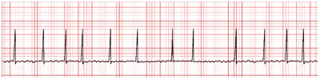
A dosar biomarcadores e iniciar terapia para síndrome coronariana aguda.
B cardioversão elétrica sincronizada.
C metoprolol e apixabana.
D amiodarona EV, se não houver reversão, cardioversão elétrica.
E cardioversão elétrica não sincronizada.
Questão 8 · Pediatria · 4000178699Ao recepcionar um RN na sala de parto, termo, adequado para idade gestacional, nascido de parto vaginal, sem intercorrências, os pais solicitam que não seja pingado colírio de Povidona 2,5%. Você então explica que, sem a medicação, o filho deles estará suscetível, principalmente, a:
A Conjuntivite por clamídia.
B Conjuntivite por gonorreia.
C Conjuntivite estafilocócica
D Conjuntivite por
Questão 9 · Pediatria · 4000178697Você atende uma menina de 5 anos, vítima de um acidente de carro com capotamento no hospital de referência de trauma da cidade. Ela estava presa por dispositivo infantil e está consciente, respondendo a estímulos, com Glasgow > 14 e não apresentou vômitos durante o transporte. O socorrista avisa que a babá que estava junto no banco de trás não resistiu aos ferimentos e foi a óbito no local. Os pais estão sendo atendidos na sala ao lado. De acordo com o estudo PECARN, assinale a alternativa que traz a classificação de risco do TCE e a conduta a ser tomada.
A Risco baixo – alta para domicílio com orientações.
B Risco baixo – observação clínica por 6 horas.
C Risco moderado – tomografia de crânio ou observação clínica por 6 horas.
D Risco alto – tomografia de crânio.
Questão 10 · Pediatria · 4000178653Um adolescente de 12 anos e seis meses, do sexo masculino, comparece à consulta de rotina relatando que está se sentindo mais baixo do que seus colegas. Refere que não tem conseguido prestar atenção às aulas e que sente muito frio. Ele não apresentou intercorrências no período neonatal, alimenta-se bem, pratica exercícios físicos regularmente e não faz uso de medicamentos de rotina. A estatura do pai é de 179cm e sua mãe mede 169cm. Há 1 ano a sua estatura era de 131cm, e sua idade óssea era de 8 anos (11 e seis meses de idade cronológica). Ao exame físico, sua estatura é de 135cm (entre escore Z -2 e -3) e encontra-se no estadiamento de Tanner de G1P1. Cite o alvo genético desse paciente e o provável diagnóstico de seu problema de crescimento. A curva de crescimento está apresentada a seguir:
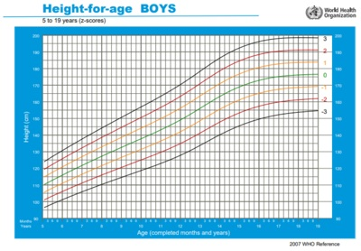
A Alvo de 180,5cm, hipotireoidismo.
B Alvo de 180,5cm, atraso constitucional do crescimento e puberdade.
C Alvo de 168,5cm, baixa estatura familiar.
D Alvo de 168,5cm, deficiência de hormônio de crescimento.
Questão 11 · Nef rologia · 4000178353Criança de 6 anos é trazida ao pronto atendimento devido apresentar, nos últimos dias, quadro de edema periorbitário e em membros inferiores. Ao exame clínico, mostra-se taquipneica, ausculta respiratória com MV + e estertores nos em bases e campos médios pulmonares. Pressão arterial no percentil 95 para a idade. A mãe do paciente notou alteração da coloração da urina e trouxe um recipiente para mostrar: Fonte: acervo do professor Ao encaminhar a amostra urinária para análise de sedimento, você espera encontrar:
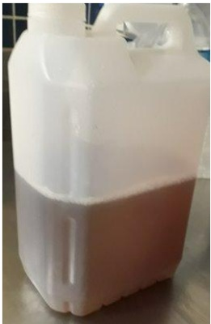
A Bacteriúria
B Hemácias íntegras
C Cilindros hemáticos
D Proteinúria de 6,1 gramas
Questão 12 · Cirurgia · 4000178177Homem, 56 anos de idade, vítima de traumatismo cranioencefálico grave, evoluiu com sequelas neurológicas importantes, apresentando di culdade de deglutição com consequente episódios de broncoaspiração. Por esse motivo, está com dieta por sonda nasoenteral há 6 semanas. Não houve melhora do quadro clínico. Qual é a via de alimentação mais adequada para esse paciente, nesse momento?
A Manter dieta por sonda nasoenteral.
B Gastrostomia endoscópica.
C Gastrostomia a Stamm.
D Jejunostomia a Witzel.
Questão 13 · Cardiologia · 4000178132Paciente de 28 anos, empresária, faz uso regular de energéticos, deu entrada na emergência apresentando quadro súbito de palpitação há 1 hora. Exame físico: acordada, lúcida e orientada, alegando pulsação no pescoço. PA = 96 x 68 mmHg; sat O₂ = 94% em ar ambiente. ECG (derivação DII a seguir). Qual é o diagnóstico e a conduta neste caso? Fonte ECG: Livro Taquiarritmias
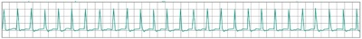
A Taquicardia supraventricular; cardioversão elétrica.
B Taquicardia supraventricular; manobra vagal.
C Flutter atrial; cardioversão elétrica.
D Flutter atrial; amiodarona 300 mg.
Questão 14 · Clínica Médica · 4000178077Teste
A Teste
B Teste
C Teste
D Teste
Questão 15 · Ginecologia · 4000177807Mulher de 36 anos, nuligesta, refere dismenorreia que vem piorando há 1 ano. Queixa-se também de dispareunia. O ultrassom transvaginal mostrou cisto com conteúdo hipoecogênico, homogêneo em “vidro fosco” medindo 2 cm, no ovário direito. Qual é a conduta indicada para esse caso?
A Prescrever anticoncepcional combinado contínuo e fazer seguimento ultrassonográfico em 6 meses.
B Prescrever análogo do GnRH.
C Indicar videolaparoscopia para realização de cistectomia.
D Indicar videolaparoscopia para realização de ooforectomia e congelação intraoperatória.
Questão 16 · Ginecologia · 4000177806Mulher, 20 anos, dois partos normais anteriores, procura a UBS desejando a realização de laqueadura tubária. Solteira, sem parceria xa. Mora com os dois lhos em uma casa de um quarto, sala e banheiro. Refere uso de preservativo esporadicamente. De acordo com a Lei de Planejamento Familiar nº 9.263/1996, podemos afirmar que:
A a paciente não pode ser submetida à laqueadura por não ser casada.
B a paciente não pode ser submetida à laqueadura porque tem menos do que 25 anos de idade.
C a paciente pode ser submetida à laqueadura tubária, pois tem 2 filhos vivos.
D a paciente poderá realizar a laqueadura tubária, se for respeitado o prazo de 90 dias entre a manifestação da vontade e a realização do ato operatório.
Questão 17 · Ginecologia · Obstetrícia · 4000159917Paciente com amenorreia primária SEM desenvolvimento dos caracteres sexuais secundários. Qual das alternativas abaixo NÃO é uma hipótese diagnóstica?
A Síndrome de Swyer
B Síndrome Kallman
C Síndrome de Morris
D Disgenesia gonadal pura
E Síndrome de Turner
Questão 18 · Clínica Médica · 4000200895Paciente de 70 anos deu entrada em um pronto atendimento com quadro de confusão mental e rebaixamento do nível de consciência. Acompanhante refere que, há sete dias, paciente tem apresentado febre, hiporexia, tosse produtiva e dispneia, tendo ainda cado anúrico nas últimas 24h. Ao exame físico: mal estado geral, confuso, anictérico, acianótico, febril; PA = 86/54mmHg; FC = 128bpm; e FR = 31irpm, sem demais alterações significativas no exame segmentar. Em relação à melhor conduta para esse caso, assinale a alternativa correta.
A Iniciar expansão volêmica, solicitar culturas e iniciar amicacina
B Solicitar culturas e inicar ceftazidima
C Inicar expansão volêmica, inicar corticoterapia e ampicilina + sulbactam
D Inicar expansão volêmica, solicitar culturas e inicar ceftriaxona
E Solicitar culturas e inicar vancomicina
Revisar: possível letra faltando em enunciado
Questão 19 · Fios de Sutura · 4000193843Paciente de 49 anos de idade está sendo submetida a uma histerectomia total devido à miomatose uterina. Foi realizada a retirada do útero e a cúpula encontra-se aberta. Qual o o você usaria para realizar o fechamento da cúpula vaginal?
A Polipropileno
B Poliéster
C Poliglactina
D Poliamida
Questão 20 · Critérios para a implantação de um programa de rastreamento · 4000193842Existem algumas neoplasias ginecológicas ainda sem um rastreamento efetivo, como o câncer de endométrio e de ovário. O estabelecimento de um programa de rastreamento na população deve obedecer a alguns critérios. Idealmente, o exame escolhido para servir de primeira etapa de rastreamento para alguma doença ou condição na população geral deve ter:
A Alta especificidade, porque significa que teremos poucos falsos negativos.
B Alta especificidade, porque significa que teremos poucos falsos positivos.
C Alta sensibilidade, porque significa que teremos poucos falsos positivos.
D Alta sensibilidade, porque significa que teremos poucos falsos negativos.
Questão 21 · Sigilo prof issional · 4000193841A equipe multipro ssional de um hospital deseja criar um grupo de mensagens eletrônicas para a discussão de casos clínicos que envolvam diagnósticos e tratamentos dos pacientes atendidos nessa unidade de saúde, sem revelar dados pessoais deles. Com base no Código de Ética Médica, assinale a opção correta.
A A criação de grupos de mensagens eletrônicas, mesmo que inclua apenas médicos, não é ética, pelo risco de quebra do sigilo.
B Os casos clínicos poderão fazer referência a situação clínica que permita identificação do paciente, desde que autorizado por ele.
C A responsabilidade ética sobre o sigilo dessas informações é do administrador do grupo, que deverá ser o responsável técnico da unidade.
D O grupo só poderá incluir profissionais médicos, com a ressalva que as informações passadas têm caráter confidencial e não podem extrapolar os limites do grupo.
Questão 22 · Ginecologia · 4000193840Mulher de 25 anos de idade está tentando engravidar há 2 anos sem sucesso. Durante a investigação da infertilidade foi submetida a uma histerossalpingografia com a imagem abaixo: Fonte: Colégio Brasileiro de Radiologia Diante do achado do exame, qual é a provável alteração apresentada pela paciente e qual o melhor exame para avaliação?

A Útero bicorno; ultrassonografia 3D
B Útero septado; ressonância magnética
C Útero didelfo; histeroscopia
D Útero arqueado- ressonância magnética.
Questão 23 · Ginecologia · 4000193839Mulher de 50 anos refere diminuição do desejo sexual há 1 ano. Associado ao quadro refere que está sem menstruar há 8 meses e que os ciclos estão cada vez mais irregulares. Nega outras queixas associadas. Realizou exames que se encontram normais. Qual das abaixo é uma opção terapêutica para a paciente?
A Estrogênio tópico
B Bupropiona
C Testosterona tópica
D Tibolona
Questão 24 · Ginecologia · 4000193838Paciente de 26 anos vem ao pronto socorro com queixa de dor intensa em região de hipocôndrio direito há 1 dia. Refere que há 10 dias vem apresentando quadro de dor pélvica, associado a sangramento vaginal irregular em pequena quantidade. Está fazendo uso de AINEs sem melhora. Refere que a data da sua última menstruação foi há 14 dias. É usuária de DIU de cobre há 3 anos. Ao exame físico, apresenta temperatura de 38,1 graus, dor à palpação em hipocôndrio direito com descompressão brusca positiva e dor leve à palpação de região hipogástrica. Ao exame especular, apresenta colo friável, com mucorreia intensa. Ao toque vaginal apresenta dor leve à mobilização do colo uterino com anexos livres. Foram realizados exames: AST/ALT, gama GT, fosfatase alcalina, amilase e lipase normais. USG abdome total sem alterações. Diante do exposto, qual é a principal hipótese diagnóstica?
A Hepatite transinfecciosa
B Hepatite medicamentosa
C Pancreatite
D Perihepatite
Questão 25 · Ginecologia · 4000193837Mulher de 34 anos vem ao ambulatório de ginecologia queixando-se de dor em região pélvica há 2 anos. Refere que a dor vem se intensificando e que nota piora durante o trabalho. Trabalha como secretária em um consultório. Associado ao quadro apresenta dispareunia de profundidade. Nega dismenorreia, sintomas urinários ou gastrintestinais. Já teve duas gestações, com dois partos normais anteriores. Nega doenças ou cirurgias prévias. Ao exame físico, não apresenta alterações significativas, além de dor leve à palpação de hipogástrio. Realizou ressonância magnética de pelve que não demonstrou alterações. Diante do exposto, qual é a sua principal hipótese diagnóstica e qual o melhor exame para investigação?
A Aderências pélvicas; laparoscopia
B Endometriose; ultrassonografia com preparo intestinal
C Congestão pélvica; venografia
D Vulvodínea; tip test
Questão 26 · Ginecologia · 4000193836Mulher de 70 anos vem apresentando perdas urinárias há 5 anos. Refere que apresenta uma vontade muito grande de urinar e não consegue chegar ao banheiro. Associado ao quadro apresenta aumento de frequência de micções e noctúria. Iniciou tratamento com treinamento vesical e sioterapia há 2 anos, mas não obteve melhora. Apresenta como antecedentes demência em estágio inicial e hipertensão. Qual a melhor opção terapêutica para essa paciente no momento?
A Oxibutinina
B Imipramina
C Toxina botulínica
D Darifenacina
Questão 27 · Ginecologia · 4000193835Paciente de 62 anos de idade foi submetida a laparotomia para avaliação de um tumor ovariano. No intraoperatório foi evidenciada uma lesão circunscrita no peritônio, recoberta por tecido broso e com material gelatinoso em seu interior. Na cirurgia, também foi possível evidenciar que a cápsula do tumor ovariano estava rompida. Diante dos achados intraoperatórios, qual é o provável subtipo histológico do tumor ovariano?
A Adenocarcinoma seroso
B Fibroma
C Adenocarcinoma mucinoso
D Teratoma maduro
Questão 29 · Ginecologia · 4000193833Mulher de 19 anos de idade, nuligesta, ciclos irregulares, ocorrendo a cada 50–70 dias, IMC = 29 kg/m² , PA = 125 x 90 mmHg. Apresenta hirsutismo (Índice de Ferriman Gallwey = 9) e acne. Exames subsidiários: Beta HcG, Glicemia de jejum = 110 mg/dL, TSH, prolactina e 17-OH Progesterona normais. Qual é a conduta inicial indicada para o distúrbio metabólico desta paciente?
A Perda de peso.
B Pílula combinada
C Antiandrogênio
D Metformina
Questão 30 · Ginecologia · 4000193832Mulher de 21 anos de idade, menarca aos 11 anos, refere ciclos menstruais irregulares, a cada 40 – 70 dias. Apresenta aumento da oleosidade da pele, acne e hirsutismo (índice de Ferriman = 9). Primeira relação sexual aos 20 anos, refere uso de preservativo. Ao exame IMC = 30 Kg/m² ; PA = 112 x 73 mmHg. Além da orientação quanto a perda de peso com a prática de atividade física e dieta, qual é o tratamento medicamentoso indicado?
A Metformina
B Espironolactona
C SIU de levonorgestrel
D Pílula combinada
Questão 31 · Ginecologia · 4000193831Mulher, 46 anos de idade, secundípara, procura atendimento ginecológico referindo sangramento menstrual volumoso com coágulos há 2 dias. Refere que os ciclos sempre foram regulares, com intervalos de 28 dias e duração de quatro a cinco dias em moderada quantidade, porém, há cerca de um ano, começaram apresenta irregularidade, sendo que os intervalos entre as menstruações começaram a aumentar, com falhas em alguns ciclos e volume menstrual aumentado em alguns ciclos. Sem outras queixas, nega uso de medicações, última relação sexual há dois anos. Ao exame físico: PA = 120 x 80 mmHg; FC = 98 bpm; descorada 1+/4. IMC 26 kg/m² Especular: sem lesões de vagina ou colo, com saída ativa de sangue pelo OE. Ao toque: útero de volume normal, móvel e indolor; anexos livres. Nesse caso, qual é a etiologia mais provável?
A Estrutural – adenomiose.
B Não estrutural – disfunção ovulatória.
C Não estrutural – coagulopatia.
D Estrutural – miomatose uterina.
Questão 32 · Ginecologia · 4000193830Mulher, 71 anos de idade, menopausa aos 49 anos, hipertensa e obesa. Comparece ao serviço de ginecologia referindo sangramento genital esporádico há 1 mês. IMC = 32,3 kg/m² . Segue a imagem da ultrassonogra a transvaginal. Foi submetida a biópsia de endométrio ambulatorial com resultado normal. Qual é a conduta indicada?

A Solicitar ressonância magnética da pelve.
B Seguimento ultrassonográfico em 6 meses.
C Solicitar histeroscopia diagnóstica.
D Indicar histerectomia
Questão 33 · Ginecologia · 4000193829Mulher, 29 anos de idade, 2G2PC, comparece ao serviço de ginecologia com sangramento uterino anormal (SUA). Nega comorbidades ou uso de medicamentos. Exame físico sem alterações. Segue a imagem da ultrassonografia transvaginal a seguir: Considerando a classificação da FIGO em relação ao Sangramento Uterino Anormal - SUA (PALM-COEIN), qual é o diagnóstico mais provável?
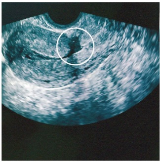
A SUA-A.
B SUA-L.
C SUA-N.
D SUA-M.
Questão 34 · Ginecologia · 4000193828Menina de 13 anos de idade, virgem, comparece ao ginecologista se queixando de uxo menstrual aumentado desde a menarca, há 1 ano. Refere que as menstruações são regulares e duram 10 dias, com coágulos. Queixa-se de hematomas sem saber onde se machucou. Exame físico: IMC = 22 kg/m² , PA = 100 x 60 mmHg, FC = 85 bpm, descorada 1+/4+. Qual é a conduta indicada para esse caso?
A Orientar a paciente que se trata de quadro fisiológico nos primeiros anos após a menarca.
B Solicitar dosagens hormonais para investigar endocrinopatias.
C Solicitar ultrassonografia pélvica para investigar SOP.
D Solicitar hemograma e coagulograma.
Questão 35 · Ginecologia · 4000193827Mulher de 51 anos de idade, G2P2, queixa-se de dismenorreia progressiva e uxo menstrual aumentado há 1 ano. Exame físico sem alterações. A imagem da ultrassonografia pode ser observada abaixo. Considerando o caso exposto, assinale a alternativa que descreve a principal hipótese diagnóstica:

A Endometriose
B Miomatose
C Adenomiose
D Doença inflamatória pélvica
Questão 36 · Ginecologia · 4000193826Mulher, 25 anos de idade, com diagnóstico de Síndrome dos Ovários Policísticos (SOP), deseja engravidar. Menarca aos 13 anos de idade, com história de irregularidade menstrual e amenorreia esporádica. IMC = 31 kg/m² . Escore de Ferriman = 9. Assinale a alternativa mais adequada para o tratamento desta paciente:
A Clomifeno
B FSH
C Drilling
D Letrozol
Questão 37 · Ginecologia · 4000193825Mulher de 47 anos de idade, 3G3P, com quadro de sangramento uterino anormal nos últimos 4 meses. Refere dismenorreia e aumento de uxo menstrual. Ao exame ginecológico foi observado útero pouco aumentado, bocelado. A ultrassonogra a transvaginal mostrou múltiplos miomas. Qual é a conduta mais indicada para esse caso?
A Acetato de medroxiprogesterona.
B Anticoncepcional oral combinado.
C Miomectomia.
D SIU de levonorgestrel.
Questão 38 · Ginecologia · 4000193824Mulher de 41 anos de idade, 1G1P, refere dismenorreia progressiva associada a disúria, principalmente no período menstrual. Exame físico ginecológico sem alterações. Qual é a conduta diagnóstica para esse caso?
A Videolaparoscopia.
B Ultrassonografia pélvica com preparo intestinal.
C Tomografia computadorizada.
D Dosagem de CA-125.
Questão 39 · Ginecologia · 4000193823Mulher de 44 anos de idade, refere nódulo doloroso em mama esquerda, retroareolar há seis meses. Ao exame físico nota-se nódulo bem delimitado de 2 cm de diâmetro na região retroareolar da mama esquerda. Ausência de linfonodomegalia axilar bilateralmente. A imagem da ultrassonogra a pode ser observada a seguir: Nesse caso, qual deve ser a conduta a ser adotada?

A Seguimento de rotina.
B Punção aspirativa por agulha fina.
C Biópsia com agulha grossa da cápsula da lesão.
D Mamotomia.
Questão 40 · Ginecologia · 4000193822Mulher de 56 anos de idade, refere secreção mamilar citrina do mamilo esquerdo há três meses. Ao exame físico foi observada saída de secreção citrina do mamilo esquerdo. Sem nódulos ou espessamentos mamários e ausência de linfonodomegalias. Qual é a hipótese diagnóstica nesse caso?
A Carcinoma in situ.
B Doença de Paget.
C Papiloma intraductal.
D Ectasia ductal.
Questão 41 · Ginecologia · 4000193821Mulher de 42 anos de idade, G1P1, tabagista, em uso de SIU de levonorgestrel. Se queixa de saída esporádica de pus pela aréola, sendo esta a terceira vez que acontece. Refere que usou antibiótico das outras vezes, com melhora do quadro. A imagem da mama acometida é apresentada a seguir. Qual é a hipótese diagnóstica para esse caso?

A Doença de Paget.
B Mastite crônica.
C Mastite periareolar recidivante.
D Doença de Mondor.
Questão 42 · Ginecologia · 4000193820Mulher de 49 anos de idade, parda, 1G1P, menarca aos 13 anos de idade, ciclos regulares, sem antecedentes de patologias mamárias. Refere que a mãe teve câncer de mama diagnosticado aos 49 anos de idade. Cálculo do risco de câncer de mama pelo modelo de Gail com um resultado e de 22,3% (considerando a vida inteira da paciente). Deseja usar medicamento para a prevenção do câncer de mama porque não gostaria de ser submetida a cirurgia profilática. Qual seria a medicação indicada para essa paciente?
A Cabergolina
B Anastrozol
C Tamoxifeno
D Letrozol
Questão 43 · Ginecologia · 4000193819Mulher com 29 anos de idade, 1G1P, sem antecedentes pessoais de patologias mamárias. Refere que a irmã teve câncer de mama com 34 anos e realizou estudo genético que apresentou mutação do BRCA 1. A paciente ainda não realizou o estudo genético. Qual é a melhor forma de realizar o rastreamento do câncer de mama nessa paciente?
A Mamografia anual.
B Tomossíntese anual.
C Mamografia e ressonância magnética anuais.
D Mamografia e ultrassonografia semestrais.
Questão 44 · Ginecologia · 4000193818Mulher de 38 anos de idade, G3P3, laqueadura tubária há 3 anos. Apresenta história familiar de mãe com câncer de mama diagnosticada aos 48 anos de idade e irmã com câncer de mama diagnosticado aos 44 anos de idade. Foi submetida a investigação genética que apresentou mutação do BRCA 1. Mamogra a e ultrassonografia sem alterações. Qual é a conduta mais indicada para este caso?
A Rastreamento do câncer de mama com mamografia e ressonância.
B Quimioprevenção do câncer de mama com anastrozol.
C Discutir com a paciente a possibilidade de mastectomia e salpingooforectomia profilática.
D Oferecer a adenomastectomia profilática.
Questão 45 · Ginecologia · 4000193817Mulher de 61 anos de idade, foi submetida a histerectomia total, salpingooforectomia bilateral por videolaparoscopia. O estudo anatomopatológico mostrou adenocarcinoma endometrióide do endométrio grau I, invadindo 40% do miométrio, sem invasão de colo ou anexos, ausência de sinais de embolização angiolinfática. Qual deve ser a conduta indicada?
A Seguimento.
B Complementar o tratamento cirúrgico com linfadenectomia.
C Tratamento adjuvante com radioterapia.
D Tratamento adjuvante com quimioterapia e radioterapia.
Questão 46 · Ginecologia · 4000193816Lactante, no 9º dia após o parto, se queixa de baixa produção de leite. Considerando este caso, assinale a alternativa que descreve a fase da lactação que a paciente se encontra e a conduta indicada:
A Lactopoese, orientar a técnica adequada e o aumento da frequência e duração da amamentação.
B Lactogênese, prescrever Cabergolina.
C Lactopoese, prescrever Metoclopramida.
D Mamogênese, prescrever sulpirida.
Questão 47 · Tratamento · 4000193815Mulher de 54 anos, 3G,3P(C),0A, laqueadura tubária há 18 anos, menopausada há 3 anos, refere sangramento vaginal esporádico há 4 meses. Realizada histeroscopia com biópsia que revelou hiperplasia endometrial sem atipias. A conduta indicada é:
A Histerectomia
B SIU levonorgestrel
C Seguimento com biópsia em 6 meses
D Expectante
Questão 48 · Ginecologia · 4000193814Paciente do sexo feminino, 28 anos, refere dor nas mamas relacionada ao período menstrual. Nega comorbidades e nega antecedentes familiares de câncer. Ao exame físico mamário não foram observadas anormalidades. A ultrassonogra a das mamas resultou BI-RADS 1. Dentre as alternativas, qual é a primeira opção medicamentosa para este caso?
A Vitamina E
B Cabergolina
C Tamoxifeno
D Anti-inflamatório não esteroidal
Questão 49 · Ginecologia · 4000193813Paciente de 30 anos, G1P1C há 5 anos, em uso de DIU de cobre há 2 meses, evolui com aumento de dor em baixo ventre. Nega febre ou corrimento vaginal. Segue a imagem da ultrassonografia transvaginal: Qual o diagnóstico e conduta?

A Doença inflamatória pélvica. Manter DIU e iniciar antibioticoterapia.
B DIU bem posicionado. Realizar analgésicos e anti-inflamatórios.
C DIU mal-posicionado. Reposicionar DIU via histeroscopia diagnóstica.
D DIU mal-posicionado. Retirar DIU e realizar inserção de novo dispositivo.
Questão 50 · Ginecologia · 4000193812Paciente de 27 anos vem para a consulta ginecológica para escolha de método contraceptivo. G1P1. Nega comorbidades ou alergias. Deseja método e caz e que reduza o uxo menstrual. Refere cirurgia bariátrica (bypass gástrico) há 2 anos. Atualmente pesa 95 kg (peso anterior 140 kg). Nega tabagismo. Exame ginecológico sem alterações. PA: 110x80 mmhg. Dentre os métodos abaixo, qual seria o mais adequado para ela?
A Diafragma
B Diu de cobre.
C Adesivo transdérmico
D Diu liberador de levonorgestrel
Questão 51 · Ginecologia · 4000193811Segundo a lei 14443 de 02/09/2022, que modificou a lei 9263 sobre planejamento familiar, está correto:
A Homens e mulheres com capacidade civil plena, mais de 25 anos ou mais de 2 filhos vivos podem solicitar esterilização cirúrgica.
B Homens e mulheres com capacidade civil plena, mais de 21 anos e mais de 1 filho vivo podem solicitar esterilização cirúrgica.
C A laqueadura pode ser realizada no momento do parto desde que a paciente tenha manifestado a vontade por escrito há, no mínimo, 60 dias.
D Há necessidade de assinatura do cônjuge em casos de sociedade conjugal.
Questão 52 · Ginecologia · 4000193810Paciente de 45 anos, G3P3N, foi encaminhada para serviço especializado de patologia do trato genital inferior devido alteração na colpocitologia oncótica: lesão intraepitelial de alto grau. Foi realizada colposcopia com o seguinte resultado: Diante desse achado, qual deve ser a conduta?
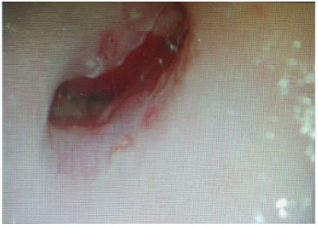
A Exérese de zona de transformação.
B Histerectomia.
C Avaliar presença de lesão de vagina associada.
D Biópsia em quatro quadrantes.
Questão 53 · Ginecologia · 4000193809Paciente de 22 anos, nuligesta, foi encaminhada para serviço especializado de patologia do trato genital inferior devido alteração na colpocitologia oncótica. Teve sexarca aos 15 anos e 8 parceiros sexuais. Não tomou vacina contra hpv. nega comorbidades. Colpocitologia oncótica: lesão intraepitelial de alto grau. Foi realizada colposcopia com o seguinte achado: O resultado da biópsia de colo foi nic 2. Qual a conduta?

A Repetir citologia e colposcopia em 12 meses.
B Exérese de zona de transformação.
C Histerectomia.
D Repetir citologia e colposcopia em 6 meses.
Questão 54 · Ginecologia · 4000193808Sobre os testes moleculares para pesquisa de hpv, assinale a alternativa correta:
A Ficam positivos após a vacinação contra hpv.
B Devem ser realizados, segundo o ministério da saúde, em todas as mulheres acima de 21 anos.
C Possuem elevado valor preditivo negativo.
D Diante de hpv 16 + e citologia ascus está indicada exérese de zona de transformação.
Questão 55 · Ginecologia · 4000193807Paciente de 52 anos, G3P3C, refere episódios de sinusorragia frequentes. Foi várias vezes à urgência, porém só fazia uso de anti brinolíticos. ao ser encaminhada ao ginecologista, o exame físico mostrou tumoração em colo uterino de aproximadamente 5 cm, com extensão para terço inferior da vagina e paramétrios comprometidos bilateralmente. Qual o estadiamento (figo 2018)?
A IA
B IIB
C IIIA
D IIIB
Questão 56 · Ginecologia · 4000193806Paciente de 55 anos portadora de doença de crohn refere prurido vulvar há mais de 10 anos e infecções urinárias de repetição. Realizou tratamento com antifúngicos no início do quadro apenas. O exame da vulva está na imagem abaixo: Qual hipótese diagnóstica e conduta?
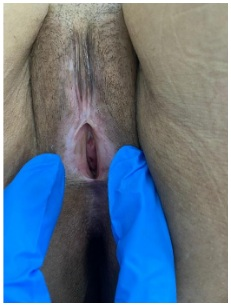
A Líquen simples crônico. Corticoide.
B Líquen escleroso. Corticoide.
C Líquen escleroso. Biópsia.
D Sinéquia de pequenos lábios. Estrogênio tópico.
Questão 57 · Ginecologia · 4000193805Paciente de 60 anos, diabética descompensada refere prurido vulvar crônico. O exame da vulva está na imagem abaixo: Qual hipótese diagnóstica e conduta?
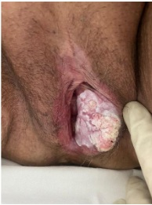
A Líquen escleroso. Corticoide tópico.
B Câncer de vulva. Biópsia incisional.
C Câncer de vulva. Biópsia excisional.
D Condiloma acuminado. Laser de CO₂.
Questão 58 · Ginecologia · 4000193804Paciente de 60 anos com relato de corrimento vaginal amarelado em grande quantidade e sem odor. Ao ef, ph vaginal de 5,5, corrimento amarelo bolhoso, sem odor fétido. Microscopia do conteúdo vaginal: aumento de polimofonucleares com predomínio de células parabasais e basais. Qual sua hipótese diagnóstica?
A Tricomoníase.
B Vaginite atrófica.
C Vaginite inflamatória descamativa.
D Vaginose citolítica.
Questão 59 · Ginecologia · 4000193803Sua paciente tem 30 anos está gestante de 30 semanas e refere corrimento com prurido intenso. A microscopia com conteúdo vaginal evidenciou aumento de polimorfonucleares e presenças de hifas. Qual das alternativas traz a melhor opção de tratamento?
A Fluconazol 150 mg, VO, dose única.
B Nistatina via vaginal por 7 dias.
C Miconazol via vaginal por 7 dias.
D Metronizadol via vaginal por 5 dias.
Questão 60 · Ginecologia · 4000193802Casal está tentando engravidar há 1 ano sem sucesso. Ambos têm 36 anos, sem comorbidades e nunca tiveram filhos. A paciente relata ciclos regulares, com fluxo normal. Seguem seus exames: Paciente: fsh 5 mui/ml, tsh 1,0 ui/ml, prolactina 10 ng/ml. Histerossalpingografia: obstrução tubária bilateral com hidrossalpinge. Ultrassonografia transvaginal: normal Espermograma do parceiro: volume 3 ml, concentração 20 milhões/ml, a+b 40%, kruger 5% Qual o tratamento para o casal?
A Fertilização in vitro (FIV) com óvulos doados.
B Inseminação intrauterina.
C Salpingectomia bilateral + FIV
D Indução de ovulação com letrozol.
Questão 61 · Ginecologia · 4000193801Sobre as normas éticas do CFM para reprodução assistida:
A No laudo de embriões biopsiados é permitido o resultado do cariótipo.
B O número máximo de embriões que podem ser gerados é 8.
C A idade máxima para doação de óvulos é de 35 anos.
D A idade máxima para doação de espermatozoides é de 50 anos.
Questão 62 · Ginecologia · 4000193800Sobre o cuidado ginecológico em transgêneros:
A O rastreio do câncer de colo deve ser mantido segundo as orientações do Ministério da Saúde.
B Se o paciente realizou retirada das mamas, não precisa realizar mamografia de rastreamento.
C Pacientes que utilizam testosterona não precisam de anticoncepção.
D A cirurgia para redesignação de sexo pode ser realizada a partir dos 14 anos.
Questão 63 · Ginecologia · 4000193799Mulher de 35 anos, relata amenorréia há 6 meses, associada com ressecamento vaginal e dispareunia. Estatura = 1,64 m e peso = 45 kg. Seguem alguns exames: Ultrassonografia transvaginal: útero de volume normal com eco endometrial 3 mm. Ovários normais. FSH: 0,5 mUI/mL TSH e prolactina normais. O diagnóstico mais provável é:
A Insuficiência ovariana prematura.
B Amenorréia hipotalâmica.
C Síndrome de Sheehan.
D Hiperprolactinemia.
Questão 64 · Ginecologia · 4000193798Paciente de 27 anos refere amenorreia há 7 meses. Refere ciclos anteriores regulares, com volume normal. G1P1C(há 5 anos)A0. Está em tratamento para depressão com benzodiazepínicos. Seguem os exames complementares: Beta hcg: negativo TSH 2 mUi/mL FSH 0,8 mUi/mL Prolactina 58 ng/mL Qual a hipótese diagnóstica:
A Amenorreia funcional.
B Hiperprolactinemia por fármacos.
C Hiperprolactinemia por provável tumor no sistema nervoso central.
D Hipertireoidismo.
Questão 65 · Ginecologia · 4000193797Paciente de 17 anos, refere nunca ter menstruado. Ao exame físico, desenvolvimento puberal M2P1, com presença de abaulamento na região inguinal. Ao exame de imagem, útero ausente. O cariótipo é 46XY. Qual o diagnóstico?
A Síndrome de Turner
B Síndrome de Morris
C Síndrome de Rokitansky
D Disgenesia gonadal pura
Questão 66 · Ginecologia · 4000193796Mulher, 37 anos, chega a Serviço de Emergência trazida pelo SAMU. Refere agressão sexual pelo parceiro. Relata que ele a manteve em situação de cárcere nos últimos 2 anos, após ela ter pedido o divórcio. Última atividade sexual há 12 horas, com coito vaginal e anal, sem uso de preservativo. DUM: não recorda. Ao exame ginecológico, presença de laceração em fundo de saco extensa com sangramento ativo. Em relação ao atendimento a ser prestado, pode-se afirmar que:
A Você deve realizar o atendimento após a comunicação à autoridade policial.
B A profilaxia para HIV deve ser realizada com Tenofovir, Lamivudina e Dolutegravir por 28 dias.
C A conduta deve ser correção da laceração (prioridade), notificação do caso à vigilância epidemiológica, solicitação de sorologias e de beta-hcg.
D A conduta deve ser correção da laceração (prioridade), notificação do caso à vigilância epidemiológica e a autoridade policial, solicitação de sorologias e de beta-hcg.
Questão 67 · Ginecologia · 4000193795Paciente de 21 anos, sexualmente ativa, vai a consulta ginecológica com queixa de lesões genitais dolorosas há 3 dias. Refere quadro gripal há 1 semana, com febre e mialgia. Nega atividade sexual no último mês. Nega alergias ou comorbidades. Nega lesões em outros locais. Nega quadro semelhante anterior. Porta sorologias: anti HIV não reagente/ HBsAg não reagente/ VDRL não reagente / anti HCV não reagente. Ao exame da vulva, observou-se a seguinte lesão: Qual a melhor hipótese diagnóstica?

A Doença de Behçet.
B Herpes genital.
C Cancro Duro.
D Úlcera de Lipschutz.
Questão 68 · Ginecologia · 4000193794Criança de 3 anos foi levada à urgência devido ao aparecimento das lesões abaixo há cerca de 3 semana. Mãe trabalha em regime de plantão e deixa a criança na casa da vizinha. Qual a hipótese dianóstica e tratamento?
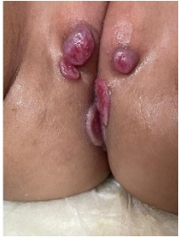
A Sarcoma Botrioide. Exérese das leões.
B Condilomas. Ácido Tricloroacético.
C Herpes genital. Aciclovir.
D Sífilis. Penicilina.
Questão 69 · Ciclo Básico Graduação em Medicina · 4000201352A inervação da língua é rica e bem variada quanto à sua porção motora e sensitiva, com diferenças entre a geral – tato e temperatura – e especí ca – paladar –. Assinale a alternativa que contenha o principal nervoso responsável pela motricidade da língua e pela sensibilidade especial dos dois terços anteriores.
A N. hipoglosso e n. corda do tímpano.
B N. hipoglosso e n. facial.
C N. glossofaríngeo e n. hipoglosso.
D N. glossofaríngeo e n. corda do tímpano.
E N. hipoglosso e n. lingual.
Revisar: possível letra faltando em enunciado
Questão 70 · Ciclo Básico Graduação em Medicina · 4000201351A língua apresenta uma risca vascularização necessária para o funcionamento adequado da musculatura que controla os seus movimentos. Qual é a artéria responsável pela irrigação da raiz da língua?
A A. sublingual.
B A. profunda da língua.
C A. lingual.
D Aa. dorsais da língua.
E A. sublingual e a. profunda da língua.
Questão 71 · Ciclo Básico Graduação em Medicina · 4000201350A musculatura intrínseca da língua é importante, em especial, na alteração do formato da língua porque eles não se inserem em ossos. Assinale a alternativa
A O músculo longitudinal superior está localizado inferiormente à túnica mucosa do dorso da língua, curvando a língua longitudinalmente para cima e elevando o seu ápice.
B O músculo transverso está localizado inferiormente ao longitudinal superior e suas fibras estão dispostas no eixo laterolateral da língua.
C O músculo vertical tem suas fibras interpostas com o transverso e atua no achatamento da língua.
D O músculo longitudinal inferior está localizado inferiormente ao longitudinal superior e tem as mesmas funções.
E A atuação conjunta dos músculos vertical e transverso resulta em um alongamento e estreitamento da língua, podendo empurrá-la contra os dentes incisivos.
Questão 72 · Ciclo Básico Graduação em Medicina · 4000201349A musculatura extrínseca da língua é importante em especial na alteração de sua posição e eles se originam a partir de um osso. Assinale a alternativa correta acerca deles.
A O músculo palatoglosso atua como o arco palatino mais posterior e insere-se também na faringe, em que adquire a função como músculo longitudinal interno.
B O músculo genioglosso ocupa um espaço relativamente pequeno da língua e insere-se na espinha geniculada da mandíbula.
C O músculo hioglosso insere-se na região lateral da língua e atua para a sua protusão e elevação de suas laterais.
D O músculo estiloglosso tem origem no processo estiloide e insere-se lateralmente na língua, auxiliando na elevação de suas laterais e retração.
E O principal músculo extrínseco é o longitudinal superior, que atua para curvar a língua longitudinalmente para cima.
Questão 73 · Ciclo Básico Graduação em Medicina · 4000201348A língua é, essencialmente, um órgão muscular recoberto por uma túnica mucosa. Essa característica faz com que a sua musculatura seja um componente muito importante para a sua função. Assinale a alternativa correta acerca da musculatura lingual.
A Há a musculatura extrínseca da língua formada por músculos que se originam exteriormente e a sua única função é de mudança do formato da língua.
B A principal função dos músculos intrínsecos da língua é a alteração de sua posição.
C O funcionamento dos músculos da língua é complexo e não podem ser resumidos a ações simples, podendo ter funções diferentes e antagônicas em suas partes.
D Um dos músculos intrínsecos é o genioglosso, que compõe a maior parte da língua e apresenta formato de leque.
E Um dos músculos extrínsecos é o longitudinal superior, que constitui à camada fina de músculos orientada longitudinalmente localizada abaixo da túnica mucosa no dorso da língua.
Questão 74 · Ciclo Básico Graduação em Medicina · 4000201347Qual das estruturas abaixo corresponde a uma projeção existente na túnica mucosa do assoalho da cavidade oral abaixo da face inferior da língua? Essa estrutura está associada ao frênulo lingual e apresenta o óstio do ducto salivar submandibular.
A Sulco terminal da língua.
B Sulco mediano.
C Papila sublingual.
D Papilas circunvaladas.
E Papilas fungiformes.
Questão 75 · Ciclo Básico Graduação em Medicina · 4000201346O palato constitui a separação entre as cavidades nasal e oral e é dividido em duas partes: a porção dura, que apresenta esqueleto ósseo, e a mole, sem parte óssea. O palato mole ca suspenso e tem a sua posição controlada pela ação de músculos, que permitem com que ele bloqueie a comunicação entre as cavidades provisoriamente. Assinale a alternativa
A A contração do músculo levantador do véu palatino bloqueia o istmo faríngeo, o que não permite a comunicação entre a orofaringe e a nasofaringe.
B O músculo palatoglosso forma o arco palatino mais anterior e é um dos músculos extrínsecos da língua, auxiliando na elevação de sua porção lateral.
C O músculo palatofaríngeo forma o arco palatino mais posterior e atua como um músculo longitudinal da faringe, encurtando-a.
D O músculo tensor do véu palatino também age na abertura da tuba auditiva, permitindo a comunicação entre a cavidade timpânica e a nasofaringe.
E O músculo tensor do véu palatino atua na elevação do palato mole durante a deglutição para impedir com que o alimento passe para as cavidades nasais.
Revisar: possível letra faltando em enunciado
Questão 76 · Ciclo Básico Graduação em Medicina · 4000201345O palato é um componente comum das cavidades nasal e oral, atuando como assoalho e teto, respectivamente. Em sua face superior, é recoberto por epitélio respiratório e, na inferior, por epitélio digestório. Isso permite a ele que adquira uma complexa vascularização e inervação. Quanto a esse tópico, assinale a alternativa correta.
A Posteriormente aos dentes incisivos, abre-se o forame palatino maior, que dá passagem aos vasos e nervo de mesmo nome.
B O nervo responsável pela inervação sensitiva de todo o palato é o nasopalatino.
C Todos os músculos palatinos são inervados pelo nervo mandibular (NC V₃).
D A principal fonte de vascularização do palato é por parte das artérias palatinas menores, que passam através do forame palatino menor, medial ao terceiro molar.
E O nervo palatino maior inerva sensitivamente a maior parte do palato duro, com exceção da porção mais anterior que é feita pelo nasopalatino.
Questão 77 · Ciclo Básico Graduação em Medicina · 4000201344Um dos músculos do palato mole está inserido, também, na parte cartilaginosa da tuba auditiva, o que faz com que a sua contração também resulte na abertura da luz da tuba. Assim, ele permite a comunicação entre o ambiente interno da orelha média e o externo, equalizando a pressão. Qual é esse músculo?
A M. levantador do véu palatino.
B M. tensor do véu palatino.
C M. palatoglosso.
D M. palatofaríngeo.
E M. da úvula.
Questão 78 · Ciclo Básico Graduação em Medicina · 4000201343A condução do alimento da cavidade oral para a orofaringe é uma das etapas da deglutição, que envolve a elevação do palato mole para permitir a passagem do bolo alimentar. Como se chama o espaço entre a cavidade oral e a orofaringe?
A Cóanos.
B Fauces.
C Fenda tonsilar.
D Arcos palatinos.
E Vestíbulo da boca.
Questão 79 · Ciclo Básico Graduação em Medicina · 4000201342O vestíbulo da boca é o espaço localizado entre a face interna dos lábios e bochecha e a gengiva e os dentes. Abaixo está uma imagem que apresenta o lábio superior levantado. Assinale a alternativa que contenha a estrutura indicada corretamente. Figura 22: Vestíbulo da boca. Fonte: Estratégia Imagens.
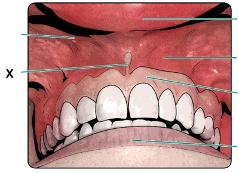
A Frênulo do lábio.
B Frênulo da língua.
C Túnica mucosa alveolar.
D Gengiva labial superior.
E Túnica mucosa labial.
Questão 80 · Ciclo Básico Graduação em Medicina · 4000201341A cavidade oral é o meio de entrada siológico do alimento no sistema digestório, que é transportado, através da faringe e do esôfago, em direção ao estômago durante a deglutição. Assinale a alternativa correta acerca desse espaço.
A O vestíbulo da boca é o espaço entre os dentes e a gengiva e os lábios e a bochecha, sendo externo ao restante da cavidade.
B A cavidade própria da boca é o espaço similar a uma fenda entre a superfície labial dos dentes e gengiva e a túnica mucosa interna dos lábios e bochecha.
C A rima da boca é a estrutura que permite a comunicação da cavidade oral com a orofaringe.
D O vestíbulo da boca é o espaço entre os arcos dentais mandibular e maxilar cujo teto é o palato.
E Quando a boca está em repouso, a língua ocupa a maior parte do vestíbulo da boca.
Questão 81 · Ciclo Básico Graduação em Medicina · 4000201340Há vários músculos da faringe e a sua atuação em conjunto é importante para as etapas da deglutição e modificação do conduto da voz para alterá-la. Assinale a alternativa
A O músculo estilofaríngeo entra na camada interna na abertura entre os músculos constritores superior e médio.
B O único músculo da faringe que recebe inervação motora pelo n. glossofaríngeo é o músculo estilofaríngeo.
C Os músculos longitudinais da camada interna se unem próximos à sua inserção, inserindo-se em conjunto nas margens posterior e superior da cartilagem tireóidea.
D O músculo salpingofaríngeo é um dos componentes da camada externa da faringe, atuando na elevação da laringe.
E A atuação dos músculos constritores da faringe é na formação de uma crista peristáltica para empurrar o bolo alimentar ao esôfago.
Questão 82 · Ciclo Básico Graduação em Medicina · 4000201339Qual dos seguintes nervos é o principal responsável pela inervação sensitiva da faringe?
A N. glossofaríngeo.
B N. facial.
C N. hipoglosso.
D N. vago.
E N. acessório.
Questão 83 · Ciclo Básico Graduação em Medicina · 4000201338Os músculos da faringe assumem diferentes funções que são importantes siologicamente para a sua condução de ar e de alimento pelas mesmas vias, modi cando-a estruturalmente. Assinale a alternativa que contenha as afirmativas corretas. I - O primeiro músculo constritor da faringe a se contrair durante a deglutição é o superior. II - A origem do músculo constritor superior é na rafe pterigomandibular. III - Os músculos da camada interna são longitudinais e atuam na depressão da laringe para que ocorre a obstrução do ádito da laringe. IV - Os músculos faríngeos recebem inervação do plexo faríngeo, que contém bras dos nervos vago (X) e glossofaríngeo (IX). V - A contração dos músculos constritores da camada externa da faringe resulta em seu encurtamento e aumento de largura.
A I, II e III, apenas.
B I, II e IV, apenas.
C Todas as afirmativas estão corretas.
D II e V.
E III, IV e V.
Questão 84 · Ciclo Básico Graduação em Medicina · 4000201337Os músculos da camada interna da faringe atuam na elevação da laringe e diminuição do comprimento do órgão. O músculo salpingofaríngeo é um deles. Onde é a sua origem?
A Ligamento estilohioideo.
B Cornos maiores do hioide.
C Parte cartilagínea da tuba auditiva.
D Processo estiloide do temporal.
E Rafe pterigomandibular.
Questão 85 · Ciclo Básico Graduação em Medicina · 4000201336Vários músculos compõem as paredes da faringe e atuam para a manutenção da sua siologia. O músculo constritor superior é um deles. Onde é a sua origem?
A Ligamento estilohioideo.
B Cornos maiores do hioide.
C Parte cartilagínea da tuba auditiva.
D Processo estiloide do temporal.
E Rafe pterigomandibular.
Questão 86 · Ciclo Básico Graduação em Medicina · 4000201335A deglutição é um processo anatomicamente complexo que envolve a coordenação de várias estruturas faríngeas e laríngeas para que o alimento seja adequadamente conduzido. Assinale a alternativa correta acerca desse processo.
A O primeiro passo é a compressão do bolo alimentar contra o palato duro, que resulta na contração dos músculos da língua e transferência do conteúdo para a nasofaringe.
B A posição primária do palato antes da deglutição é estar aberto e com bloqueio da nasofaringe para que o bolo alimentar não ascenda.
C Há contração dos músculos faríngeos longitudinais e supra-hioideos para que ocorra o rebaixamento da laringe durante a deglutição.
D Há contração sequencial involuntária dos três músculos constritores sequenciais que empurra o bolo para o esôfago.
E Os músculos constritores da faringe atuam simultaneamente para a diminuição da luz da faringe para impedir que o alimento entre na laringe.
Questão 87 · Ciclo Básico Graduação em Medicina · 4000201334A imagem abaixo apresenta uma vista da parede lateral da faringe e de todas as estruturas e projeções da mucosa. Próximo à conexão com a cavidade nasal, está a estrutura apontada. Qual é o seu nome? Figura 14: Vista da parede lateral da faringe. Fonte: Estratégia Imagens.

A Óstio da tuba auditiva.
B Óstio do ducto lacrimonasal.
C Tonsilas palatinas.
D Tonsila faríngea.
E Prega salpingofaríngea.
Questão 88 · Ciclo Básico Graduação em Medicina · 4000201333A faringe, como é o principal meio de entrada tanto de ar quanto de alimentos, apresenta um tecido linfático rico que forma um regiões da faringe. Qual dessas tonsilas está presente na fossa tonsilar entre os arcos palatoglosso e palatofaríngeo?
A Tonsila faríngea.
B Tonsilas tubária.
C Tonsilas palatinas.
D Tonsilas linguais.
E Tonsilas laríngeas.
Questão 89 · Ciclo Básico Graduação em Medicina · 4000201332A faringe é um órgão que atua na condução de alimento para o esôfago e de ar para faringe, estendendo-se desde a sua comunicação com as cavidades nasais até o início do esôfago. Quais são os seus limites superior e inferior?
A Base do crânio e margem superior do osso hioide.
B Margem inferior da cartilagem cricoidea e margem inferior da vértebra C VI.
C Margem superior da vértebra C III e margem inferior da vértebra C VII.
D Osso palatino e margem superior do osso hioide.
E Base do crânio e margem inferior da vértebra C VI.
Questão 90 · Ciclo Básico Graduação em Medicina · 4000201331A faringe é um órgão com atuação tanto no sistema digestório quanto do respiratório, porque serve como via de condução para o alimento e para o ar. Esses elementos assumem destinos diferentes de acordo com a conformação assumida. A imagem abaixo apresenta uma imagem de uma faringe com a sua parede posterior seccionada e aberta, como um livro. Assinale a alternativa que contenha, corretamente, a estrutura apontada. Figura 11: Vista posterior da faringe seccionada Fonte: Estratégia Imagens.

A Úvula.
B Palato mole.
C Recesso faríngeo.
D Tonsila faríngea.
E Prega salpingofaríngea.
Questão 91 · Ciclo Básico Graduação em Medicina · 4000201330A transdução olfatória envolve receptores específicos conhecidos como receptores olfatórios, que são ativados na presença do ligante e desencadeiam um sinal elétrico. Esse reconhecimento é, então, transmitido pelos axônios do neurônio receptor até o SNC. Assinale a alternativa processo.
A O funcionamento dos receptores olfatórios é com base na ativação de proteína G e da adenilil ciclase.
B A ativação dos receptores olfatórios desencadeia a despolarização da célula com abertura de canais de sódio e cálcio.
C Os diferentes receptores olfatórios usam o mesmo tipo de segundo mensageiro, o que faz com que cada célula possa expressar apenas um receptor.
D Dos mais de 300 genes de receptores olfatórios, cada neurônio sensorial expressa apenas um gene dos receptores.
E Cada receptor olfatório é específico para apenas um odorífero, o que faz com que a sinalização individual de uma célula seja suficiente para transmitir a informação do cheiro.
Questão 92 · Ciclo Básico Graduação em Medicina · 4000201329Há, na cavidade nasal, um epitélio no dedicado à olfação pelo reconhecimento de substâncias odoríferas. Assinale a afirmativa correta acerca da fisiologia da quimiorrecepção.
A Há células caliciformes que secretam o muco para que as partículas consigam se aderir e difundir- se até os receptores.
B As células receptoras olfatórias são neurônios, o que significa que a sua perda resulta na ausência irreversível da olfação.
C Diferentemente do epitélio respiratório, não há uma camada de líquido que separa a luz das células epiteliais, o que permite o alcance das partículas do ar.
D Há glândulas serosas que secretam o seu conteúdo na luz da cavidade nasal, o que forma uma camada de secreção serosa que recobre o epitélio e serve como solvente para as substâncias.
E A área do epitélio olfatório é significativamente grande em humanos, ocupando a maior parte da cavidade nasal.
Questão 93 · Ciclo Básico Graduação em Medicina · 4000201328Histologicamente, após o vestíbulo do nariz, há duas áreas distintas funcional e estruturalmente na cavidade nasal. Uma delas é a área respiratória, cuja função associa-se mais ao transporte e processamento do ar. Assinale a alternativa correta acerca desse epitélio.
A Apresenta um epitélio estratificado pavimentoso, como a traqueia, e atua no aquecimento do ar.
B O aquecimento do ar é resultado de uma diminuição da área de superfície com a presença das conchas nasais.
C A presença de conchas nasais que compartimentalizam a cavidade é importante para criar um fluxo turbulento que facilita a precipitação de partículas.
D Apresenta um epitélio pseudoestratificado colunar com células neuronais sensitivas que emitem seus processos dendríticos na luz da cavidade.
E A lâmina própria apresenta poucas alças capilares em decorrência da grande exposição dessa região a traumas.
Questão 94 · Ciclo Básico Graduação em Medicina · 4000201327As células receptoras olfatórias atuam como transdutores do sinal químico da concentração de substâncias presentes no ar para o sinal elétrico conduzido pelos axônios do nervo olfatório (NC I). Tipicamente, elas parecem ser os únicos neurônios prontamente substituídos após o nascimento, o que permite o reestabelecimento da olfação mesmo em casos transitórios de anosmia. Assinale a alternativa acerca dessas células.
A As células receptoras são neurônios bipolares que emitem um processo dendrítico apical para a luz da cavidade nasal.
B Os receptores olfatórios são proteínas acopladas a proteína G que atuam na ativação da adenilil ciclase.
C No muco olfatório, há proteínas de ligação a odorantes que são capazes de se ligar a substâncias e carregá-las até os receptores.
D Uma única célula é suficiente para transmitir as informações necessárias em decorrência da presença de grande quantidade de receptores olfatórios.
E O domínio basal das células receptoras emite um axônio não mielinizado para convergir com outros e formar o nervo olfatório.
Questão 95 · Ciclo Básico Graduação em Medicina · 4000201326A área olfatória é um dos componentes da cavidade nasal e atua na olfação em decorrência da presença de células receptoras especializadas e uma cor castanho-amarelada característica. Algumas patologias são capazes de alterar a sua ação e promover anosmia. Assinale a alternativa que contenha as a rmativas corretas. I - A lâmina própria da mucosa olfatória é diretamente contígua com o periósteo adjacente. II - A área olfatória está nas porções mais superiores da cavidade em decorrência da lâmina cribriforme formar o teto. III - Para que ocorra a olfação, o ar deve se direcionar para os espaços mais superiores da cavidade, próximo ao recesso esfenoetmoidal. IV - As células receptoras são os próprios neurônios bipolares que projetam processos celulares ciliares com receptores para as substâncias. V - As células receptores são células epiteliais especializadas que fazem sinapse com os neurônios que compõem o nervo olfatório.
A I, II e IV, apenas.
B I, e IV, apenas.
C II, III e V, apenas.
D II, III e IV, apenas.
E I, II, III e IV.
Questão 96 · Ciclo Básico Graduação em Medicina · 4000201325Há dois grupos de função da cavidade nasal, associada a áreas com histologia distinta. Uma delas é a região olfatória, associada à sensibilidade a partículas olfatórias. Onde ela está localizada e quais são suas características histológicas?
A A área olfatória está presente no vestíbulo do nariz e é, histologicamente, distinta em decorrência da ausência de células caliciformes.
B A área olfatória está presente nos cóanos e as células receptoras olfatórias são neurônios bipolares com processos apicais que formam cílios com vários receptores.
C A área olfatória está presente no teto e nas partes superior das paredes medial e lateral da cavidade nasal, não apresentando células caliciformes.
D A área olfatória está presente no teto e na parte superior das paredes medial e lateral da cavidade nasal, apresentando células epiteliais receptoras específicas sem a presença de neurônios.
E A área olfatória está presente na maior parte da cavidade, com exceção do teto e das porções superiores, e apresenta grande número de células caliciformes.
Questão 97 · Ciclo Básico Graduação em Medicina · 4000201324A cavidade nasal é uma das vias de entrada de ar no organismo em direção à faringe. Exercendo uma função importante de processamento qualitativo do ar em virtude do aquecimento e turbilhonamento, que facilita a deposição de partículas na camada de muco do epitélio. Uma parte dessa cavidade é o Assinale a alternativa correta.
A O vestíbulo do nariz é o início da cavidade nasal a partir da narina com o epitélio continuado com o da pele.
B O vestíbulo do nariz é a porção mais posterior da cavidade nasal, permitindo a sua comunicação com a nasofaringe.
C O vestíbulo do nariz é recoberto por epitélio pseudoestratificado colunar, assim como o restante do trato respiratório superior.
D O vestíbulo do nariz constitui os espaços entre as conchas nasais por onde o ar pode transitar e atuar na olfação.
E O vestíbulo do nariz é recoberto por epitélio estratificado pavimentoso, assim como a traqueia.
Questão 98 · Ciclo Básico Graduação em Medicina · 4000201323Há diversas funções associadas à cavidade nasal, que atua como via de condução de ar, assim como espaço para drenagem de secreções dos seios faciais e de líquido lacrimal. Todo esse conteúdo direcionado para essa cavidade é transportado para outros locais. Uma estrutura anatômica associada são os cóanos. Assinale a alternativa correta sobre eles.
A Cóano é o espaço presente na porção externa do nariz que o comunica diretamente com o ambiente externo, revestido por um epitélio estratificado pavimentoso, continuação da pele.
B Cóano é orifício delimitado pela asa do nariz lateralmente que permite a entrada de ar para a cavidade nasal.
C Cóanos são os espaços delimitados entre as conchas que constituem as vias possíveis para a passagem de ar.
D Cóanos são as aberturas posteriores da cavidade nasal que comunicam a sua porção posterior com a nasofaringe.
E Cóano é o espaço da cavidade nasal revestido pela túnica mucosa respiratória de epitélio pseudoestratificado.
Questão 99 · Ciclo Básico Graduação em Medicina · 4000201322Para o estudo dos seios da face, é importante o seu conhecimento anatômico para identi cá-los no exame físico e nos exames de imagem. Uma ferramenta útil para a sua análise é a tomogra a, que permite a visão de secções da cavidade nasal e dos seios associados. Assinale a alternativa que contenha o seio indicado nessa tomografia computadorizada coronal. Figura 35: TC coronal de seios da face. Fonte: Estratégia Imagens.
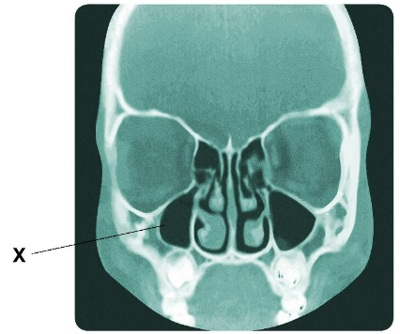
A Seio esfenoide.
B Seio frontal.
C Seio maxilar.
D Células etmoidais anteriores.
E Células etmoidais posteriores.
Questão 100 · Ciclo Básico Graduação em Medicina · 4000201321A cavidade nasal é um ponto importante na via de drenagem dos seios da face, atuando como centro de comunicação da luz dos seios. Assim, clinicamente, ele se torna importante também porque é a fonte da infecção dessas estruturas. Abaixo está presente uma secção sagital da cavidade nasal com abertura dos seios. Assinale a alternativa que contenha o seio indicado. Figura 33: Seios da face. Fonte: Estratégia Imagens.

A Seio esfenoidal.
B Seio frontal.
C Seio maxilar.
D Células etmoidais anteriores.
E Células etmoidais posteriores.
Questão 101 · Ciclo Básico Graduação em Medicina · 4000201320A cavidade nasal é um ponto importante na via de drenagem dos seios da face, atuando como centro de comunicação da luz dos seios. Assim, clinicamente, ele se torna importante também porque é a fonte da infecção dessas estruturas. Abaixo está presente uma secção sagital da cavidade nasal com abertura dos seios. Assinale a alternativa que contenha o seio indicado. Figura 31: Seios da face. Fonte: Estratégia Imagens.

A Seio esfenoide.
B Seio frontal.
C Seio maxilar.
D Células etmoidais anteriores.
E Células etmoidais posteriores.
Questão 102 · Ciclo Básico Graduação em Medicina · 4000201319Há algumas regiões do organismo mais susceptíveis a hemorragias traumáticas em decorrência da proximidade dos vasos à superfície ou a um uxo elevado de sangue. Um espaço conhecido de plexo anastomóstico arterial é a área de Kiesselbach. Assinale a alternativa correta acerca desse área.
A Está na parte anterior do septo nasal e recebe vascularização preferencial da artéria mandibular.
B Está na parte posterior do septo nasal e recebe vascularização de ramos das artérias oftálmica, maxilar e facial.
C Está na parede lateral da cavidade nasal e recebe vascularização apenas das artérias etmoidais anteriores e posteriores.
D Está na parede lateral da cavidade nasal e recebe vascularização de ramos das artérias oftálmica, maxilar e facial.
E Está na parte anterior do septo nasal e recebe vascularização de ramos das artérias oftálmica, maxilar e facial.
Questão 103 · Ciclo Básico Graduação em Medicina · 4000201318A cavidade nasal atua não somente na condução do ar, sendo importante também como via de drenagem dos vários seios da face e vias lacrimais. Em qual espaço da cavidade está localizada a abertura do ducto lacrimonasal, que transporta o líquido lacrimal da órbita para o nariz?
A Meato nasal inferior.
B Meato nasal superior.
C Meato nasal médio.
D Recesso esfenoetmoidal.
E Meato nasal comum.
Questão 104 · Ciclo Básico Graduação em Medicina · 4000201317A cavidade nasal atua não somente na condução do ar, sendo importante também como via de drenagem dos vários seios da face e vias lacrimais. Em qual espaço da cavidade está localizada a abertura que se comunica com o seio frontal?
A Meato nasal inferior.
B Meato nasal superior.
C Meato nasal médio.
D Recesso esfenoetmoidal.
E Meato nasal comum.
Questão 105 · Ciclo Básico Graduação em Medicina · 4000201316A estrutura da cavidade nasal é muito importante para a condução do ar, modi cando-o qualitativamente, e, também, para a olfação, visto a presença de receptores sensoriais capazes de reconhecerem moléculas, o que cria o cheiro de um objeto. Qual dos seguintes ossos não participa da formação do seu teto?
A Etmoide.
B Esfenoide.
C Frontal.
D Nasal.
E Palatino.
Questão 106 · Ciclo Básico Graduação em Medicina · 4000201315As conchas nasais são lâminas projetadas para o interior da cavidade que aumentam muito a superfície de troca para o aquecimento do ar, o que é importante para uma respiração mais e ciente. A partir de qual parede eles se projetam e qual é o espaço delimitado entre a concha nasal superior e a média?
A Projetam-se da parede lateral da cavidade nasal e o espaço é o meato nasal médio.
B Projetam-se da parede medial da cavidade nasal e o espaço é o meato nasal médio.
C Projetam-se do teto da cavidade nasal e o espaço é o recesso esfenoetmoidal.
D Projetam-se da parede lateral da cavidade nasal e o espaço é o meato nasal superior.
E Projetam-se da parede medial da cavidade nasal e o espaço é o meato nasal superior.
Revisar: possível letra faltando em enunciado
Questão 107 · Ciclo Básico Graduação em Medicina · 4000201314A cavidade nasal é dividida por projeções com concavidades, as conchas nasais, que delimitam vias de passagem de ar, os meatos nasais. A estrutura dessas conchas é óssea, o que dá muito rigidez e sustentação para a passagem de ar continuada. Qual é o osso que forma as conchas nasais superior e média, respectivamente?
A Osso etmoide e esfenoide.
B Osso esfenoide para ambas.
C Osso frontal e etmoidal.
D Osso palatino e etmoide.
E Osso etmoide para ambas.
Questão 108 · Ciclo Básico Graduação em Medicina · 4000201313A cavidade nasal é uma importante via de condução do ar, modi cando-o qualitativamente nos aspectos de temperatura e partículas para torná-lo mais adequada ao ambiente pulmonar. A sua estrutura é na e alterações pequenas podem di cultar a respiração e deixá-la inadequada, como no desvio de septo. Quais são os componentes do assoalho da cavidade nasal?
A Vômer e lâmina perpendicular do osso etmoide.
B Lâmina cribriforme do osso etmoide e osso palatino.
C Lâmina medial do processo pterigoide e concha nasal inferior.
D Processo palatino da maxila e lâmina horizontal do palatino.
E Processo frontal da maxila e lâmina horizontal do palatino.
Questão 109 · Ciclo Básico Graduação em Medicina · 4000201312A anatomia do nariz é composta por uma interconexão de vários ossos e cartilagens para a composição das paredes da cavidade nasal. Qual é o osso indicado na imagem da parede lateral? Figura 22: Ossos da parede lateral da cavidade nasal. Fonte: Estratégia Imagens.

A Concha nasal inferior.
B Lâmina cribriforme do osso etmoide.
C Crista esfenoidal do osso esfenoide.
D Osso lacrimal.
E Osso palatino.
Questão 110 · Ciclo Básico Graduação em Medicina · 4000201311A anatomia do nariz é composta por uma interconexão de vários ossos e cartilagens para a composição das paredes da cavidade nasal. Qual é o processo ósseo indicado na imagem do septo nasal? Figura 20: Ossos do septo nasal. Fonte: Estratégia Imagens.

A Lâmina perpendicular do osso etmoide.
B Crista esfenoidal do osso esfenoide.
C Lâmina cribriforme do osso etmoide.
D Concha nasal inferior.
E Vômer.
Questão 111 · Ciclo Básico Graduação em Medicina · 4000201310A anatomia do nariz é composta por uma interconexão de vários ossos e cartilagens para a composição das paredes da cavidade nasal. Qual é o osso indicado na imagem do septo nasal?

A Lâmina perpendicular do osso etmoide.
B Crista esfenoidal do osso esfenoide.
C Lâmina cribiforme do osso etmoide.
D Concha nasal inferior.
E Vômer.
Questão 112 · Ciclo Básico Graduação em Medicina · 4000201309A audição é uma função que depende de várias estruturas, tanto neurossensoriais quanto encefálicas, o que permite vários níveis de falha que devem ser pensados pelo médico ao lidar com uma perda auditiva. Qual é o nervo que leva a informação sensorial do órgão espiral de Corti para o sistema nervoso central?
A Nervo coclear.
B Nervo vestibular.
C Nervo vago (NC X).
D Nervo facial (NC VII).
E Nervo corda do tímpano.
Questão 113 · Ciclo Básico Graduação em Medicina · 4000201308Qual dos seguintes componentes celulares ou de matriz não está associado à percepção de sons na cóclea?
A Células ciliares sensitivas.
B Células falângicas.
C Células pilares.
D Membrana tectórica.
E Cúpula.
Questão 114 · Ciclo Básico Graduação em Medicina · 4000201307Uma importante propriedade das ondas mecânicas é a sua capacidade de propagação em diferentes meios, tanto gasosos, líquidos ou sólidos. Essa característica é aproveitada na orelha, o que permite a mudança do meio de vibração para que sejam percebidas pelas estruturas sensoriais. Qual é o principal meio de propagação nas orelhas média e interna, respectivamente?
A Ar e sólido.
B Ar, somente.
C Sólido e líquido.
D Líquido e sólido.
E Líquido, somente.
Questão 115 · Ciclo Básico Graduação em Medicina · 4000201306A propagação de ondas mecânicas na estrutura sensorial da orelha envolve a transição entre diferentes meios, o que ocorre entre as porções externa, média e interna do órgão. Qual é a estrutura que permite a entrada do estímulo na orelha interna e onde ele se propaga?
A A janela oval permite a passagem da vibração dos ossículos para a rampa vestibular com a perilinfa.
B A janela redonda permite a passagem da vibração dos ossículos para a rampa timpânica com a perilinfa.
C A membrana timpânica secundária permite a passagem da vibração dos ossículos para a rampa vestibular com a endolinfa.
D A membrana timpânica secundária permite a passagem da vibração dos ossículos para a rampa timpânica com a perilinfa.
E A janela oval permite a passagem da vibração dos ossículos para a rampa vestibular com a endolinfa.
Questão 116 · Ciclo Básico Graduação em Medicina · 4000201305A audição é um processo complexo de um aparelho de percepção na das ondas sonoras propagadas pelo ar, que envolve a sua conversão entre diferentes meios para a percepção por células sensitivas ciliadas. Com a idade, ocorre a degeneração progressiva das estruturas, o que pode ocasionar perda de função. Qual é a primeira faixa de frequência afetada na presbiacusia e onde é a sua sensibilidade?
A Sons com frequência aguda, percebidos na base da cóclea.
B Sons com frequência grave, percebidos na base da cóclea.
C Sons com frequência intermediária, percebidos na base da cóclea.
D Sons com frequência aguda, percebidos no ápice da cóclea.
E Sons com frequência grave, percebidos no ápice da cóclea.
Questão 117 · Ciclo Básico Graduação em Medicina · 4000201304Os otólitos são pequenos cristais compostos de carbonato de cálcio e proteínas presentes siologicamente em uma estrutura na orelha interna, mas que podem se desprender e causar o quadro de vertigem posicional paroxística benigna (VPPB), conhecido popularmente como labirintite. Onde eles estão presentes fisiologicamente?
A Órgão espiral de Corti no ducto coclear.
B Membrana basilar do ducto coclear.
C Cristas ampulares nos ductos semicirculares.
D Máculas do utrículo e sáculo.
E Distribuídos na endolinfa dos ductos semicirculares.
Questão 118 · Ciclo Básico Graduação em Medicina · 4000201303Patologicamente, pode ocorrer o desprendimento de otólitos no mácula do utrículo que atuam para a sua sensibilidade e podem deslocar-se para os ductos semicirculares, causando a vertigem posicional paroxística benigna, mais conhecida popularmente como labirintite. Qual é o ducto semicircular que é o mais acometido clinicamente em prevalência em decorrência de sua anatomia e qual é a sua estrutura de sensibilidade?
A Posterior e mácula.
B Lateral e cristas ampulares.
C Anterior e órgão espiral de Corti.
D Posterior e cristas ampulares.
E Lateral e mácula.
Questão 119 · Ciclo Básico Graduação em Medicina · 4000201302A vertigem posicional paroxística benigna (VPPB) é uma patologia importante relacionada ao desprendimento de pequenos cristais da mácula do utrículo – estrutura responsável pela sensibilidade de movimentos lineares da cabeça –. Eles se direcionam para os ductos semicirculares e podem causar suas alterações. Como é o funcionamento das cristas ampulares como órgão sensorial?
A Há uma massa gelatinosa de glicoproteínas e polissacarídeos, a cúpula, que recobre o epitélio sensitivo e ela é a responsável pelo atrito e deslocamento dos estereocílios no movimento.
B O movimento é detectado diretamente por vibrações no líquido da endolinfa, que são capazes de causarem movimentações nos estereocílios.
C O movimento é detectado a partir do deslocamento dos estereocílios que causa despolarização independente da direção ou sentido de deflexão.
D A deflexão dos estereocílios ocorre apenas em um sentido, ou seja, somente há sinalização do ducto semicircular em um tipo de movimento angular.
E O funcionamento dos cílios é por meio da deflexão em contato direto com os otólitos dispersos no meio líquido da endolinfa.
Questão 120 · Ciclo Básico Graduação em Medicina · 4000201301A sensibilidade da orelha interna ocorre a partir de células ciliadas especializadas capazes de detectarem o som e movimentos da cabeça. Assinale a alternativa correta acerca de seu funcionamento.
A As células ciliadas se despolarizam quando seus cílios são movimentados pela perilinfa em que estão inseridos, mas não há distinção do sentido do movimento.
B As células são estereociliadas que são capazes de detectarem o sentido do movimento porque há um cinocílio que define a polaridade e assimetria de sua distribuição.
C Há um corpúsculo basal na base de todos os estereocílios, o que os permite a detecção do sentido do movimento.
D Os estereocílios estão presentes apenas nas células ciliadas vestibulares, não sendo utilizadas na percepção do som.
E A sinalização desencadeada pelos estereocílios quando se movimentam é apenas a de hiperpolarização da célula, o que sinaliza para a diminuição da sinapse com os neurônios aferentes.
Questão 121 · Ciclo Básico Graduação em Medicina · 4000201300Há três tipos de regiões sensoriais presentes no labirinto membranoso que são responsáveis pela percepção de diferentes situações. Assinale a alternativa que contenha os termos, em ordem, que completem o seguinte texto: “A região sensitiva dos ductos semicirculares é _______________, que detecta a aceleração angular da cabeça. A do utrículo e do sáculo são ____________________, que detectam a posição e o movimento linear da cabeça. A do ducto coclear é _________________, que atua como receptor de som.”
A Crista ampular, máculas e órgão espiral de Corti.
B Modíolo, cristas ampulares e órgão espiral de Corti.
C Máculas, órgãos espirais de Corti e janela oval.
D Órgão espiral de Corti, cristas ampulares e mácula.
E Crista ampular, mácula e janela oval.
Questão 122 · Ciclo Básico Graduação em Medicina · 4000201299Muitas patologias são associadas a alterações em componentes do labirinto, tanto vestibular e coclear, que apresentam contribuições importantes na interação do homem com o ambiente. O que é o labirinto ósseo?
A É um osso esponjoso na orelha interna em um formato complexo de espirais e semicírculos interligados preenchido por endolinfa.
B É um osso esponjoso na orelha média em formato complexo de espirais e semicírculos interligados preenchido por endolinfa.
C Cavidade óssea na orelha interna em formatos complexos de espirais e semicírculos interligados preenchido por perilinfa.
D Cavidade óssea na orelha média em formatos complexos de espirais e semicírculos interligados preenchido por perilinfa.
E Série de sacos e ductos comunicantes revestidos por uma membrana que contém endolinfa.
Questão 123 · Ciclo Básico Graduação em Medicina · 4000201298O labirinto membranoso da orelha interna é preenchido por endolinfa e é uma importante forma de transmissão de ondas mecânicas para a sensibilidade a sons, mas também exerce papel importante na detecção de movimentos da cabeça de acordo com a movimentação da linfa. Qual é o componente do labirinto membranoso que se conecta diretamente aos canais semicirculares e apresenta uma área sensitiva de detecção de velocidade linear?
A Ductos semicirculares.
B Ducto coclear.
C Utrículo.
D Sáculo.
E Rampa do vestíbulo.
Questão 124 · Ciclo Básico Graduação em Medicina · 4000201297O labirinto da orelha interna é importante para a função de audição e de equilíbrio, em decorrência da presença de órgãos sensoriais especializados em um sistema complexo de líquidos que movimentam os cílios de células ciliadas. Qual é o componente do labirinto membranoso responsável pela sensibilidade do som?
A Ductos semicirculares.
B Ducto coclear.
C Utrículo.
D Sáculo.
E Rampa do vestíbulo.
Questão 125 · Ciclo Básico Graduação em Medicina · 4000201296O labirinto da orelha interna é muito importante tanto para as funções de audição quanto de equilíbrio, em decorrência do papel muito importante desse órgão de detectar a velocidade e aceleração da cabeça. Qual é o componente do labirinto membranoso responsável pela sensibilidade da aceleração angular da cabeça?
A Ductos semicirculares.
B Ducto coclear.
C Utrículo.
D Sáculo.
E Cápsula ótica.
Questão 126 · Ciclo Básico Graduação em Medicina · 4000201295Alguns indivíduos possuem hiperacusia relacionada a alterações no músculo estapédio. Ele está presente no interior da cavidade timpânica e insere-se em um dos ossículos. Qual é o ossículo em que ele se insere e qual é a sua função?
A Insere-se no estribo para diminuir a sua amplitude oscilatória e, então, a transmissão de som.
B Insere-se no martelo para aumentar a sua amplitude oscilatória e, então, a transmissão do som.
C Insere-se na bigorna para diminuir a sua amplitude oscilatória e, então, a transmissão do som.
D Insere-se no estribo para aumentar a sua amplitude oscilatória e, então, diminuir a transmissão do som.
E Insere-se na bigorna para aumentar a sua amplitude oscilatória e, então, diminuir a transmissão do som.
Questão 127 · Ciclo Básico Graduação em Medicina · 4000201294O conhecimento da disposição dos ossículos no interior da orelha média é importante para compreender o processo de transmissão das ondas sonoras para o órgão sensitivo na orelha interna. Qual é o ossículo responsável direto pela transmissão à orelha interna e qual é a estrutura com qual ele tem contato para realizá-la?
A Estribo e membrana timpânica primária.
B Estribo e janela do vestíbulo.
C Bigorna e janela do vestíbulo.
D Bigorna e membrana timpânica primária.
E Martelo e janela do vestíbulo.
Questão 128 · Ciclo Básico Graduação em Medicina · 4000201293O antro mastoideo é uma cavidade no processo mastoideo do osso temporal para o qual se abrem as células mastoideas e que está recoberto interiormente por mucosa. Mantém uma relação anatômica importante com a cavidade timpânica da orelha média. Por isso, pode ser acometido e gerar uma mastoidite concomitante à otite média. Qual é o seu posicionamento com relação a essa cavidade?
A A abertura para o antro está no assoalho da cavidade timpânica, apresentando relação com o bulbo superior da veia jugular interna.
B A abertura para o antro com as células mastoideas está presente na parede medial, aproximando-os das estruturas labirínticas.
C O ádito do antro está na parede lateral da cavidade timpânica, próximo aos ossículos da audição.
D O ádito do antro está na parede posterior da cavidade timpânica, próximo ao canal do nervo facial.
E O ádito do antro está na parede anterior da cavidade timpânica, próximo à abertura da tuba auditiva.
Questão 129 · Anatomia do Sistema Urinário · 4000201292R.J., um homem de 75 anos, apresenta-se na clínica com sintomas de micção frequente, noctúria(intensa necessidade de se levantar para urinar durante a noite) e disúria(dor ao urinar). Uma avaliação inicial sugere que R.J. possa ter um problema vascular envolvendo a bexiga. Sabendo que a bexiga recebe seu suprimento sanguíneo de várias fontes, qual das seguintes afirmações é a mais correta?
A A artéria vesical superior, um ramo da artéria ilíaca interna, é a principal fonte de suprimento sanguíneo para a bexiga.
B A artéria renal, um ramo da aorta abdominal, fornece a maior parte do suprimento sanguíneo para a bexiga.
C A artéria pudenda interna, um ramo da artéria ilíaca interna, é a principal fonte de suprimento sanguíneo para a bexiga.
D A artéria uterina, em mulheres, ou a artéria vesical inferior, em homens, fornece a maior parte do suprimento sanguíneo para a bexiga.
Questão 130 · Anatomia do Sistema Urinário · 4000201291R.L., um homem de 57 anos, apresenta-se ao consultório com di culdade em iniciar a micção e sente que não esvazia completamente a bexiga. Você suspeita de uma condição que envolva a inervação da bexiga. Sabendo que a bexiga é inervada tanto pelo sistema nervoso autônomo como pelo sistema nervoso somático, qual das seguintes afirmações é a mais correta?
A Uma lesão no nervo pudendo pode afetar a capacidade de R.L. de iniciar a micção, pois esse nervo fornece a inervação simpática responsável pelo relaxamento do esfíncter interno da uretra e contração da bexiga.
B Uma lesão nos nervos esplâncnicos sacrais (S2-S4) pode afetar a capacidade de R.L. de reter a urina, pois esses nervos fornecem a inervação somática responsável pelo controle voluntário do esfíncter externo da uretra.
C Uma lesão nos nervos lombares (L1-L2) pode afetar a capacidade de R.L. de iniciar a micção, pois esses nervos fornecem a inervação parassimpática responsável pelo relaxamento do esfíncter interno da uretra e contração da bexiga.
D Uma lesão no nervo pudendo pode afetar a capacidade de R.L. de controlar voluntariamente a micção, pois esse nervo fornece a inervação somática responsável pelo controle do esfíncter externo da uretra.
Questão 131 · Anatomia do Sistema Urinário · 4000201290M.J., um homem de 50 anos, chega ao consultório reclamando de di culdade para urinar. Após a consulta inicial e exames, é diagnosticado com uma lesão do nervo pélvico. Sabendo que a uretra recebe inervação do sistema nervoso autônomo e somático, qual das seguintes afirmações é a mais correta?
A Uma lesão no nervo pélvico não afetará a capacidade de M.J. de iniciar a micção, pois a inervação simpática da uretra é responsável pela iniciação da micção.
B Uma lesão no nervo pélvico pode interferir na capacidade de M.J. de iniciar a micção, pois a inervação parassimpática da uretra é responsável pela contração do músculo detrusor da bexiga, o que permite a expulsão da urina armazenada na bexiga.
C Uma lesão no nervo pélvico não afetará a capacidade de M.J. de controlar voluntariamente a micção, pois a inervação somática da uretra é responsável pelo controle voluntário da micção.
D Uma lesão no nervo pélvico pode interferir na capacidade de M.J. de controlar voluntariamente a micção, pois a inervação parassimpática da uretra é responsável pelo controle voluntário da micção.
Questão 132 · Anatomia do Sistema Urinário · 4000201289L.R., um homem de 55 anos, chega ao seu consultório queixando-se de dor lombar intermitente que irradia para a região inguinal. Após a avaliação, você suspeita de cólica renal, possivelmente devido a um cálculo no ureter. Sabendo que a dor ureteral é frequentemente causada pela distensão do ureter e que esta é percebida devido à sua inervação, qual das seguintes a rmações sobre a inervação do ureter é a mais correta?
A A inervação do ureter é exclusivamente parassimpática, com a maior parte da inervação vindo dos nervos esplâncnicos sacrais.
B A inervação do ureter é exclusivamente simpática, com a maior parte da inervação vindo dos nervos esplâncnicos lombares.
C A inervação do ureter é tanto simpática quanto parassimpática, com a inervação simpática vindo principalmente dos nervos esplâncnicos lombares e a inervação parassimpática vindo principalmente dos nervos esplâncnicos sacrais.
D O ureter não tem inervação direta e a dor é percebida somente quando a distensão ureteral causa dor referida nos órgãos adjacentes.
Questão 133 · Anatomia do Sistema Urinário · 4000201288J.F., um homem de 58 anos, chega ao consultório reclamando de dor na região lombar e nas costas, irradiando para a parte inferior do abdômen. Um exame de ultrassom revela a presença de uma pedra no ureter, causando obstrução e hidronefrose (dilatação da pélvis e dos cálices do rim). Com base em seu conhecimento da vascularização do ureter, qual das seguintes afirmações é a mais correta?
A A principal fonte de suprimento sanguíneo para o ureter é a artéria ilíaca interna, portanto, a dor pode estar relacionada à pressão da pedra sobre essa artéria.
B A principal fonte de suprimento sanguíneo para o ureter é a artéria renal, portanto, a dor pode estar relacionada à pressão da pedra sobre essa artéria.
C A vascularização do ureter é segmentar, originada de várias fontes, incluindo as artérias renal, gonadal (testicular em homens e ovariana em mulheres) e as artérias ilíacas internas e externas, portanto, a dor pode ser causada pela obstrução da drenagem venosa em qualquer um desses segmentos.
D O ureter não possui suprimento sanguíneo próprio e, em vez disso, depende exclusivamente da drenagem venosa para nutrir suas paredes, portanto, a dor pode ser causada pela obstrução dessa drenagem.
Questão 134 · Anatomia do Sistema Urinário · 4000201287M.G., um homem de 52 anos, chega ao consultório queixando-se de dor no anco esquerdo que se irradia para a região inguinal. Você suspeita de uma condição renal e sabe que os rins recebem inervação de diferentes fontes. Sabendo que o sistema nervoso desempenha um papel crucial na regulação das funções renais, qual das seguintes afirmações é a mais correta?
A Os rins recebem inervação exclusivamente do nervo vago, portanto uma lesão neste nervo poderia ser responsável pelos sintomas de M.G.
B Os rins recebem inervação predominantemente do sistema nervoso parassimpático através do plexo renal, portanto uma disfunção neste sistema poderia ser responsável pelos sintomas de M.G.
C Os rins recebem inervação predominantemente do sistema nervoso simpático através do plexo renal, portanto uma disfunção neste sistema poderia ser responsável pelos sintomas de M.G.
D Os rins recebem inervação exclusivamente do sistema nervoso entérico, portanto uma lesão neste sistema poderia ser responsável pelos sintomas de M.G.
Questão 135 · Anatomia do Sistema Urinário · 4000201286P.S., uma mulher de 45 anos, chega ao consultório com histórico de hipertensão mal controlada. Após uma avaliação minuciosa, você suspeita que uma possível causa para a hipertensão de P.S. seja uma estenose (estreitamento) da artéria renal. Você decide então encaminhá-la para uma angiogra a renal para confirmar seu diagnóstico. Antes do procedimento, você decide revisar a anatomia vascular renal para orientar sua interpretação dos resultados. Considerando as diferenças estruturais entre as artérias renais e as veias renais, qual das seguintes afirmações é a mais correta?
A A artéria renal esquerda é mais curta que a artéria renal direita, enquanto a veia renal esquerda é mais curta que a veia renal direita.
B A artéria renal esquerda é mais longa que a artéria renal direita, enquanto a veia renal esquerda é mais longa que a veia renal direita.
C A artéria renal esquerda é mais longa que a artéria renal direita, enquanto a veia renal esquerda é mais curta que a veia renal direita.
D A artéria renal esquerda é mais curta que a artéria renal direita, enquanto a veia renal esquerda é mais longa que a veia renal direita.
Questão 136 · Farmacocinética Absorção Distribuição Metabolismo e Excreção · 4000201285J.D., 65 anos, sexo masculino, diagnosticado com insu ciência renal crônica, faz uso de um medicamento específico para controlar a hipertensão arterial. Durante a consulta, o médico avalia a possibilidade de ajustar a dosagem do medicamento. No que diz respeito à excreção do fármaco no organismo de J.D., assinale a alternativa correta:
A A insuficiência renal crônica de J.D. não deve afetar a excreção do fármaco, portanto, não é necessário ajustar a dosagem.
B A excreção do fármaco no organismo de J.D. pode ser acelerada devido à insuficiência renal, o que pode requerer um aumento na dosagem do medicamento.
C A insuficiência renal crônica pode levar a uma excreção reduzida do fármaco, potencialmente resultando em acúmulo do medicamento no organismo de J.D., o que pode requerer um ajuste na dosagem.
D A excreção do fármaco ocorre principalmente através do fígado, portanto, a insuficiência renal crônica de J.D. não deve afetar a excreção do medicamento.
Questão 137 · Farmacocinética Absorção Distribuição Metabolismo e Excreção · 4000201284J.R., um paciente masculino de 45 anos, está recebendo um medicamento para controlar sua pressão arterial elevada. O fármaco em questão é metabolizado no fígado, passando por duas fases distintas de metabolização. No que diz respeito à metabolização de fármacos, assinale a alternativa correta:
A A Fase I de metabolização envolve processos de conjugação, que geralmente tornam o fármaco mais solúvel em água e, portanto, mais fácil de ser excretado.
B A Fase II é uma etapa não sintética que pode envolver reações como oxidação, redução e hidrólise.
C A Fase I geralmente envolve a alteração química do fármaco por reações como oxidação, redução e hidrólise, enquanto a Fase II envolve a conjugação do fármaco ou de seus metabólitos com compostos endógenos para formar um produto mais polar e, portanto, mais facilmente excretado.
D As Fases I e II de metabolização não têm relação com a excreção do fármaco e ocorrem somente no intestino.
Questão 138 · Farmacocinética Absorção Distribuição Metabolismo e Excreção · 4000201283P.M., 53 anos, sexo masculino, recentemente diagnosticado com hipertensão, foi orientado por você, seu cardiologista, a usar um medicamento anti-hipertensivo diariamente. Durante a consulta de acompanhamento, P.M. pergunta sobre como o medicamento é processado pelo corpo. Você decide explicar a ele sobre a metabolização de medicamentos. Assinale a alternativa que melhor explica a metabolização de um fármaco:
A Metabolização é o processo pelo qual o corpo excreta um fármaco, eliminando-o do corpo através dos rins.
B Metabolização é o processo pelo qual o corpo absorve um fármaco, movendo-o do local de administração para a corrente sanguínea.
C Metabolização é o processo pelo qual o corpo altera a estrutura química de um fármaco, geralmente tornando-o mais solúvel em água e mais fácil de ser excretado.
D Metabolização é o processo pelo qual o corpo identifica um fármaco como uma substância estranha e produz anticorpos para combatê-lo.
Questão 139 · Farmacocinética Absorção Distribuição Metabolismo e Excreção · 4000201282A.P., 58 anos, sexo masculino, com histórico de diabetes tipo 2, apresenta-se no consultório com um episódio recente de dor no peito. Exames subsequentes confirmam um infarto do miocárdio. O cardiologista prescreve um medicamento antiplaquetário para reduzir o risco de outro evento cardíaco. A.P. expressa preocupação em relação à velocidade com que o medicamento chegará ao seu coração após a ingestão. Sobre a distribuição do medicamento antiplaquetário no corpo de A.P., assinale a alternativa correta:
A A distribuição do medicamento começa imediatamente após a ingestão, alcançando o coração e o sistema circulatório em segundos.
B O medicamento é distribuído uniformemente por todo o corpo, independentemente da necessidade terapêutica do paciente.
C A distribuição do medicamento depende de vários fatores, incluindo fluxo sanguíneo, afinidade do medicamento pelos tecidos e capacidade do medicamento de atravessar as membranas celulares.
D A distribuição do medicamento é um processo aleatório e imprevisível, tornando impossível determinar quando o medicamento atingirá o coração.
Questão 140 · Farmacocinética Absorção Distribuição Metabolismo e Excreção · 4000201281J.L., 67 anos, sexo masculino, foi diagnosticado recentemente com hipertensão e seu médico prescreveu um novo medicamento anti-hipertensivo, o qual deve ser tomado via oral duas vezes ao dia. J.L. vem à sua consulta e pergunta por que ele não pode simplesmente tomar uma injeção uma vez ao mês, em vez de ter que lembrar de tomar o comprimido duas vezes ao dia. Ele está especialmente interessado em saber por que o medicamento oral não funciona imediatamente após a ingestão. Sobre a absorção do medicamento anti- hipertensivo no organismo de J.L., assinale a alternativa correta:
A A absorção do medicamento acontece imediatamente após a ingestão e a concentração do fármaco no sangue de J.L. aumenta imediatamente para o pico.
B A absorção do medicamento ocorre no estômago de J.L. imediatamente após a ingestão, mas a quantidade de fármaco no sangue de J.L. não aumenta até que o medicamento seja completamente absorvido.
C A absorção do medicamento começa no trato gastrointestinal de J.L. após a ingestão, com a concentração do fármaco no sangue aumentando gradualmente até atingir um pico.
D A absorção do medicamento não começa até que o fármaco chegue ao fígado de J.L., onde é metabolizado e depois lançado na corrente sanguínea.
Questão 141 · Farmacocinética Absorção Distribuição Metabolismo e Excreção · 4000201280M.C., 45 anos, sexo masculino, foi diagnosticado com hipertensão arterial sistêmica. Seu médico prescreveu um medicamento anti-hipertensivo que deve ser tomado diariamente. Depois de tomar o medicamento regularmente por um mês, M.C. retorna ao consultório para uma avaliação de rotina. Seu médico verifica que a pressão arterial de M.C. está controlada e decide manter a mesma medicação e dosagem. Com base nesse cenário e em seus conhecimentos sobre farmacocinética, assinale a alternativa correta:
A A eficácia do medicamento na redução da pressão arterial de M.C. está diretamente relacionada com a biodisponibilidade do medicamento.
B A concentração do medicamento no sangue de M.C. deve permanecer constante, independentemente de quanto tempo ele tome a medicação.
C M.C. está tomando o medicamento há muito tempo para que a meia-vida do medicamento seja relevante para o tratamento.
D Se M.C. parar de tomar o medicamento de repente, não haverá nenhum efeito residual do medicamento em seu corpo.
Questão 142 · Farmacocinética Absorção Distribuição Metabolismo e Excreção · 4000201279L.M., 58 anos, sexo feminino, com histórico de diabetes tipo 2 e hipertensão, vem ao consultório para revisão de seus medicamentos. Atualmente, L.M. está tomando metformina 500mg duas vezes ao dia e losartana 50mg uma vez ao dia. Recentemente, ela vem relatando episódios de tontura e cansaço. L.M. expressa preocupação sobre se os medicamentos estão funcionando corretamente. Com relação à farmacocinética dos medicamentos que L.M. está tomando, assinale a alternativa correta:
A A farmacocinética se refere ao estudo dos efeitos de um medicamento no corpo, incluindo seu mecanismo de ação.
B A farmacocinética se refere ao estudo de como o corpo afeta um medicamento, incluindo processos de absorção, distribuição, metabolismo e excreção.
C A farmacocinética se refere apenas ao estudo da excreção de um medicamento, o que poderia explicar os sintomas de L.M.
D A farmacocinética se refere apenas ao estudo de como um medicamento é absorvido pelo corpo, o que não seria relevante para a situação de L.M.
Questão 143 · Ciclo Básico Graduação em Medicina · 4000201278Uma das estruturas mais importantes para a patogênese da otite média é a tuba auditiva. Qual é a sua principal função?
A Transmissão das ondas mecânicas da membrana timpânica à cóclea.
B Manutenção da pressão na orelha média e via de drenagem de líquidos.
C Diminuição da amplitude oscilatória do estribo.
D Detecção de alterações no posicionamento da cabeça de acordo com o deslocamento de fluidos em seu interior.
E Transmissão das ondas sonoras do pavilhão auditivo até a membrana timpânica.
Questão 144 · Ciclo Básico Graduação em Medicina · 4000201277A diferenciação entre os compartimentos auriculares é importante clinicamente porque as suas manifestações, patogênese e estruturas afetadas são diferentes. Qual das seguintes estruturas não está presente na orelha média?
A Nervo corda do tímpano.
B Músculo estapédio.
C Ossículos da audição.
D Músculo tensor do tímpano.
E Cóclea.
Questão 145 · Ciclo Básico Graduação em Medicina · 4000201276No exame otoscópico, é possível visualizar a interface entre a orelha externa e média, que constitui a membrana timpânica. Qual é o ossículo que ca em maior contato com essa estrutura e a projeta com alterações na concavidade e qual é o sentido normal que ela aponta do cabo à cabeça?
A Martelo e anterossuperior.
B Bigorna e anterossuperior.
C Estribo e anteroinferior.
D Martelo e anteroinferior.
E Bigorna e posterossuperior.
Revisar: possível letra faltando em enunciado
Questão 146 · Ciclo Básico Graduação em Medicina · 4000201275No exame da orelha externa, a identi cação de alterações no pavilhão auricular é descrita conforme a localização da lesão. Há termos que se referem às estruturas do pavilhão. Qual é a indicada abaixo na imagem por X? Pavilhão auricular. Fonte: Estratégia Imagens.

A Hélice.
B Anti-hélice.
C Trago.
D Lóbulo.
E Meato acústico externo.
Questão 147 · Ciclo Básico Graduação em Medicina · 4000201274No exame da orelha externa, a identi cação de alterações no pavilhão auricular é descrita conforme a localização da lesão. Há termos que se referem às estruturas do pavilhão. Qual é a indicada abaixo por X na imagem? Pavilhão auricular. Fonte: Estratégia Imagens.

A Hélice.
B Anti-hélice.
C Trago.
D Lóbulo.
E Meato acústico externo.
Questão 148 · Ciclo Básico Graduação em Medicina · 4000201273A conjuntiva é uma importante membrana mucosa que reveste exteriormente o olho e a superfície interna das pálpebras e garante proteção e um funcionamento adequado da estrutura. É a estrutura ocular que mais frequentemente sofre de inflamação e infecções, caracterizando os quadros de conjuntivite. Qual é o tipo de epitélio apresentado?
A Epitélio simples colunar com células caliciformes.
B Epitélio simples colunar com células ciliares.
C Epitélio estratificado pavimentoso não-queratinizado.
D Epitélio estratificado colunar com células caliciformes.
E Epitélio estratificado colunar com células ciliares.
Questão 149 · Ciclo Básico Graduação em Medicina · 4000201272O cristalino é considerado a lente do olho e alterações em sua elasticidade e estrutura podem levar a doenças, como a presbiopia e a catarata. De qual tecido embrionário o cristalino se origina e o que é a sua cápsula?
A Mesoderma embrionário e lâmina basal espessa.
B Neuroectoderma e lâmina basal espessa.
C Ectoderma superficial e camada de células epiteliais cuboides e fibrosas.
D Neuroectoderma e camada de células epiteliais cuboides e fibrosas.
E Ectoderma superficial e lâmina basal espessa.
Questão 150 · Ciclo Básico Graduação em Medicina · 4000201271Uma das causas mais comuns de cegueira é a degeneração macular relacionada à idade (DMRI), bem associado a componentes genéticos e ambientais que progridem para perda de visão central. A área afetada por essa patologia é a mácula lútea. Qual é essa estrutura no olho?
A Depressão pequena e rasa na retina no polo posterior do olho associada à acuidade visual.
B Local de convergência dos axônios na retina das células ganglionares para a formação do nervo óptico projetado do bulbo.
C Área da retina de cor amarelada que circunda a fóvea associada ao processamento da sinalização das células fotorreceptoras da fóvea.
D Túnica vascular associada à retina nas porções mais posteriores do olho, responsável pela irrigação das células fotorreceptoras.
E Túnica fibrosa associada à retina nas porções mais posteriores do olho, responsável pela manutenção da forma do olho.
Questão 151 · Ciclo Básico Graduação em Medicina · 4000201270Uma das possíveis afecções que podem ocorrer e potencialmente causar cegueira é o descolamento da retina. Caso não seja solucionada rapidamente, a área descolada pode sofrer necrose com consequente perda dos circuitos neuronais que levam à inatividade da área afetada. Por que pode ocorrer facilmente esse descolamento em comparação com outros tecidos?
A Há duas camadas epiteliais na retina originadas a partir do cálice óptico que tinham um lúmen preexistente entre elas, o que pode auxiliar no estabelecimento desse espaço.
B A luz do epitélio retiniano é o humor aquoso, para o qual está direcionado, mas há uma fragilidade na associação do epitélio ao estroma em decorrência da ausência de lâmina basal.
C Há duas camadas epiteliais na retina originadas a partir da vesícula do cristalino, com um lúmen preexistente entre elas, o que pode auxiliar no reestabelecimento desse espaço.
D Logo interiormente à camada neural da retina, existe uma camada de tecido conjuntivo frouxo com poucas fibras que pode sofrer a tração e criar um espaço.
E Abaixo da camada de células epiteliais pigmentadas da retina, existe uma camada de tecido conjuntivo frouxo com poucas fibras que pode sofrer a tração e criar um espaço.
Questão 152 · Ciclo Básico Graduação em Medicina · 4000201269O daltonismo é uma doença que cursa com a perda da diferenciação de algumas cores em decorrência de alterações na sensibilidade das células fotorreceptores. Quais são as células da retina associadas à percepção das cores e acuidade visual e em qual camada elas estão localizadas?
A Cones e camada neural da retina.
B Bastonetes e camada neural da retina.
C Cones e epitélio pigmentar da retina.
D Bastonetes e epitélio pigmentar da retina.
E Células ganglionares e epitélio pigmentar da retina.
Questão 153 · Ciclo Básico Graduação em Medicina · 4000201268A histologia da íris é organizada de tal forma que há duas camadas epiteliais adjacentes em sua superfície posterior com lâminas basais em sentidos opostos. A camada mais anterior é o mioepitélio pigmentar anterior, com projeções basais orientadas radialmente e associadas entre si para a formação de uma unidade contráctil. Qual é a função dessas células?
A Realizar a midríase, aumento do diâmetro pupilar, sob sinalização do sistema nervoso parassimpático.
B Realizar a miose, aumento do diâmetro pupilar, sob sinalização do sistema nervoso simpático.
C Realizar a midríase, aumento do diâmetro pupilar, sob sinalização do sistema nervoso simpático.
D Realizar a miose, diminuição do diâmetro pupilar, sob sinalização do sistema nervoso parassimpático.
E Realizar a midríase, diminuição do diâmetro pupilar, sob sinalização do sistema nervoso simpático.
Questão 154 · Ciclo Básico Graduação em Medicina · 4000201267O glaucoma é uma das afecções oftalmológicas mais significativas que cursa com redução da acuidade visual e pode progredir para cegueira se não tratado adequadamente. Um dos tipos é o agudo, de história aguda de dor súbita, redução da acuidade visual, fotofobia e visão de halos coloridos. Concomitantemente, há náuseas, vômitos e cefaleia como sintomas de outros órgãos. Essa patologia ocorre porque há obstrução de uma das vias de drenagem do conteúdo da câmara anterior do olho, o que resulta em aumento da pressão intraocular (PIO). Qual é esse conteúdo e onde está localizada essa estrutura de drenagem?
A Humor vítreo e ângulo iridocorneal.
B Humor aquoso e processos ciliares.
C Humor aquoso e ângulo iridocorneal.
D Humor vítreo e fibras zonulares.
E Humor aquoso e epitélio pigmentado da íris.
Questão 155 · Ciclo Básico Graduação em Medicina · 4000201266Qual é a estrutura que permite ao olho movimentar-se livremente na órbita sem que ocorra aderência ao tecido adiposo periorbital circundante?
A Espaço episcleral.
B Membrana conjuntival.
C Cápsula de Tenon.
D Membrana de Descemet.
E Câmara anterior do olho.
Questão 156 · Ciclo Básico Graduação em Medicina · 4000201265Assinale as alternativa que contenha as afirmativas corretas acerca da histologia da córnea. I. A membrana de Bowman é a membrana basal anterior da córnea, atuando como barreira física que não se regenera em lesões. II. A membrana de Descemet é a continuação da de Bowman logo abaixo da conjuntiva, tornando-se espessada e adquirindo a capacidade de regeneração. III. O estroma da córnea apresenta fibras em lamelas ortogonais às adjacentes, o que confere transparência. IV. O epitélio da córnea é estrati cado pavimentoso não-queratinizado, com as suas células-tronco originadas do limbo corneoescleral. V. O estroma da córnea apresenta broblastos e melanócitos, responsáveis pela síntese da matriz colágena organizada em fibras, no tecido pouco vascularizado.
A I, II e III.
B I, II, III e IV.
C I, II e V.
D III, IV e V.
E I, III e IV.
Revisar: possível letra faltando em enunciado
Questão 157 · Ciclo Básico Graduação em Medicina · 4000201264Complete o seguinte texto com os termos corretos: “O estroma da córnea é a sua camada mais espessa e é _______________, as suas bras estão organizadas em feixes ______________ às lamelas adjacentes, o que confere transparência.”
A Avascular e ortogonais.
B Avascular e oblíquos.
C Vascular e ortogonais.
D Vascular e irregulares.
E Avascular e irregulares.
Questão 158 · Ciclo Básico Graduação em Medicina · 4000201263Diferentemente de outros tecidos, o epitélio da córnea, mesmo exposto continuamente aos raios ultravioletas sem a proteção da melanina, tem uma baixa incidência de câncer. As células desse tecido apresentam ferritina nuclear uma proteína que armazena ferro e diminui o dano ao material genético por radicais livres. Qual é o tipo de epitélio que recobre a córnea e onde está localizado o seu sítio de células- tronco?
A Epitélio estratificado pavimentoso não-queratinizado e centro da córnea.
B Epitélio simples cuboide e centro da córnea.
C Epitélio simples colunar e junção corneoescleral.
D Epitélio estratificado pavimentoso não-queratinizado e junção corneoescleral.
E Epitélio estratificado pavimentoso queratinizado e junção corneoescleral.
Questão 159 · Ciclo Básico Graduação em Medicina · 4000201262Complete o seguinte texto com os termos que podem ser inseridos e formam uma a rmativa correta: “A camada _______ do cálice óptico, formado do __________, é a responsável pela formação do ______________.”
A Externa, neuroectoderma e epitélio pigmentar da retina.
B Externa, ectoderma superficial e epitélio pigmentar da retina.
C Interna, neuroectoderma e cristalino.
D Interna, ectoderma superficial e cristalino.
E Externa, neuroectoderma e camada neural da retina.
Questão 160 · Ciclo Básico Graduação em Medicina · 4000201261Qual das seguintes estruturas do olho tem a sua formação embrionária a partir do ectoderma superficial?
A Corpo vítreo.
B Cristalino.
C Epitélio da íris.
D Epitélio da retina.
E Esclera.
Questão 161 · Ciclo Básico Graduação em Medicina · 4000201260A túnica vascular do bulbo do olho é, como o seu nome indica, ricamente vascularizada e recebe ramos da artéria oftálmica para a sua irrigação. Quais das artérias se direcionam ao corpo ciliar e à íris?
A a. lacrimal.
B a. supraorbital.
C a. supratroclear.
D aa. ciliares posteriores longas.
E aa. ciliares posteriores curtas.
Questão 162 · Ciclo Básico Graduação em Medicina · 4000201259A artéria central da retina é uma importante fonte de vascularização para a retina, a túnica interna do bulbo, que é o responsável pela transdução do sinal luminoso para um sinal elétrico compreendido pelo neurônio. Alterações na vascularização da retina são importantes marcadores de doenças, que podem ser conferidas pelo exame de fundo de olho. A artéria central da retina é um ramo de qual outra artéria?
A A. oftálmica.
B A. ciliar posterior longa.
C A. lacrimal.
D A. supraorbital.
E A. supratroclear.
Questão 163 · Ciclo Básico Graduação em Medicina · 4000201258Uma das estruturas mais importantes da inervação do olho corresponde ao gânglio ciliar, que recebe bras de mais de um nervo craniano, e corresponde a um centro de corpos celulares de neurônios pós-ganglionares parassimpáticos direcionados ao olho. Qual das seguintes funções não é atribuível a essa estrutura?
A Inervação sensitiva da córnea a partir de fibras do nervo nasociliar.
B Inervação parassimpática do músculo esfíncter da pupila.
C Inervação simpática dos vasos sanguíneos intraoculares.
D Promoção da miose.
E Inervação motora dos músculos extrínsecos do bulbo.
Questão 164 · Ciclo Básico Graduação em Medicina · 4000201257Qual dos seguintes nervos cranianos é o responsável pela inervação dos músculos extrínsecos do bulbo, com exceção do m. reto lateral e do m. oblíquo superior?
A Nervo óptico.
B Nervo oculomotor.
C Nervo troclear.
D Nervo oftálmico.
E Nervo abducente.
Questão 165 · Ciclo Básico Graduação em Medicina · 4000201256No exame neurológico, é importante a noção de qual músculos são inervados por cada nervo para testá-los. O nervo craniano abducente (VI) inerva um dos músculos extrínsecos do bulbo. Como o olho ca quando há uma compressão com disfunção do nervo abducente ipsilateral?
A Olhar em depressão e abdução.
B Olhar em abdução.
C Olhar em elevação e abdução.
D Olhar em adução.
E Olhar em elevação e adução.
Revisar: possível letra faltando em enunciado
Questão 166 · Ciclo Básico Graduação em Medicina · 4000201255Quais dos seguintes músculos são inervados pelo nervo troclear (IV)? I. Reto superior. II. Reto inferior. III. Reto medial. IV. Reto lateral. V. Oblíquo inferior. VI. Oblíquo superior. Assinale a alternativa correta.
A I, II e V.
B I, II e VI.
C V, apenas.
D VI, apenas.
E III e IV.
Questão 167 · Ciclo Básico Graduação em Medicina · 4000201254Quais são os movimentos de rotação do olho causados pela contração do m. reto inferior?
A Elevação, adução e rotação lateral.
B Depressão, abdução e rotação medial.
C Elevação, abdução e rotação lateral.
D Depressão, adução e rotação lateral.
E Depressão, adução e rotação medial.
Questão 168 · Ciclo Básico Graduação em Medicina · 4000201253Qual das alternativas abaixo apresenta dois movimentos causados pelo m. reto superior?
A Elevação e adução.
B Elevação e abdução.
C Depressão e adução.
D Depressão e abdução.
E Elevação e rotação lateral.
Questão 169 · Ciclo Básico Graduação em Medicina · 4000201252O m. oblíquo superior é uma das estruturas importantes da movimentação do bulbo, mas, em decorrência de sua estrutura mais complexa que os músculos retos, é difícil prever quais são os seus movimentos. Quando os dois olhos se direcionam medialmente, qual é a sua função principal?
A Elevação.
B Depressão.
C Adução.
D Abdução.
E Rotação medial.
Questão 170 · Ciclo Básico Graduação em Medicina · 4000201251Uma série de músculos atuam para a movimentação dos bulbos. Qual é o principal músculo responsável por realizar a inciclodução (rotação medial) do olho e qual é o outro tipo de movimento causado por ele?
A m. oblíquo superior e depressão.
B m. oblíquo inferior e depressão.
C m. oblíquo superior e elevação.
D m. oblíquo inferior e elevação.
E m. reto medial e elevação.
Questão 171 · Ciclo Básico Graduação em Medicina · 4000201250Quais músculos cuja contração concêntrica resulta na posição do olho vista na imagem a seguir? Olhos direcionados para cima. Fonte: Estratégia Imagens.
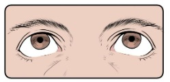
A m. reto superior e m. oblíquo superior.
B m. reto inferior e m. oblíquo inferior.
C m. reto superior e m. oblíquo inferior.
D m. reto superior e m. reto lateral.
E m. reto superior e m. reto medial.
Questão 172 · Ciclo Básico Graduação em Medicina · 4000201249Quais músculos cuja contração concêntrica resulta na posição do olho vista na imagem a seguir? Olho. Fonte: Estratégia Imagens
A m. oblíquo superior e m. oblíquo inferior.
B m. reto lateral e m. oblíquo superior.
C m. reto lateral e m. oblíquo inferior.
D m. reto medial e m. oblíquo superior.
E m. reto medial e m. oblíquo inferior.
Questão 173 · Ciclo Básico Graduação em Medicina · 4000201248A pressão intraocular (PIO) é um componente importante na causalidade e desenvolvimento de algumas patologias oculares, o que torna importante o conhecimento de sua formação para entendê-las. Há uma relação importante com o humor aquoso e a sua produção e drenagem. Qual é a estrutura responsável, respectivamente, por esses processos?
A Corpo ciliar e ora serrata.
B Fóvea central e mácula lútea.
C Mácula lútea e corpo ciliar.
D Corpo ciliar e ângulo iridocorneal.
E ngulo iridocorneal e corpo ciliar.
Questão 174 · Ciclo Básico Graduação em Medicina · 4000201247O conhecimento de patologias dos olhos não é importante apenas para oftalmologistas, porque há muitas afecções que cursam em conjunto com outras síndromes clínicas e podem ser afetadas. Um exemplo é a correlação de uveíte anterior com muitas doenças reumatológicas, como a espondilite anquilosante a artrite reumatoide. Qual é essa estrutura chamada de úvea que é afetada? Uveíte. Fonte: Estratégia Imagens.
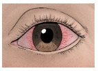
A Cavidade anterior do olho delimitada pela córnea e a íris que comporta o humor aquoso.
B Cavidade posterior ao cristalino que comporta o humor vítreo.
C Espessamento anular da camada vascular que sustenta o cristalino.
D Túnica interna do olho que corresponde à parte sem fotorreceptores.
E Túnica vascular do olho, presente entre a fibrosa e retina.
Questão 175 · Ciclo Básico Graduação em Medicina · 4000201246Qual é o meio de refração com maior dioptria do olho, o que significa que ele é o principal refringente para a formação da imagem na retina?
A Córnea.
B Cristalino.
C Humor aquoso.
D Humor vítreo.
E Conjuntiva.
Questão 176 · Ciclo Básico Graduação em Medicina · 4000201245Abaixo está uma imagem com uma representação esquemática da estrutura do olho. Qual é a estrutura marcada com o número 1? Túnica vascular do bulbo. Fonte: Estratégia Imagens.
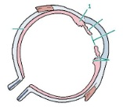
A Íris.
B Corpo ciliar.
C Cristalino.
D Limbo da córnea.
E Coroide.
Questão 177 · Ciclo Básico Graduação em Medicina · 4000201244Uma das estruturas mais importantes para a função adequada e que fica bem aparente externamente é a íris. Qual é a sua principal função?
A Revestimento externo e proteção da superfície do olho.
B Diafragma contráctil fino com uma abertura central para regular a quantidade de luz que entra na câmara.
C Suprimento de nutrientes para a córnea, que atua como diafragma.
D Suprimento e irrigação da esclera, que atua como meio refrativo convergente.
E Fixação da lente do cristalino e a secreção do humor aquoso.
Questão 178 · Ciclo Básico Graduação em Medicina · 4000201243Um dos componentes importantes da túnica vascular do olho é a íris. Qual é a disposição das bras dos músculos que realizam a sua midríase e qual é o sistema nervoso autônomo responsável?
A Radial e simpático.
B Circular e parassimpático.
C Circular e simpático.
D Radial e parassimpático.
E Longitudinal e simpático.
Questão 179 · Ciclo Básico Graduação em Medicina · 4000201242Qual das alternativas abaixo apresenta a melhor definição de esclera?
A Esqueleto fibroso externo transparente avascular do bulbo ocular com grande dioptria.
B Esqueleto fibroso externo opaco com pouca vascularização que ocupa a maior parte da túnica.
C Mucosa transparente que reveste o bulbo ocular.
D Espessamento muscular e vascular da camada posterior ao limbo da córnea.
E Túnica vascular que reveste a retina.
Questão 180 · Ciclo Básico Graduação em Medicina · 4000201241Qual das seguintes estruturas é um componente da túnica fibrosa do bulbo do olho?
A Íris.
B Coroide.
C Corpo ciliar.
D Esclera.
E Conjuntiva.
Questão 181 · Ciclo Básico Graduação em Medicina · 4000201240O conteúdo da órbita é, espacialmente, separa do exterior das pálpebras, o que permite a contenção da propagação de infecções entre os dois espaços. Qual é a principal estrutura que separa os ambientes?
A Septo orbital
B Comissura medial das pálpebras.
C Ligamento palpebral medial.
D Saco conjuntival.
E Tarsos.
Questão 182 · Ciclo Básico Graduação em Medicina · 4000201239As pálpebras são componentes importantes do olho e o seu comprometimento pode levar a alterações do bulbo ocular. O que são os tarsos das pálpebras e qual é o seu papel?
A São faixas densas de tecido conjuntivo que dão a sustentação da estrutura para as pálpebras.
B Fibras da parte palpebral do músculo orbicular do olho que realizam a aproximação das pálpebras.
C Glândulas que produzem uma secreção lipídica lubrificante da margem das pálpebras, o que impede a sua adesão.
D Glândulas sebáceas associadas aos cílios importantes para a lubrificação da pele das pálpebras.
E Faixa densa de tecido conjuntivo que liga as pálpebras à margem medial da órbita, posicionando-as.
Questão 183 · Ciclo Básico Graduação em Medicina · 4000201238Um componente muito importante para o funcionamento do olho é a sua integração com as pálpebras. O que é o saco conjuntival e qual é a sua importância?
A Espaço virtual entre a túnica mucosa conjuntival das pálpebras e a musculatura, o que permite a livre movimentação dos músculos sem a sua aderência.
B Espaço entre as túnicas conjuntivais do bulbo e das pálpebras, que permite a livre movimentação das pálpebras sobre a superfície do bulbo.
C Espaço entre as túnicas conjuntivais do bulbo e das pálpebras, que adere a pálpebra sobre a superfície do bulbo e limita o seu movimento.
D Espaço no bulbo entre a conjuntiva e a esclera que permite a livre movimentação da mucosa sobre a camada de tecido conjuntivo.
E Espaço no bulbo entre a conjuntiva e a esclera, o que permite a formação de um ambiente com ação de convergência dos raios luminosos.
Questão 184 · Ciclo Básico Graduação em Medicina · 4000201237Um dos componentes importantes para a manutenção da função do olho é a limpeza de agentes agressores, o que é realizado pelo uxo normal de líquido lacrimal. Qual é o sentido normal de drenagem desse uido e quais são as estruturas em sequência por qual ele passa?
A Inferomedial: dúctulos excretores da glândula lacrimal papila lacrimal saco lacrimal ducto lacrimonasal.
B Inferomedial: papila lacrimal dúctulos excretores da glândula lacrimal saco lacrimal ducto lacrimonasal.
C Inferolateral: dúctulos excretores da glândula lacrimal papila lacrimal saco lacrimal ducto lacrimonasal.
D Inferolateral: saco lacrimal dúctulos excretores da glândulas lacrimal papila lacrimal ducto lacrimonasal.
E Superolateral: ducto lacrimonasal dúctulos excretores da glândula lacrimal papila lacrimal saco lacrimal.
Questão 185 · Ciclo Básico Graduação em Medicina · 4000201236Para que o olho consiga exercer adequadamente as suas funções, é importante que ele permaneça lubri cado e com uma limpeza constante de partículas que podem agredi-lo, o que é realizado pelo aparelho lacrimal. O produtor do líquido lacrimal é a glândula lacrimal. Onde ela, geralmente, está localizada?
A Parte superolateral da órbita na fossa da glândula lacrimal.
B Parte superomedial da órbita na fossa da glândula lacrimal.
C Parte lateral do fórnice inferior da conjuntiva.
D Profundamente ao ângulo médio do olho.
E Meato nasal inferior.
Revisar: possível letra faltando em enunciado
Questão 186 · Ciclo Básico Graduação em Medicina · 4000201235Qual é osso componente da órbita indicado na imagem abaixo? Ossos da órbita. Fonte: Estratégia Imagens.

A Zigomático.
B Frontal.
C Esfenoide.
D Etmoide.
E Lacrimal.
Questão 187 · Ciclo Básico Graduação em Medicina · 4000201234Quais são os componentes formadores da parede superior – teto – da órbita?
A Processo frontal do zigomático e asa maior do osso esfenoide.
B Processo frontal do zigomático e asa menor do osso esfenoide.
C Parte orbital do osso frontal e asa menor do osso esfenoide.
D Parte orbital do osso frontal e lâmina orbital do etmoide.
E Processo frontal do zigomático e parte orbital do osso frontal.
Questão 188 · Ciclo Básico Graduação em Medicina · 4000201233A órbita é uma cavidade importante para a proteção dos bulbos dos olhos e outras estruturas acessórias à visão, como as pálpebras, os músculos extrínsecos do bulbo do olho, a inervação e a vascularização. Essa estrutura apresenta paredes mediais e laterais que apresentam uma relação que confere à órbita um eixo normal. Assinale a alternativa
A As paredes mediais das duas órbitas são, grosseiramente, paralelas.
B As paredes laterais são paralelas às mediais.
C As paredes laterais formam um ângulo, grosseiramente, perpendicular.
D O eixo óptico normal dos dois bulbos é paralelo e com sentido anterior.
E Os eixos das órbitas divergem em cerca de 45°.
Questão 189 · Ciclo Básico Graduação em Medicina · 4000201232Qual das alternativas abaixo corresponde à melhor definição de órbita?
A Cavidade óssea no esqueleto da face similar a uma pirâmide de base quadrangular no sentido anterolateral e ápice no sentido posteromedial.
B Estrutura óssea no esqueleto da face similar a uma esfera para o aporte do olho.
C Cavidade óssea no esqueleto da face similar a uma pirâmide de base circular no sentido anterolateral e ápice no sentido posteromedial.
D Cavidade óssea no esqueleto da face similar a uma pirâmide de base quadrangular no sentido anteromedial e ápice no sentido posterolateral.
E Cavidade óssea no esqueleto da face similar a uma pirâmide de base circular no sentido posteromedial e ápice no sentido anterolateral.
Questão 190 · Microbiologia · 4000201231Qual das micoses sistêmicas a seguir é causada por um fungo que invade e está presente nos tecidos na forma de bolor?
A Paracoccidioidomicose.
B Aspergilose.
C Histoplasmose.
D Criptococose.
E Candidíase.
Questão 191 · Microbiologia · 4000201230A seguinte imagem é corada com tinta de nanquim e é utilizada para o diagnóstico de uma micose importante oportunista em pacientes com AIDS. Assinale a alternativa que contenha essa doença. Coloração com tinta de nanquim. Fonte: Estratégia Imagens.
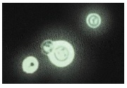
A Paracoccidioidomicose.
B Aspergilose.
C Histoplasmose.
D Criptococose.
E Candidíase.
Questão 192 · Microbiologia · 4000201229João, de 53 anos, residente e natural de São Paulo – SP é um paciente que chega à consulta com um quadro de tosse persistente acompanhado de cefaleia há 1 semana. Foi receitado um medicamento apenas sintomático com suspeita principal de síndrome gripal. O paciente evolui mal com náuseas, vômito e prostração intensa e vai ao pronto-socorro. Lá, apresenta-se com febre, queda do estado geral, confusão mental e rigidez de nuca. É realizada uma punção lombar do líquido cefalorraquidiano, que estava turvo e com aumento de pressão. Na análise laboratorial, há aumento da celularidade com leveduras encapsuladas com brotamentos. A investigação mostra que, no hemograma, a quantidade de linfócitos T CD4+ estava diminuída. Qual é a principal hipótese para o agente causador do quadro no paciente?
A Cryptococcus neoformans.
B Mycobacterium tuberculosis.
C Paracoccidioides brasiliensis.
D Candida albicans.
E Malassezia furfur.
Questão 193 · Microbiologia · 4000201228Qual é a espécie fúngica que é mais frequentemente isolada a partir de árvores do gênero
A Histoplasma capsulatum.
B Candida albicans.
C Cryptococcus neoformans.
D Cryptococcus gatti.
E Paracoccidioides brasiliensis.
Questão 194 · Microbiologia · 4000201227Uma das micoses mais significativas é a criptococose, causada por Cryptococcus gatti
A Micose causada por fungo com dimorfismo térmico muito associada à solo com detritos vegetais.
B Micose causada por fungo com dimorfismo térmico associada a ambientes com fezes de morcego, como cavernas.
C Micose oportunista significativa em pacientes com AIDS e associada a ambientes com eucaliptos ou fezes de pássaros.
D Micose oportunista significativa em paciente com AIDS e associada a ambientes com fezes de morcego, como cavernas.
E Micose oportunista significativa em paciente com AIDS de fungo componente da microbiota humana normal.
Questão 195 · Microbiologia · 4000201226Qual é a doença infecciosa fúngica oportunista que causa o quadro abaixo e está associada a envolvimentos de outros sistemas? Exame de orofaringe. Fonte: Estratégia Imagens.

A Candidíase.
B Pitiríase versicolor.
C Histoplasmose.
D Paracoccidioidomicose.
E Criptococose.
Questão 196 · Microbiologia · 4000201225Quais são as características morfológicas típicas dos fungos causadores da candidíase?
A Brotamentos múltiplos com aspecto de roda de leme.
B Leveduras em brotamento com pseudo-hifas.
C Leveduras intracelulares uninucleadas.
D Leveduras encapsuladas com brotamento único.
E Hifas septadas e ramificadas regularmente.
Questão 197 · Microbiologia · 4000201224Na micologia, o conhecimento da estrutura morfológica microscópica dos fungos é muito importante para a sua identi cação. Dentre os fungos abaixo, qual é aquele que, caracteristicamente, apresenta pseudo-hifas e células leveduriformes como sua forma invasiva?
A Criptococcus neoformans.
B Malassezia furfur.
C Histoplasma capsulatum.
D Candida albicans.
E Paracoccidioides brasiliensis.
Questão 198 · Microbiologia · 4000201223Muitas infecções fúngicas são suspeitadas a partir de elementos da anamnese que coincidam com a epidemiologia da doença. Alguns são associados a determinados indivíduo entra em contato antes de desenvolver a doença. Qual é o histoplasmose?
A Solo ácido com matéria orgânica vegetal decomposta, principalmente plantas de café.
B Solo úmido rico em nitrogênio enriquecido com fezes de morcego ou aves.
C Solo seco com matéria orgânica vegetal decomposta.
D Patógeno oportunista componente da microbiota humana normal.
E Patógeno oportunista presente em ambientes nosocomiais apenas.
Questão 199 · Microbiologia · 4000201222Uma infecção ser intracelular não significa que ela é viral, porque há outros patógenos com fatores de virulência que os permitem viver e replicar-se no interior das células humanas. Qual das seguintes espécies apresenta germinação dos conídios após a fagocitose para a formação de leveduras? Leveduras intracelulares. Fonte: Estratégia Imagens.

A Histoplasma capsulatum.
B Paracoccidioides brasiliensis.
C Blastomyces dermatitidis.
D Malassezia
E Staphylococcus aureus.
Questão 200 · Microbiologia · 4000201221Uma das patologias fúngicas mais prevalentes no Brasil corresponde à paracoccidioidomicose, causada por espécies do gênero pacientes, qual é a forma apresentada pelo fungo?
A Hifas hialinas septadas com artroconídios.
B Hifas pigmentadas septadas curtas.
C Leveduras associadas em cachos com pseudo-hifas.
D Leveduras arredondadas com múltiplos brotamentos de istmo estreito.
E Levedura arredonda com único brotamento.
Questão 201 · Microbiologia · 4000201220João, de 43 anos e agricultor, residente e natural do oeste paulista relata um quadro de tosse e cansaço progressivo ao longo de 1 ano. Há 6 meses, iniciou escarros hemoptoicos associados a quadros esporádicos de febre e mal-estar. A radiogra a simples de tórax mostrou consolidações bilaterais localizadas centralmente que poupam ápices e bases, em um aspecto de “asa de borboleta”. O exame microscópico direto do escarro mostrou a presença de células ovais com múltiplos brotamentos de base estreita. Qual das infecções fúngicas a seguir deve ser a hipótese principal? Radiografia convencional de tórax com aspecto de asa de borboleta. Fonte: Estratégia Imagens
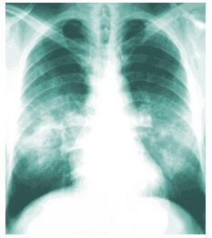
A Paracoccidioidomicose.
B Candidíase.
C Histoplasmose.
D Criptococose.
E Tuberculose.
Questão 202 · Microbiologia · 4000201219A imagem abaixo corresponde a um exame microscópico com coloração de metenamina de prata de Grocott-Gomori com uma morfologia típica de uma espécie de fungo patogênica aos humanos. Assinale a alternativa que corresponda à doença causada por esse fungo. Fungo com coloração de metenamina de prata de Grocott-Gomori. Fonte: Estratégia Imagens.
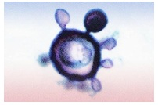
A Dermatofitose.
B Paracoccidioidomicose.
C Candidíase.
D Criptococose.
E Histoplasmose.
Questão 203 · Microbiologia · 4000201218A maduromicose, ou micetoma eumicótico, é uma micose subcutânea que pode causar limitações e deformações importantes principalmente pelo rompimento de planos teciduais e destruição local do músculo e osso. É fonte de um diferencial importante com outros micetomas, porque o seu agente etiológico é fúngico, o que di culta o tratamento medicamentoso. Os micetoma actinomicótico é causado por bactérias que assumem uma morfologia similar a fungos, mas a resposta ao tratamento é muito mais e caz. Qual é a característica comum que agrupa esses patógenos sob o mesmo nome de micetoma?
A Lesões queloides.
B Agregados de células filamentosas em matriz extracelular dura, os grãos.
C Nódulos de padrão de linfangite ascendente com ulceração.
D Placas eritematosas descamativas.
E Pápulas verrucosas.
Questão 204 · Microbiologia · 4000201217Uma das micoses subcutâneas que existem no Brasil corresponde à doença de Jorge Lobo, porque o seu primeiro caso foi descrito em Recife em 1931 pelo dermatologista de mesmo nome. O seu agente etiológico foi denominado de patologia?
A Placas eritematosas descamativas.
B Nódulos de padrão de linfangite ascendente com ulceração.
C Úlceras únicas de bordas irregulares e conteúdo purulento.
D Lesões queloides.
E Máculas eritematosas descamativas.
Questão 205 · Microbiologia · 4000201216Na análise histopatológica de um nódulo indolor de aumento progressivo, veri cou-se a presença de granulomas e abcessos que envolvem estruturas peculiares conhecidas como grânulos. O seu conteúdo corresponde a um grande agregado de hifas septadas com modi cações na parede celular e clamidoconídios, somado à secreção de uma matriz extracelular rígida semelhante a cimento. Qual é o nome dessa patologia?
A Esporotricose.
B Dermatofitose.
C Pitiríase versicolor.
D Micetoma eumicótico.
E Micetoma actinomicótico.
Questão 206 · Microbiologia · 4000201215Um dos fungos patológicos mais importantes é o lamentosa consiste em hifas estreitas, septadas e hialinas com conídios dispostos em rosetas. Em contraste, sua forma leveduriforme, apresentada na infecção tecidual, consiste em células ovais ou em formato de charuto com um brotamento geralmente único. Qual é o tipo de micose causado e como é a apresentação de lesões?
A Micose superficial e nódulos em padrão de linfangite ascendente.
B Micose cutânea e placas eritematosas com descamação.
C Micose subcutânea e placas eritematosas com descamação.
D Micose cutânea e nódulos em padrão de linfangite ascendente.
E Micose subcutânea e nódulos em padrão de linfangite ascendente.
Questão 207 · Microbiologia · 4000201214Manuel, de 50 anos e residente da área rural de São Paulo, apresenta uma queixa de lesões escuras e pruriginosas na pele. Elas se iniciaram há 1 ano com pápulas pequenas edemaciadas no dorso da mão com aumento gradual e evolução para uma área mais extensa de placa escamosa com hiperqueratose. O paciente procurou atendimento apenas com o aparecimento de nova lesão no outro membro superior também de aspecto papular, porque sua esposa achava que estava com câncer. Foi realizado um exame direto, com hidróxido de potássio, que revelou células escleróticas pigmentadas redondas com uma divisão septal interna. Qual é a doença apresentada por seu Manuel?
A Esporotricose.
B Dermatofitose.
C Carcinoma basocelular.
D Cromoblastomicose.
E Micetoma.
Questão 208 · Microbiologia · 4000201213João, de 25 anos e residente da área rural de São Paulo, descreve um ferimento na palma de sua mão com um galho após cair de uma árvore. Durante a semana seguinte, a região ao redor da lesão evoluiu com edema, úlceras e secreção purulenta. Na primeira consulta, foi prescrito a utilização de um antibiótico tetracíclico, mas não houve sucesso no tratamento. No retorno, o paciente evoluiu com outros nódulos e úlceras no membro superior em um padrão linfático nodular ascendente. Foi realizado um exame histopatológico na lesão que não identi cou bacilos ou elementos fúngicos. Somente na cultura, foram identi cadas hifas nas e septadas com conídios depositados em rosetas. Qual é a doença apresentada por seu João?
A Esporotricose.
B Dermatofitose.
C Pitiríase versicolor.
D Cromoblastomicose.
E Micetoma.
Questão 209 · Microbiologia · 4000201212Na análise da etiologia da fungo, que varia de acordo com a espécie causadora. Qual é o tipo em que há formação de artroconídios no interior da haste do pelo sem espaços vazios e qual é o nome geral dessas patologias?
A Ectótrix e dermatofitoses.
B Endótrix e dermatofitoses.
C Fávico e Piedra.
D Ectótrix e pitiríase.
E Endótrix e pitiríase.
Questão 210 · Microbiologia · 4000201211Uma amostra de biópsia de pele de uma lesão dermatológica de placas eritematosas elevadas com descamação e diminuição central da in amação em uma área de alopecia é enviada para a realização de exame microscópico direto. Quais são as estruturas do patógeno, caso ele exista, que é esperado encontrar?
A Hifas septadas e hialinas com artroconídios em cadeia ou dissociados que invadem o estrato córneo.
B Hifas pigmentadas com células leveduriformes na superfície do extrato córneo.
C Hifas curtas e curvas com células leveduriformes agrupadas em cachos na superfície do extrato córneo.
D Células leveduriformes hialinas agrupadas em cadeias que invadem o estrato córneo.
E Células leveduriformes com brotamentos agrupadas em cachos que invadem o estrato córneo.
Questão 211 · Microbiologia · 4000201210Você recebe o encaminhamento de um paciente com descrição de Como é esperado que seja a sua apresentação clínica?
A Mácula hipercrômica isolada na palma de mãos ou pés.
B Mácula hipercrômica isolada abaixo do couro cabeludo com descamação e preservação do cabelo.
C Placa eritematosa elevada com escamação na área com alopecia. O eritema diminui centralmente.
D Placa eritematosa elevada com escamação na área com alopecia. O eritema aumenta centralmente.
E Mácula hipocrômicas sem descamação na área de alopecia.
Questão 212 · Microbiologia · 4000201209Qual dos seguintes gêneros fúngicos abaixo é um dos causadores de dermatofitoses?
A Trichosporon.
B Malassezia.
C Piedraia.
D Candida.
E Trichophyton.
Questão 213 · Microbiologia · 4000201208Os fungos do gênero formação de nódulos ao redor da haste. Assinale a doença causada por esses patógenos.
A Tinea nigra.
B Pitiríase versicolor.
C Piedra branca.
D Piedra nigra.
E Dermatofitoses.
Questão 214 · Microbiologia · 4000201207Uma das micoses super ciais corresponde à Tinea nigra, causada por alternativa que corresponda à melhor descrição do quadro clínico dessa patologia.
A Máculas hipo ou hipercrômicas com bordas regulares distribuídas na parte superior do tronco e face.
B Máculas hipercrômicas isoladas na palma de mãos ou pés.
C Nódulos pastosos branco acastanhados ao redor dos pelos.
D Nódulos pequenos e escuros ao redor da haste do pelo de consistência dura.
E Anel de escamação inflamatória com pouca inflamação central.
Questão 215 · Microbiologia · 4000201206A pitiríase versicolor é uma alteração dermatológica autolimitada que causa um quadro de exantema macular hipo ou hipercrômico. Como é possível realizar o diagnóstico dessa patologia? Pitiríase versicolor. Fonte: Estratégia Imagens.

A Exame direto com KOH a 10%: blastoconídios agrupados em cachos de uva com hifas curtas e curvas septadas.
B Exame direto com KOH a 10%: hifa septada e ramificada com a presença de artroconídios.
C Exame direto com NAOH a 10%: blastoconídios agrupados em cachos de uva com hifas curtas e curvas septadas.
D Exame direto com NAOH a 10%: hifa septada e ramificada com a presença de artroconídios.
E Exame direto com KOH a 10%: hifas septadas hialinas com artroconídios.
Questão 216 · Microbiologia · 4000201205Algumas doenças mais significativas causadas por fungos correspondem a micoses super ciais, dentre as quais está a pitiríase versicolor. Quais são as alterações encontradas nessa patologia e quais são as espécies associadas?
A Máculas hipo ou hipercrômicas e
B Máculas hipo ou hipercrômicas e
C Exantema bolhoso e
D Exantema bolhoso e
E Máculas hipo ou hipercrômicas e
Questão 217 · Microbiologia · 4000201204O que correspondem as formas anamórficas dos fungos?
A Formas de reprodução assexuada que correspondem à maior parte dos fungos encontrados como patógenos.
B Formas de reprodução sexuada que correspondem à maior parte dos fungos encontrados como patógenos.
C Formas filamentosas responsáveis pela formação das estruturas de reprodução sexuada, não relacionadas ao parasitismo humano.
D Formas de reprodução assexuada que corresponde à morfologia dos fungos não encontradas nas patologias.
E Formas de reprodução sexuada que corresponde à morfologia dos fungos não encontradas nas patologias.
Questão 218 · Microbiologia · 4000201203Qual é o principal filo do reino Fungi causador de doenças em humanos?
A Ascomicetos.
B Basidiomicetos.
C Glomeromicetos.
D Zigomicetos.
E Blastocladiomicetos.
Questão 219 · Microbiologia · 4000201202Houve uma grande confusão na taxonomia dos fungos com relação a diversas espécies que receberam duas denominações, uma para a forma anamórfica e outra para a teleomórfica, o que provoca uma discordância na comunicação. Qual é a diferença entre ambas as formas?
A O teleomorfo corresponde ao estágio sexual reprodutivo de um fungo, encontrado na maior parte das micoses humanas.
B O anamorfo corresponde ao estágio assexual reprodutivo de um fungo, encontrado na maior parte das micoses humanas.
C O teleomorfo corresponde ao estágio assexual reprodutivo de um fungo, encontrado na maior parte das micoses humanas.
D O anamorfo corresponde ao estágio sexual reprodutivo de um fungo, cuja nômina foi padronizada mesmo não sendo a forma comum nas micoses.
E O teleomorfo corresponde ao estágio assexual reprodutivo de um fungo, cuja nômina foi padronizada mesmo não sendo a forma comum nas micoses.
Questão 220 · Microbiologia · 4000201201Os fungos são seres complexos com mecanismos diversos de reprodução que conferem determinada propriedade à espécie. Assinale a alternativa correta acerca do ciclo de vida dos fungos.
A A sua forma anamorfa está relacionada à formação de esporos sexuados.
B Os blastoconídios são células formadas a partir do brotamento assexual de uma célula parental.
C A formação de esporos ocorre apenas na reprodução sexuada.
D A forma de reprodução sexuada de algumas espécies patogênicas é com a formação de pseudo- hifas.
E A forma encontrada no ser humano durante as infecções é, predominantemente, a que realiza a reprodução sexuada.
Questão 221 · Microbiologia · 4000201200Qual é o significado do termo dimórfico aplicado aos fungos patogênicos?
A Podem se dividir por divisão assexuada, por brotamento, ou sexuada, por plasmogamia.
B Apresentam dois tipos de esporos sexuais: artroconídios e conídios.
C Crescem tanto na forma de levedura quanto filamentosa com a variação de algum componente do ambiente.
D Podem se apresentar na forma de levedura ou de pseudo-hifas de acordo com a variação de temperatura.
E Formação de blastoconídios como esporos assexuais.
Questão 222 · Microbiologia · 4000201199As infecções fúngicas tomam uma importância médica mais significativa com o advento das terapias imunossupressoras e patologias que cursam com imunode ciência, como a AIDS. Assinale a alternativa abaixo que contenha um fator diferencial entre células fúngicas e de outros patógenos.
A Parede celular fúngica é composta por quitina, polímero de N-acetilglicosamina.
B Membrana celular rica em colesterol.
C Células autotróficas.
D Formação de endósporos para a reprodução.
E Meios complexos de movimentação.
Questão 223 · Microbiologia · 4000201198Um dos possíveis usos da titulação de anticorpos virais para diferentes antígenos virais é o acompanhamento e identi cação da fase da doença, visto que o padrão de expressão de anticorpos pode mudar durante a história natural. Qual dos seguintes vírus apresenta essa mudança característica que pode determinar o estado do indivíduo para os antígenos virais e anticorpos?
A Hepatite B.
B Hepatite A.
C HIV.
D Influenza.
E Coronavírus.
Questão 224 · Microbiologia · 4000201197Você atende um paciente e suspeita fortemente de uma possível etiologia gripal para o quadro apresentado pelo paciente. Após solicitar os exames, os resultados retornam 4 dias após com IgM positiva especí ca para o vírus que você suspeitava. Qual é significado disso no quadro?
A A paciente está no início do processo de infecção viral e ainda não entrou na convalescença.
B A infecção primária ao vírus foi a pelo menos 6 meses, tempo necessário para o desenvolvimento de IgM.
C A infecção secundária ao vírus ocorreu há, aproximadamente, 2 semanas.
D A viremia ainda é significativamente alta.
E A infecção primária ao vírus deve ter ocorrido recentemente.
Revisar: possível letra faltando em enunciado
Questão 225 · Microbiologia · 4000201196A identi cação de muitos vírus pode ser di cultada porque não é possível observá-lo diretamente no microscópio óptico e o seu material genético pode ser escasso em alguns casos. Alguns vírus com material genético integrado ou em baixas concentrações não apresentam biomoléculas su cientes para uma positividade nos testes laboratoriais. Qual o procedimento que pode ser utilizado para um melhor aproveitamento dessas amostras?
A Southern blot.
B Reação de polimerase em cadeia.
C Hibridização fluorescente
D ELISA
E Western blot.
Revisar: possível letra faltando em enunciado
Questão 226 · Microbiologia · 4000201195O diagnóstico de infecções virais é diferente do de bactérias, em decorrência de sua siologia e proporções. Assinale a alternativa que não corresponda a formas de identificação possíveis da presença de vírus.
A Biópsias de tecido com alterações celulares características.
B Imunofluorescência de biópsias com antígenos virais.
C Microscopia óptica de secreções.
D Ensaio de imunoabsorção enzimática.
E Hibridização fluorescente in situ
Questão 227 · Microbiologia · 4000201194O herpes-zóster é uma doença infecciosa causada pelo vírus HHV-3 (Herpesvírus humano 3), que se caracteriza por manifestações de eritemas bolhosos e vesiculares com distribuição em dermátomos. Assinale qual é o tipo de infecção dessa doença.
A Infecção aguda.
B Infecção persistente produtiva.
C Infecção citolítica latente.
D Infecção persistente latente-recorrente.
E Infecção inaparente.
Questão 228 · Microbiologia · 4000201193Um dos componentes da morfologia dos vírus com efeito mais aparente em sua epidemiologia e forma de transmissão é o envelope viral. A sua presença confere qual propriedade aos vírus?
A Maior resistência a ambientes secos, ação de detergentes e de pH com transmissão geralmente fecal-oral.
B Maior resistência a ambientes secos, o que permite a transmissão por via respiratória ou fômites.
C Maior fragilidade a ambientes secos, ação de detergentes e de pH com transmissão por gotículas respiratórias ou secreções.
D Maior fragilidade a ambientes secos e resistência a ação de detergentes e pH, o que permite a transmissão fecal-oral.
E Maior resistência a ambientes secos e fragilidade a ação de detergentes e pH, o que os torna mais transmissíveis pela via aérea.
Questão 229 · Microbiologia · 4000201192Muito da manifestação clínica de infecções virais não está associado à patogênese do vírus em si, mas à resposta do sistema imune a essa infecção. Assinale a alternativa que
A Indução de citólise após a infecção por perturbação funcional do tecido.
B Formação de imunocomplexos de anticorpos e partículas virais com deposição e ativação constante do complemento.
C Ligação do anticorpo ao antígeno com inibição da interação das partículas virais com seus receptores celulares.
D Produção acentuada de citocinas pró-inflamatórias sistêmicas.
E Produção de sintomas sistêmicos prodrômicos de mal-estar.
Questão 230 · Microbiologia · 4000201191Muitos vírus apresentam um papel conhecido na promoção de tumores e são conhecidos como oncogênicos. Assinale a alternativa células.
A Ativação ou presença de genes de estimulação de crescimento.
B Indução da produção de citocinas estimulantes de proliferação, como IL-2.
C Inibição de proteínas inibitórias do ciclo celular e de proliferação, como p53 e RB.
D Indução de proteínas inibitórias da apoptose, como Bcl-2.
E Genes que se ligam a proto-oncogenes e inibem a sua expressão.
Questão 231 · Microbiologia · 4000201190A infecção celular por alguns vírus, como o HIV, ocorre sem que a maior parte das células seja destruída. A infecção permanece sem a destruição com produção de partículas virais que são liberados a partir de sua membrana plasmática por exocitose ou brotamento. É interessante para o vírus esse tipo de relação porque o seu maquinário de reprodução permanecesse acessível por bastante tempo e, então, mais vírus são produzidos. Assinale a alternativa que corresponda a esse tipo de infecção.
A Persistente latente.
B Transformadora.
C Citolítica.
D Persistente produtiva.
E Abortiva.
Questão 232 · Neurologia · 4000201189Sobre a avaliação de morte encefálica (ME), assinale a alternativa correta:
A São exames úteis na determinação da ME: angiotomografia de crânio, EEG, arteriografia e SPECT.
B Em adultos, o intervalo de tempo entre os exames clínicos deve ser de ao menos 6 horas.
C O protocolo de ME só pode ser aberto após a autorização da família.
D O teste de apneia deve ser feito apenas uma vez.
E Em um paciente vítima de parada cardiorrespiratória que evolui com sinais compatíveis com ME, devemos esperar ao menos 48 horas de observação hospitalar para abrir o protocolo.
Questão 233 · Psiquiatria · 4000201188Idoso de 74 anos procura o seu cardiologista para consulta semestral de rotina. O médico nota que seu paciente não tem tomado algumas das medicações nas últimas semanas, alegando “esquecimento”, por isso seu controle pressórico não se encontra nos níveis desejados. Também não apresentou os exames laboratoriais que deveria ter feito, justi cando que “não teve tempo para ir ao laboratório”, que ca na esquina de sua casa. Sua lha, que o acompanha na consulta, relata que seu pai está mais “ranzinza” nos últimos 2 meses, não tem saído mais de casa para sua jogatina de dominó com os amigos, “engordou uns 4 kg” no período e passa boa parte do seu dia dormindo no sofá ou na rede. Revisando seu histórico médico, observa-se que o paciente, além de hipertensão arterial sistêmica, doença renal crônica não dialítica, hipertro a prostática, cegueira monocular (resultado de um forte trauma na cabeça há 15 anos), também já apresentou diversos episódios depressivos, sendo que o último quadro ocorreu há cerca de 10 anos. Diante dessa informação, surge a hipótese de um novo episódio depressivo. Para a abordagem farmacológica da depressão geriátrica, selecione a droga mais adequada para esse caso.
A Amitriptilina.
B Bupropiona.
C Nortriptilina.
D Mirtazapina.
E Escitalopram.
Revisar: possível letra faltando em enunciado
Questão 234 · Dermatologia · 4000201187Paciente de 34 anos, gestante, procurou atendimento com uma úlcera na perna esquerda. Ao exame, apresentava uma lesão ulcerada, com bordos elevados e bem delimitada, e fundo granuloso. Pensando na principal hipótese diagnóstica, qual é o melhor tratamento para essa paciente?
A Terbinafina.
B Antimonial pentavalente.
C Anfotericina B.
D Prednisona.
E Itraconazol.
Questão 235 · Cardiologia · 4000201186Um homem de 35 anos chega ao pronto-socorro com queixa de dor torácica, palpitações e palidez após uso de cocaína. Exame físico: PA = 174 x 100 mmHg, FC = 168 bpm, FR = 25 irpm. O eletrocardiograma revelou taquicardia sinusal e inversão da onda T de V1 a V4. Qual das medicações abaixo NÃO faz parte do tratamento inicial desse caso?
A Diazepam.
B Atenolol.
C AAS.
D Nitroglicerina.
E Diltiazem.
Questão 236 · Inf ectologia · 4000201185Um paciente de 35 anos apresenta-se no pronto-socorro com febre alta, cefaleia intensa, dor em panturrilhas, exantema pré-tibial e sufusão conjuntival. Durante a anamnese, o paciente relata que teve contato com água de enchente há cerca de duas semanas durante as fortes chuvas na região. Com base no caso clínico apresentado, qual das seguintes alterações em exames complementares é mais sugestiva de leptospirose?
A Elevação das aminotransferases acima de dez vezes o limite superior da normalidade.
B Aumento da creatinina e do potássio sérico.
C Aumento da creatina quinase (CPK).
D Radiografia de tórax com cavitações.
E Trombocitose.
Questão 237 · Nef rologia · 4000201184Qual das causas abaixo justifica um paciente que apresenta hipocalemia associada à acidose metabólica?
A Diuréticos de alça e diarreia.
B Diuréticos tiazídicos e diarreia.
C Hiperaldosteronismo e diuréticos de alça.
D Acidose tubular renal tipo 4 e hiperaldosteronismo.
E Acidose tubular renal tipo 1 e diarreia.
Questão 238 · Reumatologia · 4000201183Homem, 52 anos, procura atendimento relatando dor nos testículos há 24 horas. Nega trauma. Há 1 mês, passou em consulta no posto de saúde por mal-estar e fadiga e perda de peso e recebeu pedido de exames laboratoriais. Foi orientada, também, monitorização residencial da pressão arterial, já que, no momento da consulta, a medida era de 160 x 100 mmHg. Traz os exames solicitados no posto, que mostram: hemoglobina = 9,8 g/dL, leucócitos = 8.550/µL, plaquetas = 450 mil/L, creatinina = 1,3 mg/dL, ureia = 60 mg/ dL, urina I sem alterações, VHS = 85 mm/hora, FAN, fator reumatoide e ANCA não reagentes, C3 e C4 normais, anti- HIV não reagente, anti-HCV não reagente, VDRL não reagente, anti-HBs não reagente, HBsAg reagente, anti-HBC reagente. A principal hipótese diagnóstica é:
A Poliangiite microscópica.
B Crioglobulinemia.
C Granulomatose de Wegener.
D Poliarterite nodosa.
E Vasculite por IgA.
Questão 239 · Pneumologia · 4000201182Sobre a síndrome do desconforto respiratório agudo, não podemos afirmar que:
A É uma condição aguda desencadeada exclusivamente por processos infecciosos.
B A relação PaO2/FiO2 é menor que 300.
C Devido a grandes áreas de edema alveolar não ventiladas, surge o conceito de
D A ventilação em posição prona é indicada quando a relação PaO2/FiO2 for menor que 150.
E A ventilação deve seguir parâmetros de segurança, como a limitação do
Questão 240 · Gastroenterologia · 4000201181Sobre a pancreatite crônica de etiologia autoimune, assinale a alternativa correta:
A É a principal causa de pancreatite crônica.
B O tipo I responde bem aos corticoides, enquanto o tipo II responde mal.
C No tipo II, os níveis de IgG4 costumam estar elevados.
D No tipo II, há associação com doença inflamatória intestinal.
E No tipo I, a doença é restrita ao pâncreas.
Questão 241 · Nef rologia · 4000201180Paciente jovem é levado ao pronto atendimento por trauma cranioencefálico. Foi admitido há 5 dias, estabilizado e encontra-se hemodinamicamente estável. Está assintomático e sem alterações ao exame físico e recebendo hidratação com soro siológico 0,9% 500 mL 8/8 horas. Exames laboratoriais evidenciam hiponatremia progressiva ao longo da internação: sódio na entrada = 138 mEq/L e hoje está = 129 mEq/L. Demais exames: reatinina = 0,7 mg/dL, ureia = 27 mg/dL, potássio = 3,9 mEq/L, glicemia = 91 mg/dL, osmolaridade sérica = 266 mOsm/L, osmolaridade urinária = 540 mOsm/L. Qual é a principal etiologia da hiponatremia apresentada pelo paciente?
A Diabetes
B Síndrome da antidiurese inapropriada
C Síndrome cerebral perdedora de sal.
D Polidipsia psicogênica.
E Excesso de aporte de soro fisiológico.
Questão 242 · Ortopedia · 4000201179A respeito das fraturas da coluna e do choque medular, assinale a alternativa correta:
A As fraturas de C1 e C2 são as que mais causam déficits neurológicos.
B O choque medular é apresentado como bradicardia e hipotensão arterial.
C Na suspeita de trauma raquimedular, o paciente deve ser mantido em prancha rígida, até a adequada imobilização da coluna lombar.
D O choque neurogênico apresenta resolução quando o reflexo bulbocavernoso retorna.
E No caso de suspeitas de fratura da coluna cervical com um paciente sob efeito de álcool, deve-se manter o colar e solicitar exames de imagem, mesmo que ele não apresente dor ao exame físico.
Questão 243 · Cirurgia · 4000201178Homem de 36 anos, vítima de queimadura por chama, há 5 dias, acometendo cerca de 35% da superfície corporal, com história de queimadura de via aérea e necessidade de ventilação mecânica. Há cerca de 4 horas, iniciou com episódios de hematêmese. O diagnóstico provável é:
A Síndrome de Mallory-Weiss.
B Úlcera de Marjolin.
C Úlcera de Curling.
D Úlcera de Cushing.
E Úlcera faringoesofágica.
Questão 244 · Cirurgia · 4000201177Menino de 5 anos, 22 kg, com história de abaulamento redutível junto ao anel inguinal direito. Ao exame, está em BEG, corado, hidratado, ativo e reativo. O melhor tratamento é:
A Aguardar até 8 anos ou 25 kg.
B Hernioplastia inguinal sem uso de tela ou reforço muscular.
C Hernioplastia inguinal à Shouldice.
D Hernioplastia inguinal à Bassini.
E Hernioplastia inguinal à Lichtenstein.
Questão 245 · Cirurgia · 4000201176Homem de 26 anos, com múltiplas crises de litíase renal, é submetido a uma tomogra a computadorizada que descreve um cálculo de 1,8 cm de diâmetro, em polo superior do rim, com 850 unidades Houns eld. Qual é a melhor conduta terapêutica?
A Passagem de cateter duplo J.
B Nefrolitotomia auxiliada por robô ou videolaparoscopia.
C Litotripsia extracorpórea por onda de choque.
D Nefrolitotripsia percutânea.
E Tratamento clínico conservador associado à terapia expulsiva.
Questão 246 · Cirurgia · 4000201175Assinale a alternativa incorreta quanto à anatomia das vias biliares.
A O ducto colédoco surge a partir da confluência do ducto cístico e do ducto hepático comum.
B O linfonodo de Mascagni está contido dentro dos limites do trígono de Callot.
C A artéria cística, mais frequentemente, é um ramo da artéria hepática esquerda.
D O trígono de Callot é classicamente definido pelos seguintes limites: ducto hepático comum, ducto cístico e borda inferior do fígado.
E Na maioria dos casos, a artéria cística está contida dentro dos limites do trígono de Callot.
Questão 247 · Cirurgia · 4000201174Paciente masculino, 26 anos, vítima de acidente automobilístico (auto x poste), admitido no pronto-socorro com queixa de dor em região pélvica. Ao exame: vias aéreas pérvias, MV +, sem ruídos adventícios, SatO₂ = 98%, PA = 120 x 70 mmHg, pulso = 100 bpm, Glasgow 15, abdome doloroso na região suprapúbica. Apresentou diurese espontânea com hematúria. Realizado FAST na sala de trauma que evidenciou líquido livre na pelve. Radiogra a de tórax: sem alterações. Radiogra a de bacia: fratura do ramo isquiopúbico à direita. Qual é a principal hipótese diagnóstica e a conduta nesse caso?
A Trauma renal, tomografia de abdome com contraste.
B Trauma renal, laparotomia exploradora.
C Trauma de bexiga intraperitoneal, tomografia de abdome com contraste.
D Trauma de bexiga intraperitoneal, laparotomia exploradora.
E Trauma de bexiga extraperitoneal, cistografia retrógrada.
Questão 248 · Cirurgia · 4000201173Paciente feminina, 40 anos, refere dor abdominal recorrente em região de hipocôndrio direito relacionada à ingesta de alimentação gordurosa, acompanhada de icterícia leve. Nega febre associada. Exame físico: estável hemodinamicamente; ictérica (1+/4+), abdome ácido, pouco doloroso em hipocôndrio direito, Murphy negativo. Ultrassonogra a (US) de abdome superior: vesícula biliar com paredes nas, contendo cálculo de 2,5 cm no infundíbulo, imóvel; dilatação de via biliar até nível de ducto cístico, sugestivo de compressão extrínseca. Qual é a principal hipótese diagnóstica e a conduta mais adequada?
A Colangite aguda / colangiopancreatografia retrógrada endoscópica (CPRE).
B Colecistite aguda / colecistectomia videolaparoscópica.
C Síndrome de Mirizzi / colecistectomia videolaparoscópica.
D Síndrome de Mirizzi / colangiorressonância.
E Tumor de Klatskin / colangiorressonância.
Questão 249 · Cirurgia · 4000201172Com relação aos cistos biliares, é correto afirmar:
A Pela classificação de Alonso-Lej-Todani, o tipo III é o mais comum.
B Cistos menores que 2 cm podem ter conduta conservadora.
C O cisto tipo IV pode ser tratado com esfincterotomia endoscópica.
D Os cistos biliares são considerados fatores de risco de malignização e de inflamação crônica do parênquima hepático.
E Na maioria dos pacientes, o diagnóstico é feito após os 30 anos de idade.
Questão 250 · Cirurgia · 4000201171Paciente feminina com 54 anos de idade procurou a Unidade Básica de Saúde para atendimento. Refere que, há um ano, apresentou abscesso na região perineal que foi drenado em pronto-socorro. Desde então, apresentou uma ferida próxima ao ânus, que eventualmente apresenta saída de secreção purulenta, com odor fétido. O exame da região perianal evidenciou orifício cutâneo a 2 cm da borda anal, na região anterior direita do períneo. Toque retal sem alterações. Após a compressão local, houve saída de secreção pelo orifício cutâneo. Com base na história clínica e nos dados do exame físico, o diagnóstico e a conduta adequada são:
A Abscesso perianal, drenagem cirúrgica e antibioticoterapia.
B Fissura anal aguda, tratamento conservador com medidas higienodietéticas.
C Fissura anal crônica, tratamento cirúrgico eletivo.
D Fístula perianal, tratamento conservador com medidas higienodietéticas.
E Fístula perianal, tratamento cirúrgico eletivo.
Questão 251 · Gastroenterologia · 4000201170Paciente, 45 anos, é internado no pronto-socorro por apresentar náuseas, vômitos e dor abdominal no quadrante superior do abdome há 24 horas. Ao exame físico, estava descorado, ictérico, frequência cardíaca de 100 bpm e frequência respiratória de 22 irpm. Exames laboratoriais revelaram Hb = 15 mg/dL, leucócitos = 18.000/mm³, ureia = 50 mg/dL, creatinina = 1,5 mg/dL e amilase = 2.000 U/L (valor de referência = 28 a 100 U/L). O cirurgião do plantão solicitou alguns exames e, após analisar um deles, a rmou ao familiar que já tinha uma possível causa para a doença do paciente. Que resultado seria esse?
A Triglicerídeos 2.000 mg/Dl (VR < 150 mg/dL).
B Magnésio 1,2 mg/dL (VR 1,6 a 2,6 mg/dL).
C Cálcio total 7,5 mg/dL (VR 8,8 a 10,4 mg/dL).
D ALT 80 U/L (VR até 41 U/L).
E Vitamina B12 300 pg/mL (VR 200 a 800 pg/mL).
Questão 252 · Ginecologia · 4000201169Paciente de 60 anos, 4G4Pn, vem ao ambulatório de ginecologia com queixa de “bola na vagina”. Foi realizada a avaliação por meio do POP-Q, que se encontra abaixo: Diante do quadro da paciente, qual seria a melhor conduta no momento?
A Colpoplastia posterior e anterior.
B Cirurgia de Burch.
C Histerectomia + sacrocolpofixação e colpoplastia posterior.
D Histerectomia vaginal + colpoplastia anterior.
E Perineoplastia.
Questão 253 · Ginecologia · 4000201168Mulher de 34 anos vem ao ambulatório de ginecologia com quadro de sangramento genital durante as relações sexuais. O exame ginecológico revela tumoração cervical de cerca de 3 cm, restrita ao colo uterino. Vagina e paramétrios estão livres. Não possui exames complementares. Considerando o quadro acima, no momento, qual é a conduta imediata, o provável estadiamento e o tratamento mais adequado para essa paciente?
A Colposcopia, Ib3, radioterapia.
B Biópsia do colo, Ib1, radioterapia.
C Conização, Ia2, histerectomia Piver II.
D Colposcopia, Ia3, conização do colo.
E Biópsia do colo, Ib2, histerectomia Piver III.
Questão 254 · Ginecologia · 4000201167Adolescente de 16 anos é trazida ao ambulatório de ginecologia por ausência de menstruação. A mãe refere que a menina apresentou desenvolvimento normal desde a infância e que não tem di culdades de aprendizado. No exame físico, foi evidenciado um estágio M5P4 de Tanner. Foi solicitada uma ultrassonogra a pélvica que evidenciou ausência de útero. Diante do quadro, qual dos exames abaixo será fundamental para o diagnóstico da paciente?
A FSH.
B Cariótipo.
C Estradiol.
D TSH.
E Prolactina.
Questão 255 · Ginecologia · 4000201166Paciente de 22 anos vem em consulta referindo o aparecimento de lesões em região genital há 3 dias. Refere que tem vida sexual ativa, sem parceiro xo e com uso eventual de preservativo. Ao exame, apresenta úlceras dolorosas, com bordas irregulares e com presença de secreção amarelada. Também apresenta um linfonodo aumentado em região inguinal com sinais ogísticos. Foi realizado o raspado da lesão e evidenciada a presença de bacilos Gram-negativos dispostos “em cardume de peixe”. Qual é o tratamento mais adequado para essa paciente?
A Aciclovir 400 mg VO 8/8h por 7 dias.
B Penicilina benzatina 2.400.000 Ui IM em dose única.
C Azitromicina 1 g VO em dose única.
D Doxicilina 100 mg VO 12/12 horas por 21 dias.
E Ceftriaxone 1 g IM em dose única.
Questão 256 · Ginecologia · 4000201165Paciente de 28 anos deseja iniciar método contraceptivo. A paciente apresenta ciclos regulares, com dismenorreia importante e sangramento por 7 dias. Refere que recebeu o diagnóstico de hipertensão recentemente e que ainda não conseguiu controlar os níveis pressóricos. No momento, a PA estava em 162 x 100 mmHg. Diante do exposto, qual seria o melhor método para essa paciente, entre os listados abaixo?
A Anel vaginal.
B DIU de cobre.
C DIU de levonorgestrel.
D Pílula combinada.
E Injetável trimestral.
Questão 257 · Obstetrícia · 4000201164Primigesta, 22 anos, vem à primeira consulta de pré-natal. Ela está com 8 semanas de gestação. O médico colhe sua anamnese, faz o exame físico e solicita os exames complementares. Ele classifica a gestante como de risco habitual, faz todas as orientações necessárias e prescreve:
A Sulfato ferroso, na dose de 200 a 300 mg/ dia, para profilaxia de anemia materna até o puerpério.
B Sulfato ferroso, na dose de 200 a 300 mg/ dia, para profilaxia de anemia materna até 16 semanas de gestação.
C Ácido fólico, na dose de 0,4 mg/dia, para prevenção de defeitos do fechamento do tubo neural até 12 semanas de gestação.
D Ácido fólico, na dose de 0,4 mg/dia, para prevenção de defeitos do fechamento do tubo neural a partir de 12 semanas de gestação.
E Ácido fólico na dose de 0,4 mg/dia e sulfato ferroso, na dose de 200 a 300 mg/ dia, para profilaxia de anemia materna até o parto.
Questão 258 · Obstetrícia · 4000201163Durante o exame obstétrico de uma gestante de 38 semanas, foi observada, na palpação abdominal pelas manobras obstétricas, a ausência de polo fetal ocupando o fundo uterino e escava vazia. De acordo com esses dados, assinale a alternativa correta:
A A situação fetal é transversa com apresentação córmica.
B A situação fetal é longitudinal com apresentação cefálica.
C A situação fetal é transversa com apresentação pélvica.
D A situação fetal é oblíqua com apresentação cefálica.
E A situação fetal é longitudinal com apresentação pélvica.
Questão 259 · Obstetrícia · 4000201162Considerando as práticas recomendadas e não recomendadas de cuidados intraparto da OMS, assinale a alternativa que indica a prática NÃO recomendada na assistência intraparto de gestante de risco habitual.
A Toque vaginal a cada 4 horas na fase ativa do trabalho de parto.
B Usar o critério de evolução da dilatação cervical de 1 cm/h no primeiro período do parto.
C A posição do parto deve ser escolhida pela gestante, mesmo com analgesia.
D Massagem perineal, compressas quentes e proteção perineal com as mãos.
E Ocitocina 10 UI intramuscular para todas as pacientes no terceiro período do parto.
Questão 260 · Obstetrícia · 4000201161Com relação aos exames que devem ser solicitados para a investigação de pré-eclâmpsia em gestantes com aumento dos níveis pressóricos a partir de 20 semanas, assinale a alternativa CORRETA:
A Deve ser solicitado hemograma, creatinina, transaminases, desidrogenase lática, bilirrubinas, relação proteína/creatinina e Dopplervelocimetria obstétrica.
B Deve ser solicitado hemograma, ureia, creatinina, transaminases, desidrogenase lática, bilirrubinas, ácido úrico, coagulograma e relação proteína/creatinina urinária.
C Deve ser solicitado hemograma, coagulograma, ureia, creatinina, transaminases, desidrogenase lática, bilirrubinas, proteína C reativa e proteinúria de 24 h.
D Deve ser solicitado hemograma, creatinina, transaminases, desidrogenase lática, albumina, urina 1, ácido úrico e Dopplervelocimetria obstétrica.
E Deve ser solicitado hemograma, coagulograma, transaminases, bilirrubinas, fosfatase alcalina, lipase, ureia, relação proteína/creatinina e Dopplervelocimetria obstétrica.
Questão 261 · Obstetrícia · 4000201160O fórcipe e o vácuo extrator devem ser aplicados somente se todas as condições de aplicabilidade estiverem presentes. Assinale a alternativa que NÃO indica uma condição de aplicabilidade do parto vaginal operatório.
A Colo completamente dilatado.
B Concepto vivo.
C Identificação da variedade de posição.
D Rotura das membranas fetais.
E Analgesia de parto.
Questão 262 · Pediatria · 4000201159Você atende os irmãos Laura e Fernando com consulta de rotina. Laura tem 7 anos e apresenta broto mamário bilateral e pili cação em grandes lábios, seu IMC encontra-se entre o Escore Z +2 e +3. Fernando de 9 anos encontra-se impúbere, e seu IMC está entre o escore Z +1 e +2. Podemos afirmar que:
A Laura apresenta puberdade oportuna e obesidade, Fernando apresenta atraso puberal e risco de sobrepeso.
B Laura apresenta puberdade precoce e risco de sobrepeso, Fernando não apresenta alterações na evolução da puberdade e eutrofia.
C Ambas as crianças apresentam evolução normal da puberdade e sobrepeso.
D Laura apresenta puberdade precoce e obesidade, Fernando não apresenta alterações na evolução da puberdade, e seu IMC indica sobrepeso.
E Ambas as crianças apresentam evolução normal da puberdade, Laura tem obesidade e Fernando tem sobrepeso.
Questão 263 · Pediatria · 4000201158Um adolescente do sexo masculino de 14 anos e seis meses comparece à consulta de rotina, pois acha que está crescendo menos do que seus colegas e que não começou a apresentar os sinais da puberdade. Mãe refere que o pai da criança apresentou atraso na evolução da puberdade e que atualmente tem estatura normal. Não apresenta comorbidades ou outras queixas. Seu IMC encontra-se entre o escore Z zero e o +1, classificação de Tanner G1P1, estatura entre o escore Z -2 e -1. Assinale a alternativa correta.
A Podemos considerar atraso puberal, pois, aos 14 anos, esse adolescente deveria ter apresentado o primeiro sinal da puberdade.
B A principal causa de atraso puberal em meninos são as doenças genéticas.
C O atraso puberal é diagnosticado em meninos a partir dos 13 anos de vida.
D O atraso constitucional de crescimento e puberdade é uma possibilidade remota para esse caso.
E O primeiro sinal de puberdade esperado em meninos é o aumento peniano.
Questão 264 · Pediatria · 4000201157Uma menina de 8 anos apresenta febre há três dias, associada a dor em joelho direito e di culdade para deambular. O exame físico revela sinais inflamatórios em articulações de tornozelo esquerdo e joelho direito, além de sopro diastólico 4+/6+ em foco mitral. Assinale a afirmativa correta.
A Se a criança apresentar ASLO elevada, poderemos fazer o diagnóstico de febre reumática.
B A criança apresenta 3 critérios maiores para o diagnóstico de febre reumática; assim, não há necessidade de exames laboratoriais.
C Como foi detectado o sopro cardíaco, o ecocardiograma é dispensável nesse caso.
D A profilaxia para a febre reumática deve ser indicada até os 21 anos de vida.
E Como não há relato de infecção de orofaringe prévia, devemos descartar o diagnóstico de febre reumática.
Questão 265 · Pediatria · 4000201156Uma criança de 3 anos apresenta febre, tosse e desconforto respiratório há 4 dias. Ao exame físico, encontra-se toxemiada, afebril, com frequência respiratória de 46 irpm, oximetria de 96% em ar ambiente, presença de retração subcostal, e sua ausculta pulmonar revela estertores nos na base direita. Diante desse caso hipotético, podemos afirmar:
A O principal agente esperado é o pneumococo; recomenda-se iniciar amoxicilina com reavaliação após 48 horas.
B Não podemos dar o diagnóstico sem a realização de uma radiografia de tórax.
C A retração subcostal é um sinal de gravidade, que leva à indicação de tratamento em regime de internação hospitalar.
D Por ser um quadro grave, devemos pensar, em primeiro lugar, em uma pneumonia estafilocócica.
E Nessa idade, o mais provável é que os germes atípicos sejam a principal etiologia das pneumonias.
Questão 266 · Pediatria · 4000201155Durante plantão no pronto-socorro, você atende uma criança de 6 anos com diagnóstico de asma, em uso de corticoide inalatório em dose baixa diária. Ela apresenta tosse e desconforto respiratório progressivo há 2 dias. Ao exame, está acordada, atenta, com di culdade para pronunciar frases, mas consegue falar palavras isoladas. Ausculta pulmonar com sibilos difusos, presença de retração subdiafragmática. Sua oximetria em ar ambiente é de 89%. Diante dos dados fornecidos, indique a gravidade da crise de exacerbação de asma que essa criança apresenta.
A Leve.
B Moderada.
C Grave.
D Muito grave.
E Intermitente.
Questão 267 · Pediatria · 4000201154Uma avó traz sua neta de 13 meses para a consulta na Unidade de Saúde, após conseguir a sua guarda. Ela quer saber quais vacinas a menor precisa aplicar, visto que sua caderneta está atualizada somente até os 6 meses de vida. Analise as assertivas abaixo: I. As vacinas da febre amarela e a tríplice viral deverão ser aplicadas já nessa consulta. II. Ela precisa receber os reforços da meningocócica C e da pneumocócica 10-valente nessa consulta. III. Estão indicadas, já nessa consulta, as doses da DTP e pólio oral. Podemos afirmar que
A todas estão corretas.
B todas estão incorretas.
C apenas a I está incorreta.
D apenas a II está incorreta.
E apenas I e III estão incorretas.
Questão 268 · Pediatria · 4000201153Uma criança de 2 anos, pesando 12 quilos, deu entrada na enfermaria de pediatria após um quadro de desidratação grave, por diarreia aguda. Faça uma prescrição de um soro de manutenção para as próximas 24 horas.
A 1.100 ml de SG 5% + 1.100 ml de SF 0,9% + 22 ml de KCl 19,1%.
B 1.200 ml de SG 5% + 1.200 ml de SF 0,9% + 12 ml de KCl 19,1%.
C 880 ml de SG 5% + 220 ml de SF 0,9% + 22 ml de KCl 19,1%.
D 600 ml de SG 5% + 600 ml de SF 0,9% + 12 ml de KCl 19,1%.
E 550 ml de SG 5% + 550 ml de SF 0,9% + 22 ml de KCl 19,1%.
Questão 269 · Pediatria · 4000201152Você é chamado no alojamento conjunto para avaliar um bebê com 2 horas de vida que está apresentando distress de parto devido à gemelaridade. Ele apresenta FR = 70 irpm, tiragem intercostal e oximetria de pulso marcando 91%. Foi colocado em está assintomático. Qual é a principal hipótese diagnóstica a ser considerada?
A Taquipneia transitória do recém-nascido.
B Síndrome do desconforto respiratório.
C Hipertensão pulmonar persistente.
D Displasia broncopulmonar.
E Sepse neonatal.
Questão 270 · Pediatria · 4000201151Você está andando na rua quando vê uma mãe correndo com uma criança de 3 anos nos braços. Ela pede socorro e diz que encontrou a lha desacordada em casa. Você é o único que sabe dar suporte básico de vida naquele local. O que podemos afirmar sobre a sequência de atendimento à PCR pré-hospitalar? I. Após verificar a segurança do local, o socorrista deverá verificar responsividade, chamar ajuda, verificar pulso e respiração simultaneamente. Caso a criança esteja em PCR, iniciar compressões torácicas e ventilações. II. Como o socorrista está sozinho, ele deverá realizar as compressões/ventilações na relação 15 x 2. III. As compressões torácicas devem ter a profundidade aproximada de 1/3 do diâmetro anteroposterior do tórax e, após cada compressão, devemos permitir o retorno total do tórax. Está(ão) correta(s):
A I, II e III.
B I e II.
C I e III.
D II e III.
E Apenas II.
Questão 271 · Otorrinolaringologia · 4000201150Uma criança de 7 anos vem ao pronto-socorro com relato de tosse, dor de garganta, obstrução nasal, secreção nasal e febre de início há 3 dias. Relata que há 1 semana fez uma consulta prévia no pronto com sintomas semelhantes, mas que haviam cedido há 5 dias. Nos episódios anteriores, os sintomas apresentavam, em média, 5 dias de duração. Ocorreram 3 episódios semelhantes nos últimos 9 meses. Ao exame: temperatura 38,5, saturação O₂ de 95%, orofaringe com secreção espessa em parede posterior; rinoscopia com hiperemia e hipertro a de cornetos inferiores; otoscopia com hiperemia de membrana timpânica bilateral; ausculta pulmonar apresentando roncos. Com relação ao caso clínico acima, assinale a alternativa que contém a hipótese diagnóstica e a conduta correta.
A Rinossinusite bacteriana aguda; amoxicilina associada a lavagem nasal com solução salina sem necessidade de exames complementares.
B Rinossinusite viral; analgésicos, antitérmicos e lavagem nasal com solução salina sem necessidade de exames complementares.
C Rinossinusite bacteriana aguda; radiografia dos seios paranasais e início de amoxicilina com lavagem nasal com solução salina caso apresente velamento.
D Pneumonia bacteriana; radiografia de tórax e amoxicilina associada a sintomáticos em caso de sinais de condensação pulmonar.
E Pneumonia bacteriana; amoxicilina associada a sintomáticos sem a necessidade de exames complementares.
Questão 272 · Neurologia · 4000201149Paciente de 25 anos comparece ao atendimento por queixa de cefaleia há cerca de 5 anos. Descreve várias crises, caracterizadas por dor de moderada a forte intensidade, unilaterais, associadas a foto e fonofobia, náuseas e piora com esforço. Atualmente apresenta cerca de 2 episódios por semana, pouco responsivos ao uso de analgésicos simples. De antecedentes, tem nefrolitíase, obesidade e depressão. Qual das alternativas abaixo descreve uma alternativa para o tratamento agudo das crises e uma profilática, respectivamente?
A Sumatriptano e amitriptilina.
B Prednisona e topiramato.
C Tramadol e duloxetina.
D Tramadol e escitalopram.
E Sumatriptano e venlafaxina.
Questão 273 · Psiquiatria · 4000201148Paciente de 25 anos comparece à UBS no início da tarde em consulta de acolhimento devido a uma queixa de cefaleia. Ao entrar na sala de triagem, a médica nota prontamente o cheiro de cigarro que acompanha o jovem e aproveita sua ida à unidade para uma sondagem sobre sua motivação para parar de fumar. O rapaz conta que é tabagista desde os 20 anos de idade, fuma 1 carteira por dia de “cigarro abandonar o cigarro algumas vezes nos últimos 2 ou 3 anos, mas, atualmente, sente-se bem com seu hábito, pois considera que “ainda é muito novo para ter qualquer problema”. A pro ssional, insistente, busca uma explicação mais aprofundada sobre a compreensão do paciente em relação ao tabagismo, mas, subitamente, é interrompida pelo jovem, que diz de forma ríspida que “fumar é problema dele” e que não estava ali para ouvir sermão. De acordo com a escala motivacional de Prochaska e DiClemente, o paciente encontra-se na fase de:
A Ação.
B Contemplação.
C Preparação.
D Pré-contemplação.
E Manutenção.
Questão 274 · Dermatologia · 4000201147Com relação à hanseníase, assinale a alternativa correta.
A A reação do tipo 2 é desencadeada por depósitos de imunocomplexos.
B Os pacientes com hanseníase paucibacilar devem ser tratados com dapsona e rifampicina por 6 meses.
C O acometimento de troncos neurais na forma virchowiana é assimétrico e precoce.
D A negatividade no exame da baciloscopia exclui o diagnóstico de hanseníase.
E A reação do tipo I é caracterizada por nódulos difusos pelo corpo.
Questão 275 · Cardiologia · 4000201146Uma mulher de 50 anos comparece à consulta de retorno na Unidade Básica de Saúde após a realização de exames laboratoriais. Antecedentes pessoais: obesa e tabagista. Exame físico: PA = 168 x 95 mmHg, FC = 86 bpm. Exame físico cardíaco, respiratório, abdominal e de pulsos periféricos sem alterações. Exames laboratoriais: colesterol total = 250 mg/dl; triglicérides = 200 mg/dl, HDL = 61 mg/dl, LDL = 149 mg/dl. Assinale a alternativa com o melhor esquema terapêutico para o caso descrito:
A Losartana, sinvastatina e ciprofibrato.
B Losartana, sinvastatina e ezetimibe.
C Enalapril, atorvastatina e ezetimibe.
D Enalapril, anlodipino e atorvastatina.
E Enalapril, anlodipino, atorvastatina e ciprofibrato.
Questão 276 · Medicina Preventiva · 4000201145Em uma empresa de automotores, foi avaliado, ao longo de 20 anos, por meio do exame periódico de saúde, o número de novos casos de obesidade surgidos entre os funcionários. Sabendo que existiam 7 mil casos de obesidade entre os 35 mil funcionários no início da avaliação e que surgiram mais 8 mil casos ao longo dos 20 anos, havendo óbito de 1.000 obesos na empresa nesse período, o total de 14 mil casos de obesidade diz respeito a qual dos indicadores abaixo?
A Incidência acumulada.
B Prevalência de período.
C Densidade de incidência.
D Prevalência de toda vida.
E Incidência.
Questão 277 · Medicina Preventiva · 4000201144Entre os Sistemas de Informação em Saúde (SIS) pertencentes ao Sistema Único de Saúde (SUS), qual deles apresenta o Boletim de Produção Ambulatorial (BPA) e a Autorização de Procedimento de Alta Complexidade (APAC) como fontes de registro para sua alimentação?
A SIM.
B SINASC.
C SIA-SUS.
D SINAN.
E SIH-SUS.
Questão 278 · Medicina Preventiva · 4000201143Luísa é casada com Roberto há cerca de 15 anos. Fruto desse relacionamento, nasceram Marcela e Gabriela. Após o término do casamento, Luísa passa a se relacionar com Antônia e, cerca de 2 anos após se conhecerem, casam-se, passando a morar juntas com as lhas de Luísa. A esse arranjo familiar é dado o nome de:
A Família nuclear.
B Família monoparental.
C Família adotiva.
D Família extensiva.
E Família homoparental.
Questão 279 · Medicina Preventiva · 4000201142A Política Nacional de Atenção à Saúde dos Povos Indígenas (PNASPI) pode ser considerada um marco fundamental que visa assegurar um direito de cidadania imprescindível a qualquer brasileiro: a saúde. Por meio dela, é estabelecida uma série de princípios e diretrizes fundamentais para atingir esse objetivo. Tendo isso em vista, avalie cada uma das assertivas abaixo. I. Preparação de recursos humanos para atuação em contexto intercultural. II. Promoção de ambientes saudáveis e proteção da saúde indígena. III. Articulação dos sistemas de saúde ocidentais a serem introduzidos no contexto cultural indígena. IV. Controle da União sobre os Distritos Sanitários Especiais Indígenas. De acordo com a Portaria do Ministério da Saúde nº 254, de 31 de janeiro de 2002, que estabelece a PNASPI, assinale a alternativa que apresenta corretamente as assertivas que trazem diretrizes dessa política.
A I e II.
B II e IV.
C I, II e III.
D III e IV
E I, II, III e IV.
Questão 280 · Medicina Preventiva · 4000201141Durante a passagem da visita na enfermaria de Neurologia, um jovem residente conversa com seu preceptor acerca do caso de uma paciente internada com enxaqueca de difícil tratamento. Apesar das medidas para controle álgico empregadas até o momento, o quadro mantém-se refratário, e a mulher continua a queixar-se de dor intensa. Em face da situação, o médico preceptor resolve lançar mão de uma nova medicação aprovada recentemente para o tratamento de casos refratários como o apresentado pela paciente. Tendo em vista essa conduta e os princípios bioéticos que regem a relação médico-paciente, quais deles foram claramente aplicados no caso clínico descrito?
A Não maleficência e justiça.
B Autonomia e não maleficência.
C Justiça e beneficência.
D Autonomia e justiça.
E Não maleficência e beneficência.
Questão 281 · Reumatologia · 4000201140Mulher, 43 anos, vem ao posto de saúde para consulta com o clínico referindo dor nas articulações há 4 semanas. Percebeu que as articulações das mãos e dos punhos estão mais rígidas pela manhã e melhoram com o passar das horas. Está em uso de dipirona e cetoprofeno, com melhora parcial. Ao exame físico, sinovite em 2ª e 3ª metacarpofalangeanas bilateralmente, 4ª interfalangeana proximal à direita e 3º à esquerda e punhos. Após a realização da anamnese e exame físico, o médico logo pensou em artrite reumatoide. Que aspecto do caso clínico apresentado fala contra essa hipótese diagnóstica?
A Poliartrite simétrica.
B Acometimento de pequenas articulações.
C Sintomas iniciados há 4 semanas.
D Rigidez matinal prolongada.
E Melhora das queixas com analgésico e anti-inflamatório.
Questão 282 · Microbiologia · 4000201139Durante as etapas da infecção viral no organismo, assinale a a rmativa correta acerca do tecido-alvo do vírus.
A O tecido-alvo corresponde ao ponto primário de replicação viral, o que acarreta o pródromo.
B O tecido-alvo é aquele que permite ao vírus a disseminação para o restante dos tecidos do organismo, o que caracteriza a viremia.
C O tecido-alvo corresponde ao ponto primário de replicação viral, o que acarreta a convalescência.
D O tecido-alvo do vírus pode ser alcançado após a disseminação do vírus, o que acarreta os sintomas específicos.
E O tecido-alvo do vírus corresponde ao ponto de replicação secundário, atingido após a disseminação do vírus por viremia.
Questão 283 · Sistema Urinário · 4000201138Sobre a reabsorção que ocorre no túbulo proximal do néfron, assinale a alternativa correta:
A No túbulo proximal a água acompanha a reabsorção de potássio.
B A enzima anidrase carbônica II é essencial para a quebra de bicarbonato em dióxido de carbono e hidroxila, permitindo, assim, a reabsorção do ânion.
C No túbulo proximal do néfron o sódio é reabsorvido por meio do transportador NKCC2.
D A maior reabsorção de todo o sódio, de toda a água e de todo o bicarbonato acontece no túbulo proximal.
E A reabsorção de potássio ocorre majoritariamente pela via transcelular.
Questão 284 · Sistema Urinário · 4000201137Sobre os diferentes componentes do néfron, assinale a alternativa correta:
A Os néfrons corticais apresentam alças de Henle mais longas, em comparação aos néfrons medulares.
B O ramo descendente fino da alça de Henle apresenta baixa permeabilidade à água.
C As células que compõem o túbulo convoluto distal são colunares.
D O segmento espesso ascendente do néfron é permeável à água.
E É no ducto coletor que o hormônio anti-diurético age.
Questão 285 · Sistema Urinário · 4000201136Sobre os corpúsculos renais, assinale a alternativa correta:
A As fendas de filtração são espaços que ocorrem entre os prolongamentos primários dos podócitos.
B A barreira de filtração glomerular é constituída pelos podócitos e pelo endotélio fenestrado, apenas.
C O espaço capsular é o espaço virtual entre o folheto interno e o folheto externo da cápsula de Bowman.
D Os prolongamentos secundários dos podócitos se fixam à membrana basal por meio de desmossomos.
E Os podócitos são as células que apresentam receptores que, quando estimulados, induzem a contração ou o relaxamento da arteríola aferente.
Questão 286 · Sistema Urinário · 4000201135Sobre a formação da bexiga e da uretra no embrião, assinale a alternativa correta:
A Os ureteres se desenvolvem conjuntamente com a bexiga urinária.
B A bexiga urinária está inicialmente ligada ao alantoide, mas depois que ocorre a obliteração deste, apenas um cordão fibroso permanece.
C Ao nascimento, o úraco dá origem ao ligamento umbilical medial.
D A cloaca, que originará a bexiga urinária, é formada a partir do intestino médio.
E A bexiga urinária começa a se desenvolver apenas quando o rim definitivo já se desenvolveu.
Questão 287 · Sistema Urinário · 4000201134Sobre os sistemas renais que aparecem durante o desenvolvimento embrionário, assinale a alternativa correta:
A O pronefro é originado a partir dos nefrótomos.
B Os três sistemas renais que se desenvolvem no embrião, são, em ordem cronológica: o pronefro, o metanefro e o mesonefro.
C O mesonefro se origina a partir da região cervical.
D A excreção de urina acontece já a partir do pronefro.
E A partir do surgimento do broto uretérico a urina começa a ser excretada.
Questão 288 · Sistema Urinário · 4000201133Sobre a inervação da bexiga urinária, assinale a correta:
A Os troncos vagal anterior e posterior participam da inervação parassimpática da bexiga urinária.
B As fibras simpáticas se originam a partir da região lombar da medula espinhal, apenas.
C As sinapses que as fibras simpáticas pré-ganglionares realizam com os neurônios pós-ganglionares podem ocorrer na parede da bexiga urinária.
D As fibras parassimpáticas estimulam relaxamento do músculo esfíncter interno da uretra e contração da parede da bexiga urinária.
E As sinapses que as fibras parassimpáticas pré-ganglionares realizam ocorrem, necessariamente, na parede da bexiga urinária.
Questão 289 · Sistema Urinário · 4000201132Sobre a irrigação e a drenagem venosa da bexiga urinária, assinale a alternativa correta:
A A irrigação da bexiga urinária é promovida por ramos da artéria ilíaca externa
B Parte da irrigação da bexiga urinária é promovida pelas artérias vesicais superiores, ramos da divisão anterior da artéria ilíaca interna.
C Nas mulheres há participação das artérias vaginais na irrigação da bexiga.
D As veias vesicais superiores são tributárias das veias umbilicais.
E Os plexos venoso e vesical apresentam a característica de não serem contínuos entre si; eles estão relacionados à drenagem não só da bexiga, mas também da próstata, das glândulas seminais e dos ductos deferentes.
Questão 290 · Sistema Urinário · 4000201131Ao se estudar as vias urinárias é possível perceber a diferença estrutural da uretra masculina em relação à uretra feminina. Sobre a anatomia da uretra feminina, sua irrigação e sua vascularização, assinale a alternativa correta:
A Assim como na uretra masculina, a uretra feminina apresenta seu óstio interno envolvido por um esfíncter interno.
B Um dos fatores que predispõem uma ocorrência maior de infecção urinária nas mulheres em relação aos homens é o tamanho da uretra.
C A artéria vaginal é um ramo direto da artéria aorta.
D A veia pudenda interna é tributária da veia ilíaca interna.
E A artéria pudenda externa ajuda a irrigar a uretra feminina.
Questão 291 · Sistema Urinário · 4000201130Ao se estudar as vias urinárias é possível perceber a diferença estrutural da uretra masculina em relação à uretra feminina. Sobre a anatomia da uretra masculina, assinale a alternativa correta:
A A parte prostática da uretra está envolvida pelo esfíncter uretral interno.
B A parte esponjosa da uretra é a mais larga e a mais dilatável.
C Há apenas duas constrições presentes na uretra masculina: o óstio interno da uretra e o óstio externo da uretra.
D As glândulas bulbouretrais se localizam na altura das partes intramural e prostática.
E A fossa navicular da uretra está localizada na parte membranácea.
Questão 292 · Sistema Urinário · 4000201129Sobre a anatomia da bexiga urinária, assinale a correta:
A A bexiga urinária é um órgão retroperitoneal.
B A bexiga urinária localiza-se, primariamente, no abdômen, e, apenas depois da puberdade ela se encontra quase que inteiramente na pelve menor.
C Não há mecanismos que impeçam o refluxo urinário da bexiga para os ureteres pois o componente gravitacional é suficiente para que a urina tenha um fluxo unidirecional.
D A morfologia da bexiga urinária é constante.
E Na parte interna da bexiga urinária observa-se uma túnica serosa.
Questão 293 · Sistema Urinário · 4000201128Sobre os ureteres, assinale a alternativa correta:
A As camadas de músculo encontradas nos ureteres é igual a encontrada no TGI: uma camada longitudinal externa e uma camada circular interna.
B O estreitamento mais apertado que ocorre nos ureteres é aquele que passa pelo cruzamento da artéria ilíaca comum.
C Na parte abdominal os ureteres passam sobre as artérias e veias testiculares/ováricas.
D Na transição para a parte pélvica, os ureteres passam logo abaixo das artérias e veias ilíacas externas.
E No homem, o ureter passa por baixo do ducto deferente.
Questão 294 · Sistema Urinário · 4000201127Sobre a inervação dos rins e das glândulas suprarrenais, assinale a alternativa correta:
A A ação do simpático nas glândulas suprarrenais culmina com a liberação de catecolaminas.
B As ações do sistema parassimpático predominam nos rins e nas glândulas suprarrenais.
C As glândulas suprarrenais e os rins são inervados por ramos do plexo renal.
D O plexo celíaco emite ramos que inervam as partes superiores dos rins.
E Os troncos vagal anterior e posterior participam da inervação dos rins.
Questão 295 · Sistema Urinário · 4000201126Sobre a irrigação e as drenagens venosa e linfática das glândulas suprarrenais, assinale a alternativa correta:
A A veia suprarrenal esquerda é uma tributária da veia cava inferior.
B Assim como há geralmente três artérias que suprem as elevadas demandas metabólicas das glândulas suprarrenais, há três veias que realizam a drenagem desse órgão.
C A artéria suprarrenal média pode não estar presente em algumas pessoas.
D A linfa das glândulas suprarrenais vão diretamente para os linfonodos celíacos.
E As artérias suprarrenais superiores são provenientes de ramos provenientes diretamente da aorta.
Questão 296 · Sistema Urinário · 4000201125Sobre as artérias e veias renais, assinale a alternativa correta:
A As artérias renais encontram-se numa posição anterior em relação às veias renais.
B Cada artéria renal dá origem a cinco artérias que irrigam cinco partes diferentes do rim.
C Na região da coluna renal, as artérias interlobares são ramos das artérias arqueadas.
D As veias renais se projetam anteriormente em relação à veia cava inferior.
E As artérias suprarrenais superiores são provenientes de ramos das artérias renais.
Questão 297 · Sistema Urinário · 4000201124Sobre a anatomia dos rins, assinale a alternativa correta:
A Na face superior dos rins estão localizadas as glândulas suprarrenais, órgãos endócrinos circundados apenas por tecido conjuntivo.
B A pirâmide e a coluna renais estão localizadas no córtex do rim.
C Os ureteres são tubos formados por tecido conjuntivo. Eles conduzem a urina formada nos rins para a bexiga.
D Cada cálice maior do rim forma dois ou três cálices menores.
E O rim esquerdo apresenta seu ápice próximo da linha da vértebra T XII, enquanto o rim direito apresenta seu ápice próximo da linha da vértebra T XI.
Questão 298 · Sistema Digestório · 4000201123Sobre a drenagem venosa dos intestinos, assinale a alternativa correta:
A A veia esplênica têm tributárias que drenam partes do intestino delgado.
B A veia cólica média é tributária da veia mesentérica inferior.
C As veias pancreaticoduodenais são tributárias da veia esplênica.
D A veia porta do fígado é formada pelas veias mesentérica superior e inferior e pela veia esplênica.
E A veia mesentérica inferior sempre desemboca na veia esplênica.
Questão 299 · Sistema Digestório · 4000201122Sobre a drenagem linfática dos intestinos, assinale a alternativa correta:
A A drenagem linfática do cólon ascendente, do cólon transverso e do cólon ascendente tem como destino intermediário os linfonodos mesentéricos superiores.
B Dos linfonodos mesentéricos superiores a linfa se direciona para os linfonodos para-aórticos.
C A partir da flexura esquerda do cólon a drenagem linfática muda de destino intermediário.
D Dos linfonodos mesentéricos inferiores a linfa se direciona para o ducto torácico.
E A parte proximal do reto é tem sua linfa drenada pelos linfonodos inguinais.
Questão 300 · Sistema Digestório · 4000201121Sobre a inervação dos intestinos, assinale a alternativa correta:
A As fibras parassimpáticas pré-ganglionares realizam sinapses nos gânglios mesentérico superior e no gânglio mesentérico inferior.
B A inervação dos intestinos acompanha a irrigação promovida por ramos da aorta.
C A origem dos neurônios parassimpáticos permanece a mesma ao longo de todo o trajeto dos intestinos.
D O plexo hipogástrico inerva o cólon transverso, o cólon descendente e o cólon sigmoideo.
E As fibras simpáticas pós-ganglionares partem da parede dos órgãos.
Questão 301 · Sistema Digestório · 4000201120Sobre a inervação do estômago, assinale a alternativa correta:
A Os neurônios pós-ganglionares simpáticos emitem informações que tem como objetivo inibir o processo de digestão.
B As fibras parassimpáticas pré-ganglionares fazem sinapses com os neurônios pós ganglionares nos gânglios celíacos.
C As fibras parassimpáticas pré-ganglionares chegam aos gânglios celíacos por meio dos nervos esplâncnicos.
D Do tronco vagal posterior, do qual parte uma porção das fibras parassimpáticas pré-ganglionares, parte os ramos que inervam a região do fígado.
E As fibras simpáticas pré-ganglionares fazem sinapses com as fibras simpáticas pós-ganglionares na parede do estômago.
Questão 302 · Sistema Digestório · 4000201119Sobre a drenagem linfática do estômago, assinale a correta:
A A drenagem linfática da parte posterior do estômago ocorre pelos linfonodos esplênicos, apenas.
B O conteúdo linfático drenado pelos linfonodos próximos à região do estômago se direciona para o dúcto linfático direito.
C O piloro e a curvatura menor do estômago são drenados pelos mesmos linfonodos.
D A região da curvatura maior do estômago tem sua drenagem linfática realizada apenas pelos linfonodos gastromentais.
E O conteúdo linfático drenado pelos linfonodos próximos à região do estômago se direciona, inicialmente, para os linfonodos celíacos.
Questão 303 · Sistema Digestório · 4000201118Sobre a irrigação e as drenagens venosa e linfática do esôfago, assinale a alternativa correta:
A A irrigação e a drenagem venosa da traqueia não guardam relação com a irrigação e com a drenagem venosa do esôfago.
B A drenagem venosa promovida no esôfago ocorre unicamente das veias ázigos e hemiázigos para a veia cava superior.
C A drenagem linfática da parte cervical do esôfago ocorre para os linfonodos mediastinais, também.
D O tronco celíaco está envolvido na irrigação do esôfago.
E A aorta é responsável por parte da irrigação da porção torácica do esôfago.
Questão 304 · Sistema Digestório · 4000201117Sobre os ligamentos formados por peritônio e as subdivisões da cavidade peritoneal, assinale a alternativa correta:
A É no ligamento hepatogástrico que há a passagem para a tríade portal.
B Os ligamentos hepatogástrico e hepatoduodenal são assim diferenciados porque a consistência do peritônio que os forma é diferente.
C Os limites anterior e posterior do forame omental, são, respectivamente, o ligamento hepatoduodenal e a veia cava inferior.
D Os sulcos paracólicos são espaços de comunicação entre o espaço infra cólico direito e o espaço infra cólico esquerdo.
E Os sulcos paracólicos direito e esquerdo drenam apenas para a pelve.
Questão 305 · Anatomia do Sistema Digestório · 4000201116Ao estudarmos a cavidade abdominal reconhecemos que os órgãos ali presentes não estão apenas “pendendo” em seu interior, mas são sustentados por boas extensões de peritônio. Sobre ele, assinale a alternativa correta:
A O peritônio é constituído por epitélio pavimentoso estratificado.
B A dor referida por pacientes que têm seu peritônio parietal acometido é geralmente bem definida, em contraste com a dor provocada no peritônio visceral, que é mal definida.
C Entre o peritônio parietal e o peritônio visceral há quantidade considerável de líquido, o que permite lubrificação das faces peritoneais.
D O omento é uma prega de peritônio que fixa os intestinos à parede abdominal.
E Os espaços infracólicos esquerdo e direito são delimitados pelo mesocolo transverso.
Questão 306 · Sistema Digestório · 4000201115Sobre o intestino posterior, um dos constituintes do intestino primitivo, assinale a correta:
A A linha pectínea marca a transição de epitélio colunar (proveniente da endoderme) para epitélio pavimentoso estratificado (proveniente da ectoderme)
B O septo urorretal é formado por uma fenda entre o alantoide o intestino médio.
C O canal anal é irrigado pelas artérias retais superior e inferior, todas provenientes da artéria mesentérica inferior.
D Separações incompletas do intestino posterior com o seio urogenital costumam gerar variações anatômicas fisiológicas.
E A membrana cloacal é rompida apenas depois da décima quinta semana de gestação.
Questão 307 · Anatomia do Sistema Digestório · 4000201114Sobre o processo de formação do pâncreas, assinale a alternativa correta:
A As porções dorsal e ventral do pâncreas se unem imediatamente após a rotação do duodeno.
B O processo de formação do ducto de Wirsung envolve a projeção de uma dilatação do pâncreas unificado na papila maior do duodeno.
C O broto ventral do pâncreas tem sua formação induzida pelo endoderma.
D Os genes PAX4 e PAX6 estão envolvidos com a formação de linhagem celular endócrina do pâncreas.
E O ducto pancreático acessório é originado pela porção distal do ducto pancreático dorsal.
Questão 308 · Sistema Digestório · 4000201113Em relação ao processo de formação do fígado e do duodeno, assinale a alternativa correta:
A O processo de rotação das alças intestinais primitivas auxilia no processo de formação do duodeno.
B Desde o início de sua formação o duodeno está localizado no lado esquerdo da cavidade abdominal.
C O duodeno é irrigado unicamente pela artéria celíaca.
D O mesoderma do septo transverso origina o ligamento falciforme do fígado e o omento menor.
E As células hematopoiéticas, as células de Kupffer e as células do tecido conjuntivo do fígado são originadas da endoderme que recobre o intestino anterior.
Questão 309 · Sistema Digestório · 4000201112Em relação ao processo de formação do intestino delgado e do intestino grosso, assinale a alternativa correta:
A A rotação em sentido horário que as alças intestinais primitivas realizam ocorre em torno de um eixo formado pela artéria celíaca.
B O processo de herniação das alças intestinais primitivas ocorre depois do processo de rotação que elas realizam.
C A artéria mesentérica superior é responsável pela irrigação do intestino médio.
D O intestino posterior dá origem ao cólon ascendente, ao cólon transverso, ao cólon descendente e ao reto.
E Apenas depois da décima quinta semana é que o intestino primitivo retorna à cavidade abdominal.
Questão 310 · Sistema Digestório · 4000201111No que diz respeito ao processo de formação do estômago, assinale a alternativa correta:
A Após sofrer uma rotação de 90º no eixo crânio-caudal, a porção ventral originará a curvatura maior.
B O crescimento desproporcional do estômago altera a disposição inicial dos mesogástrios ventral e dorsal.
C O intestino médio é a região que dará origem ao estômago. Seu processo de formação envolve o desvio dos polos cranial e caudal da linha média.
D Após sofrer uma rotação de 180º, a região dorsal passa por um crescimento e origina a curvatura maior.
E O mesogástrio ventral dá origem ao omento maior.
Questão 311 · Sistema Digestório · 4000201110No que diz respeito ao processo de formação do esôfago, assinale a alternativa correta:
A O revestimento muscular de todo o esôfago é inervado pelo mesmo plexo, a saber: plexo esplâncnico.
B Desde o início da formação do esôfago já é possível observar a presença de epitélio pavimentoso estratificado.
C Inicialmente o esôfago encontra-se numa região mais anteriorizada, em relação à traqueia. Por volta da décima semana ocorre, então, uma rotação de 180º que acaba por deixar o esôfago na posição posterior à traqueia.
D A camada submucosa termina de ser formada antes das camadas musculares.
E O septo traqueoesofágico é responsável pela separação do divertículo respiratório da porção dorsal do intestino anterior.
Questão 312 · Sistema Digestório · 4000201109O processo de embriologia do sistema digestório é complexo e marcado por inúmeros sinalizadores e reguladores moleculares. Sobre isso, assinale a alternativa que corresponde ao sinalizador envolvido na diferenciação do esôfago e do estômago:
A SOX2
B PDX1
C CDXC
D CDXA
E SHH
Questão 313 · Sistema Digestório · 4000201108A composição histológica presente no TGI é bastante variada devido ao fato de que há regiões especializadas em secretar, em contrapartida a regiões cuja especialização é absorver. Sobre a histologia do intestino delgado assinale a alternativa correta:
A A mucosa intestinal é composta por epitélio do tipo pavimentoso estratificado.
B A quantidade de células caliciformes permanece constante ao longo de toda a mucosa intestinal.
C As glândulas duodenais apresentam um epônimo: glândulas de Lieberkühn.
D As vilosidades são projeções citoplasmáticas que aumentam a superfície de contato entre as células e o quimo.
E As glândulas presentes na lâmina própria têm a característica de serem tubulosas.
Questão 314 · Sistema Digestório · 4000201107A composição histológica presente no TGI é bastante variada devido ao fato de que há regiões especializadas em secretar, em contrapartida a regiões cuja especialização é absorver. Sobre a histologia do estômago, assinale a alternativa correta:
A Na região do fundo gástrico, a superfície da mucosa é rugosa e apresenta reentrâncias denominadas fossetas gástricas.
B Na região do corpo gástrico observa-se epitélio colunar estratificado.
C A lâmina própria da camada mucosa apresenta glândulas gástricas, na região do fundo gástrico.
D As células principais, que são secretoras de HCl, estão localizadas acima das glândulas gástricas.
E As glândulas cárdicas são compostas por células secretoras de HCl.
Questão 315 · Sistema Digestório · 4000201106A composição histológica presente no TGI é bastante variada devido ao fato de que há regiões especializadas em secretar, em contrapartida a regiões cuja especialização é absorver. Sobre a histologia do esôfago, assinale a alternativa correta:
A As glândulas mucosas presentes no esôfago encontram-se presentes na lâmina própria.
B Acima da lâmina própria do esôfago está presente o epitélio pavimentoso estratificado.
C A lâmina própria do esôfago é constituída por tecido conjuntivo denso modelado.
D Sempre que um corte histológico de esôfago é observado é possível observar músculo estriado esquelético.
E A transição entre a mucosa do esôfago e a do estômago é marcada pela presença de epitélio pavimentoso simples e, abruptamente, observa-se epitélio colunar simples.
Questão 316 · Sistema Digestório · 4000201105Sobre a anatomia do intestino grosso e suas relações, assinale a correta:
A O cólon transverso é a parte mais móvel do intestino grosso. Ele é uma víscera secundariamente retroperitoneal.
B À tênia livre fixam-se os mesocolos transverso e sigmoide.
C As tênias do colo são faixas de músculo liso que se formam a partir do ceco
D Os cólons ascendente e descendente são secundariamente retroperitoneais e, portanto, são imóveis.
E O cólon ascendente encontra acima de si o lobo direito do fígado e vira a esquerda na denominada flexura esplênica.
Questão 317 · Sistema Digestório · 4000201104Sobre a irrigação do intestino delgado e do intestino grosso, assinale a correta:
A A artéria apendicular é um ramo direto da artéria mesentérica inferior.
B As artérias retais superior, média e inferior não compartilham da mesma origem.
C Anastomoses são muito comumente encontradas na irrigação do intestino grosso. Exemplo disso é a anastomose da artéria cólica direita com a artéria cólica média, que irriga o cólon transverso.
D A artéria cólica média irriga a maior parte do cólon ascendente.
E Da artéria mesentérica superior parte a artéria cólica esquerda, responsável pela irrigação do cólon descendente.
Questão 318 · Sistema Digestório · 4000201103O jejuno e o íleo compõem a segunda parte do intestino delgado e é neles que a maior parte dos nutrientes é absorvida. Sobre o jejuno e o íleo, assinale a alternativa correta:
A Em comparação com o íleo, o jejuno apresenta poucos nódulos linfoides.
B No jejuno é possível encontrar acidentes anatômicos denominados de tênias: tênia mesocólica, tênia omental e tênia livre.
C A veia mesentérica superior realiza drenagem do jejuno, ao passo que a veia mesentérica inferior realiza drenagem do íleo.
D Os vasos retos presentes no jejuno e no íleo dão origem às junções arteriais denominadas de arcos arteriais.
E No jejuno encontram-se os vasos retos curtos, enquanto no íleo encontram-se os vasos retos longos.
Questão 319 · Sistema Digestório · 4000201102Sobre a anatomia do duodeno e suas relações com os diversos órgãos, assinale a alternativa correta:
A A parte superior do duodeno é revestida por peritônio tanto anteriormente quanto posteriormente.
B Os ductos colédoco e pancreático principal desembocam na denominada papila menor do duodeno.
C A artéria pancreaticoduodenal superior supre o duodeno proximal, enquanto a artéria pancreaticoduodenal inferior supre o duodeno distal.
D A parte proximal da região superior do duodeno tem o ligado hepatogástrico fixado inferiormente.
E A cauda do pâncreas passa superiormente à parte horizontal do duodeno.
Questão 320 · Sistema Digestório · 4000201101Sobre a vascularização do estômago, assinale a alternativa correta:
A Apenas as veias gástricas acompanham as artérias no que diz respeito à posição e ao trajeto.
B O caminho final de drenagem venosa do estômago passa necessariamente pela veia esplênica, antes de chegar à veia porta.
C A veia gástrica curva drena o sangue da região posterior do estômago.
D Os três principais ramos que formam a veia porta são: veia mesentérica superior, veia mesentérica inferior e veias pancreaticoduodenais.
E É para a veia mesentérica superior que a veia gastromental direita realiza drenagem. Da mesma forma, as veias pancreáticas também realizam drenagem para a veia mesentérica superior.
Questão 321 · Fisiologia do Sistema Digestório · 4000201100Sobre a irrigação do estômago, assinale a alternativa correta:
A A irrigação da curvatura menor se dá pela artéria gástrica direita, apenas.
B A artéria hepática comum dá origem às artérias pancreaticoduodenais superior e inferior.
C As artérias gastromentais esquerda e direita são responsáveis pela irrigação da curvatura maior.
D A artéria gástrica posterior se origina da artéria gástrica esquerda.
E Apenas a artéria gástrica posterior irriga a região do fundo gástrico.
Questão 322 · Sistema Digestório · 4000201099O estômago ca localizado entre o esôfago e o intestino delgado e é nele que o processo de digestão, iniciado por enzimas presentes nas glândulas salivares, se intensi ca. Sobre sua anatomia, assinale a alternativa correta:
A A irrigação do estômago parte do tronco celíaco.
B A parte anterior do estômago tem relação com o lobo esquerdo do fígado, com a parede anterior do abdômen e com o baço.
C A parte posterior do estômago tem relação com o pâncreas, apenas.
D A posição do estômago permanece a mesma, independentemente da posição em que a pessoa se encontra.
E A incisura angular fica localizada à direita da linha mediana.
Revisar: possível letra faltando em enunciado
Questão 323 · Sistema Digestório · 4000201098Doenças que podem envolver o esôfago como a doença do re uxo gastro-esofágico (DRGE) demandam conhecimentos precisos sobre a anatomia do órgão acometido. Sendo assim, assinale a alternativa correta sobre a anatomia do esôfago:
A No terço superior do esôfago há tanto músculo estriado esquelético quanto músculo liso.
B No terço inferior do esôfago há apenas músculo liso.
C O esôfago entra no estômago à direita da linha mediana.
D É denominada de linha H o acidente anatômico que marca a transição da mucosa esofágica para a mucosa gástrica.
E As paredes do esôfago encontram-se continuamente dilatadas em uma pessoa normal.
Questão 324 · Sistema Digestório · 4000201097Doenças decorrentes de desbalanço entre a secreção gástrica e os fatores protetores da mucosa gástrica são muito frequentes na população. Nesse sentido, muitos fármacos foram desenvolvidos para amenizar os sintomas decorrentes da acidez. Sendo assim, assinale a alternativa correta:
A Os inibidores mais potentes da produção de ácido gástrico são os supressores da bomba de prótons da célula parietal. Um exemplo deles é o omeprazol.
B Os fármacos antagonistas de receptor H2 atuam nas células enterocromafim (ECL), impedindo a liberação de histamina.
C As prostaglandinas agem unicamente em células epiteliais superficiais, estimulando a secreção de muco e bicarbonato, que são fatores protetores da mucosa.
D Os anti-inflamatórios não esteroidais (AINE) são de uso recomendado para pacientes que tenham úlcera péptica pois eles agem estimulando as prostaglandinas.
E Os inibidores da bomba de prótons e os antagonistas de receptor H2 apresentam muitos efeitos colaterais nos pacientes, o que os torna a segunda opção de para o tratamento.
Questão 325 · Sistema Digestório · 4000201096Os fármacos procinéticos são aqueles que estimulam a motilidade do TGI. Sobre eles, assinale a alternativa correta:
A Os agonistas de receptor 5-HT4 inibem a motilidade intestinal.
B Efeitos adversos dos fármacos que são agonistas de receptor 5-HT4 podem ser constipação e náuseas.
C Opioides são fármacos que podem ter diarreia como efeito colateral.
D Fármacos como a metoclopramida, inibidores de dopamina têm efeito de estimular a motilidade intestinal.
E A motilina é um neurotransmissor com função de aumentar a motilidade intestinal.
Questão 326 · Sistema Digestório · 4000201095A secreção de bile é fundamental para o processo de digestão de gordura. Sobre o processo de formação desse fluido, assinale a alternativa correta:
A A bile é constituída principalmente por fosfolipídeos.
B Tanto a bile isotônica quanto a bile hipertônica são produzidas na vesícula biliar.
C A bile é produzida apenas no momento em que ocorre a alimentação.
D Alterações de quantidade dos componentes da bile podem predispor a precipitação de cálculos na vesícula.
E A maior parte dos sais biliares é perdida nas fezes.
Questão 327 · Sistema Digestório · 4000201094A secreção do suco pancreático e do suco biliar se dá por meio dos hormônios CCK e secretina, que promovem a alcalinização e a digestão de macronutrientes. Sobre esse processo, assinale a alternativa:
A A fase gástrica é a mais importante na produção do suco pancreático.
B O inibidor de tripsina e o ambiente ácido dos grânulos das células acinares previnem a ativação das enzimas ali presentes.
C A célula que compõe os ácinos pancreáticos são epiteliais e não são polarizadas.
D A secreção pancreática é inicialmente mucinosa.
E A água que compõe o suco pancreático é proveniente das células acinares.
Questão 328 · Sistema Digestório · 4000201093Os macronutrientes (carboidratos, proteínas e lipídeos) são os componentes básicos para uma vivência saudável. Desbalanços nos seus níveis podem gerar sérios problemas de saúde. Sobre o processo de absorção de lipídeos, assinale a alternativa correta:
A A digestão de lipídeos começa na boca, por meio de uma enzima denominada de lipase lingual
B A bile é responsável pela digestão de gorduras no duodeno.
C Os produtos de digestão dos lipídeos são reesterificados nos enterócitos e, de lá, caem na linfa.
D Os produtos de digestão dos lipídeos são absorvidos pelos enterócitos e, sem sofrer nenhuma modificação, caem na circulação linfática.
E Os produtos de digestão dos lipídeos ficam livres no lúmen intestinal e, de lá, são absorvidos pelos enterócitos.
Questão 329 · Sistema Digestório · 4000201092Os macronutrientes (carboidratos, proteínas e lipídeos) são os componentes básicos para uma vivência saudável. Desbalanços nos seus níveis podem gerar sérios problemas de saúde. Sobre o processo de absorção de proteínas, assinale a alternativa correta:
A A maior parte das proteínas é digerida no estômago.
B As proteínas começam a ser digeridas no estômago, e terminam de ser digeridas no intestino delgado, restando apenas aminoácidos, que são absorvidos pelos enterócitos.
C A enteropeptidase é a enzima responsável por ativar todas as enzimas digestivas inativas provenientes do suco pancreático.
D Todas as enzimas digestivas que vêm do pâncreas são endoproteases.
E Os enterócitos apresentam proteases que terminam o processo de quebra de proteínas, formando aminoácidos em seu interior.
Questão 330 · Sistema Digestório · 4000201091Os macronutrientes (carboidratos, proteínas e lipídeos) são os componentes básicos para uma vivência saudável. Desbalanços nos seus níveis podem gerar sérios problemas de saúde. Sobre o processo de absorção de carboidratos, assinale a alternativa correta:
A A dextrinase cliva unicamente a dextrina e a maltose.
B A maltose e a dextrina podem ser clivadas pela maltase.
C A sacarase cliva unicamente a sacarose e a maltose.
D Glicose, galactose e frutose entram nos enterócitos por meio do mesmo cotransportador (SGLT1).
E Os monossacarídeos passam do enterócito para a circulação portal por meio do GLUT 2.
Questão 331 · Sistema Digestório · 4000201090Os processos de absorção de íons e de água no tubo digestivo podem ocorrer ou pela via paracelular ou pela via transcelular. Sobre esses processos, assinale a alternativa correta:
A A passagem de sódio do enterócito para o interstício torna-o mais eletropositivo em relação ao lúmen do intestino. Essa tensão elétrica favorece a passagem de ânions como fosfato e cloreto pela via transcelular.
B A absorção de água se dá por meio do efeito osmótico gerado pelos íons absorvidos. Essa absorção é predominantemente transcelular, em todo o intestino delgado.
C O ferro+2 é encontrado na forma livre no lúmen do intestino delgado e é absorvido para o enterócito por canais de ferro (via transcelular).
D A absorção de cálcio mais efetiva ocorre pela via transcelular, processo que é facilitado pela presença de calcitriol.
E O bicarbonato auxilia no tamponamento do quimo ácido proveniente do estômago. Ele é absorvido pela via transcelular e passa para a circulação através de canais de bicarbonato.
Questão 332 · Sistema Digestório · 4000201089A absorção de nutrientes provenientes da alimentação ocorre quando estes passam da luz do intestino para a circulação. Sobre o epitélio absortivo, assinale a correta:
A O epitélio absortivo é constituído por enterócitos, somente.
B As microvilosidades têm uma barreira física formada por glicoproteínas, por glicolipídeos e por polissacarídeos.
C A camada de água não agitada tem uma característica básica, o que auxilia na absorção de ácidos graxos e peptídeos, por exemplo.
D A absorção de nutrientes pelos enterócitos se dá a partir da membrana basolateral. De lá, os nutrientes passam pela membrana lateral e caem na corrente sanguínea.
E Há uma diminuição de permeabilidade no sentido proximal→ distal do intestino delgado.
Questão 333 · Sistema Digestório · 4000201088Um dos padrões motores que o intestino grosso apresenta consiste no movimento de massa, no qual há contração de grandes extensões do cólon, principalmente distal. Sobre a siologia desse padrão motor e do reflexo de evacuação, assinale a correta:
A O aumento de pressão no reto que principia o reflexo de evacuação é exclusivamente passivo.
B O reflexo de evacuação desencadeia uma resposta inicial de relaxamento do esfíncter anal externo (EAE) e do músculo puborretal.
C O estiramento que o reto sofre recebe como resposta o relaxamento do esfíncter anal interno (EAI). Esse processo é mediado pelo nervo pudendo.
D O quadro de incontinência fecal é muito associado a lesões do nervo pudendo.
E O reflexo de evacuação que ocorre após as refeições é denominado de ortotáxico.
Questão 334 · Sistema Digestório · 4000201087O trânsito do alimento ao longo do tubo digestivo se dá por meio de padrões motores que ocorrem de maneira diferente, dependendo do órgão em questão. Sobre esses padrões, assinale a correta:
A A sístole antral é o processo por meio do qual o quimo é triturado no estômago.
B As haustrações são o padrão de movimentação mais comum no intestino delgado. Elas permitem uma mistura maior do quimo com as secreções lançadas ali.
C As segmentações são o padrão de movimentação mais comum no cólon. Elas permitem, no cólon proxima,l a reabsorção de água e de eletrólitos.
D O ritmo elétrico basal (REB), responsável pelo estímulo do peristaltismo é o mesmo no intestino delgado e no intestino grosso.
E A gastrina é um hormônio que inibe a motilidade gastrintestinal.
Questão 335 · Sistema Digestório · 4000201086No processo de digestão, constata-se que o suco gástrico apresenta papel essencial não só por liberar ácido clorídrico no lúmen do estômago, mas também fator intrínseco (FI), enzimas e muco. Sobre esses componentes, assinale a alternativa correta:
A O fator intrínseco é produzido pelas células principais e é essencial para absorção de vitamina B12.
B O pepsinogênio é o precursor da pepsina, enzima que começa a digestão das proteínas. Ele é produzido nas células principais e, no interior destas, dá origem à enzima ativa.
C Uma das explicações sobre o processo de inflamação da parede do estômago (denominado gastrite) é a de que ocorre diminuição da espessura da mucosa que o reveste.
D A secretina e a colecistoquinina inibem a produção de pepsinogênio pelas células principais.
E A lipase gástrica é muito relevante na digestão de gorduras, não só nos recém-nascidos, mas também nos adultos.
Questão 336 · Sistema Digestório · 4000201085Ao se analisar a siologia da digestão, constata-se um papel bastante importante do suco gástrico, que apresenta, dentre outros componentes, ácido clorídrico. Sobre a produção do ácido clorídrico do suco gástrico, assinale a alternativa correta:
A A célula parietal não apresenta mudança em sua morfologia para secretar HCl.
B A estimulação da secreção de HCL é unicamente parácrina.
C A célula parietal é estimulada a secretar HCl por meio da gastrina, da acetilcolina e da histamina.
D A célula parietal produz HCl e o libera diretamente no lúmen do estômago.
E Anti-histamínicos específicos para receptor H2 inibem completamente a secreção de
Questão 337 · Sistema Digestório · 4000201084Sobre a fisiologia do músculo liso presente no TGI, assinale a correta:
A As células musculares lisas que compõem o TGI são do tipo multi-unitárias, ou seja, se contraem a partir de um estímulo elétrico específico para cada uma delas.
B As oscilações do potencial de membrana das células musculares lisas são chamadas de ondas lentas ou ritmo basal elétrico e são geradas pelas células marca-passo do TGI.
C São as ondas lentas que geram o estímulo para a peristalse. As contrações fásicas e tônicas são geradas por estímulo elétrico de outra célula especializada (célula estrelada).
D Tanto a contração fásica quanto a contração tônica ocorrem por meio da entrada de cálcio nas células musculares. Depois do estímulo por esse íon, os níveis de cálcio voltam aos níveis basais.
E As ondas peristálticas originadas na região de marca-passo apresentam a mesma intensidade e velocidade ao longo de todo o estômago.
Questão 338 · Sistema Digestório · 4000201083A motilidade gastrintestinal é um fenômeno aparentemente simples, mas que envolve interações nervosas extremamente complexas e muito bem orquestradas. Nesse sentido, assinale a correta sobre o processo de deglutição:
A Na fase faríngea, ocorre a contração do esfíncter esofagiano superior
B Na fase esofagiana, ocorre o relaxamento do esfíncter esofagiano superior
C Na fase esofagiana, o componente gravitacional é o mais importante para que o bolo alimentar chegue ao estômago.
D Na fase faríngea há relaxamento dos músculos constritores da faringe
E Na fase esofagiana há, relaxamento do esfíncter esofagiano inferior e do fundo gástrico
Questão 339 · Sistema Digestório · 4000201082Os hormônios gastrina, colecistoquinina e secretina são liberados, respectivamente, em quais células?
A Células G (duodeno e antro), células I (duodeno e jejuno) e células S (duodeno e jejuno)
B Células G (duodeno e antro), células PP (pâncreas), células delta (pâncreas)
C Células parietais (estômago), células I (apenas duodeno) e células PP (duodeno e jejuno)
D Células D (estômago), células I (duodeno e jejuno) e células S (apenas jejuno)
E Células enterocromafins (estômago), células I (duodeno e jejuno) e células S (duodeno e jejuno)
Questão 340 · Sistema Digestório · 4000201081“As funções do SGI, além de serem reguladas de maneira autônoma pelo SNE, também o são por hormônios e parácrinos sintetizados no próprio TGI” (Margarida Aires de Melo, 4ª edição, p. 875). Sendo assim, assinale a alternativa correta sobre a secretina:
A Estimula secreção de HCL pelas células gástricas
B Estimula relaxamento do piloro, aumentando a velocidade de esvaziamento gástrico
C Estimula a secreção de bicarbonato tanto pelas células dos ductos pancreáticos quanto pelas células dos ductos biliares.
D Estimula o relaxamento do esfíncter de Oddi para liberação da bile
E Estimula secreção de gastrina
Questão 341 · Sistema Digestório · 4000201080Ao se estudar as classificações funcionais do sistema nervoso, vê-se que este é dividido em somático e visceral, e que a parte eferente deste último é denominada de sistema nervoso autônomo. Tendo em vista as relações entre sistema nervoso autônomo e sistema nervoso entérico, assinale a correta:
A A inervação parassimpática do SGI é realizada apenas pelo nervo vago.
B A inervação parassimpática do SGI é constituída em sua maioria por fibras eferentes.
C As fibras eferentes simpáticas pré-sinápticas fazem sinapses com os plexos intramurais.
D As fibras eferentes parassimpáticas pré-sinápticas fazem sinapses nos gânglios simpáticos celíaco, mesentéricos superior e inferior e hipogástricos superior e inferior.
E As fibras pós-sinápticas eferentes são noradrenérgicas.
Questão 342 · Sistema Digestório · 4000201079Em se tratando da regulação neuro-hormonal do TGI, sabe-se que há inúmeros neuromoduladores e neurotransmissores vitais ao funcionamento desse sistema. Assim sendo, assinale a alternativa que contém a afirmativa correta sobre as ações da acetilcolina:
A Contração da musculatura lisa e relaxamento do esfíncter pilórico.
B Contração da musculatura lisa e do esfíncter pilórico.
C Relaxamento do esfíncter esofagiano inferior e aumento da secreção pancreática.
D Aumento da secreção salivar e relaxamento da musculatura lisa.
E Relaxamento da musculatura lisa e vasoconstrição.
Questão 343 · Ciclo Básico Graduação em Medicina · 4000201078No exame físico dermatológico, você se depara com uma mancha de bordas regulares, de cor violácea com 2,1cm de diâmetro, plana e que não desaparece à digitopressão. Com base nesses dados, trata-se de qual achado?
A Petéquia
B Pápula
C Mácula
D Úlcera
E Nenhuma das afirmativas acima
Questão 344 · Ciclo Básico Graduação em Medicina · 4000201077No exame físico dermatológico, você se depara com uma mancha de bordas regulares, de cor esbranquiçada com 1,7cm de diâmetro, plana. Com base nesses dados, trata-se de qual achado?
A Pápula
B Petéquia
C Mancha
D Úlcera
E Nenhuma das afirmativas acima
Questão 345 · Sistema Endócrino · 4000201076Sobre a embriologia da derme, qual tecido se origina no mesmo folheto embrionário?
A Unhas
B Epiderme
C Pâncreas
D Ossos
E Nenhuma das afirmativas acima
Questão 346 · Sistema Endócrino · 4000201075Sobre a embriologia das glândulas sebáceas e sudoríparas, qual tecido se origina no mesmo folheto embrionário?
A Sistema nervoso central
B Córtex adrenal
C Tireoide
D Artérias e veias
E Nenhuma das afirmativas acima
Questão 347 · Sistema Endócrino · 4000201074Sobre a embriologia da epiderme, qual tecido se origina no mesmo folheto embrionário?
A Medula adrenal
B Tireoide
C Pâncreas
D Rins
E Nenhuma das afirmativas acima
Questão 348 · Sistema Endócrino · 4000201073Sobre a embriologia da adrenal, qual fator de transcrição/gene/proteína a abaixo NÃO participa da formação dessa glândula?
A SF1
B DAX1
C GLI3
D PAX8
E Nenhuma das afirmativas acima
Questão 349 · Sistema Endócrino · 4000201072Sobre a embriologia da tireoide, qual transcrição/gene/proteína a abaixo NÃO participa da formação dessa glândula?
A HHEX
B NXK-2
C TFF2
D PAX8
E SF-1
Questão 350 · Sistema Endócrino · 4000201071Em relação ao processo embriológico da medula adrenal, assinale a alternativa em que o órgão advém do mesmo folheto embrionário que o medula adrenal:
A Glândula mamária
B Tireoide
C Pâncreas
D Fígado
E Nenhuma das afirmativas acima
Questão 351 · Sistema Endócrino · 4000201070Em relação ao processo embriológico do córtex adrenal, assinale a alternativa em que o órgão advém do mesmo folheto embrionário que o córtex adrenal:
A Medula adrenal
B Paratireoide
C Sistema linfático
D Neurohipófise
E Nenhuma das alternativas acima.
Questão 352 · Sistema Endócrino · 4000201069Em relação ao processo embriológico dos testículos, assinale a alternativa em que o órgão advém do mesmo folheto embrionário que os testículos:
A Sistema nervoso central
B Sistema nervoso periférico
C Glândulas sebáceas
D Pâncreas
E Nenhuma das afirmativas acima.
Questão 353 · Sistema Endócrino · 4000201068Em relação ao processo embriológico dos ovários, assinale a alternativa em que o órgão advém do mesmo folheto embrionário que os ovários:
A Ureter
B Músculo liso
C Medula adrenal
D Sistema nervoso central
E Nenhuma das alternativas acima
Questão 354 · Sistema Endócrino · 4000201067Em relação ao processo embriológico do tireoide, assinale a alternativa em que o órgão advém do mesmo folheto embrionário que o tireoide:
A Artérias e veias
B Tecido adiposo subcutâneo
C Neurohipófise
D Córtex adrenal
E Nenhuma das afirmativas acima
Questão 355 · Sistema Endócrino · 4000201066Em relação ao processo embriológico do fígado, assinale a alternativa em que o órgão advém do mesmo folheto embrionário que o fígado:
A Pâncreas
B Epiderme
C Glândula mamária
D Córtex adrenal
E Nenhuma das afirmativas acima
Questão 356 · Sistema Endócrino · 4000201065Em relação ao processo embriológico da hipó se, assinale a alternativa em que o órgão advém do mesmo folheto embrionário que a neuro-hipófise:
A Cabelo
B Tecido adiposo
C Sistema linfático
D Uretra
E Nenhuma das afirmativas acima
Questão 357 · Sistema Endócrino · 4000201064Em relação ao processo embriológico do pâncreas, assinale a alternativa em que o órgão advém do mesmo folheto embrionário que o pâncreas:
A Fígado
B Epiderme
C Glândula mamária
D Córtex adrenal
E Nenhuma das afirmativas acima
Questão 358 · Sistema Endócrino · 4000201063Sobre a drenagem pancreática, qual dessas veias não fazem parte da drenagem do pâncreas?
A Veia esplênica
B Veia pancreatoduodenal superior
C Veia pancreatoduodenal inferior
D Veia mesentérica superior
E Veia mesentérica inferior
Questão 359 · Sistema Endócrino · 4000201062Sobre a irrigação pancreática, qual dessas artérias não faz parte da irrigação do pâncreas?
A Artéria pancreaticoduodenal superior
B Artéria panceraticoduodenal inferior
C Artéria esplênica
D Artéria gastroduodenal
E Artéria mesentérica inferior
Questão 360 · Sistema Endócrino · 4000201061O pâncreas é um órgão com diversas funções endócrinas e exócrinas fundamentais para a homeostase do organismo. A respeito da anatomia desse órgão, qual a disposição do pâncreas em comparação à bolsa omental:
A Totalmente anterior ao estômago
B Totalmente posterior ao pâncreas
C É uma cavidade preenchida por líquido
D É formada pelo mesentério
E É formada superiormente pelo omento menor
Questão 361 · Sistema Endócrino · 4000201060O pâncreas é um órgão com diversas funções endócrinas e exócrinas fundamentais para a homeostase do organismo. A respeito da anatomia desse órgão, qual a disposição do pâncreas em comparação ao baço:
A A porção mais próxima é a cabeça do pâncreas
B O baço é retroperitoneal
C O pâncreas é peritoneal
D Ambos são retroperitoneais
E Nenhuma das afirmativas acima
Questão 362 · Sistema Endócrino · 4000201059O pâncreas é um órgão com diversas funções endócrinas e exócrinas fundamentais para a homeostase do organismo. A respeito da anatomia desse órgão, qual a disposição do pâncreas em comparação ao duodeno:
A O pâncreas tem 1/3 de sua massa parcialmente retroperitoneal
B O pâncreas tem 2/3 de sua massa parcialmente retroperitoneal
C O duodeno é totalmente retroperitoneal
D O duodeno é parcialmente retroperitoneal.
E O pâncreas é peritoneal.
Questão 363 · Sistema Endócrino · 4000201058O pâncreas é um órgão com diversas funções endócrinas e exócrinas fundamentais para a homeostase do organismo. A respeito da anatomia desse órgão, qual a disposição do pâncreas em comparação ao estômago:
A Totalmente anterior ao estômago
B Somente a cabeça pancreática está anterior ao estômago
C Somente a cauda pancreática está anterior ao estômago
D Totalmente posterior ao estômago
E Somente a cauda pancreática está posterior ao estômago
Questão 364 · Sistema Endócrino · 4000201057Sobre a irrigação da tireoide, a artéria tireóidea inferior é ramo de qual artéria?
A Artéria carótida comum
B Artéria carótida interna
C Artéria carótida externa
D Artéria subclávia
E Artéria vertebral
Questão 365 · Sistema Endócrino · 4000201056Sobre a irrigação da tireoide, a artéria tireóidea superior é ramo de qual artéria?
A Artéria carótida comum
B Artéria carótida interna
C Artéria carótida externa
D Artéria subclávia
E Artéria vertebral
Questão 366 · Sistema Endócrino · 4000201055O quiasma óptico e a hipó se são estruturas dispostas muito próximas umas às outras. Com isso, uma possível complicação do aumento do volume hipo sário é a compressão dos nervos ópticos causando alterações visuais. Nesse contexto, assinale a alternativa que corresponde ao comprometimento visual normalmente esperado no caso de comprometimento do quiasma óptico:
A Hemianopsia bitemporal
B Hemianopsia binasal
C Anopsia direita ou esquerda
D Escotoma direta ou esquerda
E Nenhuma das afirmativas acima
Questão 367 · Sistema Endócrino · 4000201054As artérias hipofisárias são ramos de que artéria?
A Artéria cerebral média
B Artéria cerebral anterior
C Artéria cerebral posterior
D Artéria carótida externa
E Artéria carótida interna
Questão 368 · Sistema Endócrino · 4000201053Relacione corretamente o sítio de produção de cada hormônio: I. LH II. Prolactina III. TSH IV. ADH V. Ocitocina
A Adenohipófise: Prolactina; Neurohipófise: TSH, ADH, FSH; Hipotálamo: Ocitocina
B Adenohipófise: Ocitocina; Neurohipófise: TSH, ADH, FSH; Hipotálamo: Prolactina
C Adenohipófise: Prolactina, TSH, ADH, FSH; Neurohipófise: Nenhum; Hipotálamo: Ocitocina
D Adenohipófise: TSH, FSH, Prolactina; Neurohipófise: Nenhum; Hipotálamo: Ocitocina
E Adenohipófise: Ocitocina e Prolactina; Neurohipófise FSH; Hipotálamo: TSH, ADH, FSH
Questão 369 · Sistema Endócrino · 4000201052Em relação a hipó se, qual das consequências abaixo pode estar presente em uma lesão de haste hipo sária.
A Aumento da síntese GH
B Diminuição na síntese de TRH
C Aumento da síntese de prolactina
D Aumento da síntese de ACTH
E Diminuição na síntese de CRH
Questão 370 · Sistema Endócrino · 4000201051Em qual osso craniano está contida a estrutura que a abriga a hipófise?
A Osso esfenoide
B Osso etmoide
C Osso temporal
D Osso occipital
E Osso frontal
Questão 371 · Sistema Endócrino · 4000201050Qual das seguintes estruturas é a primeira a ser comprimida no caso de aumento de volume da glândula pituitária?
A Artéria carótida interna
B Nervo abducente
C Quiasma óptico
D Nervo troclear
E Nervo oculomotor
Questão 372 · Sistema Endócrino · 4000201049Em relação à hipófise, qual o nome da cavidade óssea que essa glândula se encontra?
A Sela túrcica
B Seio cavernoso
C 3º ventrículo
D Seio esfenoidal
E Forame espinhoso
Questão 373 · Sistema Endócrino · 4000201048Em um excesso de aldosterona, qual eletrólito será mais excretado no rim?
A Cálcio
B Magnésio
C Sódio
D Potássio
E Nenhuma das alternativas acima
Questão 374 · Sistema Endócrino · 4000201047Onde ocorre a conversão final dos produtos intermediários da síntese de Vitamina D?
A Fígado
B Rim
C Pâncreas
D Tireoide
E Hipófise
Questão 375 · Sistema Endócrino · 4000201046Na diabetes insipidus, qual hormônio possui papel central na fisiopatologia da doença?
A GLP-1
B Insulina
C ADH
D Aldosterona
E Glucagon
Questão 376 · Sistema Endócrino · 4000201045Assinale a alternativa correta a respeito do seguinte grupo de hormônios: Cortisol, DHEA-S, DHEA, androstenediona
A São hormônios produzidos pela neurohipófise
B São hormônios esteroides
C São hormônios sintetizados na medula adrenal
D São hormônio da sintetizados pela zona glomerulosa do córtex adrenal
E Nenhuma das anteriores
Questão 377 · Sistema Endócrino · 4000201044Assinale a alternativa correta a respeito do seguinte grupo de hormônios: Adrenalina, dopamina e noradrenalina
A São hormônios sintetizados pela adenohipófise
B São hormônios esteroides
C São hormônios derivados de aminoácidos
D São hormônio sintetizados no córtex adrenal
E Nenhuma das anteriores
Questão 378 · Sistema Endócrino · 4000201042Assinale a alternativa correta a respeito do seguinte grupo de hormônios: Prolactina (PRL), ACTH, LH e FSH, TSH e GH
A São hormônios produzidos pela neurohipófise
B São hormônios esteroides
C São hormônios peptídicos
D São hormônio da glândula pineal
E Nenhuma das anteriores
Questão 379 · Sistema Endócrino · 4000201039Relacione corretamente os hormônios da coluna 1 com as classificações da coluna 2: 1. Estradiol I. Hormônio(s) esteróide(s) 2. Adrenalina II. Hormônio(s) peptídico(s) 3. Tetraiodotironina III. Hormônio(s) derivados de aminoácidos 4. Grelina 5. Glucagon
A I - 1, 4 e 5; II - 2 e 3; III - NA
B I - 1; II - 4 e 5; III - 2 e 3
C I - 2 e 3; II - 1 e 4; III - 5
D I - 4 e 5; II - 1 e 2; III - 3
E I - NA; II - 1, 4 e 5; III - 2 e 3
Questão 380 · Sistema Endócrino · 4000201036Qual dos seguintes hormônios é um hormônio derivado de aminoácido?
A Testosterona
B Grelina
C Estradiol
D Dopamina
E Progesterona
Questão 381 · Sistema Endócrino · 4000201033Qual dos seguintes hormônios é um hormônio peptídico?
A ACTH
B Desidroepiandrosterona
C DHEA-S
D Testosterona
E Progesterona
Questão 382 · Sistema Endócrino · 4000201030Qual dos seguintes hormônios é um hormônio esteroide?
A FSH
B Insulina
C Cortisol
D Noradrenalina
E Triiodotironina
Questão 383 · Sistema Endócrino · 4000201029A respeito das lipoproteínas, assinale a alternativa que as classifica corretamente em ordem crescente de tamanho:
A HDL, LDL, VLDL, Quilomicron
B Quilomicron, HDL, VLDL, LDL
C LDL, VLDL, HDL, Quilomicron
D LDL, VLDL, Quilomicron, HDL
E Quilomicron, HDL, LDL, VLDL
Questão 384 · Sistema Endócrino · 4000201028Paciente do sexo feminino, 9 anos, natural e procedente de São Paulo-SP. A mãe da paciente relatou que há 3 semanas a paciente apresenta aumento do apetite, aumento de sede e aumento de volume de urina. Há 1 mês, teve quadro de infecção viral na orofaringe. Além disso, foi relatada uma perda de 4kg ao longo desse período. A partir somente da história, assinale a alternativa que expressa o processo metabólico e seu estado na paciente?
A Glicose intramuscular aumentada
B Aumento na expressão de GLUT4
C Gliconeogênese diminuída
D -oxidação aumentada β
E Nenhuma das afirmativas acima
Questão 385 · Sistema Endócrino · 4000201026Paciente do sexo feminino, 59 anos, natural e procedente de Campinas-SP. Relatou que há 6 meses a paciente apresenta aumento do apetite, aumento de sede e aumento de volume de urina. Além disso, foi relatada uma perda de 7kg ao longo do último ano e que ultimamente a paciente percebeu que “perde o chinelo” ao andar pela casa. A partir somente da história, qual seria sua hipótese diagnóstica para essa paciente?
A Diabetes mellitus do tipo 1
B Diabetes mellitus do tipo 2
C Hipertireodismo
D Hipocortisolismo
E Hipercortisolismo
Questão 386 · Sistema Endócrino · 4000201024Paciente do sexo feminino, 9 anos, natural e procedente de São Paulo-SP. A mãe da paciente relatou que há 3 semanas a paciente apresenta aumento do apetite, aumento de sede e aumento de volume de urina. Há 1 mês, teve quadro de infecção viral na orofaringe. Além disso, foi relatada uma perda de 4kg ao longo desse período. A partir somente da história, qual seria sua hipótese diagnóstica nessa paciente?
A Diabetes mellitus do tipo 1
B Diabetes mellitus do tipo 2
C Hipertireodismo
D Hipotireodismo
E Hipocortisolismo
Questão 387 · Sistema Endócrino · 4000201021A respeito do GLP-1, qual seu principal sítio de síntese:
A Intestinal
B Gástrica
C Pancreática
D Hipofisária
E Adrenal
Questão 388 · Sistema Endócrino · 4000201019A leptina é um importante hormônio que atua na regulação de mecanismos da fome e saciedade, além de regular vias energéticas. Em relação a esse hormônio, assinale a alternativa que aponta corretamente seu local de síntese majoritária:
A Pâncreas
B Fígado
C Tecido adiposo
D Tireoide
E Hipófise
Questão 389 · Sistema Endócrino · 4000201017Como você espera estar o perfil eletrolítico de um paciente com produção excessiva de aldosterona, ou seja, portador de hiperaldosteronismo?
A Hipernatremia, hipercalemia, hipertenso
B Hipernatremia, hipocalemia, hipertenso
C Hiponatremia, hipercalcemia, hipertenso
D Hiponatremia, hipocalemia, normotenso
E Hipernatremia, hipocalemia, normotenso
Questão 390 · Sistema Endócrino · 4000201013Em relação à doença de Addison, qual dos seguintes sinais pode estar presente nessa condição?
A Aumento do volume cervical
B Hipotensão postural
C Ansiedade e nervosismo
D Exoftalmia
E Obesidade centrípeta
Questão 391 · Sistema Endócrino · 4000201011Qual dos seguintes sinais estão presentes no hipocortisolismo?
A Hiperpigmentação na pele
B Obesidade centrípeta
C Face em lua
D Tremor e nervosismo
E Oftalmopatia
Questão 392 · Sistema Endócrino · 4000201009Qual dos seguintes sintomas não está relacionado ao hipotireoidismo?
A Hiperpigmentação
B Sonolência diurna
C Letargia
D Bradicardia
E Ganho de peso
Questão 393 · Sistema Endócrino · 4000201006Em relação ao hipotireodismo, qual dos seguintes sinais está presente nessa condição?
A Mixedema (edema duro)
B Exoftalmia
C Tremor fino de bases
D Face em lua cheia
E Hipotensão postural
Questão 394 · Sistema Endócrino · 4000201002Em relação ao hipercortisolismo, qual dos seguintes sinais está presente nessa condição?
A Face em lua cheia
B Face leonina
C Mixedema pré-tibial
D Tremor fino de base
E Hipotensão postural
Questão 395 · Sistema Endócrino · 4000200999Assinale a alternativa que correlaciona corretamente as adipocinas com seu local preferencial de produção:
A IL-6 - subcutâneo
B Leptina - visceral
C IL-1 - subcutâneo
D Adiponectina - visceral
E TNF
Questão 396 · Sistema Endócrino · 4000200996Qual exame abaixo é um marcador indireto de insulina?
A Glucagon
B Peptídeo C
C Glicemia em jejum
D Hemoglobina glicada
E Glicemia aleatória
Questão 397 · Sistema Endócrino · 4000200994Qual dos hormônios abaixo é produzido majoritariamente no tecido adiposo?
A GLP-1
B IGF-1
C Leptina
D Glucagon
E Grelina
Questão 398 · Sistema Endócrino · 4000200993Qual paciente possui per l de acumulação visceral de gordura e qual possui obesidade grau I, respectivamente? I. Mulher ocidental, IMC: 27kg/m², Circunferência abdominal: 76 cm II. Mulher ocidental, IMC: 46kg/m², Circunferência abdominal: 112 cm III. Mulher oriental, IMC: 29kg/m², Circunferência abdominal: 79 cm IV. Mulher oriental, IMC: 22kg/m², Circunferência abdominal: 65 cm
A I e II
B II e III
C III e II
D I e IV
E IV e III
Questão 399 · Sistema Endócrino · 4000200992Quais das alternativas abaixo se encaixam na definição de síndrome metabólica? Adote: CA: circunferência abdominal Glicemia em jejum: <99 mg/dL HDL: > 40 mg/dL em homens e > 50 mg/dL em mulheres Triglicérides em jejum: <150 mg/dL
A CA em homem: 85cm; normotenso e HDL em jejum: 55 mg/dL
B CA em homens: 97cm; hipertenso e triglicérides em jejum: 170 mg/dL
C CA em homens: 102cm; normotenso e triglicérides em jejum: 183 mg/dL
D CA em homens: 90cm; hipertenso e HDL em jejum: 33 mg/dL
E CA em homem: 92cm; normotenso e triglicérides em jejum: 162 mg/dL
Questão 400 · Sistema Endócrino · 4000200991Em relação à diabetes gestacional, qual a explicação fisiopatológica da doença?
A Resistencia insulinica
B Destruição de células pancreáticas
C Resistência à ação do hormônio antidiurético
D Insuficiência na síntese do hormônio antidiurético
E Nenhuma das afirmativas acima
Questão 401 · Sistema Endócrino · 4000200990Em relação à somatostatina, qual o papel desempenhado desse hormônio na hipófise? I. Inibição dos lactotrofos II. Inibição dos tireotrofos III. Inibição dos somatotrofos IV. Inibição dos gonadotrofos V. Inibição da síntese de todos os hormônios da adenohipófise
A I e II
B I e III
C II e III
D III e IV
E Somente V
Questão 402 · Sistema Endócrino · 4000200989Em relação a somatostatina, qual o papel desempenhado desse hormônio nas células das ilhotas pancreáticas?
A Inibir somente as celulas F
B Inibir somente as celulas delta
C Estimular somente as células alfa
D Estimular somente as células delta
E Nenhuma das afirmativas acima
Questão 403 · Sistema Endócrino · 4000200988A tireoidectomia é uma opção derradeira quando a glândula tireoide saudável está comprometida e oferece risco de disseminação de células cancerosas por qualquer via que seja. Nesse sentido, tendo em mente a anatomia da tireóide e dos tecidos adjacentes, qual hormônio extra-tireoidiano pode ser afetado devido a uma provável complicação da cirurgia?
A PTH
B LH
C Adrenalina
D Leptina
E Calcitonina
Questão 404 · Sistema Endócrino · 4000200987LYMS, feminino, 25 anos. Paciente relata ansiedade, nervosismo e tremor no de base há 2 semanas. Relata recentemente uma infecção viral na orofaringe há 4 semanas. Após encaminhamento ao endocrinologista, foi feita a hipótese de tireoidite subaguda. No momento do diagnóstico, como se espera que esteja o per l dos hormônios do eixo hipotálamo-hipófise-tireóide?
A TSH: aumentado T4 total: diminuído T4 livre: diminuído
B TSH: diminuído T4 total: aumentado T4 livre: aumentado
C TSH: aumentado T4 total: diminuído T4 livre: aumentado
D TSH: diminuído T4 total: aumentado T4 livre: diminuído
E TSH: aumentado T4 total: aumentado T4 livre: aumentado
Questão 405 · Sistema Endócrino · 4000200986A respeito das desiodases, qual das conversões abaixo é função das D3?
A T4 em T3
B T3r em T2
C T3 em T3r
D T4 em T3r
E T3 em T4
Questão 406 · Sistema Endócrino · 4000200985Qual dos hormônios abaixo simula o papel do TSH durante a gravidez?
A Lactogênio placentário
B Cortisol
C Prolactina
D Estrogênio
E hCG
Questão 407 · Sistema Endócrino · 4000200984MSJ, 30 anos, natural e procedente de São Paulo - SP. Grávida de 16 semanas. Sem queixas. Paciente em retorno para apresentar exames realizados a pedido do médico obstetra realizando pré-natal. Exames normais, com exceção do TSH, como ilustrado a seguir. TSH (VR na população geral: 0,3 a 4,0 mUI/L): 0,02 mUI/L T4 livre (VR na população geral: 0,7 a 1,8 ng/dL)|: 1,2 ng/dL T4 total (VR na população geral: 4,5 a 12,6 ng/dL): 10,5 ng/dL A partir desses dados, qual seria sua hipótese diagnóstica?
A Eutireoidiana
B Hipotireodismo primário
C Hipotireodismo secundário
D Hipertireoidismo primário
E Nenhuma das alternativas
Questão 408 · Sistema Endócrino · 4000200983A respeito da produção de hormônios andrógenos, assinale a alternativa que indica corretamente o local de produção desse hormônio na glândula adrenal:
A Zona Glomerulosa
B Zona Reticulada
C Zona Fasciculada
D Medula adrenal
E Cápsula renal
Questão 409 · Sistema Endócrino · 4000200982A respeito da produção de cortisol, assinale a alternativa que indica corretamente o local de produção desse hormônio:
A Zona Glomerulosa
B Zona Reticulada
C Zona Fasciculada
D Medula adrenal
E Cápsula renal
Questão 410 · Sistema Endócrino · 4000200981A respeito da produção de aldosterona, assinale a alternativa que indica corretamente o local de produção desse hormônio:
A Zona Glomerulosa
B Zona Fasciculada
C Zona Reticulada
D Medula adrenal
E Cápsula renal
Questão 411 · Sistema Endócrino · 4000200980Sobre a produção de catecolaminas, qual é o aminoácido usado como precursor para síntese desses hormônios?
A Valina
B Fenilalanina
C Tirosina
D Leucina
E Glutamina
Questão 412 · Sistema Endócrino · 4000200979A respeito da produção de aldosterona, assinale a alternativa que indica corretamente o local de produção desse hormônio:
A Zona Glomerulosa
B Zona Fasciculada
C Zona Reticulada
D Medula adrenal
E Cápsula renal
Questão 413 · Sistema Endócrino · 4000200978A insulina exerce diversos processos ante ao metabolismo como um todo, dentre eles está relacionada uma importante redução de um determinado eletrólito na corrente sanguínea, devido a migração da concentração extra para intracelular. Qual é esse eletrólito?
A K
B Na ⁺
C Ca ⁺
D Mg
E PO
Questão 414 · Sistema Endócrino · 4000200977O pâncreas é um importante órgão endócrino responsável pela síntese e secreção de diversos hormônios, a partir de estruturas como as ilhotas de Langerhans. Além disso, o pâncreas possui uma parte exócrina que auxilia no processo digestivo. A respeito da via nal de secreção do pâncreas exócrino, em que porção duodenal se encontra a papila maior de Vater?
A 1ª porção duodenal
B 2ª porção duodenal
C 3ª porção duodenal
D 4ª porção duodenal
E Canal pilórico
Questão 415 · Sistema Endócrino · 4000200976No estudo anatômico dos órgãos abdominais, o peritônio muitas vezes acaba servindo como uma referência para descrever a posição anatômica do órgão em relação a essa membrana serosa. Nesse sentido, assinale a alternativa que indica corretamente a posição do pâncreas:
A Primariamente retroperitonial
B Secundariamente retroperitoneal
C Intraperitoneal
D Apenas a cabeça pancreática é retroperitoneal
E Apenas a cabeça pancreática é intraperitoneal
Questão 416 · Sistema Endócrino · 4000200975O pâncreas é um órgão endócrino fundamental para que ocorra diversos processos no organismo, dentre os hormônios sintetizados e secretados pelo pâncreas está a grelina pancreática. Assinale a alternativa que indica os tipos celulares que são responsáveis pela produção desse hormônio:
A Células alfa
B Células beta
C Células delta
D Cèlulas F
E Células epsilon
Questão 417 · Sistema Endócrino · 4000200974O pâncreas é um órgão endócrino fundamental para que ocorra diversos processos no organismo, dentre os hormônios sintetizados e secretados pelo pâncreas está o polipeptídeo pancreático. Assinale a alternativa que indica os tipos celulares que são responsáveis pela produção desse hormônio:
A Células alfa
B Células beta
C Células delta
D Células F
E Células epsilon
Questão 418 · Sistema Endócrino · 4000200973O pâncreas é um órgão endócrino fundamental para que ocorra diversos processos no organismo, dentre os hormônios sintetizados e secretados pelo pâncreas está a somatostatina pancreática. Assinale a alternativa que indica os tipos celulares que são responsáveis pela produção desse hormônio:
A Células alfa
B Células beta
C Células delta
D Células C
E Células epsilon
Questão 419 · Sistema Endócrino · 4000200972O pâncreas é um órgão endócrino fundamental para que ocorra diversos processos no organismo, dentre os hormônios sintetizados e secretados pelo pâncreas está o glucagon. Assinale a alternativa que indica os tipos celulares que são responsáveis pela produção do glucagon: O pâncreas possui uma parcela endócrina responsável por sintetizar e secretar diversos hormônios. As principais células endócrinas contidas nas ilhotas pancreáticas (ilhotas de Langerhans) são as células alfa, beta, delta, F ou PP e células epsilon.
A Células alfa
B Células beta
C Células delta
D Células C
E Cèlulas G
Questão 420 · Sistema Endócrino · 4000200971O pâncreas é um órgão endócrino fundamental para que ocorra diversos processos no organismo, dentre os hormônios sintetizados e secretados pelo pâncreas está a insulina. Assinale a alternativa que indica os tipos celulares que são responsáveis pela produção da insulina:
A Células alfa
B Células beta
C Células delta
D Células C
E Células I
Questão 421 · Sistema Endócrino · 4000200970Durante a gravidez, o corpo da mulher passa por diversas modi cações mediadas principalmente por hormônios. Dentre essas mudanças, está a resistência insulínica mediada por essas alterações hormonais. Nesse contexto, assinale a alternativa que NÃO é responsável pelo aumento da resistência à insulina durante a gravidez:
A Lactogênio placentário
B Cortisol
C Prolactina
D Estrogênio
E hCG
Questão 422 · Sistema Endócrino · 4000200969Sobre o ciclo de secreção do siológico de cortisol, em que hora acontece o menor nível de secreção desse hormônio.
A 8:00
B 16:00
C 18:00
D 20:00
E 0:00
Questão 423 · Sistema Endócrino · 4000200968Sobre o ciclo de secreção do siológico de cortisol, em que hora acontece o pico de secreção desse hormônio.
A 8:00
B 16:00
C 18:00
D 20:00
E 0:00
Questão 424 · Sistema Endócrino · 4000200967O PTH é um hormônio produzido pelas glândulas paratireoides. A respeito desse hormônio, assinale a alternativa correta:
A Aumenta excreção de cálcio
B Possui efeito fosfatúrico
C Diminui o cálcio sérico
D Inibe a 1-
E Aumenta os níveis de remineralização óssea
Questão 425 · Sistema Endócrino · 4000200966Dentre os diversos eixos hormonais existentes, há o eixo GH-sistema IGF — relacionado, entre outras coisas, ao crescimento longitudinal durante a na criança e adolescente. A respeito do local de síntese do IGF- 1, assinale a alternativa que indica corretamente onde ocorre a produção da maior parcela desse hormônio:
A Fígado
B Adenohipófise
C Tireoide
D Neurohipófise
E Pâncreas
Questão 426 · Sistema Endócrino · 4000200965O GH é um dos hormônios produzidos e secretados pela hipó se, mas especi camente na adenohipó se. A respeito do transporte desse hormônio, qual é a forma mais abundante encontrada na circulação sanguínea?
A GHBP
B Albumina
C Forma livre
D Transtiretina
E TBG
Questão 427 · Sistema Endócrino · 4000200964Em relação aos hormônios tireodianos T3 e T4, qual é a forma mais abundante encontrada na circulação do organismo humano?
A Ligada à albumina
B Ligada à tireoglobulina
C Ligada à TBG
D Forma livre
E Transtiretina
Questão 428 · Sistema Endócrino · 4000200963A respeito das desiodases, qual é o papel principal das D1 e D2?
A T4 em T3
B T3 em T3r
C T3 em T2
D T4 em T2
E T3 em T4
Questão 429 · Sistema Endócrino · 4000200962HSM, feminino, 40 anos. Paciente relata cansaço, queda de cabelo e sonolência diurna excessiva há 6 meses. Foi feita investigação e feito o diagnóstico de doença de Hashimoto. No momento do diagnóstico, como se espera que esteja o perfil dos hormônios do eixo hipotálamo-hipófise-tireoide?
A TSH: aumentado T4 total: diminuído T4 livre: diminuído
B TSH: diminuído T4 total: aumentado T4 livre: aumentado
C TSH: aumentado T4 total: diminuído T4 livre: aumentado
D TSH: diminuído T4 total: aumentado T4 livre: diminuído
E TSH: aumentado T4 total: aumentado T4 livre: aumentado
Questão 430 · Sistema Endócrino · 4000200961A tireoide é uma glândula responsável pela liberação de alguns hormônios como as tironinas T3 e T4. Além da tireoide, outros tecidos também são capazes de realizar captação de iodo, a partir do NIS (Natrium Iodide Symporter) e podem ser relevantes para tratamentos como radioterapia. Dentre os tecidos abaixo, assinale a alternativa que indica um tecido que também expressa esse transportador: I. Fígado II. Glândulas mamárias III. Glândulas salivares IV. Paratireoides
A I e IV
B I e II
C II e III
D I e III
E II e IV
Questão 431 · Sistema Endócrino · 4000200960O sistema neuro-endócrino é responsável pela regulação de diversos hormônios, esses por sua vez são responsáveis pela modulação de múltiplos processos no organismo. Em relação a esse sistema, o hipotálamo e a hipó se possuem uma íntima relação no balanço dos hormônios secretados por esta última, como no caso da prolactina. Nesse contexto, assinale a alternativa que aponta o modulador, que em condições siológicas, é responsável pela inibição da produção de prolactina:
A Acetilcolina
B TRH
C Dopamina
D Serotonina
E Noradrenalina
Questão 432 · Sistema Endócrino · 4000200959Os hormônios esteroides são essenciais para a homeostase dos processos metabólicos do organismo. Em relação à síntese, esses hormônios são derivados do colesterol e passam por diversos produtos intermediários e etapas de conversão até que se chegue no hormônio demandado. Nesse sentido, a aromatase (CYP19) é uma enzima fundamental para esta via que ocorre na glândula adrenal. Assinale a alternativa que aponte todas as conversões em que essa enzima participa: I. Pregnenolona → Progesterona II. 11-Desoxicortisol → Cortisol III. Testosterona → Estradiol IV. Androstenediona → Estrona
A Apenas I
B II e III
C Apenas III
D III e IV
E Apenas IV
Questão 433 · Sistema Endócrino · 4000200958A hipó se ou glândula pituitária, também conhecida popularmente como “glândula mestra”, é responsável pela síntese e secreção de diversos hormônios. Devido a características diferentes, a mesma glândula foi dividida em duas regiões distintas: a adenohipó se e a neurohipó se. Assim, assinale a alternativa que correlaciona corretamente o hormônio sintetizado na hipófise e seu respectivo sítio de produção:
A Prolactina - Adenohipófise
B Ocitocina - Neurohipófise
C GH - Neurohipófise
D ADH - Adenohipófise
E Nenhuma das alternativas acima
Questão 434 · Sistema Endócrino · 4000200957A insulina é uma incretina, hormônio que faz parte da regulação dos níveis de glicose no sangue, produzida pelas células- dentre eles está a entrada e saída de glicose nas células do tecido muscular esquelético. Nesse sentido, assinale o transportador modulado pela insulina para entrada de glicose nos músculos, miocárdio e tecido adiposo (GLUT - Glucose Transporter):
A GLUT1
B GLUT2
C GLUT3
D GLUT4
E GLUT5
Questão 435 · Anatomia do Sistema Cardiovascular · 4000200871M.C.P, mulher de 65 anos, com histórico de hipertensão mal controlada, se apresenta ao pronto-socorro com dor intensa e abrupta na região do tórax, que ela descreve como "rasgando" e que irradia para as costas. O exame físico mostra pressão arterial significativamente mais alta no braço direito em comparação com o braço esquerdo. Um exame de imagem de emergência é realizado e revela a presença de uma dissecção da aorta ascendente. Com base no caso clínico apresentado e em seus conhecimentos, qual das seguintes opções é a principal causa da dissecção da aorta neste paciente?
A Aterosclerose
B Infecção da parede da aorta
C Integridade estrutural prejudicada da túnica média da aorta
D Coagulação intravascular disseminada (CIVD)
Questão 436 · Anatomia do Sistema Cardiovascular · 4000200870L.P.S., mulher de 56 anos, apresenta-se ao consultório com queixas de falta de ar progressiva, especialmente durante atividades físicas, e episódios ocasionais de palpitações. Ela também relata um histórico de febre reumática na infância. O exame físico revela um sopro diastólico na ponta do coração e a presença de brilação atrial no eletrocardiograma. Após realizar um ecocardiograma, a paciente foi diagnosticada com estenose mitral. Com base no caso clínico apresentado e em seus conhecimentos, qual das seguintes opções é a principal causa da estenose mitral nesta paciente?
A Degeneração mixomatosa da válvula mitral
B Calcificação senil da válvula mitral
C Febre reumática
D Lesão valvar após infarto agudo do miocárdio
Questão 437 · Anatomia do Sistema Cardiovascular · 4000200869E.S.S., mulher de 56 anos, apresenta-se à clínica com uma queixa principal de falta de ar progressiva nos últimos 6 meses, especialmente ao fazer esforços. Ela também relata palpitações ocasionais e uma sensação de "coração acelerado". A paciente menciona um histórico de febre reumática na infância, mas não houve mais episódios desde então. No exame físico, você nota um sopro cardíaco sistólico no ápice do coração, que se irradia para a axila. Um ecocardiograma é realizado, o qual revela insu ciência mitral significativa. Com base no caso clínico apresentado e em seus conhecimentos, qual das seguintes opções é a principal causa da insuficiência mitral nesta paciente?
A Prolapso da válvula mitral
B Lesão da válvula mitral secundária à febre reumática
C Endocardite infecciosa
D Miocardiopatia dilatada
Questão 438 · Anatomia do Sistema Cardiovascular · 4000200868J.M.L, mulher de 67 anos, com histórico de hipertensão e diabetes mellitus, chega ao consultório relatando episódios de falta de ar durante atividades físicas moderadas e palpitações frequentes. Ela também relata episódios ocasionais de tontura e desmaio. O exame físico revela um pulso em martelo d'água e um sopro diastólico decrescente ouvido no terceiro espaço intercostal esquerdo (foco aórtico). Um ecocardiograma é realizado e revela dilatação do ventrículo esquerdo e regurgitação aórtica significativa. Foi feito o diagnóstico de insuficiência aórtica. Com base no caso clínico apresentado e em seus conhecimentos, qual das seguintes opções é a principal causa de insuficiência aórtica neste paciente?
A Degeneração do tecido valvular aórtico
B Infarto agudo do miocárdio
C Estenose mitral
D Hipertensão pulmonar
Questão 439 · Anatomia do Sistema Cardiovascular · 4000200867J.F.S., uma mulher de 72 anos, vem ao consultório com queixas de falta de ar e cansaço fácil durante atividades físicas que antes eram realizadas sem esforço. Ela também menciona episódios ocasionais de tontura e aperto no peito. Ela tem um histórico de hipertensão bem controlada, mas não fuma nem tem histórico de diabetes ou dislipidemia. O exame físico revela um sopro cardíaco sistólico e o ecocardiograma mostra um espessamento da válvula aórtica, com uma área valvar de 0,8 cm² (área normal é de 3,0 a 4,0 cm²), consistente com estenose aórtica severa. Com base no caso clínico apresentado e em seus conhecimentos, qual das seguintes opções é a principal causa de estenose aórtica nesta paciente?
A Endocardite infecciosa
B Doença reumática
C Miocardiopatia hipertrófica
D Degeneração e calcificação da válvula aórtica
Questão 440 · Anatomia do Sistema Cardiovascular · 4000200866J.L.R., um homem de 32 anos, chega ao pronto-socorro apresentando febre, dor torácica e falta de ar. Ele relata que teve uma infecção de garganta há cerca de uma semana e agora se sente geralmente indisposto e com baixa energia. Um eletrocardiograma (ECG) mostra alterações não especí cas e a ecocardiogra a revela uma leve disfunção sistólica do ventrículo esquerdo. A dosagem de troponina sérica está elevada e os exames de sangue indicam in amação. Diante destes achados, é considerada a possibilidade de miocardite. Com base no caso clínico apresentado e em seus conhecimentos, qual das seguintes opções descreve corretamente a fisiopatologia das alterações celulares que ocorrem na miocardite?
A Acúmulo de líquido no espaço pericárdico devido ao aumento da permeabilidade vascular, com migração de neutrófilos e formação de um exsudato inflamatório.
B Estenose das artérias coronárias causada pelo acúmulo de placas de ateroma.
C Inflamação e necrose do miocárdio causada por resposta imunológica ao agente infeccioso.
D Obstrução de uma artéria pulmonar por um coágulo sanguíneo, geralmente originado nas veias das pernas.
Revisar: possível letra faltando em enunciado
Questão 441 · Anatomia do Sistema Cardiovascular · 4000200865L.C.F., uma mulher de 52 anos, chega ao pronto-socorro com dor torácica intensa e aguda que piora ao se deitar e melhora ao se inclinar para frente. Ela relata que sentiu sintomas de gripe há cerca de duas semanas. A dor é acompanhada de febre baixa e fadiga. O eletrocardiograma (ECG) é realizado e mostra alterações difusas na elevação do segmento ST. O ecocardiograma não mostra derrame pericárdico significativo. Uma análise do líquido pericárdico é realizada, e os resultados sugerem pericardite viral. Com base no caso clínico apresentado e em seus conhecimentos, qual das seguintes opções descreve corretamente a fisiopatologia da pericardite?
A Acúmulo de líquido no espaço pericárdico devido ao aumento da permeabilidade vascular, com migração de neutrófilos e formação de um exsudato inflamatório.
B Estenose das artérias coronárias causada pelo acúmulo de placas de ateroma.
C Obstrução de uma artéria pulmonar por um coágulo sanguíneo, geralmente originado nas veias das pernas.
D Estreitamento da válvula aórtica, dificultando a saída de sangue do ventrículo esquerdo para a aorta.
Questão 442 · Anatomia do Sistema Cardiovascular · 4000200864J.F.S., homem de 68 anos, com histórico de doença arterial coronariana e infarto do miocárdio há 5 anos, procura atendimento médico devido a fadiga progressiva, falta de ar ao fazer esforços e edema dos membros inferiores. Relata ainda episódios de dispneia noturna paroxística. Ao exame físico, apresenta estase jugular, ritmo cardíaco irregular e hepatomegalia. Os exames laboratoriais revelam níveis elevados de peptídeo natriurético do tipo B (BNP). Um ecocardiograma mostra dilatação e hipertro a do ventrículo esquerdo, bem como uma fração de ejeção reduzida (35%). O paciente é diagnosticado com insu ciência cardíaca. Com base no caso clínico apresentado e em seus conhecimentos, qual dos seguintes é a principal alteração celular/molecular que contribui para a hipertro a e dilatação do ventrículo esquerdo observada nesse paciente?
A Aumento da proliferação de miócitos
B Redução na apoptose de miócitos
C Hipertrofia dos miócitos remanescentes e fibrose após perda de miócitos por apoptose
D Redução na proliferação de fibroblastos e deposição de matriz extracelular
Questão 443 · Anatomia do Sistema Cardiovascular · 4000200863R.G.S., mulher de 72 anos, com histórico de diabetes mellitus tipo 2 e hipertensão arterial sistêmica, é levada ao hospital por seus familiares devido à falta de ar progressiva, especialmente à noite, e inchaço nas pernas e pés. Ela tem histórico de infarto agudo do miocárdio há 10 anos e vem apresentando uma série de internações hospitalares por insu ciência cardíaca congestiva nos últimos anos. Ao exame, a paciente está taquipneica, com frequência cardíaca de 110 bpm e pressão arterial de 150/90 mmHg. Na ausculta cardíaca, percebe-se a presença de estertores crepitantes bilaterais e um terceiro ruído cardíaco (B3). Exames laboratoriais revelam níveis elevados de peptídeo natriurético tipo B (BNP). O ecocardiograma revela dilatação do ventrículo esquerdo e diminuição da fração de ejeção (35%). Com base no caso clínico apresentado e em seus conhecimentos, qual das seguintes opções melhor descreve o processo de remodelamento cardíaco observado nessa paciente com insu ciência cardíaca crônica?
A Atrofia e redução do tamanho do miocárdio.
B Hipertrofia e dilatação do miocárdio sem alterações na função cardíaca.
C Hipertrofia do miocárdio sem alterações na forma ou tamanho das câmaras cardíacas.
D Hipertrofia e dilatação do miocárdio, resultando em disfunção cardíaca.
Questão 444 · Anatomia do Sistema Cardiovascular · 4000200862R.P.S., uma mulher de 68 anos com histórico de hipertensão e diabetes, apresenta dispneia progressiva e edema de membros inferiores há 2 meses. O exame físico revela pressão arterial de 140/90 mmHg, ritmo cardíaco regular de 90 batimentos por minuto, crepitações em ambas as bases pulmonares e edema +2/4 em ambos os membros inferiores. O ECG mostra sinais de hipertro a ventricular esquerda e o ecocardiograma revela uma fração de ejeção de 35%. A paciente é diagnosticada com insu ciência cardíaca com fração de ejeção reduzida (ICFER). Com base no caso clínico apresentado e em seus conhecimentos, qual dos seguintes mecanismos neuro- hormonais contribui para a redução do débito cardíaco nesta paciente?
A Aumento da atividade do sistema nervoso simpático.
B Diminuição da atividade do sistema renina-angiotensina-aldosterona (SRAA).
C Diminuição da atividade do sistema nervoso simpático.
D Aumento da atividade do sistema natriurético.
Questão 445 · Anatomia do Sistema Cardiovascular · 4000200861A.A.N., uma mulher de 70 anos com um histórico de hipertensão, é trazida ao pronto-socorro por seus familiares devido a um início súbito de falta de ar e fadiga que se desenvolveu ao longo do último dia. No exame físico, ela apresenta ritmo cardíaco irregular, batimentos cardíacos rápidos, e edema nas pernas. O exame pulmonar revela crepitações bilaterais nas bases. O ECG mostra brilação atrial e o ecocardiograma revela uma fração de ejeção de 30%. A paciente é diagnosticada com insu ciência cardíaca com fração de ejeção reduzida (ICFER). Com base no caso clínico apresentado e em seus conhecimentos, qual dos seguintes mecanismos está mais diretamente relacionado à ativação do sistema renina-angiotensina-aldosterona (SRAA) nesta paciente?
A Aumento da atividade simpática levando à liberação de renina
B Redução do fluxo sanguíneo renal levando à liberação de renina
C Hipovolemia levando à liberação de renina
D Hiponatremia levando à liberação de aldosterona
Questão 446 · Anatomia do Sistema Cardiovascular · 4000200860M.A., mulher de 68 anos, com histórico de hipertensão arterial sistêmica e diabetes mellitus tipo II, chega à consulta com queixa de falta de ar progressiva, pior ao se deitar, e inchaço nos membros inferiores que vem aumentando nas últimas semanas. Ela também relata ganho de peso e fadiga. Ao exame físico, nota-se distensão jugular e crepitações basais bilaterais à ausculta pulmonar. Um ecocardiograma é realizado e revela uma fração de ejeção do ventrículo esquerdo de 35% (o normal é acima de 55%). Esses achados são compatíveis com insuficiência cardíaca com fração de ejeção reduzida. Com base no caso clínico apresentado e em seus conhecimentos, qual das seguintes opções melhor explica a relação entre a Lei de Frank-Starling e a redução do débito cardíaco na insuficiência cardíaca?
A A insuficiência cardíaca aumenta a pré-carga, levando a uma maior distensão do miocárdio e, consequentemente, a um maior débito cardíaco, de acordo com a Lei de Frank-Starling.
B Na insuficiência cardíaca, a incapacidade do coração de bombear sangue suficiente leva a uma menor distensão do miocárdio, resultando em um débito cardíaco reduzido.
C Na insuficiência cardíaca, a Lei de Frank-Starling é alterada, de modo que um aumento da distensão do miocárdio não leva a um aumento proporcional do débito cardíaco.
D A insuficiência cardíaca não tem relação com a Lei de Frank-Starling.
Questão 447 · Sistema Imune e Hematológico · 4000200859Assinale a alternativa verdadeira a respeito dos linfócitos B:
A Os linfócitos B, espécie de linfócito produzida nos órgãos linfoides secundários, são responsáveis pela fagocitose de microrganismos invasores.
B Para desempenharem as suas funções imunológicas, os linfócitos B necessitam das células apresentadoras de antígenos (APCs), sendo incapazes de reconhecer antígenos solúveis presentes no meio.
C É possível diferenciar, ao microscópio óptico, os linfócitos B dos linfócitos T presentes no sangue pelas características da morfologia nuclear e do citoplasma dessas células.
D Os linfócitos B respondem às infecções mediante a produção de imunoglobulinas, ou anticorpos solúveis, que tornam os organismos invasores mais suscetíveis à ação do sistema imune.
E É sabido que os linfócitos B possuem ação citotóxica sobre as células próprias infectadas por vírus ou portadoras de mutações tumorais, estimulando a apoptose dessas células “doentes”.
Questão 448 · Sistema Imune e Hematológico · 4000200858Marque a alternativa correta em relação aos linfócitos do tipo T:
A Os linfócitos T, que recebem esse nome por serem produzidos no timo, são leucócitos responsáveis pela resposta imune adaptativa.
B A principal função dos linfócitos T é integrar a resposta imune adaptativa celular e regular a função dos demais leucócitos.
C É sabido que os linfócitos do tipo T CD4 são os principais coordenadores da resposta imune, reconhecendo antígenos de patógenos invasores e ativando as demais células por meio de citocinas.
D Os linfócitos T são fagócitos profissionais, participando da imunidade inata por meio da endocitose e consequente destruição de microrganismos invasores.
E A principal função dos linfócitos T é a de secretar imunoglobulinas, ou anticorpos solúveis, que neutralizam toxinas e tornam patógenos mais suscetíveis à ação do restante do sistema imune.
Questão 449 · Sistema Imune e Hematológico · 4000200857Assinale, entre as assertivas a seguir, aquela que está correta em relação aos macrófagos teciduais:
A Os macrófagos são células fagocíticas profissionais derivadas dos neutrófilos da circulação sanguínea.
B A principal função dos macrófagos é a de eliminar microrganismos patogênicos através da produção de anticorpos solúveis.
C Mediante a estimulação por citocinas inflamatórias, os macrófagos são capazes de liberar seus grânulos citoplasmáticos contendo histamina e desencadear uma reação alérgica.
D Os macrófagos são os principais responsáveis pela síntese e pela reabsorção da matriz extracelular de colágeno.
E Por meio da formação de pseudópodes, os macrófagos capturam patógenos no interior de seu citoplasma e os eliminam utilizando espécies reativas de oxigênio e enzimas digestivas.
Questão 450 · Sistema Imune e Hematológico · 4000200856Marque a alternativa correta a respeito da função dos basófilos:
A Os basófilos são leucócitos muito abundantes no sangue periférico, e estão relacionados aos processos alérgicos de hipersensibilidade. Atuam mediante a liberação de grânulos citoplasmáticos contendo espécies reativas de oxigênio.
B Os basófilos são células anucleadas presentes nos tecidos extravasculares, que se encontram repletas por grânulos citoplasmáticos contendo histamina, um mediador inflamatório.
C Os basófilos são fagócitos profissionais, que atuam combatendo infecções bacterianas por meio da incorporação citoplasmática e consequente destruição dos patógenos.
D Os basófilos são os leucócitos menos frequentes no sangue, uma vez que residem nos órgãos linfoides secundários, estando relacionados à produção de anticorpos solúveis que combatem patógenos invasores.
E Os basófilos são granulócitos presentes no sangue e relacionados aos processos alérgicos. Os grânulos citoplasmáticos desses leucócitos contêm histamina e citocinas inflamatórias que estimulam a resposta alérgica.
Questão 451 · Sistema Imune e Hematológico · 4000200855Assinale a alternativa que descreve corretamente as funções dos monócitos:
A Os monócitos são as células responsáveis pela produção de anticorpos, ou imunoglobulinas, moléculas que realizam a imunidade humoral.
B Os monócitos atuam nos processos da imunidade adaptativa celular, estimulando a apoptose de células próprias infectadas por vírus ou portadoras de mutações tumorais.
C Os monócitos são auxiliares das hemácias no transporte sanguíneo de oxigênio, produzindo interleucinas que estimulam a função eritrocitária.
D Os monócitos são os precursores sanguíneos dos macrófagos teciduais, células que atuam na fagocitose de microrganismos e na apresentação de antígenos.
E Os monócitos atuam nos processos de alergia, liberando citocinas inflamatórias e moléculas vasodilatadoras contidas nos seus grânulos citoplasmáticos.
Questão 452 · Sistema Imune e Hematológico · 4000200854Qual das afirmativas a seguir é verdadeira a respeito dos eosinófilos?
A Os eosinófilos são os leucócitos mais abundantes no sangue periférico, e a sua concentração aumenta agudamente durante infecções bacterianas, processo conhecido como eosinofilia.
B Os eosinófilos são fagócitos profissionais, capazes de responder a infecções por meio da emissão de pseudópodes e a incorporação das células invasoras.
C A principal função dos eosinófilos é a produção de interleucinas que atuam na resposta às infecções virais, inibindo a replicação dos vírus no interior das células parasitadas.
D Sabe-se que os eosinófilos são fundamentais na deflagração da resposta alérgica, atuando na imunidade contra parasitos macroscópicos, como os vermes, por meio da ativação de outras células e da produção de substâncias tóxicas contra os invasores.
E Os eosinófilos atuam na imunidade celular, produzindo substâncias que estimulam a apoptose de células humanas infectadas por patógenos intracelulares.
Questão 453 · Sistema Imune e Hematológico · 4000200853Qual das afirmativas a seguir é verdadeira a respeito dos neutrófilos?
A Em condições normais, não são encontradas formas imaturas de neutrófilos, como bastonetes, na circulação. A presença desse tipo de célula indica doença e requer investigação médica.
B Os neutrófilos são os principais protagonistas da imunidade humoral, atuando na produção de anticorpos, ou imunoglobulinas, que atacam microrganismos invasores.
C A função dos neutrófilos é a de fagocitar e destruir patógenos microscópicos, como bactérias e fungos, que estejam causando um processo infeccioso ao organismo.
D Os neutrófilos são as principais células apresentadoras de antígenos, agindo como um gatilho que alerta o restante do sistema imune para a presença de um patógeno invasor.
E A principal tarefa desempenhada pelos neutrófilos é a deflagração da resposta alérgica, processo no qual essas células liberam citocinas inflamatórias e histamina para responder à presença de uma molécula estranha.
Questão 454 · Sistema Imune e Hematológico · 4000200852Qual das afirmativas a seguir é verdadeira a respeito das hemácias?
A As hemácias são capazes de atravessar a barreira endotelial íntegra, levando oxigênio até o interstício, por meio do processo conhecido como diapedese.
B Observa-se nas hemácias humanas um núcleo fortemente basofílico, o que indica a intensa atividade metabólica dessas células.
C As hemácias possuem um tempo médio de vida de apenas 120 dias na circulação, período após o qual elas são destruídas pelo baço.
D A principal fonte de energia para a atividade das hemácias é a glicose, através do processo de fosforilação oxidativa.
E A presença de hemácias imaturas, conhecidas como reticulócitos, na circulação é sempre indicativa de processos patológicos, demandando investigação médica.
Questão 455 · Sistema Imune e Hematológico · 4000200851Leia atentamente o parágrafo a seguir, que descreve uma célula do tecido conjuntivo: “Derivada dos monócitos da circulação sanguínea, essa grande célula nucleada possui diversos prolongamentos ameboides utilizados para a endocitose de outras células e de partículas do meio. É capaz de se unir com outras células do mesmo tipo, formando arranjos multinucleados conhecidos como células gigantes.” A descrição acima faz referência a um:
A Fibroblasto.
B Macrófago.
C Mastócito.
D Fibrócito.
E Plasmócito.
Questão 456 · Sistema Imune e Hematológico · 4000200850Veja a seguinte descrição, que faz referência a um tipo de célula do sangue: “Célula nucleada e esférica, extremamente rara no sangue periférico em condições normais. Naturalmente incolor, quando submetida à preparação histológica de Giemsa apresenta grânulos citoplasmáticos grosseiros fortemente corados em roxo, que obscurecem a visão do núcleo celular.” A descrição faz referência a um:
A Eosinófilo.
B Neutrófilo.
C Monócito.
D Linfócito.
E Basófilo.
Questão 457 · Sistema Imune e Hematológico · 4000200849Leia com atenção o parágrafo abaixo, que se refere a uma célula do sangue: “Pequena célula nucleada esférica, apenas ligeiramente maior do que as hemácias. Naturalmente incolor, ao ser tratada com a preparação de Giemsa apresenta núcleo fortemente basofílico que ocupa quase todo o volume citoplasmático e tem formato circular. Não se observam granulações no citoplasma.” A descrição faz referência a um:
A Basófilo.
B Monócito.
C Neutrófilo.
D Eosinófilo.
E Linfócito.
Questão 458 · Sistema Imune e Hematológico · 4000200848Observe a descrição a seguir, relativa a uma das células do sangue: “Célula nucleada, grande e esférica, naturalmente incolor ao microscópio. Quando tratada com a preparação histológica de Giemsa, possui núcleo basofílico em formato de rim e ausência de granulações citoplasmáticas.” A descrição faz referência a um:
A Eritrócito.
B Linfócito.
C Neutrófilo.
D Monócito.
E Basófilo.
Questão 459 · Sistema Imune e Hematológico · 4000200847Veja a seguinte descrição, que faz referência a um tipo de célula do sangue: “Célula nucleada e esférica, normalmente pouco presente na circulação. Quando corada pela preparação de Giemsa, observamos nela um núcleo basofílico bilobulado, em formato de ferradura, e múltiplos grânulos citoplasmáticos que se coram em vermelho”. A descrição faz referência a um:
A Neutrófilo.
B Linfócito.
C Eosinófilo.
D Monócito.
E Eritrócito.
Questão 460 · Sistema Imune e Hematológico · 4000200846Leia com atenção o parágrafo abaixo, que se refere a uma célula do sangue: “Célula nucleada e esférica, bastante abundante na circulação. Quando completamente madura, seu núcleo possui formato trilobular. No citoplasma, observam-se múltiplos grânulos naturalmente incolores, mas que nas preparações histológicas possuem afinidade pelo corante azul de metileno.” A descrição faz referência a um:
A Linfócito.
B Neutrófilo.
C Eritrócito.
D Monócito.
E Eosinófilo.
Questão 461 · Sistema Imune e Hematológico · 4000200845Observe a descrição a seguir, relativa a uma das células do sangue: “Célula discoide bicôncava, de pequenas dimensões e anucleada. Ao microscópio, possui uma coloração avermelhada, mais intensa na periferia. É o elemento mais comum em uma lâmina de esfregaço sanguíneo.” A descrição faz referência a um(a):
A Hemácia.
B Linfócito.
C Neutrófilo.
D Eosinófilo.
E Monócito.
Questão 462 · Sistema Imune e Hematológico · 4000200844Veja a figura a seguir, que representa o corte histológico do pâncreas de um rato, no qual foi injetado o corante vital azul tripan: Figura: Pâncreas, coloração hematoxilina-eosina. Fonte: Arquivos Estratégia Med. As células em preto, que fagocitam e acumulam o corante são:
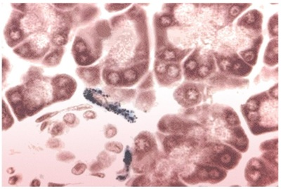
A Neutrófilos.
B Linfócitos.
C Macrófagos.
D Monócitos.
E Células acinares.
Questão 463 · Sistema Imune e Hematológico · 4000200843Analise atentamente a ilustração abaixo, que representa uma lâmina de esfregaço sanguíneo corada com Giemsa: Figura: Células do Sangue. Fonte: Arquivos Estratégia Med. A célula nucleada no centro da ilustração é denominada:
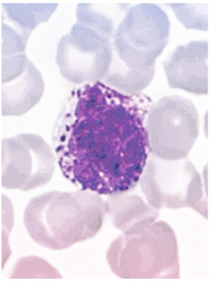
A Linfócito.
B Basófilo.
C Neutrófilo.
D Eosinófilo.
E Monócito.
Questão 464 · Sistema Imune e Hematológico · 4000200842Veja a figura a seguir, que representa uma lâmina histológica de esfregaço sanguíneo: Figura: Células do sangue, coloração Giemsa. Fonte: Arquivos Estratégia Med. As duas células nucleadas da figura são classificadas como:

A Monócitos.
B Linfócitos.
C Neutrófilos.
D Basófilos.
E Eosinófilos.
Questão 465 · Sistema Imune e Hematológico · 4000200841Observe a imagem a seguir, que representa uma lâmina de esfregaço sanguíneo corada com Giemsa: Figura: Células do sangue. Fonte: Arquivos Estratégia Med. A grande célula nucleada presente na imagem é classificada como:

A Eritrócito.
B Basófilo.
C Eosinófilo.
D Neutrófilo.
E Monócito.
Questão 466 · Sistema Imune e Hematológico · 4000200840Analise atentamente a ilustração abaixo, que representa uma lâmina de esfregaço sanguíneo corada com Giemsa: Figura: Células do Sangue. Fonte: Arquivos Estratégia Med. A célula grande nucleada presente no centro da imagem é denominada:
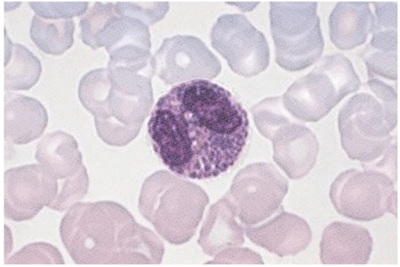
A Eritrócito.
B Neutrófilo.
C Basófilo.
D Monócito.
E Eosinófilo.
Questão 467 · Sistema Imune e Hematológico · 4000200839Veja a figura a seguir, que representa uma lâmina histológica de esfregaço sanguíneo: Figura: Células do sangue, coloração Giemsa. Fonte: Arquivos Estratégia Med. As três células nucleadas no centro da imagem são denominadas:

A Neutrófilos.
B Basófilos.
C Eosinófilos.
D Eritrócitos.
E Linfócitos.
Questão 468 · Sistema Imune e Hematológico · 4000200838Observe a imagem a seguir, que representa uma lâmina de esfregaço sanguíneo corada com Giemsa: Figura: Células do sangue. Fonte: Arquivos Estratégia Med. As células representadas são classificadas como:

A Eritrócitos.
B Neutrófilos.
C Linfócitos.
D Monócitos.
E Plaquetas.
Questão 469 · SemiologiaPropedêutica Médica · 4000200837Quais estruturas costumam se localizar na fossa ilíaca direita?
A Fígado e baço.
B Baço e apêndice vermiforme.
C Cólon transverso e bexiga.
D Ceco e apêndice vermiforme.
E Bexiga e ceco.
Questão 470 · SemiologiaPropedêutica Médica · 4000200836Assinale a alternativa que melhor define o conceito de descompressão brusca positiva (DB+):
A DB+ é a queda da pressão arterial em mais de 20 mmHg quando o paciente assume a posição ortostática.
B DB+ é a presença de dor à palpação da região abdominal.
C DB+ é a queda da saturação arterial de oxigênio, experienciada de maneira rápida pelo paciente.
D DB+ é a presença de dor após a liberação de uma pressão realizada pelo examinador sobre o abdome do examinado.
E DB+ é ausência de movimentos respiratórios.
Questão 471 · SemiologiaPropedêutica Médica · 4000200835Qual das estruturas abaixo é frequentemente palpável na fossa ilíaca esquerda?
A Cólon ascendente.
B Fígado.
C Baço.
D Cólon sigmoide.
E Rim esquerdo.
Questão 472 · SemiologiaPropedêutica Médica · 4000200834Ao examinar um paciente do sexo masculino de 60 anos, tabagista e portador de hipertensão arterial sistêmica, você identi ca uma massa palpável e pulsátil na região hipogástrica, que emite um sopro sistólico mediante ausculta com estetoscópio. Marque a alternativa que contém a hipótese diagnóstica mais provável para esse caso:
A Hepatomegalia.
B Esplenomegalia.
C Neoplasia de cólon.
D Aneurisma de aorta abdominal.
E Abdome agudo obstrutivo.
Revisar: possível letra faltando em enunciado
Questão 473 · SemiologiaPropedêutica Médica · 4000200833Você é chamado à enfermaria para examinar um paciente que possui o diagnóstico de neoplasia do trato gastrintestinal com metástase peritoneal próxima à região da cicatriz umbilical. Como é esperado que estejam a percussão e a palpação da área acometida pelo tumor?
A Espera-se que a região de implantação tumoral emita som maciço à percussão e apresente massa palpável aderida à parede abdominal.
B É esperado que a região de implantação tumoral seja timpânica à percussão e não apresente massa palpável.
C Espera-se que a região de implantação apresente macicez móvel à percussão, que muda de localização conforme o paciente altera seu decúbito, e ausência de massa palpável.
D É esperado que a região de implantação tumoral seja timpânica à percussão e apresente massa palpável aderida à parede abdominal.
E Espera-se que a região de implantação tumoral seja maciça à percussão e apresente coleção líquida palpável na região da cicatriz umbilical.
Questão 474 · SemiologiaPropedêutica Médica · 4000200832Em qual setor do abdome é possível palpar o baço de tamanho normal?
A Hipocôndrio esquerdo.
B Fossa ilíaca esquerda.
C Epigástrio.
D Flanco esquerdo.
E O baço de tamanho normal não é palpável.
Questão 475 · SemiologiaPropedêutica Médica · 4000200831Em qual setor do abdome é realizada a palpação do fígado?
A Hipocôndrio esquerdo.
B Hipocôndrio direito.
C Epigástrio.
D Hipogástrio.
E Flanco esquerdo.
Questão 476 · SemiologiaPropedêutica Médica · 4000200830Em que consiste o sinal de Giordano e o que ele indica ao examinador?
A O sinal de Giordano é a percussão dolorosa da região lombar do paciente, utilizando a borda hipotenar da mão para aplicar um estímulo moderado que normalmente não seria doloroso. Indica a presença de inflamação da cápsula renal.
B O sinal de Giordano é a presença de dor e interrupção respiratória mediante pressão do examinador sobre o ponto vesicular. Indica a presença de colecistite.
C O sinal de Giordano é a percussão maciça do espaço de Traube, que normalmente encontra-se desocupado. Na maioria dos casos, indica a presença de esplenomegalia.
D O sinal de Giordano é a palpação do fígado com a borda distando mais de 2 cm do rebordo costal direito. É indicativo de hepatomegalia.
E O sinal de Giordano consiste em uma área percussão maciça disposta em um semicírculo ao redor de uma área central de percussão timpânica. É indicativo de ascite.
Questão 477 · SemiologiaPropedêutica Médica · 4000200829Você recebe no ambulatório um paciente com queixa de aumento de volume abdominal e deseja esclarecer se esse aumento é decorrente de ascite. Assinale a alternativa que contém três técnicas semiológicas que revelam a presença de ascite:
A Sinal de Giordano, semicírculo de Skoda e ausculta das alças intestinais.
B Sinal do piparote, percussão do espaço de Traube e palpação do cólon sigmoide.
C Sinal de Murphy, ausculta das alças intestinas e pesquisa de sopros vasculares.
D Sinal de Giordano, percussão do espaço de Traube e pesquisa de macicez móvel.
E Sinal do piparote, semicírculo de Skoda e pesquisa de macicez móvel.
Questão 478 · SemiologiaPropedêutica Médica · 4000200828Quais são os limites anatômicos do espaço de Traube, utilizado para a pesquisa de esplenomegalia?
A Limite superior: diafragma. Limite inferior: rebordo costal direito. Limite lateral: linha axilar anterior. Limite medial: linha mediana.
B Limite superior: epigástrio. Limite inferior: hipogástrio. Limites laterais: flanco esquerdo e flanco direito.
C Limite superior: linha horizontal no nível mais alto da crista ilíaca. Limite inferior: ligamento inguinal esquerdo. Limite lateral: osso do quadril. Limite medial: hipogástrio.
D Limite superior: diafragma. Limite inferior: rebordo costal esquerdo. Limite lateral: linha axilar anterior. Limite medial: lobo esquerdo do fígado.
E Limite superior: linha horizontal no nível mais alto da crista ilíaca. Limite inferior: ligamento inguinal direito. Limite lateral: osso do quadril. Limite medial: hipogástrio.
Questão 479 · SemiologiaPropedêutica Médica · 4000200827Em qual área da região abdominal é esperado que se encontre som maciço à percussão, sem que isso represente alteração patológica?
A Hipocôndrio esquerdo.
B Epigástrio
C Hipocôndrio direito.
D Flancos.
E Fossa ilíaca.
Questão 480 · SemiologiaPropedêutica Médica · 4000200826Assinale a alternativa que contém os dois principais sons pesquisados durante a ausculta da região abdominal:
A Murmúrios vesiculares e ruídos hidroaéreos.
B Ruídos hidroaéreos e bulhas.
C Ruídos hidroaéreos e sopros vasculares.
D Sons de Korotkoff e sopros vasculares.
E Murmúrios vesiculares e sopros vasculares.
Questão 481 · SemiologiaPropedêutica Médica · 4000200825Quais dos seguintes achados devem ser valorizados durante a inspeção do abdome?
A Alterações da pele ou da pilificação.
B Presença de lesões ou cicatrizes.
C Circulação colateral venosa.
D Descrição do formato do abdome.
E Todas as alternativas.
Questão 482 · SemiologiaPropedêutica Médica · 4000200824Qual o motivo para a inversão da ordem habitual de exame físico (inspeção, palpação, percussão e ausculta) para inspeção seguida de ausculta, quando se realiza o exame do abdome?
A É apenas uma convenção para facilitar a comunicação entre os observadores, sem significado fisiológico.
B O motivo para essa inversão da ordem habitual é que a palpação ou a percussão do abdome são fatores que interferem na ausculta, podendo alterar o padrão dos ruídos hidroaéreos.
C A razão para que a ordem habitual do exame físico seja invertida no exame abdominal é que os dados da ausculta dessa região são sempre mais relevantes na descrição dos quadros, devendo ser colocados em evidência.
D A ausculta é realizada antes da palpação e da percussão porque ela é o dado que demonstra a localização dos órgãos abdominais e orienta a palpação e percussão do examinador.
E Realiza-se a ausculta do abdome primeiro porque os dados obtidos com esse exame são de menor relevância para os quadros, e devem ser logo eliminados do “checklist” do examinador.
Questão 483 · SemiologiaPropedêutica Médica · 4000200823Em um paciente com doença pulmonar obstrutiva crônica com padrão de en sema pulmonar, como é esperado que estejam o frêmito toracovocal (FTV), a percussão e a ausculta da região acometida pela doença, respectivamente:
A FTV aumentado, som timpânico à percussão e murmúrios vesiculares presentes.
B FTV diminuído, som submaciço à percussão e murmúrios vesiculares presentes.
C FTV aumentado, som submaciço à percussão e murmúrios vesiculares diminuídos.
D FTV diminuído, som submaciço à percussão e murmúrios vesiculares diminuídos.
E FTV diminuído, som timpânico à percussão e murmúrios vesiculares diminuídos.
Questão 484 · SemiologiaPropedêutica Médica · 4000200822Em um paciente com condensação pulmonar decorrente de pneumonia, como é mais provável que estejam o frêmito toracovocal (FTV), a percussão e a ausculta da região condensada, respectivamente:
A FTV aumentado, som submaciço à percussão e murmúrios vesiculares ausentes com estertores finos na expiração.
B FTV reduzido, som timpânico à percussão e murmúrios vesiculares ausentes sem ruídos adventícios.
C FTV aumentado, som timpânico à percussão e murmúrios vesiculares presentes sem ruídos adventícios.
D FTV reduzido, som submaciço à percussão e murmúrios vesiculares presentes com estertores finos na expiração.
E FTV reduzido, som claro pulmonar à percussão e murmúrios vesiculares presentes com estertores finos na expiração.
Questão 485 · SemiologiaPropedêutica Médica · 4000200821Qual dos seguintes achados é considerado eminentemente patológico na ausculta pulmonar?
A Murmúrios vesiculares.
B Som laringotraqueal.
C Respiração brônquica.
D Atrito pleural.
E Ausculta da voz abafada.
Questão 486 · SemiologiaPropedêutica Médica · 4000200820Marque a alternativa que contém um exemplo de ausculta pulmonar normal:
A Murmúrios vesiculares presentes, ausculta da voz normal, sem ruídos adventícios.
B Murmúrios vesiculares abolidos, ausculta da voz claramente distinguível, sem ruídos adventícios.
C Murmúrios vesiculares presentes, ausculta da voz normal, presença de atrito pleural.
D Murmúrios vesiculares diminuídos, ausculta da voz normal, estertores finos em bases pulmonares bilateralmente.
E Murmúrios vesiculares presentes, ausculta da voz claramente distinguível, roncos altos durante a inspiração em base esquerda.
Questão 487 · SemiologiaPropedêutica Médica · 4000200819Considere o seguinte achado de exame físico pulmonar: “Som timpânico à percussão em ápices e bases pulmonares bilateralmente”. A qual dos pacientes a seguir é mais provável que pertença o exame supracitado:
A GFA, 12 anos, sexo masculino. Internado no Pronto Socorro há 1 dia por pneumonia lobar à direita.
B HBF, 70 anos, sexo masculino. Tabagismo 50 anos-maço. Internado na enfermaria há 7 dias por doença pulmonar obstrutiva crônica descompensada.
C VAS, 20 anos, sexo masculino. Internado na enfermaria da cirurgia geral no 3º dia pós-operatório de apendicectomia. Sem queixas.
D HD, 29 dias de idade, sexo masculino. Admitido ao Pronto Socorro com sinais de dispneia e diagnosticado com bronquiolite.
E BNT, 20 anos, sexo feminino. Admitida ao Pronto Socorro por crise asmática aguda, controlada com broncodilatadores. Estável e com alta programada.
Questão 488 · SemiologiaPropedêutica Médica · 4000200818Você, estudante de Medicina, está na aula de Semiologia treinando a percussão do tórax em seus colegas de turma, preparando-se para ir ao ambulatório examinar pacientes. Ao percutir a região do quinto espaço intercostal direito de seu parceiro de exame (um estudante jovem, hígido e sem comorbidades), você observa um som maciço advindo daquela área. Qual a mais provável origem desse som?
A Área cardíaca.
B Bolha aérea gástrica.
C Derrame pleural.
D Parênquima hepático.
E Cavitação aérea decorrente de tuberculose pulmonar ativa.
Questão 489 · SemiologiaPropedêutica Médica · 4000200817Durante a percussão do tórax de um paciente internado na enfermaria, você, estudante de Medicina, escuta um som submaciço localizado na base pulmonar esquerda. O restante do pulmão apresenta som claro pulmonar à percussão. Qual dos seguintes diagnósticos é mais provável de estar acometendo a base pulmonar esquerda desse paciente?
A Enfisema pulmonar.
B Pneumonia.
C Derrame pleural.
D Pneumotórax.
E Cavitações aéreas.
Questão 490 · SemiologiaPropedêutica Médica · 4000200816Como é denominada a vibração palpável decorrente da transmissão da voz ao longo do parênquima pulmonar, e em qual situação você esperaria que ela estivesse aumentada?
A Murmúrio vesicular, aumentado em casos de derrame pleural.
B Frêmito toracovocal, aumentado em casos de enfisema pulmonar.
C Frêmito toracovocal, aumentado em casos de consolidação pulmonar.
D Ausculta da voz, aumentada em casos de derrame pleural.
E Murmúrio vesicular, aumentado em casos de enfisema pulmonar.
Questão 491 · SemiologiaPropedêutica Médica · 4000200815Assinale a alternativa que descreve a técnica correta de pesquisa da expansibilidade torácica:
A A expansibilidade torácica é adequadamente avaliada apenas pela inspeção do movimentos respiratórios, não sendo necessário rotineiramente pôr as mãos no paciente.
B A expansibilidade torácica é avaliada com maior sensibilidade colocando as mãos sobre o dorso do paciente e observando o afastamento rítmico dos dedos. Devido às estruturas interpostas, não é possível avaliar a expansibilidade na região anterior do tórax.
C A expansibilidade torácica pode ser avaliada tanto na região anterior quanto na região posterior do tórax, e consiste em posicionar as mãos do examinador ao redor do paciente e observar o afastamento rítmico dos dedos conforme o examinado respira.
D A expansibilidade torácica é avaliada mediante as características fonéticas da respiração auscultada, que muda seu padrão sonoro conforme o tórax expande mais ou menos.
E A expansibilidade torácica é avaliada por meio da percussão do tórax, que se torna mais timpânico conforme a magnitude dos movimentos respiratórios se intensifica.
Questão 492 · SemiologiaPropedêutica Médica · 4000200814Qual a primeira etapa do exame físico pulmonar?
A Ausculta.
B Percussão.
C Expansibilidade torácica.
D Palpação do frêmito toracovocal.
E Inspeção estática e dinâmica.
Questão 493 · SemiologiaPropedêutica Médica · 4000200813Qual a referência utilizada na prática para localizar o segundo espaço intercostal durante o exame físico?
A O segundo espaço intercostal se localiza na região superior à fúrcula esternal.
B O segundo espaço intercostal é o espaço no qual é possível palpar o
C Abaixo do apêndice xifoide do esterno podemos localizar o segundo espaço intercostal.
D Considera-se que o espaço intercostal na mesma altura dos mamilos é o segundo espaço.
E O segundo espaço intercostal se localiza lateral à junção do corpo do esterno com o manúbrio esternal.
Questão 494 · SemiologiaPropedêutica Médica · 4000200812A pesquisa de frêmitos faz parte do exame cardíaco, constituindo parte da etapa de palpação. Entre as alternativas abaixo, qual a melhor definição de frêmito no contexto do exame do coração?
A Frêmitos são o aspecto palpável de um sopro cardíaco.
B Frêmito é o som do choque da ponta do ápice do coração contra a parede torácica, representando a contração cardíaca.
C Frêmitos são ruídos aéreos que indicam a presença de ar dentro da cavidade pericárdica.
D Frêmito é o som decorrente do atrito pericárdico.
E Frêmitos são ruídos decorrentes da atividade cardíaca que indicam o funcionamento normal do coração.
Questão 495 · SemiologiaPropedêutica Médica · 4000200811Em qual das áreas de ausculta é mais indicado pesquisar um sopro que tem origem em uma das valvas semilunares do coração?
A Foco mitral.
B Foco aórtico.
C Foco tricúspide.
D Ausculta do abdome.
E Ausculta do dorso.
Questão 496 · SemiologiaPropedêutica Médica · 4000200810O tempo de enchimento capilar (TEC) é um sinal que pode indicar má perfusão periférica nos pacientes, fazendo parte do exame físico geral. Em qual dos locais abaixo é mais indicado fazer a pesquisa do TEC?
A Face.
B Dorso da mão.
C Abdome.
D Leito ungueal.
E Antebraço.
Questão 497 · SemiologiaPropedêutica Médica · 4000200809A ausculta cardíaca é uma etapa fundamental do exame do coração, capaz de oferecer muitas informações valiosas para o diagnóstico. Imagine que você, estudante de Medicina, ausculta um paciente e não encontra nenhuma alteração no exame. Entre as alternativas abaixo, qual seria a maneira mais correta de registrar essa informação no prontuário?
A Bulhas rítmicas, normofonéticas, em dois tempos (B1 e B2), sem sopros.
B Bulhas rítmicas taquicárdicas (FC=110 bpm), em dois tempos (B1 e B2), sem sopros.
C Bulhas rítmicas taquicárdicas (FC=115 bpm), em três tempos (B1, B2 e B3), ritmo de galope, sem sopros.
D Bulhas rítmicas hipofonéticas, em três tempos (B1, B2 e B3), ritmo de galope, sem sopros.
E Bulhas rítmicas, normofonéticas, em dois tempos (B1 e B2), com presença de sopro sistólico (++/4+) em foco mitral.
Questão 498 · SemiologiaPropedêutica Médica · 4000200808Uma parte fundamental do exame cardíaco é a inspeção das veias jugulares. Uma distensão das veias jugulares, quando o paciente está deitado a 45º, pode indicar qual dos processos abaixo:
A Hipotensão sistêmica.
B Hipertensão venosa.
C Perfusão de extremidades adequada.
D Hipotensão venosa.
E Redução da volemia.
Questão 499 · Sistema Locomotor · SemiologiaPropedêutica Médica · 4000200807Assinale a alternativa que melhor descreve o mecanismo de surgimento da quarta bulha (B4) na ausculta cardíaca:
A A quarta bulha é um sopro audível na estenose aórtica, que decorre da tentativa de ejetar o sangue forçosamente contra a valva aórtica enrijecida durante a sístole ventricular.
B A quarta bulha é o som fisiológico produzido pelo desdobramento da primeira bulha em dois sons quando ela é auscultada durante a inspiração.
C A quarta bulha tem origem no choque do sangue ejetado pela contração atrial contra a massa de sangue represada no ventrículo no fim da diástole.
D A quarta bulha é um sopro bastante característico que ocorre durante a diástole, também chamada de sopro em ruflar, é decorrente do enrijecimento da valva mitral nos casos de estenose mitral.
E A quarta bulha é o som decorrente do fechamento da valva pulmonar no início da diástole ventricular.
Questão 500 · Sistema Locomotor · SemiologiaPropedêutica Médica · 4000200806Assinale a alternativa que melhor descreve o mecanismo de surgimento da terceira bulha (B3) na ausculta cardíaca:
A A terceira bulha representa o fechamento das valvas atrioventriculares do coração no início da sístole ventricular.
B A terceira bulha é causada pela desaceleração brusca do sangue que se choca contra a parede ventricular durante a fase de enchimento rápido do ciclo cardíaco.
C A terceira bulha representa o fechamento das valvas semilunares do coração no início da diástole ventricular.
D A terceira bulha é um sopro audível em casos de insuficiência mitral, nos quais a valva mitral não é capaz de se fechar adequadamente e deixa refluir sangue para os átrios durante a sístole ventricular.
E A terceira bulha tem origem no choque da ponta do ápice cardíaco contra a parede torácica durante a contração ventricular.
Questão 501 · Sistema Locomotor · SemiologiaPropedêutica Médica · 4000200805Marque a alternativa que associa corretamente os fenômenos siológicos que dão origem aos sons auscultáveis durante o exame cardíaco normal, chamados primeira bulha (B1) e segunda bulha (B2):
A B1 – Fechamento da valva mitral. B2 – Fechamento da valva tricúspide.
B B1 – Fechamento da valva pulmonar. B2 – Fechamento da valva aórtica.
C B1 – Fechamento das valvas aórtica e pulmonar. B2 – Fechamento das valvas mitral e tricúspide.
D B1 – Fechamento das valvas mitral e tricúspide. B2 – Fechamento das valvas aórtica e pulmonar.
E B1 – Fechamento da valva aórtica. B2 – Fechamento da valva mitral.
Questão 502 · Sistema Locomotor · SemiologiaPropedêutica Médica · 4000200804Durante o exame cardíaco, a pesquisa do das seguintes regiões você esperaria encontrar o ictus cordis em um paciente saudável?
A No 4º ou 5º espaço intercostal, próximo à linha hemiclavicular esquerda.
B Na fossa supraclavicular esquerda.
C No 4º ou 5º espaço intercostal, junto à borda esquerda do osso esterno.
D Na fúrcula esternal.
E No 4º ou 5º espaço intercostal, na região da linha hemiclavicular direita.
Questão 503 · Sistema Locomotor · SemiologiaPropedêutica Médica · 4000200803A frequência respiratória é um importante parâmetro a ser avaliado durante o exame físico, sendo um indicador de descompensação quando está muito alterada. Qual das seguintes patologias pode levar a um aumento da frequência respiratória?
A Hipotireoidismo.
B Bronquite crônica.
C Intoxicação por opioides.
D Pneumonia.
E Rebaixamento do nível de consciência.
Questão 504 · Sistema Locomotor · SemiologiaPropedêutica Médica · 4000200802Durante o exame físico dos pacientes, é importante que se avalie a frequência cardíaca e suas alterações. Qual é a faixa de frequência cardíaca considerada normal em adultos sadios?
A 60 a 100 batimentos por minuto.
B 60 a 80 batimentos por minuto.
C 80 a 100 batimentos por minuto.
D Acima de 100 batimentos por minuto.
E Abaixo de 60 batimentos por minuto.
Questão 505 · Sistema Locomotor · SemiologiaPropedêutica Médica · 4000200801A medida da temperatura dos pacientes pode ser utilizada para diagnosticar febre, que sugere a instalação de determinadas doenças. Quais das seguintes situações clínicas podem cursar com a presença de febre?
A Infecções.
B Doenças inflamatórias.
C Doenças autoimunes.
D Neoplasias.
E Todas as alternativas.
Questão 506 · Sistema Locomotor · SemiologiaPropedêutica Médica · 4000200800Assinale a alternativa que constitui um erro de técnica durante a palpação dos pulsos arteriais periféricos:
A Palpar simultaneamente os pulsos equivalentes contralaterais.
B Palpar o pulso utilizando o dedo polegar.
C Calcular a frequência de pulso contando o número de pulsos por 30 segundos e multiplicando o valor obtido por 2.
D Palpar os pulsos do membros no sentido de distal para proximal.
E Analisar a ritmicidade e a intensidade dos pulsos.
Questão 507 · Sistema Locomotor · SemiologiaPropedêutica Médica · 4000200799Qual a importância de realizar, sobretudo em pacientes idosos, a aferição da pressão arterial em decúbito dorsal seguida por uma medida da mesma pressão em pé?
A Prover maior conforto ao paciente durante o exame.
B Testar a funcionalidade do esfigmomanômetro contra a gravidade.
C Verificar o equilíbrio do paciente.
D Aumentar a fidelidade do exame ao realizar duas medidas.
E Realizar o diagnóstico de hipotensão postural.
Questão 508 · Sistema Locomotor · SemiologiaPropedêutica Médica · 4000200798A medida da pressão arterial é parte fundamental do exame físico geral, devendo ser realizada para a grande maioria dos pacientes. Quais valores de pressão arterial são utilizados como corte para o diagnóstico de hipertensão arterial sistêmica?
A Pressão sistólica maior do que 120 mmHg e diastólica maior do que 80 mmHg.
B Pressão diastólica maior do que 120 mmHg e sistólica maior do que 80 mmHg.
C Pressão sistólica maior do que 140 mmHg e diastólica maior do que 90 mmHg.
D Pressão diastólica maior do que 140 mmHg e sistólica maior do que 90 mmHg.
E Pressão sistólica maior do que 180 mmHg e diastólica maior do que 120 mmHg.
Questão 509 · Sistema Locomotor · SemiologiaPropedêutica Médica · 4000200797Como é realizado o cálculo do índice de massa corpórea (IMC)?
A IMC = Peso (Kg) / Altura² (m).
B IMC = Circunferência Abdominal / Circunferência do Quadril.
C IMC = Peso (Kg) / Altura (cm).
D IMC = Peso (g) / Área de superfície corpórea (m²).
E IMC = Circunferência do Quadril / Circunferência Abdominal.
Questão 510 · Sistema Locomotor · SemiologiaPropedêutica Médica · 4000200796O estado de hidratação do paciente pode ser percebido ao exame clínico, mas existem diversas situações que di cultam essa análise. Assinale a alternativa que contém uma situação que pode falsear o diagnóstico de desidratação:
A Hemorragia.
B Alterações senis.
C Diarreias e vômitos.
D Redução da ingesta hídrica no paciente acamado.
E Febre persistente.
Questão 511 · Sistema Locomotor · SemiologiaPropedêutica Médica · 4000200795Durante o exame físico geral, é importante classificar o paciente quanto à presença de dispneia no momento da consulta. Qual o conceito que melhor define dispneia?
A Número aumentado de incursões respiratórias por minuto.
B Número reduzido de incursões respiratórias por minuto.
C Presença de líquido nos alvéolos do pulmão.
D Redução da amplitude dos movimentos respiratórios.
E Relato subjetivo de “falta de ar” por parte do paciente ou alteração visível do padrão respiratório.
Questão 512 · Sistema Locomotor · SemiologiaPropedêutica Médica · 4000200794Qual dos seguintes parâmetros se traduz na coloração azulada clinicamente observável na pele e nas mucosas, denominada cianose?
A Aumento do nível sérico de cálcio.
B Redução da filtração glomerular.
C Queda na concentração de hemoglobina.
D Elevação da proteína C reativa.
E Queda na saturação de oxigênio da hemoglobina.
Questão 513 · Sistema Locomotor · SemiologiaPropedêutica Médica · 4000200793Marque a alternativa que contém o parâmetro laboratorial responsável pela coloração amarelada presente na pele e nos olhos de alguns doentes, chamada icterícia:
A Hiperbilirrubinemia.
B Elevação do hematócrito.
C Creatinina elevada.
D Hiperglicemia.
E Hipercalemia.
Questão 514 · Sistema Locomotor · SemiologiaPropedêutica Médica · 4000200792Em qual região deve ser preferencialmente realizada a inspeção do estado de palidez dos pacientes?
A Pele do dorso.
B Esclera ocular.
C Palma das mãos.
D Dobras cutâneas.
E Pele sobre o olécrano.
Questão 515 · Sistema Locomotor · SemiologiaPropedêutica Médica · 4000200791A avaliação do estado geral do paciente é normalmente a primeira parte do exame físico, e consiste em:
A Medir o peso e a altura do paciente.
B Realizar o interrogatório sobre diversos aparelhos (ISDA).
C Registrar a impressão inicial que o médico tem do paciente.
D Avaliar o estado neurológico do paciente, graduando-o na escala de coma de Glasgow e na escala RASS.
E Examinar a pele, mucosas e pulsos arteriais.
Questão 516 · Sistema Locomotor · SemiologiaPropedêutica Médica · 4000200790Em que consiste a investigação sobre os diversos aparelhos (ISDA)?
A Investigação direcionada e objetiva guiada pelos sistemas do paciente, de forma a rastrear queixas não trazidas pelo doente que possam ser úteis no diagnóstico atual ou sirvam para orientá-lo em outro processo patológico.
B Questionamento exaustivo acerca de todos os órgãos e sistemas, que deve ser realizada para todos os pacientes.
C Exame físico minucioso, geralmente realizado no sentido da cabeça aos pés, e contendo inspeção, palpação, percussão e ausculta de todos os órgãos relevantes nesse caminho.
D Exame clínico e solicitação de exames complementares sobre os diversos sistemas que compõem o organismo do paciente, de forma a compreender o panorama geral da situação de saúde do doente.
E Questionamento geral a respeito dos sistemas do paciente, sem buscar ativamente algum sintoma.
Questão 517 · Sistema Locomotor · SemiologiaPropedêutica Médica · 4000200789Qual das informações a seguir deve ser perguntada durante a investigação de hábitos e vícios da anamnese?
A Tabagismo.
B Presença de Hipertensão Arterial na família.
C Cirurgias prévias.
D Imunizações.
E Antecedentes obstétricos.
Questão 518 · Sistema Locomotor · SemiologiaPropedêutica Médica · 4000200788Na seção de antecedentes familiares da anamnese, o médico questiona acerca do estado de saúde dos integrantes da família imediata do paciente. Qual das seguintes doenças chama mais atenção, pelo seu componente genético, quando mencionada em um parente de 1º grau do paciente?
A Diabetes Mellitus.
B Doença renal crônica.
C Insuficiência cardíaca congestiva.
D Traumatismo cranioencefálico.
E Infecções bacterianas.
Questão 519 · Sistema Locomotor · SemiologiaPropedêutica Médica · 4000200787Os antecedentes pessoais do paciente são importante parte da anamnese, fornecendo ao médico informações valiosas. Considerando a divisão clássica da anamnese, assinale a alternativa que contém um aspecto que deve ser perguntado durante a investigação dos antecedentes pessoais:
A Naturalidade do paciente.
B Histórico de câncer na família.
C Motivo principal da consulta médica.
D Medicamentos em uso.
E Idade do paciente.
Questão 520 · Sistema Locomotor · SemiologiaPropedêutica Médica · 4000200786Durante a descrição de um sintoma trazido pelo paciente, é importante que o médico caracterize adequadamente diversos aspectos relevantes da queixa. Qual das alternativas abaixo contém aspectos que devem ser interrogados na investigação de um sintoma?
A Duração.
B Localização.
C Quantidade.
D Qualidade.
E Todas as alternativas.
Questão 521 · Sistema Locomotor · SemiologiaPropedêutica Médica · 4000200785A identi cação é a primeira parte de uma anamnese médica, permitindo que o pro ssional de saúde conheça o paciente que está sendo cuidado. Pertencem à identi cação do paciente os seguintes dados abaixo, exceto:
A Idade.
B Sexo.
C Ocupação.
D Peso e altura.
E Naturalidade.
Questão 522 · Sistema Locomotor · SemiologiaPropedêutica Médica · 4000200784Na prática médica, como se diferenciam os conceitos de sintoma e de sinal?
A Os sintomas são alterações de menor relevância para a doença atual, enquanto que os sinais são as alterações consideradas mais relevantes.
B Sintomas são queixas de causa psíquica (como tristeza, ansiedade etc.) e sinais são queixas físicas (como cefaleia e síncope, por exemplo).
C Os sintomas são alterações pregressas, fazendo parte do histórico do paciente, e os sinais são alterações atuais do organismo.
D Os sintomas são as queixas referidas pelo paciente (dor, náuseas, astenia) e os sinais são as alterações percebidas pelo médico (hipertensão, febre).
E Sintomas são queixas que fazem parte de um conjunto (síndrome), e sinais são alterações isoladas percebidas pelo médico.
Questão 523 · Sistema Locomotor · SemiologiaPropedêutica Médica · 4000200783A articulação do tornozelo ocorre entre tíbia, fíbula e tálus, sendo este último pertencente aos ossos do tarso. Classifique a articulação do tornozelo de acordo com a sua morfologia:
A Articulação sinovial do tipo plana.
B Articulação sinovial do tipo gínglimo.
C Articulação sinovial do tipo selar.
D Articulação sinovial do tipo elipsoidea.
E Articulação sinovial do tipo esferoidea.
Questão 524 · Sistema Locomotor · SemiologiaPropedêutica Médica · 4000200782Além da ação dos músculos adjacentes, a articulação do joelho também é fortalecida por poderosos ligamentos, localizados tanto no interior quanto no exterior da cápsula articular. Qual das alternativas abaixo cita corretamente os ligamentos externos do joelho?
A Ligamento da patela, ligamento colateral tibial, ligamento colateral fibular, ligamento poplíteo oblíquo e ligamento poplíteo arqueado.
B Ligamento talofibular anterior, ligamento da patela, ligamento poplíteo anterior, ligamento poplíteo posterior e ligamento poplíteo lateral.
C Ligamento cruzado anterior e ligamento cruzado posterior.
D Menisco medial e menisco lateral.
E Ligamento da patela, ligamento tibiofemoral, ligamento colateral tibial, ligamento colateral fibular e ligamento colateral posterior.
Questão 525 · Sistema Locomotor · SemiologiaPropedêutica Médica · 4000200781A articulação do joelho é uma das mais importantes do membro inferior, sendo um frequente alvo de lesões traumáticas ou degenerativas. Classifique a articulação do joelho de acordo com a sua morfologia:
A Articulação sinovial do tipo esferoidea.
B Articulação sinovial do tipo gínglimo.
C Articulação sinovial do tipo selar.
D Articulação sinovial do tipo elipsoidea.
E Articulação sinovial do tipo plana.
Questão 526 · Sistema Locomotor · SemiologiaPropedêutica Médica · 4000200780A articulação do quadril é fundamental para a sustentação do peso do corpo e para a mobilidade do membro inferior. Assinale a alternativa que classifica corretamente a articulação do quadril:
A Articulação sinovial do tipo gínglimo.
B Articulação sinovial do tipo esferoidea.
C Articulação fibrosa do tipo sindesmose.
D Articulação cartilaginosa do tipo sínfise.
E Articulação sinovial do tipo selar.
Questão 527 · Sistema Locomotor · 4000200779Qual músculo do compartimento posterior da perna é o mais forte efetor da flexão plantar do tornozelo?
A Músculo sóleo.
B Músculo gastrocnêmio medial.
C Músculo gastrocnêmio lateral.
D Músculo plantar.
E Músculo poplíteo.
Questão 528 · Sistema Locomotor · 4000200778O nervo isquiático se rami ca na altura da fossa poplítea, dando origem a ramos que inervam a perna e o pé. Assinale a alternativa que correlaciona corretamente os nervos derivados do isquiático e o compartimento da perna que eles suprem:
A Nervo tibial anterior– Compartimento anterior da perna. Nervo fibular profundo – Compartimento lateral da perna. Nervo tibial posterior– Compartimento posterior da perna.
B Nervo tibial anterior – Compartimento anterior da perna. Nervo fibular – Compartimento lateral da perna. Nervo tibial posterior – Compartimento posterior da perna.
C Nervo tibial superficial – Compartimento anterior da perna. Nervo fibular – Compartimento lateral da perna. Nervo tibial profundo – Compartimento posterior da perna.
D Nervo fibular superficial – Compartimento anterior da perna. Nervo fibular profundo – Compartimento lateral da perna. Nervo tibial – Compartimento posterior da perna.
E Nervo fibular profundo – Compartimento anterior da perna. Nervo fibular superficial – Compartimento lateral da perna. Nervo tibial – Compartimento posterior da perna.
Revisar: possível letra faltando em enunciado
Questão 529 · Sistema Locomotor · 4000200777Assinale a alternativa que descreve corretamente os principais músculos da região posterior da coxa e suas ações em conjunto:
A Músculo bíceps femoral, músculo semitendíneo e músculo semimembranáceo. Realizam extensão do quadril e flexão do joelho.
B Músculo tríceps femoral e músculo semitendíneo. Realizam extensão do quadril e flexão do joelho.
C Músculo bíceps femoral, músculo grácil e músculo adutor magno. Realizam flexão do quadril e extensão do joelho.
D Músculo bíceps femoral, músculo semitendíneo e músculo semimembranáceo. Realizam flexão do quadril e extensão do joelho.
E Músculo tríceps femoral e músculo semitendíneo. Realizam flexão do quadril e extensão do joelho.
Questão 530 · Sistema Locomotor · 4000200776O músculo glúteo máximo forma a maior parte do volume da região glútea, recobrindo quase todos os músculos ali presentes. Cite as duas principais funções do glúteo máximo:
A Extensão do quadril e rotação lateral da coxa.
B Abdução da coxa e rotação medial da coxa.
C Abdução da coxa e rotação lateral da coxa.
D Flexão do quadril e flexão do tronco.
E Flexão do quadril, abdução da coxa e estabilização do joelho.
Questão 531 · Sistema Locomotor · 4000200775Marque a alternativa que descreve a principal artéria da região ântero-medial da coxa, sua origem proximal e continuação distal no membro inferior:
A Artéria femoral, origina-se da artéria ilíaca externa e continua distalmente a partir da região do joelho como artéria poplítea.
B Artéria obturatória, origina-se a partir da artéria ilíaca interna e continua distalmente a partir da região do joelho como artéria tibial anterior.
C Artéria femoral, origina-se da artéria ilíaca interna e continua distalmente a partir da região do joelho como artéria poplítea.
D Artéria obturatória, origina-se a partir da artéria ilíaca externa a continua distalmente a partir da região do joelho como artéria poplítea.
E Artéria femoral, origina-se a partir da artéria ilíaca externa e continua distalmente a partir da região do joelho como artéria femoral profunda.
Questão 532 · Sistema Locomotor · 4000200774Qual a função geral dos músculos do compartimento medial da coxa e o principal nervo que confere motricidade a eles?
A Adução da coxa e nervo femoral.
B Abdução da coxa e nervo isquiático.
C Flexão do quadril e nervo isquiático.
D Extensão do quadril e nervo obturatório.
E Adução da coxa e nervo obturatório.
Questão 533 · Sistema Locomotor · 4000200773Qual músculo do compartimento anterior da coxa é o principal flexor do quadril?
A Músculo quadríceps femoral.
B Músculo sartório.
C Músculo pectíneo.
D Músculo vasto intermédio.
E Músculo iliopsoas.
Questão 534 · Sistema Locomotor · 4000200772O nervo femoral é o maior ramo do plexo lombar, atuando na motricidade e sensibilidade do membro inferior. Assinale a alternativa que descreve duas das funções do nervo femoral:
A Inervação sensitiva da pele da região lateral da perna e do pé, por meio dos ramos cutâneos laterais, e inervação motora de músculos do compartimento anterior da coxa.
B Inervação sensitiva da pele da região posterior da coxa, por meio do ramo denominado nervo cutâneo femoral posterior, e inervação motora de músculos do compartimento anterior da coxa.
C Inervação sensitiva da pele da região anterior da coxa, por meio dos ramos cutâneos anteriores, e inervação motora dos músculos do compartimento medial da coxa.
D Inervação sensitiva da pele da região lateral da perna e do pé, por meio do nervo safeno, e inervação motora dos músculos do compartimento medial da coxa.
E Inervação sensitiva da pele da região anterior da coxa, por meio dos ramos cutâneos anteriores, e inervação motora de músculos do compartimento anterior da coxa.
Questão 535 · Sistema Locomotor · 4000200771Os ossos da perna, tíbia e fíbula, estão unidos por uma membrana interóssea forte, análoga à encontrada no antebraço unindo rádio e ulna. Classifique esse tipo de articulação de acordo com a sua morfologia:
A Articulação cartilaginosa do tipo sínfise.
B Articulação sinovial do tipo plana.
C Articulação fibrosa do tipo sutura.
D Articulação fibrosa do tipo sindesmose.
E Articulação sinovial do tipo trocoidea.
Questão 536 · Sistema Locomotor · 4000200770A tíbia é o maior osso da perna, formando a estrutura rígida popularmente conhecida como “canela”. Assinale a alternativa que descreve corretamente três dos principais acidentes ósseos da tíbia:
A Côndilos na região inferior, tuberosidade da tíbia na região anterior e maléolo medial na região inferior.
B Côndilos na região inferior, tuberosidade da tíbia na região posterior e maléolo lateral na região inferior.
C Côndilos na região superior, tuberosidade da tíbia na região anterior e maléolo medial na região inferior.
D Côndilos na região superior, incisura fibular na região superior e maléolo lateral na região inferior.
E Côndilos na região superior, incisura fibular na região superior e maléolo medial na região inferior.
Questão 537 · Sistema Locomotor · 4000200769O fêmur é o osso mais longo que possuímos, e está localizado na região da coxa, unindo o osso do quadril à tíbia. A respeito do fêmur, marque a alternativa que descreve corretamente três dos principais acidentes ósseos presentes nele:
A Cabeça do fêmur na região superior, côndilos na região inferior e trocânter menor na região lateral.
B Cabeça do fêmur na região superior, trocânter maior na região lateral e trocânter menor na região medial.
C Cabeça do fêmur na região inferior, trocânter maior na região medial e trocânter menor na região lateral.
D Trocânter maior na região lateral, côndilos na região superior e colo do fêmur na região superior.
E Trocânter maior na região medial, trocânter menor na região lateral e côndilos na região inferior.
Questão 538 · Sistema Locomotor · 4000200768O púbis é o osso da região do quadril responsável por compor o limite anterior da pelve óssea, articulando-se com o seu par contralateral bem na linha mediana. Como é denominada a articulação entre o púbis esquerdo e o direito?
A Sínfise púbica.
B Articulação púbica posterior.
C Sinostose púbica.
D Articulação púbica anterior.
E Sutura pubiana.
Questão 539 · Sistema Locomotor · 4000200767O ísquio é uma das porções do osso do quadril, que ao longo da vida se funde ao ílio e ao púbis para formar uma estrutura única. O ísquio possui uma protuberância posterior que recebe o peso do corpo na posição sentada, assinale-a:
A Forame obturado.
B Túber isquiático.
C Espinha isquiática.
D Acetábulo.
E Linha glútea posterior.
Questão 540 · Sistema Locomotor · 4000200766Em adultos, o osso do quadril normalmente é uma estrutura única com os seus componentes, ílio, ísquio e púbis, fundidos entre si. Entretanto, o nome dos ossos originais é utilizado para designar as partes do osso do quadril. Nesse contexto, assinale a alternativa que descreve três dos principais acidentes ósseos do ílio:
A Espinha ilíaca anterossuperior na região anterior, face auricular na região lateral e porção superior do acetábulo na face medial.
B Crista ilíaca na região superior, túber isquiático na face posterior e porção superior do acetábulo na face lateral.
C Espinha ilíaca anterossuperior na região anterior, face auricular na região medial e porção superior do acetábulo na face lateral.
D Crista ilíaca na região inferior, túber isquiático na face anterior e porção inferior do acetábulo na face medial.
E Espinha ilíaca anteroinferior na região anterior, face auricular na região lateral e porção inferior do acetábulo na face medial.
Questão 541 · Sistema Locomotor · 4000200765Devido à ação da gravidade, as veias super ciais do membro inferior são importante local de formação de varizes. Assinale a alternativa que descreve as principais veias super ciais do membro inferior, seu trajeto usual e local de desembocadura:
A A veia safena magna é mais lateral, e desemboca na veia femoral na região anterior da coxa. A veia safena parva é mais medial, e desemboca na veia poplítea na região posterior do joelho.
B A veia safena magna é mais medial, e desemboca na veia poplítea na região posterior da coxa. A veia safena parva é mais lateral, e desemboca na veia femoral na região anterior da coxa.
C A veia basílica é mais medial, e desemboca na veia femoral na região anterior da coxa. A veia safena magna é mais lateral e desemboca na veia poplítea na região posterior do joelho.
D A veia safena magna é mais medial, e desemboca na veia femoral na região anterior da coxa. A veia safena parva é mais medial e desemboca na veia poplítea na região posterior do joelho.
E A veia basílica é mais lateral, e desemboca na veia poplítea na região posterior da coxa. A veia safena magna é mais medial e desemboca na veia femoral na região anterior da coxa.
Questão 542 · Sistema Locomotor · 4000200764Os ossos do tarso compõem a região posterior do pé, participando da sustentação do peso do corpo e da mobilidade. Cite os ossos integrantes do tarso:
A Tíbia, fíbula, tálus e calcâneo.
B Fíbula, tálus, calcâneo, cuboide e falanges proximais.
C Tálus, calcâneo, falanges (proximais, médias e distais)
D Tálus, calcâneo, cuneiformes (lateral, intermédio e medial), escafoide e semilunar.
E Tálus, calcâneo, navicular, cuboide e cuneiformes (lateral, intermédio e medial).
Questão 543 · Sistema Locomotor · 4000200763Quais são os ossos que compõem a parte livre do membro inferior?
A Fêmur, tíbia, fíbula, ossos tarsais, ossos metatarsais e falanges.
B Ílio, ísquio, fêmur, tíbia, fíbula, ossos carpais e falanges.
C Sacro, ílio, fêmur, tíbia, fíbula, ossos tarsais, ossos metatarsais e falanges.
D Fêmur, tíbia, fíbula, ossos metacarpais e falanges.
E Sacro, fêmur, tíbia, fíbula, ossos carpais, ossos metacarpais e falanges.
Questão 544 · Sistema Locomotor · 4000200762A camada profunda dos músculos intrínsecos do dorso é composta por uma musculatura diversa que se adere intimamente à coluna vertebral e às costelas, protegendo as vértebras e realizando movimentos. Assinale a alternativa que contém três músculos que pertencem à camada profunda da musculatura intrínseca do dorso:
A M. levantador da escápula, m. levantador das costelas e m. multífido.
B M. esplênio do pescoço, m. multífido e m. longuíssimo do dorso.
C Mm. romboides, m. grande dorsal e m. longuíssimo do dorso.
D M. multífido, m. semiespinal e mm. rotadores.
E M. semiespinal, mm. romboides e mm. rotadores.
Questão 545 · Sistema Locomotor · 4000200761Todos os músculos intrínsecos do dorso possuem uma origem comum da sua inervação, sendo inervados principalmente por:
A Ramos derivados do plexo braquial.
B Ramos derivados do plexo lombossacral.
C Ramos anteriores dos nervos espinhais.
D Ramos dos nervos intercostais.
E Ramos posteriores dos nervos espinhais.
Questão 546 · Sistema Locomotor · 4000200760Os integrantes da camada intermédia da musculatura intrínseca do dorso possuem um tendão comum que se xa inferiormente, e formam em conjunto o músculo eretor da espinha. Cite as três colunas musculares que compõem o eretor da espinha:
A M. iliocostal, m. longuíssimo do dorso e m. espinal.
B M. trapézio, m. escaleno posterior e m. espinal.
C M. longuíssimo do dorso, m. esplênio da cabeça e mm. romboides.
D M. trapézio, mm. romboides e m. escaleno posterior.
E M. longuíssimo do dorso, m. serrátil posterior inferior e m. esplênio do pescoço.
Questão 547 · Sistema Locomotor · 4000200759Os músculos intrínsecos do dorso formam a camada mais profunda da musculatura dorsal, e estão divididos em três camadas: super cial, intermédia e profunda. Assinale a alternativa que contém os músculos da camada superficial dos músculos intrínsecos do dorso:
A M. trapézio, mm. romboides, m. levantador da escápula e m. latíssimo do dorso.
B M. esplênio do pescoço e m. esplênio da cabeça.
C M. redondo menor, m. infraespinhal, m. supraespinhal, m. subescapular.
D M. redondo maior e m. latíssimo do dorso.
E M. esternocleidomastoideo, m. longo do pescoço e mm. escalenos.
Questão 548 · Embriologia do Sistema Digestório · 4000200758Sobre a embriogênese do canal anal, assinale a alternativa correta:
A O terço superior do canal anal se desenvolve a partir do intestino posterior, enquanto o restante se desenvolve a partir a fosseta anal.
B Até o ânus o epitélio é não queratinizado, passando a ganhar esse aspecto apenas na pele.
C O local em que o ânus muda de epitélio colunar para pavimentoso estratificado é na linha anocutânea.
D A linha anocutânea indica o local de junção do epitélio derivado do ectoderma da fosseta anal e do endoderma do intestino posterior.
E Apenas o terço superior do reto possui vascularização provinda a artéria retal superior.
Questão 549 · Embriologia do Sistema Digestório · 4000200757No período embrionário, a cloaca estrutura importante da formação do reto. Acerca dessa estrutura, julgue as alternativas em verdadeiro ou falso, e assinale a alternativa correta: 1) A cloaca recebe dorsalmente o alantoide, um divertículo digitiforme; 2) Incialmente, a cloaca é dividida nas partes dorsal e ventral pela membrana cloacal; 3) Com o seu desenvolvimento, a cloaca passa a ser dividida em 3 partes: o reto, a parte cranial do canal anal e o seio urogenital; 4) O seio urorretal é formado pelo endoderma da cloaca e pela ectoderma da fosseta anal.
A F-F-F-F
B F-F-F-V
C V-F-F-F
D F-F-V-F
E V-F-V-F
Questão 550 · Embriologia do Sistema Digestório · 4000200756Sobre os derivados do intestino inferior, assinale a alternativa correta:
A O intestino posterior é responsável por dar origem ao terço esquerdo do cólon transverso, descendente, sigmoide, reto e todo o canal anal.
B O mesentério do sigmoide desaparece ao longo da vida intrauterina.
C O cólon descendente mantém seu mesentério, por isso, é intraperitoneal na vida adulta.
D O intestino posterior só forma estruturas do trato gastrointestinal.
E Todas as estruturas derivadas do intestino inferior são irrigadas pela artéria mesentérica inferior.
Questão 551 · Embriologia do Sistema Digestório · 4000200755Qual o nome da estrutura que é o primórdio de ceco e do apêndice?
A Mesogástrio dorsal
B Dilatação cecal
C Ducto onfaloentérico
D Alça do intestino médio
E Divertículo do apêndice
Questão 552 · Embriologia do Sistema Digestório · 4000200754Como sabemos, as porções do delgado e do cólon possuem diferentes relações em relação ao peritônio, fato que é definido na embriologia. Sobre esse tema, julgue as alternativas em verdadeiro ou falso, e assinale a alternativa correta: 1) Na vida intrauterina, o crescimento do cólon pressiona o duodeno contra a parede abdominal posterior, causando a absorção do mesentério duodenal, do forma que o duodeno para a ser praticamente retroperitoneal. 2) O cólon ascendente e o ceco se fundem ao peritônio parietal na parede abdominal posterior, tornando-se retroperitoneais. 3) O jejuno e o íleo mantém seus mesentérios, e por isso, são intraperitoneais.
A V-V-V
B V-V-F
C V-F-V
D F-F-V
E F-F-V
Questão 553 · Embriologia do Sistema Digestório · 4000200753A herniação da Alça do Intestino Médio é um processo siológico que ocorre no desenvolvimento. Sobre esse processo, assinale a alternativa correta:
A À medida que o intestino cresce ele forma uma alça intestinal em formato de U, que se projeta para dentro do celoma embrionário na parte distal do cordão umbilical.
B A herniação da alça intestinal ocorre pela falta de espaço dentro da cavidade abdominal para o intestino médio, que cresce lentamente.
C A alça do intestino médio possui uma porção proximal e uma distal e é suspenso pelo mesentério ventral.
D A porção proximal da alça do intestino médio forma o ceco.
E O ducto onfaloentérico é a estrutura que está ligada ao ápice do intestino médio, onde as porções proximal e distal se juntam.
Questão 554 · Embriologia do Sistema Digestório · 4000200752Qual das estruturas abaixo não é derivada do intestino médio?
A Duodeno
B Ceco
C Cólon Ascendente
D Reto
E Cólon Transverso
Questão 555 · Embriologia do Sistema Digestório · 4000200751Acerca do desenvolvimento do tecido pancreático, assinale a alternativa correta:
A O parênquima pancreático é derivado do ectoderme dos brotos pancreáticos, que forma uma rede de túbulos.
B Os ácinos pancreáticos, responsáveis pela função endócrina do pâncreas, se desenvolvem ao redor de ductos pancreáticos primitivos.
C A secreção de insulina e glucagon começam no mesmo período, com cerca de 20 semanas de gestação.
D A presença de tecido celular ectópico (pâncreas ectópico) geralmente culmina em sintomatologia importante no início da vida.
E Em situações de diabetes mellitus gestacional, as células beta do pâncreas ficam hipertrofiadas devido à alta exposição à glicose, o que gera maior necessidade de produção de insulina.
Questão 556 · Embriologia do Sistema Digestório · 4000200750Sobre o desenvolvimento do pâncreas, assinale a alternativa correta:
A O pâncreas se desenvolve a partir dos brotos pancreáticos dorsal e ventral de células endodérmicas, sendo que sua maior parte deriva do broto ventral.
B O broto pancreático dorsal dá origem ao processo uncinado e à cabeça do pâncreas.
C O ducto pancreático se forma da partir do broto ventral e da parte distal do ducto do broto dorsal do pâncreas.
D A parte distal do ducto do broto dorsal persiste como o ducto pancreático acessório, que se abre na papila menor do duodeno.
E A rotação do estômago, duodeno e mesentério ventral faz com que o pâncreas assuma posição intraperitoneal.
Questão 557 · Embriologia do Sistema Digestório · 4000200749Sobre o desenvolvimento embriológico do baço e suas funções na vida intrauterina, julgue as alternativas em verdadeiro ou falso, e em seguida assinale a alternativa correta: 1) A rotação do estômago para esquerda durante sua formação é responsável pela fusão do mesentério esquerdo com o peritônio do rim esquerdo, que explica por que a artéria esplênica segue curso tortuoso posterior à bolsa omental e anterior ao rim esquerdo; 2) O baço funciona como o centro hematopoiético na vida fetal tardia, perdendo esta função na vida adulta; 3) O baço acessório ocorre em cerca de 10% das pessoas, porém ele não resguarda nenhuma funcionalidade.
A F-F-F
B V-F-F
C V-V-F
D F-V-F
E V-V-V
Questão 558 · Embriologia do Sistema Digestório · 4000200748Durante o parto normal, um sinal de alarme para a possibilidade de sofrimento fetal é a saída de mecônio. Sobre esse produto, assinale a alternativa
A O mecônio é o conteúdo intestinal do feto e normalmente só é eliminado após o nascimento.
B A a principal preocupação associada à liberação de mecônio é a infecção pulmonar por aspiração líquido.
C A síndrome de aspiração meconial é evento potencialmente grave para o feto, podendo levar a sequelas.
D O mecônio possui coloração verde-escura por conta da bile.
E Nem sempre a liberação de mecônio é sinônimo de gravidade.
Questão 559 · Embriologia do Sistema Digestório · 4000200747Sobre a formação embrionária do fígado e da vesícula biliar, julgue as alternativas em verdadeiro e falso, e em seguida, assinale a resposta correta: 1) O divertículo hepático da origem às seguintes estruturas: fígado, vesícula biliar e ductos da via biliar; 2) O divertículo hepático se estende para o septo transverso, uma massa de mesoderma esplâncnico que separa as cavidades pleural e peritoneal. 3) O fígado é formado pela parte caudal maior do divertículo hepático, enquanto a vesícula biliar é formada pela parte cranial menor; 4) A hematopoiese começa no fígado a partir da sexta semana de vida, enquanto a formação da bile começa na décima segunda semana de vida.
A V-F-F-V
B V-V-F-F
C F-F-V-V
D V-F-F-F
E F-F-F-V
Questão 560 · Embriologia do Sistema Digestório · 4000200746Acerca do desenvolvimento do duodeno, assinale a alternativa correta:
A O duodeno possui origem exclusiva do intestino anterior.
B O duodeno começa a se formar na oitava semana, a partir da porção cranial do intestino médio.
C Apesar de ser formado pelo intestino anterior e intestino médio, a irrigação do duodeno é feita apenas pelo tronco celíaco.
D A junção da porção do intestino anterior com a porção do intestino médio do duodeno ocorre na origem do ducto colédoco.
E O duodeno em formação cresce rapidamente, ganhando formato de C que se projeta dorsalmente.
Questão 561 · Embriologia do Sistema Digestório · 4000200745Qual das estruturas abaixo não é derivada do intestino anterior?
A Esôfago
B Estômago
C Intestino Grosso
D Fígado
E Pâncreas
Questão 562 · Histologia do Sistema Digestório · 4000200744Sobre os seios de Rokitansky-Aschoff, assinale a alternativa
A São divertículos profundos presentes na mucosa da vesícula biliar.
B Sua presença pode facilitar a formação de cálculos.
C Indiretamente, estão associados ao desenvolvimento de colecistite aguda.
D Sempre são patológicos.
E Sua formação resulta do aumento da pressão na vesícula biliar e da lesão recorrente desse órgão.
Questão 563 · Histologia do Sistema Digestório · 4000200743Sobre os aspectos histológicos da vesícula biliar, assinale a alternativa correta:
A Os colangiócitos são células muito semelhantes às células absortivas do intestino, por isso, possuem numerosas e desenvolvidas microvilosidades na sua região apical.
B A mucosa da vesícula biliar é formada de epitélio simples colunar e a lâmina própria é rica em capilares fenestrados, pequenas vênulas e vasos linfáticos.
C A muscular externa da vesícula biliar está organizada longitudinalmente, e sua contração é responsável por encaminhar a bile ao ducto cístico.
D Apesar de ter origem embriológico de um tubo do intestino anterior, a vesícula biliar não possui muscular da mucosa, nem submucosa.
E Externamente à muscular da mucosa, temos a serosa da vesícula biliar, que consiste numa camada de mesotélio suportada por tecido conjuntivo denso.
Questão 564 · Histologia do Sistema Digestório · 4000200742Sobre o reto e o canal anal, assinale a alternativa correta:
A Apesar de a mucosa do reto ser igual a dos demais seguimentos no cólon, ele difere do restante do órgão por possuir as pregas verticais do reto.
B O canal anal é dividido em três zonas, de acordo com a artéria que irriga cada uma dessas zonas.
C A zona colorretal está no terço superior do canal anal e é formada por epitélio colunar simples, assim como as outras porções do cólon.
D A zona de transição anal, encontramos a transição do epitélio colunas simples para o epitélio pseudoestratificado pavimentoso.
E A zona pavimentosa é revestida pelo epitélio pseudoestratificado pavimentoso e é continuo com o da pele perianal.
Questão 565 · Histologia do Sistema Digestório · 4000200741Sobre a camada muscular externa do intestino grosso, julgue as alternativas em verdadeiro ou falso, e em seguida, assinale a alternativa correta: 1) Assim como na maior parte do trato gastrointestinal, no cólon, a cama muscular é composta por uma camada circular interna de circular interna e uma camada externa; 2) Do ceco ao reto, a camada externada está condensada em feixes longitudinais proeminentes, formando as tênias do cólon; 3) A formação das saculações durante as contrações do cólon deriva do fato de as tênias penetrarem na camada muscular interna de forma irregular; 4) A muscular externa do intestino grosso possui como movimento único o peristaltismo.
A V-F-F-F
B V-V-V-F
C V-F-V-F
D F-F-V-F
E F-F-V-F
Questão 566 · Histologia do Sistema Digestório · 4000200740Embora possua a mesma estrutura básica que em outros locais, a lâmina própria do intestino grosso possui alguns componentes e peculiaridades adicionais. Acerca dessas caraterísticas adicionais, assinale a alternativa correta:
A No cólon, existe uma camada de colágeno entre a lâmina basal do epitélio e dos capilares venosos absortivos fenestrados que participam da regulação do transporte de água e eletrólitos.
B Existe uma bainha de fibroblastos pericriptais, que constitui uma população de fibroblastos imaturos, que se diferenciam para ser tornar neutrófilos.
C O GALT que se continua com o íleo é mais escasso no intestino grosso.
D Os vasos linfáticos são muito mais numerosos e proeminentes na lâmina própria do intestino grosso, em relação ao delgado.
E No intestino grosso, as placas de Peyer também exercem papel imunológico importante.
Questão 567 · Histologia do Sistema Digestório · 4000200739Sobre a mucosa do intestino grosso, em comparação com a mucosa do intestino delgado, assinale a alternativa correta:
A A principal função das células secretivas intestinais é a secreção de água e eletrólitos.
B A mucosa do cólon apresenta uma superfície lisa, desprovida de pregas circulares e vilosidades.
C As células caliciformes estão em menor número no intestino grosso, do que no intestino delgado.
D As células que compõem o intestino grosso são as mesmas que compõem o intestino delgado.
E As vilosidades são mais proeminentes no intestino delgado do que no intestino grosso, ao passo que o primeiro é principal ponto de absorção do bolo alimentar.
Questão 568 · Histologia do Sistema Digestório · 4000200738A submucosa do duodeno possui uma característica especial, que é a presença de glândulas submucosas. Como são conhecidas essas glândulas?
A Glândulas de Liberkhün
B Glândulas de Kerckring
C Glândulas de Paneth
D Glândulas de Meissner
E Glândulas de Brunner
Questão 569 · Histologia do Sistema Digestório · 4000200737Sobre as células caliciformes do intestino delgado, julgue os itens em verdadeiro ou falso, e em seguida assinale a alternativa correta. 1) Como são células com a função de produzir muco, as células caliciformes não possuem microvilosidades; 2) As células caliciformes estão entremeadas em outras células do intestino delgado; 3) Apenas de outros tecidos possuírem esses tipos celulares, apenas no delgado elas produzem muco; 4) Quanto mais distal no delgado, menos células caliciformes são encontradas, de forma que elas são mais presentes no duodeno, do que no íleo.
A V-F-F-V
B F-F-F-F
C F-V-F-V
D F-V-F-F
E F-F-F-V
Questão 570 · Histologia do Sistema Digestório · 4000200736Sobre a função e estrutura dos enterócitos, assinale a alternativa correta:
A As microvilosidades dos enterócitos possuem um eixo vertical de microfilamentos de actina ancorados na sua extremidade, que se inserem na trama terminal, a qual a contração aumenta o espaço de absorção.
B As zônulas de oclusão entre o lúmen intestinal e o compartimento de tecido conjuntivo dos enterócitos, apesar de seu nome, têm papel pouco relevante na seletividade de substâncias que entram nos enterócitos.
C Durante a absorção, as pregas laterais dos enterócitos se aproximam, de modo a aumentar o compartimento celular, que possui enzimas de transporte.
D Apesar de o intestino delgado secretar diversas substâncias, os enterócitos possuem função exclusivamente absortiva.
E Na microscopia eletrônica, as microvilosidades dos enterócitos são reconhecidas pela borda estriada.
Questão 571 · Histologia do Sistema Digestório · 4000200735Na mucosa do intestino delgado, encontramos cinco tipos principais de células. Qual delas tem como função principal secretar substâncias antimicrobianas e manter a imunidade inata?
A Enterócitos
B Células enteroendócrinas
C Células de Paneth
D Células M
E Células caliciformes
Questão 572 · Histologia do Sistema Digestório · 4000200734Acerca da histologia do intestino delgado, assinale a alternativa correta.
A As pregas circulares, as vilosidades e as microvilosidades são as estruturas responsáveis por aumentar a área absortiva do intestino delgado.
B A muscular da mucosa do estômago possui uma camada de células muscular lisa, com distribuição longitudinal.
C As glândulas intestinais são compostas por epitélio pavimentoso não queratinizado.
D Na submucosa, encontram-se nódulos linfáticos do tecido linfático associado ao intestino, chamado de GALT.
E As placas de Peyer não podem ser vistas macroscopicamente.
Questão 573 · Histologia do Sistema Digestório · 4000200733As glândulas fúndicas do estômago são estruturas fundamentais para o papel siológico desse órgão. Acerca dessas glândulas assinale a alternativa correta:
A Estão localizadas exclusivamente no fundo gástrico.
B As glândulas são formadas por cinco células funcionais.
C As células principais são produtoras de ácido clorídrico (HCl).
D As células parietais produzem gastrina e podem ser inibidas através de medicações como o Omeprazol, pertencente à classe dos inibidores de bomba de prótons.
E As glândulas gástricas se abrem na base das fovéolas gástricas, que são a abertura da mucosa gástrica para a superfície.
Questão 574 · Histologia do Sistema Digestório · 4000200732A divisão histológica do estômago difere da sua divisão anatômica. Sobre essa diferença, julgue as alternativas em verdadeiro ou falso, e em seguida, assinale a alternativa correta: 1) A divisão histológica do estômago é feita em três partes: a cárdia, o piloro e o fundo; 2) A divisão anatômica do estômago é feita em quatro partes: a cárdia, o fundo, o corpo e a porção pilórica; 3) A divisão histológica do estômago não é baseada em localização, e sim, nos tipos de glândulas que de distribuem na mucosa gástrica.
A V-V-V
B V-V-F
C F-V-V
D F-V-F
E V-F-V
Questão 575 · Histologia do Sistema Digestório · 4000200731O esôfago possui 25 cm de comprimento e é órgão responsável por conectar a boca ao estômago. Acerca da histologia de suas camadas, assinale a alternativa correta:
A A mucosa esofágica é formada por epitélio pavimentoso queratinizado
B A submucosa é formado de tecido conjuntivo denso não modelado e contém fibras nervosas e células ganglionares que compõe o plexo de Auerbach
C A muscular externa consiste em duas camadas musculares: uma circular interna e uma longitudinal externa. Essa última, varia ao longo do esôfago, sendo formado de músculo estriado no terço superior, músculo estriado e liso no terço médio, e músculo liso no terço distal.
D O plexo de Meissner inerva a muscular externa e tem papel no peristaltismo
E Como só possui a função de transferir o alimento, o esôfago não secreta muco.
Questão 576 · Histologia do Sistema Digestório · 4000200730O canal alimentar se estende do esôfago até o canal anal e possui a mesma estrutura básica durante toda sua extensão. Sobre suas camadas, da região interna para mais externa, temos:
A Mucosa – Submucosa – Serosa - Muscular externa
B Mucosa – Submucosa – Adventícia - Serosa
C Mucosa – Muscular externa – Submucosa – Serosa
D Mucosa – Submucosa – Muscular Externa – Serosa
E Mucosa – Submucosa - Adventícia - Serosa
Questão 577 · Histologia · 4000200729Observe a morfologia da glândula exócrina representada pela ilustração a seguir: Figura: Glândula misteriosa. Fonte: Arquivos Estratégia Med. De acordo com a organização estrutural da porção secretora e do ducto excretor, essa glândula pode ser classificada como:

A Tubulosa composta.
B Alveolar composta.
C Tubuloalveolar composta.
D Acinosa simples.
E Tubulosa simples.
Questão 578 · Histologia · 4000200728Analise atentamente a figura abaixo, que representa um tipo de epitélio glandular: Figura: Glândula misteriosa. Fonte: Arquivos Estratégia Med. De acordo com a organização estrutural da porção secretora e do ducto excretor, essa glândula pode ser classificada como:
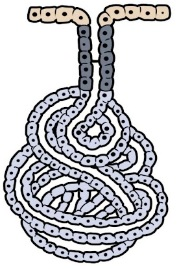
A Tubulosa composta.
B Tubulosa simples ramificada.
C Tubulosa simples enovelada.
D Acinosa composta.
E Acinosa simples.
Questão 579 · Histologia · 4000200727Veja a imagem a seguir, que é uma representação de um tipo de tecido epitelial glandular: Figura: Glândula misteriosa. Fonte: Arquivos Estratégia Med. De acordo com a organização estrutural da porção secretora e do ducto excretor, essa glândula pode ser classificada como:
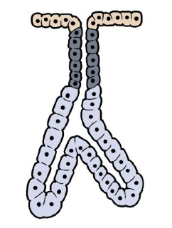
A Acinosa composta.
B Tubulosa simples enovelada.
C Tubulosa simples ramificada.
D Tubulosa composta.
E Acinosa simples.
Questão 580 · Histologia · 4000200726Observe a figura abaixo, que representa um tipo de glândula exócrina do organismo: Figura: Glândula misteriosa. Fonte: Arquivos Estratégia Med. De acordo com a organização estrutural da porção secretora e do ducto excretor, essa glândula pode ser classificada como:
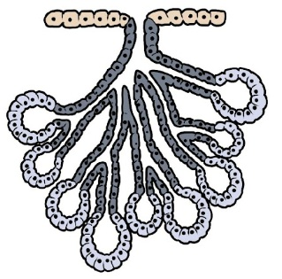
A Tubulosa simples.
B Tubulosa simples enovelada.
C Tubulosa composta.
D Alveolar composta.
E Acinosa simples.
Questão 581 · Histologia · 4000200725Analise atentamente a figura abaixo, que representa um tipo de epitélio glandular: Figura: Glândula misteriosa. Fonte: Arquivos Estratégia Med. De acordo com a organização estrutural da porção secretora e do ducto excretor, essa glândula pode ser classificada como:

A Tubulosa simples.
B Tubulosa composta.
C Tubuloalveolar composta.
D Acinosa simples.
E Alveolar composta.
Questão 582 · Histologia · 4000200724Veja a imagem a seguir, que é uma representação de um tipo de tecido epitelial glandular: Figura: Glândula misteriosa. Fonte: Arquivos Estratégia Med. De acordo com a organização estrutural da porção secretora e do ducto excretor, essa glândula pode ser classificada como:

A Glândula tubulosa simples enovelada.
B Glândula tubulosa composta.
C Glândula tubulosa simples.
D Glândula acinosa composta.
E Glândula acinosa simples.
Questão 583 · Histologia · 4000200723Observe a figura abaixo, que representa um tipo de glândula exócrina do organismo: Figura: Glândula misteriosa. Fonte: Arquivos Estratégia Med. De acordo com a organização estrutural da porção secretora e do ducto excretor, essa glândula pode ser classificada como:
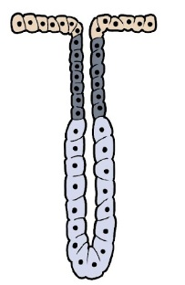
A Tubulosa simples.
B Tubulosa composta.
C Tubuloalveolar composta.
D Acinosa simples.
E Acinosa composta.
Questão 584 · Histologia · 4000200722Analise atentamente a figura abaixo, que representa um mesmo tipo de epitélio de revestimento, em dois diferentes estados: Figura: Epitélio misterioso. Fonte: Arquivos Estratégia Med. O tecido representado pode ser encontrado em qual das estruturas abaixo?
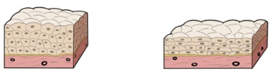
A Brônquio.
B Derme.
C Mucosa vaginal.
D Revestimento interno da tuba uterina.
E Bexiga urinária.
Questão 585 · Histologia · 4000200721Veja a imagem a seguir, que é uma representação de um tipo de tecido epitelial: Figura: Tecido misterioso. Fonte: Arquivos Estratégia Med. O tecido representado pode ser encontrado em qual das estruturas abaixo?
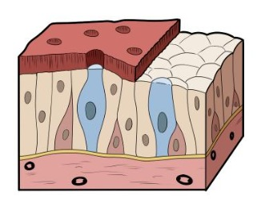
A Traqueia.
B Epiderme.
C Mucosa oral.
D Lúmen intestinal.
E Endotélio.
Questão 586 · Histologia · 4000200720Observe a imagem abaixo, que representa um tipo de tecido epitelial de revestimento: Figura: Tecido misterioso. Fonte: Arquivos Estratégia Med. Assinale a alternativa que classifica corretamente o tecido representado na imagem e menciona uma região do organismo onde ele é encontrado:
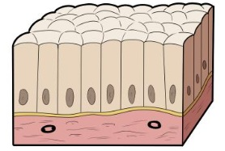
A Tecido epitelial de transição. Encontrado no revestimento interno da bexiga urinária.
B Tecido epitelial de revestimento pseudoestratificado prismático. Encontrado no revestimento interno dos brônquios.
C Tecido epitelial de revestimento simples prismático. Encontrado na parede que forma o lúmen da vesícula biliar.
D Tecido epitelial de revestimento estratificado prismático. Encontrado na conjuntiva do olho.
E Tecido epitelial de revestimento estratificado pavimentoso. Encontrado na mucosa vaginal.
Questão 587 · Histologia · 4000200719Veja a imagem a seguir, que é uma representação de um tipo de tecido epitelial: Figura: Tecido misterioso. Fonte: Arquivos Estratégia Med. Assinale a alternativa que classifica corretamente o tecido representado na imagem e menciona uma região do organismo onde ele é encontrado:

A Tecido epitelial de revestimento simples prismático. Encontrado no revestimento do lúmen intestinal.
B Tecido epitelial de revestimento pseudoestratificado prismático. Encontrado no epitélio da traqueia.
C Tecido epitelial de revestimento simples cuboide. Encontrado no revestimento externo do ovário.
D Tecido epitelial de revestimento estratificado cuboide. Encontrado na parede dos ductos excretores de glândulas exócrinas.
E Tecido epitelial de revestimento pavimentoso simples. Encontrado no mesotélio da pleura.
Questão 588 · Histologia · 4000200718Analise atentamente a figura abaixo, que representa um tipo de epitélio de revestimento: Figura: Epitélio misterioso. Fonte: Arquivos Estratégia Med. Assinale a alternativa que classifica corretamente o tecido representado na imagem e menciona uma região do organismo onde ele é encontrado:

A Tecido epitelial de revestimento estratificado cuboide. Encontrado na parede dos ductos excretores de glândulas exócrinas.
B Tecido epitelial de revestimento simples cuboide. Encontrado na parede dos ductos excretores de glândulas exócrinas.
C Tecido epitelial de revestimento estratificado pavimentoso. Encontrado na epiderme.
D Tecido epitelial de revestimento simples pavimentoso. Encontrado no endotélio (túnica íntima) dos vasos sanguíneos.
E Tecido epitelial de revestimento simples colunar. Encontrado na mucosa intestinal.
Questão 589 · Histologia · 4000200717Veja a imagem a seguir, que é uma representação de um tipo de tecido epitelial: Figura: Epitélio misterioso. Fonte: Arquivos Estratégia Med. Assinale a alternativa que classifica corretamente o tecido representado na imagem e menciona uma região do organismo onde ele é encontrado:
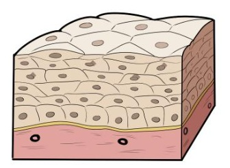
A Tecido epitelial de revestimento simples prismático. Encontrado no revestimento interno das tubas uterinas.
B Tecido epitelial de revestimento pseudoestratificado colunar. Encontrado no epitélio dos brônquios.
C Tecido epitelial de transição. Encontrado na epiderme.
D Tecido epitelial de revestimento simples pavimentoso. Encontrado no mesotélio do peritônio.
E Tecido epitelial de revestimento estratificado pavimentoso. Encontrado na mucosa oral.
Questão 590 · Histologia · 4000200716Observe a imagem abaixo, que representa um tipo de tecido epitelial de revestimento: Figura: Epitélio misterioso. Fonte: Arquivos Estratégia Med. Assinale a alternativa que classifica corretamente o tecido representado na imagem e menciona uma região do organismo onde ele é encontrado:

A Tecido epitelial de revestimento simples pavimentoso. Encontrado no endotélio (túnica íntima) dos vasos sanguíneos.
B Tecido epitelial de revestimento estratificado pavimentoso. Encontrado na derme.
C Tecido epitelial de revestimento simples cuboide. Encontrado na superfície externa do ovário.
D Tecido epitelial de revestimento pseudoestratificado prismático. Encontrado na epiderme.
E Tecido epitelial de revestimento simples prismático. Encontrado no revestimento interno da tuba uterina.
Questão 591 · Histologia · 4000200715Analise as assertivas abaixo e marque aquela que descreve corretamente as principais funções do tecido nervoso:
A O tecido nervoso possui a função de secretar hormônios, sendo o principal componente das glândulas endócrinas.
B O tecido nervoso, composto por neurônios e células da glia, é responsável por receber os estímulos do meio, interpretá-los e coordenar respostas por meio da comunicação com os demais sistemas do organismo.
C O tecido nervoso, considerado uma espécie de tecido epitelial, é aquele formado exclusivamente por neurônios, células diferenciadas especializadas em gerar e conduzir estímulos elétricos.
D O tecido nervoso, formado por neurônios e células da glia, é o principal componente dos órgãos do sistema nervoso central, que coordena os demais sistemas por meio do sistema nervoso periférico, o qual é composto por tecido conjuntivo especializado.
E O tecido nervoso, considerado uma classe especializada de tecido conjuntivo, é um tecido formado exclusivamente por neurônios, que são capazes de interpretar os estímulos do meio, convertê-los em impulsos elétricos e coordenar os demais sistemas para efetuar uma resposta.
Questão 592 · Histologia · 4000200714Qual das alternativas abaixo descreve corretamente as funções do tecido ósseo?
A O tecido ósseo é o principal componente do esqueleto, sendo um tecido pouco vascularizado, nutrido apenas a partir dos vasos que transitam no periósteo.
B O tecido ósseo compõe o esqueleto humano, sendo um tecido pouco ativo metabolicamente, uma vez que constitui uma estrutura rígida e estática que fornece proteção e suporte estrutural aos demais tecidos.
C O tecido ósseo é o tecido que forma o esqueleto humano, cuja função é fornecer proteção física e sustentação ao restante dos tecidos. É composto por osteoblastos, osteoclastos e osteócitos, e encontra-se em contínua remodelação, participando do metabolismo iônico do corpo.
D O tecido ósseo, além de participar da formação do esqueleto, também está presente nas camadas mais profundas da pele, onde confere rigidez a essa barreira de revestimento.
E O tecido ósseo possui funções exclusivamente estruturais, não tendo grande relevância no metabolismo de íons ou na secreção de moléculas orgânicas.
Questão 593 · Histologia · 4000200713Leia atentamente as alternativas abaixo e marque aquela que descreve corretamente as funções do tecido cartilaginoso:
A O tecido cartilaginoso é o principal componente do esqueleto, desde a fase embrionária até a vida adulta, sendo responsável pela rigidez dos ossos.
B O tecido cartilaginoso atua no revestimento externo do corpo, formando a pele de regiões espessas como o nariz e as orelhas.
C O tecido cartilaginoso atua como tecido de sustentação no organismo, nos locais onde é necessário equilíbrio entre rigidez e flexibilidade. Pode ser encontrado na cartilagem auricular, na cartilagem nasal, na traqueia, nos brônquios e nos discos intervertebrais da coluna.
D O tecido cartilaginoso é o responsável pela formação da parede luminal dos vasos sanguíneos, criando um ambiente adequado para a passagem do sangue.
E O tecido cartilaginoso atua na proteção mecânica do corpo, na regulação endócrina do metabolismo e no armazenamento de energia na forma de lipídios.
Questão 594 · Histologia · 4000200712Qual das alternativas abaixo descreve corretamente as funções do tecido adiposo?
A O tecido adiposo é responsável pela geração dos elementos figurados do sangue, sendo encontrado no interior da medula óssea vermelha.
B O tecido adiposo atua na sustentação e no preenchimento do organismo, servindo de suporte para os demais tecidos. É o principal componente da derme cutânea, da submucosa das vísceras e da túnica adventícia dos vasos sanguíneos.
C O tecido adiposo é responsável pela proteção e pelo suporte das partes moles, absorvendo os impactos das superfícies articulares sinoviais e compondo os discos intervertebrais da coluna vertebral e a sínfise púbica do quadril.
D O tecido adiposo se localiza principalmente no esqueleto, onde atua conferindo rigidez aos ossos, devido à sua matriz mineralizada secretada pelos adipócitos.
E O tecido adiposo atua como sítio de armazenamento de energia sob a forma de lipídios, possui função endócrina mediante a secreção de adipocinas, absorve choques mecânicos e age como isolante térmico.
Questão 595 · Histologia · 4000200711Marque a alternativa, entre as fornecidas abaixo, que melhor descreve as funções do tecido muscular:
A O tecido muscular é responsável pela sustentação e pelo preenchimento do organismo, ocupando as lacunas entre os tecidos e dando-os suporte.
B O tecido muscular tem como função principal a geração e a condução de impulsos nervosos, tarefa desempenhada pelas células denominadas neurônios, que compõem esse tecido.
C O tecido muscular é responsável pelo armazenamento de energia sob a forma de lipídios, constituindo a principal reserva energética do organismo em caso de déficit calórico prolongado.
D O tecido muscular é o principal componente do esqueleto, participando da sustentação do corpo, da proteção das partes moles e dos movimentos musculares.
E O tecido muscular tem como função principal produzir movimentos, voluntários ou involuntários, por meio das células contráteis repletas de actina e miosina que compõem esse tecido.
Questão 596 · Histologia · 4000200710Assinale a alternativa que descreve corretamente as principais funções do tecido conjuntivo propriamente dito:
A O tecido conjuntivo propriamente dito tem a função de oferecer sustentação e preenchimento para as estruturas do organismo, como os epitélios, os vasos sanguíneos, os músculos e as vísceras.
B O tecido conjuntivo propriamente dito forma o revestimento externo do organismo, compondo a camada mais superficial da pele, e também o revestimento interno dos órgãos, formando as mucosas.
C O tecido conjuntivo propriamente dito tem a função de gerar e conduzir impulsos nervosos, papel desempenhado pelas células chamadas neurônios que compõem esse tecido.
D O tecido conjuntivo propriamente dito é o principal componente dos músculos, contendo células contráteis repletas de actina e miosina, que realizam os movimentos do organismo.
E O tecido conjuntivo propriamente dito é responsável pela formação dos elementos figurados do sangue, sendo o tecido encontrado na medula óssea vermelha.
Questão 597 · Histologia · 4000200709Qual das alternativas abaixo descreve corretamente as principais funções do tecido epitelial?
A O tecido epitelial é responsável pelo revestimento externo do organismo, pelo revestimento interno dos órgãos dotados de lúmen e pela formação das glândulas, exócrinas ou endócrinas.
B O tecido epitelial é responsável pela sustentação e pelo preenchimento do organismo, compondo a derme cutânea, a submucosa dos órgãos luminais e a túnica adventícia das artérias.
C O tecido epitelial é aquele dotado de capacidade contrátil, e atua produzindo os movimentos do organismo, seja por meio dos músculos esqueléticos ou pela camada muscular das vísceras.
D O tecido epitelial é aquele que está associado à regulação neuronal do organismo, sendo o tecido formado pelos neurônios, células especializadas na geração e na condução de impulsos elétricos.
E O tecido epitelial é responsável pelo armazenamento de energia sob a forma de gordura, atuando também na regulação endócrina por meio da secreção de adipocinas.
Questão 598 · Histologia · 4000200708Observe atentamente a figura abaixo: Figura: Tecido Misterioso. Fonte: Arquivos Estratégia Med. A qual dos tecidos abaixo melhor corresponde a arquitetura tecidual representada na imagem:
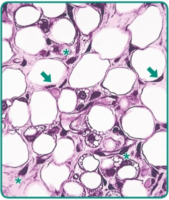
A Tecido conjuntivo propriamente dito.
B Tecido muscular.
C Tecido adiposo.
D Tecido nervoso.
E Tecido epitelial de revestimento.
Questão 599 · Histologia · 4000200707Veja a figura abaixo: Figura: Tecido Z. Fonte: Arquivos Estratégia Med. A qual dos tecidos abaixo corresponde a morfologia representada na imagem:

A Tecido muscular.
B Tecido nervoso.
C Tecido conjuntivo propriamente dito.
D Tecido epitelial glandular.
E Tecido epitelial de revestimento.
Questão 600 · Histologia · 4000200706Observe a figura abaixo: Figura: Tecido Y. Fonte: Arquivos Estratégia Med. A qual dos tecidos abaixo corresponde a estrutura representada na imagem:
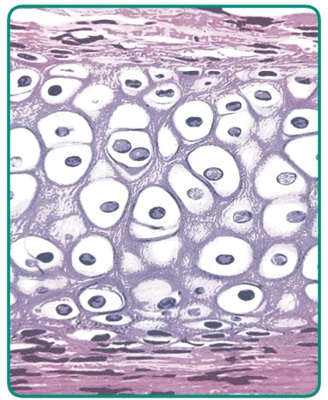
A Tecido adiposo.
B Tecido nervoso.
C Tecido muscular liso.
D Tecido ósseo.
E Tecido cartilaginoso.
Questão 601 · Histologia · 4000200705Observe a figura abaixo: Figura: Tecido X. Fonte: Arquivos Estratégia Med. A qual dos tecidos abaixo corresponde a estrutura representada na imagem:

A Tecido conjuntivo propriamente dito denso não modelado.
B Tecido adiposo.
C Tecido cartilaginoso.
D Tecido ósseo.
E Tecido muscular liso.
Questão 602 · Histologia · 4000200704Leia atentamente a descrição abaixo, relativa a um dos tecidos que compõem o organismo humano: “Tecido composto por células multinucleadas de formado cilíndrico bastante alongado. No interior dessas células, encontramos grande quantidade de bras de actina e miosina, que detêm capacidade contrátil. Os núcleos celulares estão deslocados para a periferia, e não se observa a formação de discos intercalares.” A descrição diz respeito ao:
A Tecido muscular estriado esquelético.
B Tecido muscular estriado cardíaco.
C Tecido muscular liso.
D Tecido adiposo.
E Tecido epitelial de revestimento.
Questão 603 · Histologia · 4000200703Leia a descrição a seguir, referente a um tipo de tecido do organismo: “Tecido composto por um grande número de broblastos e brócitos, bastante espaçados entre si por uma matriz celular abundante. Nessa matriz, há grande quantidade de bras colágenas, que estão dispostas paralelamente entre si, de forma a resistir à tração de maneira unidirecional”. Assinale a alternativa que contém o tecido ao qual a descrição diz respeito:
A Tecido muscular estriado esquelético.
B Tecido epitelial de revestimento.
C Tecido conjuntivo denso não-modelado.
D Tecido conjuntivo denso modelado.
E Tecido conjuntivo frouxo.
Questão 604 · Histologia · 4000200702Veja o parágrafo abaixo, que se refere a um dos tipos de tecidos do organismo: “Tecido formado por múltiplos tipos celulares, com predomínio de broblastos e macrófagos, bastante espaçados entre si por uma abundante matriz extracelular. Essa matriz é composta principalmente por bras colágenas, que predominam sobre todos os outros componentes, orientadas aleatoriamente para resistir à tração em múltiplas direções.” A descrição diz respeito ao:
A Tecido epitelial.
B Tecido conjuntivo denso não-modelado.
C Tecido conjuntivo denso modelado.
D Tecido conjuntivo frouxo.
E Tecido adiposo.
Questão 605 · Histologia · 4000200701Analise a assertiva abaixo, que descreve um dos tecidos do organismo: “Tecido formado por células de diversas linhagens ( broblastos, macrófagos, neutró los) bastante espaçadas entre si, apresentando matriz extracelular abundante. Nessa matriz, encontram-se bras colágenas, substância fundamental e fibras elásticas, sem predomínio claro de um desses componentes sobre o outro.” A descrição se refere ao:
A Tecido epitelial de revestimento.
B Tecido muscular estriado.
C Tecido nervoso.
D Tecido conjuntivo denso modelado.
E Tecido conjuntivo frouxo.
Questão 606 · Histologia · 4000200700Leia a descrição abaixo, referente a um tipo de tecido do organismo: “Tecido formado por células de formato poliédrico, bastante justapostas entre si, com pequena quantidade de matriz extracelular. As células desse tecido, em geral, estão rmemente unidas por junções intercelulares.” A descrição refere diz respeito ao:
A Tecido epitelial.
B Tecido conjuntivo propriamente dito.
C Tecido muscular.
D Tecido nervoso.
E Tecido adiposo.
Questão 607 · SemiologiaPropedêutica Médica · 4000200699Você é chamado para examinar um paciente vítima de transecção completa de medula espinhal a nível de C3, internado em unidade de terapia intensiva. Seu professor informa que o paciente evoluiu com tetraplegia e está respirando com o auxílio de ventilação mecânica. Como se espera que estejam, nesse paciente, os reflexos cutâneo-plantar e cutâneo abdominal?
A Cutâneo-plantar em extensão, cutâneo abdominal aumentado de intensidade.
B Cutâneo-plantar em extensão, cutâneo abdominal abolido.
C Cutâneo-plantar em flexão, cutâneo abdominal aumentado de intensidade.
D Cutâneo-plantar em flexão, cutâneo abdominal abolido.
E Provavelmente ambos os reflexos estão preservados.
Questão 608 · SemiologiaPropedêutica Médica · 4000200698O tônus muscular é uma característica que pode estar alterada em determinados quadros neurológicos, fazendo parte do exame clínico. Qual a mais provável alteração do tônus de um paciente vítima de acidente vascular cerebral extenso do lado esquerdo do córtex?
A Hipotonia no membro superior direito.
B Hipertonia no membro superior direito.
C Hipotonia no membro superior esquerdo.
D Hipertonia no membro superior esquerdo.
E O tônus não sofre influência do córtex.
Questão 609 · SemiologiaPropedêutica Médica · 4000200697Em qual das seguintes situações a pesquisa dos reflexos miotáticos pode auxiliar no diagnóstico diferencial entre duas doenças?
A Diferenciar paresia por lesão medular do corno anterior de lesão da raiz anterior do nervo espinhal.
B Diferenciar paresia por lesão do neurônio motor superior de lesão do neurônio motor superior.
C Diferenciar paresia por lesão de nervo periférico de lesão muscular.
D Diferenciar paresia por lesão de nervo periférico de lesão de plexo nervoso.
E Diferenciar paresia por lesão medular do corno anterior de lesão do nervo periférico.
Questão 610 · SemiologiaPropedêutica Médica · 4000200696Qual das seguintes manobras compatíveis?
A Teste do índex-nariz.
B Avaliação da marcha.
C Teste de diadococinesia.
D Sinal de Romberg.
E Prova de Brudzinski.
Questão 611 · SemiologiaPropedêutica Médica · 4000200695A pesquisa de sensibilidade geral é parte do exame neurológico, e tem como objetivo investigar as vias neurais envolvidas nas transdução dos sentidos. Nesse contexto, assinale a alternativa que correlaciona corretamente o exame de sensibilidade e uma via medular que está sendo testada por ele:
A Pesquisa de sensibilidade térmica – Fascículos grácil e cuneiforme.
B Pesquisa de sensibilidade tátil – Trato vestibuloespinhal.
C Pesquisa de propriocepção consciente – Trato espinotalâmico anterior.
D Pesquisa de sensibilidade vibratória – Trato corticoespinhal lateral.
E Pesquisa de sensibilidade dolorosa – Trato espinotalâmico lateral.
Questão 612 · SemiologiaPropedêutica Médica · 4000200694Imagine que você está acompanhando o ambulatório de Neurologia e o seu preceptor pede para que você avalie a força de exão do cotovelo de um paciente em recuperação pós acidente vascular cerebral. Você observa que o paciente não é capaz de realizar o movimento contra a gravidade, mas consegue exionar o membro quando é colocado deitado sobre uma maca, eliminando a ação da gravidade. Qual é a classificação correta do grau de força muscular desse paciente?
A Grau 0
B Grau 1
C Grau 2
D Grau 3
E Grau 4
Questão 613 · SemiologiaPropedêutica Médica · 4000200693Marque a alternativa que contém duas escalas médicas utilizadas para avaliar o nível de consciência dos pacientes:
A Escala de coma de Glasgow e escala RASS.
B Prova de Laségue e prova de Brudzinski.
C Exame MEEM e exame MoCA.
D Escala RASS e exame MEEM.
E Escala de coma de Glasgow e prova de Brudzinski.
Questão 614 · SemiologiaPropedêutica Médica · 4000200692Quais são os três elementos avaliados pela escala de coma de Glasgow?
A Reflexo fotomotor direto, reflexo fotomotor consensual e resposta motora.
B Atenção, memória e linguagem.
C Cooperatividade, resposta verbal e perfusão periférica.
D Abertura ocular, resposta verbal e resposta motora.
E Reflexo fotomotor direto, memória e perfusão periférica.
Questão 615 · SemiologiaPropedêutica Médica · 4000200691Ao avaliar a integridade do nervo hipoglosso, qual dos seguintes resultados indica lesão do feixe nervoso à direita?
A Protrusão da língua com desvio para a esquerda.
B Protrusão da língua com desvio para a direita.
C Queda do véu palatino à direita.
D Atrofia da língua à esquerda.
E Perda de sensibilidade no lado direito da língua.
Questão 616 · SemiologiaPropedêutica Médica · 4000200690Assinale a alternativa que contém um teste adequado para avaliar a função do nervo acessório, 11º nervo craniano:
A Teste de força do músculo esternocleidomastoideo.
B Protrusão da língua.
C Pesquisa de motricidade ocular.
D Sensibilidade gustativa nos 2/3 anteriores da língua.
E Teste de sensibilidade geral na região da face.
Questão 617 · SemiologiaPropedêutica Médica · 4000200689Qual dos seguintes reflexos integrados do tronco encefálico é ideal para testar a função do nervo vago?
A Reflexo fotomotor direto.
B Reflexo oculocefálico.
C Reflexo mentoniano.
D Reflexo corneopalpebral.
E Reflexo do vômito.
Questão 618 · SemiologiaPropedêutica Médica · 4000200688O nervo glossofaríngeo é o 9º nervo craniano, e está envolvido com o sentido da gustação. Em qual região é mais indicado pesquisar a gustação do paciente com o intuito de avaliar a integridade do nervo glossofaríngeo?
A 1/3 anterior da língua.
B 1/3 médio da língua.
C 1/3 posterior da língua.
D Região da epiglote.
E Qualquer região da língua.
Questão 619 · SemiologiaPropedêutica Médica · 4000200687Qual das seguintes combinações de resultados de testes de audição indica uma surdez de origem neurossensorial no lado esquerdo do paciente avaliado?
A Teste de Rinne: condução aérea dura menos que condução óssea no lado esquerdo, e condução aérea dura mais que condução aérea no lado direito. Teste de Weber: desvio do som para o lado esquerdo. Teste de Schwabach: o examinado continua ouvindo o som por mais tempo que o examinador quando se avalia a orelha esquerda.
B Teste de Rinne: condução aérea dura mais que condução óssea no lado esquerdo, e condução aérea dura menos que condução óssea do lado direito. Teste de Weber: desvio do som para o lado direito. Teste de Schwabach: o examinado continua ouvindo o som por mais tempo que o examinador quando se avalia a orelha direita.
C Teste de Rinne: condução aérea dura mais que condução óssea no lado esquerdo, e condução aérea dura mais que condução óssea do lado direito. Teste de Weber: desvio do som para o lado direito. Teste de Schwabach: o examinado ouve o som por menos tempo que o examinador quando se avalia a orelha esquerda.
D Teste de Rinne: condução aérea dura mais que condução óssea no lado esquerdo, e condução aérea dura mais que condução óssea no lado direito. Teste de Weber: desvio do som para o lado esquerdo. Teste de Schwabach: o examinado ouve o som por menos tempo que o examinador quando se avalia a orelha direita.
E Teste de Rinne: condução aérea dura menos que condução óssea do lado esquerdo, e condução aérea dura menos que condução óssea do lado direito. Teste de Weber: sem desvio do som. Teste de Schwabach: o examinado ouve o som por mais tempo que o examinador bilateralmente.
Questão 620 · SemiologiaPropedêutica Médica · 4000200686Assinale a alternativa que descreve adequadamente o sinal de paralisia do nervo facial:
A Sinal de Bell, paralisia dos músculos da mímica, tanto no andar superior quanto no andar inferior da face.
B Sinal de Bell, paralisia dos músculos da mímica, restrita ao andar inferior da face.
C Sinal de Bell, queda espontânea da mandíbula.
D Sinal de Bell, desvio ipsilateral da protrusão da língua.
E Sinal de Bell, ptose palpebral.
Questão 621 · SemiologiaPropedêutica Médica · 4000200685Qual é o único grupamento muscular da musculatura extrínseca do olho inervado pelo 4º nervo craniano, o nervo troclear?
A Reto medial.
B Reto lateral.
C Reto superior.
D Reto inferior.
E Oblíquo superior.
Questão 622 · SemiologiaPropedêutica Médica · 4000200684Marque a alternativa que contém a principal função do nervo trigêmeo, que é utilizada para avaliar a integridade desse nervo:
A O nervo trigêmeo é o principal responsável pelo sentido da visão. Portanto, utiliza-se os exames de acuidade visual, campo visual e fundoscopia para avaliar esse nervo.
B O nervo trigêmeo é responsável pela audição e equilíbrio, portanto, as avaliações de surdez neurossensorial são utilizadas para testá-lo
C O nervo trigêmeo é o feixe que realiza a inervação parassimpática das vísceras abdominais, contribuindo para função do trato gastrointestinal.
D O nervo trigêmeo é responsável pela sensibilidade geral da cabeça. Portanto, utiliza-se testes de sensibilidade tátil, térmica e dolorosa para avaliar a função desse nervo.
E O nervo trigêmeo é o feixe que realiza a inervação motora da musculatura da mímica, portanto, utiliza-se testes de força muscular desses grupamentos para avaliar o trigêmeo.
Questão 623 · SemiologiaPropedêutica Médica · 4000200683Você é chamado para avaliar um paciente do ambulatório de Neurologia que se apresenta com o seguinte quadro: Qual o nervo craniano que provavelmente está comprometido nesse caso?

A Nervo oculomotor.
B Nervo troclear.
C Nervo trigêmeo.
D Nervo abducente.
E Nervo facial.
Questão 624 · SemiologiaPropedêutica Médica · 4000200682Qual seria o quadro clínico mais provável para uma lesão completa do 3º nervo craniano, o nervo oculomotor?
A Midríase, desvio lateral do olho e ptose palpebral no lado afetado.
B Miose, desvio medial do olho e impossibilidade de fechar a pálpebra no lado afetado.
C Midríase, desvio lateral do olho e impossibilidade de fechar a pálpebra no lado afetado.
D Miose, desvio medial do olho e ptose palpebral no lado afetado.
E Midríase, desvio medial do olho e ptose palpebral no lado afetado.
Questão 625 · SemiologiaPropedêutica Médica · 4000200681Imagine que você está atendendo um paciente, na atenção primária, que chega com queixas relacionadas ao escurecimento da visão. Qual exame pode ser utilizado, naquele momento, para avaliar clinicamente o campo visual desse paciente e identificar escotomas?
A Teste de Jaeger.
B Campimetria de confrontação.
C Teste de Snellen.
D Campimetria computadorizada.
E Fundoscopia.
Questão 626 · SemiologiaPropedêutica Médica · 4000200680Para avaliar o estado do 1º nervo craniano, qual dos sentidos abaixo deve ser testado?
A Gustação.
B Visão.
C Olfato.
D Tato e propriocepção.
E Audição.
Questão 627 · SemiologiaPropedêutica Médica · 4000200679A palpação da glândula tireoide é parte importante do exame físico de cabeça e pescoço. Qual a referência anatômica utilizada para localizar a tireoide?
A Abaixo da cartilagem tireoidea, na linha mediana do pescoço.
B Inferior à cartilagem cricoide, na linha mediana do pescoço.
C Lateral ao músculo esternocleidomastoideo, na região cervical lateral.
D Superior à fúrcula esternal, na linha mediana do pescoço.
E Acima da cartilagem tireoidea, na linha mediana do pescoço.
Questão 628 · SemiologiaPropedêutica Médica · 4000200678Assinale a alternativa que descreve as características de um linfonodo de aspecto normal:
A Tamanho menor que 2 cm, consistência fibroelástica, doloroso à palpação, móvel.
B Tamanho maior que 3 cm, consistência fibroelástica, indolor à palpação, móvel.
C Tamanho menor que 2 cm, consistência pétrea, indolor à palpação, fixo a planos profundos.
D Tamanho maior que 3 cm, consistência pétrea, doloroso à palpação, fixo a planos profundos.
E Tamanho menor que 2 cm, consistência fibroelástica, indolor à palpação, móvel.
Questão 629 · SemiologiaPropedêutica Médica · 4000200677A cavidade oral é cercada por várias glândulas salivares, dispostas ao redor da região. Como é denominada a glândula salivar palpável no ângulo da mandíbula?
A Glândula parótida.
B Glândula sublingual.
C Glândula submandibular.
D Glândula salivar maior.
E Glândula retromandibular.
Questão 630 · SemiologiaPropedêutica Médica · 4000200676Qual das seguintes cadeias linfonodais
A Linfonodos inguinais.
B Linfonodos occipitais.
C Linfonodos retroauriculares.
D Linfonodos submandibulares.
E Linfonodos cervicais anteriores.
Questão 631 · SemiologiaPropedêutica Médica · 4000200675Marque a alternativa que cita corretamente a referência anatômica utilizada para localizar as cadeias ganglionares submentonianas:
A Mandíbula.
B Maxila.
C Orelha.
D Osso frontal.
E Osso zigomático.
Questão 632 · SemiologiaPropedêutica Médica · 4000200674Marque a alternativa que cita corretamente a referência anatômica utilizada para localizar as cadeias ganglionares cervicais:
A Osso hioide.
B Músculos escalenos.
C Artérias carótidas.
D Músculo esternocleidomastoideo.
E Cartilagem cricoide.
Questão 633 · SemiologiaPropedêutica Médica · 4000200673Ao examinar um paciente no Pronto Socorro, você observa a presença de hiperemia de orofaringe, associada a exsudato purulento na região das tonsilas palatinas e febre há 3 dias. Esse quadro é mais sugestivo de qual das patologias abaixo?
A Neoplasia de garganta.
B Quadro alérgico.
C Processo infeccioso.
D Irritação por agentes químicos.
E Morfologia normal, sem doenças.
Questão 634 · SemiologiaPropedêutica Médica · 4000200672A presença de palpação e de percussão dolorosas dos seios maxilares e frontais sugere qual das seguintes doenças:
A Rinite.
B Sinusite.
C Faringite.
D Tireoidite.
E Estomatite aftosa.
Questão 635 · SemiologiaPropedêutica Médica · 4000200671Em qual região da cabeça é mais indicado pesquisar edema decorrente de condições sistêmicas (ex.: hipervolemia, hipoalbuminemia) em pacientes adultos?
A Lábios.
B Região malar.
C Asa do nariz.
D Região palpebral.
E Couro cabeludo
Questão 636 · SemiologiaPropedêutica Médica · 4000200670Assinale a alternativa que melhor descreve o conceito de “fácies” no contexto do exame clínico:
A Fácies são conjuntos de alterações da estrutura ou da expressão facial dos pacientes que caracterizam uma determinada situação patológica.
B Fácies são alterações da pigmentação da pele na região do rosto.
C Fácies são erupções de origem alérgica na face ou no tronco dos pacientes, indicativas da quadros de hipersensibilidade.
D Fácies são características que indicam para o médico o nível de consciência e cooperatividade do paciente. Devem ser anotadas por extenso no prontuário para facilitar a comunicação entre os cuidadores.
E Fácies são um tipo de lesão elementar dermatológica.
Questão 637 · Anatomia do Sistema Digestório · 4000200669O reto é a última porção do intestino grosso, sobre sua anatomia, assinale a alternativa correta, após julgar as sentenças em verdadeiro ou falso:
A O reto, assim como todas as outras porções do cólon, é recoberto pelos apêndices epiploicos;
B O reto é completamente intraperitoneal;
C A ampola retal é a parte mais estreita do reto, não tendo papel importante na continência fecal, pois armazena pequena quantidade de fezes;
D A capacidade de dilatação do reto, tanto no sexo feminino quanto masculino, ocorre pelas reflexões laterais do peritônio que envolve o seu terço superior, formando a fossas pararretais.
E Nos homens e nas mulheres, a reflexão do peritônio do reto para a parte posterior da bexiga forma a escavação retovesical.
Questão 638 · Anatomia do Sistema Digestório · 4000200668Uma mulher de 52 anos foi assaltada na rua, e após reagir, recebeu uma faca a nível do epigástrio. Qual das estruturas abaixo tem menor probabilidade de ser lesada?
A Duodeno;
B Fígado;
C Pâncreas;
D Estômago;
E Rim direito.
Questão 639 · Anatomia do Sistema Digestório · 4000200667A divisão anatômica do abdome em quadrantes e segmentos é essencial para sabermos os órgãos que estão localizados nesses regiões, no momento da realização do exame físico. Sobre a divisão do abdome, assinale a alternativa correta:
A A divisão do abdome em quadrante é feita trançando uma linha vertical central ao nível da linha alba e uma linha horizontal ao nível das espinhas ilíacas anterossuperiores.
B A divisão em segmentos é feita a partir de duas linhas horizontais e duas verticais. As horizontais ficam ao nível da cicatriz umbilical e uma linha subcostal, abaixo da 10ª costela;
C A divisão em segmentos é feita a partir de 2 linhas horizontais e duas verticais. As verticais são as linhas hemiclavicular direita e esquerda.
D Na descrição do exame físico, a divisão por quadrante traz mais informações do que a divisão por segmentos;
E Na divisão por seguimentos, levando em consideração a posição anatômica temos do lado esquerdo, de cima para baixo: o hipocôndrio esquerdo, o mesogástrio e a fossa ilíaca esquerda;
Questão 640 · Anatomia do Sistema Digestório · 4000200666Sobre a vascularização do intestino grosso, assinale a alternativa correta:
A O cólon é irrigado pelas artérias cólicas direita, média e esquerda, todas ramos da artéria mesentérica superior (AMS);
B O cólon transverso possui irrigação provinda tanto da AMS, quanto da artéria mesentérica inferior (AMI);
C O reto possui irrigação provinda exclusivamente da AMI;
D A AMS é o ramo principal do tronco celíaco, enquanto a AMI é ramo direito da aorta abdominal;
E A artéria cólica direita é ramo da AMS, enquanto as artérias cólicas média e esquerda são ramos da AMI.
Questão 641 · Anatomia do Sistema Digestório · 4000200665Sobre a inervação da vesícula biliar e do ducto cístico, julgue os itens como verdadeiros ou falsos e assinale a alternativa correta: 1) O nervo frênico direito emite bras aferentes somáticas que causam a sensação de dor quando á inflamação da vesícula biliar; 2) O nervo vago é o responsável pelo estímulo parassimpático; 3) A colecistoquinina gera estímulos simpáticos que causa a contração da vesícula biliar e o relaxamento dos músculos que envolvem a papila duodenal, de forma que a bile flui para o duodeno;
A V-F-F
B V-F-V
C V-V-V
D F-V-F
E V-V-F
Questão 642 · Anatomia do Sistema Digestório · 4000200664Sobre a anatomia da vesícula biliar, assinale a alternativa correta:
A A vesícula biliar está localizada na face visceral do fígado e posterior à porção do duodeno;
B A vesícula biliar é dividida em três partes: fundo, corpo e colo; sendo que o fundo é considerada a parte principal;
C O ducto cístico une o fundo da vesícula ao ducto hepático comum para formar o ducto colédoco;
D A artéria cística irriga a vesícula biliar e o ducto cístico, e pode ser vista no espaço chamado triângulo de Calot, delimitado pelo ducto hepático comum, ducto cístico a face ventral do fígado;
E A drenagem linfática da vesícula biliar é feita a partir dos linfonodos vesiculares.
Questão 643 · Anatomia do Sistema Digestório · 4000200663JHS, 22 anos, estava atravessando a rua quando foi atropelado por uma moto, a qual colidiu com o lado esquerdo do seu tronco. Prontamente, o SAMU foi acionado e levou o paciente para o hospital de referência em traumatologia mais próximo. Na sala de trauma, foi feito uma Ultrassonogra a (USG) FAST, que mostrou a presença de líquido do espaço esplenorrenal e o paciente foi encaminhado para a cirurgia. Sobre o caso a seguir, assinale a alternativa correta:
A Caso o baço apenas o baço tenha sido acometido, é improvável que esse paciente esteja em choque hipovolêmico;
B Devido a ausência de relação anatômica entre os órgão, podemos afirmar que esse paciente muito provavelmente não apresentou lesão do estômago;
C As costelas, apesar de serem um arcabouço ósseo protetor para o baço, nesse caso relatado, podem funcionar como arma branca, agravando a lesão.
D Devido à grande resistência e espessura da cápsula fibrosa do baço, ele é um órgão difícil de ser lesado;
E A artéria esplênica é o menor ramo do tronco celíaco, por isso sua lesão não geral sangramento relevantes.
Questão 644 · Anatomia do Sistema Digestório · 4000200662Sobre a anatomia do baço, suas relações anatômicas e suas funções e suas funções, assinale a alternativa correta:
A Por ter função hematopoiética na vida adulta, bem como órgão linfoide, o baço é considerado um órgão vital;
B O baço é considerado um dos órgãos mais resistentes do abdome, por isso, não é um dos mais afetados em pacientes com trauma abdominal;
C O baço é um órgão que, por se muito vascularizado, se expande facilmente, processo que é chamado de hiperesplenismo;
D O baço está apoiado na flexura esplênica do cólon, estando posterior e protegido da X a XII costelas;
E O baço é praticamente todo revestido por peritônio, exceto seu hilo, local de onde saem a artéria e a veia esplênica.
Questão 645 · Anatomia do Sistema Digestório · 4000200661Sobre a anatomia do pâncreas e as funções, assinale a alternativa correta:
A O pâncreas possui uma função exócrina que se reflete na produção de glucagon e insulina, bem como uma função endócrina, produzindo o suco pancreático;
B A cabeça do pâncreas é circundada pelo duodeno e está apoiada posteriormente em vasos nobres, como a veia cava inferior;
C O processo uncinado do pâncreas é uma projeção do corpo pancreático e está à esquerda da artéria mesentérica superior;
D O pâncreas é considerado um órgão intraperitoneal;
E O esfíncter de Oddi é o músculo que tem maior participação no controle da passagem da bile para duodeno.
Questão 646 · Anatomia do Sistema Digestório · 4000200660A bile é uma secreção amarelo-acastanhada ou verde que auxilia na emulsão das gorduras. Acerca da sua produção e seu fluxo, assinale a alternativa correta:
A A bile é produzida pela vesícula biliar e de lá segue para o duodeno;
B A bile é armazenada pela vesícula biliar e produzida no fígado, processo que ocorre durante a mastigação;
C A bile sai da vesícula biliar através do ducto colédoco, de onde é levada até o duodeno;
D A vesícula biliar armazena a bile e a libera para o duodeno no momento que o alimento chega até essa região.
E A bile chega ao duodeno quando o colédoco compõe, junto com o ducto pancreático principal, a ampola de Wirsung, onde se encontra esfíncter de Oddi.
Questão 647 · Anatomia do Sistema Digestório · 4000200659Acerca do ceco e suas estruturas, marque a alternativa correta: 1) O ceco é praticamente todo revestido por peritônio; 2) A válvula ileocecal marca a transição do intestino delgado para o intestino grosso e permite o re uxo do conteúdo do cólon para o jejuno; 3) O ceco não possui grande capacidade de distensibilidade, sendo difícil de ser avaliado no exame físico. 4) Apesar de a válvula ileocecal não possui função es ncteriana, o óstio ileal possui uma contração tônica que caracteriza pela a papila ileal, a qual atual como válvula unidirecional.
A V-F-F-V
B F-F-V-V
C F-F-F-V
D V-F-F-V
E V-F-F-F
Questão 648 · Anatomia do Sistema Digestório · 4000200658MAS, 27 anos, sexo feminino, dá entrada na emergência com queixa de dor abdominal difusa há 2 dias, sendo que á 1 dia passou a estar mais localizada em fossa ilíaca direita, associada a perda de apetite, vômitos e 2 episódios de febre mensurados em 38ºC. Ao exame físico, apesentava o sinal de Blumberg positivo, sendo posteriormente realizada à Tomogra a Computadorizada de abdome com contraste e rmado o diagnóstico de Apendicite Aguda. Com relação ao apêndice vermiforme, assinale a alternativa correta:
A O apêndice é um divertículo cego, que sempre se origina da face anterior do ceco;
B O apêndice não é recoberto por meso, sendo uma continuação do ceco, sem que seja necessária sua fixação;
C O apêndice cecal apresenta variações em sua posição, o que pode gerar apresentações clínicas diferentes, bem como abordagens cirúrgicas variáveis;
D A irrigação do apêndice é feita diretamente pela artéria ileocólica, ramo terminal da artéria mesentérica superior;
E O apêndice, em geral, localiza-se acima da junção ileocecal.
Questão 649 · Anatomia do Sistema Digestório · 4000200657O intestino grosso (cólon) tem por função absorver o conteúdo do quimo líquido, convertendo-o em fezes semissólidas. Acerca da sua anatomia, assinale a alternativa correta:
A O intestino grosso é dividido nas seguintes partes, por ordem: apêndice vermiforme, cólon sigmoide, ascendente, transverso, descendente, esquerdo, ceco, reto e canal anal.
B Os apêndices omentais são pequenas projeções de gordura distribuídas ao longo do cólon.
C As tênias do cólon são faixas circulares (transversais), sendo em número de três: a mesocólica, a omental e livre;
D As saculações estão restritas ao cólon transverso, não estando presentes nos cólons ascendente e descendente;
E A tênia livre está fixada aos mesocolos transverso e sigmoide.
Questão 650 · Anatomia do Sistema Digestório · 4000200656Sobre a inervação do intestino delgado e sua função, assinale a alternativa correta:
A A estimulação simpática promove vasodilatação e diminuição da atividade secretória intestinal.
B O sistema parassimpático está ativado em situações de luta ou fuga, aumentando a atividade peristáltica.
C Ao ser estimulado, sistema simpático promove diminuição da atividade secretória intestinal, bem como do peristaltismo.
D O sistema parassimpático promove vasodilatação e diminuição da atividade secretória intestinal.
E O intestino é insensível tanto a estímulos dolorosos, quanto à distensão.
Questão 651 · Anatomia do Sistema Digestório · 4000200655Durante uma cirurgia abdominal de grande porte, como a laparotomia exploratória, o cirurgião precisa identi car marcos anatômicos que diferenciam o jejuno e o íleo. Acerca das características dessas vísceras no corpo humano vivo, assinale a alternativa correta:
A Jejuno: cor vermelho-vivo, mais gordura no mesentério e poucas placas Peyer;
B Íleo: menos gordura no mesentério, cor rósea e muitas placas de Peyer;
C Jejuno: cor vermelho vivo, e muita gordura no mesentério, muitas placas de Peyer;
D Íleo: cor vermelho vivo, menos gordura no mesentério e mais placas de Peyer;
E Jejuno: cor vermelho vivo, menos gordura do mesentério e poucas placas de Peyer.
Questão 652 · Anatomia do Sistema Digestório · 4000200654Ao avaliar as fotos abaixo, assinale a alternativa que contempla o processo que está acontecendo e uma consequência desse processo.
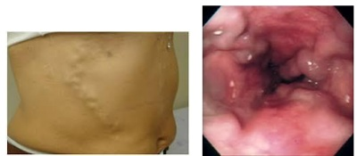
A Neovascularização abdominal e surgimento de câncer;
B Hipertensão portal e sangramento digestivo;
C Neovascularização abdominal e trombose;
D Hipertensão portal e surgimento de câncer;
E Compressão de veia cava superior e trombose.
Questão 653 · Anatomia do Sistema Digestório · 4000200653A circulação sanguínea do abdome é complexa, envolvendo veias e artérias calibrosas, responsáveis pela vascularização de órgãos nobres. Sobre esses sistemas, assinale alternativa correta:
A Artéria aorta abdominal possui 3 ramos anteriores: o tronco celíaco, a artéria mesentérica superior e artéria mesentérica inferior;
B A veia porta é formada pela junção da veia esplênica e da veia mesentérica superior, sendo responsável por 20-25% do suprimento sanguíneo hepático;
C Os ramos do tronco celíaco são: artéria gástrica esquerda, artéria hepática comum e artéria sacral mediana;
D Mesmo com a existência dos
E A artéria esplênica é ramo direto da aorta abdominal, seguindo para irrigar o baço.
Questão 654 · Anatomia do Sistema Digestório · 4000200652Um paciente de 55 anos, portador de cirrose por ingestão crônica de álcool, entre no Pronto Socorro com relato de 2 episódios de hematêmese. O médico de plantão indicou a realização de uma Endoscopia Digestiva Alta (EDA), justi cando que esse era um quadro de Hemorragia Digestiva Alta (HDA) e que, por isso, o sangramento ocorreu antes da transição duodenojejunal. Qual o marco anatômico, delimita essa transição?
A Ângulo de Louis;
B Ligamento de Cooper;
C Valva de Estáquio;
D Ângulo de Treitz;
E Alça de Henle.
Questão 655 · Anatomia do Sistema Digestório · 4000200651Ao ser realizada uma Endoscopia Digestiva Alta, a única parte do intestino delgado que é possível de ser explorada é o duodeno. Acerca dessa estrutura, assinale a alternativa correta:
A A parte final do duodeno é conhecida como bulbo duodenal, se conectando então com o jejuno;
B Na segunda porção do duodeno (descendente), está a ampola de Vater, local onde se juntam o ducto pancreático principal e o ducto pancreático acessório;
C O duodeno possui intima relação com a cabeça do pâncreas, de forma a “abraçar” essa estrutura. Tal fato possui implicações importantes em determinadas cirurgias.
D A terceira porção do duodeno está localizada inferiormente à cauda do pâncreas.
E Com exceção da 2ª porção, o duodeno é totalmente retroperitoneal.
Questão 656 · Anatomia do Sistema Digestório · 4000200650O estômago é um órgão de extensa vascularização. Assinale a alternativa que contém a correlação correta entre a letra e artéria.
A X – artéria hepática comum;
B Y – artéria esplênica;
C Z – artéria mesentérica superior;
D W – artéria gastroduodenal;
E K – artéria gastromental direita
Questão 657 · Anatomia do Sistema Digestório · 4000200649O estômago possui relação com diversos órgãos da cavidade abdominal. Assinale a alternativa que contempla corretamente essa relação:
A Anteriormente, o estômago se relaciona com o lobo hepático esquerdo, a parede anterior do abdome e diafragma;
B Posteriormente, o estômago se relaciona com a bolsa omental, o pâncreas e o rim esquerdo;
C O estômago não possui nenhuma relação com intestino grosso;
D O estômago, em sua maior parte, é o um órgão extra-peritoneal;
E Apesar de ter contato com o lobo hepático esquerdo, o estômago não tem contato com o baço.
Questão 658 · Anatomia do Sistema Digestório · 4000200648Atualmente entende-se que a obesidade é um dos maiores problemas de saúde na sociedade em que vivemos. Diante disso, existem diversas técnicas cirúrgicas feitas para o controle dessa condição, a chamada “cirurgia bariátrica”. A maioria dessas cirurgias envolve formas diferentes de realizar uma gastrectomia, com diversas variações. Sobre a anatomia do estômago, assinale a alternativa correta:
A A incisura angular é um ângulo formado pela inserção do esôfago no antro;
B O fundo gástrico é a principal e maior porção do estômago;
C O piloro é a porção final do estômago, onde ocorre a massagem do quimo para o intestino delgado;
D A chamada parte pilórica do estômago é a junção do corpo gástrico com o piloro;
E O antro é gástrico é a parte mais afunilada do estômago.
Questão 659 · Anatomia do Sistema Digestório · 4000200647Durante a realização de uma Endoscopia Digestiva Alta (EDA), o endoscopista precisa identi car alguns marcos anatômicos para avaliar qual porção do trato gastrointestinal ele está avaliando. Quando ele avista a linha Z, qual desses marco ele está observando?
A Transição da cavidade oral para o esôfago;
B Junção esofagogástrica;
C Junção piloroduodenal;
D Transição do bulbo para a 2ª porção do duodeno;
E Transição do esôfago cervical para torácica.
Questão 660 · Anatomia do Sistema Digestório · 4000200646O esôfago é um órgão do sistema digestório que tem função majoritária na transferência dos alimentos para o estômago, fazendo a sua comunicação com a cavidade oral. Acerca da anatomia e funcionamento do esôfago, assinale a alternativa correta:
A O esôfago é um tubo muscular que permanece aberto durante todo o tempo, independente da passagem de alimentos;
B O esôfago é um órgão que se estende por 2 regiões do corpo: a região cervical e a região torácica;
C O esfíncter esofagiano superior é composto pela parte cricofaríngea do músculo constritor inferior da faringe, e sua disfunção é responsável pelos principais sintomas da Doença do Refluxo Gastroesofágico;
D O alimento chega da cavidade oral ao estômago em pouco segundos, impulsionado especialmente pela ação da gravidade;
E A parte extrínseca do esfíncter esofagiano inferior é composta pelo pilar direito do diafragma, e possui função no controle do refluxo do conteúdo gástrico, através da sua contração e relaxamento.
Questão 661 · Sistema Endócrino · 4000200645Um paciente de 36 anos comparece a uma consulta ambulatorial relatando que precisou comprar três pares de tênis no último ano. Ele pratica corrida de rua e observou um aumento no tamanho dos seus pés, o que o levou a adquirir calçados maiores. Além disso, menciona ter precisado trocar o anel de casamento por este ter se cado apertado. Ao conversar com amigos, ele suspeita que essas mudanças possam ser efeitos temporários do uso de suplementos como whey protein e creatina. Além disso, refere apresentar sonolência diurna e dores nas articulações mais frequentes. Atribui essas queixas a rotina do trabalho e ao aumento de treinos na academia. O médico realizou exames que evidenciaram a presença de um tumor. Em qual órgão é mais esperado a presença de tumor e quais resultados de exame são esperados ao paciente?
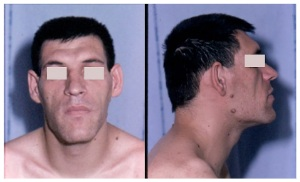
A Hipófise; GH aumentado; HbA1C: 5%
B Hipotálamo; IGF1 aumentado; HbA1C: 9%
C Hipófise; IGF1 aumentado; HbA1C: 9%
D Hipotálamo; GH aumentado; Hb1AC: 5%
E Fígado; IGF1 aumentado; HbA1C: 9%
Revisar: possível letra faltando em enunciado
Questão 662 · Sistema Endócrino · 4000200644No processo de produção dos hormônios tireoidianos pela glândula tireoide, há produção de dois hormônios: o T3 (triiodotironina) e o T4 (tiroxina). Sobre a diferença entre ambos, que afirmativa está correta?
A Apenas o T3 ligado a TBG (
B Uma vez dentro da célula, T4 é predominantemente transformado em T3 reverso (rT3) pela 5- deiodinase
C O T3 se liga a receptores nucleares com maior afinidade que o T4
D T4 é a forma mais ativa com meia vida de 24 a 48 horas
Questão 663 · Sistema Endócrino · 4000200643Um rapaz de 23 anos é levado à sala de emergência com rebaixamento do nível de consciência, febre e cefaleia há dois dias. Ele está torporoso e não consegue fornecer muitas informações sobre seu histórico médico. Seu amigo relata que ele estava sofrendo de cefaleia intensa e febre nos últimos dois dias, com piora significativa hoje. Os sinais vitais do paciente são: temperatura de 39,3 ºC, frequência cardíaca de 128 bpm e pressão arterial de 76x54 mmHg. Durante o exame físico, observa-se uma erupção cutânea purpúrica difusa, pele fria e pegajosa, e rigidez de nuca. Os resultados dos exames laboratoriais mostram níveis baixos de sódio (Na+), altos de potássio (K+), hipocloridria (Cl-), baixo bicarbonato, alta creatinina e baixa glicose. O hemograma revela baixa hemoglobina, leucocitose e trombocitopenia. Após uma hidratação venosa vigorosa, o paciente continua hipotenso e é observado sangramento espontâneo no local da punção venosa. Além de um quadro séptico, qual é o provável quadro sindrômico do paciente e qual é o provável achado na bacterioscopia da hemocultura?
A Insuficiência adrenal central; bacilo gram-negativo
B Insuficiência adrenal periférica; bacilo gram-negativo
C Insuficiência adrenal periférica; diplococo gram-negativo
D Insuficiência adrenal central; diplococo gram-positivo
E Fadiga adrenal; cocos gram-positivos em cachos
Questão 664 · Sistema Endócrino · 4000200642Uma mulher de 33 anos comparece ao consultório com queixa de amenorreia e perda de libido. Ela atribui esses sintomas ao estresse de sua rotina desgastante. Antes desse quadro, que começou há 1 ano, ela tinha ciclos menstruais regulares. Além disso, ela percebeu a saída espontânea de leite pelos seios, o que a constrange em algumas situações sociais, e relata uma alteração visual que não consegue descrever com precisão. Os sinais vitais e o exame físico da paciente estão dentro dos limites normais. Após avaliação, o médico identifica uma alteração laboratorial significativa e encaminha a paciente para avaliação oftalmológica. Qual alteração foi encontrada pelo oftalmologista, qual órgão está afetado e qual hormônio teve a alteração laboratorial?
A Hemianopsia bitemporal; adeno-hipófise; vasopressina
B Hemianopsia homônima; neuro-hipófise; prolactina
C Escotomas cintilantes; adeno-hipófise; prolactina
D Hemianopsia homônima; neuro-hipófise; vasopressina
E Hemianopsia bitemporal; adeno-hipófise; prolactina
Questão 665 · Sistema Endócrino · 4000200641Uma mulher de 36 anos comparece ao consultório com queixa de amenorreia e incapacidade de produzir leite. Ela relata ter tido um parto complicado há 7 meses, durante o qual recebeu quatro bolsas de sangue e foi internada na terapia intensiva pós-parto. Durante a investigação, foram observados baixos níveis de LH e FSH, bem como outros hormônios. Qual o nome da condição apresentada pela paciente e o órgão afetado?
A Síndrome de Sheehan; hipófise incapaz de produzir hormônios, resultando em amenorreia e agalactia.
B Síndrome de Kallmann; alteração na migração dos neurônios hipotalâmicos e no olfato, resultando em hipogonadismo hipogonadotrófico.
C Síndrome de Asherman; alteração nos ovários que leva à produção hormonal inadequada, resultando em amenorreia e agalactia.
D Síndrome de Sheehan; necrose hipofisária que causa hipopituitarismo com hipogonadismo hipogonadotrófico.
E Síndrome de Sheehan; necrose hemorrágica dos ovários que leva ao hipogonadismo hipogonadotrófico, caracterizado pelos baixos níveis de estradiol, LH e FSH.
Questão 666 · Sistema Endócrino · 4000200640Um homem de 50 anos comparece à consulta médica com queixa de rouquidão. O paciente foi diagnosticado com neoplasia da tireoide durante investigação e é indicada a realização de uma tireoidectomia total cirúrgica. Após o procedimento cirúrgico, o paciente apresenta parestesia perioral, parestesia nas mãos e nos pés, juntamente com os achados clínicos abaixo: Dentre as alternativas a seguir, qual descreve corretamente o contexto clínico, os achados de exame e os nomes dos sinais observados?

A Hipoparatireoidismo; Cálcio elevado; Fósforo baixo
B Hipotireoidismo; Cálcio baixo; Fósforo elevado
C Hipotireoidismo; Cálcio elevado; Fósforo baixo
D Hipoparatireoidismo; Cálcio baixo; Fósforo elevado
E Hipoparatireoidismo; Cálcio baixo; Fósforo baixo
Questão 667 · Sistema Endócrino · 4000200639Um homem de 50 anos comparece à consulta médica com queixa de rouquidão. O paciente foi diagnosticado com neoplasia da tireoide há 1 mês e foi submetido a uma tireoidectomia total. Após o procedimento, ele inicialmente atribuiu a rouquidão como um efeito temporário da cirurgia. No entanto, como os sintomas persistiram, ele resolveu buscar atendimento médico. Os sinais vitais estão normais. A força e sensibilidade da cabeça e do pescoço estão sem alterações. O exame cardiopulmonar não apresenta alterações. A laringoscopia direta revela paralisia das cordas vocais à direita. Qual é a principal explicação para os sintomas do paciente?
A Lesão do ramo interno do nervo laríngeo superior direito durante a dissecção da artéria tireoidea superior.
B Lesão do ramo externo do nervo laríngeo superior direito durante a dissecção da artéria tireoidea inferior.
C Lesão do nervo laríngeo recorrente direito durante a dissecção da artéria tireoidea superior.
D Lesão do ramo externo do nervo laríngeo superior durante a dissecção da artéria tireoidea superior.
E Lesão do nervo laríngeo recorrente direito durante a dissecção da artéria tireoidea inferior.
Questão 668 · Sistema Endócrino · 4000200638Uma paciente de 23 anos comparece ao consultório médico com queixas de palpitação, agitação, ansiedade e perda de peso de 4 kg nos últimos três meses, além de apresentar um quadro de diarreia. Ela nega antecedentes relevantes ou outros sintomas significativos. Durante o exame físico, a paciente apresenta temperatura de 37,3°C, frequência cardíaca de 112 bpm e pressão arterial de 152x68 mmHg. Com base nos sintomas e sinais clínicos, o médico decide solicitar exames laboratoriais, que revelam os seguintes resultados: hemoglobina (Hb) 12,8 g/dL, leucócitos 7.020/mm³, velocidade de hemossedimentação (VHS) 36 mm/h, hormônio estimulante da tireoide (TSH) < 0,01 mIU/L, tiroxina livre (T4 livre) 5,2 ng/dL e resultado positivo para anticorpos anti-receptor de TSH (TRAb). Posteriormente, é realizada uma cintilografia com iodo marcado, que demonstra alta captação. Veja este achado ao exame físico: Diante desse quadro clínico, qual dos mecanismos de ação a seguir será utilizado pelo medicamento indicado para o tratamento dessa situação clínica?

A Inibir a atividade da tireoide peroxidase (TPO).
B Bloqueio do receptor beta-adrenérgico.
C Anticorpo anti-receptor de TSH (TRAb).
D Inibição da COX-1 e COX-2.
E Inibição da fosfolipase A2.
Questão 669 · Sistema Endócrino · 4000200637Uma paciente de 23 anos procura o pronto-socorro com queixas de palpitação, agitação e perda de peso de aproximadamente 4 kg nas últimas duas semanas. Ela relata ter tido um episódio gripal cerca de três semanas atrás, com resolução dos sintomas respiratórios, mas ainda apresenta odinofagia persistente e está em dúvida se teve febre nos últimos dias. Não possui antecedentes pessoais relevantes. Durante o exame físico, apresenta temperatura de 37,3 °C, frequência cardíaca de 112 bpm e dor à palpação do pescoço. Diante desses sintomas e sinais clínicos, o médico decide solicitar exames laboratoriais, que revelam os seguintes resultados: hemoglobina (Hb) 10,8 g/dL, leucócitos 7.020/mm³, velocidade de hemossedimentação (VHS) 110 mm/h (valor alto), hormônio estimulante da tireoide (TSH) < 0,01 mIU/L (valor baixo) e tiroxina livre (T4 livre) 5,2 ng/dL (valor alto). Posteriormente, é realizada uma cintilogra a com iodo marcado, que evidencia baixa captação. Diante desse quadro clínico, qual dos mecanismos de ação a seguir é utilizado pelo medicamento indicado para o tratamento dessa situação clínica?
A Inibição da atividade da tireoide peroxidase (TPO).
B Bloqueio do receptor beta-adrenérgico.
C Bloqueio do receptor alfa-adrenérgico.
D Inibição da produção de parede celular.
E Inibição da atividade da topoisomerase II.
Questão 670 · Sistema Endócrino · 4000200636Uma paciente de 54 anos comparece a uma consulta de rotina com queixas de dor bilateral nos joelhos, que a deixaram mais sedentária desde sua última visita. Além disso, ela relata um ganho de peso de 9 kg no último ano, associado ao sedentarismo e ao consumo de alimentos condimentados. A paciente possui antecedentes de osteoartrite, obesidade e hipertensão arterial sistêmica. Está em uso de anlodipino e anti-inflamatórios não esteroides (AINEs). Na história familiar, destaca-se que o pai da paciente sofreu recentemente um infarto agudo do miocárdio. Durante o exame físico, a paciente encontra-se afebril, com frequência cardíaca de 85 bpm, frequência respiratória de 18 irpm e pressão arterial de 142x86 mmHg. Seu índice de massa corporal (IMC) é de 36 kg/m², com circunferência abdominal de 92 cm. Além disso, foram realizados exames laboratoriais que apresentaram os seguintes resultados: sódio (Na+) 134 mmol/L, potássio (K+) 4,2 mmol/L, cloreto (Cl-) 98 mmol/L, bicarbonato (HCO3-) 24 mmol/L, ureia 48 mg/dL, creatinina 0,8 mg/dL, glicemia de jejum 116 mg/dL, triglicerídeos 148 mg/dL e colesterol total 188 mg/dL (LDL 140 mg/dL, HDL 48 mg/dL). Veja este achado ao exame físico: Das condições abaixo, qual mais provavelmente a paciente apresenta:

A Diabetes insipidus
B Hemocromatose Hereditária
C Insuficiência adrenal
D Diabetes mellitus
E Síndrome Metabólica
Questão 671 · Sistema Endócrino · 4000200635Uma paciente de 49 anos do sexo feminino vem ao consultório por queixa de ganho de peso progressivo e fadiga há 2 meses. Ela não consegue mais realizar as atividades de casa por fraqueza. Sem antecedentes pessoais dignos de nota. Temperatura axilar: 37 graus celsius, frequência cardíaca de 84 batimentos por minuto, pressão arterial de 166x96 mmHg. No exame físico, observamos equimoses difusas e fraqueza de caráter proximal. Na investigação, temos como exames laboratoriais: cortisol em urina de 24 horas aumentado e ACTH reduzido. Na TC abdominal, encontrado um tumor na glândula adrenal direita. Avaliando a glândula adrenal esquerda, em que região encontraríamos o maior grau de atrofia?

A A
B B
C C
D D
E E
Questão 672 · Sistema Endócrino · 4000200634Um estudo a respeito do desenvolvimento das características sexuais secundárias do sexo feminino é realizado. É demonstrado que alterações como pelos pubianos e desenvolvimento de pelos axilares são decorrentes da contribuição de um hormônio que é produzido em região fora dos ovários. Este hormônio provavelmente é produzido em qual região?
A Zona glomerulosa do córtex adrenal
B Medula adrenal
C Zona reticulada do córtex adrenal
D Zona fasciculada do córtex adrenal
E Hipófise
Questão 673 · Divisão do Coração em Camadas Endocárdio Miocárdio e Epicárdio · 4000200633P.L.S., mulher de 65 anos, com histórico de febre reumática na infância, foi internada com sintomas de febre, calafrios e perda de peso ao longo das últimas duas semanas. Ela também descreveu a ocorrência de manchas arroxeadas em seus dedos e um novo sopro cardíaco. Foi realizada uma ecocardiogra a transesofágica, que mostrou vegetações na válvula mitral. Foi feito o diagnóstico de Endocardite Infecciosa. Durante a internação, ela apresentou súbita perda de força no membro superior direito e alteração da fala. Um exame de imagem cerebral foi imediatamente realizado e sugeriu a presença de um acidente vascular cerebral isquêmico (AVC). Com base no caso clínico apresentado, qual das seguintes opções é a explicação mais provável para a ocorrência de AVC nesta paciente?
A Aumento da pressão intracraniana devido à febre.
B Vasculite cerebral secundária à febre reumática.
C Embolia de vegetação de endocardite.
D Efeito do stress causado pela internação.
Questão 674 · Divisão do Coração em Camadas Endocárdio Miocárdio e Epicárdio · 4000200632J.R.S, mulher de 34 anos, chega ao consultório com febre baixa há duas semanas, perda de peso e fadiga. A paciente tem histórico de uso de drogas intravenosas. No exame físico, observam-se petéquias nas palmas das mãos e plantas dos pés, além de lesões de Janeway (manchas eritematosas, não dolorosas, na palma das mãos e sola dos pés) e nódulos de Osler (nódulos subcutâneos dolorosos nas pontas dos dedos). Os sinais vitais são estáveis, porém há um sopro cardíaco diastólico ouvido na ausculta. Exames laboratoriais indicam anemia leve e os hemocultivos revelam a presença de Staphylococcus aureus. O ecocardiograma transesofágico mostra vegetações nas válvulas cardíacas. Foi então feito o diagnóstico de endocardite infecciosa. Com base no caso clínico apresentado e em seus conhecimentos, qual o principal mecanismo siopatológico da endocardite infecciosa neste paciente?
A Colonização direta do miocárdio por patógenos.
B Disseminação hematogênica de bactérias e formação de vegetações em válvulas cardíacas.
C Proliferação incontrolável de células miocárdicas.
D Deposição de complexos imunológicos na parede dos vasos sanguíneos.
Questão 675 · Anatomia do Sistema Cardiovascular · 4000200631P.J.P., 58 anos, sexo feminino, hipertensa, vem ao seu consultório para consulta de rotina. Ela tem se queixado de episódios de tontura, especialmente ao se levantar rapidamente. Você suspeita que esses sintomas possam estar relacionados à sua medicação anti-hipertensiva, que provoca vasodilatação e, consequentemente, pode reduzir sua resistência vascular periférica (RVP). A paciente, uma enfermeira aposentada, está curiosa sobre como a RVP pode ter relação com sua pressão arterial e os episódios de tontura. Sobre isso, assinale a alternativa correta:
A A resistência vascular periférica é inversamente proporcional à pressão arterial, portanto, quando a RVP aumenta, a pressão arterial diminui.
B A resistência vascular periférica não tem relação direta com a pressão arterial. Alterações na RVP não afetam a pressão arterial.
C A resistência vascular periférica é diretamente proporcional à pressão arterial, portanto, quando a RVP diminui, a pressão arterial também diminui.
D A resistência vascular periférica afeta a pressão arterial somente em situações de stress ou exercício físico. Em repouso, a RVP não tem impacto na pressão arterial.
Questão 676 · Anatomia do Sistema Cardiovascular · 4000200630A.C.S., 62 anos, sexo feminino, é trazida ao seu consultório para uma consulta de rotina. Durante a consulta, ela menciona que tem um histórico de hipertensão arterial e está em tratamento farmacológico há alguns anos. Ela está curiosa sobre os fatores que in uenciam sua pressão arterial e diz que em uma pesquisa na internet encontrou o conceito de resistência vascular periférica, porém não compreendeu bem seu significado, pedindo maiores esclarecimentos. Considerando a importância da resistência vascular periférica na regulação da pressão arterial, assinale a alternativa correta:
A A resistência vascular periférica é determinada principalmente pela dilatação das arteríolas, que resulta em aumento da pressão arterial sistólica e diminuição da pressão arterial diastólica.
B A resistência vascular periférica é influenciada principalmente pelo diâmetro e comprimento dos capilares, o que pode levar a variações significativas na pressão arterial.
C A resistência vascular periférica é influenciada pelo diâmetro e pelo tônus dos vasos sanguíneos, sendo que a vasoconstrição aumenta a resistência vascular periférica e a pressão arterial, enquanto a vasodilatação diminui a resistência vascular periférica e a pressão arterial.
D A resistência vascular periférica é influenciada apenas pelo fluxo sanguíneo venoso, que determina a quantidade de sangue que retorna ao coração e, assim, afeta a pressão arterial.
Questão 677 · Débito Cardíaco e Circulação Coronária · 4000200629R.M.S., 58 anos, sexo masculino, é um paciente hipertenso e diabético que apresenta quadro de falta de ar aos esforços há alguns meses. Durante a consulta, ele menciona que ultimamente tem sentido palpitações e percebeu inchaço nas pernas. Ao exame físico, observa-se uma frequência cardíaca aumentada e terceira bulha cardíaca. A pressão arterial encontra-se dentro dos valores normais. O médico levantou a hipótese de insu ciência cardíaca congestiva e o Ecocardiograma transtorácico mostrou uma fração de ejeção do ventrículo esquerda reduzida. Com base no caso clínico descrito, qual é a possível alteração no débito cardíaco?
A O Débito Cardíaco está aumentado devido à elevação da pressão arterial e ao aumento da frequência cardíaca.
B O Débito Cardíaco está diminuído devido à disfunção sistólica do ventrículo esquerdo.
C O Débito Cardíaco está aumentado devido à hipertrofia do ventrículo esquerdo.
D O Débito Cardíaco está diminuído devido à obstrução na circulação pulmonar.
Questão 678 · Débito Cardíaco e Circulação Coronária · 4000200628K.A.M, sexo feminino, 69 anos, com histórico de hipertensão arterial sistêmica e diabetes mellitus, foi internada com queixa de falta de ar e inchaço nas pernas. Ao exame físico, apresentava dispneia aos médios esforços, crepitações pulmonares e edema em ambos os membros inferiores. Após a realização de exames complementares, foi diagnosticada com insuficiência cardíaca congestiva descompensada. Considerando o caso clínico descrito acima, assinale a alternativa que apresenta o melhor conceito de Débito Cardíaco e sua relação com a insuficiência cardíaca congestiva?
A O Débito Cardíaco é a quantidade de sangue que o coração bombeia por minuto e é diretamente proporcional à força de contração do ventrículo esquerdo. Na insuficiência cardíaca congestiva, o Débito Cardíaco pode estar diminuído devido à disfunção sistólica ou diastólica do ventrículo esquerdo, o que pode levar a um acúmulo de líquido nos pulmões e edema nos membros inferiores.
B O Débito Cardíaco é a quantidade de sangue que o coração bombeia por minuto e é diretamente proporcional à resistência vascular periférica. Na insuficiência cardíaca congestiva, o Débito Cardíaco pode estar aumentado devido à redução da resistência vascular periférica, o que pode levar a um acúmulo de líquido nos pulmões e edema nos membros inferiores.
C O Débito Cardíaco é a quantidade de sangue que o coração bombeia por minuto e é diretamente proporcional à pressão arterial. Na insuficiência cardíaca congestiva, o Débito Cardíaco pode estar aumentado devido à elevação da pressão arterial, o que pode levar a um acúmulo de líquido nos pulmões e edema nos membros inferiores.
D O Débito Cardíaco é a quantidade de sangue que o coração bombeia por minuto e é independente da função ventricular. Na insuficiência cardíaca congestiva, o Débito Cardíaco não é afetado pela disfunção ventricular, mas pode estar aumentado ou diminuído devido a outros fatores, como a perda de sangue ou a desidratação.
Questão 679 · Débito Cardíaco e Circulação Coronária · 4000200627H.F.G, sexo masculino, 66 anos, é admitido na unidade de emergência com queixa de dor torácica e falta de ar. Ao exame físico, apresenta hipotensão, taquicardia, sopro sistólico e terceira bulha cardíaca. Foi diagnosticado com um infarto agudo do miocárdio e iniciado o tratamento adequado. Durante a hospitalização, o Débito Cardíaco foi monitorado e apresentou valores abaixo do normal. Considerando o caso clínico descrito acima, qual é o conceito de Débito Cardíaco e por que a diminuição do Débito Cardíaco pode estar associada a um infarto agudo do miocárdio?
A O Débito Cardíaco é a quantidade de sangue que o coração bombeia por minuto e é inversamente proporcional à frequência cardíaca. Na presença de um infarto agudo do miocárdio, o Débito Cardíaco pode estar diminuído devido a uma bradicardia sinusal.
B O Débito Cardíaco é a quantidade de sangue que o coração bombeia por minuto e é diretamente proporcional ao volume sistólico. Na presença de um infarto agudo do miocárdio, o Débito Cardíaco pode estar diminuído devido à redução do volume sistólico causado pela disfunção do miocárdio infartado.
C O Débito Cardíaco é a quantidade de sangue que o coração bombeia por minuto e é inversamente proporcional à pressão arterial. Na presença de um infarto agudo do miocárdio, o Débito Cardíaco pode estar diminuído devido à hipotensão que frequentemente ocorre após um infarto.
D O Débito Cardíaco é a quantidade de sangue que o coração bombeia por minuto e é independente da função ventricular. Na presença de um infarto agudo do miocárdio, o Débito Cardíaco não é afetado pela disfunção ventricular, mas pode estar diminuído devido a outros fatores, como a perda de sangue ou a desidratação.
Questão 680 · Anatomia do Sistema Cardiovascular · 4000200626M.R.S., 67 anos, sexo feminino, comparece à consulta com queixas de fadiga progressiva e dispneia aos esforços há 6 meses. Ela possui histórico de hipertensão arterial sistêmica e diabetes mellitus tipo 2. Durante a consulta, você suspeita de insu ciência cardíaca e solicita um ecocardiograma, que revela uma fração de ejeção do ventrículo esquerdo (FEVE) de 35% (valores normais entre 55% e 70%). Ao explicar o diagnóstico à paciente, ela pergunta sobre o conceito de contratilidade cardíaca e como isso está relacionado à sua condição. Sobre isso, assinale a alternativa correta:
A A contratilidade cardíaca é a capacidade do coração de gerar força e encurtar-se em resposta a um estímulo elétrico, sendo inversamente proporcional à quantidade de sangue que o coração bombeia a cada batimento.
B A contratilidade cardíaca refere-se à força com que o coração se contrai independentemente da pré-carga e pós-carga, sendo um fator determinante na capacidade do coração de bombear sangue de forma eficiente.
C A contratilidade cardíaca é a capacidade do coração de se adaptar às variações na quantidade de sangue que retorna ao coração, sendo determinada principalmente pela frequência cardíaca.
D A contratilidade cardíaca é a capacidade do coração de manter um ritmo cardíaco constante, sendo um indicador da eficiência do nódulo sinoatrial como marcapasso natural do coração.
Questão 681 · Anatomia do Sistema Cardiovascular · 4000200625G.F.S., 63 anos, sexo feminino, chega ao seu consultório com queixas de falta de ar e cansaço fácil. Ela tem histórico de hipertensão arterial sistêmica e diabetes mellitus tipo 2. Exames revelam que a paciente está com insu ciência cardíaca. Você explica para ela sobre a condição e menciona que a contratilidade do seu coração está comprometida. Ela, porém, não entende o que significa contratilidade e pede mais explicações. Sobre isso, assinale a alternativa correta:
A A contratilidade refere-se à capacidade do coração de se contrair, mas não tem qualquer relação com a quantidade de sangue que o coração é capaz de bombear.
B A contratilidade refere-se à força com a qual o coração se contrai em cada batimento. Quando a contratilidade está comprometida, o coração não consegue bombear o sangue eficientemente.
C A contratilidade é a capacidade do coração de se contrair de forma sincronizada, garantindo que o sangue seja bombeado de maneira eficiente para todas as partes do corpo.
D A contratilidade refere-se à velocidade com que o coração se contrai e relaxa, sendo que uma contratilidade maior leva a uma frequência cardíaca mais alta.
Questão 682 · Anatomia do Sistema Cardiovascular · 4000200624F.S., 28 anos, sexo feminino, vem ao seu consultório para uma avaliação cardiológica de rotina. Ela é uma atleta pro ssional de natação e relata treinar diariamente por várias horas. Durante a consulta, você verifica a frequência cardíaca dela, que é de 50 batimentos por minuto. F.S. ca preocupada com esse valor, pois sabe que a média para adultos é de cerca de 60 a 100 batimentos por minuto. Sobre a frequência cardíaca (FC) de F.S., assinale a alternativa correta:
A A baixa frequência cardíaca indica uma condição médica grave e F.S. deve parar imediatamente de praticar esportes.
B A baixa frequência cardíaca é resultado do condicionamento físico de F.S., e é esperada em atletas treinados.
C A baixa frequência cardíaca indica uma possível arritmia cardíaca e F.S. deve complementar sua investigação com um Holter, além de iniciar tratamento farmacológico.
D A baixa frequência cardíaca indica que F.S. não está treinando adequadamente e precisa melhorar sua performance.
Questão 683 · Anatomia do Sistema Cardiovascular · 4000200623J.G.S., 26 anos, sexo feminino, vem ao seu consultório para uma consulta de rotina. Ela não tem queixas especí cas, mas menciona que tem praticado corrida diariamente como uma forma de aliviar o estresse do trabalho. Durante a anamnese, ela revela que usa um smartwatch que registra sua frequência cardíaca durante os exercícios, e notou que sua frequência cardíaca durante a corrida é significativamente maior do que em repouso. Ela pergunta o motivo dessa diferença. Sobre a frequência cardíaca nesse caso, assinale a alternativa correta:
A A frequência cardíaca aumenta durante o exercício porque o coração precisa bombear mais sangue para suprir a demanda de oxigênio dos músculos.
B A frequência cardíaca diminui durante o exercício porque o coração se torna mais eficiente, necessitando de menos batimentos para bombear a mesma quantidade de sangue. O aumento mostrado no smartwatch na verdade é em relação ao volume sistólico.
C A frequência cardíaca durante o exercício é a mesma que em repouso, a diferença notada no smartwatch é devido ao aumento do estresse e da ansiedade.
D A frequência cardíaca aumenta durante o exercício porque o coração precisa bombear menos sangue, reduzindo o esforço sobre o músculo cardíaco.
Revisar: possível letra faltando em enunciado
Questão 684 · Fisiologia do Sistema Cardiovascular · 4000200622M.A., 62 anos, sexo masculino, é encaminhado ao seu consultório para avaliação cardiológica. Ele relata cansaço fácil e falta de ar aos médios esforços, que vêm piorando ao longo dos últimos seis meses. Durante a consulta, você realiza um exame físico e ausculta cardíaca, onde percebe um sopro sistólico bem característico em área aórtica. Realiza um ecocardiograma que confirma a suspeita de estenose aórtica. Diante desse diagnóstico, M.A. questiona sobre possíveis alterações no volume de sangue que o coração dele está conseguindo bombear. Sobre o Volume Sistólico (VS) nesse caso clínico, assinale a alternativa correta:
A O Volume Sistólico está aumentado devido à maior resistência imposta pela estenose aórtica.
B O Volume Sistólico está diminuído devido à maior resistência imposta pela estenose aórtica.
C O Volume Sistólico está aumentado devido à sensação de cansaço fácil e falta de ar.
D O Volume Sistólico está diminuído devido à sensação de cansaço fácil e falta de ar.
Questão 685 · Fisiologia do Sistema Cardiovascular · 4000200621J.S., 55 anos, sexo masculino, procura atendimento médico ambulatorial com queixa de palpitações e sensação de coração acelerado. Durante a consulta, você realiza um exame físico e ausculta cardíaca, e observa que a frequência cardíaca do paciente está aumentada. Com base no caso clínico descrito, qual é a possível alteração no Volume Sistólico?
A O Volume Sistólico está aumentado devido à frequência cardíaca elevada.
B O Volume Sistólico está diminuído devido à frequência cardíaca elevada.
C O Volume Sistólico está aumentado devido à presença de palpitações.
D O Volume Sistólico está diminuído, sendo o principal fator para isso o aumento da pós-carga.
Questão 686 · Anatomia do Sistema Cardiovascular · 4000200620P.R.J, 45 anos, foi encaminhado ao hospital após um acidente de carro. Um exame de imagem mostra um trauma no abdômen inferior, com suspeita de lesão na veia cava inferior. Com base em seus conhecimentos sobre a anatomia da veia cava inferior e seus ramos, assinale a alternativa correta:
A Uma lesão na veia cava inferior pode comprometer a drenagem de sangue dos membros superiores.
B A veia cava inferior é formada pela junção das veias jugulares internas.
C Uma lesão na veia cava inferior pode comprometer a drenagem de sangue dos membros inferiores, órgãos pélvicos e parte do abdômen.
D A veia cava inferior drena diretamente para o átrio esquerdo do coração.
Questão 687 · Anatomia do Sistema Cardiovascular · 4000200619J.C.P, 33 anos, foi encaminhado ao hospital com suspeita de trombose venosa profunda no membro inferior direito. O clínico decide realizar uma ultrassonografia Doppler para confirmar o diagnóstico. Considerando o sistema venoso maior, que compreende a veia cava e seus ramos, assinale a alternativa correta:
A A veia cava inferior é formada principalmente pela confluência das veias ilíacas internas e externas.
B A veia cava superior recebe o sangue do tronco e dos membros superiores, sendo formada pela junção das veias subclávias e jugulares internas.
C A veia cava inferior recebe sangue apenas das veias renais, veias adrenais e veia gonadal direita.
D A veia cava superior não possui comunicação direta com as veias do sistema ázigo.
Questão 688 · Anatomia do Sistema Cardiovascular · 4000200618J.R., 55 anos, é trazido ao pronto socorro após um acidente de carro. Durante o exame inicial, você percebe que a frequência cardíaca de J.R. está bastante elevada, mesmo após a administração de um sedativo leve para acalmar a ansiedade do paciente. Você suspeita de uma possível lesão que afeta a inervação do coração. Com base no caso apresentado e no seu conhecimento sobre a inervação simpática e parassimpática do coração, qual das seguintes afirmações é mais provável?
A Uma lesão no nervo vago pode ter levado a uma diminuição da inervação parassimpática, resultando em um aumento relativo da inervação simpática e, consequentemente, em uma frequência cardíaca elevada.
B Uma lesão nos nervos espinhais torácicos pode ter levado a uma diminuição da inervação simpática, resultando em um aumento relativo da inervação parassimpática e, consequentemente, em uma frequência cardíaca elevada.
C Uma lesão no nervo vago pode ter levado a um aumento da inervação parassimpática, resultando em uma diminuição relativa da inervação simpática e, consequentemente, em uma frequência cardíaca elevada.
D Uma lesão nos nervos espinhais torácicos pode ter levado a um aumento da inervação simpática, resultando em uma diminuição relativa da inervação parassimpática e, consequentemente, em uma frequência cardíaca elevada.
Questão 689 · Anatomia do Sistema Cardiovascular · 4000200617A regulação do ritmo cardíaco é uma tarefa complexa que envolve a interação entre o sistema nervoso autônomo, o sistema endócrino e o coração. O sistema nervoso autônomo, composto pelos sistemas simpático e parassimpático, desempenha um papel crucial na modulação da frequência e da força de contração do coração. Considerando a inervação simpática e parassimpática do coração, marque a alternativa correta:
A A estimulação simpática do coração, que ocorre principalmente através do nervo vago, tende a diminuir a frequência cardíaca e a força de contração do coração.
B A estimulação parassimpática do coração, mediada principalmente pelo nervo vago, tende a aumentar a frequência cardíaca e a força de contração do coração.
C A estimulação simpática do coração, que ocorre principalmente através dos nervos espinhais torácicos, tende a aumentar a frequência cardíaca e a força de contração do coração.
D A estimulação parassimpática do coração, mediada principalmente através dos nervos espinhais torácicos, tende a diminuir a frequência cardíaca e a força de contração do coração.
Questão 690 · Anatomia do Sistema Cardiovascular · 4000200616R.F., 65 anos, chega à emergência apresentando falta de ar, fadiga e inchaço nas pernas. Ela tem um histórico de hipertensão arterial e diabetes. Durante o exame físico, o médico detecta um sopro cardíaco. Um ecocardiograma é realizado e revela o estreitamento de uma das valvas do coração, que está impedindo o uxo sanguíneo adequado do átrio esquerdo para o ventrículo esquerdo. Qual das seguintes valvas cardíacas está provavelmente afetada?
A Valva mitral
B Valva tricúspide
C Valva pulmonar
D Valva aórtica
Questão 691 · Anatomia do Sistema Cardiovascular · 4000200615P.L.S., 65 anos, chega ao hospital com queixa de inchaço nos membros inferiores e sensação de peso. A paciente relata ter histórico de doença renal crônica e hipertensão arterial sistêmica. Durante o exame físico, o médico nota distensão das veias super ciais do abdômen. A ultrassonogra a doppler evidencia uma obstrução em um vaso grande, que coleta sangue de regiões como o tronco, pescoço, membros superiores e parte da cabeça. Qual é o vaso provavelmente obstruído?
A Veia porta
B Veia pulmonar
C Veia cava superior
D Veia cava inferior
Questão 692 · Anatomia do Sistema Cardiovascular · 4000200614R.S.P., 71 anos, comparece ao consultório com queixa de dor no peito durante atividades físicas intensas, aliviada com o repouso. A paciente possui histórico de diabetes mellitus tipo 2 e hipertensão arterial sistêmica. Durante a consulta, é realizado um teste de estresse, que mostra alterações sugestivas de isquemia miocárdica. O médico decide encaminhar a paciente para um cateterismo cardíaco, que evidencia obstrução em uma artéria que irriga principalmente o ventrículo direito, o nódulo sinoatrial na maioria das pessoas, e, em muitos casos, a parte inferior do ventrículo esquerdo. Qual é a artéria provavelmente obstruída?
A Artéria coronária esquerda
B Ramo circunflexo da artéria coronária esquerda
C Artéria descendente anterior esquerda
D Artéria coronária direita
Questão 693 · Anatomia do Sistema Cardiovascular · 4000200613R.C.A., 63 anos, é levado ao pronto-socorro com queixa de dor torácica intensa e contínua, irradiada para o braço esquerdo, com duração de aproximadamente 1 hora. O paciente relata que é fumante há 40 anos, possui hipertensão arterial sistêmica controlada com medicação e tem histórico familiar de doença arterial coronariana. O eletrocardiograma realizado na emergência mostra alterações sugestivas de infarto agudo do miocárdio. O médico solicita um cateterismo cardíaco, que identi ca uma obstrução em uma artéria que irriga a maior parte da parede anterior do ventrículo esquerdo e a porção anterior do septo ventricular. Qual é a artéria provavelmente obstruída?
A Artéria coronária direita.
B Artéria coronária esquerda.
C Ramo circunflexo da artéria coronária esquerda.
D Artéria descendente anterior esquerda.
Revisar: possível letra faltando em enunciado
Questão 694 · Anatomia do Sistema Cardiovascular · 4000200612A.C.M., sexo masculino, 70 anos, foi encaminhado para consulta de rotina com seu cardiologista. Durante a anamnese, o paciente relata sentir falta de ar ao realizar atividades físicas moderadas. Além disso, menciona episódios de tontura e fadiga após os exercícios. O médico decide realizar um exame físico e, ao auscultar o coração, nota um sopro sistólico em foco mitral. Um ecocardiograma subsequente confirmou a suspeita de insuficiência da válvula mitral. Com base nas informações apresentadas pelo caso e de acordo com seus conhecimentos de anatomia, qual das seguintes afirmações descreve corretamente a função da válvula mitral?
A A válvula mitral permite o fluxo de sangue do ventrículo direito para o átrio direito durante a diástole e impede o refluxo durante a sístole.
B A válvula mitral permite o fluxo de sangue do ventrículo esquerdo para o átrio esquerdo durante a diástole e impede o refluxo durante a sístole.
C A válvula mitral permite o fluxo de sangue do átrio direito para o ventrículo direito durante a diástole e impede o refluxo durante a sístole.
D A válvula mitral permite o fluxo de sangue do átrio esquerdo para o ventrículo esquerdo durante a diástole e impede o refluxo durante a sístole.
Questão 695 · Anatomia do Sistema Cardiovascular · 4000200611L.M.N., sexo masculino, 45 anos, vem ao consultório médico com queixa de cansaço fácil e fadiga durante atividades físicas. Relata também que vem ganhando peso nas últimas semanas, mesmo sem grandes alterações na dieta. Ao exame físico, foi identi cado edema bilateral de membros inferiores e ingurgitamento das veias jugulares. Ausculta cardíaca revela presença de sopro sistólico em foco mitral. Um ecocardiograma foi realizado, confirmando a hipótese de insuficiência mitral. Com base nas informações apresentadas pelo caso e em seus conhecimentos, qual das seguintes estruturas anatômicas é a principal responsável pela insuficiência mitral neste caso?
A Folhetos da valva mitral.
B Seio coronário
C Músculos papilares
D Valva tricúspide
Revisar: possível letra faltando em enunciado
Questão 696 · Anatomia do Sistema Cardiovascular · 4000200610J.C.M., sexo masculino, 42 anos, chega ao consultório médico relatando episódios de tontura e fraqueza nos últimos meses. Durante o exame físico, o médico verifica que a frequência cardíaca do paciente é bastante irregular. Um eletrocardiograma subsequente revela um bloqueio completo do ramo esquerdo. Com base nas informações apresentadas e em seus conhecimentos de anatomia, qual das seguintes afirmações descreve corretamente a função do feixe de His no contexto deste caso clínico?
A O feixe de His é responsável pela geração do impulso elétrico que inicia cada batimento cardíaco, atuando como o marca-passo natural do coração.
B O feixe de His é responsável pela condução do impulso elétrico dos ventrículos para os átrios, garantindo a contração coordenada do coração.
C O feixe de His é responsável pela condução do impulso elétrico do nó atrioventricular para os ventrículos, garantindo a contração coordenada do coração.
D O feixe de His é responsável pela geração do impulso elétrico que inicia a contração dos ventrículos, garantindo o bombeamento eficiente do sangue.
Questão 697 · Anatomia do Sistema Cardiovascular · 4000200609Paciente de 25 anos chega ao pronto-socorro com histórico de palpitações e falta de ar há alguns meses. Durante a avaliação, ele relata que esses episódios geralmente duram alguns minutos e ocorrem de forma espontânea, sem um fator desencadeante específico. Ao realizar um eletrocardiograma, é observado um padrão de pré-excitação ventricular, sugerindo a presença de uma síndrome de Wol -Parkinson-White (WPW). O médico solicita exames adicionais, incluindo um ecocardiograma, que revela um coração estruturalmente normal. O paciente é então encaminhado para um especialista em arritmias cardíacas, que confirma o diagnóstico de WPW. O tratamento inicial consiste em medicamentos para controlar a frequência cardíaca durante os episódios de palpitações e a realização de um procedimento chamado ablação por cateter. Durante a Síndrome de WPW, existe uma via anômala adicional entre os átrios e os ventrículos, que é chamada de feixe de Kent. Essa via pode permitir a ativação precoce dos ventrículos antes de o impulso elétrico normal chegar aos ventrículos pelo ________________________. Qual das estruturas abaixo é a que preenche corretamente a lacuna?
A Ramo direito do feixe atrioventricular.
B Nó sinoatrial.
C Nó atrioventricular.
D Nervo vago.
Questão 698 · Anatomia do Sistema Cardiovascular · 4000200608Paciente de 68 anos de idade chega ao pronto-socorro com queixa de desmaio repentino. Ao realizar o exame físico, o médico percebeu uma frequência cardíaca baixa. Ao realizar o eletrocardiograma (ECG), foi diagnosticado um bloqueio atrioventricular de terceiro grau. O paciente foi encaminhado para uma unidade de terapia intensiva e colocado em monitoramento cardíaco contínuo. Foi iniciado o tratamento com um marca-passo temporário para manter uma frequência cardíaca adequada. Após avaliação completa, foi identi cado que a causa do bloqueio atrioventricular era devido a uma doença cardíaca subjacente, como a doença de Chagas. O paciente foi submetido a exames de imagem e foi encaminhado para avaliação cardiológica especializada para definição do tratamento a longo prazo. O texto acima conta um caso clínico sobre bloqueio atrioventricular, uma disfunção do nó atrioventricular. Em relação a função do nó atrioventricular assinale a alternativa correta.
A Contração cardíaca.
B Conduzir impulsos elétricos dos átrios aos ventrículos.
C Controlar a frequência cardíaca.
D Iniciar a condução elétrica do coração.
Revisar: possível letra faltando em enunciado
Questão 699 · Anatomia do Sistema Cardiovascular · 4000200607J.L.V, 48 anos, foi submetido a cirurgia cardiovascular e pós-operatório evolui com arritmia cardíaca de origem atrial. Esta arritmia pode ocorrer nesta situação devido, entre outros fatores, à in amação do pericárdio (pericardite) que ocorre após o procedimento cirúrgico. A estrutura do complexo estimulante do coração afetada, por estar localizada mais próxima do epicárdio é:
A Nó atrioventricular.
B Ramo esquerdo do feixe atrioventricular.
C Ramo direito do feixe atrioventricular.
D Nó sinoatrial.
Questão 700 · Anatomia do Sistema Cardiovascular · 4000200606Paciente do sexo masculino, 45 anos, sem histórico de doenças cardíacas, comparece ao pronto-socorro com queixa de palpitações e desconforto no peito. Ele relata que começou a sentir os sintomas cerca de uma hora antes de procurar ajuda médica e que não consegue identi car nenhum fator desencadeante específico. Ao ser examinado, o paciente apresenta frequência cardíaca de 110 batimentos por minuto e pressão arterial dentro dos valores normais. O ECG mostra um ritmo sinusal regular com ondas P normais, indicando uma taquicardia sinusal. Os demais exames de sangue e imagem não apresentaram alterações significativas. Após avaliação clínica, o médico opta por monitorar o paciente e prescrever medicamentos para controlar a frequência cardíaca e aliviar os sintomas, além de recomendar medidas para reduzir o estresse e a ansiedade, como técnicas de relaxamento e mudanças no estilo de vida. O texto acima descreve um caso clínico de taquicardia sinusal. A respeito do nó sinoatrial, assinale a alternativa correta.
A É responsável por iniciar os batimentos cardíacos, atuando como 'marcapasso' natural do coração.
B Está localizado no átrio esquerdo.
C É responsável por controlar a pressão arterial do corpo.
D É um tecido nervoso responsável pela contração do coração.
Questão 701 · Fisiologia do Sistema Cardiovascular · 4000200605M.F.G., sexo feminino, 70 anos, vem em consulta ambulatorial com cardiologista e conta que recentemente começou a sentir falta de ar ao caminhar ou subir escadas. Ela também percebeu que sua frequência cardíaca aumenta muito rapidamente com o mínimo de esforço. Ao exame físico, foi possível ouvir um sopro cardíaco característico, suspeito para estenose aórtica. Para confirmar o diagnóstico, o cardiologista pediu que ela realizasse alguns exames, incluindo um ecocardiograma e um teste de esforço. O ecocardiograma de N.F.G mostrou que sua válvula aórtica estava significativamente estreitada, reduzindo de forma significativa o uxo de sangue para a aorta. Além disso, seu teste de esforço mostrou aumento importante da frequência cardíaca rapidamente com pequeno esforço, além de sintomas de falta de ar. A estenose aórtica é uma das doenças que afeta diretamente a pós-carga do paciente. A partir das informações fornecidas, assinale a alternativa que apresenta um fator que in uencia a pós-carga e qual seu impacto sobre ela:
A Resistência valvar, com relação diretamente proporcional.
B Viscosidade sanguínea, com relação inversamente proporcional.
C Aterosclerose, com relação inversamente proporcional.
D Débito cardíaco, com relação diretamente proporcional.
Questão 702 · Fisiologia do Sistema Cardiovascular · 4000200604B.R.G, sexo masculino, 52 anos, compareceu ao pronto-socorro com queixa de inchaço facial, dispneia (falta de ar) progressiva e tosse seca. Ele relatou que os sintomas começaram há cerca de duas semanas e pioraram gradualmente. Também notou que seus braços e mãos estavam inchados e pesados, com uma sensação de formigamento. O exame físico revelou inchaço pronunciado do pescoço, rosto e membros superiores, além de cianose (coloração azulada) nos lábios e ponta dos dedos. Os sinais vitais foram estáveis, com oxigenação adequada, mas o exame pulmonar mostrou sons respiratórios diminuídos na base do pulmão direito. A suspeita clínica inicial foi de síndrome da veia cava superior, que foi confirmada por exames de imagem, incluindo tomogra a computadorizada e ultrassonogra a Doppler, que mostraram uma massa mediastinal (na região entre os pulmões) que comprimia a veia cava superior, obstruindo o uxo sanguíneo e causando os sintomas descritos. A síndrome da veia cava superior é um quadro que prejudica a pré-carga cardíaca. A partir das informações fornecidas, assinale a alternativa que apresenta um fator que in uencia a pré-carga e qual seu impacto sobre ela:
A Retorno venoso, com relação inversamente proporcional à pré-carga.
B Complacência ventricular, com relação diretamente proporcional.
C Frequência cardíaca, com relação diretamente proporcional.
D Resistência das válvulas cardíacas, com relação diretamente proporcional.
Questão 703 · Fisiologia do Sistema Cardiovascular · 4000200603K.L.H, sexo feminino, 60 anos, vem ao P.S. com queixa de falta de ar e respiração acelerada há alguns meses, sendo que hoje não conseguiu nem andar dentro de casa sem ajuda. Relata também que sente seu coração acelerado mais de uma vez ao dia, geralmente com melhora espontânea após alguns minutos. Ao exame físico, foi identi cado um sopro cardíaco sistólico em foco aórtico. Foi realizado um Ecocardiograma que confirmou a hipótese de estenose aórtica com redução importante do fluxo pela valva. A partir das informações apresentadas pelo caso e de acordo com os seus conhecimentos, qual dos seguintes parâmetros é o mais afetado nesse caso de Estenose aórtica?
A Pré-carga
B Pós-carga
C Contratilidade miocárdica
D Retorno venoso
Revisar: possível letra faltando em enunciado
Questão 704 · Fisiologia do Sistema Cardiovascular · 4000200602J.L.M, 55 anos, sexo masculino, tem histórico de hipertensão arterial, diabetes tipo 2 e tabagismo de longa data. Chega ao PS com queixa de ter acordado há cerca de 30 minutos com dor no peito intensa e falta de ar. Descreve a dor como em pressão, intensidade 10/10 e que irradia para o membro superior esquerdo e para o pescoço. Realizado ECG que identi cou possível área de isquemia cardíaca. O paciente foi submetido ao tratamento clinico inicial e, em seguida, encaminhado imediatamente ao cateterismo, que foi realizado sem intercorrências. Sabemos que o Infarto agudo do miocárdio é um evento que pode afetar de forma grave o desempenho sistólico cardíaco. Entre os fatores que também estão envolvidos com esse desempenho, assinale a alternativa que apresenta a melhor correção entre o fator e sua definição:
A Pré-carga: é a quantidade de sangue que chega aos pulmões antes da contração ventricular.
B Pós-carga: é a resistência externa ao esvaziamento do VE após início da contração ventricular e abertura da válvula aórtica.
C Contratilidade cardíaca: é a capacidade do coração de se contrair, possibilitando o enchimento ventricular durante a sístole.
D Frequência cardíaca: definida como o produto do volume sistólico pelo número de batimentos em um minuto.
Questão 705 · Fisiologia do Sistema Cardiovascular · 4000200601H.L.M, 48 anos, sexo masculino, vem ao seu consultório para avaliação cardiológica. Relata que sofreu infarto agudo do miocárdio em região de ventrículo direito há 3 meses. Desde então, evoluiu com falta de ar aos médios esforços. Além disso, queixa-se de inchaço moderado em ambas as pernas diariamente, principalmente à noite. Apesar de ter compreendido seu diagnóstico, ele te questiona quanto às diferenças entre o ventrículo direito e o ventrículo esquerdo, tanto em relação a anatomia quanto a funcionalidade. Sobre isso, assinale a alternativa correta:
A A parede do ventrículo direito é mais espessa que a do ventrículo esquerdo, o que pode ser explicado pela diferença de pressão que existe entre essas 2 câmaras desde a vida fetal.
B A parede do ventrículo esquerdo é menos espessa que a do ventrículo direito, o que pode ser explicado pela necessidade que há do ventrículo direito de enviar sangue em regime de alta pressão para os pulmões, o que facilita as trocas gasosas.
C A parede do ventrículo esquerdo é mais espessa que a do ventrículo direito, o que pode ser explicado pela necessidade de maior pressão para vencer a resistência imposta pela circulação.
D A parede do ventrículo esquerdo é mais espessa que a do ventrículo direito, o que pode ser explicado pela diferença de pressão entre a aorta e a artéria pulmonar. Durante a contração ventricular, o septo interventricular costuma se desviar para dentro do ventrículo esquerdo, visto que ele tem maior pressão e contratilidade.
Questão 706 · Fisiologia do Sistema Cardiovascular · 4000200600M.F.G., sexo feminino, 55 anos, vem em consulta de rotina com clínico. Queixa-se apenas de falta de ar leve aos esforços moderados e intensos, porém sem grande impacto em sua rotina diária. É tabagista há 20 anos e trata hipertensão arterial sistêmica com enalapril 1x ao dia. No exame físico, o médico identi cou, na ausculta cardíaca, um sopro sistólico em foco tricúspide. Foi solicitado um Ecocardiograma, que confirmou a hipótese de insuficiência da valva tricúspide moderada. Considerando que gráfico abaixo representa a pressão atrial durante o ciclo cardíaco normal, quais das letras abaixo representa uma fase que estará ausente ou muito diminuída devido a Insuficiência tricúspide?
A A
B C
C X
D V
Questão 707 · Fisiologia do Sistema Cardiovascular · 4000200599J.L., 62 anos, sexo masculino, foi submetido a uma cirurgia abdominal há um ano para tratar de uma perfuração intestinal. Após a cirurgia, ele apresentou uma hérnia incisional em sua cicatriz cirúrgica que gradualmente aumentou de tamanho e se tornou sintomática. Foi agendada cirurgia para correção da hérnia. Logo após o procedimento, o paciente evoluiu com dor e distensão abdominal intensas associadas a diminuição da diurese e hipotensão. Foi realizada a medida da sua pressão intra-abdominal, que identi cou um quadro de síndrome compartimental. Apesar do tratamento conservador indicado pela equipe médica, foi necessária nova abordagem cirúrgica para descompressão abdominal. Sabemos que o aumento da pressão intra-abdominal tem um impacto no retorno venoso do paciente, reduzindo a quantidade de sangue que chega ao átrio direito, prejudicando seu enchimento. Considerando que gráfico abaixo representa a pressão atrial durante o ciclo cardíaco normal, quais das letras abaixo representam as fases relacionadas com o enchimento atrial?
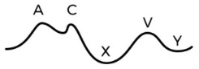
A A e C
B A, C e X
C X e Y
D X e V
Questão 708 · Fisiologia do Sistema Cardiovascular · 4000200598J.R.K, sexo masculino, 75 anos, hipertenso de longa data, chegou ao pronto-socorro com um quadro de palpitações recorrentes e intermitentes associadas a fadiga e dispneia aos esforços há cerca de duas semanas. Nega dor no peito, tontura ou desmaio. No exame físico, o paciente apresentava-se com pressão arterial de 130/80 mmHg, frequência cardíaca de 150 batimentos por minuto e saturação de oxigênio de 96% em ar ambiente. Demais exames estavam normais. Foi realizado eletrocardiograma (ECG), revelando um utter atrial com 150 batimentos por minuto. Os exames laboratoriais e o ecocardiograma não mostraram alterações. Optou-se por internação hospitalar para controle de frequência cardíaca e, posteriormente, foi realizada cardioversão elétrica sincronizada. Sabemos que o utter é uma arritmia que ocorre nos átrios. Além disso, o enchimento ventricular envolve 2 processos diferentes: o primeiro é a passagem de sangue de forma passiva entre átrios e ventriculares devido a diferença de pressão entre eles e o segundo ocorre devido a contração atrial, sendo responsável por menos de 30% do volume de enchimento ventricular. Considerando que o flutter interfere principalmente na sincronia entre a sístole atrial e o relaxamento ventricular e que o gráfico abaixo representa a pressão atrial durante o ciclo cardíaco normal, qual das letras abaixo aponta a fase que sofrerá maior alteração pelo flutter atrial? Livro Semiologia Cardíaca, Figura 8
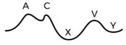
A Curva A
B Curva C
C Curva X
D Curva V
Questão 709 · Fisiologia do Sistema Cardiovascular · 4000200597E.J.F, 62 anos, sexo masculino, chega ao Pronto socorro com história de acidente de carro há 30 minutos. Estava dirigindo a cerca de 60km/h, quando perdeu o controle do veículo e chocou-se contra um poste. Não apresenta comorbidades nem faz uso de medicamentos continuamente. Chega a sala de atendimento ao trauma em regular estado geral, lúcido, orientado, em prancha rígida e com colar cervical. Na avaliação inicial apresenta via aérea pérvia, conversando sem di culdades, porém apresenta sinais de desconforto respiratório, saturação de 88%, PA 82x46mmHg; Tórax direito é timpânico a percussão, ausculta pulmonar abolida a direita e tem estase jugular também do lado direito. Foi feita a hipótese diagnóstico de pneumotórax hipertensivo, sendo optado por punção com agulha em 5 espaço intercostal seguida de drenagem torácica, com melhora importante do quadro após. Sabe-se que a diástole, momento em que ocorre o relaxamento e o enchimento dos ventrículos, é uma das etapas do ciclo cardíaco prejudicadas pelo pneumotórax hipertensivo. Considerando que a curva abaixo representa a pressão atrial normal nas diferentes fases de um ciclo cardíaco normal, assinale a alternativa que representa o momento em que o sangue passa a uir dos átrios para os ventrículos e a explicação mais adequada para que isso ocorra: Livro Semiologia Cardíaca, Figura 8
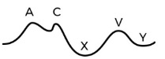
A Curva A, momento em que ocorre a contração atrial, promovendo abertura das válvulas atrioventriculares e passagem de sangue dos átrios para os ventrículos.
B Curva C, momento em que, após abertura das válvulas atrioventriculares no ponto A, há passagem de sangue dos átrios para os ventrículos de forma passiva pela diferença de pressão entre as câmaras.
C Curva Y, momento em que há abertura das válvulas atrioventriculares devido a diferença de pressão entre átrios e ventrículos, permitindo a passagem de sangue de forma passiva.
D Curva X, momento que representa uma queda importante da pressão nos átrios devido à abertura das válvulas atrioventriculares e à contração atrial, permitindo a passagem de sangue de forma ativa dos átrios para os ventrículos.
Questão 710 · Anatomia do Sistema Cardiovascular · 4000200596G.N.I, 52 anos, queixa-se de sudorese, falta de ar, palpitações e dor no peito há cerca de três horas. Paciente possui antecedente pessoal de hipertensão arterial sistêmica e diabetes tipo 2, mas não possui histórico prévio de doença cardíaca. Plantonista realiza exames complementares e detecta lesão grave no principal vaso que sai do ventrículo esquerdo. Qual o vaso lesado?
A Artéria ilíaca comum
B Tronco celíaco
C Artéria aorta.
D Artéria pulmonar.
Questão 711 · Anatomia do Sistema Cardiovascular · 4000200595J.H.V, 50 anos, chega à emergência do PS com queixa de falta de ar, tontura e desconforto torácico progressiva há cerca de 12 horas. Pacientes sem antecedentes pessoais e familiares de doença cardíaca. Foi realizada uma tomogra a computadorizada de tórax que detectou um trombo em um vaso que desemboca no átrio esquerdo. Qual o possível vaso lesado?
A Veia cava superior
B Veia cava inferior
C Seio coronário
D Veia pulmonar
Questão 712 · Acoplamento ExcitaçãoContração e Ciclo Cardíaco · 4000200590H.B.L, 64 anos, queixa-se de dor torácica em aperto de intensidade 6 em 10, sudorese, falta de ar e palpitações há duas horas. Paciente hipertenso, sem histórico de doença cardiovascular prévio e sem antecedentes familiares de problema no coração. Médico de plantão realiza exames complementares que detectam uma rara lesão em um vaso que desemboca no átrio direito. Assinale a alternativa que identi ca um possível vaso lesado.
A Seio coronário
B Veia pulmonar
C Tronco braquiocefálico
D Veia subclávia direita
Revisar: possível letra faltando em enunciado
Questão 713 · Anatomia do Sistema Cardiovascular · 4000200587K.M.D., 58 anos, chega à emergência com queixa de dor abdominal intermitente, perda de peso não intencional e diminuição do apetite nos últimos 6 meses. Paciente relata que não há histórico de câncer ou de doença arterial na família. Além disso, não apresenta outras doenças e nunca realizou procedimentos cirúrgicos. Médico realiza exames complementares que detectam uma obstrução na artéria que origina ramos responsáveis por irrigar os seguintes órgãos: estômago, baço, pâncreas, fígado e duodeno. Assinale a alternativa que indica corretamente o vaso obstruído.
A Tronco braquiocefálico.
B Artéria frênica inferior.
C Tronco celíaco.
D Artéria mesentérica inferior.
Questão 714 · Anatomia do Sistema Cardiovascular · 4000200584H.M.G, 49 anos, apresenta-se no pronto socorro com queixa de dormência e dor na região dorsal. Após realização de exames complementares observou-se uma obstrução em ramos da aorta descendente. Assinale a alternativa que indica uma possível artéria ocluída.
A Artéria carótida comum direita.
B Artéria subclávia direita.
C Artéria intercostal posterior.
D Artéria frênica inferior.
Questão 715 · Anatomia do Sistema Cardiovascular · 4000200581M.L.N, sexo feminino, 71 anos, chega ao pronto socorro com queixa dor em aperto na região retroesternal, intensa, 9 de 10. Relata que a dor irradia para a região dorsal e para o pescoço. Possui antecedente pessoal de hipertensão arterial sistêmica, diabetes e tabagismo. Foi realizado um exame de imagem que mostrou dissecção da aorta ascendente que se inicia na altura do primeiro ramo da aorta após as artérias coronárias. Considerando essas informações, assinale a alternativa que indica corretamente a ordem dos três primeiros ramos que surgem da aorta após as coronárias.
A Tronco braquiocefálico, artéria subclávia esquerda e artéria carótida comum esquerda.
B Artéria subclávia esquerda, tronco braquiocefálico e artéria carótida comum esquerda.
C Artéria carótida comum esquerda, tronco braquiocefálico e artéria subclávia esquerda.
D Tronco braquiocefálico, artéria carótida comum esquerda e artéria subclávia esquerda.
Questão 716 · Anatomia do Sistema Cardiovascular · 4000200570J.F.S, 64 anos, sexo masculino, chega ao pronto socorro com queixa de dor torácica intensa, 8 de 10, dor no pescoço e di culdade para respirar. Possui histórico de tabagismo, 50 maços ano, ou seja, fumou um maço de cigarro por dia durante 50 anos. Não há histórico de doença cardiovascular na família. Foram realizados exames complementares que detectaram uma alteração anatômica no primeiro ramo da aorta ascendente após as artérias coronárias. Qual o ramo afetado?
A Tronco braquiocefálico
B Artéria carótida comum esquerda
C Artéria subclávia esquerda
D Artéria subclávia direita
Questão 717 · Circulação Fetal · 4000200569Qual a função das artérias umbilicais na circulação fetal?
A Levar o sangue oxigenado da placenta para o feto.
B Transportar o sangue da circulação corpórea do feto para a placenta.
C Transportar o sangue da circulação corpórea do feto de volta para o coração.
D Passagem do sangue do átrio direito para o átrio esquerdo.
Questão 718 · Circulação Fetal · 4000200568Essa estrutura é um vaso sanguíneo que conecta o feto à placenta durante a gestação. É responsável por transportar sangue oxigenado e rico em nutrientes da placenta para o feto. Após o nascimento seu resquício anatômico é chamado de ligamento redondo. O texto acima descreve qual das seguintes estruturas:
A Canal arterial
B Ducto venoso
C Veia umbilical
D Artéria umbilical
Questão 719 · Circulação Fetal · 4000200567João, recém-nascido de 2 dias de vida, nasceu de parto normal, com 38 semanas de gestação. Durante o pré-natal, não foram identi cadas anormalidades significativas na ecogra a obstétrica. Após o nascimento, João apresentou cianose e di culdade respiratória, além de ter sido observado um sopro cardíaco durante o exame físico. O pediatra solicitou um ecocardiograma, que revelou a presença de um canal arterial patente. Em relação ao canal arterial, assinale a alternativa que apresenta as assertivas corretas. I. O fluxo do canal arterial ocorre da artéria aorta para a artéria pulmonar. II. Durante a vida fetal o uxo do canal arterial se dá da artéria pulmonar para a artéria aorta, pois a pressão pulmonar é menor que na circulação sistêmica. III. Essa estrutura é responsável por levar o sangue oxigenado para os pulmões. IV. Canal arterial após o nascimento se transforma no ligamento arterial, um dos pontos de fraqueza da aorta.
A Apenas I
B I e II
C III e IV
D I e IV
Questão 720 · Circulação Fetal · 4000200566A circulação fetal é o processo de circulação sanguínea que ocorre no feto durante a vida intrauterina. Durante a gestação, o feto obtém oxigênio e nutrientes da mãe através da placenta, e seu próprio sistema respiratório e digestivo ainda não estão funcionando. É diferente da circulação após o nascimento, pois o sangue não precisa ser bombeado para os pulmões para ser oxigenado. Ela é crucial para o desenvolvimento saudável do feto, e sua compreensão é fundamental para a medicina fetal e neonatal. A respeito da circulação fetal assinale a alternativa correta.
A O canal arterial é responsável pela passagem do sangue da artéria aorta para a artéria pulmonar.
B O ducto venoso leva o sangue oxigenado até a veia cava.
C As artérias umbilicais são responsáveis por trazer o sangue oxigenado ao feto.
D O resquício anatômico do ducto venoso é o ligamento redondo.
Questão 721 · Divisão do Coração em Camadas Endocárdio Miocárdio e Epicárdio · 4000200565L.M.K, 55 anos, sexo masculino, chega ao hospital com dor no peito intensa há 3 horas que irradia para o braço esquerdo, acompanhada de sudorese e falta de ar. Relata histórico de hipertensão arterial de difícil controle e tabagismo desde os 18 anos. Descreve que a dor começou enquanto ele fazia atividades físicas leves em casa. Ao examinar o paciente, o médico constata que sua pressão arterial está elevada, bem como sua frequência cardíaca. Além disso, detecta um sopro cardíaco e um terceiro som cardíaco. O ECG mostra alterações típicas de infarto agudo do miocárdio de ventrículo esquerdo. Sobre o miocárdio do VE e suas diferentes camadas, pode-se afirmar:
A O miocárdio é dividido em 3 camadas musculares, sendo que a orientação do feixe muscular é longitudinal no miocárdio subepicárdico, circunferencial no segmento médio e novamente longitudinal no miocárdio subendocárdico.
B O miocárdio é dividido em 2 camadas musculares, sendo que a orientação do feixe muscular é longitudinal no miocárdio subepicárdico e circunferencial no miocárdio subendocárdico.
C O miocárdio é dividido em 3 camadas musculares, sendo que a orientação do feixe muscular é circunferencial no miocárdio subepicárdico, longitudinal no segmento médio e novamente circunferencial no miocárdio subendocárdico.
D O miocárdio é dividido em 2 camadas musculares, sendo que a orientação do feixe muscular é circunferencial no miocárdio subepicárdico e longitudinal no miocárdio subendocárdico.
Questão 722 · Anatomia do Sistema Cardiovascular · 4000200564Paciente B é uma menina de 7 anos que se queixa de cansaço frequente e falta de ar durante atividades físicas leves, como correr ou brincar no parquinho. Ela também tem episódios de cianose, uma coloração azulada nos lábios e nas extremidades, principalmente quando está agitada. Ao realizar um exame físico, o médico identi ca um sopro cardíaco e solicita um exame de ecocardiograma. O exame revela a presença de um forame oval patente. A respeito do forame oval, qual a principal função dessa estrutura na circulação fetal?
A Permitir que o sangue passe do átrio esquerdo para o átrio direito.
B Permitir que o sangue passe do átrio direito para o átrio esquerdo.
C Impedir que o sangue passe do átrio esquerdo para o átrio direito.
D Permitir que o sangue passe do ventrículo direito para o ventrículo esquerdo.
Revisar: possível letra faltando em enunciado
Questão 723 · Anatomia do Sistema Cardiovascular · 4000200563Paciente masculino de 3 anos, é trazido pelos pais para atendimento médico com queixa principal de fadiga, falta de ar e sudorese excessiva durante as atividades físicas. Os pais referem que é uma criança saudável e ativa, mas que notaram que ele ca rapidamente cansado durante atividades físicas, como brincar com seus amigos ou correr. Ele também apresenta falta de ar e sudorese excessiva nessas situações. Seus pais também perceberam que ele não cresceu tanto quanto outras crianças da mesma idade. Ao examinar a criança, é possível ouvir um sopro cardíaco em sua ausculta cardíaca. Após realizar um ecocardiograma, foi visualizado uma abertura entre os dois ventrículos do coração e feito o diagnóstico de Comunicação interventricular. Considerando a anatomia do septo interventricular, é mais provável que o defeito citada esteja localizado:
A Mais próximo do ápice do coração
B Na parte muscular do septo cardíaco
C No septo atrioventricular
D Na parte membranácea do septo cardíaco
Revisar: possível letra faltando em enunciado
Questão 724 · Anatomia do Sistema Cardiovascular · 4000200562Paciente A.V.G 2 anos, é trazido pelos familiares para atendimento com queixa principal de fadiga, falta de ar e sudorese excessiva durante as atividades físicas. Os pais referem que é uma criança saudável e ativa, mas que notaram que ele ca rapidamente cansado durante atividades físicas, como brincar com seus amigos ou correr. Ele também apresenta falta de ar e sudorese excessiva nessas situações. Seus pais também perceberam que ele não cresceu tanto quanto outras crianças da mesma idade. Ao examinar a criança, é possível ouvir um sopro cardíaco em sua ausculta cardíaca. Após realizar um ecocardiograma, foi visualizado uma abertura entre os dois ventrículos do coração e feito o diagnóstico de Comunicação interventricular. Em relação à anatomia do septo interventricular assinale a alternativa correta.
A É uma divisória entre o ventrículo direito e esquerdo, sendo sua espessura similar à do ventrículo direito.
B Após a contração ventricular, o septo se expande para a cavidade do ventrículo esquerdo.
C A parte membranácea se localiza mais inferiormente que a parte muscular.
D A principal função dessa estrutura é impedir que o sangue oxigenado do ventrículo direito se comunique com o sangue não oxigenado do ventrículo esquerdo.
Revisar: possível letra faltando em enunciado
Questão 725 · Anatomia do Sistema Cardiovascular · 4000200561F.N.R, 50 anos, procedente do interior de Minas Gerais, chega ao pronto socorro com queixa de falta de ar, fadiga excessiva, tontura e di culdade para respirar ao se deitar. Segundo o paciente, esses sintomas se iniciaram há 2 meses, porém pioraram nos últimos 2 dias. Não há antecedentes familiares de doença cardíaca e o paciente não tem outras doenças. O médico fez exames complementares que indicaram o diagnóstico de Insu ciência cardíaca. Usando os seus conhecimentos sobre os vasos sanguíneos que chegam e saem do coração, sobre a anatomia das câmaras cardíacas e sobre a circulação sanguínea, analise as a rmativas e assinale a alternativa correta: I. Quando o átrio direito se contrai, a válvula mitral se abre, permitindo a passagem de sangue pobre em oxigênio para o ventrículo direito. II. O sangue oxigenado circula pelo lado esquerdo do coração. III. A veia cava inferior, a veia cava superior e o seio coronário chegam no átrio direito, trazendo sangue pobre em oxigênio para essa câmara cardíaca. IV. Quando o átrio esquerdo se contrai, a válvula tricúspide se abre, permitindo a passagem de sangue rico em oxigênio para o ventrículo esquerdo. V. Do ventrículo esquerdo o sangue oxigenado é transportado para a artéria aorta, que se rami ca em artérias menores para distribuir esse sangue rico em oxigênio para tecidos e órgãos no corpo inteiro.
A I e IV
B II, III e V
C I, II e V
D III e IV
Revisar: possível letra faltando em enunciado
Questão 726 · Anatomia do Sistema Cardiovascular · 4000200560N.M.C, 48 anos, chega ao hospital com queixa de inchaço em membros inferiores, cansaço excessivo e falta de ar há 3 dias. O médico de plantão faz um ecocardiograma, cujo laudo levantou a hipótese de insu ciência cardíaca, que é uma condição em que o coração não bombeia sangue su ciente para suprir as necessidades do corpo. Levando em seus conhecimentos sobre a circulação cardíaca, a anatomia das câmaras cardíacas e as artérias que saem em cada câmara, assinale a alternativa correta:
A Do ventrículo direito sai sangue pobre em oxigênio para a artéria aorta, que distribui esse sangue para todo o corpo.
B Do ventrículo esquerdo sai sangue rico em oxigênio para a artéria aorta, que distribui esse sangue para todo o corpo.
C Do ventrículo esquerdo sai sangue pobre em oxigênio para a artéria pulmonar, que leva esse sangue para ser oxigenado nos pulmões.
D Do ventrículo direito sai sangue rico em oxigênio para a artéria aorta, que distribui esse sangue para todo o corpo.
Revisar: possível letra faltando em enunciado
Questão 727 · Anatomia do Sistema Cardiovascular · 4000200559N.M.C, 48 anos, chega ao hospital com queixa de inchaço em membros inferiores, cansaço excessivo e falta de ar há 3 dias. O médico de plantão solicita um ecocardiograma, cujo laudo levantou a hipótese de insu ciência cardíaca, que é uma condição em que o coração não bombeia sangue su ciente para suprir as necessidades do corpo. Levando em seus conhecimentos sobre a circulação cardíaca, a anatomia das câmaras cardíacas e as veias que chegam em cada câmara, assinale a alternativa correta:
A As veias cavas inferior e superior drenam no átrio esquerdo, transportando sangue rico em oxigênio.
B A veia pulmonar drena no átrio direito, transportando sangue rico em oxigênio.
C As veias cavas inferior e superior drenam no átrio direito, transportando sangue pobre em oxigênio.
D A veia pulmonar drena no átrio esquerdo, transportando sangue pobre em oxigênio.
Revisar: possível letra faltando em enunciado
Questão 728 · Anatomia do Sistema Cardiovascular · 4000200558F.V.G., 47 anos, relata que nas últimas semanas vem se sentindo muito cansado para atividades que antes realizava com facilidade. Além disso, queixa-se de 2 episódios de desmaio após realização de atividade física vigorosa. Nega doenças prévias ou antecedentes familiares de doença cardiovascular. O médico de plantão solicita a realização de um Eletrocardiograma e de um Ecocardiograma, que levam a conclusão de sobrecarga do ventrículo esquerdo, com aumento da espessura dessa câmara e consequente di culdade no bombeamento de sangue por essa câmara cardíaca. Sobre as possíveis consequências desse problema, levando em consideração a relação anatômica das câmaras cardíacas, analise as a rmativas e assinale a alternativa correta: I.O ventrículo esquerdo do paciente terá di culdade de bombear o sangue rico em oxigênio para a artéria aorta. II.O ventrículo esquerdo é menos espesso e menos trabeculado que o ventrículo direito. Além disso, o VE possui dimensões menores que o VD. III.O sangue pobre em oxigênio passa do átrio esquerdo para o ventrículo esquerdo pela válvula mitral.
A Apenas I
B II e III
C I e III
D II e III
Questão 729 · Anatomia do Sistema Cardiovascular · 4000200557J.V.R., 48 anos, relata que nos últimos meses apresenta cansaço excessivo, tontura e falta de ar após realização de exercícios físicos de moderada intensidade. Segundo ele não há histórico de doença cardiovascular na família, exceto por um primo de segundo grau que teve um infarto agudo do miocárdio há 2 anos. Paciente relata ainda que possui alimentação equilibrada e que é tabagista desde os 18 anos, 1 maço por dia. O médico de plantão solicita a realização de um Eletrocardiograma e de um Ecocardiograma, que mostram aumento do ventrículo direito e di culdade no bombeamento de sangue por essa câmara cardíaca. Sobre as possíveis consequências desse problema, levando em consideração a relação anatômica das câmaras cardíacas, analise as afirmativas e assinale a alternativa correta: I.O ventrículo direito do paciente terá dificuldade de bombear o sangue rico em oxigênio para a artéria aorta. II.O sangue pobre em oxigênio passa do átrio direito para o ventrículo direito pela válvula tricúspide. III.O ventrículo direito do paciente terá di culdade de bombear o sangue pobre em oxigênio para a artéria pulmonar.
A Apenas II
B I, II e III
C Todas estão incorretas.
D II e III.
Questão 730 · Acoplamento ExcitaçãoContração e Ciclo Cardíaco · 4000200556T.M.S, sexo masculino, 63 anos, chega ao pronto socorro queixando-se de palpitações, falta de ar e cansaço intenso há cerca de 50 minutos. Relata ter diagnostico de diabetes, atualmente bem controlada com Metformina. Ao exame físico encontra-se com frequência cardíaca aumentada e com sinais de esforço respiratório, porém sua pressão está dentro da normalidade, 128x82mmHg. No exame de eletrocardiograma (ECG), é possível observar uma brilação atrial, com frequência cardíaca de 140 batimentos por minuto. Considerando seus conhecimentos sobre a anatomia dos átrios, pode-se afirmar:
A Os músculos papilares são estruturas em forma de cone localizadas nas paredes dos átrios cardíacos.
B No átrio esquerdo existe o assoalho da fossa oval, enquanto no átrio direito há a válvula do forame oval.
C O sangue pobre em oxigênio entra no átrio esquerdo por meio de três vasos: veia cava inferior, veia cava superior e seio coronário.
D Uma parte do átrio direito se localiza na porção direita da face esternocostal do coração, enquanto o átrio esquerdo forma a maior parte da base ou da face posterior do coração.
Questão 731 · Anatomia do Sistema Cardiovascular · 4000200555G.N.S., 61 anos, sexo feminino, chega ao pronto socorro com queixa de falta de ar, palpitações, fadiga e tontura há 3 dias. Tabagista desde os 30 anos, possui mãe falecida de doença cardiovascular e pai falecido de causas naturais. No exame físico é diagnosticada com um sopro diastólicono foco mitral do coração, levando a hipótese de estenose mitral. Essa doença caracteriza-se por di cultar a abertura completa da válvula mitral, o que prejudica o fluxo sanguíneo do átrio esquerdo para o ventrículo esquerdo. Considerando-se as câmaras cardíacas e suas relações anatômicas é correto afirmar:
A O ventrículo esquerdo bombeia o sangue desoxigenado para todo o corpo por meio da artéria aorta.
B A válvula mitral, também conhecida como válvula tricúspide, se abre durante a contração do átrio esquerdo e permite que o sangue rico em oxigênio passe do átrio esquerdo para o ventrículo esquerdo.
C O átrio direito recebe sangue venoso (desoxigenado) das veias pulmonares e envia o sangue para o ventrículo direito por meio da válvula tricúspide.
D O ventrículo direito envia sangue venoso (desoxigenado) para o pulmão através das artérias pulmonares. Esse ventrículo é levemente menor que ventrículo esquerdo.
Questão 732 · Embriologia do Sistema Cardiovascular · 4000200554V.P.S, sexo masculino, 30 anos, queixa-se de cansaço frequente e falta de ar durante atividades físicas leves, como subir escadas. Relata também episódios de palpitação e tontura. Ao realizar um exame físico, o médico identi ca um sopro cardíaco e solicita um exame de ecocardiograma, que revela a presença de um forame oval patente, uma abertura no septo interatrial que permite o fluxo sanguíneo entre os átrios. Em relação à anatomia do septo atrial, assinale a alternativa correta.
A Após o nascimento, o forame oval é percebido por uma depressão fina, chamada de fossa oval, no septo interatrial.
B O chamado septo primum é uma camada mais rígida e nele está contido o orifício por onde o sangue atravessa do átrio direito para o átrio esquerdo durante a vida fetal.
C O chamado septo secundum, existente durante a vida fetal, é uma camada mais fina, chamada de válvula do forame oval.
D O fechamento do forame oval, após o nascimento, ocorre devido aumento da pressão no átrio direito.
Revisar: possível letra faltando em enunciado
Questão 733 · Acoplamento ExcitaçãoContração e Ciclo Cardíaco · 4000200553M.T.A.R, sexo feminino, 68 anos de idade, chega ao consultório com queixa de cansaço aos esforços e falta de ar. Ela relata ter notado esses sintomas há alguns meses, mas que vem piorando nas últimas semanas. Ao exame físico, é observado que o paciente apresenta sopro diastólico audível na ausculta cardíaca e o pulso está regular. A pressão arterial é normal, mas a frequência cardíaca está aumentada. O Ecocardiograma confirma o diagnóstico de estenose mitral moderada, com estreitamento da válvula mitral e aumento da pressão no átrio esquerdo. A fração de ejeção está preservada, mas há sinais de hipertensão pulmonar. A paciente é então encaminhada para tratamento cirúrgico, apresentando melhora significativa dos sintomas e retorno à atividade física habitual após o procedimento. A estenose mitral é uma doença que causa alteração importante na pressão do átrio esquerdo. Considerando que a curva abaixo representa a pressão atrial nas diferentes fases de um ciclo cardíaco normal, assinale a alternativa que apresenta uma correlação correta entre a letra da curva e sua fase correspondente: Livro Semiologia Cardíaca, Figura 8

A A - representa a alteração de pressão gerada pelo fechamento das válvulas atrioventriculares.
B C - representa a contração atrial, momento em que ocorre a passagem de cerca de 25% do volume de enchimento ventricular.
C X - representa a queda de pressão logo após a abertura das válvulas atrioventriculares, com saída de sangue dos átrios para os ventrículos.
D V - representa o aumento de pressão que ocorre no final da contração ventricular, momento em que o sangue começa a acumular nos átrios pois as válvulas atrioventriculares ainda não se abriram.
Questão 734 · Acoplamento ExcitaçãoContração e Ciclo Cardíaco · 4000200552B.C.C.A, sexo masculino, 50 anos de idade, sem histórico de doenças cardíacas prévias, chega à emergência com queixa de palpitações e desconforto no peito. Relata sensação de mal-estar que iniciou há cerca de 30 minutos, associado a palpitações persistentes. Ao exame físico, observa-se sinais de desconforto respiratório, sudorese intensa, frequência cardíaca em torno de 180 batimentos por minuto e pressão arterial baixa, 78x52mmHg. O exame cardiovascular revela sopro sistólico audível e o eletrocardiograma (ECG) confirma o diagnóstico de taquicardia ventricular sustentada. O paciente é imediatamente tratado com cardioversão elétrica para reverter o ritmo cardíaco anormal, procedimento realizado com sucesso. A taquicardia ventricular é uma arritmia de origem ventricular. Sobre o sistema de condução e estímulo dos ventrículos, pode-se afirmar:
A O Nó Sinoatrial, que fica na região de encontro dos átrios e dos ventrículos, é responsável pela transmissão do impulso elétrico que despolariza as células miocárdicas ventriculares.
B Após passar pelo Nó Atrioventricular, o estímulo elétrico segue em direção as Fibras de
C O potencial de ação levado do Nó Sinoatrial e que converge para o Nó Atrioventricular é retardado nessa região, pois ela é uma área de condução relativamente lenta, o que permite a diferença que existe entre a contração atrial e a ventricular.
D O Nó Atrioventricular, localizado no septo interventricular, age distribuindo o sinal elétrico para ambos os ventrículos, o que permite sua contração ocorra de forma simultânea.
Questão 735 · Acoplamento ExcitaçãoContração e Ciclo Cardíaco · 4000200551L.F.C.R, sexo masculino, 75 anos, com histórico de hipertensão arterial sistêmica e doença arterial coronariana, chega ao consultório com queixa de falta de ar aos esforços e tonturas ao se levantar que vem progredindo nos últimos 2 anos. Relata piora importante dos sintomas nos últimos meses, referindo episódios de palpitações e cansaço inclusive para andar dentro de casa. Ao exame físico, é observado que o paciente está em bom estado geral, porém com sopro sistólico audível na ausculta cardíaca. A pressão arterial é elevada, o pulso é fraco e a frequência cardíaca está em torno de 90 batimentos por minuto. O ecocardiograma confirma o diagnóstico de estenose aórtica grave, com estreitamento da válvula aórtica e hipertro a ventricular esquerda associada. Após analisar esses sinais e sintomas, o médico opta por indicar abordagem cirúrgica para troca da válvula aórtica da paciente. O quadro de estenose aórtica caracteriza-se por alterar substancialmente o ciclo cardíaco. Uma das etapas por ele alteradas é o momento em que ocorre o maior volume do esvaziamento dos ventrículos, logo após a abertura das válvulas semilunares. Essa etapa chama-se:
A Contração isovolumétrica ventricular
B Esvaziamento rápido ventricular
C Relaxamento isovolumétrico ventricular
D Esvaziamento lento ventricular
Questão 736 · Acoplamento ExcitaçãoContração e Ciclo Cardíaco · 4000200550E.P.A., sexo masculino, 60 anos, chega em consulta ambulatorial com cardiologista queixa de falta de ar aos esforços progressivamente menores, cansaço e inchaço nas pernas há alguns meses. Relata histórico de hipertensão arterial sistêmica de longa data, tabagismo e obesidade. Ao exame físico, o paciente apresenta pressão arterial elevada, frequência cardíaca e respiratória aumentadas. Na ausculta pulmonar há crepitações pulmonares em ambos os pulmões e na ausculta cardíaca há um sopro sistólico na borda esternal esquerda. Além disso, o médico observa inchaço em ambas as pernas em grau moderado. O eletrocardiograma demonstra sinais de sobrecarga ventricular esquerda e confirma o aumento da frequência cardíaca, sem sinais de arritmia. O ecocardiograma mostra dilatação ventricular esquerda e fração de ejeção reduzida para 30%, confirmando o diagnóstico de insuficiência cardíaca sistólica. Sobre a sístole e suas diferentes etapas, pode-se afirmar:
A A ejeção ventricular rápida é a primeira etapa dessa fase, ocorrendo logo após a abertura das válvulas semilunares. Ela é seguida da fase de ejeção lenta e da fase de contração isovolumétrica ventricular.
B A etapa de ejeção ventricular lenta é responsável pela maior parte do volume de sangue que é ejetado pelos ventrículos para as circulações pulmonar e sistêmica.
C A contração ventricular isovolumétrica logo após a abertura das válvulas semilunares. Essa etapa dura pouco tempo e corresponde ao momento em que há variação de pressão dentro dos ventrículos sem variação de volume.
D A sístole ventricular é composta, nessa ordem, pelas seguintes etapas: contração isovolumétrica, ejeção ventricular rápida e ejeção ventricular lenta.
Questão 737 · Acoplamento ExcitaçãoContração e Ciclo Cardíaco · 4000200549C.L.B, sexo feminino, 45 anos de idade, com histórico de Lupus Eritematoso Sistêmico, chega à emergência com queixa de desconforto respiratório, falta de ar e sudorese profusa. Ela relata ter se sentido mal nos últimos dias, com cansaço e mal-estar progressivos. Ao exame físico, observa-se sinais de desconforto respiratório, com pulso rápido e fraco, pressão arterial baixa e temperatura elevada. Há turgência jugular bilateral, com pulso paradoxal presente. O exame cardiovascular revela diminuição dos sons cardíacos, com atrito pericárdico audível em todos os campos pulmonares. O abdome está distendido e doloroso à palpação. O médico de plantão suspeita tamponamento cardíaco, o que é confirmado pelo ecocardiograma, que demonstra uma grande quantidade de líquido no saco pericárdico, determinando compressão cardíaca. A paciente é imediatamente encaminhada para o centro cirúrgico para realização de drenagem pericárdica de emergência. O quadro de tamponamento pericárdico caracteriza-se por alterar substancialmente o ciclo cardíaco. Uma das etapas por ele alteradas é o momento em que ocorre o maior volume do enchimento dos ventrículos, logo após a abertura das válvulas atrioventriculares. Essa etapa chama-se:
A Enchimento ventricular lento.
B Contração isovolumétrica ventricular.
C Enchimento ventricular rápido.
D Relaxamento isovolumétrico ventricular.
Questão 738 · Acoplamento ExcitaçãoContração e Ciclo Cardíaco · 4000200548M.A.R, sexo feminino, 75 anos, com histórico de hipertensão arterial, diabetes mellitus e doença pulmonar obstrutiva crônica, chega ao Pronto Socorro com queixa de falta de ar progressiva nas últimas semanas, especialmente ao se deitar. Relatou ter acordado várias vezes à noite com falta de ar e teve di culdade em realizar atividades do dia a dia, como caminhar até o mercado, que fica a duas quadras de sua casa. Ao exame físico, a paciente apresentava sinais de desconforto respiratório, com a frequência cardíaca em repouso de 85 bpm, pressão arterial de 145/90 mmHg, e saturação de oxigênio de 92% em ar ambiente. Havia alteração na ausculta pulmonar, com estertores pulmonares bibasais, e edema em ambos os membros inferiores. Os exames laboratoriais revelaram valores normais de hemoglobina, função renal e eletrólitos, mas um aumento significativo no nível de peptídeo natriurético do tipo B (BNP), indicando estresse no coração. Foi realizado um ecocardiograma que mostrou aumento de tamanho do coração da paciente, com espessamento da parede do ventrículo esquerdo e função sistólica preservada. Além disso, foi observado um importante aumento da pressão no átrio esquerdo, indicando um possível comprometimento da função diastólica. A diástole, momento em que há relaxamento ventricular, é composta por algumas etapas que ocorrem nos átrios e nos ventrículos. Sobre elas, pode-se afirmar:
A Durante a diástole, ocorrem os seguintes processos nos ventrículos, nessa ordem: Relaxamento isovolumétrico, enchimento lento, enchimento rápido.
B O enchimento ventricular é totalmente dependente da contração atrial, sendo iniciado apenas após a despolarização do Nó Sinoatrial, o que indica que é um 100% processo ativo.
C Durante a diástole ventricular, a primeira fase que ocorre é o relaxamento isovolumétrico dos ventrículos. Nesse momento, tanto as válvulas semilunares quanto as atrioventriculares estão fechadas, o que permite uma queda da Pressão dentro dos ventrículos sem variação do seu volume.
D O enchimento ventricular lento é a primeira fase da diástole ventricular. Nesse momento, a Pressão dentro dos átrios torna-se maior do que a pressão dentro dos ventrículos, permitindo uma abertura gradual das válvulas atrioventriculares e criando um fluxo progressivo de enchimento ventricular.
Questão 739 · Acoplamento ExcitaçãoContração e Ciclo Cardíaco · 4000200547C.L.C.R, 65 anos, sexo feminino, chega ao consultório do cardiologista com queixas de palpitações (aumento da frequência cardíaca), cansaço e falta de ar. Relata que esses sintomas vêm ocorrendo com frequência nas últimas semanas, especialmente quando se exercita ou se estressa. Ao exame físico, o médico detecta uma frequência cardíaca elevada e irregular, além de aumento da pressão arterial. O eletrocardiograma (ECG) realizado no próprio consultório mostra leva ao diagnóstico de brilação atrial, uma condição em que os átrios do coração não se contraem de forma sincronizada, levando a uma frequência cardíaca rápida e irregular. Para entender bem o mecanismo dessa doença, é fundamental conhecer a contração atrial normal do coração. Sobre esse evento do ciclo cardíaco, assinale a alternativa correta.
A A contração atrial tem início no Nó Atrioventricular, que é o principal responsável pela diferença temporal que existe entre a contração atrial e a ventricular. Primeiro ele estimula a contração dos átrios e depois envia estímulos elétricos para a contração dos ventrículos.
B A contração atrial tem início no Nó Sinoatrial, que é o responsável pela automaticidade e ritmicidade do coração. Seu estímulo elétrico é propagado por um tecido de condução especializado que leva à sístole atrial, momento em que sangue é bombeado dos átrios para os ventrículos.
C A contração atrial tem início nas Fibras de
D A contração atrial tem início no Nó Sinoatrial, que é um tecido de condução bastante lento, o que torna possível a contração atrial antes da ventricular.
Questão 740 · Acoplamento ExcitaçãoContração e Ciclo Cardíaco · 4000200546G.M.H., 65 anos, sexo masculino, hipertenso e diabético, apresenta-se ao pronto-socorro com queixas de falta de ar, cansaço e inchaço nas pernas há cerca de 1 ano. Relata que os sintomas pioraram ao longo das últimas semanas, apesar do uso de medicamentos prescritos para controlar sua hipertensão e diabetes. Ao exame físico, o médico identi ca aumento da frequência cardíaca e da frequência respiratória, pressão arterial elevada, edema nas pernas e ausculta dos pulmões com crepitações em bases, que pode indicar edema nesta região. O eletrocardiograma solicitado mostra sinais de sobrecarga do ventrículo esquerdo e o Ecocardiograma revela dilatação do ventrículo esquerdo e diminuição da fração de ejeção do coração. Diante desses achados clínicos, o paciente é diagnosticado com insu ciência cardíaca congestiva (ICC), uma condição em que o ciclo cardíaco está alterado, levando a bombeamento ine caz de sangue para suprir as necessidades do corpo. Dentre as alternativas abaixo, qual traz a definição mais completa de Ciclo cardíaco?
A Sequência de eventos elétricos e mecânicos durante um único batimento cardíaco.
B Sequência de batimentos cardíacos realizados em um minuto, pois nos permite entender de forma mais ampla como está o funcionamento do coração.
C Quantidade de sangue bombeada pela coração dentro de um minuto, que pode ser calculada por Frequência cardíaca multiplicada por Volume sistólico.
D Diferença matemática entre a Pressão sistólica e a pressão diastólica.
Revisar: possível letra faltando em enunciado
Questão 741 · Acoplamento ExcitaçãoContração e Ciclo Cardíaco · 4000200545Um homem de 63 anos, hipertenso e diabético, chega ao Pronto Socorro com queixa de palpitação associada a falta de ar há cerca de 30 minutos. Relata 2 episódios semelhantes prévios, porém que cessaram sem necessidade de ida ao Hospital. O médico de plantão solicitou um eletrocardiograma, que identi cou um ritmo de Fibrilação atrial, que é quando os átrios não contraem em ritmo sincronizado, o que prejudica o bombeamento do coração para o resto do organismo. Sobre a estimulação elétrica do coração, assinale a alternativa correta:
A O nó atrioventricular é o principal responsável por ditar o ritmo cardíaco, uma vez que sua localização é estratégica para atuar estimulando tanto os átrios quanto os ventrículos.
B O Nó Sinoatrial, também conhecido como marcapasso cardíaco, é o principal responsável pela automaticidade e pelo ritmo cardíaco. Sua ação se inicia estimulando a contração do Ventrículo Direito, para que essa câmara se esvazie e seja capaz de receber o sangue trazido pelas veias cavas superior e inferior.
C Em indivíduos saudáveis, o potencial de ação iniciado no Nó Sinoatrial é propagado para os átrios por um tecido de condução especializado que leva a contração atrial.
D A contração ventricular ocorre exatamente no mesmo momento em que há a contração atrial, visto que o sinal transmitido do nó sinoatrial para o nó atrioventricular é transmitido em poucos milissegundos, o que permite essa sincronia entre todas as câmaras cardíacas, essencial para a chegada de sangue em órgãos vitais como o cérebro e os rins.
Questão 742 · Histologia do Sistema Cardiovascular · 4000200544Paciente masculino, 28 anos, chega ao pronto socorro com queixa de febre, mal-estar geral, inchaço dos gânglios linfáticos, taquicardia e forte dor de cabeça há 1 semana. Relata que foi visitar a família no interior de Minas Gerais há cerca de 3 semanas e que foi picado por um inseto popularmente conhecido como "barbeiro". Na ressonância magnética é detectada uma miocardite, inflamação do músculo cardíaco. Sobre a histologia das camadas cardíacas é correto afirmar:
A A parede cardíaca é formada por 4 camadas principais: epicárdio, pericárdio, miocárdio e endocárdio.
B O epicárdio é o folheto visceral do pericárdio e é composto por epitélio pavimentoso simples apoiado sobre uma camada de tecido conjuntivo.
C O endocárdio é uma camada de tecido conjuntivo denso, formado por fibras colágenas, elásticas e células de músculo liso.
D A miocardite afeta principalmente o epicárdio, camada mais externa do coração.
Questão 743 · Anatomia do Sistema Cardiovascular · 4000200543Paciente masculino, 68 anos, dá entrada no atendimento de urgência e emergência queixando-se de dor intensa na perna e pé direitos, associada a edema. Ao exame físico apresentava importante edema na perna direita e endurecimento da panturrilha direita. Sem alterações ao exame físico da perna contralateral. Após investigação com USG Doppler, foi realizado diagnóstico de trombose de veia femoral direita. Em relação a essa doença, quais assertivas estão corretas? É impossível que o desprendimento de um trombo possa causar um acidente vascular encefálico. Uma complicação comum da TVP é o desprendimento do trombo até a circulação pulmonar, chamado de embolia pulmonar. A veia lesada é uma veia super cial. Portanto, o acometimento também pode ser chamado de varizes venosas. O retorno venoso fica prejudicado com a obstrução da veia femoral.
A I, II, III
B II, III e IV
C II e IV
D Apenas IV
Questão 744 · Anatomia do Sistema Cardiovascular · 4000200542J.V.S, 58 anos, diabético, hipertenso e com pai falecido por doença cardíaca. Durante a consulta, foram realizados exames de imagem que constataram uma hipertro a do átrio e do ventrículo esquerdos. Sobre as câmaras cardíacas e sua anatomia, pode-se afirmar:
A O sangue sai do átrio esquerdo para o ventrículo esquerdo pela válvula tricúspide.
B O ventrículo esquerdo é menos espesso e menos trabeculado que o ventrículo direito. Além disso, possui dimensão interna maior que o ventrículo direito.
C O átrio direito e o átrio esquerdo são separados pelo septo interatrial, que contém resquício do forame oval, a fossa oval.
D O átrio esquerdo é ligeiramente menor que o átrio direito e recebe uma ou até três veias pulmonares do seu lado esquerdo e duas a três do seu lado direito.
Questão 745 · Anatomia do Sistema Cardiovascular · 4000200541G.C.R, 34 anos, relata episódios recorrentes de dor no peito e falta de ar em exercícios mais intensos. Ao ecocardiograma transtorácico detecta-se uma comunicação interatrial, uma condição congênita na qual a abertura do septo interatrial deveria ter se fechado após o nascimento, mas permaneceu aberta. Este defeito congênito ocorre na localização de qual estrutura cardíaca?
A septo atrioventricular
B fossa oval
C na parte membranácea do septo interventricular
D na parte muscular do septo interventricular
Questão 746 · Anatomia do Sistema Cardiovascular · 4000200540Paciente masculino, 68 anos, dá entrada no atendimento de urgência e emergência queixando-se de dor intensa na perna e pé direitos, associada a edema. Ao exame físico apresentava importante edema na perna direita e endurecimento da panturrilha direita. Sem alterações ao exame físico da perna contralateral. Após investigação com USG Doppler, foi realizado diagnóstico de trombose da veia femoral direita. Em relação a essa estrutura anatômica, assinale a alternativa incorreta.
A A veia femoral é continuação da veia poplítea.
B Ela é considerada uma veia solitária por não correr próximo da artéria femoral.
C Ao passar pela região inguinal ela dá origem a veia ilíaca externa.
D Suas tributárias são veia femoral profunda, veia safena magna, veia circunflexa femoral lateral.
Questão 747 · Anatomia do Sistema Cardiovascular · 4000200539Paciente masculino, 71 anos, busca atendimento ambulatorial com queixa de falta de ar aos esforços, dor precordial com exercícios e episódios de desmaios. Ao exame físico cardíaco foi auscultado sopro sistólico em foco aórtico. Após investigação adicional, foi feito diagnóstico de estenose aórtica. Em relação à valva aórtica, assinale a alternativa correta.
A O seu funcionamento se dá pela contração dos músculos papilares que tensionam as cordas tendíneas, gerando o fechamento da valva.
B É formada por três válvulas, chamadas válvula semilunar direita, válvula semilunar esquerda e válvula semilunar anterior.
C O local onde o sopro foi melhor auscultado é no 4o espaço intercostal esquerdo, lateral ao esterno.
D As artérias coronárias direita e esquerda originam-se dos seios aórticos direito e esquerdo, respectivamente.
Questão 748 · Anatomia do Sistema Cardiovascular · 4000200538Paciente A.P.R., 42 anos, em consulta ambulatorial com queixa de 1 ano de dispneia progressiva. No início sentia falta de ar ao fazer exercícios físicos intensos e atualmente sente queixa ao fazer esforços habituais. Ao exame clínico cardíaco foi visto sopro diastólico em ru ar, mais audível no foco mitral. Após confirmação com exames de imagem, foi feito o diagnóstico de estenose mitral. Em relação à valva mitral assinale a alternativa correta.
A As cordas tendíneas são responsáveis pela abertura e fechamento da valva. No momento da sístole, os músculos papilares contraem, tensionando as cordas tendíneas e gerando o fechamento da valva.
B É formada por 3 folhetos, chamadas: folheto anterior, folheto posterior e folheto septal.
C É responsável por evitar que o sangue retorne do ventrículo direito para o átrio direito durante a sístole.
D O local onde o sopro foi mais audível foi no 2° espaço intercostal esquerdo lateral ao esterno.
Questão 749 · Débito Cardíaco e Circulação Coronária · 4000200537Joana, 65 anos, chega ao pronto socorro com queixa de dor no peito intensa que irradia para a mandíbula e para o braço esquerdo, associada a náuseas e fadiga aos mínimos esforços. Paciente hipertensa há 5 anos, com pai diabético e mãe falecida de Infarto agudo do miocárdio. Foi realizado cateterismo que identi cou lesão obstrutiva nas artérias que irrigam o ventrículo esquerdo. Sobre a principal artéria lesada e sua irrigação, pode-se afirmar:
A Artéria coronária esquerda e seus ramos, que irrigam a margem esquerda da parede livre do ventrículo direito, o átrio esquerdo, a parede anterior e lateral do ventrículo direito e 2/3 anteriores do septo.
B Artéria coronária direita e seus ramos, que irrigam a margem esquerda da parede livre do ventrículo direito, o átrio esquerdo, a parede anterior e lateral do ventrículo esquerdo e 2/3 anteriores do septo.
C Artéria coronária direita e seus ramos, que irrigam toda a parede livre do ventrículo direito, todo o átrio direito, a parede inferior do ventrículo esquerdo e 1/3 posterior do septo.
D Artéria coronária esquerda e seus ramos, que irrigam a margem esquerda da parede livre do ventrículo direito, o átrio esquerdo, a parede anterior e lateral do ventrículo esquerdo e 2/3 anteriores do septo interventricular.
Questão 750 · Débito Cardíaco e Circulação Coronária · 4000200536Edimar, 61 anos, chega ao pronto socorro com quadro de dor torácica intensa há 3 horas, di culdade respiratória, fadiga e sudorese excessiva. Paciente tabagista, 1 maço de cigarro por dia, desde os 21 anos, sedentário e com obesidade grau 1. Ao exame físico, nota-se edema de membros inferiores. Considerando- se que foi diagnosticado uma lesão isquêmica do ventrículo direito do coração, pode-se a rmar que o provável vaso lesado e seus ramos são:
A Artéria coronária direita. Principais ramos: ramo interventricular anterior e ramo circunflexo.
B Artéria coronária esquerda. Principais ramos: ramo interventricular anterior e ramo circunflexo.
C Artéria coronária direita. Principais ramos: ramo do nó SA, ramo marginal direito e ramo interventricular posterior.
D Artéria coronária esquerda. Principais ramos: ramo do nó SA, ramo marginal direito e ramo interventricular posterior.
Questão 751 · Débito Cardíaco e Circulação Coronária · 4000200535Paciente de 61 anos chega ao Pronto Socorro com quadro de dor retroesternal há cerca de 45 minutos. Descreve a dor como sendo em aperto, intensidade 9 em 10, irradia para o braço esquerdo e sente náuseas intensas, sem nenhum episódio de vômito. Relata ser diabético e hipertenso, porém não faz uso correto das medicações, esquecendo de tomá-las diversas vezes durante a semana. Foi realizado Eletrocardiograma que levantou a hipótese de lesão isquêmica da parede inferior do coração. Sobre esse quadro clínico e relacionando com a vascularização do coração, pode-se afirmar:
A Provavelmente a artéria acometida é a coronária direita ou um dos seus ramos. Essa artéria origina- se diretamente do ventrículo esquerdo, logo abaixo da válvula aórtica.
B Provavelmente a artéria acometida é a coronária direita ou dos seus ramos. Essa artéria origina-se do seio aórtico direito da aorta ascendente.
C Provavelmente a artéria acometida é a coronária esquerda ou um dos seus ramos. Essa artéria tem origem diretamente no ventrículo esquerdo, logo abaixo da válvula aórtica.
D Provavelmente a artéria acometida é a coronária esquerda ou um dos seus ramos. Essa artéria tem origem no seio aórtico esquerdo da aorta ascendente.
Questão 752 · Anatomia do Sistema Cardiovascular · 4000200534Paciente de 61 anos chega ao Pronto Socorro com quadro de dor retroesternal há cerca de 45 minutos. Descreve a dor como sendo em aperto, intensidade 9 em 10, irradia para o braço esquerdo e sente náuseas intensas, sem nenhum episódio de vômito. Relata ser diabético e hipertenso, porém não faz uso correto das medicações, esquecendo de tomá-las diversas vezes durante a semana. Foi realizado Eletrocardiograma que levantou a hipótese de lesão isquêmica da parede inferior do coração. Sobre esse quadro clínico e relacionando com as camadas da parede cardíaca, pode-se afirmar:
A A principal camada acometida em quadros isquêmicos é epicárdio, pois essa é a camada é rica em musculatura, sendo responsável pela contração cardíaca.
B O miocárdio é uma camada intermediária helicoidal e espessa, sendo formada majoritariamente pelo músculo cardíaco, que é a principal estrutura lesada em caso de lesão isquêmica.
C O endocárdio, camada rica em musculatura, é responsável pela contração cardíaca. Ela é a mais próxima das artérias coronárias e, por isso, é a camada que mais sofre com as lesões isquêmicas, visto que depende diretamente do oxigênio entregue por esses vasos.
D O miocárdio, por ser a camada mais externa do coração, é a mais acometida pela lesão isquêmica. Como consequência, ela deixa de realizar a contração necessária para o bom funcionamento do coração, o que acaba afetando também o epicárdio e o endocárdio.
Questão 753 · Anatomia do Pericárdio · 4000200533Ivan, 35 anos, chega ao pronto socorro com queixa de dor torácica intensa, que melhora ao sentar-se. Além disso, queixa-se de coração acelerado, di culdade para respirar e tosse seca. Possui antecedente pessoal de febre reumática há 2 anos. Após realização de um eletrocardiograma e exames laboratoriais, o paciente foi diagnosticado com Pericardite, que é uma in amação no pericárdio. Sobre essa estrutura que envolve o coração, assinale a alternativa INCORRETA:
A O seio oblíquo do pericárdio é responsável por separar as artérias pulmonares das veias pulmonares, enquanto o seio transverso do pericárdio é responsável por separar as veias cavas inferior e superior.
B O pericárdio fibroso é um tecido conjuntivo denso que define os limites do mediastino médio.
C O líquido pericárdio tem a função de reduzir o atrito entre as camadas viscerais e parietais do pericárdio durante a movimentação do coração.
D As camadas do pericárdio de fora pra dentro são: pericárdio fibroso, lâmina parietal do pericárdio seroso, cavidade pericárdica, lâmina visceral do pericárdio seroso (epicárdio).
Questão 754 · Anatomia do Pericárdio · 4000200532Um paciente de 20 anos foi vítima de um ferimento por arma de fogo (FAF) em região torácica há cerca de 30 minutos. Ao chegar na sala de atendimento de trauma, entre as diversas alterações de exame físico, percebeu-se uma ausculta cardíaca reduzida e hipotensão arterial, sendo levantada a hipótese de Tamponamento Pericárdico (líquido ao redor do coração, dentro da cavidade pericárdica, restringindo as contrações cardíacas). Sobre o pericárdio e a cavidade pericárdica, pode-se afirmar que:
A O pericárdio é um saco fibrosseroso formado por uma única camada de tecido que envolve apenas o coração, sem qualquer relação com os grandes vasos.
B Tem relação íntima com o osso esterno através dos ligamentos esternopericárdicos superior e inferior, e com o diafragma pelo ligamento pericárdicofrênico.
C O pericárdio é formado por 3 camadas: pericárdio fibroso, mais externo, pericárdio seroso, mais interno, e pericárdio intermembranoso, que fica entre o fibroso e seroso.
D A cavidade pericárdica tem como principal função ser um reservatório de líquido drenado pelas artérias coronárias, permitindo o relaxamento do coração.
Questão 755 · Anatomia do Sistema Cardiovascular · 4000200531Um paciente de 20 anos foi vítima de um ferimento por arma de fogo (FAF) em região torácica há cerca de 30 minutos. Ao chegar na sala de atendimento de trauma, entre as diversas alterações de exame físico, percebeu-se uma ausculta cardíaca reduzida e hipotensão arterial, sendo levantada a hipótese de Tamponamento Pericárdico (líquido ao redor do coração, dentro da cavidade pericárdica, restringindo as contrações cardíacas). Considerando que a lesão cardíaca tenha sido causada diretamente pelo FAF e que não houve lesão dos pulmões, do diafragma, da aorta e da veia cava superior, o que pôde-se a rmar em relação ao local de entrada do FAF?
A Provavelmente o FAF teve seu orifício de entrada na linha axilar média Direita. Como o coração está localizado no mediastino anterior, essa linha é o local em que o ele está mais próximo da parede torácica.
B Provavelmente o FAF teve seu orifício de entrada na linha axilar média Esquerda. Como o coração está localizado no mediastino anterior, essa linha é o local em que o coração está mais próximo da parede torácica.
C Provavelmente o FAF teve seu orifício de entrada na região anterior esquerda do tórax. Como o coração se localiza majoritariamente na região medial do mediastino, entre as cavidades pleurais esquerda e direita, esse é o local em que o coração está mais próximo da parede torácica.
D Provavelmente o FAF teve seu orifício de entrada na região anterior esquerda do tórax. Como o coração se localiza majoritariamente na região superior do mediastino, entre as cavidades pleurais esquerda e direita, essa é o local em que o coração está mais próximo da parede torácica..
E Provavelmente o FAF teve seu orifício de entrada na linha axilar média Esquerda. Como o coração está localizado no mediastino anterior, essa linha é o local em que o coração está mais próximo da parede torácica.
Questão 756 · Embriologia · 4000200530Recém-nascido (RN) de 10 horas de vida apresenta extremidades frias e azuladas, di culdade respiratória e redução do tônus muscular. Foi identi cada diminuição de oxigênio (O2) no sangue, com saturação de O2 de 68%. O médico responsável pelo caso resolveu investigar possíveis alterações relacionadas a formação do sistema cardiovascular e a circulação fetal. Sobre esse tema, pode-se afirmar:
A Durante a vida fetal, a veia umbilical leva nutrientes e sangue pobre em oxigênio da placenta para o feto.
B Caso o RN tenha um forame oval patente após o nascimento, esse óstio permitirá que o sangue rico em oxigênio do átrio direito se misture com o sangue pobre em oxigênio do átrio esquerdo.
C Durante a vida fetal, o ducto arterioso é uma conexão entre a artéria aorta e a artéria pulmonar. Ele permite que parte do sangue rico em O2 vindo da placenta seja desviado dos pulmões e entregue mais rapidamente aos demais tecidos.
D Durante a vida fetal, o ducto venoso aumenta o fluxo de sangue para dentro do fígado, o que permite uma melhor metabolização de substâncias potencialmente prejudiciais ao feto.
Questão 757 · Embriologia · 4000200529Mulher de 25 anos, gestante de 12 semanas, realiza sua primeira Ultrassonogra a Morfológica para avaliação do desenvolvimento do feto. Durante o exame, ela questiona o médico em relação ao desenvolvimento dos principais sistemas, principalmente sobre o coração de seu lho. Em relação ao formação embriológica do sistema cardiovascular, assinale a alternativa correta:
A É o primeiro sistema a ser formado, entre a 3a e 8a semanas do embrião, sendo que primeiro são formados os vasos sanguíneos, em seguida se iniciam os batimentos cardíacos e posteriormente se estabelece a circulação do sangue.
B É o primeiro sistema a ser formado, entre a 3a e a 8a semanas do embrião, sendo que primeiro se iniciam os batimentos cardíacos, em seguida formam-se os vasos sanguíneos e posteriormente se estabelece a circulação do sangue.
C É o segundo sistema a ser formado, após o Sistema Nervoso Central, entre a 3a a 8a semanas do embrião, sendo que primeiro são formados os vasos sanguíneos, em seguida se iniciam os batimentos cardíacos e posteriormente se estabelece a circulação do sangue.
D É o segundo sistema a ser formado, após o Sistema Nervoso Central, entre a 3a a 8a semanas do embrião, sendo que primeiro são formados os vasos sanguíneos, em seguida se iniciam os batimentos cardíacos e posteriormente se estabelece a circulação do sangue.
Questão 758 · Patologia Geral · 4000200528Homem de 44 anos foi admitido em CTI com choque séptico que teve como foco lesão traumática infectada extensa em membro inferior direito. Algumas horas após a admissão, foram observadas petéquias, equimoses, sangramento no sítio de inserção de cateter venoso central e gengivorragia. O plantonista solicitou hemograma e coagulograma para avaliação inicial. À hematoscopia, foram observados numerosos esquizócitos. Dentre as opções abaixo, qual é o diagnóstico MAIS PROVÁVEL e como devem estar o tempo de protrombina (TP), o tempo parcial de tromboplastina ativado (PTTa) e contagem de plaquetas?
A Coagulação intravascular disseminada, tempo de protrombina (TP) e tempo de tromboplastina parcial ativada (TTPa) prolongados e trombocitopenia.
B Deficiência prévia de fator de coagulação e infecção aguda, TP e TTPa prolongados e trombocitose.
C Deficiência congênita de ativação plaquetária e infecção aguda, TP normal, TTPa normal e trombocitopenia.
D Uso prévio de inibidor de vitamina K e infecção aguda, TP prolongado, TTPa normal e trombocitopenia.
E Coagulação intravascular disseminada, TP e TTPa prolongados e trombocitose.
Questão 759 · Patologia Geral · 4000200527Jade tem 32 anos, previamente hígida e primigesta, atualmente com idade gestacional de 34 semanas. Na última consulta de pré-natal, há 3 semanas, notou-se que estava com os níveis pressóricos acima do esperado; no entanto, nada foi feito a respeito. Hoje, compareceu ao centro de urgência obstétrica com queixa de forte dor em baixo ventre, sangramento vaginal e redução da movimentação fetal há cerca de 3 horas. Ao exame físico, apresentou-se em mau estado geral, confusa, PA 180x110 mmHg, taquicárdica, taquipneica e com edema de face e membros inferiores. Os batimentos cardíacos fetais não estavam audíveis e o útero estava hipertônico. Foi realizada cesárea de emergência e constatou-se que o feto não estava mais vivo. A paciente foi encaminhada para a UTI e, lá, apresentou um quadro sugestivo de trombose venosa profunda em membro inferior direito, além de evoluir com sangramento profuso de difícil controle pela ferida operatória da cesárea. Evoluiu para óbito cerca de 2 dias depois. Do ponto de vista siopatológico, qual alternativa que melhor descreve o evento que levou a paciente a óbito?
A Coagulação intravascular disseminada (CIVD).
B Falha da hemostasia secundária.
C Embolia de líquido amniótico.
D Falha da hemostasia primária.
E Choque séptico.
Questão 760 · Patologia Geral · 4000200526Homem, 42a, procura pronto atendimento com queixa de cansaço há 1 dia, acompanhado de tosse seca e dor em hemitórax esquerdo. Evoluiu com piora nas últimas 2 horas, com intensa falta de ar. Antecedentes pessoais: artroscopia do joelho direito há 7 dias. Exame físico: mau estado geral, cianótico, dispneico, com batimento de asas do nariz, sudorese fria profusa; PA = 82 x 44 mmHg; FC = 136 bpm; FR = 32 irpm; T = 37,4 °C; oximetria de pulso = 85% (ar ambiente); coração: bulhas normofonéticas, taquicárdicas, sem sopros; pulmões: murmúrio vesicular presente, simétrico, com estertores crepitantes em base direita. Radiograma do tórax: proeminência dos hilos pulmonares. Na fisiopatogenia do tipo de choque apresentado, quais fatores estão envolvidos?
A Elevação da pós-carga do ventrículo direito (VD) secundária à extensão da área arterial comprometida e reatividade vascular pulmonar aos mediadores liberados.
B Elevação da pré-carga do ventrículo esquerdo (VE) e vasoconstrição sistêmica secundária à ativação dos receptores alfa.
C Queda da resistência vascular sistêmica e elevação do débito cardíaco pela liberação de mediadores inflamatórios.
D Vasodilatação sistêmica e queda do débito cardíaco pela liberação de citocinas.
E Redução da pós-carga imposta ao ventrículo direito e redução da resistência vascular sistêmica.
Questão 761 · Patologia Geral · 4000200525Choque circulatório é definido como uma condição clínica na qual o sistema circulatório não é capaz de fornecer oxigênio aos tecidos. Do ponto de vista siopatológico, qual alternativa traz os choques que são considerados distributivos?
A Hipovolêmico, obstrutivo e séptico.
B Séptico, anafilático e neurogênico.
C Obstrutivo, séptico e hipovolêmico.
D Anafilático, séptico e cardiogênico.
E Hipovolêmico, séptico e cardiogênico.
Questão 762 · Patologia Geral · 4000200524Paciente de 56 anos, masculino, tabagista, comparece ao hospital devido a quadro de adinamia associado à tosse produtiva há 03 dias. Ao exame, encontra-se sonolento, desidratado, normocorado, acianótico, taquidispneico em ar ambiente. Sinais vitais: PA: 70 x 50 mmHg; FC: 135 bpm; FR: 28 irpm; SatO2 90%; Tax 38,5° C. Ausculta pulmonar com estertores crepitantes em base esquerda e sibilos difusos. Exame cardiovascular com ritmo cardíaco regular, bulhas normofonéticas, pulsos periféricos cheios e enchimento capilar em ush. Foi instalado um cateter de monitorização hemodinâmica invasiva ( avaliação e acompanhamento do quadro. Quais são os parâmetros que esperamos observar neste momento?
A Resistência vascular sistêmica alta, débito cardíaco normal ou alto.
B Resistência vascular sistêmica alta, débito cardíaco baixo.
C Resistência vascular sistêmica baixa, débito cardíaco normal ou alto.
D Resistência vascular sistêmica baixa, débito cardíaco baixo.
E Resistência vascular sistêmica normal, débito cardíaco alto.
Questão 763 · Patologia Geral · 4000200523Benício tem 53 anos e é sabidamente portador de cálculos renais. As crises de cólica nefrética ocorriam com certa frequência e eram resolvidas com anti-inflamatórios e analgésicos comuns. No entanto, há 96 horas, o paciente apresentou uma crise de início que não cedeu com as medicações de uso habitual. Além da dor em flanco direito, náuseas e vômitos, abriu quadro de febre alta no terceiro dia de sintomas. Sua esposa trouxe-o ao pronto-socorro e o paciente apresentou os seguintes sinais vitais na admissão: sonolento e confuso, PA 70x40 mmHg, FC 123 bpm, FR 29 irpm, saturação de O2 91% em ar ambiente, pulsos radiais liformes, tempo de enchimento capilar prolongado, palidez e cianose mucocutânea. A ausculta cardíaca e respiratória não apresentava alterações dignas de nota. Recebeu a expansão volêmica adequada na primeira hora de atendimento; no entanto, não houve melhora dos parâmetros hemodinâmicos. Qual a classificação de choque mais provável para esse paciente?
A Choque séptico.
B Choque obstrutivo.
C Choque hipovolêmico.
D Choque cardiogênico.
E Choque anafilático.
Questão 764 · Patologia Geral · 4000200522Elena tem 7 anos, e estava na festa de aniversário de sua melhor amiga. Chegou na festa bem, sem apresentar sintomatologia alguma. No entanto, precisou ser socorrida quando foi encontrada tossindo muito, com um estridor inspiratório importante, vomitando e confusa. Foi resgatada pelo SAMU, e ainda na ambulância notaram os seguintes sinais vitais: torporosa, PA 60x40 mmHg, FC 178 bpm, FR 39 irpm, saturação de O2 81% em ar ambiente, pulsos radiais cheios e simétricos, enchimento capilar em “ ush”, extremidades hiperemiadas e exantema em placas pruriginosas pelo corpo. A respiração se apresentava muito ruidosa, com estridor inspiratório e sibilância difusa. Qual a classificação de choque mais provável para este paciente?
A Choque séptico.
B Choque obstrutivo.
C Choque hipovolêmico.
D Choque cardiogênico.
E Choque anafilático.
Questão 765 · Patologia Geral · 4000200521Marcelo tem 37 anos, e é etilista crônico. Toma cerca de 1,0L de pinga por dia desde os 18 anos. Nas últimas semanas, notou que sua barriga estava aumentando, e que seus olhos estavam amarelos – mas não procurou atendimento médico. Hoje, não teve muita escolha: pouco depois de tomar o café da manhã, se sentiu nauseado e abriu um quadro de hematêmese profusa. Foi encontrado inconsciente no chão do banheiro por sua esposa e a mesma descreveu que havia muito sangue vivo no local. Foi resgatado pelo SAMU, e ainda na ambulância notaram os seguintes sinais vitais: torporoso, PA 70x40 mmHg, FC 156 bpm, FR 23 irpm, saturação de O2 89% em ar ambiente, pulsos radiais liformes, tempo de enchimento capilar prolongado, palidez, icterícia e cianose mucocutânea. Ao exame físico, apresentava aumento do volume abdominal e sinal de piparote positivo, além de notável circulação colateral em terço superior do abdome. Precisou ser entubado, pois estava apresentando episódios incessantes de vômitos com sangue na ambulância. Qual a classificação de choque mais provável para este paciente?
A Choque séptico.
B Choque obstrutivo.
C Choque hipovolêmico.
D Choque cardiogênico.
E Choque anafilático.
Questão 766 · Patologia Geral · 4000200520Charles tem 23 anos e trabalha como motoboy. Enquanto entregava pizzas, teve a brilhante ideia de empinar sua moto para impressionar algumas garotas que estavam na calçada – o famoso “grau”. Acabou impressionando mesmo, mas não da forma que imaginava: durante a manobra, perdeu o equilíbrio e caiu da motocicleta, chocando o hemitórax esquerdo contra o meio- o. Foi resgatado pelo SAMU e, ainda na ambulância, estava com os seguintes sinais vitais: PA 90x60 mmHg, FC 128 bpm, FR 32 irpm, saturação de O2 83% em ar ambiente, pulsos radiais filiformes, tempo de enchimento capilar prolongado, palidez e cianose mucocutânea. Ao exame físico, apresentava uma notável turgência jugular e o murmúrio vesicular estava abolido em todo o hemitórax esquerdo, com a percussão revelando hipertimpanismo difuso no local. Qual a classificação de choque mais provável para esse paciente?
A Choque séptico.
B Choque obstrutivo.
C Choque hipovolêmico.
D Choque cardiogênico.
E Choque anafilático.
Questão 767 · Patologia Geral · 4000200519Marilda tem 72 anos e é portadora de diabetes mellitus do tipo 2 insulino-dependente e hipertensão arterial sistêmica. Resolveu não se vacinar contra a COVID-19 após se informar sobre os efeitos colaterais da vacina em redes sociais. Há cerca de 6 dias, iniciou quadro de tosse seca, dor de garganta e coriza. Estava evoluindo bem, até que iniciou quadro de dispneia em ar ambiente e agitação psicomotora utuante. Buscou atendimento médico, que evidenciou os sinais vitais: PA 90x50 mmHg, FC 132 bpm, FR 28 irpm, saturação de O2 83% em ar ambiente, pulsos radiais liformes, tempo de enchimento capilar prolongado, palidez e cianose mucocutânea, edema simétrico de membros inferiores 2+/4+. A ausculta pulmonar revelava estertoração na e simétrica em ambos os hemitórax, até o terço superior. A ausculta cardíaca continha presença de B3. Após estabilização inicial, foi solicitada uma radiografia de tórax, com os seguintes achados: Fonte da imagem: apostila de choque do profº Bruno Ferraz. Qual a classificação de choque mais provável para esse paciente?
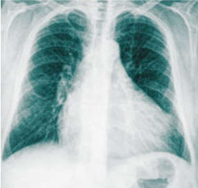
A Choque séptico.
B Choque obstrutivo.
C Choque hipovolêmico.
D Choque cardiogênico.
E Choque anafilático.
Questão 768 · Patologia Geral · 4000200518Lucas tem 32 anos e se considera uma pessoa saudável. Ao acordar esta manhã, notou que não estava conseguindo articular bem as palavras, tampouco movimentar seu membro superior direito. Foi levado ao pronto-socorro e a tomogra a computadorizada sem contraste de crânio evidenciou área de isquemia em território de artéria cerebral média. Durante a avaliação do paciente, que se encontrava hemodinamicamente estável, o eletrocardiograma demonstrou o seguinte ritmo na derivação V2: Ao analisar o eletrocardiograma, o médico plantonista notou que o ritmo estava bastante irregular pelos intervalos RR, além de ausência de onda P e complexo QRS normal – assim, fechou o diagnóstico de fibrilação atrial. Qual evento patológico que mais provavelmente explica o quadro clínico atual do paciente?
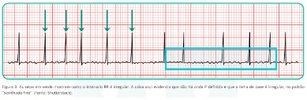
A Baixo débito cardíaco por conta da arritmia.
B Tromboembolismo arterial sistêmico.
C Tromboembolismo venoso profundo.
D Cor pulmonale.
E Infarto agudo de ventrículo esquerdo.
Questão 769 · Patologia Geral · 4000200517Wilson tem 48 anos. Depois de apresentar um quadro progressivo de perda de peso, dor abdominal inespecí ca, vômitos e icterícia, foi diagnosticado com câncer de pâncreas. Iniciou o tratamento quimioterápico, pois não havia mais proposta cirúrgica curativa para seu caso. Na segunda semana de quimioterapia, iniciou quadro de dor em membro inferior esquerdo e edema local. Pouco antes de chegar no pronto socorro, subitamente começou a sentir uma intensa sensação de falta de ar e cou bastante agitado. Enquanto estava sendo monitorizado, teve um episódio de síncope. Os sinais vitais estavam sugerindo instabilidade hemodinâmica: pressão arterial de 80 x 60 mmHg, frequência cardíaca de 143 batimentos por minuto, tempo de enchimento capilar prolongado, saturação periférica de oxigênio em 79%. Qual evento patológico que, mais provavelmente, explica o quadro clínico atual do paciente?
A Pneumonia bacteriana e choque séptico.
B Celulite em membro inferior esquerdo e choque séptico.
C Tromboembolismo pulmonar de vasos segmentares distais.
D Cor pulmonale.
E Infarto agudo de ventrículo esquerdo.
Revisar: possível letra faltando em enunciado
Questão 770 · Patologia Geral · 4000200516Wilson tem 48 anos. Depois de apresentar um quadro progressivo de perda de peso, dor abdominal inespecí ca, vômitos e icterícia, foi diagnosticado com câncer de pâncreas. Iniciou o tratamento quimioterápico, pois não havia mais proposta cirúrgica curativa para seu caso. Na segunda semana de quimioterapia, iniciou quadro de dor em membro inferior esquerdo e edema local. Pouco antes de chegar no pronto-socorro, começou a sentir uma intensa sensação de falta de ar. Qual evento patológico que mais provavelmente explica o quadro clínico atual do paciente?
A Tromboembolia pulmonar.
B Embolia gasosa.
C Embolia gordurosa.
D Embolia arterial em membro inferior esquerdo.
E Celulite em membro inferior esquerdo e sepse.
Revisar: possível letra faltando em enunciado
Questão 771 · Patologia Geral · 4000200515Paula tem 27 anos e está em sua terceira gestação. Atualmente, está com idade gestacional de 38 semanas e não teve intercorrências durante esta gravidez. Compareceu ao serviço de urgência obstétrica com queixa de redução da movimentação fetal. Em cardiotocogra a, foi evidenciado possível sofrimento fetal agudo e a equipe da maternidade optou por interromper a gestação por meio de uma cesárea de emergência. Durante a dequitação, houve fragmentação da placenta. Paula estava bem, mas cerca de 12 minutos depois, começou a apresentar, de forma abrupta, uma taquidispneia importante, cianose, dessaturação na oximetria de pulso e rebaixamento do nível de consciência. Em cerca de 2 horas, passou a apresentar equimoses e sangramento profuso pela ferida operatória. Apesar das medidas de suporte, evoluiu para óbito. Qual evento patológico que mais provavelmente explica o trágico desfecho desta paciente?
A Tromboembolia pulmonar.
B Embolia gasosa.
C Embolia gordurosa.
D Embolia de fragmento placentário.
E Embolia de líquido amniótico.
Questão 772 · Patologia Geral · 4000200514Carlos tem 23 anos e trabalha como motoboy. Durante um dia de serviço, foi atropelado em um cruzamento e fraturou tíbia, fíbula e fêmur direitos, além do fêmur esquerdo. Foi levado ao pronto-socorro da cidade e prontamente encaminhado para a sala de cirurgia. Manteve-se hemodinamicamente estável durante dois dias. No entanto, no 2º dia de pós-operatório, passou a apresentar um quadro de taquipneia, agitação psicomotora e confusão mental. Ao exame físico, foi observada a seguinte alteração no tórax do paciente: Qual evento patológico que mais provavelmente explicaria o quadro atual do paciente?

A Tromboembolia pulmonar.
B Embolia gasosa.
C Embolia gordurosa.
D Embolia em artéria cerebral média.
E Infarto pulmonar.
Questão 773 · Patologia Geral · 4000200513Quando há a formação de um trombo, sabe-se que existem diferentes destinos para essa estrutura: A.Propagação. B.Embolização. C.Dissolução. Organização e recanalização. Agora imagine os cenários clínicos a seguir: 1.Paciente com fibrilação atrial que desenvolveu um acidente vascular encefálico isquêmico (AVEi). 2.Paciente vítima de infarto agudo do miocárdio transmural com início há 4 horas, submetido à trombólise química. 3.Paciente que apresentou episódio de trombose venosa profunda em membro inferior sem tratamento adequado há dois meses, apresentando edema crônico no membro afetado. 4.Paciente vítima de trombo ebite na altura da crossa da safena magna, que evoluiu com quadro de trombose venosa profunda. Correlacione os possíveis destinos para os trombos aos casos clínicos:
A 1B - 2C - 3D - 4A.
B 1B - 2D - 3C - 4A.
C 1A - 2C - 3D - 4B.
D 1A - 2D - 3C - 4B.
E 1D - 2C - 3B - 4A.
Questão 774 · Patologia Geral · 4000200512Guilherme tem 25 anos. Vem ao pronto-socorro referindo febre há cerca de 7 dias, além de mal-estar inespecí co. No exame físico, estava febril, taquicárdico, com um sopro diastólico em ru ar em foco mitral 4+/6+, além da seguinte alteração observada nos pés: Conta que teve febre reumática quando era criança, mas só fez a profilaxia com penicilina até os 13 anos. Em coleta de hemoculturas, foi rmado o diagnóstico de endocardite bacteriana aguda. O ecocardiograma solicitado apresentou, além de sinais de calci cação patológica da valva mitral, uma estrutura aderida à válvula cardíaca. Qual o termo adequado para descrever essa estrutura?

A Trombo intramural.
B Trombo arterial.
C Trombo venoso.
D Vegetação.
E Hemorragia valvar.
Revisar: possível letra faltando em enunciado
Questão 775 · Patologia Geral · 4000200511Alfredo tem 82 anos. Fumou a vida toda e é hipertenso há mais de 3 décadas, além do histórico de 2 infartos agudos do miocárdio prévios. Vem ao pronto-socorro porque está com muita dor na perna esquerda, com início há cerca de 2 horas. Conta que, nos últimos anos, vem apresentando di culdade de caminhar, pois, sempre que anda cerca de um quarteirão, sente uma queimação forte na panturrilha e pés e necessita parar para a dor passar. No entanto, mesmo em repouso, a dor está muito forte nessas últimas horas. Ao exame físico, apresenta frialdade e palidez em todo o território infrapoplíteo da perna esquerda, os pulsos distais não estão palpáveis e não é notado edema em nenhuma das pernas. Além disso, há notável hipotro a muscular, onicodistrofia e ausência de pelos em ambas as pernas. Qual evento patológico que mais provavelmente explica o quadro atual do paciente?
A Trombose venosa profunda em membro inferior esquerdo.
B Trombose arterial em membro inferior esquerdo.
C Embolia arterial em membro inferior esquerdo.
D Celulite em membro inferior esquerdo.
E Erisipela em membro inferior esquerdo.
Questão 776 · Patologia Geral · 4000200510Flávio tem 53 anos, é portador de diabetes mellitus do tipo 2 e de hipertensão arterial sistêmica. Resolveu não tomar as vacinas contra a COVID-19 após se informar sobre o assunto em redes sociais. De um dia para o outro, acordou com dores no corpo, tosse, coriza e febre. Buscou atendimento médico e, por meio de um teste de RT-PCR, recebeu o diagnóstico de COVID-19. Em cerca de 48 horas de evolução, já estava internado e utilizando suporte ventilatório não invasivo. Com 96 horas de evolução, precisou ser entubado devido ao desconforto respiratório. Foi melhorando progressivamente, até que, sem explicação evidente, apresentou uma piora importante e abrupta no quadro de dessaturação de oxigênio e acidose respiratória. Ao exame físico, foi observado uma assimetria importante entre as duas pernas e, à palpação, a panturrilha direita estava com aspecto empastado. Qual evento patológico que mais provavelmente explica o quadro atual do paciente?
A Fenômeno tromboembólico arterial.
B Fenômeno tromboembólico venoso.
C Infarto pulmonar.
D Hemorragia alveolar maciça.
E Pneumonia bacteriana secundária.
Questão 777 · Patologia Geral · 4000200509Durante a aula de Patologia, o professor dirige-se a você e faz uma pergunta bastante elementar: pensando em fenômenos tromboembólicos, quais são os componentes da tríade de Virchow?
A Lesão endotelial, estase sanguínea, hipercoagulabilidade.
B Hipotermia, coagulopatia e acidose metabólica.
C Acidose metabólica, lesão endotelial e hipercoagulabilidade.
D Plaquetose, estase sanguínea e hipercoagulabilidade.
E Hipotermia, estase sanguínea e lesão endotelial.
Questão 778 · Patologia Geral · 4000200508Qual combinação de exames abaixo melhor avalia a hemostasia primária?
A Tempo de protrombina, avaliação da função plaquetária, dosagem de fator VIII.
B Contagem de plaquetas, tempo de tromboplastina parcial ativada, avaliação da função plaquetária.
C Tempo de protrombina, tempo de sangramento, contagem de plaquetas.
D Contagem de plaquetas, tempo de sangramento, avaliação da função plaquetária.
E Contagem de plaquetas, tempo de tromboplastina parcial ativada, tempo de protrombina.
Questão 779 · Patologia Geral · 4000200507Um jovem de 20 anos procura atendimento na emergência devido à hemartrose de joelhos. Realizados exames laboratoriais, revelaram os seguintes resultados: Tempo de ativação da protrombina (TAP) e INR sem alterações. Tempo de Tromboplastina Parcial Ativado (TPPa): 60 segundos; controle: 30 segundos. Contagem de plaquetas: 300.000/mm³. Assinale a alternativa que descreve qual etapa da hemostasia se encontra mais alterada e um possível causador do problema:
A Hemostasia primária por redução da atividade plaquetária.
B Hemostasia primária por redução absoluta na quantidade de plaquetas.
C Hemostasia secundária por deficiência de fator VII.
D Hemostasia secundária por deficiência de fator VIII.
E Hemostasia secundária por deficiência de fator X.
Questão 780 · Patologia Geral · 4000200506Observe a imagem a seguir e assinale a alternativa que faz de forma correta as correlações entre letras em preto e fatores de coagulação nas vias da hemostasia secundária:

A A - Fator VII; B - Fator IX; C - Fator Xa; D - Fibrina.
B A - Fator IX; B - Fator Xa; C - Fibrina; D - Fator VII.
C A - Fator VII; B - Fator Xa; C - Fator IX; D - Fibrina.
D A - Fibrina; B - Fator IX; C - Fator VII; D - Fator Xa.
E A - Fibrina; B - Fator VII; C - Fator Xa; D - Fator IX.
Questão 781 · Patologia Geral · 4000200505Seu Alberto tem 67 anos. Certo dia, apresentou um episódio de acidente vascular encefálico isquêmico (AVEi). Durante a investigação etiológica, um eletrocardiograma evidenciou ritmo de brilação atrial, presumidamente crônica e causadora da embolia que ocasionou o AVEi. A equipe médica responsável pelo atendimento chegou à conclusão de que não seria prudente reverter o ritmo cardíaco do paciente, e que compensaria mais submetê-lo à terapia anticoagulante para evitar formação de novos trombos e episódios de embolia. A medicação de escolha foi a varfarina, um antagonista da vitamina K. Qual dos exames laboratoriais e etapas da hemostasia a seguir provavelmente apresentarão alteração durante o tratamento de Alberto com essa medicação?
A Contagem de plaquetas e hemostasia primária.
B Tempo de protrombina e hemostasia secundária.
C Tempo de protrombina e hemostasia primária.
D Tempo de tromboplastina parcial ativada e hemostasia primária.
E Tempo de tromboplastina parcial ativada e hemostasia secundária.
Questão 782 · Patologia Geral · 4000200504Arthur tem 9 anos, e vem ao pronto-socorro apresentando um aumento importante do joelho esquerdo. Seu pai conta que o paciente bateu o joelho contra o chão ao tropeçar enquanto corria, há cerca de um dia. Também refere que, tanto ele quanto seu lho, sempre tiveram problemas com sangramentos, de forma que “qualquer coisinha vira uma catástrofe”. A punção da articulação do joelho de Arthur revelou grande quantidade de sangue no local. Além disso, um exame de análise de urina revelou hematúria microscópica. Considerando seus conhecimentos sobre hemostasia, qual dos exames laboratoriais a seguir provavelmente apresentará alteração e qual capacidade de hemostasia de Arthur se encontra mais alterada?
A Contagem de plaquetas e hemostasia primária.
B Contagem de plaquetas e hemostasia secundária.
C Tempo de protrombina e hemostasia primária.
D Tempo de tromboplastina parcial ativada e hemostasia primária.
E Tempo de tromboplastina parcial ativada e hemostasia secundária.
Questão 783 · Patologia Geral · 4000200503Melissa tem 32 anos e procura atendimento no pronto-socorro preocupada com o surgimento espontâneo de múltiplas petéquias pelo corpo há cerca de 1 semana. Além disso, refere que notou aumento importante no uxo menstrual este mês. Não apresentou febre, dores ou quaisquer outros sintomas. O exame físico não revela alterações além de petéquias distribuídas por todo o corpo, especialmente em membros inferiores. No entanto, ao examinar a cavidade oral da paciente, notou-se focos de sangramento gengival. Considerando seus conhecimentos sobre hemostasia, qual dos exames laboratoriais a seguir provavelmente apresentará alteração e qual capacidade de hemostasia de Melissa se encontra mais alterada?
A Contagem de plaquetas e hemostasia primária.
B Contagem de plaquetas e hemostasia secundária.
C Tempo de protrombina e hemostasia primária.
D Tempo de protrombina e hemostasia secundária.
E Tempo de tromboplastina parcial ativada e hemostasia secundária.
Questão 784 · Patologia Geral · 4000200502Cássio, um paciente de 43 anos, é etilista crônico e consome cerca de 60 g de álcool por dia em destilados. Há cerca de 2 meses, notou que está cando “amarelado”, além de sentir que sua barriga aumentou bastante. Ao exame físico, apresenta edema tibial de 3+/4+, bilateral e depressível, macicez móvel de decúbito presente, ginecomastia e presença de múltiplas telangiectasias em tronco. Considerando seus conhecimentos sobre patologia, qual(is) é(são) o(s) principal(is) mecanismo(s) envolvido(s) na gênese do edema no abdome deste paciente?
A Redução da pressão coloidosmótica, somente.
B Aumento da pressão hidrostática, somente.
C Obstrução linfática, somente.
D Redução da pressão coloidosmótica + obstrução linfática.
E Redução da pressão coloidosmótica + aumento da pressão hidrostática.
Questão 785 · Patologia Geral · 4000200501Sheila tem 37 anos e foi submetida a uma gastroplastia em Y de Roux para tratamento de uma síndrome metabólica e obesidade grau II. No 2º dia de pós-operatório, começou a queixar-se de dor no membro inferior esquerdo. Ao exame físico, havia evidente assimetria entre as panturrilhas, com a do lado esquerdo visivelmente edemaciada 2+/4+, com hiperemia na pele sobrejacente e dor à palpação local. Membro inferior direito sem alterações dignas de nota. Qual alternativa traz a combinação correta dos principais mecanismos envolvidos no edema apresentado pela paciente?
A Aumento da pressão hidrostática e redução da pressão coloidosmótica.
B Aumento da pressão hidrostática e inflamação local.
C Inflamação local e redução da pressão coloidosmótica.
D Obstrução linfática e redução da pressão coloidosmótica.
E Inflamação local e obstrução linfática.
Questão 786 · Patologia Geral · 4000200500Miguel tem 6 anos, e vem ao pronto-socorro devido a quadro de edema generalizado. A mãe conta que ele acordou esta manhã com a “cara toda inchada”, e que o xixi está bem escuro e em pouquíssima quantidade. Você nota que o paciente está bastante apreensivo perguntando se “vai tomar vacina”, e a mãe refere que na última vez que veio ao médico (há 14 dias), Miguel foi tratado com penicilina G benzatina após receber o diagnóstico de faringite estreptocócica. Ao exame físico, apresenta pressão arterial acima do p95, pulsos cheios e simétricos, edema bipalpebral e de membros inferiores de 3+/4+. Considerando seus conhecimentos sobre patologia, qual é o principal mecanismo envolvido na gênese do edema deste paciente?
A Redução da pressão coloidosmótica.
B Aumento da pressão hidrostática.
C Obstrução linfática.
D Eliminação de sódio e água.
E Processo inflamatório generalizado.
Questão 787 · Patologia Geral · 4000200499Simone tem 53 anos. Ao realizar a mamogra a para rastreio de câncer de mama, foi evidenciado um nódulo espiculado de 3 cm no quadrante superolateral do seio esquerdo. Foi submetida à biópsia com agulha grossa, que confirmou o diagnóstico de carcinoma ductal. Na pesquisa de linfonodos sentinelas, houve acometimento de toda a cadeia linfonodal da axila esquerda, e indicado o esvaziamento axilar. Cerca de 2 meses após o procedimento de esvaziamento axilar, passou em consulta de retorno com o seu mastologista, queixando-se de inchaço no braço esquerdo. Ao exame físico, havia evidente assimetria entre os membros superiores, sendo que o braço esquerdo apresentava um edema duro generalizado, e o direito não tinha alterações clínicas significativas. Considerando seus conhecimentos sobre patologia, qual é o principal mecanismo envolvido na gênese do edema dessa paciente?
A Redução da pressão coloidosmótica.
B Aumento da pressão hidrostática.
C Obstrução linfática.
D Retenção de sódio e água.
E Processo inflamatório generalizado.
Questão 788 · Patologia Geral · 4000200498Enzo Gabriel tem 4 anos. Vem ao pronto-socorro apresentando quadro de edema generalizado. A mãe refere que o paciente teve um resfriado há cerca de 10 dias, e que o inchaço surgiu nos últimos 3 dias. Ao exame físico, o paciente encontra-se em bom estado geral, hidratado, pulsos radiais cheios, pressão arterial entre p10 e p50, edema 4+/4+ generalizado (face, extremidades, bolsa escrotal e ascite). Ao ser questionada sobre a urina do paciente, a mãe refere que a cor e volume estão normais, porém notou grande quantidade de espuma no vaso sanitário após as micções do paciente. O exame em ta de proteinúria revelou resultado de 3+/4+. Considerando seus conhecimentos sobre patologia, qual é o principal mecanismo envolvido na gênese do edema deste paciente?
A Redução da pressão coloidosmótica.
B Aumento da pressão hidrostática.
C Obstrução linfática.
D Eliminação de sódio e água.
E Processo inflamatório generalizado.
Questão 789 · Patologia Geral · 4000200497Ernesto tem 64 anos, e é portador de hipertensão arterial sistêmica. Hoje, procurou atendimento em unidade básica de saúde pois percebeu que seus sapatos não estão mais servindo. Ao conversar com o paciente, o médico descobriu que, nos últimos meses, seu Ernesto vem evoluindo com sensação de falta de ar aos esforços moderados, apresentando alguns episódios de despertar noturno com sensação de sufocamento, além de estar precisando de 3 travesseiros para conseguir dormir melhor. Ao exame físico, apresenta edema simétrico de membros inferiores 2+/4+ até altura dos joelhos, sem hiperemia da pele sobrejacente, e presença de B3 à ausculta cardíaca. Considerando seus conhecimentos sobre patologia, qual é a principal causa do edema do paciente?
A Redução da pressão coloidosmótica.
B Aumento da pressão hidrostática.
C Obstrução linfática.
D Eliminação de sódio e água.
E Processo inflamatório em pés.
Questão 790 · Sistema Respiratório · 4000200496Um homem de 52 anos trabalha há 30 anos como mineiro e desenvolveu dispneia progressiva e tosse seca nos últimos 6 meses. Ele não apresenta febre ou outras queixas sistêmicas. No exame físico, há crepitações nas em ambos os campos pulmonares. A radiogra a de tórax mostra opacidades nodulares bilaterais e pequenas calci cações no mediastino. Qual das seguintes exposições ocupacionais está mais provavelmente relacionada com as alterações clínicas e radiológicas desse paciente?
A Poeira de amianto
B Asbestos
C Fibras de algodão
D Fumaça de solda
E Sílica
Questão 791 · Sistema Respiratório · 4000200495A pneumonia por vírus sincicial respiratório (VSR) é uma doença infecciosa comum em crianças e pode apresentar diversas manifestações clínicas e radiológicas. Uma menina de 2 anos é levada ao pediatra com tosse, febre e di culdade respiratória. O exame físico revela crepitações bilaterais e o VSR é confirmado através de um teste rápido. Qual das seguintes manifestações radiológicas é mais provável de ser encontrada em uma radiografia de tórax nesse caso?
A Consolidação lobar unilateral.
B Infiltrados intersticiais bilaterais.
C Derrame pleural volumoso.
D Hiperinflação e atelectasia.
E Nódulo pulmonar solitário.
Questão 792 · Sistema Respiratório · 4000200494O câncer de pulmão é uma das principais causas de morte relacionadas ao câncer no mundo e possui diversos tipos histológicos, com diferentes características e prognósticos. Considerando um paciente com suspeita de câncer de pulmão, assinale a alternativa correta sobre o tipo histológico e seu principal sintoma:
A Adenocarcinoma: mais comum em fumantes e frequentemente associado a dor torácica intensa.
B Carcinoma de pequenas células: geralmente é periférico e mais comum em não fumantes, apresentando dispneia.
C Carcinoma de células escamosas: costuma ser central e relacionado ao tabagismo, frequentemente associado à hemoptise.
D Carcinoma de grandes células: periférico e mais comum em não fumantes, relacionado a baqueteamento digital.
E Linfoma pulmonar: comum em pacientes imunossuprimidos e associado a tosse seca e persistente.
Questão 793 · Sistema Respiratório · 4000200493O desenvolvimento laríngeo é essencial para compreender a formação e a função da laringe e suas estruturas adjacentes. Considere o seguinte caso clínico: Um recém-nascido apresenta um choro rouco e di culdade respiratória. Após investigação, é diagnosticado com rede laríngea. Qual alternativa está incorreta em relação ao desenvolvimento laríngeo e à condição apresentada?
A A rede laríngea é causada por uma recanalização incompleta da laringe durante a 10ª semana de desenvolvimento embrionário.
B A epiglote se desenvolve da parte caudal da eminência hipofaríngea, que é formada pela proliferação do mesênquima na extremidade ventral do terceiro e quarto arcos faríngeos.
C Os músculos da laringe se desenvolvem dos mioblastos do quarto e sexto pares de arcos faríngeos e são inervados pelos ramos laríngeos do nervo vago (nervo craniano X).
D O tratamento da rede laríngea geralmente envolve obrigatoriamente a remoção cirúrgica das cartilagens laríngeas.
E A atresia laríngea é uma condição rara que resulta da falha da recanalização da laringe, causando obstrução das vias respiratórias superiores.
Questão 794 · Sistema Respiratório · 4000200492O estudo da embriologia do desenvolvimento pulmonar é fundamental para compreender a formação e a estrutura do sistema respiratório. Com base no desenvolvimento embrionário do pulmão, assinale a alternativa incorreta:
A O sulco laringotraqueal aparece no assoalho da extremidade caudal do intestino anterior primitivo.
B O endoderma de revestimento do sulco laringotraqueal forma o epitélio pulmonar e as glândulas da laringe, da traqueia e dos brônquios.
C O tecido conjuntivo, a cartilagem e o músculo liso das estruturas respiratórias se desenvolvem a partir do mesoderma esplâncnico.
D O divertículo laringotraqueal é formado após a evaginação do sulco laringotraqueal.
E A árvore respiratória se origina de múltiplos brotos respiratórios globulares.
Questão 795 · Sistema Respiratório · 4000200491Um homem de 60 anos de idade procura o médico com queixas de falta de ar e dor torácica leve. Ele tem um histórico de tabagismo de 30 anos. Exames laboratoriais mostram que a concentração de cálcio sérico alta e nível de fósforo sérico baixo. A radiogra a de tórax revela uma massa hilar de 6 cm no pulmão esquerdo. Qual das seguintes neoplasias é mais provável de estar associada a esses achados?
A Carcinoma de células escamosas
B Carcinoma anaplásico de pequenas células
C Adenocarcinoma
D Sarcoma pulmonar
E Carcinoma de grandes células
Questão 796 · Sistema Respiratório · 4000200490Uma menina de 7 anos de idade está comendo pipoca enquanto assiste a um lme. Acidentalmente, ela aspira um pedaço de pipoca e começa a tossir. No dia seguinte, ela apresenta dispneia leve e tosse. Ao exame físico, sua temperatura é de 37,2°C, o pulso é de 80/min, as respirações são de 20/min e a pressão arterial é de 95/65 mmHg. A ausculta revela diminuição do murmúrio vesicular na região inferior do pulmão esquerdo, e a percussão mostra aumento do timpanismo nessa área. Uma radiogra a de tórax mostra uma área de opacidade semicircular no lobo inferior esquerdo. Os exames laboratoriais revelam uma concentração de hemoglobina de 12,8 g/dL e uma contagem leucocitária de 5.500/mm³. Qual das seguintes complicações essa criança provavelmente desenvolveu?
A Broncopneumonia
B Pneumotórax
C Atelectasia de reabsorção
D Embolia pulmonar
E Bronquiectasia
Questão 797 · Sistema Respiratório · 4000200489Um homem de 50 anos, criador de pombos, apresenta-se com dispneia progressiva e tosse seca nos últimos 6 meses. Ao exame físico, ele apresenta crepitações nas bilaterais nos campos pulmonares inferiores. A radiogra a de tórax mostra opacidades reticulares bilaterais. Os testes de função pulmonar revelam uma diminuição na CVF e uma relação VEF1/CVF normal. A biópsia pulmonar mostra in ltrados intersticiais de linfócitos e plasmócitos, bem como pequenos granulomas. Qual é a causa mais provável desse quadro clínico e patológico?
A Exposição prolongada a asbestos
B Autoanticorpos que reagem com as membranas basais alveolares
C Infecção pelo Mycobacterium tuberculosis
D Hipersensibilidade a antígenos orgânicos inalados
E Inalação crônica de partículas de sílica
Questão 798 · Sistema Respiratório · 4000200488Um homem de 30 anos, sem histórico médico relevante, apresenta-se com febre persistente há 3 semanas e suores noturnos. Ao exame físico, os sinais vitais são estáveis, mas há linfonodos palpáveis no pescoço e axilas. A radiogra a de tórax mostra uma área de consolidação no lobo superior direito e linfonodomegalia hilar. Considerando os achados clínicos e de imagem, qual é o teste mais apropriado para confirmar o diagnóstico neste paciente?
A Teste cutâneo com tuberculina
B Anticorpo anticentromérico
C Anticorpo antinuclear
D Reagina plasmática rápida
E Fator reumatoide
Questão 799 · Sistema Respiratório · 4000200487O en sema centrolobular é uma condição que afeta a saúde pulmonar e pode levar a uma série de sintomas respiratórios e alterações na função pulmonar. Considerando um paciente com dispneia progressiva e alterações nos testes de função pulmonar, qual das seguintes características histopatológicas é mais provável de ser encontrada no enfisema centrolobular?
A Acúmulo de células gigantes de Langerhans
B Dilatação e destruição dos espaços aéreos distais aos bronquíolos terminais
C Fibrose e espessamento do septo alveolar
D Oclusão luminal por tampões de fibrina e hemácias
E Granulomas não caseosos
Questão 800 · Sistema Respiratório · 4000200486Um homem de 28 anos, sem histórico de doenças relevantes, apresenta um episódio súbito de hemoptise. No exame físico, ele tem temperatura de 36,9°C, frequência cardíaca de 84/min, frequência respiratória de 22/min e pressão arterial de 148/93 mmHg. A radiogra a do tórax mostra in ltrados de aspecto algodoeiro. Uma biópsia pulmonar realizada por via transbrônquica revela necrose localizada nas paredes alveolares, acompanhada de hemorragia intra-alveolar acentuada. Dois dias depois, o paciente desenvolve oligúria. Os níveis de creatinina sérica são de 3,0 mg/dL e os de ureia de 32 mg/dL. Qual dos exames sorológicos a seguir tem maior probabilidade de apresentar resultado positivo nesse indivíduo?
A Anticorpo antimembrana basal glomerular
B Anticorpo anticitoplasma de neutrófilos
C Anticorpo antinuclear
D Anticorpo anti-DNA topoisomerase I
E Anticorpo anti-Ro/SSA
Questão 801 · Sistema Respiratório · 4000200485Maria Luiza, paciente de 47 anos desenvolveu dispneia aguda após a realização de uma cirurgia abdominal. Ela é intubada e recebe ventilação mecânica com oxigênio a 100%. Quatro dias depois, sua saturação arterial de oxigênio diminui. A radiogra a de tórax mostra opacidade difusa em ambos os campos pulmonares. Para proceder com a investigação o médico resolve solicitar uma biópsia pulmonar transbrônquica e o exame histológico revela a presença de membranas hialinas que revestem ductos e sacos alveolares distendidos. Dentre as opções abaixo, qual é o mecanismo fisiopatológico que ocorre no pulmão do paciente descrito:
A Falha na regulação da produção de surfactante pelas células alveolares tipo II
B Disfunção endotelial com aumento da permeabilidade capilar
C Coagulação intravascular disseminada
D Dano oxidativo nas células alveolares tipo II
E Liberação de citocinas pró-inflamatórias pelos neutrófilos
Questão 802 · Sistema Respiratório · 4000200484Ana, 45 anos, apresenta ganho de peso progressivo nos últimos anos, especialmente na região abdominal, além de fraqueza muscular e estrias avermelhadas na pele. Ela não apresenta histórico de obesidade, diabetes ou hipertensão arterial. Exames revelam hipercortisolismo, e o teste de supressão com dexametasona é inconclusivo. A suspeita de síndrome de Cushing paraneoplásica é levantada, e investigação revela um tumor neuroendócrino secreto de ACTH. Qual das seguintes neoplasias mais provavelmente está presente nesse paciente?
A Adenocarcinoma
B Carcinoide brônquico
C Carcinoma de pequenas células
D Carcinoma de células escamosas (CEC)
E Linfoma não Hodgkin
Questão 803 · Sistema Respiratório · 4000200483Maria, 60 anos, fumante crônica, apresenta tosse com produção de escarro, falta de ar e perda de peso nos últimos meses. Ao realizar uma radiogra a de tórax, é observada uma massa pulmonar. Durante a consulta com o médico, Maria pergunta qual seria o subtipo mais comum de câncer de pulmão. Qual das seguintes alternativas o médico deveria responder?
A Carcinoma de células escamosas
B Carcinoma de células grandes
C Carcinoma de pequenas células
D Adenocarcinoma
E Carcinoma bronquioloalveolar
Questão 804 · Sistema Respiratório · 4000200482Uma mulher de 35 anos de idade apresentou dispneia progressiva com tosse ao longo dos últimos 8 anos. Há 1 ano, sua tosse se tornou produtiva, com expectoração de muco espesso. Ao examiná-la, sua temperatura é normal e uma percussão torácica revela som maciço em todos os campos pulmonares. A radiogra a de tórax mostra opacidades difusas em ambos os pulmões. Uma biópsia transbrônquica é realizada, e a microscopia óptica revela achados patológicos significativos, assim como corpos lamelares na microscopia eletrônica. Considerando essas informações, quais anticorpos são mais prováveis de serem a causa subjacente da doença dessa paciente?
A Fator estimulante de colônias de granulócitos e macrófagos
B CFTR
C DNA topoisomerase I
D Mieloperoxidase neutrofílica
E 1-antitripsina α
Questão 805 · Sistema Respiratório · 4000200481João, 22 anos, é portador de brose cística diagnosticada na infância. Ele apresenta tosse crônica e produção de expectoração desde a adolescência, apesar do tratamento adequado. Um exame de imagem recente revelou bronquiectasias. Qual dos seguintes achados radiológicos é característico da bronquiectasia?
A Nódulos múltiplos com escavação central
B Áreas de opacidade em vidro fosco
C Espessamento brônquico irregular e dilatação das paredes brônquicas
D Infiltração intersticial com broncograma aéreo
E Adenopatias hiliares bilaterais
Questão 806 · Sistema Respiratório · 4000200480Uma menina de 11 anos participou de um programa de triagem de saúde de rotina e desenvolveu uma área de induração de 12 mm no antebraço esquerdo 2 dias após a injeção intradérmica de 0,1 mL do antígeno de PPD. Ela parece saudável e sem outras queixas. Em razão da sua exposição a bactéria Mycobacterium tuberculosis uma radiogra a de tórax é solicitada. Dentre as opções abaixo, qual é a anormalidade mais provável de ser observada na radiografia?
A Derrame pleural
B Atelectasia
C Nenhum achado anormal
D Nódulo pulmonar solitário
E Infiltrados intersticiais difusos
Questão 807 · Sistema Respiratório · 4000200479Maria, 35 anos, é uma professora de ensino fundamental que começou a apresentar episódios de falta de ar e chiado no peito há cerca de seis meses. Ela relata que isso ocorre principalmente durante o exercício físico e quando ela ca exposta a irritantes respiratórios, como fumaça de cigarro e produtos de limpeza. Os sintomas geralmente desaparecem após algumas horas, mas ela se sente cansada e fraca por algum tempo depois. Ela nunca teve alergias significativas e não há histórico de asma na família. Com base no caso clínico, podemos pensar numa forma de asma que é a não atópica. Qual é a principal diferença entre a asma atópica e a asma não atópica?
A A gravidade dos sintomas da asma.
B A idade de início da doença
C A presença ou ausência de história familiar positiva para asma
D A presença ou ausência de sensibilização a alérgenos
E O tipo de vírus que desencadeia a doença
Revisar: possível letra faltando em enunciado
Questão 808 · Sistema Respiratório · 4000200478Um homem de 60 anos de idade, ex-tabagista, apresenta dispneia aos esforços, tosse crônica e produção de expectoração. Ao exame físico, é notado um aumento da distensão torácica, achatamento do diafragma e diminuição dos ruídos respiratórios, principalmente em regiões basais. A radiogra a de tórax revela hiperinsu ação pulmonar, achatamento diafragmático, diminuição da vascularização periférica e aumento da transparência dos campos pulmonares, especialmente nos ápices. A tomogra a computadorizada de tórax confirma o diagnóstico de en sema pulmonar, com maior predominância de lesões no lobo superior esquerdo. Com base no caso clínico apresentado, qual é o mecanismo siopatológico mais provável por trás do enfisema pulmonar?
A A deficiência de a1-antitripsina, uma enzima proteolítica que regula a atividade da elastase, causando degradação do parênquima pulmonar e fibrose.
B O aumento da produção de colágeno pelos fibroblastos pulmonares, levando a fibrose intersticial e perda da elasticidade pulmonar.
C A ativação da resposta inflamatória e a produção de radicais livres de oxigênio, que causam danos oxidativos e degradação do tecido pulmonar.
D A inibição da atividade do surfactante pulmonar, que leva a colapso e obstrução das vias aéreas.
E A redução da pressão oncótica dos capilares pulmonares, que leva a um aumento da retenção de líquidos nos espaços intersticiais e alvéolos
Questão 809 · Sistema Respiratório · 4000200477Um homem de 52 anos procura o médico com queixa de dispneia progressiva e perda de peso de 5 kg nos últimos 2 anos. Ele fumou 1 maço de cigarros por dia por mais de 20 anos, mas não fuma há 2 anos. O exame físico revela um aumento do diâmetro anteroposterior do tórax e uma redução dos sons pulmonares à ausculta. A radiogra a de tórax mostra pulmões hipertransparentes em ambos os campos, com transparência especialmente acentuada nos lobos superiores. Realizada espirometria e os testes de função pulmonar revelam uma redução da relação VEF1/CVF que está em 0.6. Qual das opções a seguir é a mais provável causa patogênica para essa doença?
A Transporte anormal do íon sódio na célula epitelial
B Redução da motilidade ciliar com braços de dineína irregulares
C Liberação de elastase pelos macrófagos
D Comprometimento da liberação hepática de
E Recrutamento de linfócitos e liberação de interleucina-4
Questão 810 · Sistema Respiratório · 4000200476Um paciente do sexo masculino, com 36 anos de idade, apresenta subitamente uma di culdade respiratória grave com sibilos e é levado imediatamente para o departamento de emergência. Durante o exame físico, a temperatura do paciente é de 37°C, o pulso é de 90/min, a frequência respiratória é de 16/min e a pressão arterial é de 125/80 mmHg. A radiogra a de tórax mostra um aumento na transparência em ambos os campos pulmonares. Uma amostra de escarro é coletada e analisada, revelando a presença de espirais de de Curschmann, cristais de Charcot-Leyden e células inflamatórias agudas em um ambiente de muco abundante. Uma significativa parte das células inflamatórias são eosinófilos. Com base nesses achados, qual é o diagnóstico mais provável?
A Asma brônquica
B Bronquiectasia
C Enfisema centrolobular
D Fibrose cística
E Tuberculose pulmonar
Questão 811 · Sistema Respiratório · 4000200475A hipoplasia pulmonar é uma condição rara em que há um desenvolvimento defeituoso dos dois pulmões. O que é a hipoplasia pulmonar?
A Uma condição em que há excesso de desenvolvimento dos pulmões
B Uma condição em que há redução da capacidade de troca gasosa no pulmão
C Uma condição em que há ausência de desenvolvimento dos pulmões
D Uma condição em que há desenvolvimento defeituoso dos dois pulmões
E Uma condição em que há aumento da pressão arterial pulmonar
Questão 812 · Fisiologia do Sistema Respiratório · 4000200474O Ritmo de Cheyne-Stokes é uma forma de respiração periódica que ocorre quando há hiperventilação seguida de depressão do centro respiratório cerebral. Sobre o Ritmo de Cheyne-Stokes, assinale a alternativa incorreta:
A O Ritmo de Cheyne-Stokes ocorre por ciclos quando a pessoa respira excessivamente e promove a remoção de grande quantidade de CO2 do sangue pulmonar e aumento simultâneo do O2 sanguíneo.
B O Ritmo de Cheyne-Stokes é uma forma de respiração periódica que pode ocorrer em qualquer indivíduo, mas sob condições normais é muito "amortecido".
C A depressão do centro respiratório cerebral ocorre no momento em que o sangue hiperventilado finalmente chega ao centro respiratório cerebral.
D O Ritmo de Cheyne-Stokes não é influenciado por fatores como doenças cardíacas, sendo um mecanismo que é relacionado a doenças neurológicas e traumas cranianos.
E O ciclo de respiração periódica do Ritmo de Cheyne-Stokes é caracterizado por hiperventilação seguida de depressão do centro respiratório cerebral.
Questão 813 · Fisiologia do Sistema Respiratório · 4000200473Maria, 42 anos, casada, com dor de cabeça, tontura, náusea e desmaio após sair de incêndio em sua casa. Ao chegar no Pronto Socorro o médico de plantão faz a hipótese diagnóstica de intoxicação por monóxido de carbono. Qual mecanismo fisiopatológico está por trás desse episódio?
A O CO inibe a ação da mioglobina, desacelerando a respiração muscular
B O CO se combina com a hemoglobina, deslocando o oxigênio do sangue
C O CO interfere na produção de ATP, comprometendo a função celular
D O CO estimula a produção de óxido nítrico, causando vasodilatação e hipóxia
E O CO age diretamente no centro respiratório, acelerando a respiração
Questão 814 · Fisiologia do Sistema Respiratório · 4000200472A curva de dissociação de oxigênio da hemoglobina é um gráfico que representa a relação entre a concentração de oxigênio e a a nidade da hemoglobina por ele. Esta curva é importante porque ajuda a entender como a hemoglobina transporta oxigênio pelo corpo e como essa capacidade pode ser afetada por fatores como doenças, medicamentos e outros. Por exemplo paciente sépticos, traumatizados e em condições patológicas podem apresentar distúrbios que correspondam as suas necessidades atuais de oxigênio. Qual dos fatores abaixo menos afeta a curva de dissociação de oxigênio da hemoglobina?
A pH do sangue
B Pressão parcial de dióxido de carbono (pCO2) no sangue
C Concentração de hemoglobina no sangue
D Temperatura do sangue
E Concentração de 2,3-BPG no sangue
Questão 815 · Fisiologia do Sistema Respiratório · 4000200471Um menino de três anos de idade foi levado à emergência com quadro de desidratação grave, afebril, taquipneico e taquicárdico, apresentando os seguintes exames à entrada: pH 7; pCO2 30 mmHg; e Bic 9 mmol/L. Sabendo que os valores de referência de pH seriam: 7.35-7.45, Bic: 22-26 mEq/L, pCO2: 35-45 mmHg Nesse caso hipotético, a administração de bicarbonato de sódio pode ter como consequência o(a):
A desvio da curva de dissociação da hemoglobina para a direita, ocasionando maior liberação de oxigênio tecidual.
B desvio da curva de dissociação da hemoglobina para a direita, com consequente menor afinidade desta pelo oxigênio.
C desvio da curva de dissociação de hemoglobina para a esquerda, com maior afinidade desta pelo oxigênio.
D desvio da curva de dissociação de hemoglobina para a esquerda, com maior liberação de oxigênio tecidual.
E manutenção da condição atual da curva de dissociação de hemoglobina.
Questão 816 · Fisiologia do Sistema Respiratório · 4000200470A gasometria de um motoboy que sofreu um acidente sem usar capacete mostra uma PaO2 de 50 mmHg e uma PaCO2 de 80 mmHg, além de um pH de 7,1 e uma concentração de HCO₃ a maioria do CO2 está sendo transportado é através de:
A Ligação com proteínas no plasma
B Ligação com a hemoglobina
C Como íons bicarbonato
D Dissolvido na água.
E Em forma gasosa.
Questão 817 · Fisiologia do Sistema Respiratório · 4000200469Quando o índice Va/Q é igual a zero, o que ocorre com as pressões parciais alveolares de oxigênio e dióxido de carbono?
A A pressão parcial de oxigênio aumenta enquanto a pressão parcial de dióxido de carbono permanece constante.
B A pressão parcial de oxigênio e dióxido de carbono se mantêm estáveis já que não está ocorrendo nenhum troca.
C A pressão parcial de oxigênio e dióxido de carbono se equilibram devido à difusão entre o sangue e o ar alveolar
D A pressão parcial de oxigênio cai enquanto a pressão parcial de dióxido de carbono aumenta.
E A pressão parcial de oxigênio e dióxido de carbono não têm relação direta com o índice Va/Q.
Questão 818 · Fisiologia do Sistema Respiratório · 4000200468Quais são os principais fatores que contribuem para o aumento da capacidade de difusão de oxigênio durante o exercício?
A A dilatação dos capilares pulmonares e a proporção ventilação-perfusão
B A constrição dos capilares pulmonares e a maior ventilação alveolar
C A maior ventilação alveolar e a queda da perfusão, otimizando a troca
D A dilatação extra dos capilares já abertos e maior proporção de lactato nos pulmões favorecendo o metabolismo anaeróbio
E A abertura de muitos capilares pulmonares e a queda da ventilação no ápice enquanto a base pulmonar aumenta.
Questão 819 · Fisiologia do Sistema Respiratório · 4000200467Qual é o fator principal que determina a difusão de gases respiratórios na membrana alveolar-capilar?
A A concentração do gás nos alvéolos.
B A concentração do gás nos capilares pulmonares.
C A diferença de pressão entre o gás nos alvéolos e o gás nos capilares pulmonares.
D A temperatura da membrana alveolar-capilar.
E A velocidade das moléculas do gás
Questão 820 · Fisiologia do Sistema Respiratório · 4000200466Qual dos seguintes gases é responsável pela difusão efetiva dos alvéolos para o sangue, devido à pressão parcial maior nos alvéolos?
A Nitrogênio
B Oxigênio
C Dióxido de carbono
D Gás hélio
E Gás metano
Questão 821 · Fisiologia do Sistema Respiratório · 4000200465A difusão gasosa no pulmão é in uenciada por vários fatores, um deles é o coe ciente de difusão de cada gás. Em relação ao coeficiente de difusão de cada gás, assinale a alternativa correta:
A O coeficiente de difusão do O₂ é maior que o coeficiente de difusão do CO₂
B O coeficiente de difusão do CO₂ é cerca de 2x maior que o coeficiente de difusão do nitrogênio
C O coeficiente de difusão do nitrogênio é maior que o coeficiente de difusão do O₂
D O coeficiente de difusão do CO₂ é maior que o coeficiente de difusão do O₂
E O coeficiente de difusão do nitrogênio é maior que o coeficiente de difusão do CO₂
Revisar: possível letra faltando em enunciado
Questão 822 · Fisiologia do Sistema Respiratório · 4000200464A anatomia da membrana respiratória é fundamental para entendermos a troca gasosa durante a respiração. Algumas condições podem aumentar a espessura da membrana respiratória, o que pode interferir na difusão de gases. Em relação à espessura da membrana respiratória e seus efeitos na difusão gasosa, assinale a alternativa incorreta:
A Uma espessura maior da membrana respiratória pode tornar a troca gasosa mais lenta.
B O aumento da espessura da membrana respiratória pode ser causado por líquido de edema.
C A difusão gasosa é diretamente proporcional à espessura da membrana respiratória.
D O aumento de mais de 2 a 3 vezes a espessura normal pode interferir significativamente na troca respiratória normal de gases.
E Algumas doenças pulmonares podem causar aumento da espessura da membrana respiratória.
Questão 823 · Fisiologia do Sistema Respiratório · 4000200463Conhecer as unidades básicas respiratórias nos ajuda a entender melhor como funciona o processo de difusão de gases. Qual é a denominação da unidade respiratória composta do bronquíolo respiratório, ductos alveolares, átrios e alvéolos?
A Lobo pulmonar
B Saco alveolar
C Lóbulo Respiratório
D Sistema de Troca Gasosa
E Bronquíolo Pulmonar
Questão 824 · Fisiologia do Sistema Respiratório · 4000200462Sobre a importância da Substituição Lenta do Ar Alveolar no controle respiratório, marque a alternativa correta:
A Ajuda a evitar mudanças repentinas nas concentrações de gases no sangue.
B Torna o mecanismo de controle respiratório pouco eficiente
C Não evita aumentos e quedas excessivos da oxigenação tecidual.
D Não é importante na prevenção da interrupção temporária da respiração.
E Não influencia a concentração tecidual de CO₂ e do pH tecidual.
Questão 825 · Fisiologia do Sistema Respiratório · 4000200461Com base na comparação das composições do ar alveolar e atmosférico, escolha a alternativa que explique adequadamente por que essas composições são diferentes.
A O ar alveolar é misturado constantemente com o ar atmosférico, resultando em concentrações similares de gases.
B A absorção do O₂ pelo sangue pulmonar e a difusão do CO₂ dos alvéolos para o ar pulmonar é o único motivo das diferenças de concentração de gases.
C A umidificação do ar atmosférico seco antes de atingir os alvéolos resulta em concentrações diferentes de gases.
D O ar alveolar é substituído completamente pelo ar atmosférico a cada respiração, levando às diferenças nas concentrações de gases.
E O ar alveolar é criado com concentrações diferentes de gases, independentemente do ar atmosférico.
Questão 826 · Fisiologia do Sistema Respiratório · 4000200460O ar alveolar sofre diversos processos transformacionais na difusão de gases. Qual é a diferença entre a composição de gases presente no ar alveolar e no ar atmosférico?
A A composição do ar alveolar é semelhante à do ar atmosférico.
B O ar alveolar tem concentrações maiores de O₂ e menores de CO₂ que o ar atmosférico.
C O ar alveolar tem concentrações menores de O₂ e maiores de CO₂ que o ar atmosférico.
D A concentração de O₂ no ar alveolar é a mesma que no ar atmosférico, mas a concentração de CO₂ é maior.
E A concentração de O₂ no ar alveolar é a mesma que no ar atmosférico, mas a concentração de CO₂ é menor.
Questão 827 · Fisiologia do Sistema Respiratório · 4000200459Qual dos seguintes gases é comumente utilizado para avaliar a capacidade de difusão de oxigênio nos pulmões?
A HCN
B O₂
C N₂
D CO₂
E CO
Questão 828 · Fisiologia do Sistema Respiratório · 4000200458Com relação à difusão de gases entre a fase gasosa nos alvéolos e a fase dissolvida no sangue pulmonar, assinale a alternativa incorreta:
A A difusão efetiva do gás é determinada pela diferença entre as duas pressões parciais.
B Se a pressão parcial do gás for maior na fase gasosa nos alvéolos, como no caso do oxigênio, mais moléculas se difundirão para o sangue do que na outra direção.
C Se a pressão parcial do gás for maior no estado dissolvido no sangue, como no caso do CO2, a difusão efetiva ocorrerá para a fase gasosa nos alvéolos.
D A intensidade com que as moléculas escapam da fase dissolvida no sangue é inversamente proporcional à sua pressão parcial no sangue.
E A pressão parcial de cada gás na mistura dos gases respiratórios alveolares tende a forçar as moléculas do gás para a solução no sangue dos capilares alveolares.
Questão 829 · Patologia Geral · 4000200457Uma mulher de 73 anos, índice de massa corporal (IMC) de 16,5 kg/m², portadora de diabetes mellitus do tipo 2 insulinodependente e doença arterial obstrutiva crônica, precisou ser submetida a uma colecistectomia aberta de urgência devido a um quadro de colecistite aguda. Na recuperação pós-operatória, evoluiu com infecção de sítio cirúrgico. Foi observada dificuldade na cicatrização da ferida operatória. Dentre os fatores a seguir, qual deles não dificultou o processo cicatricial?
A Diabetes mellitus.
B Doença arterial obstrutiva crônica.
C Infecção de sítio cirúrgico.
D IMC.
E Produção endógena de glicocorticoides em resposta ao trauma.
Questão 830 · Fisiologia do Sistema Respiratório · 4000200456Todas as alterações a seguir podem promover o desequilíbrio do acúmulo e da absorção de líquido pleural, podendo levar ao derrame pleural, EXCETO:
A pressão hidrostática diminuída.
B pressão intrapleural negativa aumentada.
C permeabilidade capilar aumentada.
D pressão oncótica plasmática diminuída.
E drenagem linfática diminuída ou interrompida
Questão 831 · Fisiologia do Sistema Respiratório · 4000200455Qual das seguintes alternativas NÃO é uma causa de derrame pleural?
A Infecção ou inflamação nas superfícies da cavidade pleural
B Diminuição acentuada da pressão coloidosmótica do plasma
C Excesso de exercício físico
D Insuficiência cardíaca
E Bloqueio da drenagem linfática da cavidade pleural
Questão 832 · Fisiologia do Sistema Respiratório · 4000200454A anatomia da pleural é fundamental para compreender a siologia respiratória e em cirurgias torácicas, sabendo suas relações entre si e com os demais órgãos. Em relação ao espaço pleural, qual das opções a seguir é verdadeira?
A A fina camada de líquido mucoide entre as pleuras parietal e visceral é responsável por dificultar o deslizamento dos pulmões durante a respiração.
B A quantidade de líquido presente na cavidade pleural é significativa e pode causar complicações respiratórias.
C Os vasos linfáticos que se abrem diretamente da cavidade pleural para o mediastino ajudam a manter o excesso de líquido na cavidade pleural.
D O espaço pleural é considerado espaço físico devido à sua largura.
E O espaço pleural é considerado um espaço potencial devido à sua estreiteza e ao fato de que normalmente não é um espaço físico definido.
Questão 833 · Patologia Geral · 4000200453Um homem de 33 anos foi vítima de queimadura com álcool ao tentar acender uma churrasqueira. Chegou ao pronto-socorro apresentando queimaduras de 2º grau em toda a face anterior do antebraço direito. Foi realizado desbridamento da ferida, de forma que a derme profunda conseguiu ser preservada. Cerca de 4 dias após a lesão, qual achado no ferimento indica presença de boa evolução do processo cicatricial?
A Presença de tecido de granulação.
B Remodelamento das fibras de colágeno.
C Processo inflamatório significativo.
D Surgimento de focos de necrose devido à ação macrofágica.
E Presença abundante de exsudação.
Questão 834 · Fisiologia do Sistema Respiratório · 4000200452O edema pulmonar é uma das principais formas em que o pulmão pode ser lesado por doenças circulatórias ou de acometimento sistêmico. Constitui uma das principais causas de edema pulmonar:
A Insuficiência cardíaca direita.
B Lesão das paredes dos capilares pulmonares por infecções respiratórias.
C Aumento da pressão arterial pulmonar devido a obstruções das artérias pulmonares.
D Diminuição do funcionamento dos linfáticos pulmonares.
E Doença da válvula tricúspide.
Questão 835 · Fisiologia do Sistema Respiratório · 4000200451Qual é o mecanismo que impede os alvéolos pulmonares de se encherem com líquido nas condições normais e como esse mecanismo mantém os alvéolos secos?
A A pressão negativa nos espaços intersticiais dos capilares pulmonares e o sistema linfático pulmonar impede o acúmulo de líquido nos alvéolos, sugando qualquer quantidade extra pelo processo mecânico para o interstício pulmonar e remove o excesso através dos linfáticos pulmonares.
B A umidade da superfície de revestimento dos alvéolos é mantida pelo epitélio, que vaza uma pequena quantidade de líquido para evitar a secura dos alvéolos.
C A atividade muscular das paredes dos alvéolos mantém a pressão negativa no espaço intersticial, impedindo a entrada de líquido nos alvéolos.
D A alta temperatura nos alvéolos causa a evaporação do líquido presente, mantendo seca a região
E A presença de surfactante pulmonar impede a aderência do líquido às paredes dos alvéolos, mantendo a pressão negativa nos espaços intersticiais e evitando o acúmulo de líquido nos alvéolos.
Questão 836 · Fisiologia do Sistema Respiratório · 4000200450Em relação às zonas de West, que descrevem o uxo sanguíneo em diferentes regiões pulmonares, assinale a alternativa incorreta:
A A pressão arterial pulmonar na parte superior do pulmão é inferior à pressão na parte inferior.
B O fluxo de sangue por unidade de tecido pulmonar é maior na parte inferior do pulmão.
C A zona 1 é caracterizada por uma ausência de fluxo sanguíneo durante todas as partes do ciclo cardíaco.
D A zona 2 é presente em grande parte nos ápices pulmonares quando o paciente está em posição ortostática
E A zona 3 é caracterizada por um fluxo sanguíneo intermitente, somente durante os picos da pressão arterial pulmonar.
Questão 837 · Patologia Geral · 4000200449Dentre os casos a seguir, em qual deles não será possível observar a regeneração do tecido acometido?
A Paciente de 13 anos que, durante tarde ensolarada na praia, apresentou queimaduras de 1º grau.
B Paciente de 43 anos que apresentou crise de hemólise autoimune por atividade de lúpus eritematoso sistêmico.
C Paciente de 2 anos que apresentou quadro de gastroenterocolite por infecção pelo rotavírus.
D Paciente de 35 anos que, durante terapia imunossupressora para tratamento de artrite reumatoide, apresentou um abscesso hepático.
E Paciente de 18 anos que, após inalar fumaça em um ambiente incendiado, apresentou queimaduras restritas à mucosa das vias aéreas.
Questão 838 · Fisiologia do Sistema Respiratório · 4000200448O uxo sanguíneo pulmonar difere entre a base, região média e região apical devido às características da pressão alveolar dada coluna de ar no pulmão. Em um paciente que inicia exercício aeróbico, o que ocorre respectivamente em seu fluxo sanguíneo na (1) base pulmonar e no (2) ápice pulmonar?
A (1) sobe e (2) sobe
B (1) diminui e (2) sobe
C (1) sobe e (2) diminui
D (1) sobe e (2) não muda
E (1) não muda e (2) sobe
Questão 839 · Fisiologia do Sistema Respiratório · 4000200447O pulmão pode servir como um grande reservatório sanguíneo para o corpo humano, entretanto ele também pode em alguma situação aprisionar sangue além do normal. Você consegue pensar em quais das alternativas abaixo teríamos um mecanismo que geraria acúmulo de sangue na circulação pulmonar?
A Estenose da artéria pulmonar
B Estenose na válvula mitral
C Trombose causando uma suboclusão da valvula tricúspide
D Congestão na veia cava superior
E Estenose na região da aorta abdominal
Questão 840 · Fisiologia do Sistema Respiratório · 4000200446Qual é a principal função dos pulmões no sistema circulatório do corpo além da oxigenação do sangue?
A Armazenar 9% do volume de sangue e servir como um reservatório da circulação
B Distribuir o sangue para os tecidos do corpo.
C Filtrar o sangue para depurar substâncias.
D Controlar a pressão arterial.
E Regular a temperatura do sangue.
Questão 841 · Fisiologia do Sistema Respiratório · 4000200445Um cateter de Swan-Ganz é um dispositivo usado para medir pressões dentro do sistema cardiovascular. É usado para obter informações sobre o volume sanguíneo, a saturação de oxigênio e a distribuição sanguínea. Ao ser inserido na artéria pulmonar e obtido a pressão pulmonar em cunha, qual das seguintes pressões estamos querendo monitorar?
A Pressão pulmonar total
B Pressão ventricular direita
C Pressão atrial esquerda
D Pressão arterial média
E Pressão sistólica da artéria pulmonar
Questão 842 · Fisiologia do Sistema Respiratório · 4000200444Em pacientes com doenças pulmonares crônicas como a DPOC (Doença Pulmonar Obstrutiva Crônica) podem se formar resistências no trato respiratório que di cultam a ventilação. A principal estrutura que pode gerar essa limitação da ventilação é(são) o(s):
A Sacos alveolares
B Brônquios principais
C Brônquios terciários
D Traqueia
E Bronquíolos
Questão 843 · Fisiologia do Sistema Respiratório · 4000200443A camada de muco que reveste nosso trato respiratório é importantíssima para a manutenção da homeostase do nosso sistema. Qual é o tipo de célula responsável pela secreção de muco no trato respiratório?
A Células nervosas
B Células glandulares
C Células caliciformes
D Pneumócitos tipo 1
E Pneumócitos tipo 2
Questão 844 · Fisiologia do Sistema Respiratório · 4000200442Uma camada de muco recobre toda a superfície do trato respiratório. Qual é a sua função e qual tipo celular é responsável pela sua produção?
A A função do muco é evitar que pequenas partículas do ar inspirado alcancem os alvéolos, e ele é produzido por células nervosas do revestimento epitelial das vias aéreas.
B A função do muco é proteger as vias aéreas de partículas estranhas, e ele é produzido por pequenas glândulas na pele.
C A função do muco é manter a superfície das vias aéreas úmida, e ele é produzido por células mucosas caliciformes e pequenas glândulas submucosas.
D A função do muco é regular a temperatura do ar inspirado, e ele é produzido apenas por células mucosas caliciformes.
E A função do muco é fornecer nutrientes para as células das vias aéreas, e ele é produzido por células glandulares localizadas nos brônquios.
Questão 845 · Fisiologia do Sistema Respiratório · 4000200441Há substâncias e reações presentes nos próprios pulmões que são geralmente ativas em produzir a constrição bronquiolar. Quais são as principais substâncias secretadas localmente que podem causar constrição bronquiolar?
A histamina e substância de reação lenta da anafilaxia
B cigarro, poeira e dióxido de enxofre
C elementos ácidos na poluição
D reações locais neurais
E surfactantes
Questão 846 · Fisiologia do Sistema Respiratório · 4000200440Qual das seguintes afirmações é verdadeira sobre o espaço morto anatômico?
A É o volume dos alvéolos que não estão funcionando corretamente.
B É o volume dos espaços que não estão envolvidos nas trocas gasosas.
C É o volume dos alvéolos que estão funcionando corretamente.
D É o volume dos espaços que estão envolvidos nas trocas gasosas.
E Nenhuma das alternativas está correta.
Questão 847 · Fisiologia do Sistema Respiratório · 4000200439Quais são os principais fatores que afetam o espaço morto?
A Altitude e idade
B Pressão atmosférica e idade
C Altitude e pressão atmosférica
D Idade e doenças pulmonares
E Altitude, pressão atmosférica e doenças pulmonares
Questão 848 · Patologia Geral · 4000200438Homem de 56 anos, obeso e tabagista, procurou atendimento em pronto-socorro devido à queixa de dor torácica com irradiação para mandíbula, sudorese e náuseas, com início há 8 horas. Foi diagnosticado com infarto agudo transmural do miocárdio e, mesmo sendo submetido à trombólise química, evoluiu com área extensa de brose na parede anterior do ventrículo esquerdo. Em consulta de seguimento, assustado e determinado a mudar o estilo de vida, pergunta se caso comece a “se cuidar mais”, o coração voltará a ser como antes. Qual das afirmativas traz uma resposta adequada para o paciente?
A Ao retirar o fator agressor (aterosclerose e obstrução de coronária), o miocárdio conseguirá passar por processo de regeneração e recuperar parte de sua função prévia.
B Ao retirar o fator agressor (aterosclerose e obstrução de coronária), o miocárdio conseguirá passar por processo de cicatrização e recuperar parte de sua função prévia.
C Infelizmente, uma vez instalado o processo de fibrose no coração, não há nada que possa ser feito além de evitar o desenvolvimento de novos focos de lesão.
D A presença de fibrose no miocárdio não afeta a função cardíaca. O problema é a perda das fibras de condução elétrica, de forma que o uso de um marca-passo está indicado.
E Além de controlar os fatores de risco, é possível utilizar medicações que aceleram o processo de regeneração miocárdica, a fim de recuperar a função do segmento afetado.
Questão 849 · Fisiologia do Sistema Respiratório · 4000200437A traqueostomia é o procedimento cirúrgico que consiste na abertura da parede anterior da traqueia, comunicando-a com o meio externo por meio de uma cânula, possibilitando a permeabilidade da via aérea. Considere um paciente de 65 anos, portador de doença pulmonar obstrutiva crônica, diabético e obeso, que se encontra intubado há 15 dias, em UTI devido a um quadro pneumônico sem melhora expressiva que permita extubação em 48h. Assinale a alternativa incorreta sobre a traqueostomia nesta situação sobre como essa parâmetros da alteração fisiológica:
A Diminui o espaço morto anatômico
B Não altera a capacidade pulmonar vital
C Aumenta o volume corrente
D Facilita a higiene das vias aéreas
E Pode ser causa de infecção devido à presença da cânula na traqueia.
Questão 850 · Fisiologia do Sistema Respiratório · 4000200436Qual é a distinção entre o espaço morto anatômico e o espaço morto fisiológico?
A O espaço morto anatômico refere-se ao volume dos espaços que não participam na troca de gases, enquanto o espaço morto fisiológico abrange os alvéolos que não estão funcionando adequadamente.
B O espaço morto anatômico se refere ao volume dos alvéolos que não estão funcionando adequadamente, enquanto o espaço morto fisiológico abrange os espaços que não participam na troca de gases.
C O espaço morto anatômico se refere ao volume dos alvéolos que estão funcionando adequadamente, enquanto o espaço morto fisiológico abrange os espaços que participam na troca de gases.
D O espaço morto anatômico se refere ao volume dos espaços que participam na troca de gases, enquanto o espaço morto fisiológico abrange os alvéolos que estão funcionando adequadamente.
E O espaço morto anatômico se refere ao volume dos espaços que não participam na troca de gases devido a malformações, enquanto o espaço morto fisiológico abrange os alvéolos que não estão funcionando adequadamente.
Questão 851 · Fisiologia do Sistema Respiratório · 4000200435Qual é o nome dado ao ar que preenche as vias respiratórias onde não ocorrem trocas gasosas, como o nariz, a faringe e a traqueia?
A Espaço vivo
B Capacidade Respiratória total
C Espaço inútil
D Espaço morto
E Espaço inativo
Questão 852 · Fisiologia do Sistema Respiratório · 4000200434Conhecer o volume corrente pulmonar é importante para entender como o corpo está lidando com a respiração e avaliar possíveis problemas respiratórios, como a obstrução das vias aéreas ou o enfraquecimento dos músculos respiratórios. Além disso, é essencial para acompanhar a e cácia de tratamentos e intervenções relacionadas à respiração. Qual é a definição de volume corrente?
A O volume de ar movimentado pelos pulmões durante uma respiração forçada
B A quantidade de ar que pode ser inspirada além do volume corrente normal
C A quantidade de ar que permanece nos pulmões após uma expiração normal
D O volume de ar movimentado pelos pulmões durante uma respiração normal
E A quantidade máxima de ar que pode ser expirada depois de inspirar completamente.
Questão 853 · Patologia Geral · 4000200433Uma criança de 6 anos estava brincando com um gato e, ao apertar a cauda do bichano, levou uma bela de uma unhada no rosto. Foi prontamente levada à UBS do bairro para que o ferimento fosse avaliado. O médico, ao examinar, constatou que se tratava de um ferimento bastante super cial, com rompimento parcial da epiderme, apenas. Preocupada, a mãe perguntou se a cicatriz caria muito “feia”. Considerando que você é o médico nessa situação, qual seria a resposta mais adequada?
A O ferimento foi superficial, de forma que a regeneração plena é possível, processo que não deixa cicatriz caso não ocorra nenhuma complicação.
B Caso seja realizada sutura do ferimento, o risco de cicatriz diminui consideravelmente.
C A cicatriz nessa situação é inevitável, tendo em vista o grau de contaminação da lesão.
D Deve ser estudada a possibilidade de um retalho de pele no local desse ferimento, dado o grau de contaminação do ferimento.
E Se o ferimento for mantido limpo com álcool 70% ou outra solução degermante nos próximos 7 a 10 dias, a cicatrização ocorrerá sem problemas.
Questão 854 · Fisiologia do Sistema Respiratório · 4000200432Conhecer a capacidade total pulmonar é importante para avaliar a função respiratória, identi car problemas respiratórios e acompanhar o tratamento de doenças pulmonares. O volume máximo a que os pulmões podem ser expandidos é definido como:
A Volume de reserva expiratório
B Capacidade residual funcional
C Capacidade Inspiratória
D Capacidade Vital
E Capacidade Pulmonar total
Questão 855 · Patologia Geral · 4000200431Paciente de 17 anos, sexo feminino, há 4 dias apresenta quadro de dor abdominal, inapetência, febre baixa intermitente e vômitos. Conta que a dor iniciou ao redor do umbigo, mas aponta que agora está localizada na fossa ilíaca direita. Ao exame físico, apresenta dor à descompressão brusca em fossa ilíaca direita. Em dúvida, o médico resolveu solicitar um hemograma com diferencial de leucócitos para melhor avaliação do caso, além da dosagem sérica de proteína C-reativa. Qual alternativa traz as alterações sistêmicas causadas pelo processo inflamatório em questão?
A Aumento do número total de leucócitos, com predomínio linfomonocitário.
B Redução da proteína C-reativa devido consumo dessa substância pelas células envolvidas no processo inflamatório.
C Presença significativa de formas mais imaturas de neutrófilos.
D Febre baixa e dor em fossa ilíaca direita.
E Redução da frequência cardíaca e pressão arterial.
Questão 856 · Fisiologia do Sistema Respiratório · 4000200430Alterações nas capacidades e volumes pulmonares podem ser relacionados a diversas patologias como asma, DPOC, formas de doenças brosantes no pulmão. Dentro dessas, a capacidade inspiratória é formada pela soma de:
A Volume inspiratório + Volume expiratório
B Volume residual + Voluma de reserva inspiratório
C Volume corrente + Capacidade vital
D Volume corrente + Volume de reserva inspiratória
E Capacidade residual + Capacidade inspiratória
Questão 857 · Patologia Geral · 4000200429Paciente de 34 anos, morador de área livre e etilista, procura atendimento médico referindo perda de peso, tosse produtiva e febre vespertina nos últimos 2 meses. Considerando seus conhecimentos acerca de patologia e o processo de inflamação, identifique a alternativa incorreta:
A Nessa situação, é esperado que o padrão de inflamação seja granulomatoso.
B O infiltrado celular no local da inflamação deve contar, principalmente, com células linfomonocitárias.
C A presença de corpos estranhos pode ocasionar uma resposta inflamatória com características em comum.
D Linfócitos T são células que, no geral, não são observadas na fase aguda da inflamação; porém, são cruciais em processos inflamatórios crônicos.
E O achado histopatológico de granulomas é patognomônico para infecção por tuberculose.
Questão 858 · Patologia Geral · 4000200428Num belo dia de folga, você prepara-se para revisar a matéria de Patologia Geral. Eis que, ao aproximar-se de sua velha mesa de estudos, um passo desatento faz com que você chute a quina da mesa com o dedinho do pé esquerdo (ou 5º pododáctilo, caso seja mais técnico). Depois de proferir algumas palavras de indignação, você olha para o seu pelo dedinho e nota que ele está inchado e vermelho, e com uma pequena farpa de madeira cravada sob sua unha. Na força da prática, seu conhecimento sobre processos inflamatórios agudos vem à sua mente. Qual das informações a seguir está incorreta?
A A lesão celular provocada pelo trauma local liberou sinalizadores que deram início ao processo inflamatório.
B A resposta inflamatória iniciou-se com a dilatação de pequenos vasos, o que reduziu a velocidade do fluxo sanguíneo e tornou o local do trauma hiperemiado (i.e., avermelhado).
C Para que os leucócitos e as proteínas de defesa chegassem no tecido lesado, ocorreu uma redução da permeabilidade vascular no 5º pododáctilo.
D O edema local deve-se ao acúmulo de líquido, células de defesa e proteínas no interstício. O composto, nesse caso, recebe o nome de exsudato.
E Os leucócitos, principalmente os neutrófilos, são as primeiras células de defesa a emigrar em grande número dos vasos sanguíneos para o 5º pododáctilo.
Questão 859 · Fisiologia do Sistema Respiratório · 4000200427Um médico pneumologista para montar sua clínica resolveu fazer um teste em seu aparelho de pletismogra a, ele sabe que apresenta índice de complacência pulmonar na de 0,2L/mL CmH2O e uma pressão intrapleural de repouso inicial de -5cm H2O. Ela quer fazer um teste para ver se sua máquina está funcionando adequadamente. Dado uma alteração de pressão de -5 para -8cm H2O qual seria o valor de volume alterado que a máquina deveria mostrar?
A 500mL
B 600mL
C 1000mL
D 1600mL
E 6000mL
Questão 860 · Fisiologia do Sistema Respiratório · 4000200426Um homem de 64 anos, com um longo histórico de fumo, apresenta sintomas de falta de ar e foi diagnosticado com en sema pulmonar. Sabendo que a complacência pulmonar em indivíduos com en sema é aumentada e, no caso do nosso paciente, é estimada em 0,4 L/cm H2O, e que a pressão intrapleural em repouso é de -4 cm H2O, qual seria a pressão necessária para que ele inspirasse um volume de 0,6 L de ar?
A –1,5
B –3,5
C –5,5
D –7,5
E –10,5
Questão 861 · Fisiologia do Sistema Respiratório · 4000200425Maria, mulher de 60 anos, tem um histórico de longa data de asma, recentemente exacerbada devido à poluição na cidade. Ela foi hospitalizada devido ao agravamento de seus sintomas e colocada em um ventilador. Durante a inspiração, ela inspira 450 mL do ventilador. As pressões intrapleurais eram de –3 cm H2O antes da inspiração e de –6 cm H2O ao final da inspiração. Qual o valor da complacência pulmonar?
A 75 mL/cm H2O
B 90 mL/cm H2O
C 112,5 mL/cm H2O
D 150 mL/cm H2O
E 225 mL/cm H2O
Questão 862 · Fisiologia do Sistema Respiratório · 4000200424O surfactante é essencial desde nosso nascimento para uma ventilação pulmonar adequada. Qual é a célula responsável pela produção de surfactante no pulmão?
A Pneumócito tipo I
B Pneumócito tipo II
C Célula bronquial
D Célula alveolar
E Célula de Leydig
Questão 863 · Patologia Geral · 4000200423Você está de plantão no pronto-socorro e recebe os seguintes pacientes: Paciente A: jovem de 23 anos que está com tosse produtiva, febre persistente de 39,2oC, dor ventilatório- dependente em base de hemitórax esquerdo e abolição da ausculta dos murmúrios vesiculares no local. Refere início dos sintomas há pouco mais de dois dias. Paciente B: homem de 43 anos que está com tosse produtiva, febre vespertina de cerca de 38oC, discreta dor ventilatório-dependente em base de hemitórax esquerdo e abolição da ausculta dos murmúrios vesiculares no local. Refere início dos sintomas há 5 semanas. Apesar de o conjunto de sintomas ser bastante semelhantes, a diferença na duração das queixas faz você pensar em problemas distintos para os pacientes. Imagine que você, através de uma supervisão microscópica, consiga olhar de perto o processo inflamatório que está ocorrendo nos pulmões de ambos os pacientes. Qual alternativa traz a descrição incorreta para o caso?
A O paciente A apresenta uma reação inflamatória aguda, e o infiltrado celular será predominantemente neutrofílico.
B Caso o sistema imunológico do paciente A não seja capaz de eliminar totalmente o agente agressor, há possibilidade de cronificação da inflamação.
C O paciente B apresenta uma reação inflamatória cronificada, e o infiltrado celular será composto predominantemente por monócitos e linfócitos.
D O paciente B tende a apresentar sintomas sistêmicos mais intensos, porém, a destruição tecidual tende a ser mais contida.
E O processo inflamatório observado no paciente B iniciou com infiltrado neutrofílico.
Questão 864 · Fisiologia do Sistema Respiratório · 4000200422Qual é a principal função dos surfactantes pulmonares e como eles in uenciam a tensão super cial nos alvéolos pulmonares?
A Os surfactantes pulmonares têm como principal função reduzir a tensão superficial do líquido presente nos alvéolos pulmonares, o que facilita a expansão dos pulmões durante a inspiração e evita o colapso alveolar durante a expiração.
B Os surfactantes pulmonares são principalmente responsáveis por aumentar a resistência dos alvéolos pulmonares contra infecções, criando uma barreira física que impede a entrada de patógenos.
C A função principal dos surfactantes pulmonares é aumentar a pressão alveolar, ajudando assim na fase de expiração do ciclo respiratório.
D Os surfactantes pulmonares não possuem uma função clara; eles são apenas uma substância que se encontra nos alvéolos pulmonares sem um propósito definido.
E A principal função dos surfactantes pulmonares é aumentar a pressão intrapleural, o que facilita a fase de inspiração do ciclo respiratório.
Questão 865 · Fisiologia do Sistema Respiratório · 4000200421Sabendo que o valor da pressão intraalveolar em repouso é de 0 cm de H2O, qual seria o valor mais compatível com a pressão alveolar de expiração de um paciente sentado sem praticar exercícios físicos neste momento:
A +5 cm de H₂O
B +1 cm de H₂O
C 0 cm de H₂O
D -1 cm de H₂O
E - 7.5 cm de H₂O
Questão 866 · Fisiologia do Sistema Respiratório · 4000200420Durante a expiração, a pressão na cavidade pleural se torna menos negativa em comparação com a pressão em repouso. Se a pressão pleural em repouso é de -5cm H2O, qual seria a pressão pleural provável durante a expiração:
A -7.5 cm H2O
B -5 cm H2O
C -2.5 cm H2O
D 0 cm H2O
E +2.5 cm H2O
Questão 867 · Fisiologia do Sistema Respiratório · 4000200419Para que a ventilação ocorra adequadamente o pulmão “ utua” dentro do tórax enquanto faz movimentos repetidos de expansão e contração. Qual é a função do líquido pleural na ventilação pulmonar?
A Lubricar os movimentos dos pulmões dentro da cavidade torácica
B Conectar os pulmões às paredes da caixa torácica
C Realizar a troca de gases com o meio externo
D Fornecer suporte para os pulmões os mantendo estáticos
E Manter os pulmões inflados
Questão 868 · Fisiologia do Sistema Respiratório · 4000200418A forma de respiração com esforço é associada à ação de diversos músculos que atuam simultaneamente para expandir nossa caixa torácica e permitem maior in uxo e de ar. Qual é o/os principal(is) músculo(s) que puxa(m) a caixa torácica para baixo durante a expiração?
A Músculos esternocleidomastóideos
B Diafragmáticos
C Serráteis anteriores
D Escalenos
E Reto abdominal
Questão 869 · Patologia Geral · 4000200417O envelhecimento celular é resultado do declínio progressivo da função e viabilidade celulares causado por anormalidades genéticas e acúmulo de danos moleculares e celulares, devido aos efeitos da exposição a influências exógenas e intrínsecas das células. São três os principais mecanismos envolvidos no envelhecimento celular: mutações, perda celular e redução de função celular. Assinale a alternativa que melhor relaciona o mecanismo com a sua causa: 1- Mutações. A-Redução de quantidade e qualidade de proteínas. 2- Perda celular. B- Dano ao DNA. 3- Redução da função celular. C- Encurtamento de telômeros.
A 1A - 2B - 3C.
B 1B - 2C - 3A.
C 1A- 2C - 3B.
D 1B - 2A - 3C.
E 1C - 2A - 3B.
Questão 870 · Fisiologia do Sistema Respiratório · 4000200416Há 2 formas principais de se realizar a ventilação pulmonar: por movimentos de subida e descida do diafragma para aumentar ou diminuir a cavidade torácica através de alterações de pressão e a segunda forma por elevação e depressão das costelas para alterar o diâmetro da cavidade torácica. Os principais músculos responsáveis pela elevação da caixa torácica nessa segunda forma de ventilação é/são:
A Músculos Esternocleidomastoideos
B Intercostais Externos
C Serráteis Anteriores
D Escalenos
E Diafragmáticos
Questão 871 · Fisiologia do Sistema Respiratório · 4000200415Você está sentado tranquilo em sua cadeira enquanto lê essa questão. Quais dos seguintes músculos estão sendo usados na respiração agora?
A Apenas o diafragma
B Intercostais internos e reto do abdome
C Músculos intrínsecos dos pulmões
D Intercostais internos
E Intercostais externos e Diafragma
Questão 872 · Embriologia do Sistema Respiratório · 4000200414Em que fase da maturação pulmonar se dá o início da formação significativa dos surfactantes?
A Pseudoglandular
B Canalicular
C Sacular
D Alveolar
E Bronquíolos respiratórios
Questão 873 · Patologia Geral · 4000200413Um paciente de 32 anos, usuário de drogas injetáveis, procura atendimento no pronto-socorro devido à sensação de falta de ar e tosse há 15 dias, com piora progressiva. Notou que, nos últimos meses, vem perdendo peso. Ao exame físico, apresenta-se dispneico, com saturação de oxigênio de 88% em ar ambiente, porém, com ausculta respiratória sem alterações; além disso, a cavidade oral apresenta achados sugestivos de candidíase. A radiografia e a tomografia pulmonares revelaram as seguintes imagens: Fonte da imagem: apostila de HIV do Estratégia MED. Diante da suspeita de imunossupressão, o médico plantonista solicitou um teste rápido de HIV (vírus da imunode ciência humana), que apresentou resultado positivo. Após estabilização inicial e confirmação da infecção pelo HIV, a contagem de linfócitos CD4+ do paciente foi de 250 células/mm³ (sendo o valor de referência do laboratório 500 células/mm³). Com base nos seus conhecimentos sobre patologia, qual é o principal mecanismo de morte celular desencadeado pelo vírus do HIV nos linfócitos T CD4?
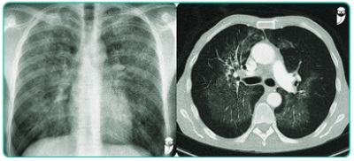
A Necrose coagulativa.
B Apoptose por via intrínseca.
C Necrose caseosa.
D Apoptose por via extrínseca.
E Necrose fibrinoide.
Questão 874 · Embriologia do Sistema Respiratório · 4000200412Qual é a etapa final da maturação dos pulmões na embriogênese?
A Pseudoglandular
B Canalicular
C Sacular
D Alveolar
E Bronquíolos respiratórios
Questão 875 · Embriologia do Sistema Respiratório · 4000200411"A maturação dos pulmões é uma etapa importante para o desenvolvimento fetal e a capacidade de respiração após o nascimento. Em relação às etapas da maturação dos pulmões, assinale a alternativa que não faz parte de tais etapas:
A Pseudoglandular
B Canalicular
C Saco terminal
D Alveolar
E Tubular
Questão 876 · Embriologia do Sistema Respiratório · 4000200410Durante o processo de formação da laringe, qual é a etapa que ocorre na 10ª semana, que dará o crescimento e aspecto histológico que formam a estrutura laríngea?
A Oclusão da luz da laringe
B Formação das pregas vestibulares
C Proliferação do epitélio seguida de recanalização
D Formação das pregas vocais
E Desaparecimento dos ventrículos da laringe
Questão 877 · Embriologia do Sistema Respiratório · 4000200409Um recém-nascido apresenta um defeito a partir de uma má-formação embriológico no qual o tecido conjuntivo entre as cordas vocais é recoberto por uma membrana mucosa, causando uma obstrução nas vias respiratórias e um choro rouco. Essa rara anomalia congênita é a:
A Atresia Bronquial
B Estenose Traqueal
C Laringomalácia
D Displasia Broncopulmonar
E Atresia Laríngea
Questão 878 · Patologia Geral · 4000200408A apoptose é conhecida como a morte celular programada. Trata-se de uma morte celular muito planejada, caracterizada pela dissolução nuclear, fragmentação da célula sem perda completa da integridade da membrana, e rápida remoção dos restos celulares por fagócitos, impedindo, assim, o despertar de uma reação inflamatória. Apesar de planejada e geralmente ocorrer em situações siológicas, existem condições patológicas que podem induzir apoptose em uma célula. Dentre as alternativas a seguir, qual delas aponta uma situação estritamente patológica?
A Involução de tecidos hormônio-dependentes sob privação de hormônios.
B Eliminação de linfócitos autorreativos potencialmente nocivos.
C Eliminação de células específicas durante a embriogênese.
D Eliminação de células que já cumpriram sua atividade funcional.
E Eliminação de células infectadas por certos tipos de vírus.
Questão 879 · Embriologia do Sistema Respiratório · 4000200407Na embriologia, qual é o nome da estrutura que dá origem diretamente à árvore respiratória e qual o tecido que a envolve?
A Sulco laringotraqueal, é envolvido pelo endoderma
B Divertículo laringotraqueal, é envolvido pelo mesoderma
C Pregas pleuropericárdicas, é envolvido pelo mesênquima esplâncnico
D Broto respiratório, é envolvido pelo mesênquima esplâncico
E Canal laríngeo primitivo, é envolvido pelo mesoderma
Questão 880 · Patologia Geral · 4000200406A necrose é o processo desordenado de morte celular, e costuma ocorrer quando a célula sofre alguma agressão intensa e/ou persistente o su ciente para vencer os mecanismos de adaptação celular. Existem vários agentes que podem ocasionar a necrose de uma célula: agentes físicos, químicos, hipóxia, de ciência nutricional, agentes biológicos etc. Mas, independentemente da causa, existem alterações na morfo siologia da célula que passou pelo processo de necrose que são comuns. Dentre as alternativas a seguir, qual não apresenta um mecanismo envolvido no processo de necrose?
A Alteração na produção de adenosina-trifosfato (ATP).
B Alterações mitocondriais.
C Efluxo do cálcio intracelular.
D Formação de radicais livres.
E Alterações na permeabilidade da membrana celular.
Revisar: possível letra faltando em enunciado
Questão 881 · Patologia Geral · 4000200405Joaquim tem 72 anos, é sabidamente portador de hipertensão arterial sistêmica, mas nega-se a tomar as medicações pois “não sente nada”. Certo dia, ao acordar, notou que estava com uma ligeira di culdade para mexer o braço esquerdo e, ao tentar tomar seu café, notou que o líquido escorreu pelo canto da boca. Estranhou a situação e foi até o banheiro para se limpar. Ao olhar-se no espelho, percebeu que, segundo suas próprias palavras, “sua cara estava torta”. Buscou atendimento no pronto-socorro, e foi submetido à uma tomografia de crânio sem contraste devido a suspeita de acidente vascular encefálico: Fonte da imagem: apostila de acidentes vasculares encefálicos do Estratégia MED. Ao analisar a imagem, o médico cou surpreso com a preservação do nível de consciência de seu Joaquim, que estava apenas um pouco confuso e com di culdade de obedecer a comandos. Foi concluído que o paciente foi vítima de um acidente vascular encefálico isquêmico em território de artéria cerebral média. Considerando o caso clínico, qual seria o padrão de necrose tecidual esperado caso a área acometida do cérebro de Joaquim fosse submetida a um estudo anatomopatológico?
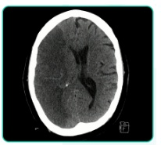
A Necrose caseosa.
B Necrose liquefativa.
C Necrose gordurosa.
D Necrose coagulativa.
E Necrose fibrinoide.
Questão 882 · Embriologia do Sistema Respiratório · 4000200404As membranas pleuropericárdicas são estruturas anatômicas fundamentais para o desenvolvimento do sistema respiratório. Em relação a sua função, assinale a alternativa correta:
A Isolam a cavidade peritoneal
B Conectam as veias cardinais comuns à cavidade abdominal
C São responsáveis por definir as cavidades pleural e peritoneal
D Fundem-se com a parede do intestino primitivo na 7ª semana de embriogênese
E Fecham-se nos dois lados simultaneamente, produzindo uma membrana pleuropericárdica menor
Questão 883 · Patologia Geral · 4000200403Miguel, paciente de 8 anos, deu entrada no pronto-socorro com desconforto respiratório, febre e tosse com catarro. A mãe refere que o quadro iniciou há 5 dias, mas que hoje piorou muito, sendo que o paciente recusa qualquer tipo de alimento e tem a respiração bastante rápida e ofegante. Rapidamente, o médico plantonista pensou na possibilidade de uma pneumonia bacteriana, e solicitou uma radiografia de tórax: Fonte da imagem: apostila de pneumonia bacteriana do Estratégia MED. Diante do quadro clínico e dos achados radiológicos, o médico solicitou a internação do paciente para tratamento de uma pneumonia bacteriana adquirida em comunidade com sinais de gravidade. Considerando o caso clínico, qual seria o padrão de necrose tecidual esperado caso o pulmão do Miguel fosse submetido a um estudo anatomopatológico?

A Necrose caseosa.
B Necrose liquefativa.
C Necrose gordurosa.
D Necrose coagulativa.
E Necrose fibrinoide.
Questão 884 · Embriologia do Sistema Respiratório · 4000200402As pregas pleuropericárdicas são estruturas anatômicas que surgem na parede do embrião. Em relação à sua função, assinale a alternativa incorreta:
A Definem a cavidade pericárdica
B Isolam a cavidade pleural
C São responsáveis por definir as cavidades torácica e abdominal
D Surgem na 5ª semana de embriogênese
E Fundem-se com a parede do intestino primitivo
Questão 885 · Anatomia do Sistema Respiratório · 4000200401O controle da função respiratória é altamente dependente da inervação adequada do diafragma. Com relação à inervação do diafragma, identifique a afirmação que não é verdadeira:
A O nervo frênico é o principal responsável pela inervação motora do diafragma.
B Os nervos intercostais também desempenham um papel na inervação do diafragma.
C A inervação simpática do diafragma ocorre através do plexo celíaco.
D A lesão do nervo frênico pode resultar em uma diminuição da função diafragmática.
E A porção central do diafragma recebe inervação sensitiva pelos nervos frênicos.
Questão 886 · Anatomia do Sistema Respiratório · 4000200400A pleura visceral é uma camada na de tecido que reveste os pulmões e é responsável por evitar o contato físico entre os pulmões e a pleura parietal, formando a cavidade pleural entre essas folhas pleurais. Em relação à inervação da pleura visceral, qual das alternativas abaixo apresenta os principais nervos responsáveis?
A Nervos intercostais
B Nervos frênicos
C Nervos viscerais
D Nervo frênico e vago
E Nervos acessórios
Questão 887 · Anatomia do Sistema Respiratório · 4000200399Conhecer a inervação dos órgãos é essencial para entendermos as manifestações causadas por seu acometimento, entender a clínica de diferenciais dores musculares e abdominais. Qual das alternativas abaixo apresenta os 2 principais nervos que inervam a pleura parietal?
A Nervo frênico e nervos intercostais
B Nervo frênico e nervos viscerais
C Nervos intercostais e nervos viscerais
D Nervo frênico e nervo vago
E Nervos intercostais e nervo vago
Questão 888 · Patologia Geral · 4000200398Paciente de 38 anos, sexo feminino, obesa, evoluiu com quadro de dor em hipocôndrio direito, náuseas e vômitos, além de icterícia de caráter utuante. Com cerca de 24 horas de evolução, a dor assumiu localização em todo andar superior do abdome, com irradiação para as costas, e as náuseas e vômitos tornaram-se mais intensos. Em análise laboratorial, observou-se grande aumento de lipase e amilase sérica, o que fechou o diagnóstico de pancreatite aguda. Com cerca de 36 horas de evolução, a paciente apresentou piora importante do estado geral, e houve surgimento de equimoses em ancos e em região periumbilical, além de sinais clínicos sugestivos de peritonite difusa. Considerando o caso clínico, qual seria o padrão de necrose tecidual esperado caso o peritônio da paciente fosse submetido a um estudo anatomopatológico?
A Necrose caseosa.
B Necrose liquefativa.
C Necrose gordurosa.
D Necrose coagulativa.
E Necrose fibrinoide.
Questão 889 · Anatomia do Sistema Respiratório · 4000200397A pleura parietal é uma camada de tecido que reveste a superfície interna da parede torácica e dos corpos vertebrais. Qual das subdivisões abaixo não faz parte da pleura parietal?
A Pleura costovertebral
B Pleura diafragmática
C Pleura pulmonar
D Pleura cervical
E Pleura mediastinal
Questão 890 · Anatomia do Sistema Respiratório · 4000200396Na intrincada estrutura da anatomia pulmonar, o entendimento da sequência de passagem do ar é essencial. Nesse contexto, qual alternativa corresponde corretamente à subdivisão dos bronquíolos respiratórios?
A Ductos alveolares
B Brônquios segmentares
C Bronquíolos terminais
D Alvéolos
E Bronquíolos primários
Questão 891 · Patologia Geral · 4000200395Paciente do sexo masculino, 43 anos, tabagista e morador de área livre, comparece a consulta de pronto atendimento referindo que há 3 semanas iniciou quadro de tosse produtiva, febre baixa no nal da tarde e sudorese noturna. Além disso, notou que perdeu alguns quilos. Realizou-se radiogra a de tórax, que evidenciou o seguinte aspecto: Fonte da imagem: apostila de tuberculose do Estratégia MED. Considerando o caso clínico, qual seria o padrão de necrose tecidual esperado caso o pulmão do paciente fosse submetido a um estudo anatomopatológico?
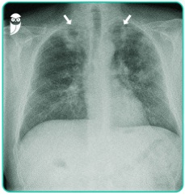
A Necrose caseosa.
B Necrose liquefativa.
C Necrose gordurosa.
D Necrose coagulativa.
E Necrose fibrinoide.
Questão 892 · Anatomia do Sistema Respiratório · 4000200394Conhecendo a anatomia pulmonar, marque a alternativa qual é o caminho completo da passagem de ar do mais proximal para o mais distal na anatomia pulmonar:
A Traqueia > Brônquio principal > Brônquios lobares > Brônquios segmentares > Bronquíolos terminais > Bronquíolos Respiratórios> Ductos alveolares > Sacos Alveolares
B Brônquios lobares > Traqueia > Brônquio principal > Ductos alveolares > Bronquíolos terminais > Sacos Alveolares > Bronquíolos Respiratórios
C Traqueia > Brônquios lobares> Brônquios Segmentares> Brônquios segmentares > Bronquíolos terminais > Bronquíolos Respiratórios> Sacos Alveolares > Ductos alveolares
D Brônquio principal > Traqueia > Brônquios lobares > Brônquios segmentares > Ductos alveolares > Bronquíolos terminais > Sacos Alveolares
E Traqueia > Brônquio principal > Ductos alveolares > Brônquios lobares > Bronquíolos terminais > Sacos Alveolares
Questão 893 · Anatomia do Sistema Respiratório · 4000200393Conhecer aspectos anatômicos nos pode ser muito útil no raciocínio clínico, especialmente a anatomia comparativa. Por que a broncoaspiração ou a aspiração de corpos estranhos (como uma criança que aspirou um pequeno brinquedo ou parte dele) é mais comum no pulmão direito que no esquerdo?
A Devido ao tamanho maior do pulmão direito
B Devido à posição mais elevada do pulmão direito
C Devido ao trajeto mais curto e vertical do brônquio direito
D Devido à presença da incisura cardíaca no pulmão esquerdo
E Devido à presença de mais lobos no pulmão direito
Questão 894 · Anatomia do Sistema Respiratório · 4000200392A anatomia dos pulmões é essencial para conhecermos a siologia respiratória, e entendermos exames de imagem. Há particularidades especí cas entre o pulmão direito e o esquerdo a que devemos nos atentar. Em relação às diferenças entre pulmão esquerdo e direito, assinale a alternativa incorreta:
A O pulmão esquerdo possui 2 lobos e uma fissura oblíqua
B O pulmão direito possui 3 lobos e duas fissuras (horizontal e oblíqu
C O pulmão esquerdo possui menos lobos do que o pulmão direito
D O pulmão direito é maior e mais pesado que o esquerdo, mas é mais curto e largo devido a elevação da cúpula diafragmática direita.
E A artéria pulmonar, responsável por levar sangue desoxigenado aos pulmões, é maior em seu comprimento no lado esquerdo que no lado direito.
Revisar: possível letra faltando em enunciado
Questão 895 · Patologia Geral · 4000200391Paciente do sexo masculino, 61 anos, tabagista de longa data e obeso, dá entrada no pronto-socorro com queixa de dor no peito, sudorese, parestesia em membros superiores e náuseas iniciados há cerca de 90 minutos. Foi diagnosticado com infarto agudo do miocárdio e submetido a terapia de reperfusão. Cerca de uma semana após o episódio, realizou um estudo eletrocardiográfico que evidenciou áreas de inatividade miocárdica. Caso a área acometida do coração do paciente fosse submetida a um estudo anatomopatológico, qual padrão de necrose tecidual esperaríamos encontrar?
A Necrose caseosa.
B Necrose liquefativa.
C Necrose gordurosa.
D Necrose coagulativa.
E Necrose fibrinoide.
Questão 896 · Anatomia do Sistema Respiratório · 4000200390Em relação às diferenças entre os pulmões esquerdo e direito, qual das alternativas abaixo está correta?
A O pulmão esquerdo possui 3 lobos e duas fissuras, enquanto o direito possui 2 lobos e uma fissura
B A fissura horizontal no pulmão direito separa o lobo superior do lobo inferior
C O pulmão esquerdo apresenta uma estrutura chamada incisura cardíaca, onde está localizada a língula
D O pulmão direito é menor e mais leve que o esquerdo devido à sua posição mais elevada na caixa torácica
E O pulmão esquerdo não possui em sua estrutura nenhuma impressão gerado por outro órgão ou resquício do lobo médio
Questão 897 · Anatomia do Sistema Respiratório · 4000200389A hilo pulmonar é a região onde as artérias pulmonares e veias pulmonares se unem para formar o tronco pulmonar, além de ser onde se encontram diversas importantes estruturas torácicas. Essa região é importante para o uxo sanguíneo pulmonar e para a identi cação de doenças como tromboembolismo pulmonar e estenose pulmonar. Em relação ao hilo pulmonar, qual das seguintes estruturas é encontrada na região?
A Aorta
B Artéria coronária
C Veia cava superior
D Artéria brônquica
E Veia Cava inferior
Questão 898 · Anatomia do Sistema Respiratório · 4000200388Os vasos sanguíneos são responsáveis por transportar o sangue para todo o corpo, levando oxigênio e nutrientes para as células e removendo o dióxido de carbono e outros resíduos. É importante conhecer os nomes e funções dos vasos sanguíneos para entender como o sangue circula pelo corpo e como isso afeta a saúde. Quais vasos sanguíneos levam sangue com baixo teor de oxigênio para os pulmões?
A Veia pulmonar
B Aorta
C Canal arterial
D Arteria pulmonar
E Brônquio direito
Questão 899 · Patologia Geral · 4000200387É sabido que, diante de um quadro de lesão celular por qualquer agente que seja, uma série de alterações bioquímicas e morfológicas instala-se na célula. Quando a lesão se torna irreversível, há evolução para morte celular. Dentre os itens estruturais e funcionais a seguir, qual é o primeiro a ser alterado num quadro de lesão celular?
A Morfologia macroscópica.
B Equilíbrio bioquímico celular.
C Ultraestrutura celular.
D Morfologia microscópica.
E Função celular.
Questão 900 · Anatomia do Sistema Respiratório · 4000200386Conhecer as subdivisões dos conteúdos torácicos é importante para um médico, pois elas podem afetar a identi cação e tratamento de doenças pulmonares, como pneumonias, derrames pleurais e câncer de pulmão. A camada interna que envolve o pulmão em si é chamada de?
A pleura parietal
B pleura visceral
C pleura peripulmonar
D brônquios
E cavidade pleural
Questão 901 · Anatomia do Sistema Respiratório · 4000200385A anatomia da pleural é essencial para conhecermos a siologia respiratória e em cirurgia torácica, principalmente suas relações com os demais órgãos. Em relação às estruturas do sistema respiratório, assinale a alternativa incorreta:
A A pleura é uma membrana dupla que envolve os pulmões.
B A pleura parietal é adjacente à caixa torácica.
C A cavidade pleural é delimitada pela pleura parietal.
D A traqueia é formada por 16-20 anéis cartilaginosos e está na cavidade pleuropulmonar.
E A traqueia se bifurca no ângulo esternal, na região de transição mediastino superior e médio, antes de adentrar na cavidade pleuropulmonar.
Questão 902 · Patologia Geral · 4000200384Ao sair da aula de patologia na faculdade, Leonardo e João Paulo perceberam que se distraíram no celular durante a explicação do processo de morte celular. Então, começaram a discutir: Leonardo: liberando seu conteúdo intracelular para o meio extracelular e deixando a bagunça para o sistema imunológico limpar através de um processo inflamatório. E necrose não tem inflamação, tenho certeza! João Paulo: Nesse momento, os dois se viram para você e perguntam quem está certo. Você, que estava sem bateria no celular e foi obrigado a prestar atenção na aula inteira, responde que:
A João está certo, pois necrose e apoptose tem o mesmo significado teórico e prático.
B Leonardo está certo, pois trouxe a definição de apoptose. João está errado, pois necrose e apoptose são processos distintos de morte celular.
C Leonardo está errado, pois descreveu a apoptose citando as características da necrose. João também está errado, pois necrose e apoptose são processos distintos.
D Ambos estão certos, pois a definição de apoptose trazida por Leonardo também pode ser usada para descrever a necrose, que são sinônimos na prática.
E Leonardo está errado somente ao afirmar que há um processo inflamatório na apoptose. João também está errado, pois necrose e apoptose são processos distintos.
Questão 903 · Patologia Geral · 4000200383Paciente do sexo masculino, 61 anos, tabagista de longa data e obeso, dá entrada no pronto-socorro com queixa de dor no peito, sudorese, parestesia em membros superiores e náuseas iniciados há cerca de 50 minutos. A dor iniciou após o almoço com a família, em uma festa. Rapidamente, a equipe de atendimento realizou um eletrocardiograma e, ao interpretá-lo, deu o diagnóstico de um infarto agudo do miocárdio transmural lesão celular citadas a seguir, qual é que mais se relaciona com o quadro atual do paciente?
A Lesão por privação de oxigênio, por isquemia.
B Lesão por agente físico, por obstrução mecânica da artéria coronária.
C Lesão por agente químico, devido ao tabagismo.
D Lesão por reação imunológica, devido à inflamação intensa e descoordenada no coração.
E Lesão por desequilíbrio nutricional, devido à refeição em excesso e à obesidade.
Questão 904 · Patologia Geral · 4000200382A metaplasia é uma alteração reversível na qual uma célula já diferenciada assume outro fenótipo. Geralmente, ocorre em situações em que há um estresse crônico imposto sobre determinado tipo celular, que se vê obrigada a se tornar mais resistente através de modi cações fenotípicas. Um exemplo clássico de metaplasia ocorre nas vias respiratórias (traqueia e brônquios) de pacientes tabagistas, em que:
A O epitélio escamoso estratificado nativo é substituído por um epitélio colunar ciliado, que é mais eficiente na depuração da fuligem inalada durante o ato de fumar, facilitando a higiene das vias aéreas.
B O epitélio escamoso estratificado nativo é substituído por um epitélio cúbico, que é mais eficiente na depuração da fuligem inalada durante o ato de fumar, facilitando a higiene das vias aéreas.
C O epitélio colunar ciliado nativo é substituído por um epitélio escamoso estratificado que, apesar de ser mais resistente à agressão da fumaça do cigarro, tem menor capacidade de depuração mucociliar.
D O epitélio colunar ciliado nativo é substituído por um epitélio cilíndrico simples, no intuito de aumentar a produção de muco e facilitar a higiene das vias aéreas.
E O epitélio cúbico nativo é substituído por um epitélio colunar ciliado, que é o mais resistente contra a agressão direta promovida pela fumaça do cigarro.
Questão 905 · Patologia Geral · 4000200381Aos 56 anos, um paciente buscou atendimento médico com queixa de perda de peso progressiva, dor abdominal e náuseas intermitentes há cerca de 3 meses. Em investigação, foi diagnosticado com um carcinoma hepatocelular no lobo hepático esquerdo devido a uma infecção pelo vírus da hepatite B. Por preencher os critérios de indicação para o tratamento, foi submetido a uma hepatectomia esquerda, e considerado curado da neoplasia. Preocupado com a “perda” de boa porção de seu fígado, o paciente questiona se ele terá algum problema com o funcionamento do órgão devido à redução do tamanho. O médico responde que, a longo prazo:
A O paciente terá sintomas sugestivos de insuficiência hepática, devido ao processo de atrofia que ocorrerá no tecido remanescente do fígado.
B O paciente terá sintomas sugestivos de insuficiência hepática, devido ao processo de metaplasia que ocorrerá no tecido remanescente do fígado.
C O paciente não deve se preocupar, pois o tecido hepático remanescente é capaz de passar por um processo de hiperplasia e hipertrofia, compensando a função do segmento ressecado.
D O paciente não deve se preocupar, pois o tecido hepático remanescente é capaz de passar por um processo de displasia, compensando a função do segmento ressecado.
E O paciente terá sintomas sugestivos de insuficiência hepática, devido ao processo de hipertrofia que ocorrerá no tecido remanescente do fígado.
Questão 906 · Patologia Geral · 4000200380Uma paciente de 23 anos busca atendimento na Unidade Básica de Saúde com queixa de “verrugas” na região genital. Refere que as lesões surgiram há cerca de 3 semanas e estão aumentando progressivamente. Ao exame físico, observamos o seguinte achado: Fonte da imagem: apostila de doenças da vulva e vagina da prof.ª Monalisa (Estratégia MED). Em investigação, evidenciou-se que a paciente era portadora do HPV (papilomavírus humano). Considerando seus conhecimentos sobre mecanismos de adaptação celular, qual processo ocorreu no epitélio da vulva desta paciente?
A Hiperplasia patológica.
B Atrofia fisiológica.
C Atrofia patológica.
D Metaplasia.
E Hiperplasia fisiológica.
Questão 907 · Patologia Geral · 4000200379Uma paciente de 56 anos comparece a consulta de rotina na Unidade Básica de Saúde referindo que está com di culdades durante as relações sexuais com o seu novo parceiro, pois sente que sua vagina está “muito seca” e sente dor durante a penetração. Alega que sua última menstruação aconteceu há 3 anos. Correlacionando esse caso clínico e seus conhecimentos sobre adaptação celular, o que provavelmente ocorreu no epitélio vaginal dessa paciente pode ser considerado uma:
A Hipertrofia.
B Atrofia fisiológica.
C Atrofia patológica.
D Metaplasia.
E Hiperplasia.
Questão 908 · Patologia Geral · 4000200378Uma paciente de 64 anos, diabética e hipertensa não controlada, foi infectada pela Covid-19 e desenvolveu um quadro bastante grave, sendo necessária ventilação mecânica e internação em UTI, onde permaneceu intubada por 22 dias. Quando a equipe da UTI percebeu que a paciente estava melhorando, foi realizado o teste da respiração espontânea. No entanto, ao ser extubada, rapidamente a paciente evoluiu com di culdade para respirar, e acabou tendo que ser intubada novamente. Qual foi o principal mecanismo de adaptação celular na musculatura respiratória da paciente que ocasionou essa di culdade em respirar sem ajuda do ventilador mecânico?
A Hipertrofia.
B Atrofia fisiológica.
C Hiperplasia.
D Metaplasia.
E Atrofia patológica.
Questão 909 · Patologia Geral · 4000200377Um homem de 46 anos, obeso e tabagista, procura atendimento na Unidade Básica de Saúde referindo sensação de queimação na “boca do estômago” e gosto amargo na boca há alguns meses. O médico, então, solicitou uma endoscopia digestiva alta para avaliar como estava o esôfago e o estômago do paciente. Durante a realização do exame, foi constatada a seguinte visão na transição entre o estômago e o esôfago: Fonte da imagem: apostila de DRGE do Prof. Elio Castro (Estratégia MED). O endoscopista, notando a alteração, realizou uma biópsia do tecido do esôfago e constatou que a peça apresentava, em vez do clássico epitélio escamoso esofágico, características de epitélio colunar com células caliciformes muito parecidas com a do intestino. Qual adaptação celular ocorreu neste cenário?

A Hipertrofia.
B Atrofia fisiológica.
C Hiperplasia.
D Metaplasia.
E Atrofia patológica.
Questão 910 · Patologia Geral · 4000200376Paciente do sexo masculino, 50 anos de idade, assintomático e previamente hígido, buscou atendimento de rotina na Unidade Básica de Saúde para “cuidar da saúde”. Durante a triagem do paciente, a equipe de enfermagem notou que o valor da pressão arterial do paciente estava em 180x110 mmHg. Assustada, a técnica de enfermagem perguntou se aquele era o valor normal da pressão do paciente e se ele tomava algum remédio para controlá-la. Ele respondeu que fazia alguns anos que a pressão sempre cava naquele valor, mas que nunca havia tomado nenhuma medicação, pois não sentia nada. Considerando os grandes níveis de pressão arterial com os quais o coração do paciente tem que lidar, qual adaptação celular é esperada caso seja feito um estudo anatomopatológico deste miocárdio?
A Hipertrofia.
B Atrofia.
C Hiperplasia.
D Metaplasia.
E Necrose.
Questão 911 · Parasitologia · 4000200375A ancilostomíase é uma das parasitoses intestinais mais prevalentes do mundo: estima-se que mais de 1 bilhão de pessoas apresentem esses parasitas em seus intestinos, mesmo que de forma assintomática. Sabe- se que é uma doença muito relacionada a baixos níveis socioeconômicos e maus hábitos de higiene, endêmica em algumas regiões do globo. Sobre as medidas de combate à ancilostomíase, assinale a alternativa correta.

A Uma das medidas mais eficazes de combate a essa parasitose consiste no uso de telas e mosquiteiros que impeçam a inoculação das larvas infectantes no hospedeiro humano, que ocorre por meio da picada de mosquitos flebotomíneos.
B Não ingerir vegetais que não foram adequadamente lavados, água que não foi fervida ou filtrada, bem como carnes cruas e mal passadas, são as medidas mais eficazes de prevenir a infecção pelo parasita.
C Campanhas de conscientização quanto à lavagem adequada das mãos antes das refeições consistem em uma forma eficiente de combate à doença.
D A vacinação mostrou-se como uma das ferramentas mais eficazes na prevenção da doença.
E A utilização de calçados evita a exposição da pele ao solo contaminado por larvas filarioides de ancilostomídeos, sendo uma medida eficaz de combate à doença. Além disso, o tratamento e descarte adequados do esgoto também são fundamentais para evitar a transmissão.
Questão 912 · Parasitologia · 4000200374Paciente de 4 anos de idade é levado até a Unidade Básica de Saúde pela mãe, que relata aparecimento de lesões pruriginosas na região plantar dos pés e em nádegas. Refere que, cerca de 12 dias depois do aparecimento das lesões pruriginosas, a criança passou a apresentar tosse seca e evoluiu com náuseas e perda do apetite nos dias seguintes. A mãe ainda a rma que a criança tem o hábito de brincar de pés descalços no quintal de casa e na rua. Diante do caso, foi solicitado o exame parasitológico de fezes, que confirmou o diagnóstico de ancilostomíase. A respeito dos principais agentes etiológicos e da forma de transmissão da doença, assinale a alternativa correta.
A No Brasil, os principais agentes etiológicos são
B Necator americanus
C Os principais agentes etiológicos da ancilostomíase são
D Necator americanus
E Necator americanus
Questão 913 · Parasitologia · 4000200373A ancilostomíase é uma parasitose intestinal muito frequente em nosso meio e, apesar de ser assintomática em boa parte dos casos, quando associada à dé cits nutricionais preexistentes e a maus hábitos de higiene, podemos encontrar infecções maciças. Clinicamente, essas infecções maciças podem se traduzir em quadros de anemia, desconforto abdominal, náuseas, vômitos, perda de apetite, cansaço e até mesmo pneumonia eosinofílica. Sobre essa parasitose, assinale a alternativa incorreta.
A A infecção por
B O diagnóstico da ancilostomíase é estabelecido laboratorialmente a partir de exame de fezes pelo método de Willis, realizando-se a identificação dos ovos de ancilostomídeos.
C A infecção por ancilostomídeos ocorre a partir do contato da pele do hospedeiro humano com o solo contaminado por larvas rabditoides, as quais penetram na pele e atingem a circulação linfática e/ou sanguínea.
D O mebendazol é a medicação de primeira escolha para o tratamento da ancilostomíase.
E O uso de calçados, a destinação e o tratamento adequado das excretas, bem como o combate às larvas no solo, são medidas profiláticas eficazes para evitar a infecção por ancilostomídeos.
Questão 914 · Parasitologia · 4000200372Em relação à infecção e os principais sinais e sintomas da ancilostomíase, doença provocada por nematelmintos como
A Apesar da pele dos pés ser o ponto de penetração mais frequente para as larvas infectantes de ancilostomídeos, qualquer área cutânea em contato com o solo contaminado pode propiciar a invasão, como mãos, pernas e nádegas.
B No período de invasão cutânea, são frequentes as erupções papuloeritematosas, edemas e um quadro de dermatite alérgica desencadeada pela presença das larvas filarioides na pele.
C Apesar da possibilidade de ocorrer a síndrome de
D Em casos de infecções maciças por ancilostomídeos, é possível que a perda sanguínea provocada pelo parasitismo intestinal, somada à déficits nutricionais, acarrete anemia hipocrômica e microcítica.
E Mal-estar abdominal, especialmente em região epigástrica, anorexia, náuseas, vômitos, febre e perda de peso são parte do quadro clínico que pode ocorrer entre a terceira e a quinta semana de infecção, especialmente quando a carga parasitária adquirida for grande.
Questão 915 · Parasitologia · 4000200371Popularmente conhecida como “amarelão”, a ancilostomíase é uma doença provocada por algumas espécies de nematoides que pertencem à família dos ancilostomídeos. Estima-se que mais de 1 bilhão de pessoas no mundo estejam infectadas por esses vermes, especialmente em países com menores índices socioeconômicos, como o Brasil. A respeito dessa parasitose, assinale a alternativa correta.
A Os principais agentes etiológicos da ancilostomose são
B O contato direto da pele do hospedeiro com o solo contaminado é a principal forma de transmissão da ancilostomíase. Nesses casos, o parasita é encontrado no solo em seu terceiro estágio e só consegue atingir a maturidade sexual após penetrar na pele do hospedeiro, realizar o ciclo pulmonar e alcançar o intestino delgado, onde se fixa através da sua peça bucal.
C A principal forma de infecção por esses parasitas ocorre pela ingestão de água e alimentos contaminados, quando são deglutidos em seu terceiro estágio e passam pelas próximas fases de evolução na luz do tubo digestivo, sem fazer ciclo pulmonar. A infecção por contato direto da pele do hospedeiro com o solo contaminado é menos prevalente.
D Assim como Ascaris lumbricoides,
E Os vermes adultos parasitam seres humanos apenas nas porções altas do intestino delgado, após a papila de Vater; por isso, não é possível os encontrar após esse segmento, dada a impossibilidade de adesão das suas peças bucais à parede do íleo e do ceco, por exemplo.
Questão 916 · Parasitologia · 4000200370Janaína tem 35 anos e compareceu à Unidade Básica de Saúde a rmando categoricamente que está “com verme”. Ela relata que tem se sentido mais cansada e desanimada e que, olhando-se no espelho, considerou que estava com a pele mais pálida. Nega outros sintomas. Ao exame físico, o único achado é o das mucosas conjuntivais hipocoradas 1+/4+. Você, um exímio estudante de Medicina, reporta-se ao preceptor após o exame clínico. O preceptor, tentando te pegar na curva, faz a seguinte pergunta: “Considerando que ela, de fato, apresente uma parasitose intestinal, qual destas histórias epidemiológicas falaria mais a favor de esquistossomose?”.
A Residente de casa de pau a pique.
B Possui um gato de cerca de 2 meses de idade.
C Almoça todos os dias em um restaurante por quilo.
D Não possui telas de proteção para mosquitos em sua janela.
E Tem o hábito de nadar no lago de seu bairro.
Questão 917 · Parasitologia · 4000200369O secretário de saúde de uma pequena cidade do interior de Pernambuco notou um aumento na incidência de esquistossomose no último ano. Dessa forma, reuniu-se com sua equipe para discutir medidas preventivas na tentativa de reduzir a incidência dessa patologia no ano seguinte. Assinale a alternativa que melhor sumariza uma medida combativa adequada que poderia ser adotada pelo secretário de saúde.
A Campanhas de conscientização em escolas para lavagem correta das mãos antes das refeições.
B Combate aos mosquitos
C Fiscalização em restaurantes para higienização correta dos vegetais.
D Investimento em saneamento básico e desencorajamento de recreação em lagos potencialmente contaminados.
E Fiscalização em abatedouros bovinos e suínos para inspeção da presença de cisticercos na carne.
Questão 918 · Parasitologia · 4000200368Cláudio tem 46 anos e é levado ao pronto-socorro pela família porque está “vomitando sangue” há três horas. Ao exame físico abdominal, nota-se esplenomegalia, ascite volumosa e circulação colateral. Cláudio precisou ser entubado, pois havia muito sangue em suas vias aéreas superiores. Após estabilização inicial, o plantonista dirigiu-se para a esposa do paciente para complementar a anamnese. A mulher relata que eles residem ao lado de um despejo de esgoto há cerca de 10 anos e que o marido sempre entra na água para vasculhar a presença de objetos de potencial valor, pois, certa vez, um vizinho encontrou uma pepita de ouro em um dos mergulhos. Nega tabagismo ou etilismo. Acerca do quadro apresentado, pode-se afirmar que se trata de infecção por:
A Ancylostoma duodenale.
B Strongyloides stercoralis.
C Toxocara canis.
D Ascaris lumbricoides.
E Schistosoma mansoni.
Questão 919 · Parasitologia · 4000200367A esquistossomose é uma parasitose causada pelo está relacionada ao baixo nível socioeconômico e a condições precárias de saneamento básico, consistindo num grande problema de saúde pública. Tendo em mente os mecanismos de transmissão dessa doença, pode-se afirmar que a transmissão ocorre:
A por meio da ingestão de ovos do parasita, presentes nas fezes do hospedeiro definitivo, sobretudo quando contaminam água e vegetais.
B devido à penetração da larva cercária em fontes d’água, como rios e lagos em que há a presença de caramujos contaminados pelo helminto.
C a partir do contato direto com fezes de animais, nas quais estão presentes a larva do helminto, o esporocisto, que penetra ativamente na pele de pés e mãos, sobretudo em crianças.
D pela ingestão de cistos teciduais do verme presentes em carne mal passada.
E com a penetração ativa do miracídio, larva eliminada pelo molusco do gênero Biomphalaria, presente em água doce ou salgada contaminadas pelo helminto.
Questão 920 · Parasitologia · 4000200366Bianca tem 9 anos e foi levada à Unidade Básica de Saúde de seu bairro pela mãe, que relata surgimento de lesões eritematosas e pruriginosas em ambos os membros inferiores, bem como na barriga de sua lha. Cita que, na tarde anterior, foi a um córrego naquele mesmo bairro e entrou na água juntamente a outras crianças, iniciando o quadro de prurido naquela mesma noite. Acerca da parasitose em questão, assinale a alternativa correta.
A O miracídio é a forma infectante do homem nessa patologia, que eclode na água após sua eliminação pelo molusco do gênero Biomphalaria e busca ativamente penetrar na pele humana.
B Trata-se da sintomatologia inicial da infecção por Necator americanus, a qual também pode ser adquirida por meio de penetração ativa da larva na sola dos pés ao andar descalço em terrenos com fezes de animais.
C A forma infectante desse helminto é a cercária, que eclode na água a partir de ovos do verme adulto eliminados nas fezes humanas. Essa patologia é um típico exemplo de transmissão por ciclo fecal-oral.
D A forma adulta do helminto, que apresenta dimorfismo sexual, sofre maturação no sistema porta intra-hepático e, antes mesmo dessa maturação, já pode ocasionar sintomas, como febre, eosinofilia e urticária.
E A oviposição dos vermes costuma ocorrer ainda no sistema porta, ao redor da segunda semana após a exposição infectante, com posterior migração para vasos menos calibrosos.
Questão 921 · Metodologia Científ ica · 4000200365Um ensaio clínico é projetado para estudar o efeito de um novo medicamento para tratar o câncer de pulmão pequenas células. No entanto, os participantes que têm um prognóstico pior são mais propensos a serem designados para o grupo do novo medicamento. Que tipo de viés isso pode introduzir?
A Viés de seleção
B Viés de confusão
C Viés de medição
D Viés de informação
Questão 922 · Metodologia Científ ica · 4000200364Em um estudo para avaliar a e cácia de um novo medicamento para hipertensão, alguns pacientes deixam tomar a medicação, enquanto outros a mantêm. Os pesquisadores percebem que há diferenças entre os dois grupos. Que tipo de viés está ocorrendo?
A Viés de aderência
B Viés de seleção
C Viés de medição
D Viés de informação
Questão 923 · Metodologia Científ ica · 4000200363Em um ensaio clínico, os pesquisadores que medem o desfecho do estudo sabem qual grupo de tratamento o paciente foi designado. Que tipo de viés isso pode introduzir?
A Viés de informação
B Viés do observador
C Viés de seleção
D Viés de desistência
Questão 924 · Metodologia Científ ica · 4000200362Os resultados de um ensaio clínico para um novo tratamento de asma são publicados porque mostram uma melhoria significativa nos sintomas. No entanto, vários outros ensaios semelhantes que não mostraram benefício significativo não são publicados. Que tipo de viés isso representa?
A Viés de publicação
B Viés de seleção
C Viés de medição
D Viés de desistência
Questão 925 · Metodologia Científ ica · 4000200361Em um ensaio clínico de um novo medicamento para insônia, os pacientes que não estão experimentando melhorias são mais propensos a abandonar o estudo. Que tipo de viés isso pode introduzir?
A Viés de seleção
B Viés de desistência
C Viés de medição
D Viés de informação
Questão 926 · Metodologia Científ ica · 4000200360Em um ensaio clínico que avalia o efeito de um suplemento nutricional na prevenção da doença de Alzheimer, os pesquisadores descobrem que aqueles participantes com uma dieta mais saudável são mais propensos a tomar o suplemento de forma consistente. Que tipo de viés isso pode introduzir?
A Viés de confusão
B Viés de seleção
C Viés de medição
D Viés de publicação
Questão 927 · Metodologia Científ ica · 4000200359Em um ensaio clínico para um novo medicamento para perda de peso, os pesquisadores percebem que os participantes que estão recebendo o medicamento estão relatando maior perda de peso, mesmo quando seus registros alimentares e de exercícios não mudaram. Que tipo de viés isso poderia ser?
A Viés de medição
B Viés do observador
C Viés de placebo
D Viés de resposta
Questão 928 · Metodologia Científ ica · 4000200358Um ensaio clínico está sendo realizado para testar um novo medicamento para tratar a dor de cabeça. No entanto, os pesquisadores notam que mais mulheres estão se inscrevendo para o estudo do que homens. Que tipo de viés isso poderia introduzir no estudo?
A Viés de seleção
B Viés de confusão
C Viés de informação
D Viés de publicação
Questão 929 · Metodologia Científ ica · 4000200357Qual das seguintes afirmações é verdadeira sobre o uso de placebo em ensaios clínicos?
A O uso de placebo é sempre necessário para garantir a validade de um ensaio clínico.
B O uso de placebo é eticamente aceitável quando não há tratamento eficaz conhecido para a condição que está sendo estudada.
C O uso de placebo é eticamente aceitável mesmo quando há um tratamento eficaz conhecido para a condição que está sendo estudada.
D O uso de placebo é sempre contraproducente porque aumenta o efeito nocebo.
Questão 930 · Metodologia Científ ica · 4000200356Em um ensaio clínico, o que é o "braço" de um estudo?
A O grupo de participantes que não recebe nenhum tratamento.
B O grupo de participantes que recebe o tratamento experimental.
C Um subgrupo de participantes designado para receber um determinado tratamento ou intervenção.
D O grupo de participantes que recebe um placebo.
Questão 931 · Metodologia Científ ica · 4000200355Qual é a principal vantagem de um ensaio clínico controlado randomizado em relação a outros desenhos de estudos?
A É o melhor desenho de estudo para estabelecer a causalidade.
B É o desenho de estudo mais fácil e rápido de conduzir.
C É o desenho de estudo mais adequado para o estudo de doenças raras.
D É o desenho de estudo que exige o menor número de participantes.
Questão 932 · Metodologia Científ ica · 4000200354A validade externa de um ensaio clínico refere-se a qual das seguintes características?
A A extensão em que os resultados do estudo podem ser generalizados para populações externas ao estudo.
B A extensão em que o desenho do estudo e sua condução evitam vieses sistemáticos.
C A extensão em que o estudo foi capaz de detectar uma diferença estatisticamente significativa, se ela existir.
D A extensão em que o estudo foi capaz de avaliar a eficácia do tratamento em um ambiente de vida real.
Questão 933 · Metodologia Científ ica · 4000200353A validade interna de um ensaio clínico refere-se a qual das seguintes características?
A A extensão em que os resultados do estudo podem ser generalizados para populações externas ao estudo.
B A extensão em que o desenho do estudo e sua condução evitam vieses sistemáticos.
C A extensão em que o estudo foi capaz de detectar uma diferença estatisticamente significativa, se ela existir.
D A extensão em que o estudo foi capaz de avaliar a eficácia do tratamento em um ambiente de vida real.
Questão 934 · Metodologia Científ ica · 4000200352O que significa NNT em um ensaio clínico?
A Número necessário para tratar para beneficiar um paciente.
B Número necessário para testar para validar um resultado.
C Número necessário para treinar para capacitar um pesquisador.
D Número necessário para transferir para generalizar um resultado.
Questão 935 · Metodologia Científ ica · 4000200351Qual é a diferença entre o efeito placebo e o efeito nocebo em ensaios clínicos?
A O efeito placebo refere-se a uma melhora na condição de um paciente devido à sua crença de que está recebendo tratamento, enquanto o efeito nocebo refere-se a uma piora na condição de um paciente devido ao tratamento.
B O efeito placebo refere-se a uma melhora na condição de um paciente devido à sua crença de que não está recebendo tratamento, enquanto o efeito nocebo refere-se a uma piora na condição de um paciente devido à sua crença de que está recebendo tratamento.
C O efeito placebo refere-se a efeitos colaterais de um medicamento, enquanto o efeito nocebo refere-se a uma melhora na condição de um paciente devido à sua crença de que está recebendo tratamento.
D O efeito placebo refere-se a uma melhora na condição de um paciente devido à sua crença de que está recebendo tratamento, enquanto o efeito nocebo refere-se a efeitos colaterais de um medicamento.
Questão 936 · Metodologia Científ ica · 4000200350Qual é a diferença entre um desfecho clínico e um desfecho substituto em um ensaio clínico?
A Um desfecho clínico mede a percepção do paciente, enquanto um desfecho substituto mede resultados objetivos.
B Um desfecho clínico é diretamente significativo para o paciente, enquanto um desfecho substituto é uma medida indireta de efeito.
C Um desfecho clínico é usado em estudos observacionais, enquanto um desfecho substituto é usado em ensaios clínicos.
D Um desfecho clínico é usado em ensaios clínicos, enquanto um desfecho substituto é usado em estudos observacionais.
Questão 937 · Metodologia Científ ica · 4000200349O que se entende por "cegamento" em um ensaio clínico?
A Restringir a divulgação dos resultados do estudo até que esteja completo.
B Garantir que os participantes e/ou pesquisadores não saibam qual tratamento (se houver) o participante está recebendo.
C Limitar o número de tratamentos que estão sendo testados no estudo.
D Garantir que todos os participantes recebam o mesmo tratamento.
Questão 938 · Metodologia Científ ica · 4000200348Qual das seguintes opções é uma razão comum para a randomização em ensaios clínicos?
A Aumentar o número de participantes no estudo.
B Reduzir o viés na atribuição dos participantes aos grupos de tratamento.
C Aumentar a validade externa do estudo.
D Eliminar a necessidade de cegamento.
Questão 939 · Metodologia Científ ica · 4000200347Um estudo de coorte é iniciado com dois grupos: um grupo exposto a um determinado fator de risco e um grupo não exposto. Ambos os grupos são então acompanhados ao longo do tempo para determinar a incidência de uma doença. Qual das seguintes afirmações é verdadeira sobre os estudos de coorte?
A Eles são úteis para estabelecer correlação, mas não causalidade.
B Eles são comumente usados para estudar a história natural de uma doença.
C Eles são geralmente rápidos e econômicos para conduzir.
D Eles são especialmente úteis para estudar doenças muito raras.
Questão 940 · Metodologia Científ ica · 4000200346Qual é a principal limitação dos estudos transversais?
A Não podem ser usados para estudar doenças raras.
B Não podem determinar a causalidade por causa de sua natureza de "instantâneo".
C Não podem ser usados para estudar populações grandes.
D Não podem ser usados para coletar dados longitudinais.
Questão 941 · Metodologia Científ ica · 4000200345Em um estudo, os pesquisadores estão comparando o histórico de exposição a um fator de risco entre um grupo de indivíduos com uma determinada doença (casos) e um grupo sem a doença (controles). Que tipo de estudo eles estão conduzindo?
A Estudo de caso-controle
B Estudo de coorte
C Estudo transversal
D Série temporal
Questão 942 · Metodologia Científ ica · 4000200344Um pesquisador está analisando a taxa de mortalidade por doenças cardíacas em um país ao longo de 50 anos. Que tipo de estudo ele está conduzindo?
A Série temporal
B Estudo de caso-controle
C Estudo de coorte
D Estudo ecológico
Questão 943 · Metodologia Científ ica · 4000200343Uma equipe de pesquisa reúne casos similares de uma condição rara de um hospital. O objetivo é entender melhor a apresentação e o curso da doença. Que tipo de estudo está sendo conduzido?
A Série de casos
B Estudo transversal
C Estudo ecológico
D Estudo de coorte
Questão 944 · Metodologia Científ ica · 4000200342Em que tipo de estudo um pesquisador analisaria a relação entre consumo de fast-food e obesidade em uma população ao longo de 20 anos?
A Série de casos
B Série temporal
C Estudo de coorte
D Estudo de caso-controle
Questão 945 · Metodologia Científ ica · 4000200341Um grupo de pesquisadores está estudando a relação entre a densidade populacional e a taxa de infecção por COVID-19 em diferentes países. Que tipo de estudo eles estão realizando?
A Estudo de coorte
B Estudo de caso-controle
C Estudo ecológico
D Estudo transversal
Questão 946 · Metodologia Científ ica · 4000200340O que diferencia um estudo de coorte de um estudo de caso-controle?
A Em um estudo de coorte, os sujeitos são selecionados com base em sua exposição, enquanto em um estudo de caso-controle, eles são selecionados com base em seu resultado.
B Em um estudo de coorte, os sujeitos são selecionados com base em seu resultado, enquanto em um estudo de caso-controle, eles são selecionados com base em sua exposição.
C Um estudo de coorte é retrospectivo, enquanto um estudo de caso-controle é prospectivo.
D Um estudo de coorte é prospectivo, enquanto um estudo de caso-controle é retrospectivo.
Questão 947 · Metodologia Científ ica · 4000200339Uma equipe de pesquisa está interessada em entender a relação entre a exposição ao sol e a vitamina D em uma população especí ca. Eles coletam os dados em um único momento. Que tipo de estudo estão conduzindo?
A Estudo ecológico
B Série temporal
C Estudo transversal
D Estudo de coorte
Revisar: possível letra faltando em enunciado
Questão 948 · Metodologia Científ ica · 4000200338Em qual tipo de estudo um médico documentaria a apresentação, tratamento e acompanhamento de um paciente individual com uma doença rara?
A Estudo de caso-controle
B Estudo de coorte
C Relato de caso
D Estudo transversal
Questão 949 · Metodologia Científ ica · 4000200337Uma equipe de pesquisa está estudando a prevalência de diabetes em diferentes cidades. Eles coletam dados sobre a quantidade total de pessoas diagnosticadas com diabetes em cada cidade, em vez de coletar dados de cada indivíduo. Que tipo de dados a equipe está usando?
A Dados primários
B Dados secundários
C Dados individuais
D Dados agregados
Questão 950 · Metodologia Científ ica · 4000200336Um estudante de medicina está realizando uma revisão sistemática sobre os efeitos da sioterapia na recuperação pós-cirúrgica. Ele reúne e analisa vários estudos publicados sobre o assunto. Que tipo de estudo o aluno está realizando?
A Um estudo primário
B Um estudo secundário
C Um estudo analítico
D Um estudo descritivo
Questão 951 · Metodologia Científ ica · 4000200335Um pesquisador está estudando a relação entre o consumo de álcool e o desenvolvimento de doença hepática. Ele decide comparar a prevalência da doença hepática entre dois grupos: um grupo de indivíduos que consome álcool regularmente e outro que não o faz. Que tipo de estudo o pesquisador está realizando?
A Um estudo analítico
B Um estudo descritivo
C Um estudo secundário
D Um estudo com dados agregados
Questão 952 · Metodologia Científ ica · 4000200334Um estudo mostrou que pessoas que vivem em altitudes mais altas têm uma prevalência menor de doenças cardiovasculares. De acordo com o critério de "Coerência" de Bradford-Hill, como essa descoberta deve ser interpretada?
A A descoberta deve estar alinhada com o atual conhecimento científico e médico sobre doenças cardiovasculares e o efeito da altitude sobre o corpo humano.
B A descoberta deve mostrar que a exposição à altitude elevada ocorreu antes do desenvolvimento de doenças cardiovasculares.
C A descoberta deve demonstrar que quanto maior a altitude, menor a prevalência de doenças cardiovasculares.
D A descoberta deve provar que a vida em altitude elevada é a única causa de menor prevalência de doenças cardiovasculares.
Questão 953 · Metodologia Científ ica · 4000200333Com base no critério de "Plausibilidade" de Bradford-Hill, qual das seguintes opções seria o curso mais apropriado de ação para um pesquisador estudando a associação entre exposição à radiação e desenvolvimento de catarata?
A O pesquisador deve buscar evidências em estudos anteriores e teorias biológicas conhecidas que apoiem essa associação.
B O pesquisador deve provar que a exposição à radiação ocorreu antes do desenvolvimento da catarata.
C O pesquisador deve demonstrar que quanto maior a exposição à radiação, maior o risco de desenvolver catarata.
D O pesquisador deve evidenciar que a exposição à radiação é a única causa possível da catarata.
Questão 954 · Metodologia Científ ica · 4000200332Um médico está pesquisando uma possível ligação entre o consumo de uma determinada substância alimentar e o surgimento de câncer colorretal. O médico observa que há um "efeito dose-resposta" presente. De acordo com os critérios de Bradford-Hill, o que isso significa?
A O câncer colorretal é mais prevalente em pessoas que consomem a substância em questão.
B A exposição à substância alimentar ocorre antes do desenvolvimento do câncer colorretal.
C Quanto maior a ingestão da substância, maior a chance de desenvolver câncer colorretal.
D O câncer colorretal só ocorre em pessoas que consomem a substância.
Questão 955 · Metodologia Científ ica · 4000200331Uma criança foi diagnosticada com asma após ser exposta à fumaça de segunda mão em casa. Seguindo o critério de Bradford Hill para "Força da Associação", qual das seguintes opções é a melhor descrição deste critério?
A A associação é baseada em uma teoria sólida e consensuada.
B A exposição à fumaça de segunda mão gera um grande risco de desenvolver asma
C A associação é consistente e pode ser observada em diferentes estudos.
D A fumaça de segunda mão é a única causa possível da asma.
Questão 956 · Epidemiologia · 4000200330Os pesquisadores estão investigando a prevalência do uso de tabaco em uma população especí ca. Eles descobriram que 200 em 1.000 indivíduos na população são fumantes. No entanto, eles também observaram que muitos desses fumantes estão tentando parar de fumar e têm reduzido seu consumo. Neste cenário, como os pesquisadores poderiam mais adequadamente descrever a prevalência do uso de tabaco na população?
A Prevalência pontual, pois reflete o número de fumantes na população em um dado momento.
B Prevalência periódica, pois leva em conta as mudanças no comportamento de fumar ao longo do tempo.
C Prevalência de período, pois reflete o número de pessoas que fumaram durante um período específico.
D Prevalência de vida, pois leva em conta o número de pessoas que já fumaram em algum momento de suas vidas.
Revisar: possível letra faltando em enunciado
Questão 957 · Epidemiologia · 4000200329Em um estudo sobre a incidência de gripe em uma comunidade especí ca durante um ano, os pesquisadores observaram que a incidência de gripe aumentou durante os meses de inverno e diminuiu durante os meses de verão. Nesse cenário, qual conceito epidemiológico melhor explica essa observação?
A Incidência cumulativa, pois reflete o número de novos casos de uma doença que ocorre em uma população em um período de tempo.
B Prevalência, pois reflete o número total de casos de uma doença em uma população em um dado momento.
C Incidência de densidade, pois leva em conta o tempo de observação, que pode variar para cada indivíduo.
D Incidência padrão, pois reflete o número de casos de uma doença que ocorre em uma população em risco.
Revisar: possível letra faltando em enunciado
Questão 958 · Epidemiologia · 4000200328Considerando um estudo longitudinal sobre a artrite reumatoide em uma cidade especí ca, os pesquisadores observaram um aumento na prevalência da doença ao longo do tempo, mas a incidência permaneceu constante. Qual das seguintes afirmações pode explicar melhor essa observação?
A A população estudada está envelhecendo e a artrite reumatoide é mais comum em idosos.
B As pessoas com artrite reumatoide estão morrendo em uma taxa mais rápida do que podem ser substituídas por novos casos.
C A taxa de diagnóstico da doença aumentou, levando a um aumento artificial na prevalência.
D Os pacientes com artrite reumatoide estão vivendo mais tempo, devido a melhorias no tratamento e gestão da doença.
Revisar: possível letra faltando em enunciado
Questão 959 · Epidemiologia · 4000200327Em uma cidade com 500.000 habitantes, 50.000 pessoas foram diagnosticadas com hipertensão. Ao longo de um ano, foram registrados 10.000 novos casos. Quando os pesquisadores calculam a incidência da hipertensão na cidade, que população deveria ser considerada?
A A população total da cidade no início do ano.
B A população total da cidade no final do ano.
C A população total da cidade no início do ano, menos aqueles já diagnosticados com hipertensão.
D A população total da cidade no final do ano, mais os novos casos de hipertensão.
Questão 960 · Epidemiologia · 4000200326Em um estudo sobre a doença de Alzheimer em uma comunidade de idosos, os pesquisadores descobriram que 100 em 1.000 idosos na comunidade foram diagnosticados com a doença no início do estudo. No nal do ano, 30 novos casos foram identi cados. Qual é a medida de frequência de doenças mais adequada para descrever essas observações?
A Incidência, pois se refere ao número de novos casos de uma doença em um período de tempo específico.
B Prevalência, pois se refere à proporção total de indivíduos em uma população que têm a doença.
C Incidência cumulativa, pois se refere ao número de novos casos de uma doença em uma população em risco durante um período de tempo.
D Taxa de mortalidade, pois se refere ao número de mortes em um determinado período de tempo.
Questão 961 · Epidemiologia · 4000200325Em um estudo de um ano, 200 de 1.000 indivíduos em uma população isolada desenvolveram diabetes. No mesmo período, 50 indivíduos da população estudada morreram devido a várias causas, incluindo diabetes. Ao considerar essas informações, qual medida de frequência de doenças mais adequadamente representa a ocorrência de diabetes nesta população?
A Prevalência, pois descreve a proporção de indivíduos na população que têm diabetes em um dado momento.
B Incidência cumulativa, pois descreve o número de novos casos de diabetes em um período de tempo específico.
C Taxa de mortalidade, pois se refere ao número de mortes em um determinado período de tempo.
D Taxa de prevalência, pois se refere à proporção de indivíduos que desenvolveram diabetes em um determinado período.
Questão 962 · Epidemiologia · 4000200324Uma mulher jovem que vive em uma área rural tem pouca educação formal, não tem acesso a transporte con ável e vive a mais de 50 quilômetros de um centro médico. Levando em consideração os determinantes de saúde, qual das seguintes intervenções seria a mais adequada para melhorar seu acesso à atenção à saúde?
A Aumentar a disponibilidade de serviços de telemedicina para que ela possa ter consultas médicas à distância.
B Incentivar a adoção de uma dieta saudável e exercícios físicos, mesmo que ela não tenha problemas de saúde conhecidos.
C Fornecer aconselhamento genético para entender sua predisposição para doenças futuras.
D Promover a vacinação, mesmo que ela não esteja em um grupo de alto risco para doenças imunopreveníveis.
Questão 963 · Epidemiologia · 4000200323No contexto de uma pandemia, como a do COVID-19, os determinantes de saúde desempenham um papel crucial na determinação de quem tem mais probabilidade de contrair a doença. Levando em consideração fatores como o acesso a informações precisas, a capacidade de trabalhar em casa, o acesso a cuidados médicos e a exposição a ambientes lotados, qual dos seguintes grupos seria considerado o mais vulnerável?
A Trabalhadores de escritório de classe média que podem trabalhar em casa e têm acesso a cuidados de saúde privados.
B Trabalhadores da construção civil que devem trabalhar em locais físicos, têm acesso limitado a cuidados de saúde e podem ter que utilizar transporte público lotado.
C Aposentados que moram em casas de repouso com boa assistência médica.
D Crianças que não vão à escola durante a pandemia e cujos pais podem trabalhar em casa.
Questão 964 · Epidemiologia · 4000200322Um idoso que vive sozinho em um apartamento pequeno no centro da cidade sofre de várias doenças crônicas, incluindo diabetes e hipertensão. Ele tem di culdade para se locomover e depende de serviços de entrega para obter alimentos e outros suprimentos essenciais. Nesse contexto, qual dos seguintes determinantes de saúde poderia ser uma intervenção eficaz para melhorar a saúde desse idoso?
A Implementar um programa de ginástica comunitária para promover a atividade física.
B Proporcionar transporte público gratuito para facilitar o acesso a serviços de saúde.
C Fornecer aconselhamento genético para entender a predisposição do idoso para doenças crônicas.
D Implementar uma política de redução de açúcar em alimentos processados para combater a diabetes.
Questão 965 · Epidemiologia · 4000200321A taxa de mortalidade infantil em um bairro de baixa renda é significativamente maior do que a média nacional. Vários fatores contribuem para esta situação, incluindo a qualidade dos cuidados pré-natais, a nutrição materna, a qualidade do parto e a exposição a fatores ambientais adversos. Com base nesses fatores, que aspecto dos determinantes de saúde está mais diretamente relacionado a essa disparidade?
A Determinantes genéticos, pois as diferenças genéticas influenciam a mortalidade infantil.
B Determinantes comportamentais, pois o comportamento da mãe durante a gravidez é o principal responsável.
C Determinantes socioeconômicos, pois o acesso a serviços de saúde de qualidade, nutrição adequada e ambientes seguros é limitado em bairros de baixa renda.
D Determinantes ambientais, pois a poluição e outros fatores ambientais são os principais culpados.
Questão 966 · Epidemiologia · 4000200320A realização de colonoscopia para rastrear o câncer colorretal é um exemplo de rastreamento. No entanto, a colonoscopia pode causar complicações em alguns pacientes. Neste contexto, qual é a melhor estratégia para minimizar o dano potencial do rastreamento?
A Realizar a colonoscopia em todos os pacientes, independentemente do risco.
B Limitar o rastreamento àqueles com alto risco de câncer colorretal.
C Realizar a colonoscopia somente em pacientes que já apresentam sintomas de câncer colorretal.
D Abandonar completamente o rastreamento de câncer colorretal para evitar danos.
Questão 967 · Biologia Molecular · 4000200319A terapia celular é uma forma de tratamento médico que utiliza células vivas para tratar doenças. Um exemplo de tratamento que utiliza terapia celular é o transplante de medula óssea, que é usado para tratar certos tipos de câncer, como leucemia e linfoma. Nesse procedimento, as células da medula óssea do paciente são substituídas por células saudáveis de um doador. Qual é o objetivo do transplante de medula óssea como tratamento para leucemia?
A Reduzir a inflamação no tecido ósseo do paciente.
B Melhorar a resposta imunológica do paciente contra o câncer.
C Substituir as células cancerosas por células saudáveis ??de um doador.
D Eliminar os tumores cancerígenos no sangue.
E Prevenir a ocorrência de metástases em outros órgãos.
Questão 968 · Epidemiologia · 4000200318Um teste de rastreamento ideal deve ser capaz de identi car corretamente indivíduos com a doença (sensibilidade) e aqueles sem a doença (especi cidade). Se um teste tem uma alta taxa de falsos positivos, qual é a propriedade do teste que está comprometida?
A Sensibilidade
B Especificidade
C Prevalência
D Incidência
Questão 969 · Epidemiologia · 4000200317Qual dos seguintes é uma característica desejável de um teste de rastreamento para uma doença crônica, como a diabetes tipo 2?
A O teste deve ser caro e complexo para garantir a precisão.
B O teste deve ser simples, seguro, aceitável para a população e relativamente barato.
C O teste deve ser capaz de confirmar o diagnóstico sem a necessidade de testes adicionais.
D O teste deve ser capaz de identificar todas as condições médicas que um indivíduo possa ter, além da condição sendo rastreada.
Questão 970 · Biologia Molecular · 4000200316A sequência de uma cadeia de DNA é 5’-GCTTTAG-3’. Usando esta cadeia como molde, a sequência do RNA transcrito, seria:
A 5’-GCTTTAG-3’.
B 5’-CTAAAGC-3’.
C 5’-CTUUUGC-3’.
D 5’-CUAAAGC-3’.
E 5’-GCUUUAG-3’.
Questão 971 · Epidemiologia · 4000200315A vigilância de doenças de noti cação compulsória e a investigação de surtos de doenças são componentes chave de qual dos seguintes conceitos?
A Vigilância sanitária
B Vigilância epidemiológica
C Prevenção primária
D Prevenção secundária
Questão 972 · Epidemiologia · 4000200314Um restaurante foi fechado temporariamente por violar as normas de segurança alimentar, incluindo a preparação e armazenamento inadequados de alimentos. Qual conceito a ação das autoridades de saúde exemplifica neste caso?
A Vigilância sanitária
B Vigilância epidemiológica
C Prevenção primária
D Prevenção secundária
Questão 973 · Biologia Molecular · 4000200313Na respiração celular aeróbica, o gás oxigênio atua como agente oxidante e aceptor nal de elétrons. Sobre o funcionamento deste processo metabólico, considere as afirmações feitas abaixo. I. A degradação total da glicose ocorre em três etapas metabólicas (glicólise, ciclo de Krebs e a fosforilação oxidativa, respectivamente). II. O saldo energético da primeira etapa da respiração celular equivale a quatro ATPs por moléculas de glicose. III. O oxigênio atua em todas as etapas da respiração celular. São corretas as afirmativas:
A I, apenas.
B II e III.
C I, II.
D I e III.
E I, II e III.
Questão 974 · Biologia Molecular · 4000200312Em uma espécie animal, o número diploide é de 24 cromossomos. Espera-se encontrar nas células da epiderme deste animal
A 24 moléculas de DNA em G2.
B 12 moléculas de DNA após a citocinese.
C 24 moléculas de DNA na metáfase.
D 24 moléculas em metáfase II.
E 48 moléculas de DNA em G2.
Questão 975 · Biologia Molecular · 4000200311A cromatina presente no núcleo interfásico das células eucarióticas reorganiza-se quando a célula vai se dividir. Estima-se que cada molécula de DNA esteja empacotada tornando-se cerca de 10.000 vezes menor do que a versão estendida no cromossomo mitótico. Considerando as conformações assumidas pelo DNA, a formação do cromossomo favorece o processo de:
A transcrição dos genes.
B distribuição do DNA para células-filhas.
C síntese de proteínas.
D replicação.
E recombinação genética.
Questão 976 · Epidemiologia · 4000200310Em uma cidade, ocorre um surto inesperado de gastroenterite. As autoridades de saúde imediatamente iniciam uma investigação para identi car a fonte da doença e implementar medidas para controlar o surto. Isso é um exemplo de qual dos seguintes conceitos?
A Vigilância sanitária
B Vigilância epidemiológica
C Prevenção primária
D Prevenção secundária
Questão 977 · Epidemiologia · 4000200309O rastreamento de câncer de mama através da mamogra a é uma estratégia amplamente utilizada. No entanto, esse método pode levar ao sobrediagnóstico e ao tratamento excessivo em alguns casos. Qual nível de prevenção é diretamente relacionado a minimizar esses riscos?
A Prevenção primária, pois envolve a identificação precoce e intervenção na doença.
B Prevenção secundária, pois envolve a administração de tratamento para evitar complicações.
C Prevenção terciária, pois envolve a reabilitação e a redução da incapacidade causada pela doença.
D Prevenção quaternária, pois envolve a identificação de pacientes em risco de sobrediagnóstico e a prevenção de intervenções médicas desnecessárias.
Questão 978 · Epidemiologia · 4000200308Um paciente que sofreu um acidente vascular cerebral é submetido à sioterapia para ajudar a recuperar a mobilidade e prevenir incapacidades futuras. Isso é um exemplo de qual nível de prevenção?
A Prevenção primária
B Prevenção secundária
C Prevenção terciária
D Prevenção quaternária
Questão 979 · Epidemiologia · 4000200307Um paciente com diabetes é aconselhado a monitorar regularmente sua glicemia para prevenir complicações. Isso é um exemplo de qual nível de prevenção?
A Prevenção primária
B Prevenção secundária
C Prevenção terciária
D Prevenção quaternária
Questão 980 · Biologia Celular · 4000200306Sobre as características da membrana celular, é correto afirmar que
A as proteínas ocupam posições fixas na bicamada lipídica.
B a membrana celular tem uma composição química invariável.
C a membrana celular apresenta composição diferente entre o meio extracelular e o meio intracelular.
D a fluidez da membrana celular se dá pelas diferentes formas das proteínas.
E os lipídios servem de ponto de fixação com os microfilamentos de actina.
Questão 981 · Biologia Celular · 4000200305A molécula de DNA presente nas mitocôndrias é caracterizada por ser
A simples-filamento e circular.
B simples-filamento e helicoidal.
C simples-filamento e desprovida de histonas.
D duplo-filamento e linear.
E duplo-filamento e circular.
Questão 982 · Epidemiologia · 4000200304A vacinação é uma estratégia usada para evitar o surgimento de doenças infecciosas em uma população. Isso é um exemplo de qual nível de prevenção?
A Prevenção primária
B Prevenção secundária
C Prevenção terciária
D Prevenção quaternária
Questão 983 · Biologia Celular · 4000200303Na divisão mitótica são formados diferentes fusos mitóticos. São eles:
A fuso do cinetócoro, fusos astrais e fusos polares.
B fuso do centrossomo, fuso polar e fusos astrais.
C fuso do centrômero, fusos astrais e fusos polares.
D fuso metafásico, fuso apolar e fuso do centrômero.
E fuso de centríolo, fuso do centrômero e fusos polares.
Questão 984 · Epidemiologia · 4000200302Um surto de Hepatite A ocorre em uma escola. Exames laboratoriais confirmaram o vírus da Hepatite A em maçãs servidas no refeitório da escola. Nesse caso, as maçãs servem como:
A Reservatório
B Vetor
C Fonte de infecção
D Hospedeiro intermediário
Questão 985 · Epidemiologia · 4000200301Durante uma epidemia de dengue, o número de casos aumentou rapidamente em um curto período de tempo e depois diminuiu da mesma forma. Como esse tipo de curva é chamado em epidemiologia?
A Curva em J
B Curva em S
C Curva em U
D Curva em V
Questão 986 · Biologia Celular · 4000200300Sobre as etapas da divisão celular, verifica-se que:
A na anáfase da mitose, ocorre a separação das cromátides-irmãs, enquanto na anáfase I da meiose ocorre a separação dos cromossomos homólogos.
B ao final do processo meiótico, uma célula de conjunto cromossômico 2n gera duas células-filhas de conjunto cromossômico n.
C ao final do processo mitótico, uma célula de conjunto cromossômico 2n gera duas células-filhas de conjunto cromossômico n.
D tanto a meiose quanto a mitose geram variação genética.
E o crossing-over ocorre na metáfase I.
Questão 987 · Epidemiologia · 4000200299A vacinação em massa é uma estratégia para alcançar a imunidade de rebanho. Qual é a principal vantagem desta estratégia epidemiológica?
A Reduzir a mortalidade individual
B Aumentar a imunidade individual
C Proteger pessoas não vacinadas através da redução da circulação do patógeno
D Eliminar completamente a doença
Questão 988 · Epidemiologia · 4000200298Um estudo de coorte foi realizado para determinar a associação entre o consumo de água contaminada e a ocorrência de cólera. Neste contexto, o que representa a coorte?
A O grupo de pessoas que consomem água contaminada
B O grupo de pessoas com cólera
C O grupo de pessoas sem cólera
D Todas as pessoas da comunidade estudada
Questão 989 · Epidemiologia · 4000200297Qual é a diferença entre um reservatório e um vetor na epidemiologia das doenças infecciosas?
A Reservatórios são sempre humanos, enquanto vetores são animais.
B Vetores são sempre humanos, enquanto reservatórios são animais.
C Vetores transmitem a doença, enquanto reservatórios a hospedam.
D Reservatórios transmitem a doença, enquanto vetores a hospedam.
Questão 990 · Epidemiologia · 4000200296Durante uma epidemia de meningite, uma grande proporção dos casos ocorreu em crianças não vacinadas. Que tipo de prevenção poderia ter evitado essa situação?
A Prevenção primária
B Prevenção secundária
C Prevenção terciária
D Prevenção quaternária
Questão 991 · Epidemiologia · 4000200295Em um surto de sarampo em uma cidade, o que o número básico de reprodução (R0) indica?
A A quantidade de pessoas que uma pessoa infectada pode infectar
B O período de incubação da doença
C A taxa de mortalidade da doença
D A prevalência da doença
Questão 992 · Epidemiologia · 4000200294Qual o papel do vetor na transmissão de doenças infecciosas como a dengue?
A Hospedeiro intermediário
B Reservatório de doenças
C Agente etiológico
D Hospedeiro definitivo
Questão 993 · Epidemiologia · 4000200293Uma comunidade isolada apresenta uma elevada taxa de tuberculose, com vários casos registrados nos últimos anos. Qual é o termo epidemiológico usado para descrever essa situação?
A Epidemia
B Pandemia
C Endemia
D Surto
Questão 994 · Biologia Celular · 4000200292Considere os compartimentos celulares envolvidos na síntese de enzima que será secretada por uma célula. Assinale a alternativa que indica a ordem correta das organelas por onde a enzima irá passar até seu destino final.
A Aparelho de Golgi, citosol, retículo endoplasmático, membrana plasmática.
B Aparelho de Golgi, citosol, retículo endoplasmático, grânulos de secreção, membrana plasmática.
C Retículo endoplasmático, endossomos, citosol, membrana plasmática.
D Retículo endoplasmático, aparelho de Golgi, vesícula secretora, membrana plasmática.
E Complexo de Golgi, lisossomo, retículo endoplasmático, vesícula secretora, membrana plasmática.
Questão 995 · Epidemiologia · 4000200291Um paciente chega à clínica com febre, dor de cabeça e erupções cutâneas. Ele foi recentemente a uma região endêmica para a febre amarela. O que representa esse caso no contexto epidemiológico?
A Prevalência
B Incidência
C Mortalidade
D Morbidade
Questão 996 · Bioquímica · 4000200290A respeito da estrutura, função e propriedades da água, assinale a alternativa incorreta.
A Cada átomo de hidrogênio liga-se covalentemente ao átomo de oxigênio, compartilhando com ele um par de elétrons.
B A tensão superficial da água depende das suas propriedades de coesão (interações água-água) e adesão (interação da água com moléculas de outra natureza).
C A água é uma molécula inerte, o que a torna um excelente solvente biológico.
D Substâncias solúveis em água são moléculas eletricamente carregadas.
E A água apresenta valor alto de calor específico, funcionando como protetor térmico contra variações de temperatura.
Questão 997 · Bioquímica · 4000200289Os sais minerais são essenciais para o organismo, pois atuam em diversas funções, exceto
A como partículas reguladoras da osmolaridade.
B na eliminação das substâncias tóxicas do corpo.
C mantendo a diferença de potencial das membranas celulares em repouso.
D como cofatores de enzimas.
E na regulação do pH nas células.
Questão 998 · Bioquímica · 4000200288A reação a seguir representa a conversão de sacarose em glicose e frutose, na presença da enzima invertase. Assinale a alternativa correta.
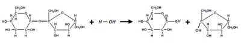
A Na conversão ilustrada ocorre a adição de água à ligação glicosídica, formada por um grupo funcional éter.
B A sacarose ou açúcar comum é um dissacarídeo digerido no estômago pela ação da enzima sacarase.
C A enzima sacarase atua em meio ácido para digerir a sacarose.
D Os monossacarídeos obtidos são isômeros de cadeia.
E A conversão da sacarose é um exemplo de reação por condensação.
Questão 999 · Bioestatística · 4000200287Um estudo de coorte prospectivo investiga o efeito do tabagismo no risco de desenvolver doença pulmonar obstrutiva crônica (DPOC) em uma população livre da doença no início do estudo. Os pesquisadores acompanham os participantes por 10 anos e registram a incidência de DPOC em fumantes e não fumantes. Qual medida de associação é mais apropriada para ser calculada neste tipo de estudo?
A Odds ratio (razão de chances)
B Risk ratio (razão de riscos)
C Diferença de riscos
D Número necessário para tratar (NNT)
Questão 1000 · Bioquímica · 4000200286Qual das seguintes afirmações melhor descreve a função dos carboidratos?
A Carboidratos são moléculas que funcionam como reservatórios de energia a longo prazo.
B Carboidratos atuam no reconhecimento celular, permitindo que as células se reconheçam mutuamente e se unam umas às outras para formar os tecidos, bem como rejeitando células diferentes.
C Carboidratos atuam como moléculas de sinalização intracelular ao permitir a transferência de íons para dentro e para fora das células.
D Carboidratos como o ATP são essenciais para a transferência de energia entre reações bioquímicas metabólicas.
E Carboidratos não desempenham um papel na sinalização celular.
Questão 1001 · Bioestatística · 4000200285Um estudo de caso-controle investiga a associação entre a exposição a pesticidas e o desenvolvimento de câncer de próstata. Os pesquisadores coletam informações sobre a exposição a pesticidas em 200 pacientes com câncer de próstata (casos) e 200 pacientes sem câncer de próstata (controles). Qual medida de associação é mais apropriada para ser calculada neste tipo de estudo?
A Odds ratio (razão de chances)
B Risk ratio (razão de riscos)
C Diferença de riscos
D Número necessário para tratar (NNT)
Questão 1002 · Bioestatística · 4000200284Em uma meta-análise sobre a e cácia de um medicamento para reduzir o risco de eventos cardiovasculares, os pesquisadores apresentam um forest plot para ilustrar os resultados combinados dos estudos incluídos. No gráfico, a linha vertical representa a razão de risco igual a 1, e os quadrados representam as estimativas pontuais dos efeitos do tratamento em cada estudo, com tamanhos proporcionais ao peso atribuído a cada estudo. As linhas horizontais que cruzam os quadrados representam os intervalos de con ança de 95%. Como interpretar o forest plot se a maioria dos intervalos de confiança cruza a linha vertical?
A O tratamento é eficaz na redução do risco de eventos cardiovasculares.
B O tratamento não é eficaz na redução do risco de eventos cardiovasculares.
C A maioria dos estudos incluídos na meta-análise não mostra uma associação estatisticamente significativa entre o tratamento e a redução do risco de eventos cardiovasculares.
D A maioria dos estudos incluídos na meta-análise apresenta viés de publicação.
Questão 1003 · Bioestatística · 4000200283Um pesquisador está conduzindo uma meta-análise para investigar a associação entre a exposição à poluição do ar e o risco de desenvolver doenças respiratórias. Ele identi ca um possível viés de publicação nos estudos incluídos. Qual técnica gráfica é frequentemente utilizada para ajudar a identificar a presença de viés de publicação em uma meta-análise?
A Gráfico de dispersão
B Gráfico de barras
C Funnel plot (gráfico de funil)
D Gráfico de pizza
Revisar: possível letra faltando em enunciado
Questão 1004 · Bioestatística · 4000200282Durante a realização de uma meta-análise, os pesquisadores observam uma grande heterogeneidade entre os estudos incluídos. Essa heterogeneidade pode ser atribuída a diferenças nas populações estudadas, nos desenhos dos estudos e nas intervenções utilizadas. Qual abordagem é mais apropriada para lidar com a heterogeneidade nesse caso?
A Utilizar um modelo de efeitos fixos na meta-análise.
B Utilizar um modelo de efeitos aleatórios na meta-análise.
C Excluir estudos com alta heterogeneidade da análise.
D Realizar uma análise de sensibilidade para identificar estudos que contribuem para a heterogeneidade.
Questão 1005 · Bioquímica · 4000200281A respeito das reações catalisadas por enzimas que obedecem a cinética de afirmação é falsa?
A Em níveis saturados de substrato, a velocidade de uma reação catalisada por enzima é proporcional à concentração da enzima.
B A constante de Michaelis-Menten (Km) equivale à concentração de substrato em que a enzima atinge metade da sua velocidade máxima.
C Se for adicionado substrato suficiente a uma solução, a velocidade máxima de uma reação enzimática pode ser alcançada, ainda que haja a presença de um inibidor competitivo.
D A velocidade de uma reação diminui com o tempo conforme o substrato é esgotado.
E A energia de ativação para uma reação catalisada é a mesma de uma reação não catalisada.
Questão 1006 · Bioestatística · 4000200280Um grupo de pesquisadores está realizando uma revisão sistemática e meta-análise para avaliar a e cácia de um novo medicamento para o tratamento da hipertensão. Eles identi caram diversos estudos publicados e coletaram dados sobre a redução da pressão arterial sistólica nos grupos de tratamento e controle. Qual é o principal objetivo de realizar uma meta-análise nesse contexto?
A Identificar a presença de viés de publicação nos estudos incluídos.
B Aumentar o poder estatístico e a precisão das estimativas, combinando os resultados de vários estudos.
C Estabelecer a causalidade entre o novo medicamento e a redução da pressão arterial.
D Avaliar a homogeneidade entre os estudos incluídos.
Questão 1007 · Bioestatística · 4000200279Um estudo de coorte prospectivo acompanha pacientes com insu ciência cardíaca congestiva ao longo de 5 anos. Os pesquisadores estão interessados em determinar fatores de risco associados ao tempo de sobrevida nesse grupo de pacientes. Eles coletam informações sobre idade, sexo, comorbidades, hábitos de vida e tratamentos recebidos. Qual método de análise é mais adequado para avaliar a relação entre os fatores de risco e o tempo até o óbito neste contexto?
A Regressão linear múltipla
B Regressão logística
C Regressão de Cox (modelo de riscos proporcionais)
D Teste qui-quadrado
Questão 1008 · Bioquímica · 4000200278O colesterol é constantemente comparado a um vilão pela mídia, no entanto desempenha funções primordiais em nosso organismo, como:
A síntese de glicogênio e energia celular.
B degradação celular e síntese de hormônios esteroides.
C formação de ácidos biliares e lipogênese.
D formação de membranas celulares e síntese de hormônios esteroides.
E lipólise e síntese de energia celular.
Questão 1009 · Bioestatística · 4000200277Um estudo clínico acompanha pacientes diagnosticados com câncer de mama em estágio inicial para investigar a e cácia de um novo tratamento. O objetivo do estudo é comparar a taxa de sobrevivência dos pacientes que receberam o novo tratamento com a taxa de sobrevivência dos pacientes que receberam o tratamento padrão. Ao longo do estudo, alguns pacientes são perdidos no acompanhamento. Qual método de análise é mais adequado para lidar com os dados de sobrevivência e as possíveis perdas no acompanhamento?
A Teste t de Student
B ANOVA (Análise de Variância)
C Método de Kaplan-Meier
D Regressão logística
Questão 1010 · Bioestatística · 4000200276Um grupo de pesquisadores deseja investigar o impacto do consumo de álcool durante a gravidez no desenvolvimento cognitivo das crianças. Eles coletam informações sobre o consumo de álcool das mães durante a gravidez e avaliam o desenvolvimento cognitivo das crianças aos 5 anos de idade. Qual tipo de estudo observacional é mais adequado para essa investigação e por quê?
A Estudo de caso-controle, porque compara indivíduos com e sem a exposição de interesse.
B Estudo de coorte, porque acompanha um grupo de indivíduos ao longo do tempo e permite a avaliação de múltiplos desfechos em relação à exposição.
C Estudo transversal, porque avalia a exposição e o desfecho em um único momento.
D Ensaio clínico randomizado, porque permite estabelecer relações de causalidade entre a exposição e o desfecho.
Questão 1011 · Bioquímica · 4000200275As vitaminas são componentes orgânicos que devem ser adquiridos na dieta, e cuja absorção depende diretamente da sua solubilidade. A seguir são apresentadas as estruturas químicas de três vitaminas. Dentre as vitaminas apresentadas, é correto afirmar que
A a vitamina I necessita de maior suplementação diária.
B a absorção da vitamina II não será afetada em pessoas que realizaram uma cirurgia bariátrica.
C a vitamina I pode estar relacionada à ação antioxidante típica das frutas cítricas.
D a vitamina III necessita de maior suplementação diária.
E a absorção da vitamina III ocorre nas células do fígado e do tecido adiposo.
Questão 1012 · Bioestatística · 4000200274Um estudo epidemiológico pretende investigar a associação entre o consumo de carne vermelha e o risco de desenvolver câncer de cólon. Os pesquisadores acompanham um grupo de pessoas por um período de 10 anos, registrando a quantidade de carne vermelha consumida e o desenvolvimento de câncer de cólon. Qual tipo de estudo observacional é mais adequado para essa investigação?
A Estudo de caso-controle
B Estudo de coorte
C Estudo transversal
D Ensaio clínico randomizado
Questão 1013 · Bioestatística · 4000200273Um estudo está sendo realizado para investigar a prevalência de hipertensão em uma população adulta. Os pesquisadores medem a pressão arterial de todos os participantes em um único momento e classificam os indivíduos como hipertensos ou não hipertensos com base nos resultados. Qual tipo de estudo observacional está sendo realizado?
A Estudo de caso-controle
B Estudo de coorte
C Estudo transversal
D Ensaio clínico randomizado
Questão 1014 · Bioestatística · 4000200272Um grupo de pesquisadores deseja investigar a relação entre a exposição ao fumo passivo durante a infância e o desenvolvimento de doenças pulmonares na vida adulta. Eles coletam informações sobre a exposição ao fumo passivo em um grupo de crianças e acompanham o diagnóstico de doenças pulmonares quando essas crianças viram adultas. Qual tipo de estudo observacional é mais adequado para esta investigação?
A Estudo de caso-controle
B Estudo de coorte
C Estudo transversal
D Ensaio clínico randomizado
Questão 1015 · Bioestatística · 4000200271Um estudo foi conduzido para comparar o efeito de diferentes abordagens terapêuticas no tratamento da hipertensão. Quatro abordagens foram testadas: terapia medicamentosa, exercício físico, dieta e combinação de medicamento, exercício e dieta. Após seis meses de tratamento, a pressão arterial sistólica foi medida em todos os pacientes participantes. Os pesquisadores realizam uma ANOVA de um fator para analisar os dados e obtêm um valor de p < 0,05. O que isso sugere sobre os resultados do estudo?
A Não há diferenças significativas entre as médias das pressões arteriais sistólicas dos quatro grupos.
B Há uma diferença significativa entre pelo menos dois dos grupos de tratamento, mas a ANOVA não indica quais.
C Há diferenças significativas entre todas as médias das pressões arteriais sistólicas dos quatro grupos.
D A ANOVA não é o teste adequado para essa situação, e os resultados não são confiáveis.
Questão 1016 · Bioestatística · 4000200270Um grupo de pesquisadores está interessado em comparar a e cácia de três diferentes medicamentos (A, B e C) no controle da glicemia em pacientes com diabetes tipo 2. Para isso, eles selecionam aleatoriamente 30 pacientes e os dividem igualmente entre os três grupos de tratamento. Após três meses de tratamento, os pesquisadores medem a glicemia em cada grupo. Qual teste estatístico deve ser usado para determinar se há diferenças significativas entre as médias das glicemias nos três grupos?
A Teste t de Student
B Teste de Kruskal-Wallis
C Teste qui-quadrado
D ANOVA (Análise de Variância)
Questão 1017 · Bioquímica · 4000200269Em 1980, o bioquímico Frederick Sanger foi agraciado com o Prêmio Nobel pela criação do primeiro procedimento automatizado de sequenciamento de DNA, o método de terminação de cadeia. Essa técnica se baseia na síntese de múltiplas tas de DNA complementares ao fragmento original de DNA que será sequenciado. Todas as tas se iniciam com o mesmo oligonucleotídeo, mas cada uma termina com um didesoxirribonucleotídeo (ddNTP), que é um tipo modi cado de desoxirribonucleotídeo (dNTP) com uorescência distinta. A incorporação aleatória de um ddNTP em uma das tas interrompe seu crescimento, uma vez que sua estrutura molecular difere da do dNTP, que é catalisado pela DNA-polimerase. Observe o esquema abaixo. Por que a incorporação do nucleotídeo modi cado (ddNTP) determina o m do crescimento da cadeia de DNA complementar?
A O ddNTP não possui o agrupamento 3’-OH na pentose para a ligação do próximo nucleotídeo.
B A fluorescência impossibilita a DNA-polimerase catalisar a ligação entre nucleotídeos.
C O ddNTP não possui o agrupamento 5’-OH na pentose para ligar-se aos fosfatos.
D O ddNTP não realiza ligações de hidrogênio com a fita antiparalela.
E A DNA-polimerase não consegue ligar outro nucleotídeo na extremidade 5’-H da pentose.
Revisar: possível letra faltando em enunciado
Questão 1018 · Correlação Linear Regressão Linear e Regressão Logística · 4000200268Um estudo investiga a relação entre a quantidade de atividade física (em horas por semana) e a pressão arterial em um grupo de 500 adultos. Os pesquisadores realizam uma análise de regressão linear e obtêm uma equação de regressão com uma inclinação negativa. Qual das seguintes a rmações é verdadeira com base nessa informação?
A Aumentar a quantidade de atividade física está associado a uma pressão arterial maior.
B A quantidade de atividade física não tem relação com a pressão arterial.
C Aumentar a quantidade de atividade física está associado a uma menor pressão arterial.
D A análise de regressão linear é inadequada para analisar a relação entre atividade física e pressão arterial.
Questão 1019 · Correlação Linear Regressão Linear e Regressão Logística · 4000200267Um estudo clínico está sendo realizado para avaliar a relação entre o tempo desde o diagnóstico de infarto do miocárdio (em meses) e a capacidade funcional do paciente, medida pelo teste de caminhada de seis minutos. Os pesquisadores decidem analisar a correlação e a regressão entre as duas variáveis. Eles observam que a correlação é negativa. O que isso sugere sobre a relação entre o tempo desde o diagnóstico e a capacidade funcional?
A Quanto mais tempo desde o diagnóstico, maior a capacidade funcional do paciente.
B Quanto mais tempo desde o diagnóstico, menor a capacidade funcional do paciente.
C Não há relação entre o tempo desde o diagnóstico e a capacidade funcional do paciente.
D A capacidade funcional do paciente é independente do tempo desde o diagnóstico.
Questão 1020 · Correlação Linear Regressão Linear e Regressão Logística · 4000200266Uma equipe de médicos está estudando a relação entre o índice de massa corporal (IMC) e o nível de glicose em jejum em pacientes com diabetes tipo 2. Eles coletaram dados de 200 pacientes e realizaram uma análise de regressão linear. O coe ciente de determinação (R²) encontrado foi de 0,64. O que isso significa em relação à variabilidade da glicose em jejum e o IMC dos pacientes?
A O IMC explica 64% da variabilidade na glicose em jejum dos pacientes.
B O IMC explica 36% da variabilidade na glicose em jejum dos pacientes.
C A glicose em jejum explica 64% da variabilidade no IMC dos pacientes.
D A glicose em jejum explica 36% da variabilidade no IMC dos pacientes.
Revisar: possível letra faltando em enunciado
Questão 1021 · Correlação Linear Regressão Linear e Regressão Logística · 4000200265Um grupo de pesquisadores está investigando a relação entre o consumo de sal e a pressão arterial em pacientes com hipertensão arterial. Eles coletaram dados de 100 pacientes, medindo a quantidade diária de sal consumida (em gramas) e a pressão arterial sistólica (em mmHg). Os pesquisadores decidem analisar a correlação entre as duas variáveis para determinar se existe uma relação linear entre o consumo de sal e a pressão arterial sistólica. Qual dos seguintes métodos estatísticos deve ser utilizado para investigar a existência de uma relação linear entre as variáveis?
A Coeficiente de correlação de Pearson
B Teste de normalidade de Shapiro-Wilk
C Teste t de Student
D Teste qui-quadrado
Questão 1022 · Bioquímica · 4000200264Observe a molécula abaixo. Trata-se de

A um carboidrato.
B um lipídio.
C um peptídeo.
D uma vitamina.
E um ácido nucleico.
Questão 1023 · Bioestatística · 4000200263Um estudo observacional deseja investigar a relação entre a idade e a incidência de uma doença especí ca. Os pesquisadores coletam dados de 100 pacientes e estimam a correlação entre a idade e a incidência da doença. Eles também calculam um intervalo de con ança de 95% para o coe ciente de correlação. Se o intervalo de confiança incluir zero, o que isso indica sobre a relação entre a idade e a incidência da doença?
A Há uma correlação forte e positiva entre idade e incidência da doença.
B Há uma correlação forte e negativa entre idade e incidência da doença.
C Não há evidências suficientes para afirmar que existe uma correlação significativa entre idade e incidência da doença.
D A correlação entre idade e incidência da doença é exatamente zero.
Revisar: possível letra faltando em enunciado
Questão 1024 · Bioestatística · 4000200262Em um estudo clínico, os pesquisadores estão interessados em estimar o efeito médio de um novo medicamento na redução da pressão arterial sistólica. Eles obtêm uma amostra de 50 pacientes e calculam um intervalo de con ança de 95% para a média populacional da redução da pressão arterial sistólica. Esse intervalo de confiança é de 8,5 ± 3,2 mmHg. Como os pesquisadores devem interpretar esse intervalo?
A A redução média da pressão arterial sistólica na população está entre 5,3 e 11,7 mmHg com 95% de confiança.
B A redução média da pressão arterial sistólica na população é exatamente 8,5 mmHg.
C A redução média da pressão arterial sistólica na amostra está entre 5,3 e 11,7 mmHg com 95% de confiança.
D A redução média da pressão arterial sistólica na amostra é exatamente 8,5 mmHg.
Questão 1025 · Bioquímica · 4000200261O orlistate é um fármaco utilizado no tratamento da obesidade. Produzido pela bactéria toxytricini absorção de lipídios. Como as gorduras não digeridas não são armazenadas pelo organismo, elas acabam sendo eliminadas pelas fezes. Contudo, o medicamento não bloqueia a absorção de calorias do açúcar e de outros alimentos não gordurosos, por isso você ainda precisa restringir a ingestão total de calorias. Um dos efeitos colaterais que devem ser alertados aos pacientes durante o uso do medicamento é
A o desenvolvimento de intolerância à lactose.
B a constipação gastrointestinal.
C o excesso de suco gástrico e posterior desenvolvimento de gastrite.
D a dependência em longo prazo, efeito comum entre medicamentos emagrecedores como a anfetamina.
E a queda nos níveis séricos das vitaminas A, D, E e K.
Questão 1026 · Bioestatística · 4000200260Um estudo está sendo realizado para investigar a prevalência de hipertensão em uma população. Os pesquisadores coletam uma amostra aleatória de indivíduos e determinam a proporção deles que têm hipertensão. Eles querem construir um intervalo de con ança de 99% em torno dessa proporção. O que acontece com a largura do intervalo de confiança quando o nível de confiança aumenta de 95% para 99%?
A O intervalo de confiança fica mais estreito.
B O intervalo de confiança fica mais largo.
C O intervalo de confiança permanece o mesmo.
D Não é possível determinar sem mais informações.
Questão 1027 · Bioestatística · 4000200259Em um estudo clínico, os pesquisadores investigam o efeito de uma nova dieta na perda de peso de um grupo de participantes. Eles coletam dados de peso antes e depois do período de estudo e calculam a média e o desvio padrão da perda de peso. Os pesquisadores também calculam um intervalo de con ança de 95% para a média da perda de peso. Se o intervalo de con ança for -5 a -3 kg, qual das seguintes conclusões pode ser tirada?
A A nova dieta não teve nenhum efeito na perda de peso.
B A nova dieta teve um efeito significativo na perda de peso.
C A nova dieta teve um efeito insignificante na perda de peso.
D A nova dieta aumentou o peso dos participantes.
Questão 1028 · Bioestatística · 4000200258Um estudo investiga a influência do consumo de cafeína na frequência cardíaca de um grupo de participantes. Os pesquisadores dividem os participantes em dois grupos: um que consome cafeína e outro que recebe um placebo. Após o experimento, eles medem a frequência cardíaca dos participantes. Para testar se há uma diferença significativa na frequência cardíaca entre os dois grupos, os pesquisadores planejam realizar um teste de hipóteses. Se os pesquisadores descobrirem que a variância da frequência cardíaca é significativamente diferente entre os grupos, qual teste estatístico seria mais apropriado?
A Teste t de Student para amostras independentes assumindo homocedasticidade
B Teste t de Student para amostras independentes assumindo heteroscedasticidade
C Teste de Mann-Whitney
D Teste qui-quadrado
Questão 1029 · Bioestatística · 4000200257Um estudo investiga a e cácia de um programa de treinamento de força na melhoria do desempenho atlético. Os pesquisadores coletam dados sobre o desempenho atlético antes e depois do programa e querem testar se o programa de treinamento teve um efeito positivo. Eles decidem usar um teste t de Student bicaudado pareado com um nível de signi cância de 0,05. Se o valor-p obtido for 0,03 e o desempenho após foi mais alto que antes, qual conclusão pode ser tirada?
A Rejeitar a hipótese nula e concluir que o programa de treinamento melhorou o desempenho atlético.
B Rejeitar a hipótese nula, mas não concluir que o programa de treinamento melhorou o desempenho atlético.
C Não rejeitar a hipótese nula e concluir que o programa de treinamento não teve efeito no desempenho atlético.
D Não rejeitar a hipótese nula, mas não concluir que o programa de treinamento não teve efeito no desempenho atlético.
Questão 1030 · Bioestatística · 4000200256Em uma pesquisa sobre a qualidade do sono, os pesquisadores medem a quantidade de horas de sono por noite em dois grupos de participantes: um grupo que pratica meditação e outro que não pratica. Eles querem testar se a média de horas de sono é maior no grupo que pratica meditação. Qual das alternativas a seguir é a hipótese nula apropriada para esse teste?
A H0: A média de horas de sono é igual nos dois grupos.
B H0: A média de horas de sono é maior no grupo que pratica meditação.
C H0: A média de horas de sono é menor no grupo que pratica meditação.
D H0: A média de horas de sono é diferente nos dois grupos.
Questão 1031 · Bioestatística · 4000200255Um estudo analisa a relação entre o consumo de um determinado alimento e a incidência de doenças cardiovasculares em uma população. Os pesquisadores coletam dados categóricos sobre o consumo do alimento (alto, médio ou baixo) e a incidência de doenças cardiovasculares (sim ou não). Qual teste de hipóteses é apropriado para avaliar a associação entre o consumo do alimento e a incidência de doenças cardiovasculares?
A Teste t de Student
B Teste de Mann-Whitney
C Teste qui-quadrado
D Teste de Fisher
Questão 1032 · Biologia Celular · 4000200254Mutações ocorrem ao acaso e quando os mecanismos de reparo das células falham. Entretanto, mesmo que uma mutação aconteça em uma região codi cante do gene, ela pode ou não resultar em alteração da proteína expressa. Isso é explicado pelo fato
A do código genético ser degenerado.
B da duplicação do DNA ser semiconservativa.
C do código genético ser universal.
D da transcrição poder ser reversa.
E de as mutações serem direcionadas para um fim.
Questão 1033 · Bioestatística · 4000200253Um estudo está sendo realizado para determinar se o tempo médio de recuperação após uma cirurgia é diferente entre dois grupos de pacientes: um que segue um protocolo de reabilitação e outro que não segue. Os pesquisadores assumem que os dados não seguem uma distribuição normal. Qual teste de hipóteses seria adequado neste caso?
A Teste t de Student para amostras independentes
B Teste t de Student para amostras pareadas
C Teste de Mann-Whitney
D Teste qui-quadrado
Questão 1034 · Bioestatística · 4000200252Um estudo avalia a e cácia de um novo medicamento para a redução da pressão arterial. Os pesquisadores coletam informações sobre a pressão arterial antes e depois do tratamento com o medicamento. Eles querem verificar se há uma diferença estatisticamente significativa na pressão arterial antes e depois do tratamento. Qual teste de hipóteses seria adequado para essa análise?
A Teste t de Student para amostras pareadas
B Teste t de Student para amostras independentes
C Teste de Mann-Whitney
D Teste qui-quadrado
Questão 1035 · Biologia Celular · 4000200251A membrana plasmática permite selecionar a entrada de diferentes substâncias do meio externo para o meio intracelular. O esquema a seguir mostra como ocorre o transporte dessas substâncias. Os números 1, 2, 3 e 4 de nem o tipo de transporte que carrega as diferentes substâncias citadas. Sabendo- se disto, está correta a alternativa

A 1-difusão simples, 2-osmose, 3-difusão facilitada, 4- transporte ativo.
B 1-difusão simples, 2- difusão simples, 3-difusão facilitada, 4- difusão facilitada.
C 1-difusão simples, 2- difusão facilitada, 3-difusão facilitada, 4-transporte ativo.
D 1-osmose, 2- osmose, 3-difusão passiva simples, 4-difusão facilitada.
E 1-difusão simples, 2- difusão simples, 3-transporte ativo, 4-transporte ativo.
Questão 1036 · Biologia Molecular · 4000200250Considere que um gene que será expresso resultou em um transcrito de RNA mensageiro com 75 nucleotídeos. A esse respeito foram feitas as seguintes afirmações: I. O RNA mensageiro apresenta 25 códons, que podem codificar 25 aminoácidos diferentes. II. A transcrição acontece no citoplasma e por ação da enzima RNA polimerase. III. O códon de iniciação da tradução desse RNA mensageiro é o AUG, que codifica o aminoácido metionina. IV. A tradução acontece no citoplasma e depende da ação de enzimas específicas e de ATP. Estão corretas as afirmações:
A I e II.
B II e IV.
C III e IV.
D II, III e IV.
E I, II, III e IV.
Questão 1037 · Biologia Celular · 4000200249Mutações adquiridas no gene p53 são as alterações genéticas mais comuns encontradas nos cânceres humanos (> 50%). Que tipo de proteína é codificada pelo gene p53?
A Fator de transcrição.
B Proteína de reparação do DNA.
C Protease característica do processo de morte celular.
D Fator de crescimento.
E Fator de inibição.
Questão 1038 · Estatística Descritiva Tipos de Dados Distribuições e Probabilidades · 4000200248Um estudo acompanha pacientes com diabetes tipo 2 para avaliar a e cácia de um novo tratamento. Os pesquisadores estão interessados no número de consultas médicas necessárias até que os pacientes atinjam um controle adequado da glicose no sangue. Qual distribuição de probabilidade é adequada para modelar o número de consultas médicas até que o controle adequado da glicose seja alcançado?
A Distribuição binomial
B Distribuição de Poisson
C Distribuição normal
D Distribuição geométrica
Questão 1039 · Biologia Celular · 4000200247Algumas enfermidades do sistema respiratório podem ser atribuídas à inadequada formação e subsequente disfunção dos cílios presentes nas células que compõem esse sistema, como por exemplo a sinusite crônica. A sinusite é caracterizada pela in amação dos seios da face, que se situam ao redor do nariz, das maçãs do rosto e dos olhos. Esses seios são revestidos por células que produzem muco, cuja nalidade é reter microrganismos e partículas estranhas. Essas células possuem cílios que trabalham incansavelmente para remover o muco produzido. Quando há algum obstáculo que impeça a eliminação do muco, como alergias ou processos infecciosos, aumenta-se a predisposição ao aparecimento da sinusite. Falhas nas células ciliadas podem ser explicadas
A pela ausência ou redução do número de mitocôndrias.
B por excesso de síntese proteica.
C por erros no funcionamento dos ribossomos.
D por erros na síntese proteica.
E por erros no funcionamento do citoesqueleto.
Questão 1040 · Estatística Descritiva Tipos de Dados Distribuições e Probabilidades · 4000200246Um estudo busca avaliar a e cácia de uma nova vacina para prevenir a transmissão de um vírus. Os participantes são divididos em dois grupos: um que recebe a vacina e outro que recebe um placebo. Os pesquisadores registram se os participantes do estudo foram infectados ou não pelo vírus durante o período de acompanhamento. Qual distribuição de probabilidade é apropriada para modelar a probabilidade de um certo número de participantes serem infectados pelo vírus?
A Distribuição binomial
B Distribuição de Poisson
C Distribuição normal
D Distribuição geométrica
Questão 1041 · Estatística Descritiva Tipos de Dados Distribuições e Probabilidades · 4000200245Em um estudo sobre a incidência de infecções hospitalares, os pesquisadores coletam dados sobre o número de infecções por paciente em um período de 30 dias. Eles descobrem que a média de infecções por paciente é de 1,5 no período. Qual distribuição de probabilidade é adequada para modelar o número de infecções por paciente neste cenário?
A Distribuição binomial
B Distribuição de Poisson
C Distribuição normal
D Distribuição geométrica
Questão 1042 · Estatística Descritiva Tipos de Dados Distribuições e Probabilidades · 4000200244Um hospital está conduzindo um estudo sobre o tempo de internação de pacientes que se submeteram a uma cirurgia cardíaca. Os pesquisadores observaram que o tempo de internação segue uma distribuição simétrica, com média de 10 dias e desvio padrão de 2 dias. Qual distribuição de probabilidade é apropriada para descrever o tempo de internação dos pacientes neste caso?
A Distribuição binomial
B Distribuição de Poisson
C Distribuição normal
D Distribuição geométrica
Questão 1043 · Bioestatística · 4000200243Uma pesquisa busca avaliar a associação entre o consumo de frutas e a melhoria dos sintomas de pacientes com síndrome do intestino irritável. Os pesquisadores coletam dados sobre a quantidade diária de frutas consumidas e a pontuação dos sintomas em uma escala de 0 a 100. Ao analisar os dados, eles percebem que há uma grande variabilidade nas pontuações dos sintomas entre os pacientes. Qual medida de dispersão poderia ser utilizada para quantificar essa variabilidade?
A Média
B Mediana
C Amplitude interquartil
D Moda
Questão 1044 · Biologia Celular · 4000200242As transformações que ocorrem no útero pós-parto dos mamíferos são exemplos de qual processo celular?
A Necrose.
B Autofagia.
C Renovação celular.
D Heterofagia.
E Autólise.
Questão 1045 · Bioestatística · 4000200241Em um estudo para avaliar a e cácia de um novo medicamento para reduzir os níveis de colesterol, os pesquisadores coletam informações sobre os níveis de colesterol total dos participantes antes e após o tratamento. Eles observam que a média dos níveis de colesterol após o tratamento é menor, mas a dispersão dos valores é maior. Qual das seguintes medidas de dispersão pode ser usada para confirmar essa observação?
A Moda
B Mediana
C Variância
D Odds ratio
Questão 1046 · Bioestatística · 4000200240Um grupo de cientistas está investigando a relação entre a quantidade de exercício físico e a redução dos níveis de glicose em pacientes com diabetes tipo 2. Eles coletam dados sobre a duração diária do exercício e os níveis de glicose em jejum. Para compreender melhor a distribuição dos dados, os pesquisadores devem analisar quais medidas de dispersão?
A Média e mediana
B Média e desvio padrão
C Variância e desvio padrão
D Mediana e amplitude interquartil
Questão 1047 · Biologia Celular · 4000200239Os anabolizantes atuam acelerando a síntese de brilas musculares. Assim, na célula, essas substâncias agem:
A no retículo endoplasmático rugoso.
B no complexo de Golgi.
C no núcleo.
D no retículo endoplasmático liso.
E nos centríolos.
Questão 1048 · Bioestatística · 4000200238Um estudo analisa o impacto de diferentes tratamentos para hipertensão em pacientes diabéticos. Os pesquisadores coletam os valores de pressão arterial sistólica antes e após cada tratamento. Eles querem comparar as médias das pressões arteriais sistólicas e identi car qual tratamento teve maior impacto na redução da pressão. Além da média, qual outra medida de tendência central pode ser útil nessa comparação?
A Mediana
B Moda
C Variância
D Desvio padrão
Questão 1049 · Biologia Celular · 4000200237A doença de Wilson é uma desordem autossômica recessiva do metabolismo do cobre, que leva à impregnação desse metal em diversos tecidos como o fígado, cérebro, córnea e rins. Tem prevalência de 1:40.000 e evolui de forma progressiva e fatal se não tratada. Essa patologia é causada por mutações no gene ATP7B, que codi ca uma proteína transportadora de cobre nos hepatócitos. Normalmente, tal proteína regula a absorção intestinal de cobre por meio do sequestro vesicular do elemento, com posterior encaminhamento para a circulação portal. Na doença de Wilson, esse sequestro deixa de acontecer. A mutação ATP7B do gene comprometeu
A a atividade dos ribossomos nos hepatócitos.
B a atividade do retículo endoplasmático rugoso nos hepatócitos.
C a inibição da difusão do cobre do interior dos hepatócitos para a circulação sanguínea.
D a transcrição dentro do núcleo.
E a atividade do complexo golgiense nos hepatócitos.
Revisar: possível letra faltando em enunciado
Questão 1050 · Biologia Celular · 4000200236Sobre a técnica de coloração de Gram e as características da parede celular bacteriana, considere as seguintes afirmativas: 1. A parede celular das bactérias consideradas Gram positivas é mais delgada. 2. As bactérias Gram positivas apresentam coloração rosa ao final da aplicação da técnica. 3. A parede celular das bactérias consideradas Gram negativas é composta por lipopolissacari fosfolipídios, lipoproteínas e uma fina camada de peptideoglicano. 4. As bactérias consideradas Gram negativas apresentam coloração rosa ao final da aplicação da técnica. Assinale a alternativa correta.
A Somente afirmativa 2 é verdadeira.
B Somente as afirmativas 3 e 4 são verdadeiras.
C Somente as afirmativas 1, 2 e 3 são verdadeiras.
D Somente as afirmativas 1, 3 e 4 são verdadeiras.
E Somente as afirmativas 2 e 4 são verdadeiras.
Questão 1051 · Biologia Molecular · 4000200235Para investigar os efeitos de dois agentes mutagênicos, culturas de E. coli foram tratadas com cada um deles e amostras dessas células tiveram seus genes modi cados isolados e sequenciados. Os resultados sobre a estrutura primária das proteínas codificadas foram estudados e registrados na tabela abaixo. Sabendo-se que o gene em questão codi ca uma proteína da cadeia respiratória, é possível a rmar que, nas células tratadas com o agente mutagênico
A I, houve alteração no rendimento energético celular.
B I, não houve alteração no rendimento energético celular.
C II, a mutação incorreu no término precoce da proteína.
D II, a mutação foi silenciosa.
E II, a mutação foi pontual do tipo transversão.
Revisar: possível letra faltando em enunciado
Questão 1052 · Bioestatística · 4000200234Uma pesquisa busca analisar a relação entre a obesidade e o desenvolvimento de diabetes mellitus tipo 2. Os pesquisadores coletam informações como índice de massa corporal (IMC), circunferência abdominal, níveis de glicose no sangue e presença ou ausência de diabetes tipo 2. Considerando os tipos de variáveis, qual das alternativas a seguir descreve corretamente a variável que representa a presença ou ausência de diabetes tipo 2 e a escala de medida do IMC?
A Presença ou ausência de diabetes tipo 2: variável categórica; IMC: variável contínua.
B Presença ou ausência de diabetes tipo 2: variável ordinal; IMC: variável categórica.
C Presença ou ausência de diabetes tipo 2: variável categórica; IMC: variável ordinal.
D Presença ou ausência de diabetes tipo 2: variável contínua; IMC: variável categórica.
Questão 1053 · Bioestatística · 4000200233Um estudo longitudinal está sendo conduzido para investigar a associação entre o consumo de alimentos ricos em sódio e o desenvolvimento de hipertensão arterial em adultos. Os dados coletados incluem o consumo diário de sódio (baixo, médio e alto), a pressão arterial sistólica e diastólica, e a classificação da hipertensão (normal, pré-hipertensão, hipertensão estágio 1 e hipertensão estágio 2). Quais variáveis são, respectivamente, categórica, ordinal e contínua?
A Consumo diário de sódio, classificação da hipertensão e pressão arterial sistólica
B Classificação da hipertensão, pressão arterial diastólica e consumo diário de sódio
C Pressão arterial sistólica, classificação da hipertensão e consumo diário de sódio
D Classificação da hipertensão, consumo diário de sódio e pressão arterial sistólica
Questão 1054 · Bioestatística · 4000200232Uma pesquisa clínica busca analisar a e cácia de uma nova droga no tratamento de infarto agudo do miocárdio. Os participantes do estudo são divididos em dois grupos: um grupo que recebe a nova droga e outro grupo que recebe um tratamento padrão. Os pesquisadores coletam dados demográ cos, como idade e sexo, e medidas clínicas, como valor de troponina e tempo de internação (dias). Qual das seguintes alternativas apresenta uma variável categórica e uma variável contínua coletadas neste estudo?
A Troponina e idade
B Troponina e tempo de internação
C Sexo e troponina
D Idade e tempo de internação
Revisar: possível letra faltando em enunciado
Questão 1055 · Bioestatística · 4000200231Um grupo de pesquisadores está realizando um estudo para avaliar a relação entre a prática de exercícios físicos e o controle da hipertensão em pacientes diabéticos. Para isso, eles coletam informações sobre os níveis de glicemia e pressão arterial dos pacientes, e o tempo de duração do diabetes. Considerando os tipos de variáveis envolvidas, identi que qual das seguintes combinações descreve corretamente os dados coletados:
A Níveis de glicemia: variável contínua; Pressão arterial: variável contínua; Tempo de duração do diabetes: variável contínua.
B Níveis de glicemia: variável ordinal; Pressão arterial: variável contínua; Tempo de duração do diabetes: variável contínua.
C Níveis de glicemia: variável categórica; Pressão arterial: variável ordinal; Tempo de duração do diabetes: variável contínua.
D Níveis de glicemia: variável contínua; Pressão arterial: variável ordinal; Tempo de duração do diabetes: variável ordinal.
Questão 1056 · Tradução e controle póstraducional · 4000200230As vacinas de RNA contêm informações genéticas selecionadas do vírus na forma de mRNA, que são traduzidos em proteínas virais (peptídeo sinal), como, por exemplo, a proteína spike do coronavírus. A localização esperada da proteína traduzida a partir desse RNAm é:
A o núcleo.
B a membrana celular.
C o meio extracelular.
D o aparelho de Golgi.
E o citosol.
Questão 1057 · Tradução e controle póstraducional · 4000200229Duas das vacinas utilizadas contra a COVID-19 usam, como princípio ativo, moléculas de RNA mensageiro (RNAm) que codi cam uma das proteínas do coronavírus SARS-CoV-2, a glicoproteína S. O RNA da vacina contém elementos também presentes em RNAm endógenos. Uma vez dentro das células, o RNAm é traduzido, a glicoproteína S é localizada na superfície celular e a resposta do sistema imunológico é deflagrada. Assinale a alternativa que apresenta um elemento necessário para que a tradução ocorra de maneira eficiente.
A Nucleotídeo de 7-metilguanosina na extremidade 5’.
B Sinal de exportação nuclear.
C Sequência consenso do splicing.
D Códon de início da tradução na extremidade 3’.
E Poliadenilação na extremidade 5’.
Questão 1058 · Biotecnologia · 4000200228Um dos fatores de risco para o desenvolvimento da cirrose é a infecção crônica pelo vírus da hepatite B, que possui um genoma de DNA de dupla hélice. Para diagnosticar a quantidade de cópias virais, deve-se solicitar:
A PCR.
B PCR em tempo real.
C Retrotranscrição.
D Eletroforese de DNA.
E Eletroforese de proteínas.
Questão 1059 · Biotecnologia · 4000200227A técnica CRISPR-Cas9 permite modi car o genoma das células mediante a introdução de uma endonuclease exógena (Cas9), baseando-se no mecanismo endógeno de:
A pontos de controle do ciclo celular.
B reparação de danos que afetam as fitas do DNA.
C formação descontínua de fragmentos de Okazaki.
D DNA recombinante a partir de enzimas de restrição.
E modificação pós-traducional.
Questão 1060 · Replicação do DNA · 4000200226Na replicação das células somáticas, ocorre um encurtamento dos telômeros, evento que se associa ao fato de:
A a telomerase possuir intensa atividade nos cromossomos.
B os telômeros serem compostos por DNA não codificante.
C as extremidades 3' das fitas dos cromossomos não poderem ser replicadas pelas DNA polimerases.
D a heterocromatina, geneticamente ativa, começa a replicar desde o início da fase S, enquanto a eucromatina, inativa, só inicia a replicação no final do período S.
E não ser possível a ligação de sequências iniciadoras nas extremidades dos cromossomos.
Questão 1061 · Transcrição do DNA · 4000200225O processo de splicing alternativo é caracterizado por:
A reduzir a taxa de erros durante o processo de transcrição.
B remover os íntrons de transcritos maduros.
C utilizar códons sinônimos para gerar a mesma proteína a partir de RNAs mensageiros distintos.
D aumentar a capacidade codificante do genoma.
E remover os íntrons de um gene, unindo seus éxons em diferentes combinações.
Questão 1062 · Biologia Molecular · 4000200224Qual dos seguintes mecanismos moleculares participa durante a fase M do ciclo celular?
A A ativação do complexo promotor da anáfase promovida pelo fator promotor da fase M.
B A restauração do envoltório nuclear promovida pela fosforilação das lâminas nucleares.
C A desorganização do envoltório nuclear promovida pelo complexo promotor da anáfase.
D O movimento das cromátides em direção aos polos, durante a anáfase, pelos microtúbulos polares.
E A produção de proteínas inibidoras de Cdk no ponto de checagem do fuso, promovida pela proteína p53.
Questão 1063 · Biologia Molecular · 4000200223A cirrose é caracterizada por gerar um aumento da pressão venosa do fígado, o que causa dilatação e ruptura dos vasos devido à dissociação das junções aderentes, entre outros processos. As seguintes proteínas estão envolvidas nessas junções:
A Actina e caderinas.
B Actina e dineínas.
C Filamentos intermediários e conexinas.
D Filamentos intermediários e cinesinas.
E Actina e cinesinas.
Questão 1064 · Transcrição do DNA · 4000200222A brose hepática é caracterizada pela contínua deposição de bras de colágeno nos espaços entre as células do fígado, uma tentativa do organismo de reparar lesões que acontecem de maneira recorrente. O consumo de álcool em excesso, hepatites virais, colestase biliar, entre outros fatores, causam in amação no fígado e brose, que, se não for tratada adequadamente, pode evoluir para cirrose, o estágio nal comum às doenças hepáticas crônicas, é a décima quarta maior causa de mortalidade em todo o mundo. Na fibrose hepática, espera-se encontrar:
A maior glicosilação proteica no retículo endoplasmático liso.
B elevada expressão de RNAs de interferência complementares aos RNAs mensageiros de colágeno.
C intensa tradução de RNAs mensageiros de colágeno em polirribossomos livres.
D maior acetilação de histonas nas regiões regulatórias de genes de colágeno.
E aumento da síntese de inibidores da quinase dependente de ciclina.
Questão 1065 · Organelas Compartimentos Celulares · 4000200221A doença de Tay-Sachs é um problema genético raro, que surge como consequência da insu ciência de uma enzima lisossômica, a hexosaminidase, responsável pela decomposição de glicolipídeos. Sem sua degradação, esses lipídios acumulam-se no cérebro, interferindo em diferentes processos importantes para a vida do indivíduo, como a coordenação motora, a respiração e a visão. Assim como a doença de Tay-Sachs, outras doenças decorrem do acúmulo progressivo de substâncias não metabolizadas no interior do lisossomo, como a Doença de Gaucher, a Doença de Pompe, a Doença de Fabry e a Mucopolissacaridose. A respeito das doenças acima citadas, denominadas genericamente de doenças lisossomais, é correto afirmar que
A lisossomos são pequenas vesículas derivadas do complexo golgiense, com capacidade para autoduplicação, de modo que um lisossomo defeituoso pode originar cópias que carregam o mesmo defeito.
B lisossomos realizam a digestão de partículas intracelulares em pH acima do pH citosólico; na ausência dessa condição, as enzimas lisossomais perdem suas atividades.
C as enzimas lisossômicas fabricadas pelo retículo endoplasmático agranular derivam da transcrição gênica de genes mutantes.
D podem ser reguladas por tratamentos hormonais que induzam elevada produção da enzima em quantidade deficiente no organismo.
E podem ser consideradas hereditárias quando ocorre falha enzimática inata a partir de um gene mutante.
Questão 1066 · Comunicação Celular · 4000200220A comunicação celular envolve a transmissão de um sinal (ligante) de uma célula emissora para uma célula receptora (célula-alvo). No entanto, nem todas as células emissoras e receptoras são vizinhas próximas, e nem todos os pares de células trocam sinais da mesma forma. Considerando-se a sinalização endócrina, como atuam os ligantes hidrossolúveis?
A Ligantes hidrossolúveis, como os hormônios FSH, LH e os hormônios sexuais, são reconhecidos por proteínas intrínsecas expostas na superfície da célula-alvo.
B Ligantes hidrossolúveis podem atravessar a membrana celular para serem reconhecidos no citoplasma, ou até mesmo no núcleo, e desencadear respostas com efeitos lentos e duradouros.
C Os receptores dos ligantes hidrossolúveis, como os receptores acoplados à proteína G e os receptores tirosina quinases, devem obrigatoriamente estar na membrana plasmática, expostos na superfície celular.
D Ligantes hidrossolúveis, por apresentarem alta afinidade com a membrana das células-alvo, atravessam-na por difusão e promovem uma ação muito intensa e fugaz.
E A sinalização endócrina é uma via de comunicação de longa distância, com efeitos lentos e duradouros, em que os ligantes hidrossolúveis alcançam as células-alvo, difundindo-se do meio extra para o meio intracelular.
Questão 1067 · Ciclo Celular Mitose e Meiose · 4000200219Observe as diferentes fases de uma célula em processo de divisão. Foto: Reprodução/Fuvest. Fonte original: http://coofarm.fmns.rug.nl/celbiologie/gallery - Acessado em 01/03/2011. Leia atentamente as alternativas e assinale a correta.

A As fases representadas nas imagens evidenciam que a célula deriva de tecidos germinativos.
B De A a C, as imagens representam o período de intérfase, momento em que a célula está em baixa atividade metabólica.
C Na imagem G, cada cromossomo apresenta duas cromátides-irmãs idênticas.
D Na imagem D, observa-se o início da formação das tétrades.
E A imagem F caracteriza-se pelo alinhamento dos pares de cromossomos homólogos na placa metafásica.
Questão 1068 · Biologia Celular · 4000200218As afirmativas abaixo relacionam-se à organização e função do citoesqueleto nas células animais. Analise-as. I. Centríolos são estruturas organizadas aos pares e formadas por nove trios de filamentos de actina. II. Os centríolos formam as bras do fuso mitótico durante a divisão celular, que se ligam aos cromossomos na região do centrômero pelo cinetócoro. III. Alterações estruturais nos centríolos caracterizam divisões celulares anômalas. Está(ão) correta(s) apenas a(s) afirmativa(s):
A I
B II
C III
D I e II
E II e III
Questão 1069 · Citoesqueleto · 4000200217Cílios e agelos são formados por duas proteínas motoras importantes, que, caso sejam silenciadas, podem acarretar infertilidade nos homens. Tais proteínas são:
A a dineína e a miosina.
B a actina e a nexina.
C a actina e a miosina.
D a nexina e a dineína.
E a dineína e a actina.
Questão 1070 · Transporte através das membranas · 4000200216A respeito dos variados processos pelos quais diferentes moléculas podem atravessar a membrana plasmática, analise o gráfico a seguir, que apresenta a curva de entrada de suas substâncias, A e B, em células animais colocadas em meio de cultura em vários frascos com diferentes concentrações. Assinale a alternativa correta.
A A quantidade de moléculas da substância A que entra na célula é diretamente proporcional à concentração no meio extracelular, como indica sua representação linear no gráfico.
B A substância A poderia ser representada pelo gás oxigênio, enquanto a substância B, por etanol.
C A substância A difunde-se livremente através da membrana, enquanto a substância B necessita de um transportador.
D A substância A poderia ser representada pelo íon Na+, enquanto a substância B, pela glicose.
E Inicialmente, a substância B difunde-se livremente através da membrana, reduzindo sua velocidade de entrada à medida que as concentrações dos meios intra e extracelulares se aproximam do equilíbrio.
Questão 1071 · Transporte através das membranas · 4000200215Na linha de produção dentro da célula do hormônio tireoidiano, existe a produção também da tireoglobulina. Ela serve como participante na produção de hormônio. A síntese dos hormônios tireoidianos requer iodo, adquirido na alimentação e na água, como iodeto. As células tireoidianas sequestram iodeto para o interior da célula, sendo capazes de deixá-lo com até 30 vezes sua concentração no sangue. Uma vez dentro das células foliculares, o iodeto é convertido em iodo orgânico e interage com a tireoglobulina, uma glicoproteína produzida e secretada pelas próprias células, que contém tirosina em sua matriz. A tirosina é, então, iodada em monoiodotirosina ou di-iodotirosina locais e depois acoplada para produzir duas formas de hormônio tireoidiano. Observe a ilustração abaixo que sintetiza todo o processo descrito. A partir da análise do texto e da figura, infere-se que

A o iodeto é transportado para dentro da célula da tireoide ativamente, por bombas de iodeto.
B o retículo endoplasmático rugoso sintetiza a parte proteica da tireoglobulina, enquanto o complexo de Golgi sintetiza a parte glicídica.
C o iodeto é transportado para dentro da célula da tireoide passivamente, a favor do gradiente.
D o ribossomo sintetiza a parte proteica da tireoglobulina, enquanto o complexo de Golgi adiciona a parte glicídica a ela, exportando-a.
E o iodeto é transportado para dentro da célula folicular passivamente, por proteínas carreadoras.
Questão 1072 · Membrana Celular · 4000200214Pênfigo é um termo que abrange um grupo de doenças autoimunes caracterizadas pelo surgimento de bolhas na epiderme e nas mucosas (oral, vaginal e peniana). Sabe-se que esse sintoma surge a partir de um mecanismo imunológico de autoagressão, em que parte dos anticorpos atacam a pele, resultando na perda de aderência entre as células da epiderme. A partir do exposto, entende-se que as estruturas atacadas pelos anticorpos são
A as microvilosidades.
B as interdigitações.
C os desmossomos.
D as junções comunicantes.
E as zônulas de oclusão.
Questão 1073 · Estrutura da Célula Eucariótica · 4000200213A compartimentalização das células eucarióticas trouxe vantagens evolutivas para esse tipo celular quando comparado à célula procariótica, especialmente em relação à complexidade funcional. Entre essas vantagens, é INCORRETO citar:
A a comunicação entre os diversos compartimentos citoplasmáticos.
B a separação espacial e temporal dos processos de transcrição e tradução.
C a presença de um citoesqueleto formado por uma rede organizada de proteínas tubulares ou filamentosas.
D a aquisição de um sistema altamente complexo e eficiente de divisão celular.
E o confinamento do material genético em um envoltório nuclear completamente íntegro.
Questão 1074 · Teoria Celular · 4000200212O pilar da Citologia, área da ciência responsável pelo estudo das células, é a teoria celular, cuja ideia central diz que:
A toda célula se origina de uma célula preexistente.
B todo ser vivo é formado por, pelo menos, uma célula.
C a célula é a unidade básica da vida.
D todos os seres vivos se formam a partir de um conjunto de células.
E membrana, citoplasma e núcleo são as partes fundamentais da célula.
Questão 1075 · Contração Muscular · 4000200211No organismo animal, embora a maior parte da massa muscular corporal seja formada por músculo estriado esquelético, a musculatura lisa é fundamental para a manutenção da homeostase. Ele é comumente encontrado na parede de órgãos viscerais ocos, cuja contração promove alterações no formato do órgão. Essas alterações são cruciais, por exemplo, para o peristaltismo do tubo digestório e também na resistência ao uxo sanguíneo através da vasoconstrição. A estrutura tecidual e os mecanismos básicos envolvidos na contração do músculo liso diferem daqueles observados nos músculos estriados. Sobre a estrutura e siologia básica da musculatura lisa pode-se dizer que:
A as proteínas actina e miosina também se organizam em sarcômeros, cuja contração é ativada exclusivamente pelo influxo de Ca2+ pelos canais localizados nas cavéolas.
B não possuem sarcômeros e o cálcio necessário pode ser adquirido via canais dependentes de voltagem nas cavéolas e canais no retículo sarcoplasmático, dependentes de Ca2+ ou mediada pelo mensageiro IP3.
C assim como ocorre nos músculos estriados o Ca2+ intracelular se liga à troponina do filamento fino, permitindo a ligação da miosina com a actina.
D à semelhança da musculatura estriada as células musculares lisas iniciam sua contração por intermédio da liberação de cálcio, provenientes exclusivamente do interior do retículo sarcoplasmático.
E as células musculares lisas se arranjam apenas de maneira paralela, não havendo qualquer tipo de junção intercelular, sendo cada célula estimulada sempre de modo independente.
Questão 1076 · Hemoglobina · 4000200210Os eritrócitos humanos são células do tecido sanguíneo, sintetizados a partir das células-tronco precursoras chamadas hemocitoblastos, em formato de discos bicôncavos, cuja função principal é carregar a proteína hemoglobina dissolvida no citosol em concentrações muito altas. Tal proteína apresenta múltiplas subunidades e sítios de ligação para o oxigênio (O2), sendo responsável pelo seu transporte dos pulmões para as células teciduais. Sobre as características estruturais e funcionais dessa proteína assinale a alternativa correta:
A a saturação de oxigênio nas hemoglobinas presentes no sangue arterial é menor do que aquelas observadas no sangue venoso.
B a ligação do O2 ao grupo heme das hemoglobinas aumenta a conversão irreversível de Fe2+ para Fe3+.
C a ligação do O2 à uma subunidade ß não interfere na afinidade das subunidades adjacentes.
D a interação das moléculas de O2 com as subunidades ß das hemoglobinas é maior quando as mesmas se encontram no estado T.
E a molécula 2,3-bifosfoglicerato (BPG) diminui a capacidade do O2 se ligar à hemoglobina, sendo muito útil em casos de hipóxia ou em altas altitudes.
Questão 1077 · Metabolismo de Bases Nitrogenadas · 4000200209A síndrome de Lesch Nyhan é uma doença genética caracterizada pela ausência ou de ciência da enzima hipoxantina-guanina-fosforribosil-transferase (HGPRT), que acomete quase exclusivamente crianças do sexo masculino. Tais crianças costumam apresentar baixa coordenação motora e de ciência intelectual somada à agressividade autodestrutiva. Essa enzima está envolvida no metabolismo de nucleotídeos púricos, reutilizando purinas livres para a síntese de novos nucleotídeos. Alterações na sua atividade normal podem levar ao acúmulo tecidual de xantina, hipoxantina e ácido úrico, devido principalmente aos níveis elevados da molécula fosforribosil-pirofosfato (PRPP), e a não conversão de hipoxantina e guanina em seus respectivos nucleotídeos. Sobre esse assunto, assinale a alternativa correta:
A com o aumento da PRPP a síntese de nucleotídeos purínicos diminui.
B a deficiência da HGPRT impede a recaptação de timina o que aumenta a sua degradação e conversão em hipoxantina.
C a síntese de adenosina monofosfato fica comprometida, o que diminui sua degradação e assim acúmulo de xantina nos tecidos.
D a ausência da HGPRT aumenta a concentração de hipoxantina nos tecidos e a produção de ácido úrico pela degradação de purinas, os quais possuem efeitos tóxicos.
E erros na conversão de guanina em xantina, devido à ausência da HGPRT, promove o aumento do ácido úrico e assim as lesões no tecido nervoso.
Questão 1078 · Via das Pentoses Fosf ato · 4000200208Na maioria dos tecidos animais, o principal destino catabólico da glicose-6-fosfato é a degradação glicolítica até piruvato, cuja maior parte é, então, oxidada pelo ciclo do ácido cítrico, levando en m à formação de ATP. No entanto, a glicose-6-fosfato tem outros destinos catabólicos, que levam a produtos especializados, necessários para a célula. Sabendo que a oxidação da glicose-6-fosfato pela via das pentoses-fosfato (também chamada de via do fosfogliconato ou via das hexoses-monofosfato) é de grande importância em alguns tecidos, quais são os produtos finais obtidos pela fase oxidativa na via das pentoses-fosfato?
A NADPH e desoxirribose.
B NADPH e ribose-5-fosfato.
C Acetil-CoA e ribose-5-fosfato.
D ATP e ribose-5-fosfato.
E FADH₂ e O₂.
Questão 1079 · PH PKa e SoluçõesTampão · 4000200207Tampão são soluções que atenuam a variação dos valores de pH mantendo-o aproximadamente constante, mesmo com adição de pequenas quantidades de ácidos ou bases. São, portanto soluções cujo pH ideal se encontra no centro da zona tampão do par conjugado ácido/base. Como já referido, muitos processos biológicos dependem do estado de protonação de moléculas como as enzimas, sendo fundamental o controle rigoroso do pH do meio em que esses processos se desenrolam. O sangue humano apresenta, normalmente, pH em torno de 7,4 sendo este um dos sistemas tampões mais importante que permite a manutenção das trocas gasosas e das proteinas. Para manter essa faixa de pH, o organismo utiliza vários tampões, sendo que o principal tampão do plasma sanguíneo consiste de ácido carbônico e íon bicarbonato. O equilíbrio químico desse tampão pode ser representado pela equação: Analise as afirmações seguintes: I. Quando uma pequena quantidade de base entra em contato com uma solução-tampão, os íons hidróxido reagem com o ácido do tampão alterando praticamente o pH dessa solução. II. Soluções tampão são soluções que resistem à mudança no pH quando ácidos ou bases são adicionados ou quando ocorre diluição. Estas soluções não são importantes em processos bioquímicos, pois muitos sistemas biológicos não dependem do pH. III. Quando a concentração de íons bicarbonato no sangue aumenta, o pH também aumenta e quando a concentração de CO2 no sangue aumenta, o pH diminui. IV. Uma solução apresenta efeito tamponante quando é formada por um sal solúvel e por uma base ou ácido forte. São corretas as afirmações:
A I, apenas.
B II, apenas.
C III, apenas.
D IV, apenas.
E II e III apenas.
Questão 1080 · Propriedades FísicoQuímicas da Água · 4000200206A água é fundamental para os seres vivos, permeia todas as porções das células, é o meio no qual ocorrem o transporte de nutrientes, as reações metabólicas catalisadas enzimaticamente e a transferência de energia química. Todos os aspectos de estrutura celular e suas funções são adaptadas às propriedades físico- químicas da água. Dentre as características a seguir relacionadas, qual é uma propriedade da água de importância fundamental para os sistemas biológicos?
A Possui baixo calor específico, pois sua temperatura varia com muita facilidade.
B Suas moléculas são formadas por hidrogênios de disposição espacial linear.
C Seu ponto de ebulição é entre 0 e 100°C.
D É um solvente limitado, pois não é capaz de se misturar com muitas substâncias.
E Possui alta capacidade térmica e é solvente de muitas substâncias.
Questão 1081 · Glicólise · 4000200205A glicólise é uma via central quase universal do catabolismo da glicose, a via com o maior uxo de carbono na maioria das células. Na glicólise (do grego glykys, “doce” ou “açúcar”, e lysis, “quebra”), ocorre a quebra da glicose, formada por seis átomos de carbono, em duas moléculas de piruvato, cada uma com três carbonos, por meio de 10 etapas. A maioria das reações da glicólise é reversível, porém algumas reações são fisiologicamente irreversíveis e estas são catalisadas por enzimas regulatórias. Assinale a alternativa que indica as enzimas que participam dessas reações irreversíveis:
A Hexocinase, fosfofrutocinase 1 (PFK-1) e piruvato-cinase
B Hexocinase e fosfofrutocinase 1 (PFK-1)
C Fosfofrutocinase 1 (PFK-1) e piruvato-cinase
D Fosfohexose-isomerase e piruvato-cinase
E Hexocinase, fosfoglicerato-cinase e piruvato-cinase
Questão 1082 · Metabolismo do Glicogênio · 4000200204O excesso de glicose é convertido em formas poliméricas de armazenamento – o glicogênio. O glicogênio é armazenado em grandes grânulos citosólicos nos hepatócitos e no músculo esquelético. No músculo, o glicogênio fornece uma fonte de energia rápida para os metabolismos aeróbico e anaeróbico. Já no fígado, o glicogênio serve como um reservatório de glicose para os outros tecidos quando não há glicose da dieta disponível (entre as refeições ou no jejum); Os grânulos de glicogênio são agregados complexos de glicogênio mais as enzimas que o sintetizam e degradam, assim como a maquinaria de regulação dessas enzimas. Tanto no músculo esquelético quanto no fígado, as unidades de glicose das rami cações externas do glicogênio entram na via glicolítica pela ação de três enzimas. Escolha a opção que indica uma dessas enzimas:
A Piruvato desidrogenase
B ATP-sintase
C glicose-6-fosfatase
D fosfopentose-isomerase
E glicogênio-fosforilase
Questão 1083 · Bioquímica · 4000200203Dentro da regulação metabólica existem milhares de vias que desempenham papéis distintos. Uma típica célula eucariótica tem a capacidade de produzir cerca de 30 mil proteínas diferentes, que catalisam milhares de reações distintas envolvendo muitas centenas de metabólitos, muitos deles compartilhados por mais de uma “via”. Essas reações são tão importantes para a sobrevivência que mecanismos reguladores muito complexos evoluíram para assegurar que os metabólitos se desloquem ao longo de cada via no sentido e na velocidade corretos para satisfazer exatamente as condições variáveis da célula ou do organismo. Além disso, as condições mudam, às vezes, de forma drástica. Por exemplo, a disponibilidade de oxigênio pode ser reduzida devido à hipoxia (redução da liberação de oxigênio aos tecidos) ou à isquemia (redução do uxo sanguíneo para os tecidos). A cicatrização de ferimentos exige quantidades muito grandes de energia e de precursores biossintéticos. Quando as condições externas se alteram, são feitos ajustes na velocidade do uxo metabólico ao longo de toda uma via por uma grande variedade de mecanismos que operam em escalas de tempo diferentes. As vias do metabolismo da glicose, por exemplo, fornecem, no sentido catabólico, a energia essencial para se opor às forças de entropia e, no sentido anabólico, precursores biossintéticos e uma forma de armazenamento da energia metabólica. Assim, dentro das vias que envolvem a glicose-6-fosfato são possíveis quatro destinos diferentes para ela em um hepatócito. São eles, exceto:
A degradação pela glicólise para a produção de ATP.
B degradação na via das pentoses-fosfato para a produção de NADPH e pentoses-fosfato.
C utilização na síntese de polissacarídeos complexos da matriz extracelular
D hidrólise em glicose e fosfato para repor a glicose sanguínea.
E degradação nas mitocôndrias pelo processo de ß-oxidação.
Questão 1084 · Gliconeogênese · 4000200202Para o encéfalo humano e o restante do sistema nervoso, assim como para os eritrócitos, os testículos, a medula renal e os tecidos embrionários, a glicose do sangue é a principal ou a única fonte de combustível. Apenas o encéfalo requer em média 120 g de glicose por dia – mais da metade de toda a glicose estocada como glicogênio nos músculos e no fígado. No entanto, o suprimento de glicose a partir desses estoques não é sempre su ciente; entre as refeições e durante períodos de jejum mais longos, ou após exercício vigoroso, o glicogênio esgota-se. Para esses períodos, os organismos precisam de um método para sintetizar glicose a partir de precursores que não são carboidratos. Isso é realizado por uma via chamada de gliconeogênese (“nova formação de açúcar”), que converte em glicose o piruvato e compostos relacionados, com três e quatro carbonos. Em mamíferos, a gliconeogênese ocorre principalmente no fígado, e em menor extensão no córtex renal e nas células epiteliais que revestem internamente o intestino delgado. Assim como demostrado na imagem abaixo, a reação nal da gliconeogênese consiste na desfosforilação da glicose-6-fosfato, pela enzima glicose-6-fosfatase, para formar glicose. Essa reação não ocorre em todas as células, apenas nos hepatócitos, células renais e células epiteliais do intestino delgado. Essa enzima ativada por Mg2+ é encontrada em qual organela celular?

A Retículo endoplasmático
B Complexo de Golgi
C Lisossomos
D Mitocôndrias
E Peroxissomos
Revisar: possível letra faltando em enunciado
Questão 1085 · Sistema Nervoso · 4000200201Você é chamado para examinar um paciente vítima de transecção completa de medula espinhal a nível de C3, internado em unidade de terapia intensiva. Seu professor informa que o paciente evoluiu com tetraplegia e está respirando com o auxílio de ventilação mecânica. Como se espera que estejam, nesse paciente, os reflexos cutâneo-plantar e cutâneo abdominal?
A Cutâneo-plantar em extensão, cutâneo abdominal aumentado de intensidade.
B Cutâneo-plantar em extensão, cutâneo abdominal abolido.
C Cutâneo-plantar em flexão, cutâneo abdominal aumentado de intensidade.
D Cutâneo-plantar em flexão, cutâneo abdominal abolido.
E Provavelmente ambos os reflexos estão preservados.
Questão 1086 · Transporte Ativo · 4000200200As membranas celulares são estruturas constituídas por uma bicamada fosfolipídica de fundamental importância para a célula. Uma vez que os processos bioquímicos envolvidos na função celular requerem a manutenção de um ambiente intracelular precisamente controlado, caso não existisse uma barreira envolvendo a célula para prevenir as trocas entre os espaços intracelulares e extracelulares, toda a composição ímpar do citoplasma, duramente conquistada, seria perdida por difusão em alguns segundos. Dessa forma, pensando no transporte não acoplado de uma molécula pequena e hidrofóbica “X”, não carregada eletricamente, através de uma membrana celular, pode-se afirmar que:
A o gradiente de concentração promoverá o seu movimento por difusão simples.
B a diferença de energia potencial elétrica estimulará o seu movimento por difusão facilitada.
C o gradiente eletroquímico será a força motriz que resultará na sua passagem direta pela bicamada lipídica.
D apenas o gradiente de concentração atuará sobre a molécula “X”, atravessando-o por transporte ativo.
E apenas o gradiente elétrico exercerá força sobre essa molécula.
Questão 1087 · Sistema Nervoso · 4000200199O tônus muscular é uma característica que pode estar alterada em determinados quadros neurológicos, fazendo parte do exame clínico. Qual a mais provável alteração do tônus de um paciente vítima de acidente vascular cerebral extenso do lado esquerdo do córtex?
A Hipotonia no membro superior direito.
B Hipertonia no membro superior direito.
C Hipotonia no membro superior esquerdo.
D Hipertonia no membro superior esquerdo.
E O tônus não sofre influência do córtex.
Questão 1088 · Sistema Nervoso · 4000200198Em qual das seguintes situações a pesquisa dos reflexos miotáticos pode auxiliar no diagnóstico diferencial entre duas doenças?
A Diferenciar paresia por lesão medular do corno anterior de lesão da raiz anterior do nervo espinhal.
B Diferenciar paresia por lesão do neurônio motor superior de lesão do neurônio motor inferior.
C Diferenciar paresia por lesão de nervo periférico de lesão muscular.
D Diferenciar paresia por lesão de nervo periférico de lesão de plexo nervoso.
E Diferenciar paresia por lesão medular do corno anterior de lesão do nervo periférico.
Questão 1089 · Sistema Nervoso · 4000200197Qual das seguintes manobras compatíveis?
A Teste do índex-nariz.
B Avaliação da marcha.
C Teste de diadococinesia.
D Sinal de Romberg.
E Prova de Brudzinski.
Questão 1090 · Sistema Nervoso · 4000200196A pesquisa de sensibilidade geral é parte do exame neurológico, e tem como objetivo investigar as vias neurais envolvidas na transdução dos sentidos. Nesse contexto, assinale a alternativa que correlaciona corretamente o exame de sensibilidade e uma via medular que está sendo testada por ele:
A Pesquisa de sensibilidade térmica – Fascículos grácil e cuneiforme.
B Pesquisa de sensibilidade tátil – Trato vestibuloespinhal.
C Pesquisa de propriocepção consciente – Trato espinotalâmico anterior.
D Pesquisa de sensibilidade vibratória – Trato corticoespinhal lateral.
E Pesquisa de sensibilidade dolorosa – Trato espinotalâmico lateral.
Questão 1091 · Sistema Nervoso · 4000200195Imagine que você está acompanhando o ambulatório de Neurologia e o seu preceptor pede para que você avalie a força de exão do cotovelo de um paciente em recuperação pós acidente vascular cerebral. Você observa que o paciente não é capaz de realizar o movimento contra a gravidade, mas consegue exionar o membro quando é colocado deitado sobre uma maca, eliminando a ação da gravidade. Qual é a classificação correta do grau de força muscular desse paciente?
A Grau 0
B Grau 1
C Grau 2
D Grau 3
E Grau 4
Questão 1092 · Transporte Ativo · 4000200194Os seres biológicos vivos mesmo apresentando um alto grau organizacional e de complexidade interna não estão livres das consequências das leis da termodinâmica que regem o universo. Em sistemas biológicos isso pode ser apreciado no ambiente celular, observando as diferentes reações citoplasmáticas e movimento de moléculas através das várias estruturas. No citoplasma a transferência de moléculas para dentro e para fora dos diferentes compartimentos membranosos obedecem à 2ª Lei da termodinâmica que descreve a transferência da energia sempre de níveis mais altos para níveis mais baixos de maneira espontânea. No meio do caminho desse movimento natural das moléculas se encontra as membranas celulares, entretanto, as quais são seletivamente permeáveis devido à sua natureza hidrofóbica. Os mais variados íons celulares se movimentam através das membranas biológicas com a ajuda de proteínas transportadoras integrais. Sobre o transporte de moléculas através de tais proteínas assinale a alternativa correta:
A quando os íons são transportados a favor do gradiente eletroquímico, as proteínas transportadoras estão sempre acopladas à hidrólise de ATP.
B no transporte de glicose para dentro das células teciduais a partir do líquido extracelular, sempre há gasto de ATP celular, pois a concentração intracitoplasmática é sempre maior.
C nos neurônios, após a transmissão do potencial de ação, o sódio e potássio são transportados, para fora e para dentro respectivamente, contra seus gradientes eletroquímicos pelas bombas de Na+/K+, havendo assim gasto de ATP.
D na célula muscular estriada, o cálcio é liberado pelo retículo sarcoplasmático através de permeases acopladas a hidrólise de ATP, pois no citoplasma é sempre mantido um excesso desse íon.
E a ação de neurotransmissores inibitórios sobre neurônios pós-sinápticos ocorre devido ao efluxo de potássio através de permeases localizadas na membrana dessas células, associado com a hidrólise de ATP celular.
Questão 1093 · Sistema Nervoso · 4000200193Marque a alternativa que contém duas escalas médicas utilizadas para avaliar o nível de consciência dos pacientes:
A Escala de coma de Glasgow e escala RASS.
B Prova de Laségue e prova de Brudzinski.
C Exame MEEM e exame MoCA.
D Escala RASS e exame MEEM.
E Escala de coma de Glasgow e prova de Brudzinski.
Questão 1094 · Sistema Nervoso · 4000200192Quais são os três elementos avaliados pela escala de coma de Glasgow?
A Reflexo fotomotor direto, reflexo fotomotor consensual e resposta motora.
B Atenção, memória e linguagem.
C Cooperatividade, resposta verbal e perfusão periférica.
D Abertura ocular, resposta verbal e resposta motora.
E Reflexo fotomotor direto, memória e perfusão periférica.
Questão 1095 · Sistema Nervoso · 4000200191Ao avaliar a integridade do nervo hipoglosso, qual dos seguintes resultados indica lesão do feixe nervoso à direita?
A Protrusão da língua com desvio para a esquerda.
B Protrusão da língua com desvio para a direita.
C Queda do véu palatino à direita.
D Atrofia da língua à esquerda.
E Perda de sensibilidade no lado direito da língua.
Questão 1096 · Sistema Nervoso · 4000200190Assinale a alternativa que contém um teste adequado para avaliar a função do nervo acessório, 11º nervo craniano:
A Teste de força do músculo esternocleidomastoideo.
B Protrusão da língua.
C Pesquisa de motricidade ocular.
D Sensibilidade gustativa nos 2/3 anteriores da língua.
E Teste de sensibilidade geral na região da face.
Questão 1097 · Sistema Nervoso · 4000200189Qual dos seguintes reflexos integrados do tronco encefálico é ideal para testar a função do nervo vago?
A Reflexo fotomotor direto.
B Reflexo oculocefálico.
C Reflexo mentoniano.
D Reflexo corneopalpebral.
E Reflexo do vômito.
Questão 1098 · Sistema Nervoso · 4000200188O nervo glossofaríngeo é o 9º nervo craniano, e está envolvido com o sentido da gustação. Em qual região é mais indicado pesquisar a gustação do paciente com o intuito de avaliar a integridade do nervo glossofaríngeo?
A 1/3 anterior da língua.
B 1/3 médio da língua.
C 1/3 posterior da língua.
D Região da epiglote.
E Qualquer região da língua.
Questão 1099 · Sistema Nervoso · 4000200187Qual das seguintes combinações de resultados de testes de audição indica uma surdez de origem neurossensorial no lado esquerdo do paciente avaliado?
A Teste de Rinne: condução aérea dura menos que condução óssea no lado esquerdo, e condução aérea dura mais que condução aérea no lado direito. Teste de Weber: desvio do som para o lado esquerdo. Teste de Schwabach: o examinado continua ouvindo o som por mais tempo que o examinador quando se avalia a orelha esquerda.
B Teste de Rinne: condução aérea dura mais que condução óssea no lado esquerdo, e condução aérea dura menos que condução óssea do lado direito. Teste de Weber: desvio do som para o lado direito. Teste de Schwabach: o examinado continua ouvindo o som por mais tempo que o examinador quando se avalia a orelha direita.
C Teste de Rinne: condução aérea dura mais que condução óssea no lado esquerdo, e condução aérea dura mais que condução óssea do lado direito. Teste de Weber: desvio do som para o lado direito. Teste de Schwabach: o examinado ouve o som por menos tempo que o examinador quando se avalia a orelha esquerda.
D Teste de Rinne: condução aérea dura mais que condução óssea no lado esquerdo, e condução aérea dura mais que condução óssea no lado direito. Teste de Weber: desvio do som para o lado esquerdo. Teste de Schwabach: o examinado ouve o som por menos tempo que o examinador quando se avalia a orelha direita.
E Teste de Rinne: condução aérea dura menos que condução óssea do lado esquerdo, e condução aérea dura menos que condução óssea do lado direito. Teste de Weber: sem desvio do som. Teste de Schwabach: o examinado ouve o som por mais tempo que o examinador bilateralmente.
Questão 1100 · Sistema Nervoso · 4000200186Assinale a alternativa que descreve adequadamente o sinal de paralisia do nervo facial:
A Sinal de Bell, paralisia dos músculos da mímica, tanto no andar superior quanto no andar inferior da face.
B Sinal de Bell, paralisia dos músculos da mímica, restrita ao andar inferior da face.
C Sinal de Bell, queda espontânea da mandíbula.
D Sinal de Bell, desvio ipsilateral da protrusão da língua.
E Sinal de Bell, ptose palpebral.
Questão 1101 · Sistema Nervoso · 4000200185Qual é o único grupamento muscular da musculatura extrínseca do olho inervado pelo 4º nervo craniano, o nervo troclear?
A Reto medial.
B Reto lateral.
C Reto superior.
D Reto inferior.
E Oblíquo superior.
Questão 1102 · Sistema Nervoso · 4000200184Marque a alternativa que contém a principal função do nervo trigêmeo, que é utilizada para avaliar a integridade desse nervo:
A O nervo trigêmeo é o principal responsável pelo sentido da visão. Portanto, utilizam-se os exames de acuidade visual, campo visual e fundoscopia para avaliar esse nervo.
B O nervo trigêmeo é responsável pela audição e equilíbrio, portanto, as avaliações de surdez neurossensorial são utilizadas para testá-lo
C O nervo trigêmeo é o feixe que realiza a inervação parassimpática das vísceras abdominais, contribuindo para função do trato gastrointestinal.
D O nervo trigêmeo é responsável pela sensibilidade geral da cabeça. Portanto, utiliza-se testes de sensibilidade tátil, térmica e dolorosa para avaliar a função desse nervo.
E O nervo trigêmeo é o feixe que realiza a inervação motora da musculatura da mímica, portanto, utiliza-se testes de força muscular desses grupamentos para avaliar o trigêmeo.
Questão 1103 · Sistema Nervoso · 4000200183Você é chamado para avaliar um paciente do ambulatório de Neurologia que se apresenta com o seguinte quadro: Qual o nervo craniano que provavelmente está comprometido nesse caso?
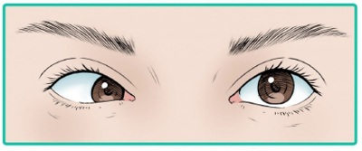
A Nervo oculomotor.
B Nervo troclear.
C Nervo trigêmeo.
D Nervo abducente.
E Nervo facial.
Questão 1104 · Sistema Nervoso · 4000200182Qual seria o quadro clínico mais provável para uma lesão completa do 3º nervo craniano, o nervo oculomotor?
A Midríase, desvio lateral do olho e ptose palpebral no lado afetado.
B Miose, desvio medial do olho e impossibilidade de fechar a pálpebra no lado afetado.
C Midríase, desvio lateral do olho e impossibilidade de fechar a pálpebra no lado afetado.
D Miose, desvio medial do olho e ptose palpebral no lado afetado.
E Midríase, desvio medial do olho e ptose palpebral no lado afetado.
Questão 1105 · Sinapses · 4000200181O tecido nervoso está organizado em células nervosas e de suporte, neurônios e neuroglia respectivamente. Na região encefálica, especi camente no córtex cerebral, encontra-se o corpo celular dos neurônios junto às células gliais, enquanto na região central, formada pela substância branca, estão presentes a coleção dos prolongamentos axonais desses neurônios e também células da glia. Ao longo do sistema nervoso central (SNC) pode-se observar a presença de inúmeros circuitos neurais formados por mais ou menos neurônios. Imaginando um pequeno circuito cortical cerebral, composto apenas por neurônios excitatórios que se conectam através de sinapses químicas axodendríticas, está correto afirmar que em todas elas:
A ocorre a liberação de neurotransmissores excitatórios.
B os íons sódio passam diretamente de uma célula à outra.
C o íon potássio é quem estimula a saída dos neurotransmissores pelo botão sináptico.
D há contato físico entre as membranas celulares.
E esses neurotransmissores podem gerar também potenciais de repouso.
Questão 1106 · Sistema Nervoso · 4000200180Imagine que você está atendendo um paciente, na atenção primária, que chega com queixas relacionadas ao escurecimento da visão. Qual exame pode ser utilizado, naquele momento, para avaliar clinicamente o campo visual desse paciente e identificar escotomas?
A Teste de Jaeger.
B Campimetria de confrontação.
C Teste de Snellen.
D Campimetria computadorizada.
E Fundoscopia.
Questão 1107 · Sistema Nervoso · 4000200179Para avaliar o estado do 1º nervo craniano, qual dos sentidos abaixo deve ser testado?
A Gustação.
B Visão.
C Olfato.
D Tato e propriocepção.
E Audição.
Questão 1108 · Contração Muscular · 4000200178O corpo humano contém três tipos fundamentalmente diferentes de músculos, adaptados a funções especializadas. O músculo esquelético é responsável pelo movimento voluntário dos ossos que são a base da locomoção e produção de trabalho. O músculo cardíaco é específico do coração na função de bomba biomecânica que conduz a distribuição de sangue para os pulmões e tecidos. O músculo liso provê controle mecânico dos sistemas de órgãos tais como os tratos digestório, urinário e reprodutivo, assim como os vasos sanguíneos do sistema circulatório e as passagens das vias aéreas do sistema respiratório. O processo de contração dos músculos é iniciado por um neurotransmissor químico, por um fator parácrino ou pela excitação elétrica direta. Todos os músculos fazem a transdução da energia química liberada pela hidrólise de ATP em trabalho mecânico. Sobre os acontecimentos envolvidos no processo de contração dos músculos estriados, assinale a alternativa correta:
A a despolarização dos túbulos T na altura das tríades resulta apenas no influxo de cálcio proveniente do fluido extracelular.
B a ligação da molécula de ATP à cabeça da miosina reduz a sua afinidade pela actina, causando a dissociação do complexo actina-miosina.
C a hidrólise das moléculas de ATP presentes no sarcoplasma é suficiente para promover a formação das pontes cruzadas.
D o estado de rigor mortis, observado em cadáveres logo após a sua morte, é desencadeado pela ausência da recaptação de cálcio pelo retículo sarcoplasmático.
E nesse tipo de músculo a única e suficiente fonte energética é representada pela molécula de fosfocreatina sarcoplasmática.
Questão 1109 · Sinalização Celular e Transdução do Sinal · 4000200177Em alguns tipos de câncer de mama, a divisão das células cancerosas depende da presença contínua de estrogênio. O tamoxifeno é um antagonista do estrogênio. Ele compete com o estrogênio pela ligação ao receptor de estrogênio, porém o complexo tamoxifeno-receptor possui pouco, ou nenhum, efeito sobre a expressão gênica. Como consequência, a administração de tamoxifeno após cirurgia ou durante quimioterapia desacelera ou para o crescimento das células cancerosas remanescentes nos casos de câncer de mama dependentes do hormônio. Outro análogo de esteroide, o fármaco mifepristona (RU486), liga-se ao receptor de progesterona e bloqueia a ação desse hormônio, essencial para a implantação do óvulo fecundado no útero, e, assim, age como contraceptivo. Nos dois casos descritos acima observamos a especi cidade entre a interação esteroide e receptor, a qual é aproveitada para promover tratamentos específicos. Levando em consideração a natureza dos fármacos apresentados e o princípio da sinalização celular que diz que as moléculas sinais se ligam em receptores específicos na célula-alvo, com qual tipo de receptor os hormônios esteroides ou os fármacos descritos acima interagem?
A Receptores de superfície celular acoplados a canais iônicos.
B Receptores de superfície celular acoplados a proteína G.
C Receptores de superfície celular acoplados a enzimas.
D Receptores nucleares.
E Receptores citoplasmáticos ou importinas.
Questão 1110 · Biossíntese das Membranas Biológicas · 4000200176As membranas celulares são compostas basicamente por lipídios e proteínas, e alguns desses componentes estão covalentemente ligados a carboidratos. Os Fosfolipídeos (Fosfoglicerídeos e Es ngolipídeos) e esterois são os principais lipídeos das membranas celulares. A nomenclatura dos Fosfoglicerídeos é dada de acordo com o radical presente na cabeça polar: fosfatidilcolina, fosfatidiletanolamina, fosfatidilserina e fosfatidilinositol. Além desses, existe também um tipo especial de fosfoglicerídeo denominado difosfatidilglicerol ou cardiolipina. Em relação aos es ngolipídios existem as seguintes subclasses: as es ngomielinas e os glicolipídeos (cerebrosídios e gangliosidios). Já o colesterol é um esteroide, que se insere entre os fosfolipídios. A composições de lipídeos das duas monocamadas da bicamada lipídica de muitas membranas são surpreendentemente distintas. A assimetria lipídica é funcionalmente importante, em especial na conversão de sinais extracelulares em sinais intracelulares. Em outros casos, os animais exploram a assimetria dos fosfolipídeos de sua membrana plasmática para distinguir entre células vivas e células mortas. Quando uma célula animal sofre apoptose, um tipo específico de fosfoglicerídeo, que normalmente está con nada à monocamada citosólica (ou interna) da bicamada lipídica da membrana plasmática, rapidamente se transloca para a monocamada extracelular (ou externa). Esse fosfoglicerídeo exposto na superfície celular sinaliza para as células vizinhas, como os macrófagos, para fagocitar e digerir a célula morta. Qual tipo de fosfoglicerídeo está envolvido nesse processo?
A fosfatidilserina
B cardiolipina
C colesterol
D esfingomielinas
E gangliosidios
Questão 1111 · Cadeia de Transporte de Elétrons e Fosf orilação Oxidativa · 4000200175As mitocôndrias são organelas especializadas na “queima” de moléculas de alimentos para produzir ATP pela fosforilação oxidativa. Nesse processo, as mitocôndrias convertem a energia química das moléculas orgânicas em uma forma de energia prontamente utilizável pela célula, o ATP. Contudo, existem alguns agentes que podem interferir no processo global da fosforilação oxidativa. Dentre eles, está listado a Antimicina A, a qual é um antibiótico que tem a capacidade de bloquear o complexo de enzimas da cadeia respiratória. Qual evento especificamente, ocorre nessa fase da respiração celular que envolve a cadeia respiratória?
A Quebra da molécula de glicose em duas moléculas menores.
B Produção de Acetil-CoA.
C Produção de elétrons com alta energia.
D Transferência ordenada de elétrons de um complexo de menor potencial de redução para outro de maior, com consequente ejeção de prótons para o espaço intermembranas.
E Transporte de prótons a partir do espaço intermembranas de volta a matriz mitocondrial para produção de ATP.
Questão 1112 · Metabolismo de Ácidos Graxos e Corpos Cetônicos · 4000200174O metabolismo da glicose é regulado pela taxa de captação da glicose pelas células, a qual é mediada pelos membros da família GLUT de transportadores de glicose. Um dos membros dessa família (GLUT4) só consegue se deslocar para a membrana e captar a glicose em resposta a um sinal de insulina. No Diabetes Mellitus tipo 1 (dependente de insulina), a inserção de GLUT4 nas membranas está inibida, assim a deficiência de insulina impede a captação de glicose pelo GLUT4. Como consequência, as células são privadas de glicose, embora ela esteja elevada na corrente sanguínea. Dessa maneira, sem glicose para o suprimento de energia, qual outra fonte os adipócitos utilizam para fornecer matéria prima para outros tecidos promoverem a produção mitocondrial de ATP?
A Triacilgliceróis
B Colesterol
C Fosfolipídeos
D Esfingolipídeos
E Glicolipídeos
Questão 1113 · Replicação do DNA · 4000200173A replicação do DNA é o processo pelo qual novas moléculas de DNA são sintetizadas. Esse processo é denominado semiconservativo, pois cada molécula formada é constituída por uma ta antiga, que serviu de molde, e uma fita nova complementar. Várias são as enzimas que participam da replicação do DNA, cujas funções são fundamentais para que esse processo complexo seja permitido. Assinale a alternativa que apresenta a enzima e a função por ela desempenhada.
A Topoisomerase: relaxa o superenrolamento da molécula de DNA devido à ação da helicase.
B DNA-polimerase: adiciona nucleotídeos complementares à fita molde no sentido 3’→5’.
C Helicase: separa as duas fitas da molécula de DNA pela quebra das ligações fosfodiéster.
D DNA-ligase: une os fragmentos de Okazaki gerados para a formação da fita líder.
E RNA-polimerase: adiciona nucleotídeos de RNA complementares à fita molde para formação de primers.
Questão 1114 · Ciclo Celular Mitose e Meiose · 4000200172A meiose é um tipo de divisão celular em que uma célula diploide dá origem a quatro células haploides geneticamente diferentes. Nos animais, é por meio da meiose de células da linhagem germinativa que os gametas, células especializadas na função reprodutiva, são formados. Considerando esse processo de divisão celular, é errado dizer que:
A a permutação ocorre na prófase I, após o emparelhamento dos pares de cromossomos homólogos.
B na metáfase I, os cromossomos estão dispostos na região equatorial da célula, ainda emparelhados, na forma de tétrades.
C ao final da meiose I, são formadas duas células-filhas com a mesma quantidade de cromossomos da célula-mãe.
D na anáfase I, ocorre a separação independente dos cromossomos homólogos em direção a polos opostos da célula.
E na anáfase II, ocorre a separação das cromátides-irmãs dos cromossomos em direção aos polos opostos da célula.
Questão 1115 · Sistema Nervoso · 4000200171Observe a imagem a seguir, que representa a anastomose entre as artérias da base do crânio: Figura: Polígono de Willis. Fonte: Arquivos Estratégia Med. A artéria representada por “C” é chamada de:
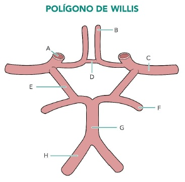
A Artéria carótida interna.
B Artéria vertebral.
C Artéria cerebral anterior.
D Artéria cerebral posterior.
E Artéria cerebral média.
Questão 1116 · Sistema Nervoso · 4000200170Observe a imagem a seguir, que representa a anastomose entre as artérias da base do crânio: Figura: Polígono de Willis. Fonte: Arquivos Estratégia Med. A artéria representada por “B” é chamada de:
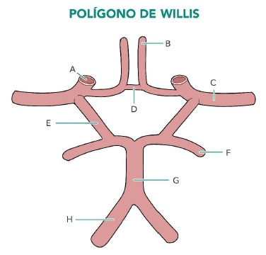
A Artéria carótida interna.
B Artéria vertebral.
C Artéria cerebral posterior.
D Artéria cerebral média.
E Artéria cerebral anterior.
Questão 1117 · Sistema Nervoso · 4000200169Leia a seguinte descrição, referente a uma célula que faz parte da neuróglia: “Célula com formato epitelial prismático ou cuboide. Participa do revestimento das cavidades do sistema ventricular do encéfalo e da medula, como os ventrículos e o aqueduto cerebral.” A célula descrita é conhecida como:
A Célula de Schwann.
B Oligodendrócito.
C Célula ependimária.
D Astrócito.
E Microgliócito.
Questão 1118 · Sistema Nervoso · 4000200168Leia a seguinte descrição, referente a uma célula que faz parte da neuróglia: “Célula achatada, com núcleo ovoide. Se dispõe enrolada ao redor das bras nervosas. Presente no sistema nervoso periférico, constitui a bainha de mielina dos axônios”. A célula descrita é conhecida como:
A Oligodendrócito.
B Astrócito.
C Célula ependimária.
D Célula de Schwann.
E Microgliócito.
Questão 1119 · Organelas Compartimentos Celulares · 4000200167A teoria da endossimbiose foi proposta, em 1981, para explicar a origem das mitocôndrias e dos plastos, como os cloroplastos, no interior de células eucariontes, já que são organelas membranosas com características peculiares. Segundo essa teoria, as células eucariontes, como as conhecemos, teriam evoluído a partir de uma simbiose com seres procariontes ancestrais, englobados devido ao estilo de vida predatório das células eucarióticas primitivas. Algumas são as evidências que suportam a teoria da endossimbiose, dentre as quais não podemos citar:
A presença de membrana dupla.
B presença de DNA circular na matriz mitocondrial.
C presença de ribossomos com tamanho de 80S.
D capacidade de síntese proteica.
E capacidade de autoduplicação.
Questão 1120 · Sistema Nervoso · 4000200166Leia a seguinte descrição, referente a uma célula que faz parte da neuróglia: “Célula pertencente à macróglia do sistema nervoso central, apresenta poucos prolongamentos citoplasmáticos. Nesse sistema, participa da formação da bainha de mielina dos neurônios.” A célula descrita é conhecida como:
A Célula de Schwann.
B Astrócito.
C Célula ependimária.
D Microgliócito.
E Oligodendrócito.
Questão 1121 · Sistema Nervoso · 4000200165Leia a seguinte descrição, referente a uma célula que faz parte da neuróglia: “Célula alongada de pequenas dimensões. Participa da resposta imune do sistema nervoso, assumindo, nesse sistema, funções fagocíticas similares aos macrófagos nos demais tecidos do organismo”. A célula descrita é conhecida como:
A Astrócito.
B Oligodendrócito.
C Célula de Schwann.
D Microgliócito.
E Célula ependimária.
Questão 1122 · Sistema Nervoso · 4000200164Leia a seguinte descrição, referente a uma célula que faz parte da neuróglia: “Célula com formato estrelado, provida de muitos prolongamentos que se apoiam nos capilares sanguíneos e nos neurônios. Sua função é de sustentar e de proteger os neurônios, contribuindo para a formação e o funcionamento adequado das sinapses”. A célula descrita é conhecida como:
A Astrócito.
B Oligodendrócito.
C Célula de Schwann.
D Microgliócito.
E Célula ependimária.
Questão 1123 · Citoesqueleto · 4000200163Microtúbulos são os componentes mais espessos do citoesqueleto, sendo constituídos pela polimerização de proteínas chamadas de tubulinas, encontradas em todos os tipos de células eucarióticas. Uma de suas funções é o transporte intracelular de vesículas: os microtúbulos formam “trilhos” pelos quais as vesículas são direcionadas pelo citoplasma da célula. Existem proteínas motoras que auxiliam nesse transporte e sobre elas, é correto afirmar que:
A as dineínas permitem o transporte de vesículas no sentido da extremidade negativa do microtúbulo, presa ao centrossomo.
B as cinesinas permitem o transporte de vesículas no sentido da extremidade negativa do microtúbulo, apontada para a periferia da célula.
C as dineínas permitem o transporte de vesículas no sentido da extremidade positiva do microtúbulo, apontada para a periferia da célula.as cinesinas permitem o transporte de vesículas no sentido da extremidade negativa do microtúbulo, presa ao centrossomo. as dineínas permitem o transporte de vesículas no sentido da extremidade positiva do microtúbulo, presa ao centrossomo
D as cinesinas permitem o transporte de vesículas no sentido da extremidade negativa do microtúbulo, presa ao centrossomo.
E as dineínas permitem o transporte de vesículas no sentido da extremidade positiva do microtúbulo, presa ao centrossomo
Questão 1124 · Sistema Nervoso · 4000200162Assinale a alternativa que preenche corretamente as lacunas do enunciado abaixo: Um neurônio típico é constituído por três porções distintas: dendritos, corpo celular e axônio. No(s) _____, ocorre a recepção dos impulsos nervosos, que são conduzidos até o(s) _____, produzindo uma alteração do potencial de membrana. Caso essa alteração atinja um determinado limiar, um potencial de ação é gerado e conduzido pelo(s) _____ até as terminações nervosas.
A Axônio, corpo celular, dendritos.
B Dendritos, corpo celular, axônio.
C Corpo celular, axônio, dendritos.
D Dendritos, axônio, corpo celular.
E Axônio, dendritos, corpo celular.
Questão 1125 · Sistema Nervoso · 4000200161Observe a imagem a seguir, que representa a anastomose entre as artérias da base do crânio: Figura: Polígono de Willis. Fonte: Arquivos Estratégia Med. A artéria representada por “A” é chamada de:

A Artéria cerebral anterior.
B Artéria cerebral média.
C Artéria cerebral posterior.
D Artéria vertebral.
E Artéria carótida interna.
Questão 1126 · Sistema Nervoso · 4000200160Assinale a alternativa que preenche corretamente as lacunas do enunciado abaixo: Duas grandes artérias são as protagonistas do suprimento sanguíneo do encéfalo. Nas regiões anteriores do sistema nervoso central, predomina a vascularização pelos ramos da ________, e, nas regiões posteriores, predomina a vascularização pelos ramos derivados das __________.
A Artéria carótida interna, artérias vertebrais.
B Artéria carótida externa, artérias vertebrais.
C Artéria vertebral, artérias carótidas (interna e externa).
D Artéria vertebral, artérias meníngeas médias.
E Artéria meníngea média, artérias carótidas (interna e externa)
Questão 1127 · Citoesqueleto · 4000200159Hemácias são células vermelhas do sangue, responsáveis pelo transporte de oxigênio pelo corpo. Nos mamíferos, essas células são anucleadas e possuem formato bicôncavo, ambas características adaptativas, que garantem maior eficiência na função de oxigenação. Os principais componentes do citoesqueleto responsáveis pela determinação da forma celular, como a forma bicôncava das hemácias, são os
A microtúbulos, também relacionados com o transporte de vesículas.
B microfilamentos, também relacionados com a adesão intercelular.
C filamentos intermediários, também relacionados com a formação de flagelos.
D microtúbulos, também relacionados com a formação do fuso mitótico.
E filamentos de actina, também relacionados com a sustentação de microvilosidades.
Questão 1128 · Sistema Nervoso · 4000200158Observe a figura a seguir: Figura: Núcleos da base. Fonte: Arquivos Estratégia Med. Os núcleos indicados como “A”, “B” e “C”, componentes do corpo estriado, são denominados, respectivamente:
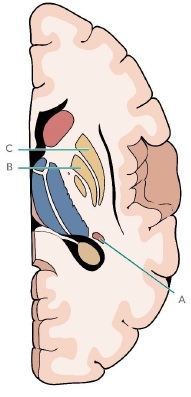
A Núcleo caudado, putâmen e globo pálido.
B Núcleo caudado, globo pálido e putâmen.
C Putâmen, núcleo caudado e globo pálido.
D Putâmen, globo pálido e núcleo caudado.
E Globo pálido, núcleo caudado e putâmen.
Questão 1129 · Sistema Nervoso · 4000200157Ao se realizar acessos cirúrgicos do centro branco medular do cérebro, o cirurgião deve estar atento para a posição dos núcleos da base, que são aglomerados de substância cinzenta presentes no interior da substância branca cerebral. Partindo do córtex da ínsula até o III ventrículo, as estruturas encontradas no interior de cada hemisfério cerebral, de superficial para profundo, são:
A Cápsula extrema, claustrum, cápsula externa, globo pálido, putâmen, cápsula interna, núcleo caudado e tálamo.
B Cápsula externa, claustrum, cápsula interna, putâmen, globo pálido, cápsula extrema, núcleo caudado e tálamo.
C Cápsula externa, claustrum, cápsula interna, globo pálido, putâmen, cápsula extrema, tálamo e núcleo caudado.
D Cápsula extrema, claustrum, cápsula externa, putâmen, globo pálido, cápsula interna, núcleo caudado e tálamo.
E Cápsula extrema, claustrum, cápsula externa, globo pálido, putâmen, cápsula interna, tálamo e núcleo caudado.
Questão 1130 · Sistema Nervoso · 4000200156No cérebro, dois importantes giros são separados entre si pelo sulco central. O primeiro deles possui localização ventral em relação ao sulco central, e contém a área motora primária. Já o segundo possui localização dorsal ao sulco, e contém a área somestésica primária. Esses giros são intitulados, respectivamente:
A Giro pré-central e giro pós-central.
B Giro pós-central e giro pré-central.
C Área de Broca e área de Wernicke.
D Giro frontal superior e giro frontal médio.
E Giro temporal superior e giro temporal médio.
Questão 1131 · Sistema Nervoso · 4000200155A figura a seguir representa dois dos mais importantes acidentes anatômicos do córtex cerebral: Figura: Acidentes anatômicos do córtex cerebral. Fonte: Arquivos Estratégia Med. Identifique-os:
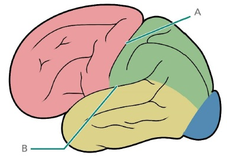
A Giro central e giro lateral.
B Sulco central e sulco lateral.
C Sulco pré-central e sulco lateral.
D Sulco central e sulco temporal superior.
E Sulco pré-central e sulco temporal superior.
Questão 1132 · Sistema Nervoso · 4000200154Um dos lobos do telencéfalo não tem relação com os ossos do crânio, estando contido na profundidade do sulco lateral do cérebro. O lobo a que essa afirmação faz referência é chamado de:
A Lobo frontal.
B Lobo parietal.
C Lobo temporal.
D Ínsula.
E Lobo occipital.
Questão 1133 · Núcleo · 4000200153O núcleo é o compartimento que armazena o material genético das células eucarióticas. Assim, é a estrutura que permite distinguirmos os dois tipos celulares básicos, procarionte e eucarionte. Trata-se da maior estrutura presente no interior celular. Sobre o núcleo, é correto dizer que:
A é o local em que ocorrem processos fundamentais à célula, replicação e transcrição, que utilizam o DNA como molde para a construção de novas moléculas de ácidos nucleicos.
B é delimitado pelo envoltório nuclear, formado por duas membranas de igual constituição, que se unem nas regiões em que se formam os complexos de poros.
C apresenta um ou mais nucléolos, regiões delimitadas por uma fina membrana, em que ocorre a produção das subunidades ribossômicas.
D contém material genético na forma de cromatina, formada por DNA enrolado em proteínas histonas em nível alto de compactação.
E é o local em que ocorrem os processos de transcrição e tradução, que resultam na formação de uma proteína necessária à célula.
Questão 1134 · Sistema Nervoso · 4000200152O lobo temporal é uma das regiões anatômicas do telencéfalo, estando relacionado aos ossos temporais do crânio. Como são definidos os limites do lobo temporal, na face dorsolateral do cérebro?
A O lobo temporal se localiza profundamente no sulco lateral, recoberto pelos lobos frontal e parietal, não sendo visto na face dorsolateral do cérebro.
B O lobo temporal se localiza posteriormente ao sulco central, superiormente ao ramo posterior do sulco lateral, e anteriormente à linha imaginária que une a incisura pré-occipital ao sulco parieto- occipital.
C O lobo temporal se localiza inferiormente ao sulco lateral, e anteriormente à linha imaginária que une a incisura pré-occipital ao sulco parieto-occipital.
D O lobo temporal se localiza anteriormente ao sulco central, e superiormente ao sulco lateral.
E O lobo temporal é toda a massa de cérebro localizada posteriormente à linha imaginária que une a incisura pré-occipital ao sulco parieto-occipital.
Questão 1135 · Sistema Nervoso · 4000200151O lobo occipital é uma das regiões anatômicas do telencéfalo, estando relacionado ao osso occipital do crânio. Como são definidos os limites do lobo occipital, na face dorsolateral do cérebro?
A O lobo occipital se localiza inferiormente ao sulco lateral, e anteriormente à linha imaginária que une a incisura pré-occipital ao sulco parieto-occipital.
B O lobo occipital se localiza anteriormente ao sulco central, e superiormente ao sulco lateral.
C O lobo occipital se localiza posteriormente ao sulco central, superiormente ao ramo posterior do sulco lateral, e anteriormente à linha imaginária que une a incisura pré-occipital ao sulco parieto- occipital.
D O lobo occipital se localiza profundamente no sulco lateral, recoberto pelos lobos frontal, parietal e temporal, não sendo visto na face dorsolateral do cérebro.
E O lobo occipital é toda a massa de cérebro localizada posteriormente à linha imaginária que une a incisura pré-occipital ao sulco parieto-occipital.
Questão 1136 · Sistema Nervoso · 4000200150O lobo parietal é uma das regiões anatômicas do telencéfalo, estando relacionado aos ossos parietais do crânio. Como são definidos os limites do lobo parietal, na face dorsolateral do cérebro?
A O lobo parietal é toda a massa de cérebro localizada posteriormente à linha imaginária que une a incisura pré-occipital ao sulco parieto-occipital.
B O lobo parietal se localiza inferiormente ao sulco lateral, e anteriormente à linha imaginária que une a incisura pré-occipital ao sulco parieto-occipital.
C O lobo parietal se localiza profundamente no sulco lateral, recoberto pelos lobos frontal e temporal, não sendo visto na face dorsolateral do cérebro.
D O lobo parietal se localiza posteriormente ao sulco central, superiormente ao ramo posterior do sulco lateral, e anteriormente à linha imaginária que une a incisura pré-occipital ao sulco parieto- occipital.
E O lobo parietal se localiza anteriormente ao sulco central, e superiormente ao sulco lateral.
Questão 1137 · Sistema Nervoso · 4000200149O lobo frontal é uma das regiões anatômicas do telencéfalo, estando relacionado aos ossos frontais do crânio. Como são definidos os limites do lobo frontal, na face dorsolateral do cérebro?
A O lobo frontal se localiza anteriormente ao sulco central, e superiormente ao sulco lateral.
B O lobo frontal se localiza posteriormente ao sulco central, superiormente ao ramo posterior do sulco lateral, e anteriormente à linha imaginária que une a incisura pré-occipital ao sulco parieto-occipital.
C O lobo frontal se localiza profundamente no sulco lateral, recoberto pelos lobos parietal e temporal, não sendo visto na face dorsolateral do cérebro.
D O lobo frontal se localiza inferiormente ao sulco lateral, e anteriormente à linha imaginária que une a incisura pré-occipital ao sulco parieto-occipital.
E O lobo frontal é toda a massa de cérebro localizada posteriormente à linha imaginária que une a incisura pré-occipital ao sulco parieto-occipital.
Questão 1138 · Distúrbios do Ciclo Celular · 4000200148A síndrome de Turner é uma anormalidade genética complexa que afeta mulheres, cujo cariótipo, na maioria dos casos, é 45,XO. Isso significa que apresentam um cromossomo X a menos, caracterizando uma aneuploidia do tipo monossomia. Essa alteração cromossômica é causada por um fenômeno de não-disjunção durante a formação dos gametas, especialmente, femininos. Estudos mostram que disfunções no metabolismo de folatos (vitamina B9) estão relacionadas com os processos de não-disjunções cromossômicas. Os grupos metil formados a partir desse metabolismo são essenciais para a replicação do DNA, para a estabilidade cromossômica e a segregação adequada do material genético na divisão celular. Assim, diante de redução da formação de grupos metil, ocorre a hipometilação do DNA, associada com a promoção de aneuploidias. Pensando na meiose, processo pelo qual ocorre a formação dos gametas femininos, é correto dizer que o fenômeno de não-disjunção pode ter acontecido:
A na prófase I, devido ao não emparelhamento dos cromossomos homólogos.
B na metáfase II, devido à não associação dos cromossomos homólogos às fibras do fuso.
C na anáfase I, devido à não separação das cromátides-irmãs.
D na anáfase II, devido à não separação dos cromossomos homólogos.
E na anáfase I, devido à não separação dos cromossomos homólogos.
Questão 1139 · Comunicação Celular · 4000200147O músculo cardíaco é formado por uma rede de bras responsáveis por contrações coordenadas em cada ciclo cardíaco - sequência alternada de contração e relaxamento dos átrios e ventrículos para bombear o sangue por todo o corpo. Embora todas as partes do coração tenham capacidade de gerar potenciais de ação, o nó sinoatrial é o principal iniciador e regulador do impulso nervoso, sendo, por esse motivo, chamado de marcapasso siológico do coração. Uma vez que as células do nó sinoatrial geram o potencial de ação, o impulso nervoso é rapidamente enviado e conduzido para as células miocárdicas, que se contraem de forma sincronizada, resultando em um batimento cardíaco. A rápida propagação dos impulsos nervosos e a contração sincronizada das células musculares cardíacas são facilitadas pela presença de
A junções de adesão, que tornam as células muito unidas.
B junções comunicantes, que permitem a propagação dos sinais elétricos.
C junções gap, que tornam as células muito unidas.
D junções intercelulares, que permitem que as células se reconheçam.
E junções aderentes, que promovem a troca de sinais elétricos.
Questão 1140 · Sistema Nervoso · 4000200146No estudo da anatomia do sistema nervoso central, o cérebro costuma ser dividido em duas regiões: uma central, ímpar e mediana, e outra lateral, dupla e volumosa. Identifique essas regiões na imagem abaixo: Figura: Regiões do cérebro. Fonte: Arquivos Estratégia Med.

A A – Córtex cerebral, B – Tronco encefálico.
B A – Diencéfalo, B – Telencéfalo.
C A – Telencéfalo, B – Diencéfalo.
D A – Córtex cerebral, B – Centro branco medular.
E A – Hemisférios cerebrais, B – Tronco encefálico.
Questão 1141 · Ciclo Celular Mitose e Meiose · 4000200145O ciclo celular é composto por duas etapas básicas: intérfase e divisão celular. Uma célula que recebe um estímulo para se dividir, primeiramente, precisa crescer, o que envolve duplicar o conteúdo de DNA que ela apresenta. A duplicação do DNA acontece na fase S da intérfase. Considere uma célula humana do epitélio intestinal, que é 2n = 46, cuja frequência de divisão é acentuada. É correto afirmar que essa célula contém:
A 46 moléculas de DNA na prófase.
B 92 moléculas de DNA em G1.
C 92 moléculas de DNA na metáfase.
D 92 cromossomos em G2.
E 92 cromossomos na metáfase.
Questão 1142 · Sistema Nervoso · 4000200144A figura a seguir representa as estruturas do assoalho do III ventrículo, pertencentes ao hipotálamo: Figura: Assoalho do III ventrículo. Fonte: Arquivos Estratégia Med. Assinale a alternativa que identifica corretamente as estruturas indicadas por “A”, “B”, “C” e “D”:
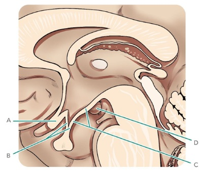
A Corpo mamilar, túber cinéreo, infundíbulo e quiasma óptico.
B Corpo mamilar, quiasma óptico, infundíbulo e túber cinéreo.
C Quiasma óptico, corpos mamilares, túber cinéreo e infundíbulo.
D Quiasma óptico, corpos mamilares, infundíbulo e túber cinéreo.
E Quiasma óptico, infundíbulo, túber cinéreo e corpo mamilar.
Questão 1143 · Sistema Nervoso · 4000200143A imagem a seguir representa a emergência dos doze pares de nervos cranianos a partir do encéfalo: Figura: Nervos Cranianos. Fonte: Arquivos Estratégia Med. Assinale a alternativa que identi ca corretamente os nervos cranianos indicados por “A”, “B” e “C”, respectivamente:

A Nervo olfatório, nervo óptico e nervo oculomotor.
B Nervo trigêmeo, nervo oculomotor e nervo troclear.
C Nervo trigêmeo, nervo abducente e nervo facial.
D Nervo glossofaríngeo, nervo vago e nervo acessório.
E Nervo vago, nervo acessório e nervo hipoglosso.
Revisar: possível letra faltando em enunciado
Questão 1144 · Sistema Nervoso · 4000200142A imagem a seguir é uma representação esquemática de um corte transversal do mesencéfalo: Figura: Corte transversal do mesencéfalo. Fonte: Arquivos Estratégia Med. Assinale a alternativa que identi ca corretamente a região assinalada por “A”, correspondente à área mesencefálica situada posteriormente ao aqueduto cerebral:
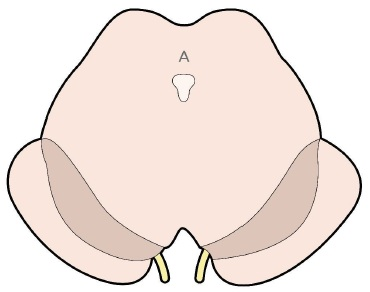
A Tegmento.
B Pedúnculo cerebral.
C Base.
D Teto.
E Substância negra.
Revisar: possível letra faltando em enunciado
Questão 1145 · Genoma Cromossomos e Código Genético · 4000200141Mutações gênicas ocorrem quando os mecanismos de reparo da célula falham. Uma mutação gênica, mesmo que aconteça em uma região codi cante de um gene ativo, pode não resultar em alteração da proteína produzida. Isso é explicado pelo fato de
A o código genético ser universal.
B a tradução ser interrompida.
C a duplicação do DNA ser semiconservativa.
D o código genético ser redundante.
E a transcrição usar apenas uma fita do DNA como molde.
Questão 1146 · Sistema Nervoso · 4000200140Observe a figura abaixo: Figura: Visão frontal do tronco encefálico. Fonte: Arquivos Estratégia Med. Como são denominados os acidentes anatômicos do bulbo indicados por “A”, “B” e “C”, respectivamente?

A Pirâmides bulbares, oliva, raízes do nervo hipoglosso.
B Olivas, pirâmide bulbar, decussação das pirâmides.
C Pirâmides bulbares, oliva, decussação das pirâmides.
D Fascículos grácil e cuneiforme, pirâmide bulbar, raízes do nervo hipoglosso.
E Fascículos grácil e cuneiforme, oliva, raízes do nervo hipoglosso.
Questão 1147 · Sistema Nervoso · 4000200139A imagem a seguir é uma representação esquemática da região do IV ventrículo: Figura: IV ventrículo. Fonte: Arquivos Estratégia Med. Assinale a alternativa que contém a nomenclatura correta das estruturas indicadas por “A” e “B”, respectivamente:

A Forame de Luschka e Forame de Magendie.
B Aqueduto cerebral e canal central da medula.
C III ventrículo e canal central da medula.
D Aqueduto cerebral e V ventrículo.
E Forame de Magendie e III ventrículo.
Questão 1148 · Sistema Nervoso · 4000200138Observe a imagem esquemática de um corte coronal do cérebro a seguir: Figura: Meninges. Fonte: Arquivos Estratégia Med. Como são denominados respectivamente os folhetos das meninges representados por “a”, “b” e “d”, e o espaço representado por “c”?

A Dura-máter, aracnoide e pia-máter. Espaço subaracnóideo.
B Dura-máter, pia-máter e aracnoide. Espaço subaracnóideo.
C Pia-máter, dura-máter e aracnoide. Espaço subdural.
D Aracnoide, dura-máter e pia-máter. Espaço subdural.
E Pia-máter, aracnoide e dura-máter. Espaço epidural.
Questão 1149 · Biologia Molecular · 4000200137A anemia falciforme é uma doença genética causada pela anormalidade das proteínas hemoglobinas, presentes nos glóbulos vermelhos do sangue. Nos portadores da doença, é produzida uma hemoglobina mutante, chamada de hemoglobina S, que forma agregados e confere à célula a forma de foice – por isso o nome falciforme. Nesse formato, os glóbulos vermelhos não têm exibilidade, são frágeis e têm vida curta. Além disso, tornam o sangue mais viscoso, prejudicando o uxo sanguíneo e a oxigenação de tecidos, e podem causar lesão capilar e coagulação sanguínea. A mutação genética que causa a anemia falciforme é dada pela substituição de uma base nitrogenada T (timina) por uma base nitrogenada A (adenina). O resultado é a determinação do aminoácido valina ao invés do ácido glutâmico, o que altera a con guração da proteína formada na tradução. Considerando a mutação gênica descrita, é correto dizer que ela é do tipo:
A silenciosa.
B sem sentido.
C com perda de sentido.
D neutra.
E sinônima.
Questão 1150 · Sistema Nervoso · 4000200136Observe a imagem esquemática de um corte transversal da medula espinhal abaixo: Como são denominados os acidentes indicados por a, b, c e d, respectivamente?

A Fissura mediana anterior, sulco lateral posterior, sulco lateral anterior e sulco mediano posterior.
B Fissura mediana anterior, sulco lateral anterior, sulco lateral posterior e fissura mediana posterior.
C Sulco lateral anterior, sulco intermediário anterior, sulco intermediário posterior e sulco lateral posterior.
D Sulco anterior, sulco lateral anterior, sulco lateral posterior, sulco posterior.
E Fissura mediana anterior, sulco lateral anterior, sulco lateral posterior e sulco mediano posterior.
Questão 1151 · Sistema Nervoso · 4000200135A superfície do cérebro é marcadamente irregular, sendo repleta de sulcos que de nem os giros cerebrais. Qual a função dos sulcos do cérebro, quando comparados a uma superfície cortical lisa?
A A presença de sulcos na superfície do cérebro serve para aumentar a área de substância cinzenta, sem que se aumente excessivamente o volume do órgão.
B Os sulcos da superfície do cérebro existem para reduzir a quantidade de área de superfície, ao encapsular parte do órgão.
C A função dos sulcos do cérebro é a de aumentar a área de substância branca que pode ser contida no interior da cavidade craniana, ao dispô-la no interior dessas depressões.
D Os sulcos do cérebro não apresentam nenhuma vantagem evolutiva em relação a uma superfície lisa, sendo apenas um resquício da embriologia do sistema nervoso.
E A presença de sulcos na superfície do cérebro serve para proteger o parênquima cerebral nos casos de trauma, uma vez que as áreas mais nobres do órgão ficam localizadas no interior dessas depressões.
Questão 1152 · Sistema Nervoso · 4000200134O III ventrículo é uma das cavidades que compõem o sistema ventricular do encéfalo, sendo responsável pela circulação do líquor. Quais são os limites que definem o III ventrículo?
A Parede anterior: lâmina terminal. Parede posterior: subtálamo. Paredes laterais: tálamo e epitálamo. Assoalho: hipotálamo. Teto: tela coroide.
B Parede anterior: hipotálamo. Parede posterior: epitálamo. Paredes laterais: tálamo e hipotálamo. Assoalho: subtálamo. Teto: tela coroide.
C Parede anterior: lâmina terminal. Parede posterior: epitálamo. Paredes laterais: tálamo e epitálamo. Assoalho: subtálamo. Teto: epitálamo.
D Parede anterior: hipotálamo. Parede posterior: subtálamo. Paredes laterais: tálamo e hipotálamo. Assoalho: hipotálamo. Teto: epitálamo.
E Parede anterior: lâmina terminal. Parede posterior: epitálamo. Paredes laterais: tálamo e hipotálamo. Assoalho: hipotálamo. Teto: tela coroide.
Questão 1153 · Sistema Nervoso · 4000200133O diencéfalo é parte do sistema nervoso central, tendo estreita relação com uma das cavidades do sistema ventricular do encéfalo. Assinale a alternativa que nomeia corretamente a cavidade supracitada:
A Ventrículos laterais.
B III ventrículo.
C IV ventrículo.
D Canal central da medula.
E Aqueduto cerebral.
Questão 1154 · Vitaminas · 4000200132A coagulação sanguínea é um processo no qual participam vaso sanguíneo, plaquetas, fatores de coagulação, que resultam na formação de um coágulo de brina, que cessa o sangramento e auxilia no reparo do vaso sanguíneo dani cado. Dentre os fatores de coagulação, existem aqueles dependentes de uma determinada vitamina para desempenharem suas atividades. Essa vitamina é a:
A Vitamina A.
B Vitamina E.
C Vitamina K.
D Vitamina D.
E Vitamina C.
Revisar: possível letra faltando em enunciado
Questão 1155 · Glicólise · 4000200131A glicólise é a primeira etapa do processo de respiração celular. Trata-se de uma etapa composta por 10 passos, todos executados por enzimas presentes no citosol da célula. Não é correto afirmar que no processo:
A duas moléculas de ATP são hidrolisadas.
B duas moléculas de NAD+ são reduzidas a NADH + H+.
C duas moléculas de ácido pirúvico são produzidas.
D duas moléculas de glicose são consumidas.
E quatro moléculas de ADP sofrem fosforilação e formam ATP.
Questão 1156 · Vitaminas · 4000200130As vitaminas são compostos orgânicos requeridos pelo organismo em pequenas quantidades. Apesar disso, são essenciais para o metabolismo celular e, consequentemente, para o bom funcionamento do corpo. Assinale a alternativa que contém uma associação correta entre vitamina e importância fisiológica.
A A vitamina A está relacionada com a absorção de cálcio e fósforo pelo intestino.
B A vitamina B12 está relacionada com a atividade de fatores de coagulação sanguínea.
C A vitamina C é antioxidante e está relacionada com o bom funcionamento do sistema genital.
D A vitamina D está relacionada com a absorção de cálcio e a prevenção ao raquitismo.
E A vitamina E é antioxidante e está relacionada com a prevenção à cegueira noturna.
Questão 1157 · Sistema Nervoso · 4000200129Qual das afirmativas a seguir é verdadeira a respeito da anatomia do cerebelo?
A A superfície do cerebelo é composta pelo córtex cerebelar, uma lâmina de substância cinzenta contínua e regular, repleta de corpos celulares de neurônios.
B Macroscopicamente, o cerebelo aparece como duas eminências laterais, os hemisférios cerebelares, ligados a uma estrutura ímpar e mediana, denominada vérmis.
C O cerebelo se localiza posterior ao tronco encefálico, constituindo o teto do IV ventrículo e estando em íntima relação com o mesencéfalo.
D O córtex cerebelar, composto por substância cinzenta, engloba o corpo medular do cerebelo, composto por substância branca. Ao contrário do que ocorre no telencéfalo e no tronco encefálico, não existem núcleos de substância cinzenta no interior da substância branca cerebelar.
E Os pedúnculos cerebelares, superior e inferior, unem o cerebelo ao tronco encefálico. Essas são as duas principais estruturas que carregam as aferências e eferências relativas ao cerebelo.
Questão 1158 · Sistema Nervoso · 4000200128Assinale a alternativa correta a respeito da disposição da substância cinzenta do cerebelo:
A O cerebelo possui uma organização similar à da medula espinhal, com a substância cinzenta disposta no interior da substância branca.
B O cerebelo é organizado de forma que a substância branca está contida em seu centro medular, sendo circundada por um córtex cerebelar composto de substância cinzenta. Essa organização é similar à da medula espinhal.
C O cerebelo possui substância cinzenta localizada no córtex cerebelar, disposto ao redor de um centro de substância branca, o qual contém alguns núcleos de substância cinzenta em seu interior. Essa organização se assemelha ao telencéfalo.
D O cerebelo constitui-se de maneira similar ao telencéfalo: possui substância cinzenta na região central e substância branca na periferia do órgão.
E O cerebelo é considerado como um grande núcleo de substância cinzenta, não sendo encontrado nele um centro medular de substância branca.
Questão 1159 · Ácidos Nucleicos · 4000200127O DNA é uma molécula composta por duas fitas de ácidos nucleicos, que se unem por ligações de hidrogênio entre bases nitrogenadas complementares. Considere uma molécula de DNA contendo 228 bases nitrogenadas, sendo 48 citosinas. É correto a rmar que:
A A molécula de DNA contém por 48 timinas.
B A molécula de DNA contém por 66 guaninas.
C A molécula de DNA contém 96 bases pirimídicas.
D A molécula de DNA contém 48 adeninas.
E A molécula contém 114 bases púricas.
Questão 1160 · Sistema Nervoso · 4000200126Assinale a alternativa que descreve corretamente os limites do IV ventrículo:
A Súpero-lateral: Pedúnculo cerebelar superior. Ínfero-lateral: Pedúnculo cerebelar inferior. Teto: Cerebelo. Assoalho: Ponte e Bulbo.
B Súpero-lateral: Pedúnculo cerebelar médio. Ínfero-lateral: Pedúnculo cerebelar inferior. Teto: Cerebelo. Assoalho: Ponte e Bulbo.
C Súpero-lateral: Pedúnculo cerebelar médio. Ínfero-lateral: Pedúnculo cerebelar inferior. Teto: Cerebelo. Assoalho: Mesencéfalo e Ponte.
D Súpero-lateral: Pedúnculo cerebelar superior. Ínfero-lateral: Pedúnculo cerebelar inferior. Teto: Cerebelo. Assoalho: Mesencéfalo e Ponte.
E Súpero-lateral: Pedúnculo cerebelar superior. Ínfero-lateral: Pedúnculo cerebelar médio. Teto: Cerebelo. Assoalho: Mesencéfalo e Ponte.
Questão 1161 · Sistema Nervoso · 4000200125Como é denominado o acidente anatômico do bulbo localizado entre os sulcos lateral anterior e lateral posterior?
A Oliva.
B Pirâmide bulbar.
C Fascículo grácil.
D Fascículo cuneiforme.
E Decussação das pirâmides.
Questão 1162 · Sistema Nervoso · 4000200124Marque a alternativa que contém a estrutura do IV ventrículo responsável pela produção de líquor:
A Forames de Luschka.
B Forame de Magendie.
C Plexo coroide.
D Canal central da medula.
E Aqueduto cerebral.
Questão 1163 · Sistema Nervoso · 4000200123Qual das seguintes assertivas é verdadeira a respeito do quiasma óptico?
A O quiasma óptico é a região do assoalho do III ventrículo, relacionada ao hipotálamo, que recebe os nervos ópticos e marca o cruzamento das fibras da retina nasal.
B O quiasma óptico é a região do assoalho do IV ventrículo, relacionada ao tálamo, que recebe os nervos ópticos e marca o cruzamento das fibras da retina nasal.
C O quiasma óptico é a região do assoalho do III ventrículo, relacionada ao hipotálamo, que recebe os nervos oculomotores e marca o cruzamento das fibras que inervam a musculatura intrínseca do olho.
D O quiasma óptico é a região do assoalho do IV ventrículo, relacionada ao tálamo, que recebe os nervos ópticos e marca o cruzamento das fibras da retina temporal.
E O quiasma óptico é a região do assoalho do III ventrículo, relacionada ao hipotálamo, que recebe os nervos ópticos e marca o cruzamento das fibras da retina temporal.
Questão 1164 · Sistema Nervoso · 4000200122Quais dos pares de nervos cranianos emergem a partir do mesencéfalo?
A Nervo olfatório e nervo óptico (I e II pares).
B Nervo oculomotor e nervo troclear (III e IV pares).
C Nervo trigêmeo (V par).
D Nervo abducente, nervo facial e nervo vestíbulo-coclear (VI, VII e VII pares de nervos cranianos).
E Não emergem nervos cranianos a partir do mesencéfalo.
Questão 1165 · Sistema Nervoso · 4000200121O pedúnculo cerebral, região ventral do mesencéfalo, é dividido em base e tegmento pela substância negra, núcleo de neurônios pigmentados com melanina que produzem o neurotransmissor:
A Dopamina.
B Serotonina.
C Acetilcolina.
D Noradrenalina.
E Encefalina.
Questão 1166 · Sistema Nervoso · 4000200120A base da ponte é marcada por um profundo sulco mediano, que aloja uma importante estrutura da região. A estrutura que passa ali é denominada:
A Nervo trigêmeo.
B Nervo hipoglosso.
C Artéria cerebral média.
D Artéria cerebral anterior.
E Artéria basilar.
Questão 1167 · Sistema Nervoso · 4000200119Qual das seguintes afirmativas é verdadeira a respeito do mesencéfalo observado em corte transversal?
A No interior do mesencéfalo é possível observar uma cavidade preenchida por líquor, que faz parte do sistema ventricular, denominada III ventrículo.
B Utilizando como referência o aqueduto cerebral, o mesencéfalo pode ser divido em duas regiões, o teto mesencefálico (posterior) e os pedúnculos cerebrais (anteriores).
C O mesencéfalo é bastante uniforme quando observado em corte transversal, tendo como único acidente anatômico mais importante o aqueduto cerebral.
D Os colículos são estruturas arredondadas presentes na região ventral do mesencéfalo, sendo que os colículos inferiores participam da via auditiva e os colículos superiores participam da via óptica.
E Diferentemente da ponte e do bulbo, não emergem nervos cranianos a partir do mesencéfalo.
Questão 1168 · Sistema Nervoso · 4000200118Qual acidente anatômico do tronco encefálico marca o ponto de surgimento do nervo trigêmeo?
A Sulco bulbo-pontino.
B Sulco medial do pedúnculo cerebral.
C Região do teto do mesencéfalo caudal aos colículos inferiores.
D Sulco lateral posterior.
E Limite entre a ponte e o pedúnculo cerebelar médio.
Questão 1169 · Sistema Nervoso · 4000200117Na investigação de suspeita de coma, é de rotina que se teste o reflexo fotomotor, com o intuito de verificar a integridade do sistema ativador reticular ascendente (SARA), localizado no mesencéfalo, que é responsável por manter a vigília. Qual o nervo que participa do reflexo fotomotor cujo núcleo e ponto de emergência se localizam no mesencéfalo?
A Nervo olfatório.
B Nervo óptico.
C Nervo oculomotor.
D Nervo troclear.
E Nervo trigêmeo.
Questão 1170 · Sistema Nervoso · 4000200116Um dos acidentes anatômicos mais marcantes do bulbo é o sulco lateral posterior, que representa uma continuação direta do mesmo sulco presente na medula espinhal. No caso de um processo expansivo que comprima o sulco lateral posterior do bulbo, quais estruturas seriam lesadas?
A Nervo trigêmeo e pedúnculo cerebelar médio.
B Nervo abducente, nervo facial e nervo vestíbulo-coclear.
C Nervo hipoglosso e pirâmides bulbares.
D Nervo acessório, nervo vago e nervo glossofaríngeo.
E Artéria basilar e nervo oculomotor.
Questão 1171 · Sistema Nervoso · 4000200115Na área dorsal do bulbo, encontramos os fascículos grácil e cuneiforme, continuações do funículo posterior da medula espinhal, que fazem sinapses nos núcleos grácil e cuneiforme. Essa via então continua superiormente, juntamente às estruturas denominadas:
A Pedúnculos cerebelares superiores.
B Pedúnculos cerebelares médios.
C Pedúnculos cerebelares inferiores.
D Colículos inferiores.
E Colículos superiores.
Questão 1172 · Sistema Nervoso · 4000200114O sulco bulbo-pontino é uma importante área de emergência de nervos cranianos a partir do tronco encefálico. Marque a alternativa que contém os nervos que emergem do encéfalo a partir deste sulco:
A Nervo hipoglosso e nervo acessório.
B Nervo trigêmeo, nervo facial e nervo vestíbulo-coclear.
C Nervo abducente, nervo facial e nervo vestíbulo-coclear.
D Nervo acessório, nervo vago e nervo glossofaríngeo.
E Nervo troclear e nervo oculomotor.
Questão 1173 · Sistema Nervoso · 4000200113O canal central da medula continua na porção fechada do bulbo, até que se abre na região dorsal do tronco encefálico formando a cavidade denominada:
A I ventrículo.
B II ventrículo.
C III ventrículo.
D IV ventrículo.
E Aqueduto cerebral.
Questão 1174 · Sistema Nervoso · 4000200112Qual nervo craniano emerge do sulco lateral anterior do bulbo?
A Nervo acessório.
B Nervo vago.
C Nervo glossofaríngeo.
D Nervo hipoglosso.
E Nervo trigêmeo.
Questão 1175 · Sistema Nervoso · 4000200111A ssura mediana anterior da medula espinhal é contínua no bulbo, até que é obliterada por um acidente anatômico de grande importância. O acidente anatômico que cruza a ssura mediana anterior do bulbo é o(a):
A Oliva.
B Decussação das pirâmides.
C Nervo hipoglosso.
D Nervo acessório.
E IV ventrículo.
Questão 1176 · Sistema Nervoso · 4000200110O tronco encefálico é a região de transição entre a medula espinhal e o cérebro, compartilhando características com ambos. Assinale a alternativa que contém as estruturas que compõem o tronco encefálico:
A Tálamo e hipotálamo.
B Ponte, bulbo e cerebelo.
C Subtálamo e ponte.
D Hipocampo, amígdala e corpos mamilares.
E Bulbo, ponte e mesencéfalo.
Questão 1177 · Sistema Nervoso · 4000200109Qual estrutura de grande importância está localizada no espaço epidural da medula espinhal?
A Nenhuma em particular. Por ser um espaço virtual, contém apenas pequena quantidade de líquido.
B Grande quantidade de líquor. Nesse espaço se localiza a maior quantidade do líquido cefalorraquidiano, onde flutua o sistema nervoso central.
C Substância cinzenta. No espaço epidural se localizam os corpos celulares dos neurônios medulares, que se dispõem na periferia do órgão.
D Ligamento denticulado. Essa formação da dura-máter contribui para a fixação lateral da medula espinhal na coluna vertebral.
E Plexo venoso vertebral. Esse conjunto de veias sem válvulas realiza a drenagem da medula espinhal e pode contribuir para a disseminação medular de infecções e metástases.
Questão 1178 · Sistema Nervoso · 4000200108Durante uma raquianestesia, o médico deve perfurar os tecidos com a agulha até alcançar o espaço subaracnoideo, onde será depositado o anestésico. Quais folhetos das meninges serão perfurados nesse trajeto?
A Dura-máter e aracnoide.
B Aracnoide e pia-máter.
C Dura-máter, pia-máter e aracnoide.
D Dura-máter e pia-máter.
E Apenas a aracnoide.
Questão 1179 · Sistema Nervoso · 4000200107Entre as alternativas abaixo, qual contém uma a rmação correta a respeito dos segmentos da medula espinhal e dos nervos espinhais correspondentes?
A Existem oito pares de nervos espinhais cervicais, porém apenas sete vértebras. O oitavo nervo cervical emerge pelo forame intervertebral abaixo da sétima vértebra.
B Todos os nervos espinhais emergem acima da vértebra da coluna vertebral correspondente (ex.: o nervo T11 sai pelo forame intervertebral acima da 11ª vértebra torácica).
C Existem 33 pares de nervos espinhais, correspondentes às 33 vértebras da coluna vertebral. Cada um dos nervos tem relação íntima com a sua vértebra equivalente.
D Todos os nervos espinhais emergem abaixo da vértebra da coluna vertebral correspondente (ex.: o nervo C5 sai pelo forame intervertebral abaixo da 5ª vértebra cervical).
E Todas as alternativas estão incorretas.
Questão 1180 · Sistema Nervoso · 4000200106Marque a alternativa que descreve corretamente a estrutura dos funículos de substância branca na medula espinhal:
A O funículo lateral está contido entre os sulcos lateral anterior e lateral posterior, na periferia da medula espinhal.
B O funículo posterior é delimitado pelos sulcos lateral posterior e intermediário posterior, na periferia da medula espinhal.
C O funículo posterior é delimitado pelos sulcos intermediário posterior e mediano posterior, na periferia da medula espinhal.
D O funículo anterior está contido entre a fissura mediana anterior e o sulco lateral anterior, profundamente à substância cinzenta.
E O funículo lateral se localiza entre a fissura mediana anterior e o sulco mediano posterior, profundamente à substância cinzenta.
Questão 1181 · Sistema Nervoso · 4000200105Assinale a alternativa verdadeira a respeito da substância cinzenta da medula espinhal:
A A substância cinzenta da medula se organiza na periferia do órgão, formando a área cortical que contém os corpos celulares dos neurônios, a qual circunda a substância branca.
B A substância cinzenta da medula espinhal se divide em três funículos: posterior, anterior e lateral. Esses funículos contêm os prolongamentos neuronais mielinizados que realizam a comunicação do sistema nervoso com o restante do organismo.
C A substância cinzenta da medula espinhal tem a forma de um “H” nos cortes transversais, formando colunas anteriores e posteriores ao longo do órgão. Os neurônios da coluna anterior estão relacionados à sensibilidade, formando as raízes dorsais dos nervos espinhais.
D A substância cinzenta da medula espinhal se dispõe no interior da substância branca, e forma as colunas anterior, posterior e lateral, sendo que esta última é encontrada apenas na região torácica e lombar.
E Os funículos da substância cinzenta são delimitados pelos sulcos superficiais da medula espinhal, e formam um anel ao redor da periferia do órgão, entremeado pela substância branca que dá origem aos nervos espinhais.
Questão 1182 · Sistema Nervoso · 4000200104Como é chamado o acidente anatômico da superfície da medula espinhal de onde emergem as raízes ventrais dos nervos espinhais?
A Fissura mediana anterior.
B Sulco lateral anterior.
C Sulco lateral posterior.
D Sulco intermediário posterior.
E Sulco mediano posterior.
Questão 1183 · Sistema Nervoso · 4000200103A medula espinhal é um órgão que não apresenta diâmetro uniforme ao longo do seu trajeto, formando intumescências de maior volume em determinadas regiões. Como são denominadas as intumescências da medula e o que determinam essas expansões?
A Intumescência cervical e intumescência lombar. As intumescências são coxins adiposos que protegem a medula de choques mecânicos.
B Intumescência torácica e intumescência sacral. As intumescências são coxins adiposos que protegem a medula de choques mecânicos.
C Intumescência torácica e intumescência lombar. As intumescências são formadas pela expansão da substância cinzenta na altura de formação dos plexos braquial e lombossacral.
D Intumescência cervical e intumescência lombar. As intumescências são formadas pela expansão da substância cinzenta na altura de formação dos plexos braquial e lombossacral.
E Intumescência torácica e intumescência cervical. As intumescências são resquícios de processos infecciosos da medula, que cursam com inflamação local e edema não reabsorvível.
Questão 1184 · Sistema Nervoso · 4000200102Na maioria das pessoas, onde estão localizados os limites superiores e inferiores da medula espinhal?
A Limite superior: Ponte, na altura do forame magno do osso occipital. Limite inferior: Osso cóccix.
B Limite superior: Bulbo, na altura do forame magno do osso occipital. Limite inferior: Segunda vértebra lombar (L2).
C Limite superior: Cérebro, na altura da órbita ocular. Limite inferior: Segunda vértebra lombar (L2).
D Limite superior: Bulbo, na altura do forame magno do osso occipital. Limite inferior: Osso cóccix.
E Limite superior: Ponte, na altura do forame magno do osso occipital. Limite inferior: Segunda vértebra lombar (L2).
Questão 1185 · Sistema Nervoso · 4000200101Como ocorre a divisão entre os neurotransmissores utilizados pelos neurônios pós-ganglionares do sistema nervoso simpático e o sistema nervoso parassimpático?
A A maioria dos neurônios do sistema nervoso simpático utiliza acetilcolina, e o sistema nervoso parassimpático utiliza noradrenalina.
B A maioria dos neurônios do sistema nervoso simpático utiliza dopamina, e o sistema nervoso parassimpático utiliza serotonina.
C A maioria dos neurônios do sistema nervoso simpático utiliza acetilcolina, e o sistema nervoso parassimpático também. A diferença entre eles está no neurotransmissor utilizado pelo neurônio pré-ganglionar.
D A maioria dos neurônios do sistema nervoso simpático realiza sinapses elétricas e os neurônios do sistema nervoso parassimpático utilizam sinapses químicas.
E A maioria dos neurônios do sistema nervoso simpático utiliza noradrenalina, e os neurônios do sistema nervoso parassimpático utilizam acetilcolina.
Questão 1186 · Sistema Nervoso · 4000200100O sistema nervoso autônomo (SNA) é parte fundamental da estrutura homeostática do organismo. Quais são os componentes do SNA?
A SNA aferente e SNA eferente.
B SNA somático e SNA visceral.
C SNA simpático e SNA parassimpático.
D SNA voluntário e SNA involuntário.
E SNA muscular estriado esquelético e SNA muscular liso.
Questão 1187 · Sistema Nervoso · 4000200099Assinale a alternativa que descreve corretamente como é realizada a divisão do sistema nervoso baseada em critérios anatômicos:
A A divisão anatômica do sistema nervoso separa esse sistema em sistema nervoso central e sistema nervoso periférico, de acordo com a sua relação com o esqueleto axial.
B A divisão anatômica do sistema nervoso é baseada na separação entre sistema nervoso somático e sistema nervoso visceral.
C A divisão anatômica do sistema nervoso divide o sistema em três porções: prosencéfalo, mesencéfalo e rombencéfalo, baseado na estrutura intrauterina das vesículas primordiais.
D Os dois componentes da divisão anatômica do sistema nervoso central são o sistema nervoso segmentar e o sistema nervoso suprassegmentar.
E A divisão anatômica se baseia na semelhança histológica entre os tecidos que compõem o sistema nervoso, e divide o sistema em telencéfalo, diencéfalo, mesencéfalo, metencéfalo e mielencéfalo.
Questão 1188 · Anatomia do Sistema Locomotor · 4000200098A articulação do tornozelo é protegida por fortes ligamentos, que resguardam a cápsula articular. Assinale a alternativa que contém os principais ligamentos da articulação do tornozelo:
A Ligamento colateral anterior e ligamento colateral posterior.
B Ligamento deltoideo e ligamento triangular.
C Ligamento colateral medial e ligamento colateral lateral.
D Ligamento arqueado do tornozelo e ligamento oblíquo do tornozelo.
E Menisco medial e menisco lateral.
Questão 1189 · Anatomia do Sistema Locomotor · 4000200097A articulação do quadril é reforçada por fortes ligamentos que mantêm a sua estabilidade. Marque a alternativa que descreve os três ligamentos intrínsecos que fortalecem a articulação do quadril:
A Ligamento sacrotuberal, ligamento sacrofemoral, ligamento acetabular.
B Ligamento iliofemoral, ligamento pubofemoral, ligamento isquiofemoral.
C Ligamento iliofemoral, ligamento acetabular, ligamento pubofemoral.
D Ligamento sacrotuberal, ligamento iliofemoral e ligamento pubofemoral.
E Ligamento iliofemoral, ligamento isquiofemoral, ligamento intertrocanteriano.
Questão 1190 · Anatomia do Sistema Locomotor · 4000200096A drenagem venosa do membro superior recebe grande contribuição das veias super ciais, que se localizam no subcutâneo. Assinale a alternativa que descreve as duas principais veias superficiais do membro superior e o local para onde elas drenam:
A V. ázigos e v. hemiázigos, drenam para as veias braquiais.
B V. safena magna e v. safena parva, drenam para a veia axilar.
C V. braquial e v. axilar, drenam para a veia subclávia.
D V. cefálica e v. antebraquial, drenam para as veias braquiais.
E V. cefálica e v. basílica, drenam para a veia axilar.
Questão 1191 · Anatomia do Sistema Locomotor · 4000200095Os ossos do carpo formam a estrutura do punho, e permitem um aumento da amplitude de movimento da mão ao deslizarem entre si. Assinale a alternativa que descreve corretamente a disposição dos ossos carpais na mão:
A Duas fileiras, proximal e distal, com 4 ossos em cada.
B Três fileiras, proximal, média e distal, com 3 ossos em cada.
C Fileira única, com 4 ossos.
D Duas fileiras, medial e lateral, com 3 ossos em cada.
E Três fileiras, proximal, média e distal, com 2 ossos em cada.
Questão 1192 · Anatomia do Sistema Locomotor · 4000200094Marque a alternativa que cita três dos principais acidentes ósseos da escápula:
A Colo cirúrgico, espinha da escápula, sulco do músculo subclávio.
B Espinha da escápula, processo coracoide, cavidade glenoide.
C Acrômio, olécrano, processo coronoide.
D Tubérculo conoide, cavidade glenoide, incisura troclear.
E Processo estiloide, acrômio, processo coronoide.
Questão 1193 · Anatomia do Sistema Locomotor · 4000200093A articulação do ombro, ou glenoumeral, é uma juntura extremamente móvel, capaz de realizar movimentos nos três eixos do corpo. Sabendo disso, assinale a alternativa que classifica corretamente a articulação glenoumeral:
A Articulação sinovial do tipo plana.
B Articulação fibrosa do tipo sutura.
C Articulação sinovial do tipo gínglimo.
D Articulação sinovial do tipo esferoidea.
E Articulação cartilaginosa do tipo sínfise.
Questão 1194 · Anatomia do Sistema Locomotor · 4000200092O principal vaso que inicia a irrigação do membro superior é a artéria subclávia. Originária da aorta (à esquerda) ou do tronco braquicefálico (à direita), a artéria subclávia dá origem a ramos que contribuem para a vascularização do pescoço, tórax e cintura escapular. Sabendo disso, assinale a alternativa que contém os principais ramos da artéria subclávia:
A Artéria torácica interna, tronco tireocervical e artéria axilar.
B Artéria axilar, artéria toracoacromial e artéria torácica lateral.
C Artéria braquial profunda, artéria nutrícia do úmero.
D Artéria toracodorsal e artéria circunflexa da escápula.
E Artéria subescapular, artéria circunflexa do úmero posterior, artéria circunflexa do úmero anterior e artéria braquial.
Questão 1195 · Anatomia do Sistema Locomotor · 4000200091A respeito da inervação da região glútea, assinale a alternativa que contém o nervo responsável pela inervação do músculo glúteo máximo e o maior nervo que transita pela região, sem emitir ramos:
A Nervo glúteo superior e nervo cutâneo femoral posterior.
B Nervo glúteo inferior e nervo pudendo.
C Nervo glúteo inferior e nervo isquiático.
D Nervo isquiático e nervo pudendo.
E Nervo glúteo inferior e nervo cutâneo femoral posterior.
Questão 1196 · Anatomia do Sistema Locomotor · 4000200090Originam-se a partir dos fascículos do plexo braquial uma série de nervos importantes para a função do membro superior. Marque a alternativa que contém respectivamente um nervo que se origina a partir do fascículo lateral, um do fascículo medial e um do fascículo posterior do plexo braquial:
A N. musculocutâneo, n. ulnar e n. radial.
B N. ulnar, n. axilar e n. mediano.
C N. toracodorsal, n. musculocutâneo e n. radial.
D N. radial, n. ulnar e n. axilar.
E N. axilar, n. peitoral medial e n. mediano.
Questão 1197 · Anatomia do Sistema Locomotor · 4000200089As artérias glútea superior, glútea inferior e pudenda interna são os principais vasos sanguíneos presentes na região glútea. A partir de qual artéria se originam esses vasos?
A Aorta abdominal.
B Artéria ilíaca externa.
C Artéria ilíaca interna.
D Artéria glútea comum.
E Artéria obturatória.
Questão 1198 · Anatomia do Sistema Locomotor · 4000200088O plexo braquial é um grande conjunto de bras nervosas que se dirigem para o membro superior e para a cintura escapular. Sobre a organização do plexo braquial, assinale a alternativa que enumera corretamente os segmentos que compõem essa estrutura:
A Cinco raízes (C1, C2, C3, C4 e C5), três troncos (superior, médio e inferior), duas divisões (anterior e posterior) em cada tronco e três fascículos (lateral, medial e posterior).
B Três raízes (C5, C6 e C7), três troncos (lateral, medial e posterior), duas divisões (anterior e posterior) em cada tronco e três fascículos (superior, médio e inferior).
C Cinco raízes (C5, C6, C7, C8 e T1), três troncos (superior, médio e inferior), duas divisões (anterior e posterior) em cada tronco e três fascículos (lateral, medial e posterior).
D Três raízes (C7, C8 e T1), três troncos (lateral, medial e posterior), duas divisões (anterior e posterior) em cada tronco e três fascículos (superior, médio e inferior).
E Cinco raízes (C5, C6, C7, C8 e T1), três troncos (lateral, medial e posterior), duas divisões (anterior e posterior) em cada tronco e três fascículos (superior, médio e inferior).
Questão 1199 · Anatomia do Sistema Locomotor · 4000200087O compartimento anterior da perna situa-se medial à tíbia, lateral à fíbula e anterior à membrana interóssea, sendo composto por importantes grupamentos musculares. Qual a ação que produzem em conjunto os músculos do compartimento anterior da perna quando se contraem?
A Extensão do joelho.
B Flexão plantar do tornozelo.
C Dorsiflexão do tornozelo.
D Flexão do joelho.
E Flexão das falanges proximais.
Questão 1200 · Anatomia do Sistema Locomotor · 4000200086Entre as alternativas a seguir, qual descreve os principais ligamentos da coluna vertebral?
A Ligamento colateral lateral, ligamento colateral medial, ligamento cruzado e ligamento supraespinhal.
B Ligamento longitudinal anterior e posterior, ligamento flavo, ligamentos intertransversários, ligamentos interespinhais, ligamento supraespinhal e ligamento nucal.
C Ligamento colateral lateral, ligamento colateral medial, ligamento cruzado anterior e ligamento cruzado posterior.
D Ligamento intervertebral, ligamento transversal medial e ligamento transversal lateral.
E Ligamento cruzado anterior, ligamento cruzado posterior, ligamento arqueado e ligamentos intertransversários.
Questão 1201 · Organelas Compartimentos Celulares · 4000200085A doença de Pompe é uma doença genética rara, causada pela de ciência da enzima alfa-glicosidase ácida (GAA). Essa de ciência leva ao acúmulo progressivo intracelular de glicogênio, principalmente nos músculos e no tecido nervoso. Na forma infantil, a criança morre no primeiro ano de vida, na ausência de tratamento. A patologia acima descrita está associada a que organela?
A Mitocôndria.
B Peroxissomo.
C Lisossomo.
D Complexo golgiense.
E Glioxissomo.
Questão 1202 · Anatomia do Sistema Locomotor · 4000200084Os músculos da região do braço são de grande importância para os movimentos do antebraço, realizando ações na articulação do cotovelo e na articulação radioulnar proximal. Nesse contexto, assinale a alternativa que enumera respectivamente os principais músculos do braço responsáveis pelas seguintes ações: exão do cotovelo, supinação do antebraço e extensão do cotovelo.
A M. braquial, m. bíceps braquial e m. tríceps braquial.
B M. tríceps braquial, m. bíceps braquial e m. coracobraquial.
C M. braquiorradial, m. supinador e m. tríceps braquial.
D M. bíceps braquial, m. supinador e m. tríceps braquial.
E M. coracobraquial, m. braquial e m. bíceps braquial.
Questão 1203 · Anatomia do Sistema Locomotor · 4000200083As vértebras de cada região da coluna vertebral possuem características que as diferenciam dos demais segmentos. Nesse sentido, marque a alternativa que descreve uma característica que permite diferenciar uma vértebra cervical:
A Uma vértebra cervical possui forame transverso.
B Uma vértebra cervical normalmente é maior que as vértebras de outros segmentos.
C Uma vértebra cervical possui fóvea costal.
D Uma vértebra cervical possui processo espinhoso.
E As vértebras cervicais normalmente estão fundidas entre si.
Questão 1204 · Anatomia do Sistema Locomotor · 4000200082Como ocorre o surgimento das artérias da perna a partir da artéria poplítea?
A A artéria poplítea se ramifica em artéria tibial anterior, que vai para o compartimento anterior da perna, artéria tibial posterior e artéria fibular, sendo que as duas últimas permanecem no compartimento posterior da perna.
B A artéria poplítea se ramifica em artéria tibial anterior, que vai para o compartimento anterior da perna, e artéria tibial posterior, que permanece no compartimento posterior da perna. A artéria tibial posterior então origina a artéria fibular.
C A artéria poplítea se ramifica em artéria tibial, que vai para o compartimento anterior da perna, e artéria fibular comum, que permanece no compartimento posterior da perna. A artéria fibular comum então origina as artérias fibular superficial e fibular profunda.
D A artéria poplítea se ramifica em artéria tibial, que vai para o compartimento anterior da perna, artéria fibular superficial e artéria fibular profunda. A artéria fibular superficial vai para o compartimento lateral da perna, e a artéria fibular profunda permanece no compartimento posterior.
E A artéria poplítea se ramifica em artéria fibular anterior e posterior, sendo que a artéria fibular anterior supre o compartimento anterior e a artéria fibular posterior supre o compartimento posterior. Ambas auxiliam na irrigação do compartimento lateral.
Questão 1205 · Anatomia do Sistema Locomotor · 4000200081Conhecer a inervação sensitiva da mão é uma habilidade fundamental para realizar um bom exame clínico dos pacientes e fazer diagnósticos corretos. Imagine que você, futuro médico, suspeita que seu paciente possua uma lesão do nervo radial, e deseja fazer a pesquisa de sensibilidade na mão no território deste nervo. Em qual das regiões assinaladas na figura abaixo é mais indicado fazer essa pesquisa? Figura: Mãos. Fonte: adaptada de https://commons.wikimedia.org/wiki/File:Human-Hands-Front-Back.jpg.

A A
B B
C C
D D
E E
Questão 1206 · Anatomia do Sistema Locomotor · 4000200080A respeito da inervação do membro superior, marque a alternativa que contém o nervo responsável por inervar a maioria dos músculos intrínsecos da mão e a parte medial do compartimento flexor do antebraço:
A Nervo radial
B Nervo ulnar
C Nervo mediano
D Nervo musculocutâneo
E Nervo toracodorsal
Questão 1207 · Anatomia do Sistema Locomotor · 4000200079O nervo musculocutâneo possui um nome curioso, que auxilia na memorização de suas funções: após inervar uma série de músculos, esse nervo torna-se cutâneo e realiza inervação sensitiva do antebraço. Com base nisso, assinale a alternativa que contém os músculos inervados pelo n. musculocutâneo, e o nervo cutâneo que tem origem a partir dele:
A Músculos: deltoide e redondo menor; nervo cutâneo medial do braço.
B Músculos: trapézio e escaleno; nervo cutâneo medial do antebraço.
C Músculos: braquiorradial, extensor dos dedos e supinador; nervo sural.
D Músculos: interósseos e lumbricais, ramo cutâneo palmar.
E Músculos: braquial, coracobraquial e bíceps braquial; nervo cutâneo lateral do antebraço.
Questão 1208 · Transporte através das membranas · 4000200078Uma pessoa portadora de diabetes mellitus do tipo 2 apresenta resistência à insulina, hormônio responsável por reduzir os níveis de glicose no sangue, quando esses se encontram mais elevados do que o normal. A resistência à insulina acontece porque o hormônio não consegue atuar adequadamente sobre seus receptores de membrana, prejudicando a entrada de glicose no meio intracelular, que permanece em alta concentração no tecido sanguíneo. A glicose entra nas células por meio de proteínas transportadoras, que apresentam 14 isoformas, denominadas GLUTs. O transporte de glicose para o interior celular acontece por
A difusão simples, um tipo de transporte passivo.
B bombas, em um transporte do tipo ativo.
C difusão facilitada, um tipo de transporte ativo.
D osmose, um tipo de transporte passivo.
E difusão facilitada, um tipo de transporte passivo.
Questão 1209 · Anatomia do Sistema Locomotor · 4000200077O nervo mediano é um dos principais responsáveis pela inervação sensitiva e motora do membro superior. Entretanto, devido ao seu trajeto anatômico este nervo se encontra sujeito a sofrer compressão pelas estruturas adjacentes. Marque a alternativa que contém a região na qual ocorre com maior frequência a compressão do nervo mediano:
A Fossa axilar.
B Posterior ao epicôndilo medial do úmero.
C Fossa cubital.
D Túnel do carpo.
E Entre os músculos escalenos anterior e médio.
Questão 1210 · Transporte através das membranas · 4000200076As hemácias, células vermelhas do sangue, encontram-se em solução que apresenta mesma concentração em solutos em relação a seu interior. Nessa condição, a quantidade de água que entra na célula por osmose é a mesma que dela sai. Considerando o movimento de água nessas células, é correto afirmar que:
A caso sejam colocadas em solução hipotônica, perderão água e ficarão murchas.
B caso sejam colocadas em solução isotônica, perderão água e ficarão murchas.
C caso sejam colocadas em solução hipertônica, receberão água e sofrerão hemólise.
D caso sejam colocadas em solução hipertônica, não sofrerão alteração de volume.
E caso sejam colocadas em solução hipotônica, receberão água e sofrerão hemólise.
Questão 1211 · Anatomia do Sistema Locomotor · 4000200075O cíngulo do membro inferior, ou cintura pélvica, é um conjunto de ossos que articulam o esqueleto axial com a parte livre dos membros inferiores, transferindo o peso do restante do corpo para estes últimos. Marque a alternativa que cita os ossos integrantes do cíngulo do membro inferior:
A Osso do quadril e fêmur.
B Sacro e osso do quadril.
C Coluna vertebral, osso do quadril e fêmur.
D Sacro, osso do quadril, fêmur, tíbia e calcâneo.
E Tíbia e fíbula
Questão 1212 · Anatomia do Sistema Locomotor · 4000200074A coluna vertebral normal possui curvaturas que conferem a ela um formato típico, e auxiliam nas funções que ela exerce. Marque a alternativa que descreve corretamente as curvaturas normais da coluna vertebral:
A Cifose cervical, lordose torácica, cifose lombar e lordose sacral.
B Cifose cervical, cifose torácica, lordose lombar e lordose sacral.
C Lordose cervical, cifose torácica, lordose lombar e cifose sacral.
D Lordose cervical, lordose torácica, cifose lombar e cifose sacral.
E Lordose cervical, cifose torácica, cifose lombar e lordose sacral.
Questão 1213 · Anatomia do Sistema Locomotor · 4000200073O sacro é um osso grande e triangular localizado na base da coluna vertebral, sendo formado, na maioria dos adultos, por cinco vértebras sacrais fundidas entre si. Marque a alternativa que descreve duas das principais funções do sacro:
A Sustentação de peso e rotação da coluna vertebral sobre o próprio eixo.
B Proteção mecânica da pelve e alojamento da medula espinhal.
C Articulação com o cíngulo do membro inferior e proteção de nervos espinhais.
D Alojamento da medula espinhal e fixação de músculos.
E Rotação da coluna vertebral sobre o próprio eixo e fixação de ligamentos da pelve.
Questão 1214 · Anatomia do Sistema Locomotor · 4000200072Cite duas características das vértebras do segmento lombar:
A São pequenas e pouco móveis.
B São móveis e, no adulto, estão fundidas entre si.
C Possuem capacidade de rotação em torno do próprio eixo e grandes corpos vertebrais.
D Possuem grandes corpos vertebrais e processos transversos longos.
E Não se movimentam e possuem processos espinhosos curtos.
Questão 1215 · Anatomia do Sistema Locomotor · 4000200071Assinale a alternativa que contém uma característica própria das vértebras torácicas, que as diferencie das vértebras dos demais segmentos da coluna:
A Presença de processo espinhoso.
B Capacidade de realizar movimentos de flexão e extensão.
C Atuam como ponto de fixação de músculos.
D Possuem os maiores corpos vertebrais.
E Presença de fóvea costal no processo transverso.
Questão 1216 · Aminoácidos e Proteínas · 4000200070Um dos tampões mais importantes do sangue é formado pelo ácido carbônico (H2CO3) e pelo sal desse ácido, o bicarbonato de sódio (NaHCO3). Em uma situação de doença pulmonar obstrutiva, como um en sema pulmonar, em que há grande aumento da concentração de gás carbônico no sangue, em virtude da não eliminação desse gás na expiração, uma acidemia importante pode acontecer (pH sanguíneo inferior a 6,9) e levar o indivíduo à morte. Alguns sintomas estão relacionados com a condição de acidemia, como arritmias cardíacas e redução do transporte de O2 pelo sangue. Esses sintomas ocorrem porque a variação brusca do pH promove:
A a perda de função das proteínas do tipo enzimas.
B a perda da estrutura primária das proteínas.
C a perda da estrutura secundária das proteínas.
D a perda da estrutura terciária das proteínas.
E a perda da estrutura quaternária das proteínas.
Questão 1217 · Membrana Celular · 4000200069A constituição da membrana é basicamente lipoproteica, sendo formada por uma bicamada de lipídios, onde estão inseridas proteínas, classificadas em periféricas e integrais de membrana. Acerca das funções das proteínas de membrana, assinale a alternativa correta.
A Algumas proteínas periféricas interagem com componentes do citoesqueleto, formando uma trama logo abaixo da membrana com a função de estabilizar a forma das células.
B As proteínas integrais ocupam posições fixas na membrana celular, não sendo possível sua movimentação pelo plano da bicamada de lipídios.
C As proteínas periféricas podem funcionar como receptores de superfície celular quando voltadas para o meio extracelular.
D As proteínas integrais apresentam um domínio extracelular, um domínio intracelular e um domínio hidrofílico inserido na bicamada lipídica.
E As proteínas periféricas podem funcionar como receptores de superfície celular quando voltadas para o meio intracelular.
Questão 1218 · Estrutura da Célula Eucariótica · 4000200068À exceção de bactérias, os organismos vivos são eucariontes, isto é, possuem célula do tipo eucariótica, cuja estrutura básica é a mesma. Entretanto, algumas diferenças podem ser observadas entre as células eucariontes dos diferentes grupos de organismos, como de plantas e animais. Quando tratamos de uma célula eucariótica animal, é incorreto afirmar que:
A possuem organelas membranosas.
B possuem citoesqueleto.
C não possuem centríolos.
D não possuem parede celular.
E não possuem cloroplastos.
Questão 1219 · Estrutura da Célula Eucariótica · 4000200067Bactérias, diferentemente dos demais seres vivos que compõem a grande árvore da vida, apresentam uma estrutura celular mais simples, do tipo procariótica. É correto afirmar que, nas bactérias:
A os ribossomos possuem tamanho de 80S.
B o material genético encontra-se em uma região denominada nucleoide.
C a parede celular é composta predominantemente por quitina.
D estruturas locomotoras nunca estão presentes.
E moléculas menores de DNA extracromossômicos são chamadas de nucleoide.
Questão 1220 · Biologia Celular · 4000200066Segundo a Teoria Celular, estabelecida por Schleiden e Schwann em 1838, a célula é a unidade básica da vida, o que significa que todos os seres vivos são compostos por uma ou mais células. Qual é outro princípio postulado pela teoria celular?
A Um ser vivo pode surgir a partir de matéria inanimada.
B As células contêm informações hereditárias em moléculas de RNA.
C Todos os seres vivos apresentam célula com membrana, citoplasma e núcleo.
D Todas as células surgem apenas a partir de outras preexistentes.
E Seres unicelulares possuem células mais simples, do tipo procariótica.
Questão 1221 · Dermatologia · 4000200046Analise as imagens clínica e histopatológicas a seguir. Nesse caso, qual é o diagnóstico?

A Sarna crostosa.
B Pustulose exantemática aguda generalizada.
C Impetigo bolhoso.
D Pitiríase rubra pilar.
Questão 1222 · Dermatologia · 4000200045Analise o caso clínico a seguir. Paciente do sexo masculino, 63 anos de idade, em uso de medicação biológica prescrita pelo reumatologista, apresenta as lesões a seguir. Levando em consideração o modo de ação dos imunobiológicos e as lesões apresentadas, qual é a classe de imunobiológicos usada pelo paciente?

A Anti-p40.
B Anti-TNF alfa.
C Anti-p19.
D Anti-IL17.
Questão 1223 · Dermatologia · 4000200044Analise as imagens clínicas a seguir. Em relação ao diagnóstico, assinale a alternativa correta.

A Acomete mais homens do que mulheres, com uma relação de 5:1.
B Está associado com a neurofibromatose tipo 1.
C Apresenta como complicação a melanocitose neurocutânea.
D É composto por células névicas, histopatologicamente.
Questão 1224 · Dermatologia · 4000200043Analise o caso clínico a seguir. Paciente do sexo feminino, 49 anos de idade, apresentando a lesão em destaque com as respectivas imagens dermatoscópica e histopatológicas. Nesse caso, qual é o diagnóstico?

A Nevo de Reed.
B Melanoma.
C Lentigo em "pingo de tinta".
D Nevo combinado.
Questão 1225 · Dermatologia · 4000200042Analise as imagens clínica e dermatoscópica apresentadas a seguir. Considerando essas imagens, qual é o diagnóstico?
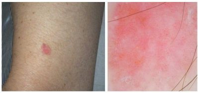
A Carcinoma de Merkel.
B Doença de Bowen.
C Carcinoma basocelular.
D Acantoma de células claras.
Questão 1226 · Dermatologia · 4000200041Analise a sequência de imagens cirúrgicas a seguir. Em relação ao procedimento cirúrgico que está sendo demonstrado, assinale a alternativa correta.

A Trata-se da remoção dos triângulos de Burrow.
B Trata-se da plastia em M utilizada nas extremidades de feridas nos membros.
C O ângulo de incisão do defeito primário deve ter sido menor ou igual 30º.
D Trata-se de retalho V-T na extremidade do defeito.
Questão 1227 · Dermatologia · 4000200040Analise as imagens a seguir. Em relação ao quadro clínico e ao agente etiológico demonstrados, assinale a alternativa correta.

A Acomete indistintamente ambos os sexos e não há predileção por faixa etária ou tipo racial.
B O agente etiológico é do tipo necrobiontófago.
C Trata-se de doença provocada por insetos coleópteros do gênero
D Os hospedeiros naturais da larva são o cão e o gato.
Questão 1228 · Dermatologia · 4000200039Analise o caso clínico a seguir. Paciente do sexo masculino, 55 anos de idade, apresentando, ao longo da vida, múltiplas lesões semelhantes à da imagem a seguir. Estudo genético apresentou mutação do gene TGFBR1. Nesse caso, qual é a síndrome apresentada pelo paciente?

A Bazex.
B Ferguson-Smith.
C Li-Fraumeni.
D Muir-Torre.
Questão 1229 · Dermatologia · 4000200038Analise o caso clínico a seguir. Paciente de 73 anos de idade relata surgimento, há cerca de três anos, de lesão ( figura 1) sobre cicatriz de queimadura no tronco que havia ocorrido na infância. A figura 2 se refere ao exame anatomopatológico de biópsia da lesão. Com base nas informações apresentadas, qual é o diagnóstico?

A Carcinoma basocelular.
B Carcinoma espinocelular.
C Melanoma amelanótico.
D Carcinossarcoma.
Questão 1230 · Dermatologia · 4000200037Analise o desenho de um retalho programado para correção de um futuro defeito na asa nasal esquerda. Com relação a esse caso, assinale a alternativa correta.
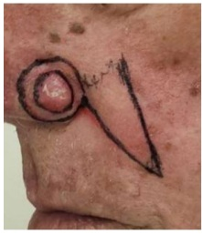
A O desenho do retalho representa um movimento tecidual de rotação.
B O suprimento sanguíneo desse retalho é precário, por isso, ele deve ser longo.
C O aspecto em alçapão ocorre com pequena frequência e não apresenta resolução espontânea.
D A ponta da área demarcada com caneta pode ser dobrada para formar uma nova borda da narina.
Questão 1231 · Dermatologia · 4000200036Analise o caso clínico a seguir. Paciente do sexo feminino, 25 anos de idade, procura atendimento dermatológico para remoção de tatuagem na região lombar, apresentada na imagem a seguir. Qual

A Dye laser (laser de corante) 510 nm.
B Nd:YAG 1064 nm pulso longo.
C Q-Switched Alexandrita 755 nm.
D Q-Switched Nd:YAG 532 nm.
Questão 1232 · Dermatologia · 4000200035Analise o caso clínico a seguir. Criança apresentando lesão assintomática, com inchaço e prurido local quando friccionada, conforme imagem a seguir. Em relação à doença dessa criança, assinale a alternativa correta.
A Ocorre, exclusivamente, na infância.
B Não evolui com formação de bolhas sobre a lesão.
C Não involui espontaneamente.
D O principal diagnóstico diferencial é o xantogranuloma juvenil.
Questão 1233 · Dermatologia · 4000200034Analise o caso clínico a seguir. Lactente do sexo feminino, apresentando lesões cutâneas que foram precedidas por vesículas e bolhas, conforme imagens a seguir. Com base nas informações apresentadas, qual é o diagnóstico?

A Epidermólise bolhosa.
B Histiocitose de células de Langerhans.
C Incontinência pigmentar.
D Penfigoide infantil.
Questão 1234 · Dermatologia · 4000200033Analise o caso clínico a seguir. Paciente do sexo masculino, cinco anos de idade, compareceu à consulta acompanhado de sua mãe, com queixa de problemas no couro cabeludo. A seguir, as imagens clínica, do exame com lâmpada de Wood e do exame micológico. Nesse caso, o agente etiológico dessa infecção é:
A T. tonsurans
B T. mentagrophytes
C M. canis
D T. rubrum
Questão 1235 · Dermatologia · 4000200032Analise o caso clínico a seguir. Criança com seis anos de idade, há oito meses evoluindo com as lesões conforme imagens a seguir. Nesse caso, qual é o diagnóstico clínico?
A Líquen plano.
B Líquen espinuloso.
C Líquen estriado.
D Líquen nítido.
Questão 1236 · Dermatologia · 4000200031Analise o caso clinico a seguir. Paciente do sexo feminino, 12 anos de idade, com lesão na mama há quatro meses, conforme apresentado nas imagens clínica e micológica a seguir. Nesse caso, qual é o diagnóstico?

A Cromomicose.
B Esporotricose.
C Histoplasmose.
D Coccidioidomicose.
Questão 1237 · Dermatologia · 4000200030Analise o caso clínico a seguir. Paciente do sexo feminino, atualmente com 64 anos de idade. Desde os 34 anos de idade apresenta lesões cutâneas eritematoescamosas. Foi tratada por três semanas com prednisona 1 mg/kg/dia, com regressão das lesões. Após a suspensão da medicação, procurou a emergência de um hospital, com febre, mal-estar e presença de pústulas em todo o tegumento, conforme imagens a seguir. Nesse caso, qual é o diagnóstico?
A Síndrome estafilocócica da pele escaldada (SSSS).
B Pustulose subcórnea.
C Psoríase pustulosa generalizada.
D Pustulose exantemática generalizada aguda.
Questão 1238 · Dermatologia · 4000200029Analise o caso clínico a seguir. Paciente do sexo feminino, dois anos de idade, há cinco meses com lesões cutâneas pruriginosas, conforme imagens a seguir. Qual é a droga de escolha para o tratamento dessa doença?
A Colchicina.
B Dapsona.
C Metotrexato.
D Ciclosporina.
Questão 1239 · Dermatologia · 4000200028Analise o caso clínico a seguir. Paciente do sexo feminino, 14 anos de idade, com lesões ceratóticas distribuídas pelo tegumento, xas, com graus variáveis de eritema, sem lesões de aspecto folicular, conforme imagens a seguir. Nega história de doença na família. Foi tratada durante dois meses com ciclosporina, sem melhora. Nesse caso, qual é o diagnóstico?
A Ictiose linear circunflexa.
B Eritroceratodermia simétrica progressiva.
C Psoríase em placa.
D Dermatite atópica.
Questão 1240 · Dermatologia · 4000200027Analise o caso clínico a seguir. Mulher, 25 anos de idade, gestante (18 semanas). Apresenta lesão dolorosa no dorso da mão esquerda há três meses, conforme imagens a seguir. Com base no quadro clínico e nos exames apresentados, qual é a indicação terapêutica para essa paciente?

A Antimoniato de meglumina.
B Anfotericina B.
C Estibogluconato de sódio.
D Miltefosina.
Questão 1241 · Dermatologia · 4000200026Analise o quadro clínico a seguir. Paciente do sexo masculino, um ano de idade, com lesões no couro cabeludo e no tronco há oito meses, conforme imagens a seguir. Com base nesse quadro clínico, histopatológico e imunohistoquímico, qual é o diagnóstico?

A Leucemia cútis.
B Dermatite seborreica.
C Histiocitose de células de Langerhans.
D Telangiectasia macular eruptiva
Questão 1242 · Dermatologia · 4000200025Analise o quadro clínico a seguir. Paciente do sexo feminino, 34 anos de idade, com lesões assintomáticas no dorso há três anos, conforme imagens a seguir. Com base nesse quadro clínico e histopatológico, qual é o diagnóstico?

A Anetodermia.
B Urticária-vasculite.
C Síndrome de Sweet.
D Eritema nodoso hansênico.
Questão 1243 · Dermatologia · 4000200024Analise o quadro clínico a seguir. Paciente do sexo feminino, 28 anos de idade, refere lesões pouco pruriginosas, conforme imagens a seguir, em todo o tegumento há um mês. As lesões vêm aumentando em número progressivamente. Com base nesse quadro clínico e histopatológico, qual é o diagnóstico?

A Sífilis secundária.
B Urticária pigmentosa.
C Hanseníase virchowiana.
D Pitiríase liquenoide crônica.
Questão 1244 · Dermatologia · 4000200023Analise o quadro clínico a seguir. Paciente do sexo feminino, dois anos de idade, com lesões no membro inferior direito, conforme imagens a seguir, desde o nascimento. Com base nesse quadro clínico, qual é o diagnóstico?
A Eritema ab igne.
B Mancha vinho do Porto.
C Síndrome de Klippel-Trenaunay.
D Cútis marmorata telangiectásica congênita.
Questão 1246 · Dermatologia · 4000200021Analise o quadro clínico a seguir. Paciente HIV+, com CD4 de 110 céls/mm³. Refere lesões cutâneas assintomáticas há cinco meses, conforme imagens a seguir. Com base no quadro clínico e nos exames apresentados, qual é o diagnóstico?
A Paracoccidioidomicose.
B Histoplasmose.
C Criptococose.
D Fusariose.
Questão 1247 · Dermatologia · 4000200020Analise o quadro clínico a seguir. Paciente do sexo masculino, 48 anos de idade, evoluindo há seis meses com lesões no tronco e membros. Quadro clínico e histopatológico representados nas imagens a seguir. Com base nesse quadro, qual é o diagnóstico?
A Molusco contagioso.
B Neurofibromatose.
C Dermatofibromas múltiplos.
D Hanseníase.
Questão 1248 · Dermatologia · 4000200019Analise o quadro clínico a seguir. Paciente do sexo feminino, 33 anos de idade, há oito meses com lesão pruriginosa localizada na perna esquerda, conforme imagens clínica e histopatológicas apresentadas a seguir. Com base nesse quadro, qual é o diagnóstico?

A Prurigo nodular.
B Líquen amiloidótico.
C Mucinose.
D Líquen simples.
Questão 1249 · Dermatologia · 4000200018Analise o quadro clínico a seguir. Paciente do sexo feminino, 36 anos de idade, há dois anos com múltiplas lesões na região mamária, abdome e dorso, que aumentaram de tamanho nos últimos seis meses, conforme imagens clínica e histopatológica representadas a seguir. Com base nesse quadro, qual é o diagnóstico?

A Lúpus eritematoso cutâneo crônico.
B Esclerodermia em placas.
C Escleromixedema.
D Xantogranuloma necrobiótico.
Questão 1250 · Dermatologia · 4000200017Analise o quadro clínico a seguir. Paciente do sexo feminino, 33 anos de idade, com lesões nos membros inferiores e superiores, intensamente pruriginosas, conforme imagens clínicas e histopatológica a seguir, em uso de corticoide tópico com pouca melhora, há dois anos. Diante desse quadro, qual é o diagnóstico?

A Colagenose reativa perfurante.
B Prurigo nodular.
C Doença de Kyrle.
D Penfigoide nodular.
Questão 1251 · Dermatologia · 4000200016Analise o quadro clínico a seguir. Paciente do sexo feminino, 30 anos de idade, procurou atendimento devido à dor na região plantar há um mês. Quadro dermatoscópico apresentado a seguir. Considerando esse quadro, qual é o diagnóstico?

A Trauma mecânico.
B Melanoma amelanótico.
C Mirmécia.
D Poroma écrino.
Questão 1252 · Dermatologia · 4000200015Analise o quadro clínico a seguir. Paciente do sexo masculino, 45 anos de idade, referindo lesões na perna há um ano, após pescar em um rio no Centro-Oeste do Brasil. Quadro clínico e microcultivo apresentados a seguir. Considerando esse quadro, assinale a alternativa que apresenta a correlação correta.

A Cromoblastomicose, microcultivo com frutificação tipo
B Granuloma tricofítico, microcultivo com
C Granuloma das piscinas, microcultivo com
D Paracoccidioidomicose, microcultivo a 25 ºC, forma filamentosa.
Questão 1253 · Dermatologia · 4000200014Analise o quadro clínico a seguir. Paciente do sexo masculino, 24 anos de idade, internado em decorrência de transplante de medula óssea, com febre acima de 38,5ºC, estado geral comprometido e aparecimento de manchas purpúricas e equimóticas na pele. Quadro clínico e microcultivo apresentados a seguir. Considerando esse quadro, qual é o diagnóstico?
A Aspergilose.
B Sepse por Malassezia spp..
C Fusariose.
D Dermatofitose invasiva.
Questão 1254 · Dermatologia · 4000200013Analise o quadro clínico a seguir. Paciente do sexo feminino, 26 anos de idade, atleta pro ssional, procura atendimento médico devido à transpiração excessiva nos pés há vários meses, após troca do modelo de tênis. Quadro clínico apresentado a seguir. Considerando esse quadro, qual é o diagnóstico e o tratamento indicado?

A Verrugas virais plantares, crioterapia com nitrogênio líquido.
B Tinha do pé, ciclopirox olamina 1% em creme.
C Disidrose, betametasona 0,01% em creme.
D Ceratólise plantar sulcada, eritromicina tópica.
Questão 1255 · Dermatologia · 4000200012Analise o quadro clínico a seguir. Paciente do sexo feminino, 58 anos de idade, refere surgimento de lesões nas mãos e pés há dois anos, sem qualquer acometimento sistêmico, como apresentado nas imagens a seguir. Com base nesse quadro, qual é o diagnóstico?
A Dermatite herpetiforme.
B Epidermólise bolhosa adquirida.
C Lúpus eritematoso bolhoso.
D Porfiria cutânea tardia.
Questão 1256 · Dermatologia · 4000200011Analise o quadro clínico e histopatológico a seguir. Considerando essas imagens, qual é o diagnóstico?
A Micose fungoide.
B Pitiríase rubra pilar.
C Pitiríase liquenoide.
D Psoríase em placa.
Questão 1257 · Dermatologia · 4000200010Analise o quadro clínico a seguir. Paciente do sexo feminino, 29 anos de idade, refere surgimento de lesão na coxa direita, conforme imagens a seguir, há oito meses, assintomática. Considerando esse quadro, qual é o diagnóstico?

A Líquen escleroso.
B Hanseníase indeterminada.
C Micose fungoide hipocromiante.
D Vitiligo segmentar.
Questão 1258 · Dermatologia · 4000200009Analise o quadro clínico a seguir. Paciente do sexo feminino, 54 anos de idade, com artrite reumatoide diagnosticada há 10 anos e controlada com imunobiológico há dois anos, passou a apresentar lesões palmoplantares, conforme imagens a seguir, mesmo com a troca de medicamentos. Considerando que há vários medicamentos aprovados para uso na artrite reumatoide que não se relacionam a esse evento adverso, analise os medicamentos a seguir. I. Adalimumabe II. Etanercepte III. Certolizumabe pegol IV. Tofacitinibe V. Baricitinibe Com base nos dados da história e na apresentação clínica das lesões, é(são) medicamento(s) que poderia(m) ser opção(ões) para evitar a recidiva:
A I e II, apenas.
B III, apenas.
C IV e V, apenas.
D V, apenas.
Questão 1259 · Dermatologia · 4000200008Analise o quadro clínico a seguir. Paciente do sexo masculino, 50 anos de idade, trabalhador rural, apresenta essa lesão de crescimento rápido no dorso do pé direito e no espaço interdigital, conforme imagens a seguir. Com base nas informações clínicas e no exame anatomopatológico, qual é o diagnóstico?
A Cromomicose.
B Carcinoma espinocelular.
C Micetoma.
D Dermatofibrossarcoma.
Questão 1260 · Dermatologia · 4000200007Analise o quadro clínico a seguir. Paciente do sexo masculino, 12 anos de idade, apresenta alterações nas unhas e cabelos, conforme imagens a seguir, há seis meses. Com base nas informações clínicas e da dermatoscopia, os elementos encontrados nas imagens que apoiam o diagnóstico são

A coiloníquia e fios em vassoura.
B depressões cupuliformes e pontos vermelhos.
C sulco de Beau e cilindros capilares.
D traquioníquia e fios em ponto de exclamação.
Questão 1261 · Psiquiatria · 4000200006Um homem de 40 anos é conduzido pelo Corpo de Bombeiros para avaliação médica na UPA, após ter sido contido em via pública devido ao seu comportamento provocativo e agressivo. Durante a avaliação clínica, o paciente já se encontrava mais calmo, embora não respondesse adequadamente à maior parte das perguntas e, em alguns casos, sua fala pastosa prejudicava a compreensão das respostas. Durante o exame médico, o paciente, já sonolento, levanta-se da maca e diz que precisa ir ao banheiro para vomitar. Nesse breve percurso, nota-se uma marcha "cambaleante" e um forte odor etílico pelo corredor da unidade. Diante desse caso, a hipótese diagnóstica e conduta são:
A intoxicação alcoólica - administrar diazepam e soro fisiológico com complexo B e manter o paciente sob observação da equipe.
B abstinência alcoólica - administrar diazepam e tiamina IM e manter o paciente sob observação da equipe.
C intoxicação alcoólica - administrar tiamina IM e manter o paciente sob observação da equipe.
D intoxicação alcoólica - administrar haloperidol IM, tiamina IM e contê-lo na maca.
Questão 1262 · Dermatologia · 4000200005Paciente do sexo masculino, 32 anos, apresentou dor e vermelhidão na perna direita associadas a febre, calafrios e queda do estado geral. Ao exame, há uma placa eritematosa bem delimitada na perna direita com algumas bolhas. Com base no caso, assinale a alternativa correta.
A A presença de bolhas corrobora o diagnóstico de penfigoide bolhoso.
B Um dos agentes etiológicos mais comuns é
C O diagnóstico é de celulite na perna direita.
D O tratamento deve ser feito com aminoglicosídeos.
Questão 1263 · Reumatologia · 4000200004Mulher de 27 anos procura atendimento por queixas de inchaço, febre, mal-estar e dores nas mãos e nos punhos. Relata que o inchaço se iniciou nesta semana e que os demais sinais e sintomas, há cerca de 2 meses. Ao exame físico, apresenta úlcera indolor em palato duro, artrite de punhos e metacarpofalangeanas, pressão arterial = 150 x 100 mmHg e edema compressível de membros inferiores 3+/4+ até as coxas. Solicitados exames complementares que mostraram hemoglobina = 9,5 g/dL; leucócitos = 3.200/mm³; plaquetas = 110.000/mm³ ; creatinina = 2,8 mg/dL; ureia = 90 mg/dL; FAN = 1/640 padrão nuclear homogêneo; urina 1 com eritrócitos 10.000/campo; leucócitos 20.000/campo; presença de cilindros hemáticos e albumina 3+/4+; relação proteína/creatinina urina amostra isolada = 2 (VR < 0,2). Tendo em vista a principal hipótese diagnóstica, qual é o melhor tratamento para a paciente nesse momento?
A Pulsoterapia com metilprednisolona 1 g/dia por 3 dias consecutivos e micofenolato de mofetila.
B Prednisona 1 mg/kg via oral associada à ciclofosfamida endovenosa.
C Pulsoterapia com metilprednisolona 1 g/dia por 3 dias consecutivos e metotrexato.
D Solicitar biópsia renal e, após, definir o melhor tratamento baseado em seus achados.
Questão 1264 · Pneumologia · 4000200003Uma mulher de 55 anos de idade, ex-tabagista (cessou o tabagismo há 10 anos e tem carga tabágica de 30 maços/ano), procura atendimento médico devido à presença de tosse crônica e dispneia progressiva nos últimos meses. Ao realizar a anamnese e o exame físico, o médico suspeita de doença pulmonar obstrutiva crônica (DPOC). Para confirmar o diagnóstico de DPOC:
A A carga tabágica deve ser de pelo menos 40 maços/ano.
B O diagnóstico da doença é apenas clínico e já está confirmado.
C A espirometria é necessária e deve mostrar um VEF1 < 70%.
D A prova broncodilatadora positiva não descarta a DPOC.
Questão 1265 · Cardiologia · 4000200002Homem, 55 anos, hipertenso, apresentou perda de consciência enquanto estava se barbeando. Foi levado ao pronto-socorro por familiares logo após o evento. O primeiro exame indicado nesse caso é:
A Eletrocardiograma.
B Holter de 24 horas.
C Teste ergométrico.
D Tilt test.
Questão 1266 · Hematologia · 4000200001Menino de 5 anos de idade é atendido na Unidade Básica de Saúde com quadro de surgimento abrupto de manchas arroxeadas difusas por todo o corpo há 1 dia. Duas semanas antes, apresentou quadro de resfriado comum. Ao exame físico, a criança está em bom estado geral, anictérica, acianótica, afebril, com petéquias e equimoses em membros superiores e inferiores. Os exames laboratoriais mostram hemoglobina de 13 g/dL, leucócitos de 5.500/mm³, contagem de plaquetas de 35.000/mm³ e creatinina de 0,5 mg/dL. Qual é a principal suspeita diagnóstica?
A Síndrome hemolítico-urêmica.
B Púrpura de Henoch-Schönlein.
C Púrpura trombocitopênica trombótica.
D Trombocitemia imune.
Questão 1267 · Inf ectologia · 4000200000Paciente do sexo masculino, 65 anos, com história de febre, tosse produtiva e dor ventilatório-dependente há quatro dias, apresenta-se à emergência com febre, taquicardia, hipotensão e sonolência. A pressão arterial é de 80/50 mmHg, a frequência cardíaca é de 120 bpm, a temperatura é de 39 °C e o peso corporal é de 60 kg. Após a administração de 2.000 mL de solução cristaloide, a pressão arterial não se normaliza. Os exames laboratoriais revelam leucocitose, acidose metabólica e lactato arterial de 3 mmol/L (normal: até 2 mmol/L). Qual é a classificação mais adequada para esse caso?
A Infecção sem sepse.
B Sepse.
C Sepse grave.
D Choque séptico.
Questão 1268 · Neurologia · 4000199999Um homem de 66 anos é atendido no pronto-socorro de um hospital. Seu acompanhante relata que, há cerca de 20 minutos, ele escorregou enquanto andava no quintal, caiu e bateu a cabeça. Não houve perda da consciência, vômito nem cefaleia. Ao exame físico, paciente apresenta abertura ocular espontânea, responde de forma orientada e obedece às ordens solicitadas, movimentando corretamente os membros superiores e inferiores; as pupilas encontram-se isocóricas e fotorreagentes. Considerando a história clínica do paciente e os dados do exame físico, assinale a opção que apresenta, respectivamente, a principal hipótese diagnóstica e a conduta adequada ao caso.
A Traumatismo leve; radiografia de crânio.
B Traumatismo moderado; tomografia de crânio e avaliação clínica seriada.
C Traumatismo leve; alta com orientações de sinais de alerta.
D Traumatismo leve; TC de crânio.
Questão 1269 · Nef rologia · 4000199998Mulher, 27 anos, previamente hígida, procura atendimento médico por queixa de cansaço progressivo nos últimos 10 dias, associado a edema de membros inferiores e tosse seca há 3 dias. Ao exame, apresenta temperatura subfebril (37,3 °C) – PA de 174 x 86 mmHg – taquicardia – palidez cutânea 2+ - presença de estertores crepitantes em 1/3 médio hemitórax direito – edema de membros inferiores 2+. Exames laboratoriais evidenciam: creatinina 4,7 mg/dL – ureia 83mg/dL – Na 135 mEq/L – K 5,6 mEq/L – Hb 8,3 g/dL – leucócitos 7.600 – plaquetas 113.000. Urina: leucócitos 113.000 – hemácias 894.000 – dismor smo presente – proteína 2+. Assinale a alternativa verdadeira sobre a síndrome clínica apresentada pela paciente.
A A biópsia renal é mandatória, e a imunofluorescência auxilia no diagnóstico diferencial.
B Os níveis de complemento sérico não ajudam nessa situação, pois estarão consumidos nas principais hipóteses diagnósticas.
C O quadro clínico é típico e dispensa a realização de biópsia renal. Devemos focar o tratamento com pulsoterapia + ciclofosfamida.
D O quadro clínico é de sepse de foco pulmonar com necessidade de início imediato de antibioticoterapia.
Questão 1270 · Gastroenterologia · 4000199997Júlia, 32 anos, tem quadro de distensão abdominal e diarreia eventualmente, especialmente após a ingestão de massas. Procura a UBS queixando-se do surgimento de vesículas pruriginosas joelhos e cotovelos e joelhos nos últimos 6 meses, com períodos de piora e melhora intermitentes. Júlia tem hipotireoidismo há 5 anos, em uso de levotiroxina 88 µg pela manhã. Sobre esse caso, marque a opção ERRADA:
A O diagnóstico do distúrbio gastrointestinal pode ser confirmado por meio de colonoscopia com biópsias.
B O hipotiroidismo, assim como o diabetes tipo I, pode estar associado à principal hipótese diagnóstica.
C Os sintomas gastrointestinais e cutâneos provavelmente apresentam o mesmo agente causal.
D A dosagem dos autoanticorpos antitransglutaminase fração IgA e antiendomísio fração IgA pode auxiliar na investigação diagnóstica.
Questão 1271 · Cirurgia · 4000199996Lactente do sexo feminino com 1 mês de vida é trazida pelos pais ao pronto-socorro, pois está vomitando e chorando muito há 8 horas. Ao exame, apresenta distensão abdominal com aumento dos ruídos hidroaéreos e abaulamento inguinal à direita com sinais ogísticos. A partir do quadro descrito, assinale a alternativa correta.
A Está indicada a manobra de taxe com programação de herniorrafia dentro de 24 a 48 horas.
B Deve-se realizar abordagem operatória em regime de urgência.
C Inicialmente, deve-se investigar e tratar o quadro de obstrução. A correção da hérnia é um quesito secundário e deverá ser indicada quando a criança atingir 2 anos.
D A apresentação clínica pode ser justificada pela inflamação do linfonodo da cadeia inguinal.
Questão 1272 · Cirurgia · 4000199995Homem de 36 anos sofreu queimadura após a explosão de um tonel de combustível. Ao exame físico, encontra-se consciente, com fácies de dor, taquicárdico e algo hipotenso. Ao exame físico, apresenta queimadura de terceiro grau em todo o antebraço esquerdo e em parte da face. Também apresenta lesões de segundo grau em tronco anterior. O paciente queixa-se de dor, parestesia e paresia da mão esquerda, apesar da ausência de queimaduras dessa estrutura. Considerando o caso descrito, assinale a alternativa correta.
A Está indicada a fasciotomia imediata de membro superior esquerdo.
B Nesse momento, deve-se evitar reposição volêmica pelo risco da piora dos sintomas apresentados no membro superior esquerdo.
C O tratamento inicial do quadro apresentado no membro superior esquerdo pode ser feito na sala de trauma, sem necessidade de anestesia geral.
D No momento, não há indicação de transferência para um centro de terapia de queimados (CTQ).
Questão 1273 · Cirurgia · 4000199994Homem de 60 anos, hipertenso, tabagista e dislipidêmico, procura pronto-socorro por dor em pé e perna direitos, de forte intensidade, há 3 horas. Ao exame físico: PA de 150 x 95 mmHg, FC de 98 batimentos por minuto. Há gradiente térmico e palidez no membro da queixa. Os pulsos poplíteos, tibial posterior e pedioso à direita são ausentes, e os demais, presentes. A hipótese diagnóstica e o tratamento são, respectivamente:
A Oclusão arterial crônica, antiagregação plaquetária e estatinas.
B Oclusão arterial aguda, anticoagulação e tromboembolectomia.
C Flegmasia e tromboembolectomia.
D Trombose venosa profunda e anticoagulação plena.
Questão 1274 · Cirurgia · 4000199993Considerando as feridas complexas, de modo geral, podemos a rmar que o cirurgião usa o princípio de complexidade crescente, ou escada da reconstrução, quando avalia as possibilidades de fechamento da lesão. Baseando-se nesse conceito, assinale a alternativa correta.
A O uso do enxerto parcial é a primeira opção para o fechamento, seguido do enxerto total e retalhos livres.
B O fechamento primário não é contemplado como um método reconstrutivo.
C A primeira opção utilizada para feridas complexas é a rotação de um retalho fasciocutâneo.
D O enxerto cutâneo pode ser considerado uma opção terapêutica com complexidade inferior à confecção de um retalho.
Questão 1275 · Cirurgia · 4000199961Lactente de 10 meses de idade, pesando 10 kg, foi vítima de queda do berço, com trauma craniano presenciado pela mãe. Na admissão ao pronto-socorro, apresentava vias aéreas pérvias, MV +, sem ruídos adventícios, FC = 112 bpm; PA = 100 x 65 mmHg; FR = 30 irpm e saturação de oxigênio de 94% em ar ambiente, Glasgow 07, pupilas anisocóricas e fotorreagentes. Abdome ácido. Ofertado O₂ através de máscara não reinalante pediátrica e puncionado acesso venoso periférico em membro superior direito. Com base no ATLS, qual é a próxima conduta a ser tomada?
A Pré-oxigenação, sulfato de atropina e intubação orotraqueal após administração de etomidado ou midazolam, seguida de succinilcolina.
B Pré-oxigenação, intubação orotraqueal após administração de etomidado ou midazolam, seguida de succinilcolina.
C Tomografia de corpo inteiro com contraste endovenoso.
D Iniciar reposição volêmica no acesso venoso periférico com Ringer-lactato 200 ml.
Questão 1276 · Cirurgia · 4000199960Paciente feminino, 33 anos, vítima de acidente automobilístico (motorista do veículo) após ingesta de álcool (carro x árvore), levado pelo SAMU ao pronto-socorro municipal, em prancha e com colar cervical. Exame físico: agitada, vias aéreas pérvias, MV ausente em hemitórax esquerdo e com timpanismo à percussão, SatO₂ 82%, FC 140 bpm, PA 80 x 50 mmHg, abdome ácido sem sinais de peritonite, pelve estável. Qual é a conduta imediata nesse caso?
A Radiografia de tórax na sala de trauma para confirmação diagnóstica.
B Toracocentese de alívio no 2º espaço intercostal esquerdo, linha hemiclavicular, seguida de drenagem pleural no 5º espaço intercostal, entre a linha axilar anterior e a média.
C Descompressão torácica digital no 5º espaço intercostal esquerdo, entre a linha axilar anterior e a média, seguida de drenagem pleural no mesmo local.
D Drenagem pleural no 5º espaço intercostal esquerdo, entre a linha axilar anterior e a média.
Questão 1277 · Cirurgia · 4000199959Paciente do sexo masculino, 65 anos, foi internado para procedimento cirúrgico de revascularização do membro inferior direito, por intratabilidade clínica de doença arterial crônica periférica. Nesse caso e de acordo com as etapas preventivas preconizadas para a segurança do paciente pelo Programa Nacional de Segurança do Paciente, estabelecido pela Portaria nº 529/2013, do Ministério da Saúde, as ações preventivas a serem realizadas antes da incisão na pele (“time out”) são:
A Confirmação verbal do nome do paciente e marcação do sítio cirúrgico.
B Assinatura do termo de consentimento e aplicação de antibioticoprofilaxia.
C Disponibilização da angiografia do membro inferior direito na sala cirúrgica e aplicação de antibioticoprofilaxia.
D Marcação do sítio cirúrgico e anotação das alergias medicamentosas relatadas pelo paciente.
Questão 1278 · Cirurgia · 4000199958Paciente de 23 anos, sexo feminino, admitida com dor abdominal em fossa ilíaca direita há 2 dias, associada a febre não aferida, anorexia e dois episódios de diarreia. Refere episódios semelhantes nos últimos 6 meses. Ao exame físico: abdome doloroso em FID, com sinal de Blumberg positivo. Indicada a laparoscopia diagnóstica, que evidenciou hiperemia do íleo terminal e apêndice cecal sem alterações. Qual é a conduta nesse caso?
A Terminar a cirurgia.
B Apendicectomia.
C Ressecção do íleo terminal com anastomose primária.
D Terminar a cirurgia e solicitar colonoscopia.
Questão 1279 · Ortopedia · 4000199957Paciente do sexo masculino, negro, 14 anos, medindo 1,55 m e com 82 kg, refere dor no quadril esquerdo há três dias após partida de futebol. Há duas semanas teve quadro gripal com febre e resolução após três dias. Foi ao hospital, onde fizeram a seguinte radiografia: Qual é a conduta mais adequada?
A Internar para redução e fixação interna com placa e parafuso.
B Gesso pélvico podálico.
C Retirar carga, repouso no leito e aguardar evolução espontânea.
D Internar para fixação
Questão 1280 · Gastroenterologia · 4000199956Sr. Jurandir tem 76 anos, é etilista, tabagista e tem queixas dispépticas há mais de 2 anos. Porém, procurou a UBS por emagrecimento importante nos últimos 3 meses, aumento do volume abdominal, além de astenia e eliminação de fezes enegrecidas nas últimas 2 semanas. Foi solicitada a endoscopia digestiva alta (EDA), q ue revelou úlcera in ltrativa e necrótica, medindo 4 cm, localizada no antro gástrico, com sinais de sangramento recente. O histopatológico revelou adenocarcinoma indiferenciado, e a tomogra a de abdome exibe múltiplos nódulos hipodensos e hipovasculares no parênquima hepático, além de líquido livre de moderado volume. Qual é a conduta mais apropriada nesse caso?
A Gastrectomia total com linfadenectomia a D2.
B Gastrectomia subtotal (dois terços distais do estômago) com linfadenectomia a D2.
C Biópsia hepática e paracentese para fazer diagnóstico diferencial entre neoplasia e cirrose.
D Tratamento paliativo, podendo incluir paracentese de alívio e radioterapia hemostática.
Questão 1281 · Ginecologia · 4000199955Paciente do sexo feminino, 58 anos, G1 P1 A0, comparece à UBS para apresentar mamogra a de rastreamento cujo resultado foi BI-RADS 3. A mulher encontra-se assintomática e não apresenta comorbidades ou antecedentes familiares de câncer. O exame físico mamário não apresenta alterações. Qual é a conduta para esse caso?
A Solicitar uma ultrassonografia complementar para esclarecer se a lesão encontrada na mamografia é suspeita de malignidade ou não.
B Prosseguir com a rotina de rastreamento e solicitar uma nova mamografia em 2 anos.
C Encaminhar para o serviço de referência em oncologia para fazer uma biópsia.
D Somente acompanhar com uma nova mamografia em 6 meses.
Questão 1282 · Ginecologia · 4000199954Paciente do sexo feminino, 59 anos, menopausa aos 50 anos de idade, hipertensa e obesa, apresenta-se ao ginecologista referindo sangramento genital esporádico há 2 meses. Nega uso de terapia hormonal. Não foram observadas alterações no exame físico ginecológico O ultrassom transvaginal apresenta um eco endometrial medindo 10 mm, útero de 39 cm³, e os ovários não foram visualizados. Qual é a conduta para esse caso?
A Seguimento ultrassonográfico em 6 meses.
B Histerectomia + salpingooforectomia bilateral.
C Histeroscopia diagnóstica e biópsia.
D Ablação endometrial.
Questão 1283 · Ginecologia · 4000199953Mulher, com 46 anos de idade, comparece à Unidade Básica de Saúde com pedido para fazer uma mamogra a. Refere que uma tia materna teve câncer de mama aos 52 anos de idade. Ao exame físico mamário, não apresenta nódulos ou espessamentos. Axilas livres e expressão negativa bilateralmente. De acordo com a diretriz do Ministério da Saúde, qual é a conduta indicada para essa paciente?
A Solicitar a mamografia imediatamente e repetir anualmente.
B Solicitar a mamografia e repetir a cada 2 anos.
C Não solicitar a mamografia e iniciar o rastreamento mamográfico aos 50 anos de idade, repetindo o exame a cada 2 anos.
D Não solicitar a mamografia e iniciar o rastreamento mamográfico aos 50 anos de idade, repetindo o exame todo ano.
Questão 1284 · Ginecologia · 4000199952Paciente do sexo feminino de 39 anos de idade, 3G3PN, comparece à Unidade Básica Saúde referindo aumento do uxo menstrual há 4 meses. Método anticoncepcional: laqueadura há 9 anos. Ao exame físico ginecológico, foi observado útero aumentado de volume, contornos bocelados e consistência brelástica. O ultrassom apresentou útero de 340 cm³, com múltiplos nódulos hipoecogênicos. Qual é a conduta indicada para essa paciente?
A Histerectomia total abdominal.
B Miomectomia laparoscópica.
C Análogo de GnRH.
D Progestágeno.
Questão 1285 · Ginecologia · 4000199951Paciente do sexo feminino, de 25 anos, fez colpocitologia oncótica com resultado de células escamosas atípicas de significado indeterminado, possivelmente não neoplásicas (ASCUS). Refere corrimento acinzentado e fétido. Qual é sua conduta?
A Tratar corrimento e repetir exame em 36 meses.
B Tratar corrimento e repetir exame em 12 meses.
C Não tratar corrimento e encaminhar para colposcopia.
D Tratar corrimento e encaminhar para colposcopia.
Questão 1286 · Obstetrícia · 4000199950Gestante, primigesta, atraso menstrual de 8 semanas, realizou ultrassom há uma semana que visualizou gestação tópica com embrião vivo de 6 semanas. Paciente vem ao pronto-socorro referindo sangramento vaginal intenso há 2 horas. Ao exame, apresenta-se descorada 1+/4, PA de 100 x 60 mmHg, FC de 100 bpm, abdome sem alterações, especular com sangramento moderado saindo pelo orifício externo do colo e toque vaginal com colo pérvio, sendo possível sentir material no canal cervical. A partir dos achados clínicos, qual é o diagnóstico e a conduta?
A Abortamento inevitável e aspiração manual intrauterina.
B Abortamento incompleto e espera por eliminação espontânea.
C Ameaça de abortamento e ultrassonografia transvaginal.
D Abortamento retido e misoprostol.
Questão 1287 · Obstetrícia · 4000199949Gestante de 19 anos, primigesta, 33 semanas calculada pela DUM, vem à maternidade trazida pelo SAMU com sangramento vaginal e dor abdominal há 3 horas. Paciente usuária de crack e moradora de rua. Não fez pré-natal nem ultrassom nessa gestação. Ao exame, apresenta-se com PA = 150/90 mmHg, pulso = 110 bpm. Altura uterina de 34 cm, dinâmica uterina de difícil avaliação, difícil palpação de partes fetais, dor à palpação abdominal e tônus uterino aumentado. Batimentos cardíacos fetais = 120 bpm. Ao exame especular, apresenta sangramento coletado, visualização de colo impérvio e sangramento proveniente do canal cervical em pequena quantidade; toque vaginal não realizado. Com base nos achados clínicos, qual deve ser a conduta nesse momento?
A Realizar corticoterapia e cesariana após 48 horas.
B Realizar amniotomia e encaminhar para cesariana de emergência.
C Encaminhar a paciente para cesariana de emergência.
D Realizar tocólise, corticoterapia e ultrassonografia transvaginal.
Questão 1288 · Obstetrícia · 4000199948Gestante de 30 anos, secundigesta com parto normal há 3 anos sem intercorrências, sem comorbidades. Iniciou o pré-natal com 8 semanas, sendo realizado exames laboratoriais com sorologias negativas, tipagem sanguínea O+, glicemia de jejum de 84 mg/dl, hemoglobina 12 g/dl, hematócrito 38%, urina 1 sem alterações, urocultura negativa. Paciente com vacinas em dia. Para essa gestante, quais exames devem ser solicitados no segundo e terceiro trimestre de gestação?
A Sorologias para hepatite B, sífilis e HIV, glicemia de jejum, hemograma e cultura para estreptococos do grupo B.
B Sorologias para toxoplasmose, sífilis e HIV, TTOG 75 g, urina 1 e urocultura, cultura para estreptococos do grupo B.
C Sorologias para sífilis, HIV, TTOG 75 g, hemograma e cultura para estreptococos do grupo B.
D Sorologias para hepatite B, toxoplasmose, sífilis, HIV, glicemia de jejum, hemograma, urina 1 e urocultura e cultura para estreptococos do grupo B.
Questão 1289 · Obstetrícia · 4000199947Gestante de 28 anos, primigesta, 39 semanas e 5 dias, com gestação de risco habitual, foi admitida no centro de parto normal com 6 cm de dilatação, 4 contrações de 40” em 10 minutos, bolsa íntegra, apresentação cefálica etida, em ODP em plano -1 de De Lee. Feto com boa vitalidade e BCF de 144 bpm. Quatro horas após a admissão, foi examinada novamente e encontrava-se com 8 cm de dilatação, bolsa íntegra, apresentação cefálica etida em ODT, plano zero de De Lee, BCF de 140 bpm. Com base na evolução do trabalho de parto, assinale a alternativa que indica a conduta correta para esse caso.
A Realizar amniotomia, prescrever ocitocina em bomba de infusão e reavaliar em 2 horas.
B Suspender dieta, prescrever ocitocina e reavaliar em 1 hora; caso não ocorra progressão do parto, indicar cesariana por distocia de rotação.
C Manter ausculta fetal intermitente a cada 1 hora, realizar amniotomia e reavaliar em 2 horas.
D Manter ausculta fetal intermitente a cada 30 minutos e sugerir à parturiente caminhada e posições verticalizadas; reavaliar em 4 horas.
Questão 1290 · Obstetrícia · 4000199946Gestante de 27 anos, primigesta, 31 semanas, vem à maternidade com dor em cólica há 2 horas. Ao exame físico: dinâmica uterina 3/30 seg/10 minutos, tônus uterino normal, 148 batimentos cardíacos fetais por minuto, colo pérvio para 2 cm, médio, medianizado, pélvico, bolsa íntegra. A conduta mais adequada nesse momento deve ser:
A Prescrição de progesterona via vaginal e observação ambulatorial.
B Nifedipina, betametasona e penicilina cristalina.
C Atosiban, penicilina cristalina e sulfato de magnésio.
D Sulfato de magnésio e cesariana.
Questão 1291 · Pediatria · 4000199945Pré-termo, de 32 semanas, nasce por meio de cesariana por eclampsia materna. Logo após o nascimento, apresenta distress respiratório importante, com tiragens sub e intercostais e batimento de aleta nasal. Foi então colocado em CPAP já em sala de parto e encaminhado à UTI neonatal. Considerando o caso, qual é o diagnóstico mais provável?
A Síndrome do desconforto respiratório.
B Taquipneia transitória do recém-nascido.
C Hipertensão pulmonar persistente.
D Sepse neonatal precoce.
Questão 1292 · Pediatria · 4000199944Uma mãe de primeira viagem traz seu lho de 8 meses para consulta de puericultura. Ela quer saber qual é a melhor forma de transportá-lo de forma segura no carro, de acordo com as leis de trânsito. Você orienta a utilizar, no banco de trás:
A Bebê conforto, virado em direção ao painel do carro.
B Bebê conforto, virado de costas para o painel do carro.
C Cadeirinha infantil, virada em direção ao painel do carro.
D Cadeirinha infantil, virada de costas para o painel do carro.
Questão 1293 · Pediatria · 4000199943O teste do coraçãozinho de um bebê de 48 horas de vida traz o seguinte resultado de saturação nos membros: • Membro superior direito: 99%. • Membro inferior esquerdo: 95%. Qual é a conduta a ser tomada diante desse resultado, de acordo com o Ministério da Saúde?
A Repetir o teste, medindo a saturação de membro inferior direito.
B Repetir o teste após uma hora.
C Encaminhar ao ecocardiograma.
D Alta hospitalar.
Questão 1294 · Pediatria · 4000199942Você atende um bebê de 24 horas de vida, na maternidade, e observa, na carteirinha de pré-natal da sua mãe, que ela teve sí lis gestacional diagnosticada no 2º trimestre, por meio de um VDRL 1:128. Há registro de 3 doses de penicilina benzatina, logo após o diagnóstico. Na maternidade, seu exame de VDRL veio 1:16, e o do RN, 1:8. O bebê está assintomático. Qual é a classificação do tratamento materno e a conduta a ser tomada?
A Mãe inadequadamente tratada. Coletar hemograma, liquor e realizar radiografia de ossos longos no RN.
B Mãe inadequadamente tratada. Apenas seguimento ambulatorial do RN.
C Mãe adequadamente tratada. Coletar hemograma e liquor e realizar radiografia de ossos longos no RN.
D Mãe adequadamente tratada. Apenas seguimento ambulatorial do RN.
Questão 1295 · Pediatria · 4000199941Um lactente de 1 ano e 6 meses procura o pronto atendimento devido a febre com duração de 5 dias e inapetência. Recebe amoxicilina há 3 dias, mas a criança persiste com febre elevada que não responde bem ao uso de antitérmicos. O lactente encontra-se em regular estado geral, T - 39,5 °C, FC - 138 bpm, com hiperemia de orofaringe, língua em aspecto de morango e hiperemia conjuntival bilateral. Observa-se também exantema difuso em tronco e membros, além de linfonodo aumentado em região cervical direita, medindo 1,5 cm de diâmetro. Diante desse caso hipotético, podemos afirmar:
A O diagnóstico dessa condição exige a realização de sorologia e investigação epidemiológica.
B Trata-se de uma escarlatina, e devemos aumentar o espectro do antibiótico.
C O tratamento dessa criança envolve o uso de imunoglobulina e ácido acetilsalicílico.
D Se o tratamento não for iniciado, há risco elevado de complicações renais.
Questão 1296 · Pediatria · 4000199940Um lactente de 4 meses comparece à consulta de rotina na Unidade Básica de Saúde. A mãe refere que realizou o pré-natal adequadamente e que a criança nasceu de parto normal a termo e sem intercorrências. Está recebendo aleitamento materno, suplementação de ferro e vitamina D. Há preocupação da família em relação ao fato de a criança não conseguir rolar e car sentada sem apoio. Ao exame, você constata que o ganho ponderal é satisfatório e que a criança agarra objetos, ri alto, interage com a mãe e consegue sustentar o tronco apoiada nos braços de bruços, mas ainda não transfere objetos de uma mão para a outra e não se senta sem apoio. Diante desses dados e utilizando o instrumento de avaliação do Ministério da Saúde, classifique o desenvolvimento neuropsicomotor dessa criança.
A Desenvolvimento neuropsicomotor adequado.
B Atraso global do desenvolvimento neuropsicomotor.
C Provável atraso do desenvolvimento neuropsicomotor.
D Alerta para o desenvolvimento neuropsicomotor.
Questão 1297 · Pediatria · 4000199939Durante o plantão no pronto-socorro, você atende um lactente de 4 meses, trazido pela mãe, que refere que ele está muito choroso há 2 dias. Ao exame, você constata uma deformidade na coxa, e a radiogra a indica uma fratura completa do fêmur. Quando a mãe é questionada a respeito de algum trauma, ela passa a car nervosa e, de forma defensiva, diz que a criança pode ter se machucado durante a troca de fraldas. Além disso, você detecta a presença de hematoma em braço direito e em região dorsal. Diante dos dados descritos, podemos afirmar:
A Em casos como esse, não é comum o achado de outras fraturas em diferentes estágios de consolidação.
B Devemos classificar como compatível com violência, internar o paciente, tratar a fratura e solicitar radiografia de corpo inteiro com a finalidade de constatar lesões em outros locais. Além disso, devemos preencher a ficha do Ministério da Saúde e acionar o Conselho Tutelar.
C Podemos constatar que houve apenas uma negligência, pois a mãe não foi cuidadosa ao trocar a fralda da criança.
D Foi apenas um acidente doméstico, e a lesão apresentada é compatível com o tipo de trauma relatado.
Questão 1298 · Pediatria · 4000199938A febre reumática é a principal causa de cardiopatia adquirida em jovens em nosso meio. O seu tratamento apropriado diminui consideravelmente as sequelas cardíacas e é baseado na pro laxia secundária com penicilina benzatina a cada 21 dias. Diante disso, indique o tempo de pro laxia apropriada para uma criança de 9 anos com diagnóstico de febre reumática sem comprometimento cardíaco:
A Até 18 anos de idade.
B Até 21 anos de idade.
C Até 25 anos de idade.
D Até 15 anos de idade.
Questão 1299 · Otorrinolaringologia · 4000199937Paciente de 7 anos de idade vem ao pronto-socorro com mialgia, artralgia, obstrução nasal e secreção anterior, associadas a febre alta, dor de garganta, tosse e desconforto abdominal há 3 dias. Ao exame, apresenta hipertro a de tonsilas com exsudado acinzentado, edema de úvula, petéquias em palato, linfonodomegalia cervical anterior e posterior, edema bipalpebral e temperatura de 38,5 graus. Apresenta-se eupneico, consciente, orientado, normotenso. Com base no caso acima, assinale a hipótese diagnóstica e a conduta correta:
A Influenza; analgésico, antitérmico e aumento de hidratação oral.
B Amigdalite bacteriana por
C Mononucleose infecciosa; analgésico e antitérmico.
D Faringite por adenovírus; prednisona, analgésico e antitérmico.
Questão 1300 · Pediatria · 4000199936Os benefícios do aleitamento materno para o binômio mãe- lho são inquestionáveis. De acordo com as recomendações do Ministério da Saúde, indique a alternativa que menciona a forma adequada de conservação do leite materno ordenhado, quando a mãe volta a trabalhar e deseja continuar amamentando seu filho:
A O leite materno, quando em temperatura ambiente, deve permanecer por até 6 horas antes de ser consumido.
B Se o leite materno ordenhado for conservado em geladeira, o tempo máximo de armazenamento é de 12 horas.
C Após descongelado, o leite materno deve ser consumido em até 1 semana.
D O melhor local de armazenamento do leite é na porta da geladeira, pois a temperatura nesse local é mais constante.
Questão 1301 · Psiquiatria · 4000199935Mulher de 35 anos procura atendimento na UBS após 17 dias do parto do seu segundo lho. Conta que, nos últimos 10 dias, tem se sentido irritada, um pouco ansiosa, chorosa, com insônia inicial e cansaço. Refere que, apesar das di culdades, tem conseguido estabelecer um vínculo adequado com seu bebê e sente-se realizada ao amamentá-lo ou ao levá-lo para pequenos passeios pelo bairro. Conta que, há 3 anos, após o nascimento do seu primeiro lho, sofreu um quadro depressivo e precisou utilizar uoxetina por alguns meses, o que a "ajudou muito". Diante desse cenário, assinale a alternativa que contenha a melhor hipótese diagnóstica e a conduta mais adequada.
A Depressão pós-parto - iniciar fluoxetina e solicitar retorno em 1 semana.
B Blues
C Depressão pós-parto - encaminhar paciente para avaliação no CAPS.
D Blues
Questão 1302 · Dermatologia · 4000199934Criança de 5 anos é levada pela mãe à Unidade Básica de Saúde com queixa de bolinhas vermelhas que coçam nas pernas e nos braços. Ao exame, há pápulas eritematosas escoriadas e seropápulas localizadas nos braços e nas pernas. Com base no caso clínico, a hipótese diagnóstica é:
A Tinea corporis.
B Dermatite atópica.
C Psoríase.
D Prurigo estrófulo.
Questão 1303 · Medicina Preventiva · 4000199933Um grupo de pesquisadores está avaliando a introdução de um novo teste rápido para a detecção do vírus da Zika em gestantes. Nos estudos preliminares, o teste mostrou uma especi cidade de 78%. Com base nos conhecimentos acerca das propriedades dos testes diagnósticos, o que isso quer dizer?
A Que cerca de 80% das gestantes infectadas serão identificadas pelo teste.
B Que, diante de um resultado positivo do teste, temos uma probabilidade de 78% de estarmos diante de uma gestante infectada pelo vírus.
C Que 22% das gestantes não infectadas testadas serão falso-positivas para a infecção pelo vírus da Zika.
D Que, entre as gestantes não infectadas, quase 80% apresentarão teste positivo para o vírus.
Questão 1304 · Medicina Preventiva · 4000199932Um homem de 28 anos chega ao pronto-socorro relatando ter sido picado por uma jararaca na mão direita enquanto levantava um forro de uma cobertura metálica no paiol de máquinas da empresa onde trabalha com carteira assinada há 7 anos. Diante das informações apresentadas, o risco associado ao acidente de trabalho relatado pode ser classificado em qual categoria?
A Acidentes.
B Biológico.
C Físico.
D Químico.
Questão 1305 · Medicina Preventiva · 4000199931A morbimortalidade perinatal é um dos grandes desa os a serem enfrentados pelas autoridades e pelos pro ssionais de saúde. Um dos elementos utilizados nesse contexto, com o objetivo de subsidiar o planejamento e a implementação de políticas e ações de saúde voltadas para o período perinatal, é o indicador conhecido como coeficiente de mortalidade perinatal. Acerca desse indicador e do seu cálculo, segundo o Ministério da Saúde, assinale a alternativa correta:
A Leva em consideração o número de óbitos neonatais tardios, ou seja, ocorridos entre 7 e 27 dias de vida.
B Seu denominador é composto apenas pelo número total de nascidos vivos.
C Esse indicador não é influenciado pelos erros de caracterização entre nascidos mortos e nascidos vivos.
D Não reflete fatores como o cuidado materno durante o período pré-natal, pois volta-se para a avaliação exclusiva das causas de óbito no período perinatal.
Questão 1306 · Medicina Preventiva · 4000199930Gabriela, 35 anos de idade, de férias no interior do Rio Grande do Sul, inicia um quadro de vômitos e diarreia após a ingestão de alimentos em uma festa de família. Em razão da proximidade do local onde está hospedada, resolve procurar atendimento médico na Unidade Básica de Saúde (UBS) “Vila Florinda”. Ao chegar ao local, é acolhida pela enfermeira e tem suas queixas ouvidas. A seguir, passa por consulta com a médica Mariana, que faz diagnóstico de gastroenterite aguda e prescreve sintomáticos. Além disso, a pro ssional redige uma carta com todas as condutas empregadas, endereçada à Equipe de Saúde da Família (eSF) que acompanha Gabriela na sua cidade de origem e faz a orientação da realização do exame preventivo do câncer de colo uterino, o qual a paciente realizou pela última vez há 6 anos. A partir do caso apresentado, assinale uma diretriz do Sistema Único de Saúde (SUS) e da Rede de Atenção à Saúde (RAS) que foi aplicada nessa situação:
A Universalidade.
B Competência cultural.
C Integralidade.
D Coordenação do cuidado.
Questão 1307 · Medicina Preventiva · 4000199929Durante o atendimento de emergência a um paciente vítima de um ferimento exsanguinante por arma de fogo na região cervical, um residente de cirurgia geral observa uma série de condutas incorretas e antiéticas por parte de seu preceptor. Incomodado com a situação, resolve reportar o fato ao Comitê de Ética da Instituição. De acordo com os postulados do Código de Ética Médica (CEM), a conduta do residente pode ser considerada:
A Incorreta, já que a delação de companheiros de classe nesse tipo de situação é terminantemente vedada pelo CEM.
B Parcialmente correta, já que o residente deveria falar primeiro com seu preceptor e, em caso de novos episódios semelhantes, reportá-los ao Comitê de Ética do Hospital.
C Correta, já que é um dever de todos os médicos atuar pelo zelo dos pacientes, seja na posição de médico responsável ou auxiliar, sendo vedado acobertar erros médicos ou condutas que sejam contrárias àquelas determinadas pelo CEM.
D Incorreta, pois o CEM deixa clara a necessidade de se respeitar a hierarquia dentro do contexto das
Questão 1308 · Reumatologia · 4000199928Mulher de 45 anos, costureira, procura a Unidade Básica de Saúde com queixas de dor e inchaço em mãos e punhos há 6 meses. Quando questionada, refere rigidez com duração superior a uma hora pela manhã. Faz uso frequente de ibuprofeno com melhora parcial. Nega comorbidades e uso de medicações contínuas. É tabagista 30 maços/ano. Ao exame físico: artrite de punhos, 2ª e 3ª metacarpofalangeanas bilateralmente, 2ª interfalangeana proximal à direita e 3ª e 4ª interfalangeanas proximais à esquerda. Diante do diagnóstico mais provável, assinale a alternativa correta:
A O tabagismo não tem relação direta com a artropatia apresentada pela paciente.
B O fator reumatoide é o anticorpo mais sensível e específico para esse diagnóstico.
C O uso contínuo de anti-inflamatório não esteroidal ou glicocorticoide pode evitar o surgimento de erosões e progressão da doença.
D A radiografia de mãos e punhos poderá mostrar osteopenia periarticular e erosão marginal.
Questão 1309 · Cardiologia · 4000199927Um homem de 62 anos de idade, em tratamento regular para hipertensão arterial e hipercolesterolemia, procurou a Unidade Básica de Saúde (UBS) com queixa de fortes dores musculares. Ele acredita que o novo quadro tenha relação com uma medicação prescrita na sua última visita, quando foram constatadas alterações em seus exames laboratoriais. Assinale a opção que indica o fármaco recentemente introduzido no esquema terapêutico do paciente e que provavelmente está relacionado com o quadro atual:
A Ômega-3.
B Ezetimibe.
C Genfibrozila.
D Ácido nicotínico.
Questão 1310 · Neurologia · 4000199926Uma mulher de 70 anos é levada à consulta com médico da Saúde da Família por queixa de tremores em membros superiores. A lha refere que, nos últimos 3 meses, a paciente iniciou quadro de tremor em repouso associado à lenti cação dos movimentos voluntários. É portadora de HAS e diabetes e está em uso de losartana, hidroclorotiazida, metformina e cinarizina. Ao exame físico, apresenta tremor moderado e simétrico em ambos os membros superiores com franco predomínio no repouso. Há, ainda, rigidez bilateral e bradicinesia. Assinale o diagnóstico e a respectiva conduta:
A Tremor essencial; iniciar propranolol.
B Doença de Parkinson; iniciar prolopa.
C Parkinsonismo secundário; ajustar esquema medicamentoso.
D Doença de Parkinson; iniciar pramipexol.
Questão 1316 · Ginecologia · 4000199920Paciente de 33 anos chega ao seu consultório com queixas de sangramento menstrual com duração de 10 dias e com uxo aumentado há 1 mês, após quadro de trombose venosa profunda. Referes ciclos anteriores de 5 dias, uxo normal. G2P2CA0, último parto há 9 anos, ocasião em que teve um tromboembolismo pulmonar. Atualmente em uso de rivaroxabana e noripurum. Ao exame físico, hipocorada (2+/4+), fundo uterino não palpado, exame especular sem alterações. Qual das alternativas abaixo é a melhor opção para o controle do sangramento anormal?
A Ácido tranexâmico e antinflamatório
B Pílula combinada
C Pílula somente de progesterona
D Estrogênio venoso
Questão 1317 · Ginecologia · 4000199919Paciente de 37 anos refere menstruações de 5 dias, de uxo aumentado e muitas cólicas associadas. Porta ultrassonogra a com o seguinte laudo: útero em AVF, volume 487 cm³, múltiplos miomas intramurais, sendo o maior deles com 7,9 cm, eco endometrial 10 mm, ovários normais. G3P3CA0. Colpocitologia oncótica: satisfatória, epitélio escamoso e glandular, lesão intraepitelial de baixo grau. Colposcopia com biópisa: NIC 1. Qual deve ser a conduta quanto a realização da histerectomia nesse caso?
A Realizar histerectomia radical devido NIC 1
B Não realizar histerectomia antes da avaliação após conização
C Realizar a histerectomia e realizar acompanhamento de colpocitologia oncótica em 6 meses
D Cauterizar o colo uterino antes da histerectomia
Questão 1318 · Ginecologia · 4000199918Paciente de 60 anos com diagnóstico de líquen escleroso há 5 anos com seguimento irregular, chega ao consultório com queixa de prurido e aparecimento de manchas escuras na vulva. G1P1A0, sem outras comorbidades. Última colpocitologia oncótica há 1 ano com resultado normal. Segue a imagem do exame físico: Além do líquen escleroso em atividade, qual o outro diagnóstico e orientação que você daria para a paciente?

A NIV de alto grau, tratamento excisional
B Condiloma, tratamento destrutivo
C Melanose vulvar, conduta expectante
D NIV diferenciada, tratamento excisional
Questão 1319 · Ginecologia · 4000199917Paciente de 37 anos refere perda urinária aos pequenos esforços. Nega disúria. G3P3CA0. Nega tabagismo ou etilismo. Ao exame físico, presença de perda urinária a manobra de valsalva e cistocele grau 1. Realizou urocultura com resultado negativo e estudo urodinâmico com o laudo a seguir: bexiga com capacidade normal, ausência de contrações não inibidas do detrusor. Presença de perda urinária a partir de 200 ml de soro infundido, com pressão de perda de 93 cmH2O. Qual a conduta para a paciente:
A Oxibutinina
B Fisioterapia pélvica
C Sling retropúbico
D Colposplastia anterior.
Questão 1320 · Ginecologia · 4000199916Paciente de 26 anos, nuligesta, chega ao seu consultório com citologia de lesão intraepitelial de alto grau. Você realiza colposcopia e observa epitélio acetobranco denso de 8 às 11 horas, margeando a junção escamocolunar. Realiza a biópsia com o seguinte laudo: NIC 2 com expressão difusa da p16 em toda espessura do epitélio. Diante de tal resultado, qual deve ser a sua conduta?
A Repetir citologia e colposcopia em 6 meses
B Exérese de zona de transformação
C Laser de CO2
D Cauterização
Questão 1321 · Ginecologia · 4000199915Paciente de 27 anos com queixa de corrimento branco acinzentado com odor fétido. Refere 5 episódios no último ano. Qual a conduta preconizada, segundo o Ministério da Saúde?
A Metronidazol vaginal por 10 noites, seguido de ácido bórico vaginal por 21 dias, seguido de metronidazol vaginal 2x/semana
B Clindamicina 2% creme vaginal
C Clindamicina oral por 14 dias
D Fluconazol semanal por 6 meses.
Questão 1322 · Ginecologia · 4000199914Paciente de 50 anos refere ondas de calor que atrapalham seu sono e atividades cotidianas. Refere ciclos menstruais regulares, com intervalo de 24 dias entre os ciclos (anteriormente o intervalo era de 30 dias). Hipertensa controlada. Nega outras comorbidades, tabagismo ou etilismo. Exames complementares: Colpocitologia oncótica: negativa para neoplasia. Mamografia: BIRADS2 TGO 20 TGP 17 Hemograma normal Colesterol total 180 LDL 90 HDL 55 Qual a melhor terapêutica nesse caso ?
A Estradiol + norestiterona transdérmico
B Estradiol + norestiterona oral
C Estriol vaginal
D Fluoxetina
Questão 1323 · Ginecologia · 4000199913Uma mulher de 17 anos de idade apresenta amenorreia primária e seu parceiro reclama de muita di culdade para completar a penetração vaginal no ato sexual. Ao exame físico, nota-se genitália externa feminina com vagina curta, em fundo cego. A ultrassonogra a realizada em consultório revelou ausência de útero. Foi solicitado, então, um cariótipo, cujo resultado foi 46, XY. Com base nesse caso hipotético, assinale a alternativa que apresenta o diagnóstico mais provável:
A Síndrome de Rokitansky
B Síndrome de Morris
C Síndrome de Swyer
D Síndrome de Turner
Questão 1324 · Ginecologia · 4000199912Diante da gravidez da Claúdia Raia aos 55 anos, muitas pacientes vieram com questionamentos sobre a reserva ovariana feminina. Sobre esse assunto, é correto afirmar que:
A O uso de contraceptivos anovulatórios consegue retardar a queda da reserva ovariana
B O melhor preditor de reserva ovariana é o hormônio antimulleriano
C A dosagem de hormônio antimulleriano pode ser feita em qualquer fase do ciclo menstrual
D A dosagem do hormônio antimulleriano em paciente usuária de contraceptivo anovulatório aumenta os seus valores em aproxidamente 20%.
Questão 1325 · Ginecologia · 4000199911Diante da gravidez da Claúdia Raia aos 55 anos, muitas pacientes vieram com questionamentos sobre detalhes em reprodução assistida. Sobre este tema, é correto afirmar que:
A Em caso de pacientes com baixa reserva ovariana, podem ser utilizados óvulos doados de sua irmã.
B Em caso de casais homoafetivos masculinos, está indicado útero de substituição. A cedente do útero não deve ter relação parental com o casal.
C As técnicas de reprodução assistidas são indicadas para pessoas de até 40 anos
D O casal pode formar, no máximo, 8 embriões em laboratório.
Questão 1326 · Ginecologia · 4000199910Paciente de 30 anos, G2P2A0, realiza colpocitologia oncótica com o seguinte resultado: Fonte: atlas de citologia da Organização Mundial de Saúde Qual o laudo citológico?

A ASCUS
B LSIL/LIEBG
C HSIL/LIEAG
D AGC
Questão 1327 · Ginecologia · 4000199909Mulher, 26 anos, solteira, nuligesta, relata dor em baixo ventre há cerca de duas semanas. Nega alterações urinárias ou gastrointestinais. DUM: há 7 dias. MAC: pílula combinada. Nega uso de preservativo. Ao exame: bom estado geral, TAX: 38,3 °C, dor à palpação do abdome inferior, negativa à manobra de descompressão brusca e ruídos hidroaéreos presentes. Exame ginecológico: hiperemia no colo uterino com secreção amarelada em orifício externo, presença de leucorreia amarelada e, ao toque vaginal, dor significativa à mobilização do útero, sem massas palpáveis. Diante deste quadro, qual a melhor conduta terapêutica?
A Tratamento em regime hospitalar com Clindamicina e Ampicilina endovenosos por 14 dias.
B Tratamento em regime hospitalar com Ceftriaxona e Metronidazol endovenosos por 14 dias.
C Tratamento em regime ambulatorial com Ceftriaxona IM dose única associado à Doxiciclina e Metronidazol, via oral por 14 dias.
D Tratamento em regime ambulatorial com com Ceftriaxona IM, dose única, acrescido de Azitromicina, via oral, dose única.
Questão 1328 · Ginecologia · 4000199908Você está diante de paciente de 17 anos que refere dor do tipo cólica intensa sempre um dia antes da menstruação e nos dois primeiros dias dela. Refere ciclos regulares, de 4 dias de duração, uxo normal. Refere menarca aos 13 anos e início das dores aos 15 anos, com alívio parcial com uso de anti-inflamatórios. Sexarca aos 16 anos. Método contraceptivo: preservativo. Exame físico sem anormalidades. Nesse caso, qual seria a conduta mais recomendada?
A Realizar ultrassonografia com preparo intestinal para pesquisa de endometriose
B Associação de ácido tranexâmico com anti-inflamatório
C Uso de anticoncepcional combinado oral
D Inserção de DIU de cobre
Questão 1329 · Ginecologia · 4000199907Paciente de 27 anos está tentando engravidar há 2 anos, sem sucesso. É portadora de síndrome dos ovários policísticos, com ciclos menstruais variando entre 30 e 50 dias, mesmo com em acompanhamento nutricional e exercícios físicos 5 vezes por semana. IMC 23 kg/m².O restante da investigação de infertilidade foi normal. Qual o próximo passo?
A Indução de ovulação com letrozol
B Indução de ovulação com gonadotrofinas
C Metformina
D Fertilização in vitro
Questão 1330 · Ginecologia · 4000199906Paciente de 25 anos procura orientação após ter sofrido violência sexual por agressor desconhecido. Relata ejaculação vaginal sem preservativo há 5 horas. Método contraceptivo: DIU hormonal. Quais pro laxias devem ser realizadas?
A Levonorgestrel 1,5mg, azitromicina 1g, ceftriaxona 500 mg, Metronidazol 2g, penicilina benzatina 2400000 UI.
B Azitromicina 1g, ceftriaxona 500 mg, Metronidazol 2g, penicilina benzatina 2400000 UI, tenofovir + lamivudina + dolutegravir por 28 dias.
C Levonorgestrel 1,5mg, azitromicina 1g, ceftriaxona 500 mg, Metronidazol 2g, penicilina benzatina 2400000 UI, vacina de HPV
D Azitromicina 1g, ceftriaxona 500 mg, Metronidazol 2g, penicilina benzatina 2400000 UI, vacina de HPV
Questão 1331 · Ginecologia · 4000199905Mãe leva menina de 7 anos ao ginecologista com queixas de prurido vulvar crônico com corrimento vaginal. Ao exame físico, nota-se discreta mácula hipocrômica em toda extensão vulvar, sem sinais de hiperemia ou corrimento vaginal. Qual deve ser a conduta?
A Biopsiar a lesão
B Prescrever pamoato de pirvíneo
C Prescrever nistatina vulvar
D Prescrever corticoide de alta potência
Questão 1332 · Ginecologia · 4000199904Paciente de 62 anos em tratamento para câncer de mama subtipo Luminal B fez tratamento com quadrantectomia + radioterapia + quimioterapia + hormonioterapia. Relata prurido vulvar, ardência e, por vezes, sangramento vaginal. Porta urocultura recente negativa. Ao exame físico, atro a vulvovaginal intensa. Qual das alternativas abaixo é opção de tratamento para paciente?
A Estradiol transdérmico
B Estriol vaginal
C Laser de CO2 fracionado
D Nistatina vaginal
Questão 1333 · Ginecologia · 4000199903Paciente com tumor de colo 1a1 diagnosticado com 15 semanas de gestação. Tem desejo de manter a gravidez. Qual deve ser a conduta?
A Conização
B Traquelectomia
C Quimioterapia neoadjuvante
D Radioterapia
Questão 1334 · Ginecologia · 4000199902Em qual das situações abaixo indicamos inseminação intrauterina?
A Mulher, 30a, com ultrassonografia transvaginal normal e histerossalpingrafia com Cottè negativo bilateral. Parceiro com espermograma normal.
B Mulher, 27a, com ultrassonografia normal e histerossalpingografia com Cottè positivo bilateral. Parceiro com espermograma com 2 milhões de espermatozoides progressivos/ml após processamento seminal.
C Mulher, 30a, anovulatória com ultrassonografia sugestiva de ovários policísticos e histerossalpingografia com Cottè positivo bilateral. Parceiro com oligospermia leve e 10 milhões de espermatozoides progressivos/mL, após processamento seminal.
D Mulher 25 anos, anovuladora crônica com parceiro com oligospermia grave
Questão 1335 · Ginecologia · 4000199901Mulher procura Pronto Socorro de Ginecologia muito preocupada com o aparecimento de feridas dolorosas em região íntima há 5 dias. Diz que sua última relação sexual foi há uma semana e que seu método contraceptivo é pílula combinada, com uso regular. Exame ginecológico: múltiplas úlceras rasas em terço posterior de grande lábio direito e esquerdo e algumas vesículas contendo líquido citrino. Qual o melhor exame para elucidação diagnóstica?
A Microscopia a fresco do material do fundo da úlcera
B PCR do líquido das vesículas
C Biópsia da lesão
D Sorologia para infecções sexualmente transmissíveis
Questão 1336 · Ginecologia · 4000199900Mulher trans de 20 anos procura médico especialista em cirurgia de a rmação de gênero sobre o desejo cirúrgico em finalizar transição. Está em uso de hormonioterapia. Qual das informações abaixo está correta?
A No SUS pode ser realizada após 18 anos;
B No SUS pode ser realizada após 21 anos;
C No serviço privado pode ser realizada após 16 anos
D No serviço privado pode ser realizada após 21 anos
Questão 1337 · Ginecologia · 4000199899Eloisa tem 2 lhos, ambos sem comorbidades. Manoel tem 16 anos e Hugo tem 10 anos. Qual deve ser a orientação quanto a vacinação contra HPV no SUS?
A Os dois podem tomar a vacina;
B Nenhum dos dois pode tomar a vacina;
C Somente Manoel toma a vacina, se for sexualmente ativo;
D Somente Hugo toma a vacina.
Questão 1338 · Ginecologia · 4000199898Das alternativas abaixo, qual delas fala a favor de puberdade precoce periférica feminina?
A Aumento da velocidade de crescimento
B Idade óssea maior que idade cronológica em dois desvios padrão
C Virilização
D Convulsões
Questão 1339 · Ginecologia · 4000199897Paciente de 18 anos, nuligesta, bissexual, refere não ter conseguido completar atividade sexual com sua parceira quando zeram uso de prótese peniana devido a dor intensa. Desde então, não conseguiu ter relações sexuais, por medo. Refere ter sido vítima de violência sexual aos 8 anos, por tio. O ginecologista não conseguiu prosseguir o exame ginecológico, pois não foi possível a introdução do espéculo. Qual a provável hipótese diagnóstica?
A Vulvodínia
B Incongruência de gênero
C Vaginismo
D Rotura perineal
Questão 1340 · Ginecologia · 4000199896Paciente de 56 anos, menopausada há 4 anos, refere corrimento vaginal amarelado com disúria há 2 semanas. Refere novo parceiro há 6 meses.Nega terapia de reposição hormonal por “medo de câncer”. Ao exame físico, vulva atró ca, com apagamento de pequenos lábios. Vagina atró ca com corrimento amarelado, algo purulento, com bolhas e hiperemia associada. A microscopia do conteúdo vaginal mostrou células parabasais e aumento de polimorfonucleares. Qual a principal hipótese diagnóstica?
A Vaginite atrófica
B Vaginose citolítica
C Vaginite inflamatória descamativa
D Tricomoníase
Revisar: possível letra faltando em enunciado
Questão 1341 · Clínica Médica · 4000199251Paciente masculino, 72 anos, internado na enfermaria para realização de artroplastia de quadril eletiva. Hoje, no 2º pós-operatório, evolui com discurso desconexo em diversos momentos do dia, além de referir que vai para casa pois já terminou o que tinha que fazer naquele ambiente, aparentemente não reconhecendo estar em um hospital. Tais momentos são contornados verbalmente pela esposa e lha. Era previamente funcional, independente e sem problemas cognitivos aparentes. Fazia uso crônico de losartana 50mg/dia para hipertensão arterial e alopurinol 300mg/dia para hipeuricemia, além de clonazepam 0,5mg/dia para dormir, estando em uso de tais medicações durante a internação. Qual medida deve ser tomada para melhor controle do quadro?
A Suspender clonazepam em uso.
B Iniciar risperidona em dose baixa.
C Manter controle verbal da agitação.
D Prescrever contenção física nas exacerbações.
Questão 1342 · Clínica Médica · 4000199250Paciente feminina, 58 anos, vem à consulta de retorno apresentando queixa de dispneia aos médios esforços, além de episódios de acordar à noite pelo desconforto para respirar. Atualmente, em uso de losartana 150mg/dia + espironolactona 25mg/dia + metoprolol 100mg/dia + furosemida 40mg/dia. Traz exames que mostram pro-BNP 700 pg/ml (VR: até 125pg/ml), Cr: 0,9 mg/dL (VR: 0,7-1,3mg/dL), glicemia de jejum: 85mg/dL. Hb glicada: 5,2%, hemograma sem alterações e ecocardiograma mostrando fração de ejeção de 38%, com dilatação de câmaras esquerdas. Ao exame, apresenta edema de membros inferiores discreto, pressão arterial: 120 x 70mmhg e frequência cardíaca de 56 batimentos por minuto. Considerando benefícios quanto a mortalidade e hospitalização, qual o ajuste medicamentoso mais apropriado?
A Adicionar dapaglifozina e sacubitril valsartana.
B Trocar losartana por ramipril e aumentar dose de furosemida.
C Trocar losartana por sacubitril/valsartana + associar dapaglifozina.
D Adicionar ivabradina e dapaglifozina + aumentar dose de furosemida.
Questão 1343 · Clínica Médica · 4000199249Paciente masculino, 75 anos, ex-professor universitário, comparece à consulta de retorno trazendo exames d e investigação de queixa cognitiva solicitados por colega externo. Paciente e esposa relatam esquecimentos corriqueiros, com impacto em atividades diárias mais complexas, como dirigir, e no manejo nanceiro. Apresenta Mini-exame do estado mental com escore de 25 pontos. Escala de Lawton com prejuízo leve e Escala de Katz com escore normal. Exame físico sem maiores achados. Ressonância de encéfalo mostra atro a cortical e de hipocampos, sem outros achados de importância. Hemograma, per l glicêmico, função renal, tireoidiana e hepática normais; dosagens de vitamina B12 e ácido fólico normais e sorologias negativas. Nega comorbidades prévias ou uso de medicamentos. Qual conduta farmacológica está indicada?
A Manter sem medicação e reavaliar cognição no retorno.
B Prescrever donepezila agora e memantina no retorno.
C Prescrever memantina em dose progressiva.
D Prescrever rivastigmina em dose progressiva.
Questão 1344 · Clínica Médica · 4000199248Paciente masculino, 45 anos, diabético tipo 1 em uso de insulina – trazido ao PS com quadro de convulsões tônico-clônica generalizadas há cerca de 15 minutos após uso de bolus de insulina regular, segundo familiares. Vinha em tratamento de depressão grave com ideação suicida e início recente de sertralina. Qual a conduta imediata, após garantir proteção de vias aéreas?
A Glicose 50% endovenoso.
B Midazolam intramuscular.
C Diazepam endovenoso.
D Fenitoína endovenosa.
Questão 1345 · Clínica Médica · 4000199247Paciente masculino, 60 anos, portador de hipertensão arterial, dislipidemia e asma. Em uso de anlodipino 10mg/dia, rosuvastatina 20mg/dia e formoterol + budesonida inalatório. Comparece com queixa de tremor que notou há cerca de 6 meses e vem incomodando-o. Ao exame, apresenta tremor de intenção, bilateral e simétrico em mãos, além de leve tremor cefálico. Pesquisas de bradicinesia e rigidez negativas. Considerando a causa mais provável, qual a terapêutica apropriada a ser instituída?
A Primidona.
B Levodopa.
C Pramipexol.
D Propranolol.
Questão 1346 · Clínica Médica · 4000199246Paciente feminina, 45 anos, comparece à consulta para reavaliação 3 semanas após suspensão de tratamento para tuberculose pulmonar com esquema quádruplo (RIPE) por ter apresentado mal-estar e anorexia após início do mesmo, além de episódios esporádicos de vômitos. Exames prévios mostravam: TGO: 360 U/L (VR: até 45). TGP: 350 U/L (VR: até 40). Gama-GT: 180 U/L (VR: 9-36) Bilirrubinas: 1,8 mg/dL (VR: até 1,2 mg/dL). Restante da bioquímica sem alterações, hemograma normal. Traz novos exames que mostram TGO: 60U/L. TGP: 60U/L Gama-GT: 50 U/L e bilirrubinas: 1,0mg/dL e relata estar sem sintomas dispépticos náuseas ou vômitos. Quanto à reintrodução sequencial dos medicamentos para tuberculose, a melhor ordem é reiniciar:
A rifampicina e etambutol e depois isoniazida + pirazinamida.
B esquema com rifampicina, isoniazida e pirazinamida somente.
C rifampicina + etambutol, depois pirazinamida e por último isoniazida.
D rifampicina + etambutol, depois isoniazida e por último pirazinamida.
Questão 1347 · Clínica Médica · 4000199245Homem de 60 anos, tabagista há 42 anos (40 cigarros/dia), chega à emergência com queixa de dispneia que vem piorando há cerca de 7 dias, além de tosse e expectoração amarelada. Relata crises prévias de dispneia, sem expectoração, mas que logo melhoravam. Radiogra a de tórax mostra reti cação de cúpulas diafragmáticas, com sinais de hiperinsu ação pulmonar, sem imagens sugestivas de consolidações. Ao exame, PA: 130x80mmHg, frequência cardíaca: 88bpm, frequência respiratória: 22ipm, Saturação de O2: 95%. Ausculta pulmonar com roncos e sibilos esparsos. Qual a conduta farmacológica indicada?
A Ipatrópio e levofloxacina.
B Prednisona e salbutamol somente.
C Levofloxacina e salbutamol somente.
D Moxifloxacina, prednisona e salbutamol.
Questão 1348 · Clínica Médica · 4000199244Paciente feminina, 70 anos, portadora de hipertensão, diabetes tipo 2 e insu ciência cardíaca. Em uso de carvedilol 25mg/dia, metformina 1000mg/dia, losartan 100mg/dia e hidroclorotiazida 25mg/dia (iniciada h á 10 dias para melhor controle pressórico). Há cerca de 5 dias, passou a apresentar sonolência que foi se exacerbando e hoje trazida ao pronto-socorro. Não ocorreram outros sinais ou sintomas. Chega letárgica, c o m PA: 130 x 90mmhg. FC: 90. SatO2: 96%. Exames mostram Na: 122mmol/L. K: 4,5 mmol/L. Ca: 9mg/dL, glicemia: 122 mg/dL, hemograma, função renal e função tireoidiana normais. Quanto à osmolaridade sérica, osmolaridade urinária e sódio urinário neste paciente, esperemos que estejam respectivamente:
A baixa, alta e baixo.
B baixa, alta e alto.
C alta, baixa e alto.
D alta, alta e alto.
Questão 1349 · Clínica Médica · 4000199243Paciente feminina, 38 anos, comparece ao atendimento com queixa de dores articulares e inchaço em mãos há cerca de 2 meses. Relata que o quadro é pior pela manhã, ao acordar, e que após cerca de 1 hora começa a melhorar. Ao exame, você nota calor e edema em interfalangeanas proximais do 1o ao 4o dedos bilateralmente, além de punhos. É hipertensa e portadora de hiperuricemia, além de tabagista desde os 2 0 anos (15 cigarros/dia) e etilista de nal de semana. Não pratica atividade física. Paciente relata que a mãe tem “reumatismo” desde jovem que causou deformidades nas mãos. Considerando a hipótese mais provável, qual fator de risco pode estar associado ao quadro?
A Etilismo.
B Tabagismo.
C Hipeuricemia.
D Sedentarismo.
Questão 1350 · Clínica Médica · 4000199242Paciente feminina, 58 anos, portadora de HAS, obesidade e diabetes de difícil controle. Comparece para reavaliação relatando que na última consulta foi iniciada medicação para o diabetes que tanto controlou melhor os níveis medidos em domicílio, quanto causou perda ponderal de cerca de 2,5Kg (70kg > 67,5Kg). Traz exames com melhora do controle glicêmico após tal mudança. Esqueceu receita e não lembra quais medicações está tomando. Considerando o relato da paciente, qual a provável terapêutica instituída na última consulta?
A Dapaglifozina.
B Pioglitazona.
C Saxagliptina.
D Metformina.
Questão 1351 · Clínica Médica · 4000199241Homem de 58 anos foi trazido à emergência sudorético, pálido e sonolento. Segundo acompanhante, ele referiu queixa de palpitação há aproximadamente 20 minutos e que o quadro se iniciou após noti cação d e ritmo irregular pelo smartwatch. Nega episódios semelhantes anteriormente. Na avaliação inicial, a frequência cardíaca estava de aproximadamente 120bpm, com ritmo irregular, pressão arterial de 70x40mmHg, SatO2 84% e escala de coma de Glasgow de 13. ECG revelou o ritmo cardíaco sem ondas P e intervalos RR irregulares. Neste momento, a melhor conduta é:
A ablação por cateter.
B anticoagulação oral.
C cardioversão elétrica.
D cardioversão farmacológica.
Questão 1352 · Clínica Médica · 4000199240Homem de 45 anos, com histórico crônico de consumo excessivo de álcool de longa data, atualmente c o m consumo diário, foi trazido ao hospital com icterícia, astenia e desconforto abdominal. Exames laboratoriais revelam elevação das enzimas hepáticas, de bilirrubinas e da creatinina. A ultrassonogra a abdominal mostrou aumento da ecogenicidade do fígado, ausência de dilatação de vias biliares e ausência de líquido na cavidade peritoneal. Foi calculado o MELD que foi de 22. Neste momento, a conduta mais adequada é:
A indicar transplante hepático de urgência.
B iniciar prednisona 40mg/dia por 4 semanas.
C prescrever ceftriaxona + metronidazol por 7 dias.
D administrar ácido ursodesoxicólico 150mg após refeições.
Questão 1353 · Clínica Médica · 4000199239Homem de 55 anos, com histórico de consumo crônico de álcool, procurou o pronto-socorro com dor abdominal na região epigástrica com irradiação para o dorso de início há 24 horas. Relatou também náuseas e vômitos. Ao exame físico, estava com pressão arterial de 70x40mmHg, frequência cardíaca de 110bpm com pulso liforme, além de distensão e dor abdominal difusa à palpação. Exames laboratoriais revelaram amilase de 500U/L (referência até 125U/L) e lipase de 300U/L (referência até 60 U/L). Tomografia computadorizada abdominal com contraste mostrou edema pancreático, sem áreas de necrose. Houve melhora da dor abdominal com mor na intravenosa. Neste caso, a conduta mais adequada é expansão volêmica com:
A solução salina e programar nutrição parenteral após estabilização.
B solução de Ringer com lactato e programar alimentação oral após estabilização.
C albumina humana 20% e programar nutrição enteral com sonda na posição jejunal.
D solução de hidroxietilamido e programar nutrição enteral com sonda na posição gástrica.
Questão 1354 · Clínica Médica · 4000199238Mulher de 62 anos, portadora de hipertensão arterial, diabetes mellitus tipo II, dislipidemia e queixas subjetivas de memória, retornou para consulta com TSH atual de 8mU/L e T4 livre de 1,5ng/dL (referência: 0,7 a 1,8ng/dL). No exame anterior, colhido há 6 meses, o resultado do TSH foi 7,5mU/L. Na consulta atual, a melhor recomendação quanto a conduta é:
A não iniciar levotiroxina, pois o TSH foi inferior a 10mU/L.
B considerar tratamento com levotiroxina devido a queixa cognitiva.
C não iniciar levotiroxina, pois o risco de isquemia miocárdica é elevado.
D considerar tratamento com levotiroxina devido ao alto risco cardiovascular.
Questão 1355 · Clínica Médica · 4000199237Homem de 28 anos, admitido na UTI com insu ciência respiratória aguda, no momento sob analgesia e sedação contínua, em ventilação mecânica controlada à pressão (modo PCV) com sensibilidade à pressão. Os gráficos do ventilador estão abaixo. Qual tipo de assincronia está ocorrendo e qual ajuste deve ser realizado?
A Esforço inefetivo, aumentar a sensibilidade à pressão.
B Ciclagem precoce, diminuir a sensibilidade à pressão.
C Assincronia de fluxo, aumentar o fluxo inspiratório.
D Ciclagem tardia, diminuir o tempo inspiratório.
Questão 1356 · Clínica Médica · 4000199236Homem de 70 anos, internado na UTI no pós-operatório de colectomia à Hartmann por neoplasia c o m obstrução e sofrimento de alça, evoluiu com redução da pressão arterial média (PAM) para 50mmHg, frequência cardíaca de 115bpm (sinusal), lactato de 4,0mg/dl, saturação venosa central de oxigênio (SVcO2) de 60% e débito urinário de 0,1ml/Kg/h. Está sob bloqueio neuromuscular e ventilação mecânica m o d o controlado com volume corrente de 10ml/Kg e PEEP de 8cmH2O. A monitorização hemodinâmica identi cou uma variação de volume sistólico de 20%. Qual a conduta mais adequada nesse momento?
A Introdução de dobutamina.
B Introdução de noradrenalina.
C Reanimação volêmica com solução de Ringer.
D Infusão de hidrocortisona na dose de 200mg/dia.
Questão 1357 · Clínica Médica · 4000199235Homem de 35 anos, com diagnóstico prévio de HIV em tratamento antirretroviral irregular, apresenta-se com cefaleia intensa, febre e rigidez de nuca. A punção lombar revela pleocitose linfocítica e presença d e leveduras encapsuladas com formas em brotamento na coloração com tinta da China. Qual das seguintes opções de tratamento é considerada a terapia de escolha inicial para este paciente?
A Monoterapia com fluconazol.
B Monoterapia com caspofungina.
C Terapia combinada com caspofungina e fluconazol.
D Terapia combinada com anfotericina B desoxicolato e flucitosina.
Questão 1358 · Clínica Médica · 4000199234Homem de 70 anos, sem histórico de tabagismo, realizou TC de tórax com cortes nos, sendo identi cado nódulo pulmonar solitário de 5mm de caráter semissólido e com padrão em vidro fosco puro, localizado no ápice do lobo inferior direito. Neste caso, a melhor conduta quanto à investigação é:
A Não realizar nenhum seguimento.
B Realizar nova TC de tórax após 3 meses.
C Realizar nova TC de tórax após 12 meses.
D Realizar PET-TC com contraste dinâmico.
Revisar: possível letra faltando em enunciado
Questão 1359 · Clínica Médica · 4000199233Homem de 60 anos de idade, com história de doença renal crônica em diálise e diabetes mellitus tipo 2 e m uso de insulina, veio ao hospital com queixa de dor e massa dolorosa, aparentemente calci cada em braço esquerdo, que surgiu nos últimos meses (imagem abaixo). O exame radiológico revelou calci cação de partes moles. A restrição alimentar necessária para prevenir esta complicação é de:
A carboidratos.
B potássio.
C fósforo.
D cálcio.
Questão 1360 · Clínica Médica · 4000199232Homem de 32 anos, procurou atendimento no serviço de Atenção Primária à Saúde devido a lesão que surgiu há cerca de 3 meses, do tipo placa, com bordas nítidas, elevadas, eritematosa e micropapulosa, com cent ro hipocrômico, em região anterior do tórax. Nega contato com outras pessoas com lesões semelhantes. Segue abaixo o aspecto da lesão. Qual deve ser o próximo passo na investigação diagnóstica deste paciente?
A Sorologia anti-PGL-1.
B Teste de sensibilidade tátil e térmica da lesão.
C Baciloscopia direta para bacilos álcool-ácido resistentes da lesão.
D Teste molecular para detecção de M. leprae (qPCR) em biópsia de pele.
Questão 1361 · Cirurgia · 4000199231Durante a cirurgia para correção de uma hérnia, o cirurgião realiza uma inguinotomia exploradora. Ao dissecar o saco herniário, percebe que sua base emerge medial aos vasos epigástricos inferiores, dentro do triângulo de Hasselbach. Qual o tipo dessa hérnia?
A Hérnia femoral.
B Hérnia obturatória.
C Hérnia inguinal direta.
D Hérnia inguinal indireta.
Questão 1362 · Cirurgia · 4000199230Em consultório de um cirurgião, o paciente questiona sobre as técnicas para tratamento cirúrgico e endoscópico para obesidade. Qual dos procedimentos descritos é classificado como restritivo e disabsortivo?
A Banda gástrica ajustável.
B Gastroplastia vertical a Sleeve.
C Balão intragástrico endoscópico.
D By pass gástrico a Capella em Y de Roux.
Questão 1363 · Cirurgia · 4000199229Um paciente idoso acamado apresenta distensão abdominal importante e ausência de eliminação de atos e fezes. Solicitada a radiografia a seguir: Qual o diagnóstico provável?
A Vólvulo.
B Fecaloma.
C Neoplasia.
D Hérnia interna.
Questão 1364 · Cirurgia · 4000199228Em um hospital terciário, um paciente de 65 anos, cirrótico por alcoolismo, apresenta hemorragia digestiva com hematêmese importante e melena. Ao ser admitido, observa-se hipotensão e palidez. O paciente é encaminhado a UTI para ressuscitação volêmica, transfusão, estabilização e terapia com vasopressina. Agora, apresenta-se estável. Porém, o sangramento ainda persiste na SNG. Considerando todas as terapias disponíveis, qual deve ser realizada a seguir?
A Tamponamento com balão.
B Ligadura elástica endoscópica.
C Cirurgia de desconexão ázigo-portal.
D TIPS - derivação interna porto-sistêmica intra-hepática.
Questão 1365 · Cirurgia · 4000199227Trata-se de um divertículo gastrointestinal verdadeiro pois contém todas as camadas da parede do tubo digestivo. De qual divertículo o conceito acima se refere?
A Divertículo de Meckel.
B Diverticulose colônica.
C Divertículo de Zenker.
D Divertículo duodenal.
Questão 1366 · Cirurgia · 4000199226Qual das seguintes neoplasias do esôfago vem aumentando drasticamente sua incidência nos últimos 30 anos às custas da elevada prevalência de DRGE, esôfago de Barret e obesidade?
A Melanoma do esôfago.
B Adenocarcinoma de Esôfago.
C Câncer mesenquimal do esôfago.
D Carcinoma espino-celular do esôfago.
Questão 1367 · Cirurgia · 4000199225Homem de 27 anos, vítima de ferimento por fuzil, no tórax, é submetido a drenagem torácica na emergência. O conteúdo é predominantemente hemático, cerca de 900ml, e ainda espumoso com aspecto salivar. O paciente está hipotenso, após hidratação e transfusão. Qual a conduta nesse caso?
A Realizar teste de azul de metileno oral.
B Realizar pleuroscopia diagnóstica.
C Encaminhar para tomografia.
D Indicar toracotomia de urgência.
Questão 1368 · Cirurgia · 4000199224Homem de 43 anos realizou uma tomogra a abdominal devido a uma dor em anco direito. Esse exame evidenciou um nódulo em polo superior do rim direito com captação de contraste medindo cerca de 4 cm sem plano de clivagem com cálices renais. O paciente é hígido e trabalha em uma fábrica de telhas de amianto. Qual a terapia mais adequada para esse paciente?
A Nefrectomia total radical.
B Terapia ablativa percutânea.
C Nefrectomia parcial com margem.
D Enucleação por videolaparoscopia.
Questão 1369 · Clínica Médica · 4000199223Paciente masculino, 72 anos, internado na enfermaria para realização de artroplastia de quadril eletiva. Hoje, no 2o pós-operatório, evolui com discurso desconexo em diversos momentos do dia, além de referir que vai para casa pois já terminou o que tinha que fazer naquele ambiente, aparentemente não reconhecendo estar em um hospital. Tais momentos são contornados verbalmente pela esposa e lha. Era previamente funcional, independente e sem problemas cognitivos aparentes. Fazia uso crônico de losartana 50mg/dia para hipertensão arterial e alopurinol 300mg/dia para hipeuricemia, além de clonazepam 0,5mg/dia para dormir, estando em uso de tais medicações durante a internação. Qual medida deve ser tomada para melhor controle do quadro?
A Suspender clonazepam em uso.
B Iniciar risperidona em dose baixa.
C Manter controle verbal da agitação.
D Prescrever contenção física nas exacerbações.
Questão 1370 · Clínica Médica · 4000199222Paciente feminina, 58 anos, vem à consulta de retorno apresentando queixa de dispneia aos médios esforços, além de episódios de acordar à noite pelo desconforto para respirar. Atualmente, em uso de losartana 150mg/dia + espironolactona 25mg/dia + metoprolol 100mg/dia + furosemida 40mg/dia. Traz exames que mostram pro-BNP 700 pg/ml (VR: até 125pg/ml), Cr: 0,9 mg/dL (VR: 0,7-1,3mg/dL), glicemia de jejum: 85mg/dL. Hb glicada: 5,2%, hemograma sem alterações e ecocardiograma mostrando fração de ejeção de 38%, com dilatação de câmaras esquerdas. Ao exame, apresenta edema de membros inferiores discreto, pressão arterial: 120 x 70mmhg e frequência cardíaca de 56 batimentos por minuto. Considerando benefícios quanto a mortalidade e hospitalização, qual o ajuste medicamentoso mais apropriado?
A Adicionar dapaglifozina e sacubitril valsartana.
B Trocar losartana por ramipril e aumentar dose de furosemida.
C Trocar losartana por sacubitril/valsartana + associar dapaglifozina.
D Adicionar ivabradina e dapaglifozina + aumentar dose de furosemida.
Questão 1371 · Clínica Médica · 4000199221Paciente masculino, 60 anos, portador de hipertensão arterial, dislipidemia e asma. Em uso de anlodipino 10mg/dia, rosuvastatina 20mg/dia e formoterol + budesonida inalatório. Comparece com queixa de tremor que notou há cerca de 6 meses e vem incomodando-o. Ao exame, apresenta tremor de intenção, bilateral e simétrico em mãos, além de leve tremor cefálico. Pesquisas de bradicinesia e rigidez negativas. Considerando a causa mais provável, qual a terapêutica apropriada a ser instituída?
A Primidona.
B Levodopa.
C Pramipexol.
D Propranolol.
Questão 1372 · Clínica Médica · 4000199220Paciente feminina, 45 anos, comparece à consulta para reavaliação 3 semanas após suspensão de tratamento para tuberculose pulmonar com esquema quádruplo (RIPE) por ter apresentado mal-estar e anorexia após início do mesmo, além de episódios esporádicos de vômitos. Exames prévios mostravam: TGO: 360 U/L (VR: até 45). TGP: 350 U/L (VR: até 40). Gama-GT: 180 U/L (VR: 9-36) Bilirrubinas: 1,8 mg/dL (VR: até 1,2 mg/dL). Restante da bioquímica sem alterações, hemograma normal. Traz novos exames que mostram TGO: 60U/L. TGP: 60U/L Gama-GT: 50 U/L e bilirrubinas: 1,0mg/dL e relata estar sem sintomas dispépticos, náuseas ou vômitos. Quanto à reintrodução sequencial dos medicamentos para tuberculose, a melhor ordem é reiniciar:
A rifampicina e etambutol e depois isoniazida + pirazinamida.
B esquema com rifampicina, isoniazida e pirazinamida somente.
C rifampicina + etambutol, depois pirazinamida e por último isoniazida.
D rifampicina + etambutol, depois isoniazida e por último pirazinamida.
Questão 1373 · Clínica Médica · 4000199219Homem de 60 anos, tabagista há 42 anos (40 cigarros/dia), chega à emergência com queixa de dispneia que vem piorando há cerca de 7 dias, além de tosse e expectoração amarelada. Relata crises prévias de dispneia, sem expectoração, mas que logo melhoravam. Radiogra a de tórax mostra reti cação de cúpulas diafragmáticas, com sinais de hiperinsu ação pulmonar, sem imagens sugestivas de consolidações. A o exame, PA: 130x80mmHg, frequência cardíaca: 88bpm, frequência respiratória: 22ipm, Saturação de O₂: 95%. Ausculta pulmonar com roncos e sibilos esparsos. Qual a conduta farmacológica indicada?
A Ipatrópio e levofloxacina.
B Prednisona e salbutamol somente.
C Levofloxacina e salbutamol somente.
D Moxifloxacina, prednisona e salbutamol.
Questão 1374 · Clínica Médica · 4000199218Paciente feminina, 70 anos, portadora de hipertensão, diabetes tipo 2 e insu ciência cardíaca. Em uso de carvedilol 25mg/dia, metformina 1000mg/dia, losartan 100mg/dia e hidroclorotiazida 25mg/dia (iniciada h á 10 dias para melhor controle pressórico). Há cerca de 5 dias, passou a apresentar sonolência que foi s e exacerbando e hoje trazida ao pronto-socorro. Não ocorreram outros sinais ou sintomas. Chega letárgica, com PA: 130 x 90mmhg. FC: 90. SatO2: 96%. Exames mostram Na: 122mmol/L. K: 4,5 mmol/L. Ca: 9mg/dL, glicemia: 122 mg/dL, hemograma, função renal e função tireoidiana normais. Quanto à osmolaridade sérica, osmolaridade urinária e sódio urinário neste paciente, esperemos que estejam respectivamente:
A baixa, alta e baixo.
B baixa, alta e alto.
C alta, baixa e alto.
D alta, alta e alto.
Questão 1375 · Clínica Médica · 4000199217Paciente feminina, 38 anos, comparece ao atendimento com queixa de dores articulares e inchaço em mãos há cerca de 2 meses. Relata que o quadro é pior pela manhã, ao acordar, e que após cerca de 1 hora começa a melhorar. Ao exame, você nota calor e edema em interfalangeanas proximais do 1o ao 4o dedos bilateralmente, além de punhos. É hipertensa e portadora de hiperuricemia, além de tabagista desde os 2 0 anos (15 cigarros/dia) e etilista de nal de semana. Não pratica atividade física. Paciente relata que a mãe tem “reumatismo” desde jovem que causou deformidades nas mãos. Considerando a hipótese mais provável, qual fator de risco pode estar associado ao quadro?
A Etilismo.
B Tabagismo.
C Hipeuricemia.
D Sedentarismo.
Questão 1376 · Clínica Médica · 4000199216Paciente feminina, 58 anos, portadora de HAS, obesidade e diabetes de difícil controle. Comparece para reavaliação relatando que na última consulta foi iniciada medicação para o diabetes que tanto controlou melhor os níveis medidos em domicílio, quanto causou perda ponderal de cerca de 2,5Kg (70kg > 67,5Kg). Traz exames com melhora do controle glicêmico após tal mudança. Esqueceu receita e não lembra quais medicações está tomando. Considerando o relato da paciente, qual a provável terapêutica instituída na última consulta?
A Dapaglifozina.
B Saxagliptina.
C Pioglitazona.
D Metformina.
Questão 1377 · Orientações gerais de puericultura Sinais de alerta · 4000199215Na consulta de puericultura, a mãe de uma criança de 12 meses de idade solicita orientações sobre o correto uso de telas, na idade do seu lho. Ela está muito atarefada com as atividades domésticas e quer deixar a criança assistindo programas educativos na TV, enquanto naliza as tarefas de casa. Qual a orientação mais adequada para esse caso?
A A recomendação nessa idade é tempo zero de tela, independente da natureza do programa na TV, celular ou tablet.
B Não tem restrição de tempo, já que são programas educativos, que podem inclusive estimular o desenvolvimento da criança.
C A recomendação é de 1 hora por dia ao todo, ou seja, somando-se o período diário que a criança permanece na TV, celular ou tablets, mesmo sendo programas educativos.
D A recomendação é de 2 hora por dia ao todo, somando-se o período diário que a criança permanece na TV, celular ou tablets, mas o acesso deve ser monitorado pelos cuidadores.
Questão 1378 · Pediatria · 4000199214Lactente, masculino, é acompanhado regularmente em consultas periódicas com o pediatra desde primeiro mês de vida e vem apresentando padrão normal de desenvolvimento neuropsicomotor. Na consulta de 10 meses de idade, qual marco do desenvolvimento esse lactente deverá ser capaz de fazer?
A Usar colher ou garfo.
B Mostrar o que quer.
C Andar sem apoio.
D Imitar gestos.
Questão 1379 · Pediatria · 4000199213Lactente com 12 meses de idade, masculino, é levado para avaliação de rotina na consulta de puericultura com pediatra. A mãe está muito preocupada, pois tem muitos casos de obesidade na família e acha que o seu lho está "muito gordinho". O exame físico não apresentou alterações. Peso=12kg; Comprimento=75cm. Considerando a curva de Índice de Massa Corporal por idade contida na Caderneta da Criança do Ministério da Saúde, qual a classificação dessa criança?

A Obesidade.
B Sobrepeso.
C Obesidade grave.
D Risco de sobrepeso.
Questão 1380 · Eritema Inf eccioso · 4000199212Pré-escolar, masculino, 5 anos de idade, com história de exantema maculopapular, que se iniciou na face, com concentração principalmente na região das bochechas, poupando a região perioral, a testa e o nariz, conferindo um aspecto de “cara esbofeteada”. Dois dias depois, o exantema evolui, acometendo os membros superiores, inferiores e tronco e persistiu por dez dias e reapareceu quando a criança foi exposta ao sol. Não houve pródromos. Qual o diagnóstico mais provável?
A Rubéola.
B Escarlatina.
C Eritema infeccioso.
D Exantema súbito.
Questão 1381 · Pediatria · 4000199211Lactente, masculino, 12 meses de vida, apresenta quadro de diarreia desde 9 meses de idade, com 4 a 5 evacuações diárias, com fezes semilíquidas, fétidas, sem muco ou sangue. Apresenta ainda vômitos ocasionais e recusa alimentar. Nega sintomas respiratórios. Nasceu de parto normal, a termo, s e m intercorrências perinatais, com peso adequado para idade (P=2800g). Teste do pezinho normal. Aleitamento materno exclusivo até 4 meses, quando iniciou fórmula infantil e a partir de 6 meses, frutas, legumes, carnes, cereais, pão e biscoito, com boa aceitação. Parasitológico e cultura de fezes negativos. No exame físico, o lactente apresentava irritabilidade, palidez e desnutrição, com hipotro a muscular e de subcutâneo. Peso=7500g. Abdômen distendido e hipertimpânico, sem outras alterações. Qual o diagnóstico provável?
A Fibrose cística.
B Doença celíaca.
C Proctocolite alérgica.
D Intolerância secundária à lactose.
Questão 1382 · Sinais e sintomas · 4000199210Recém-nascido pré-termo apresenta, ao nascimento, hepatoesplenomegalia, icterícia, lesões bolhosas e m região palmo-plantar bilateral, rinite serossanguinolenta e periostite. A mãe não realizou pré-natal. Esses achados clínicos são sugestivos de qual infecção congênita?
A Vírus Herpes simples.
B Toxoplamose.
C Rubéola.
D Sífilis.
Questão 1383 · Pediatria · 4000199209Lactente, masculino, 10 meses de idade é levado à Unidade de Pronto Atendimento com história de espirros, obstrução nasal, coriza e febre há dois dias. Há 24 horas houve piora do quadro, com tosse, taquidispneia, com uso de musculatura acessória e batimento de aleta nasal, gemência, além de hipoxemia. Ausculta pulmonar com sibilância e tempo expiratório prolongado. Rx tórax: hiperinsu ação pulmonar. A mãe relata que a criança nunca apresentou quadro semelhante. Qual a principal hipótese diagnóstica?
A Pneumonia atípica.
B Asma em crise aguda.
C Bronquiolite viral aguda.
D Broncopneumonia bacteriana.
Questão 1384 · Pediatria · 4000199208Pré-escolar, 3 anos de idade, masculino, é levado para Unidade de Pronto Atendimento com quadro de náusea, vômitos, cefaleia e borramento da visão. Apresenta ainda anorexia, emagrecimento, perda de cabelo, fraqueza muscular, emagrecimento e alterações ósseas. Mãe relata uso contínuo de polivitamínico desde 1 ano de idade. Considerando a hipótese mais provável de hipervitaminose crônica, qual vitamina pode estar relacionada com essas manifestações clínicas?
A A
B B6
C C
D D
Questão 1385 · Medicina Preventiva · 4000199207Em um grupo populacional hipotético de 10.000 habitantes, foi realizado um estudo populacional para avaliar a frequência da doença A no decorrer de dez anos. Quando o estudo foi iniciado, detectou-se que 2000 habitantes já haviam contraído essa doença em algum momento da vida. Considerando-se que o contato prévio com a doença A confere imunidade vitalícia e que foram verificados 80 novos casos no estudo, calcule o coeficiente anual de incidência da doença A.
A 1 a cada mil.
B 8 a cada mil.
C 10 a cada mil.
D 80 a cada mil.
Questão 1386 · Medicina Preventiva · 4000199206A prevalência de doenças em uma comunidade está sujeita a fatores e fenômenos em saúde coletiva. Correlacione a tabela A, que traz o efeito sobre a prevalência, com a tabela B, que traz fatores que impactam a prevalência. Considerando o Diabetes Mellitus (DM) como doença, assinale o item que traz corretamente as correspondências entre as tabelas.
A i – A; ii – A; iii – A.
B i – A; ii – D; iii – A.
C i – A; ii – D; iii – D.
D i – D; ii – D; iii – D.
Questão 1387 · Medicina Preventiva · 4000199205O campo da Saúde Planetária (SP) e o conceito de Uma Saúde (“One Health”) vêm ganhando mais relevância nos últimos dez anos. Em resumo, discutem a interdependência entre os sistemas naturais do planeta e o processo de saúde-doença na sociedade. Assinale a alternativa que corresponde ao eixo da Vigilância em Saúde que compartilha o mesmo campo de interesse da Saúde Planetária.
A Vigilância em Saúde do Trabalhador.
B Vigilância da Situação de Saúde.
C Vigilância Epidemiológica.
D Vigilância Ambiental.
Questão 1388 · Medicina Preventiva · 4000199204O Ministério da Saúde (MS) organiza as políticas públicas de saúde em programas específicos, tais como a Política Nacional de Atenção Integral à Saúde da Criança (PNAISC) e a Política Nacional de Atenção à Saúde dos Povos Indígenas, de maneira que as especi cidades de cada grupo sejam adequadamente contempladas e abordadas. Assinale a alternativa que traz o princípio do SUS, doutrinário ou organizativo, que fundamenta esse entendimento.
A Equidade.
B Integralidade.
C Universalidade.
D Participação popular.
Questão 1389 · Medicina Preventiva · 4000199203Dona Benzarina é levada por sua neta, Josélia, para a unidade de saúde com o objetivo de acompanhar o quadro demencial que se instalou. Após o atendimento da senhora, Josélia pede que seja atendida. Ela refere sono não reparador, baixa atenção diária e cefaleia tensional crônica. O médico de família percebe os sinais de sobrecarga do cuidador e agenda uma visita domiciliar para discutir com outros familiares próximos a possibilidade de alternância de cuidador para evitar a sobrecarga de Josélia. Qual atributo secundário da Atenção Primária foi levado em consideração no caso?
A Orientação comunitária.
B Competência cultural.
C Orientação familiar.
D Equidade.
Questão 1390 · Medicina Preventiva · 4000199202Tendo como base a definição de saúde da Organização Mundial de Saúde (OMS), assinale a alternativa verdadeira.
A Permite propor políticas públicas em nações com diferentes realidades políticas, históricas e culturais, através do fomento de estratégias de intervenções em saúde que independem de questões religiosas, culturais e sociais.
B Foi necessária para parametrizar e padronizar a experiência de doença e de adoecimento de pessoas em diferentes contextos socioculturais, de forma que seja possível uma comparação técnica entre nações com contextos históricos e socioculturais distintos.
C Fundamenta o entendimento de que o processo saúde-doença é multifacetado, permitindo compreender que a experiência do adoecimento e do sofrimento não precisam obrigatoriamente da chancela de alterações mensuráveis de mecanismos biológicos.
D Estabelece uma hierarquia entre os fundamentos do processo saúde-doença para que se facilite a discussão de políticas públicas em saúde através das nações. Isso é exemplificado no estabelecimento das Metas do Desenvolvimento do Milênio em 2000 pela Organização das Nações Unidas (ONU).
Questão 1391 · Medicina Preventiva · 4000199201Considere o texto em destaque para responder à questão. Em determinada população de 2000 pessoas, uma condição de saúde A tem prevalência de 50%. Um grupo de pesquisadores aplicou determinado teste diagnóstico X com sensibilidade conhecida de 80% e observou que 1000 exames foram positivos. A partir dos dados fornecidos no texto, assinale a alternativa que traz, respectivamente, a especi cidade, o valor preditivo positivo (VPP) e a acurácia do teste.
A 20%; 60%; 80%.
B 20%; 80%; 80%.
C 60%; 80%; 80%.
D 80%; 80%; 80%.
Questão 1392 · Medicina Preventiva · 4000199200Considere o texto em destaque para responder à questão. Em determinada população de 2000 pessoas, uma condição de saúde A tem prevalência de 50%. Um grupo de pesquisadores aplicou determinado teste diagnóstico X com sensibilidade conhecida de 80% e observou que 1000 exames foram positivos. Caso o grupo de pesquisadores aplicasse o mesmo teste diagnóstico X em outra população cuja prevalência da condição de saúde A fosse maior do que a da mencionada no texto, o que aconteceria, respectivamente, com o valor preditivo negativo, com a sensibilidade do teste e com a probabilidade pré-teste?
A Diminuiria; diminuiria; não mudaria.
B Diminuiria; não mudaria; aumentaria.
C Aumentaria; aumentaria; aumentaria.
D Aumentaria; não mudaria; não mudaria.
Questão 1393 · Rotura prematura de membranas ovulares RPM · Obstetrícia · 4000199199MSSC, 25 anos, G1P0, idade gestacional de 36 semanas, comparece à emergência referindo umidade excessiva na genitália externa, molhando sua peça íntima há 3 horas. Ao exame especular, observa- s e pequena quantidade de líquido claro em fundo de saco posterior da vagina. Exame de cristalização evidencia presença de estruturas que se assemelham à rami cações em folha de samambaia. Qual das complicações abaixo é
A Corioamnionite.
B Compressão do cordão umbilical.
C Descolamento prematuro da placenta.
D Hipoplasia pulmonar e deformidade dos membros.
Questão 1394 · Trabalho de parto prematuro TPP · Obstetrícia · 4000199198AMN. 16 anos, G1P0, idade gestacional de 28 semanas, admitida na emergência com contações regulares (0 3 em 10 minutos, durando 50 segundos), perda de tampão mucoso, bolsa das águas íntegra e colo apagado, com 4 cm de dilatação. Podemos afirmar sobre a abordagem desta intercorrência, que:
A estudos recentes têm demonstrado boa eficácia da progesterona como agente tocolítico.
B corticoide para maturação pulmonar deve ser administrado em pacientes em trabalho de parto entre 21 e 36 semanas de gestação.
C nifedipina deve ser administrada por 48 h, tempo necessário para que ocorra a maturação pulmonar com corticoides e a transferência da paciente para maternidade de nível terciário.
D na constatação de corioamnionite, a resolução da gestação deve ser realizada após 48 h do início da antibioticoterapia.
Questão 1395 · Modif icações f isiológicas da gestação · Obstetrícia · 4000199197Paciente em uso de sertralina, há 1 ano, comparece a sua consulta pré-natal no segundo trimestre de gestação, referindo aumento da sensação de tristeza, adinamia e choro. Quais das alterações siológicas da gravidez abaixo referidas, podem justificar sua queixa?
A Encurtamento dos tempos de esvaziamento gástrico e trânsito intestinal.
B Mudanças na atividade das enzimas citocromo P450 e N-acetiltransferase.
C Diminuição progressiva da taxa de filtração glomerular durante a gestação.
D Aumento da concentração de albumina sérica e redução do volume plasmático.
Questão 1396 · Obstetrícia · 4000199196BSG, 35 anos, tentando gravidez há 2 anos, comparece a consulta com obstetra, no posto de saúde, queixando-se de amenorreia há 2 meses, mamas doloridas e com descarga mamilar bilateral. Deseja iniciar pré-natal. Em relação aos sinais diagnósticos de certeza da gestação, assinale a opção correta.
A Rechaço fetal intrauterino e auscuta dos batimentos cardiofetais.
B Amenorreia acima de 6 semanas e aumento do volume uterino ao toque.
C Palpação de movimentos fetais e observação da rede de Haller nas mamas.
D Amolecimento do istmo uterino e exame de toque apresentando útero globoso e pulso vaginal.
Questão 1397 · Obstetrícia · 4000199195Adolescente, 18 anos, queixa-se de corrimento volumoso e fétido. Ao exame ginecológico, observa- se hiperemia vulvar, conteúdo vaginal amarelo-esverdeado, bolhoso e fétido, paredes vaginais hiperemiadas e colo uterino apresenta pequenas manchas vermelhas. O exame direto do conteúdo vaginal identi cou microorganismos com agelos móveis na lâmina. Diante deste quadro clínico, qual o tratamento indicado?
A Metronidazol 2g via oral, dose única.
B Miconazol creme aplicação vaginal 7 noites.
C Ceftriaxona 250mg intramuscular, dose única.
D Doxiciclina 100mg de 12 em 12h via oral, 7 dias
Questão 1398 · Obstetrícia · 4000199194MTS, 20 anos, G0P0, em atendimento de rotina, traz o laudo de exame citológico do colo uterino recente que apresenta a seguinte conclusão: Células escamosas atípicas de significado indeterminado (ASCUS). Exame ginecológico sem alterações. De acordo com a recomendação do Ministério da Saúde, qual a conduta mais adequada neste caso?
A Solicitar teste para HPV.
B Repetir a citologia em 3 anos.
C Encaminhar para colposcopia.
D Realizar avaliação do canal endocervical.
Questão 1399 · Obstetrícia · 4000199193JD, 35 anos, procura atendimento de emergência com quadro de dor abdominal intensa há dois dias. A o exame físico, apresenta estado geral regular, febril (38,6 oC), abdome ácido, doloroso à palpação profunda em hipogástrio e fossas ilíacas bilateralmente. Nega dor à descompressão súbita do abdome. Observa-se corrimento purulento uindo do canal cervical no exame especular e toque vaginal bimanual doloroso na mobilização do colo e em palpação de anexos. Qual a melhor conduta?
A Tratar com dose única de azitromicina e ciprofloxacino via oral.
B Iniciar ceftriaxona e clindamicina endovenoso e reavaliar após 48 horas.
C Solicitar cultura com antibiograma da secreção endocervical para definir tratamento antibiótico.
D Iniciar tratamento ambulatorial com ceftriaxona, doxiciclina e metronidazol e reavaliar com 48 horas.
Questão 1400 · Obstetrícia · 4000199192LCA, 35 anos, 2 lhos, obesa (P=95Kg), tem ciclos menstruais regulares e uxo menstrual volumoso por 8 a 10 dias associado a cólicas intensas desde a menarca. Início da vida sexual aos 18 anos com uso irregular d e camisinha. Em tratamento com antidepressivos, deseja iniciar anticoncepção segura e e caz. Qual o método contraceptivo mais adequado para essa paciente?
A Acetato de medroxiprogesterona injetável trimestral.
B Anticonceptivo hormonal em adesivo transdérmico.
C Sistema intrauterino de Levonorgestrel.
D Dispositivo intrauterino de cobre.
Questão 1401 · Ginecologia · 4000198980Paciente de 39 anos de idade apresenta câncer de mama do tipo não especial, subtipo molecular luminal A, diagnosticado por biópsia por agulha grossa. O tumor está em quadrante superolateral direito e mede 1,9 cm. A axila é clinicamente livre. Devido à idade da paciente e às características desse tumor, indica-se:
A Quadrantectomia com biópsia de linfonodo sentinela. Se negativo, realizar hormonioterapia com tamoxifeno ou inibidor de aromatase.
B Quadrantectomia com biópsia de linfonodo sentinela. Se positivo, realizar radioterapia e quimioterapia.
C Adenomastectomia com reconstrução imediata, seguida por quimioterapia e hormonioterapia com tamoxifeno.
D Mastectomia com esvaziamento axilar, radioterapia, quimioterapia e tamoxifeno.
Questão 1402 · Ginecologia · 4000198979Mulher de 55 anos, menopausada há 6 anos, comparece ao ambulatório de ginecologia referindo tumor na mama há 5 meses. Foi submetida a biópsia por agulha grossa com resultado de carcinoma ductal invasivo com o seguinte per l imunoistoquímico: Receptor de estrógeno e progesterona negativo, HER2 (+++) e Ki67 = 71%. Apresentava linfonodos axilares ipsilaterais ao tumor endurecidos e aglomerados. Veja a imagem da paciente abaixo: Qual é o tratamento indicado para esta paciente?

A Mastectomia seguida de quimioterapia adjuvante associada com trastuzumabe.
B Quimioterapia neoadjuvante associada com trastuzumabe seguida de mastectomia.
C Hormonioterapia neoadjuvante com anastrozol seguida de mastectomia.
D Mastectomia seguida de hormonioterapia com tamoxifeno.
Questão 1403 · Ginecologia · 4000198978Mulher de 65 anos apresenta um episódio de sangramento vaginal pós menopausa. A ultrassonogra a transvaginal identi cou uma linha endometrial de 3mm. Qual é o diagnóstico mais provável e a conduta recomendada?
A Adenocarcinoma endometria l e histeroscopia cirúrgica.
B Ovulação tardia e dosagem de FSH.
C Carcinoma espinocelular do colo uterino e colposcopia.
D Atrofia endometrial e seguimento ambulatorial.
Questão 1404 · Ginecologia · 4000198977Mulher tratada de câncer de mama, em regime de adjuvância, com anticorpos monoclonais e com tamoxifeno, apresenta qual subtipo molecular de acordo com o perfil imunoistoquímico?
A RE=90% | RP=90% | HER-2 score 0+ | Ki-67=10%.
B RE=50% | RP=60% | HER-2 score 3+ | Ki-67=40%.
C RE=70% | RP=50% | HER-2 score 2+, FISH=negativo | Ki-67=30%.
D RE=negativo | RP=negativo | HER-2 score 2+, FISH=positivo | Ki-67=80%.
Questão 1405 · Ginecologia · 4000198976Entre as opções abaixo, a mais indicada para tratamento do sangramento uterino anormal agudo é:
A Contraceptivo oral combinado com 30-35mg de etinilestradiol na dose de 1 cp três vezes ao dia até parar o sangramento (pelo menos 2 dias) e após 1 cp/ dia por 3 a 6 semanas.
B Contraceptivo oral combinado com 30mg de etinilestradiol na dose de 1 comprimido 3 vezes ao dia por 2 dias, e depois 1 cp ao dia por 6 meses.
C Desogestrel 75mg, 1 cp ao dia, sem intervalos, por 6 meses.
D Inserção de dispositivo intrauterino de levonogestrel.
Questão 1406 · Ginecologia · 4000198975Mulher de 29 anos de idade comparece ao serviço de ginecologia porque está tentando engravidar há 2 anos sem sucesso. Refere aumento do uxo menstrual e dismenorreia. Ao exame físico ginecológico especular: colo sem lesões, conteúdo vaginal siológico. Toque vaginal: útero de volume normal, colo grosso, posterior e impérvio, indolor a mobilização. Ultrassom endovaginal apresentou nódulo miomatoso submucoso tipo II, medindo 1,8 cm. Baseado no quadro clínico desta paciente, assinale a alternativa correta:
A Está indicado o tratamento com progestágeno exclusivo para reduzir o fluxo menstrual da paciente.
B O tratamento deve ser feito através da via laparoscópica.
C O análogo do GnRH pode reduzir o mioma e tratar a infertilidade da paciente.
D Deve-se realizar a miomectomia através da histeroscopia cirúrgica.
Questão 1407 · Ginecologia · 4000198974A endometriose é caracterizada pela presença de tecido endometrial fora da cavidade uterina. Sobre a endometriose, assinale a alternativa
A Os quadros obstrutivos ou suboclusivos de endometriose urinária ou intestinal devem ser tratados cirurgicamente.
B A endometriose é uma doença estrógeno dependente crônica, que pode acometer a mulher durante toda a sua vida, incluindo o período antes da menarca e após a menopausa.
C Não há correlação entre o estadiamento da endometriose e a sua sintomatologia, de tal maneira que pacientes com doença leve podem sentir mais dor que pacientes com doença grave.
D A endometriose se manifesta clinicamente através da dismenorreia, dispareunia, infertilidade e dor pélvica crônica. Pode se manifestar também com aumento do fluxo menstrual e sintomas urinários e intestinais cíclicos.
Questão 1408 · Ginecologia · 4000198973Mulher de 56 anos de idade, apresentou na sua mamogra a de rastreamento microcalci cações pleomór cas agrupadas, BI-RADS 4, acometendo todo um seguimento mamário, com extensão de 4 cm. Foi submetida a mamotomia por estereotaxia que resultou carcinoma ductal in situ. Baseado no caso desta paciente, assinale a alternativa correta:
A Trata-se de lesão in situ e, portanto, está indicado somente o seguimento mamográfico em 6 meses.
B O tratamento indicado para esta paciente é clínico com o uso de inibidor de aromatase.
C A pesquisa do linfonodo sentinela não é indicada por se tratar de lesão in situ.
D Apesar da área extensa de microcalcificações, pode-se pensar em tratamento cirúrgico conservador, desde que seja respeitado a proporção razoável do tamanho da lesão em relação ao tamanho da mama da paciente e desde que a lesão seja retirada com margens livres.
Revisar: possível letra faltando em enunciado
Questão 1409 · Ginecologia · 4000198972Mulher de 61 anos retorna em consulta com a seguinte mamografia (vide imagem): Qual é o BI-RADS e a conduta indicada?

A BI-RADS 3, nova mamografia em 6 meses
B BI-RADS 4, ressecção segmentar
C BI-RADS 4, biópsia por agulha grossa
D BI-RADS 5, biópsia por agulha grossa
Questão 1410 · Ginecologia · 4000198971Mulher de 53 anos apresenta nódulo palpável na mama direita. Foi submetida a ultrassonogra a que apresentou a seguinte imagem (em anexo): Qual é a conduta indicada para este caso?

A Seguimento em 6 meses
B PAAF
C Biópsia por agulha grossa (core biopsy)
D Biópsia por agulha grossa vácuo assistida
Questão 1411 · Ginecologia · 4000198970Mulher de 28 anos de idade, com irregularidade menstrual e acne, refere aparecimento de manchas na pele (vide imagem). Esta alteração cutânea está relacionada com:
A Aumento dos níveis de androgênios
B Adenoma de hipófise
C Aumento dos níveis de TSH
D Aumento da resistência à insulina
Questão 1412 · Ginecologia · 4000198969Mulher de 19 anos refere que vem apresentando alterações de humor significativas no período que antecede a menstruação. Refere aumento de irritabilidade, insônia e sintomas depressivos cerca de 5 dias antes da menstruação e que melhoram após o sangramento. Também apresenta sensação de inchaço e dores na mama de forte intensidade. Refere que já faz cerca de 8 meses que tem essas queixas. Refere ciclos regulares e com 5 dias de sangramento, com uxo normal. Diante do quadro da paciente, assinale a alternativa que contemple uma abordagem terapêutica adequada para o caso:
A DIU de levonorgestrel e bromocriptina.
B Inibidores de prostaglandinas e acetato de medroxiprogesterona.
C Sertralina e analgésicos.
D Vitamina B6 e anticoncepcional combinado cíclico.
Questão 1413 · Ginecologia · 4000198968Mulher de 59 anos refere perda urinária há 4 anos. Refere aumento de frequência urinária e noctúria associados. Nega perda aos esforços. Apresenta diabetes mellitus tipo II e glaucoma. Já refere ter realizado fisioterapia pélvica e medidas comportamentais sem sucesso. Qual é a conduta diante desse caso.
A Oxibutinina oral.
B Sling transobturatório.
C Beta 3-adrenérgico.
D Estriol por via vaginal.
Questão 1414 · Ginecologia · 4000198967Mulher de 28 anos, comparece ao pronto-socorro se queixando de dor pélvica há 3 dias. Refere que há 12 horas houve intensi cação da dor. Refere que sua última menstruação foi há 9 dias e que faz uso de DIU de cobre como único método contraceptivo. Nega sintomas urinários, sangramentos, corrimentos vaginais, náuseas, vômitos ou inapetência. Ao exame encontra-se em bom estado geral, com temperatura de 38,2 graus, FC de 110 bpm e PA= 110 x 70 mmHg. No exame abdominal apresenta bastante dor á palpação de andar inferior do abdome com descompressão brusca positiva em fossa ilíaca direita. Não apresenta alterações no exame especular e apresenta dor à mobilização do colo e à palpação anexial direita com aumento do anexo. Diante do quadro qual é a conduta mais adequada?
A Solicitar tomografia computadorizada para avaliação de suspeita de apendicite.
B Solicitar ultrassonografia transvaginal, introduzir antibioticoterapia endovenosa e retirar o DIU.
C Encaminhar a paciente para videolaparoscopia de urgência.
D Internação hospitalar para antibioticoterapia endovenosa com reavaliação da resposta clínica em 48 horas.
Questão 1415 · Ginecologia · 4000198966Paciente de 57 anos refere intenso ressecamento vaginal há 3 anos. Refere que associado ao quadro apresenta prurido, dispareunia e disúria. Refere que já apresentou fogachos, mas que hoje não a incomodam. Paciente apresenta hipertensão arterial mal controlada e diabetes mellitus tipo II em uso de insulina. Realizou exames de rastreamento ginecológico que se encontram normais. Diante do quadro da paciente qual é a alternativa correta?
A Prescrever gabapentina para alívio dos sintomas vulvares.
B Prescrever estriol por via vaginal.
C Prescrever lubrificante a base de água.
D Prescrever terapia hormonal por via transdérmica com estrogênio e associar progesterona.
Questão 1416 · Ginecologia · 4000198965Mulher de 55 anos vem ao ambulatório de ginecologia por queixa de fogachos intensos há 1 ano. Refere irregularidade menstrual há 2 anos, com intervalos a cada 90 dias atualmente. Nega comorbidades ou cirurgias prévias. Realizou os seguintes exames: Colesterol total=144; HDL= 46; LDL= 108; Triglicérides= 298; Glicemia de jejum= 90; Colpocitologia oncótica= classe II; mamogra a BIRADS=2 Assinale a alternativa correta para o caso da paciente:
A A melhor conduta é prescrever progesterona de segunda fase para regularização do ciclo menstrual.
B A terapia hormonal não deve ser prescrita, pois a paciente ainda não se encontra na menopausa.
C Caso seja optado por utilizar a tibolona, será necessário adicionar progesterona para proteção endometrial.
D A melhor via de terapia hormonal para essa paciente é através de adesivos.
Questão 1417 · Ginecologia · 4000198964Mulher de 64 anos de idade, sem vida sexual, apresenta queixa de bola na vagina. Ao exame POP-Q: Aa +3; Ba +3; C -7; HG 3; CP 3; CVT 9; Ap -2; Bp -2; D ---. Ao teste de esforço com redução do prolapso observa- se perda urinária, quando a paciente tosse. Estudo urodinâmico com redução do prolapso evidenciou pressão de perda de 90 cm H₂O. Qual a melhor conduta?
A Reeducação miccional e fisioterapia do assoalho pélvico.
B Colpocleise e sling retropúbico.
C Colpoplastia anterior e sling transobturatório.
D Colpoplastia anterior e fixação de cúpula em ligamento sacroespinhal.
Questão 1418 · Ginecologia · 4000198963Mulher de 57 anos de idade, com sintomas de incontinência urinária foi submetida a um estudo urodinâmico que apresentou o seguinte resultado: ausência de contrações do detrusor; pressão de perda urinária de 50cm de H₂O. Qual é o diagnóstico e a conduta indicada?
A Deficiência esfincteriana intrínseca; fisioterapia pélvica.
B Hiperatividade do detrusor; alfa 3 adrenérgico.
C Incontinência urinária mista; tratamento com anticolinérgicos e avaliar necessidade do tratamento dos sintomas de esforço.
D Hipermobilidade do colo vesical; sling de uretra média.
Questão 1419 · Ginecologia · 4000198962Paciente de 54 anos vem ao ambulatório de ginecologia referindo ondas de calor que estão piorando muito a sua qualidade de vida. Refere que teve a sua última menstruação há 2 anos e que desde então apresenta esses sintomas. A paciente é hipertensa bem controlada com medicação e fuma cerca de 10 cigarros por dia. Nega outras doenças ou cirurgias prévias. Apresenta exames de rotina sem alterações. A conduta é:
A Prescrever estradiol oral + acetato de noretisterona por via oral.
B Prescrever estradiol 1mg por via transdérmica.
C Prescrever estradiol 1mg em gel + progesterona por via oral.
D Prescrever venlafaxina.
Questão 1420 · Ginecologia · 4000198961Mulher de 26 anos refere dor durante o período menstrual há 4 anos. Refere que assim que o sangramento se inicia apresenta cólicas importantes e que irradiam para a região lombar. Refere que a dor permanece durante o período de sangramento e que melhora com o término da menstruação. Refere que o quadro se iniciou cerca de 3 anos, após a sua primeira menstruação. Ao exame físico, a paciente não apresenta alterações significativas. Sobre o caso da paciente é correto afirmar que:
A O fato da dismenorreia ter surgido precocemente indica a necessidade de uma investigação mais detalhada para causas secundárias.
B O uso de um DIU de levonorgestrel poderia ser empregado no tratamento dessa paciente.
C É um quadro de dismenorreia secundária, podendo ser tratado com anticoncepcionais orais contínuos.
D O quadro é altamente sugestivo de endometriose, devendo ser realizada uma ressonância magnética para melhor elucidação.
Questão 1421 · Ginecologia · 4000198960Mulher de 58 anos vem ao ambulatório de ginecologia com queixa de fogachos intensos há 3 anos. Refere alterações de humor e insônia associados. Está em uso de tamoxifeno há 2 anos por antecedente pessoal de carcinoma ductal invasivo. Diante do quadro da paciente, qual é a melhor opção terapêutica?
A Sertralina
B Paroxetina
C Venlafaxina
D Fitoestrogênios
Questão 1422 · Ginecologia · 4000198959Mulher de 20 anos, parto cesárea há 2 semanas, primípara, amamentando, comparece à UBS para consulta referindo que está tendo muita di culdade para amamentar, além de mal-estar, calafrios e dor nas mamas. Ao exame físico observa-se a paciente em regular estado geral, com mamas edemaciadas e brilhantes com uma área hiperemiada e quente localizada no quadrante supero lateral esquerdo. Qual é a conduta indicada para este caso?
A Orientação quanto a técnica de amamentação e esvaziamento das mamas.
B Compressas frias e analgésicos
C Antibioticoterapia e inibição da amamentação
D Antibioticoterapia e orientação quanto a amamentação.
Questão 1423 · Ginecologia · 4000198958Mulher de 40 anos, nuligesta, em uso de camisinha como método anticoncepcional, sem comorbidades e antecedentes familiares de malignidade, comparece ao serviço de ginecologia com quadro de sangramento genital importante há 1 mês. Nega atraso menstrual. O exame físico ginecológico não mostrou anormalidades. Assinale a alternativa que descreve os exames subsidiários a serem solicitados para a avaliação inicial desta paciente:
A Solicitar teste de gravidez, hemograma completo, coagulograma e ultrassonografia transvaginal.
B Solicitar teste de gravidez, hemograma completo, coagulograma, ultrassonografia transvaginal e dosagens hormonais.
C Solicitar hemograma completo, coagulograma, ultrassonografia transvaginal e fator de Von Willebrand.
D Solicitar hemograma completo, coagulograma, TSH, FSH, testosterona e ultrassonografia transvaginal.
Questão 1424 · Ginecologia · 4000198957Mulher de 31 anos de idade, nuligesta, comparece para consulta ginecológica de rotina com resultado de ultrassom mostrando útero de 90 cm³, com nódulo Hipoecogênico medindo 1,0 cm, tipo 4 (FIGO), eco endometrial medindo 9 mm e cavidade uterina sem distorções. Refere intervalo entre as menstruações de 28 dias e duração de 3 dias. Qual é a conduta indicada para este caso?
A Expectante.
B Progestágeno isolado
C Anti-inflamatório
D Miomectomia
Questão 1425 · Ginecologia · 4000198956Mulher de 45 anos de idade, IGIP, procura o serviço de ginecologia referindo dismenorreia progressiva e dispareunia há 2 anos. Nega uso de método anticoncepcional O exame físico ginecológico não mostrou anormalidades. Foi realizada uma ultrassonogra a transvaginal com preparo intestinal que mostrou espessamento do septo retovaginal e hidronefrose à esquerda. Qual é a conduta indicada para este caso?
A Prescrever anticoncepcional combinado
B Prescrever progestágeno exclusivo contínuo
C Introduzir SIU levonorgestrel
D Indicar videolaparoscopia
Questão 1426 · Cirurgia · 4000198845Paciente de 60 anos, portador de doença do re uxo gastroesofágico há 10 anos. Durante realização de endoscopia de controle, teve o diagnóstico de Esôfago de Barret. A biópsia confirmou o diagnóstico e não evidenciou sinais de displasia na amostra examinada. A conduta adequada para o caso é:
A Esofagectomia devido ao risco elevado de câncer de esôfago.
B Repetir imediatamente a endoscopia e a biópsia para confirmar o diagnóstico.
C Tratamento medicamentoso, mudanças no estilo de vida e seguimento endoscópico regular por toda a vida do paciente.
D Mucosectomia endoscópica.
Questão 1427 · Cirurgia · 4000198844Paciente masculino de 55 anos, previamente hígido, sem comorbidades, sem histórico familiar de neoplasias, refere que apresenta pirose diária há 4 meses, sendo mais frequente na madrugada. A rma ter alívio parcial com hidróxido de alumínio. O médico da UBS solicitou endoscopia que evidenciou esofagite erosiva grau B de Los Angeles, associada à urease positiva na pesquisa de relação ao
A Tratamento com amoxicilina + claritromicina + inibidor de bomba de próton por 1 semana.
B Não há necessidade de tratamento do
C Tratamento com amoxicilina + claritromicina + inibidor de bomba de próton por 2 semanas.
D Repetir a endoscopia para realizar biópsia gástrica com coloração de Giemsa a fim de confirmar o diagnóstico.
Questão 1428 · Cirurgia · 4000198843Durante um atendimento ambulatorial, o médico identi cou uma hérnia inguinal anunciada através do triângulo de Hasselbach. Qual hérnia o médico identificou?
A Inguinal indireta
B Femural
C De Petit
D Inguinal direta
Questão 1429 · Cirurgia · 4000198842Paciente com colelitíase de início de dor no quadrante superior direito há um dia. Ao realizar um ultrassom, foram observados sinais de colecistite aguda calculosa. Sobre a colecistite aguda, é correto afirmar:
A Tratamento cirúrgico só deve ser realizado em caso de falha do tratamento medicamentoso.
B Em caso de elevação de bilirrubinas, a única causa possível seria a migração de um cálculo para a via biliar.
C Ácido ursodesoxicólico é uma terapêutica apropriada nessa fase aguda.
D Habitualmente, na fase inicial do processo inflamatório, não se observa contaminação bacteriana da vesícula biliar.
Questão 1430 · Cirurgia · 4000198841É fundamental reconhecer as síndromes ictéricas em pacientes portadores de colangite aguda, pois o diagnóstico precoce é importante no intuito de evitar sepses. Assim, a clássica Pêntade de Reynolds se caracteriza por icterícia e dor em quadrante superior direito do abdômen, além de
A febre, hipotensão arterial e estado mental alterado.
B febre, hipertensão arterial e confusão mental.
C leucocitose, choque e confusão mental.
D acidose metabólica, hipotensão arterial e confusão mental.
Questão 1431 · Cirurgia · 4000198840Paciente do sexo feminino de 25 anos, portadora de colelitíase, chega ao pronto atendimento com dor abdominal há 1 dia. A dor é difusa pelo abdome com sinais de irritação peritoneal, refere vômitos intensos e persistentes mesmo com o uso de anti-heméticos. Após realizar exames, constata-se amilase de 2.250 U/L, leucocitose de 16.330/mm³ sem bastonetes e sem anemia. A tomogra a computadorizada confirma pancreatite aguda (Classi cação C de Baltazar). Qual procedimento para essa paciente?
A Prescrever dieta via oral zero.
B Administrar ceftriaxona 1g EV de 12/12h.
C Realizar sondagem nasogástrica e deixar aberta.
D Realizar hidratação venosa (iniciando com 30-50mL/kg/dia, podendo ser ajustado de acordo com o volume de diurese).
Questão 1432 · Cirurgia · 4000198839Paciente de 45 anos será submetido a uma colectomia direita devido à neoplasia de cólon. Com base nas diretrizes do Projeto ACERTO/ERAS, qual medida ajudaria o paciente a ter alta mais precoce?
A Abreviar o jejum pré-operatório com solução enriquecida com carboidrato.
B Realizar o preparo de cólon com macrogol.
C Garantir um hidratação endovenosa no pós-operatório com 50mL/kg de soro glicosado a 5%.
D Só iniciar dieta oral no 3º PO a fim de reduzir o risco de fístulas.
Questão 1433 · Cirurgia · 4000198838Os fenômenos tromboembólicos no pós-operatório podem ser fatais. Em um paciente feminino de 50 anos, sem comorbidades, qual procedimento cirúrgico pós-operatório?
A Correção de uma fratura de bacia.
B Ressecção de um tumor de cólon sigmoide
C Realização de abdominoplastia reparadora após 1 ano da cirurgia bariátrica
D Correção de uma hérnia femural unilateral.
Questão 1434 · Cirurgia · 4000198837Paciente de 30 anos do sexo feminino, 60kg, sem comorbidades, será submetida a uma colecistectomia por videolaparoscopia eletiva. Quais drogas atendem aos pilares da anestesia geral para esse caso?
A Citrato de fentanila (hipnose), propofol (analgesia) e besilato de atracúrio (relaxamento muscular).
B Propofol (hipnose), besilato de atracúrio (analgesia) e citrato de fentanila (relaxamento muscular).
C Propofol (hipnose), citrato de fentanila (analgesia) e besilato de atracúrio (relaxamento muscular).
D Citrato de fentanila (hipnose), midazolan (analgesia) e propofol (relaxamento muscular).
Questão 1435 · Cirurgia · 4000198836Homem de 25 anos, sem uso de capacete, sofre acidente de moto. Chega na sala de trauma conduzido pelo SAMU, entubado (7 pontos na escala de coma de Glasgow na cena do acidente). Colar cervical devidamente posicionado, com ausculta pulmonar sem alterações, abdome plano (não sendo possível avaliar a dor), bacia estável, sem sinais clínicos de fraturas em membros superiores e inferiores. Na cabeça, observa-se um hematoma subgaleal em região occipital, presença de Sinais de Guaxinim e de Battle. Pupilas anisocóricas com midríase xa à direita. Sinais vitais e parâmetros de monitorização: FC 88 bpm, PA 210/120mmHg, SO2: 100%. Diante deste quadro, qual conduta
A Cabeceira elevada 30 graus
B Manitol 20% - 250mL endovenoso rápido
C Captopril 50mg sublingual para controlar a pressão arterial
D Fenitoina 3 ampolas diluída em 250mL de soro fisiológico
Questão 1436 · Clínica Médica · 4000198835Mulher, 35 anos, com diabetes tipo 1, queixa fadiga, ganho de peso, queda capilar, dor articular, cãimbras e rouquidão. Realizou ultrassonogra a, demonstrando tireoide com ecotextura heterogênea com hipoecogenicidade difusa. Em relação aos exames laboratoriais, qual o exame mais específico para confirmação da hipótese diagnóstica?
A Anti-Tg
B Anti-TPO
C Anti-Ro/SSA
D Anti-La/SSB
Questão 1437 · Clínica Médica · 4000198834Mulher, 45 anos, chegou ao pronto-socorro trazida pelo SAMU em parada cardiorrespiratória. Realizado RCP sem sucesso, sendo constatado o óbito. Foi encaminhada à necropsia para investigação da causa do óbito. O exame macroscópico do coração evidenciou estenose de valva mitral com fusão das comissuras e dilatação de átrio esquerdo. À microscopia do miocárdio, foram visualizados nódulos de Ascho nas bras musculares cardíacas. Qual achado semiológico poderia ser encontrado nessa paciente antes do seu óbito?
A Murmúrio de Carey-Coombs
B Sopro de Austin-Flint
C Fenômeno de Gallavardin
D Sopro circular de Miguel Couto
Questão 1438 · Clínica Médica · 4000198833Mulher, 28 anos, vem à consulta com queixa de galactorreia há 6 meses. Refere que seu ciclo menstrual é irregular e está há 8 meses tentando engravidar, sem sucesso. Há poucos dias vem sentindo dor de cabeça frequente e acredita que a causa seja porque a visão está embaçada. Foram solicitados exames laboratoriais e uma RNM de crânio, que evidenciou uma lesão expansiva em região selar com compressão do quiasma óptico. Qual alteração espera-se encontrar no exame de campimetria visual dessa paciente?
A Visão em túnel
B Perda da visão central
C Diplopia
D Hemianopsia bitemporal
Questão 1439 · Clínica Médica · 4000198832Um homem de 72 anos chega ao pronto atendimento com tosse produtiva, expectoração clara e dispneia há 5 dias. Tabagista de longa data e hipertenso. Ao exame físico, apresenta tiragem intercostal e batimento de asa nasal, PA = 160 x 100mmHg, FC = 120bpm, FR = 26irpm, Tax = 36,8°C, SatO2 = 88%. Ausculta pulmonar revela sibilos difusos e murmúrio vesicular diminuído. Exames laboratoriais mostram Hb de 16,1g/dL, Ht de 42% e leucócitos = 7.300/mm³. Gasometria arterial mostra pH = 7,27, PaO2 = 54, PaCO2 = 70 e HCO3 = 26. Raio X do tórax com sinais de hiperinsu ação pulmonar. Qual conduta inicial deve ser realizada nesse paciente?
A Administrar corticosteroides sistêmicos e iniciar broncodilatadores.
B Iniciar ventilação mecânica invasiva e administrar antibióticos de amplo espectro.
C Administrar oxigênio suplementar e iniciar broncodilatadores.
D Iniciar terapia anticoagulante para tromboembolismo pulmonar.
Questão 1440 · Clínica Médica · 4000198831Mulher, 45 anos, tabagista, chega ao pronto-socorro com queixa de dor torácica súbita e intensa iniciada há cerca de 1 hora. Sem história de doença cardiovascular. Ao exame físico, apresenta-se ansiosa, pálida com sudorese fria, PA = 140 x 90mmHg, FC = 110bpm, SatO2 = 92%. ECG evidencia um supradesnivelamento do segmento ST em V1 a V4. Qual o diagnóstico mais provável para essa paciente?
A Pneumotórax espontâneo
B Tromboembolia pulmonar
C Infarto agudo do miocárdio
D Pericardite aguda
Questão 1441 · Clínica Médica · 4000198830Homem, 26 anos, usuário de drogas ilícitas injetáveis, queixa de tosse há 2 meses, febre vespertina, emagrecimento de 20kg em 2 meses. Foram realizados os seguintes exames: teste rápido molecular para tuberculose – positivo; teste rápido para sí lis – negativo; teste rápido para hepatite B e C – negativos e teste rápido para HIV – positivo. Em relação ao tratamento deste paciente, a TARV deve ser iniciada
A após a 2ª semana do início do tratamento para TB.
B imediatamente após o diagnóstico de HIV.
C somente após o tratamento da tuberculose.
D após contagem de linfócitos T CD4+.
Questão 1442 · Clínica Médica · 4000198829Homem, 16 anos, retorna em consulta na UBS com os seguintes resultados dos exames laboratoriais coletados devido à suspeita clínica de hepatite B: HBsAg positivo, Anti-HBs negativo, Anti-HBc positivo, HBeAg positivo e Anti-HBe negativo. É correto concluir que o paciente encontra-se na fase
A resolutiva da infecção, com baixa carga viral e ainda não adquiriu imunidade.
B replicativa da infecção, com alta carga viral e já adquiriu imunidade.
C resolutiva da infecção, com alta carga viral e já adquiriu imunidade.
D replicativa da infecção, com alta carga viral e ainda não adquiriu imunidade.
Questão 1443 · Clínica Médica · 4000198828Mãe traz o lho de 18 anos para consulta, pois notou mudança em seu comportamento. Não tem mais interesse em realizar atividades que antes eram agradáveis, tem se isolado em casa, escuta vozes com comentários depreciativos sobre ele. Apresenta di culdade em iniciar ou manter uma conversa, fala monótona e sem entonação. Além disso, se o almoço atrasa para car pronto, o lho ca extremamente irritado. Diante do diagnóstico de esquizofrenia, qual alternativa apresenta um sintoma positivo dessa doença?
A Alucinações auditivas
B Apatia e falta de motivação
C Baixa tolerância ao estresse
D Lentificação psicomotora
Revisar: possível letra faltando em enunciado
Questão 1444 · Clínica Médica · 4000198827Homem, 28 anos, iniciou quadro de fraqueza muscular progressiva, inicialmente em membros inferiores há 3 dias, evoluindo para membros superiores, de forma simétrica, associada à parestesia. O exame físico neurológico revelou abolição dos reflexos tendíneos de membros inferiores. O exame do líquor apresentou aumento de proteínas e a eletroneuromiogra a demonstrou redução da amplitude dos potenciais de ação nervosa. Qual a hipótese diagnóstica para esse quadro clínico?
A Esclerose lateral amiotrófica
B Síndrome de Guillain-Barré
C Miopatia inflamatória
D Miastenia gravis
Questão 1445 · Clínica Médica · 4000198826Mulher, 25 anos, com queixa de dor epigástrica, fadiga, di culdade em concentração e dormência em mãos e pés. Foi realizado um hemograma que mostrou Hb de 9,8g/dL, Ht de 33%, VCM de 105fL, RDW de 16%. Quais exames complementares são necessários para o diagnóstico definitivo e qual o tratamento indicado para essa paciente?
A Dosagem de ferro sérico, ferritina e capacidade total de ligação ao ferro; suplementação oral de ferro.
B Dosagem de vitamina B12 sérica e endoscopia digestiva alta; injeção mensal de vitamina B12.
C Dosagem de vitamina B12 e ultrassonografia abdominal; suplementação oral de vitamina B12.
D Dosagem de reticulócitos, bilirrubinas, LDH, coombs direto e indireto; suplementação oral de ferro.
Questão 1446 · Tratamento · 4000198825O sangramento uterino anormal é condição frequente nos ambulatórios de ginecologia, apresentando impacto negativo nas condições de vida das mulheres acometidas. Para o tratamento clínico, utilizar:
A Agentes anti-inflamatórios hormonais.
B Agentes antifibrinolíticos.
C Medicamentos hormonais gonadais.
D Agonistas do GnRh.
Questão 1447 · Ginecologia · 4000198824Mulher de 32 anos, sem uso de medicamento anticoncepcional, chega à consulta trazendo ultrassonogra a transvaginal demonstrando um cisto regular, unilocular, com conteúdo denso, em ovário esquerdo, medindo 50cm³ de volume. Nega qualquer sintoma associado. Neste caso, deve-se
A observar e repetir o exame ultrassonográfico.
B internar para cirurgia imediata.
C realizar punção guiada por ultrassonografia.
D encaminhar para exames de estadiamento.
Questão 1448 · Rastreamento do câncer de colo do útero · 4000198823O câncer de colo uterino é doença ainda frequente no nosso meio, sobretudo na região Norte do Brasil, onde também há a maior taxa de mortalidade. Programas de rastreamento foram implementados no Brasil a partir da década de 1970 e mantém-se vigente até os dias de hoje. Nesse contexto, e acerca da relação entre o HPV e o câncer de colo uterino, é correto afirmar:
A Os testes de detecção do HPV não podem ser utilizados como medida de rastreamento de câncer de colo uterino na população em geral.
B Qualquer sorotipo de HPV é considerado de alto risco para câncer de colo uterino.
C A vacinação contra o HPV é considerada método eficaz de prevenção primária para o câncer de colo uterino.
D O diagnóstico definitivo do HPV é firmado apenas pelo exame anatomopatológico da lesão.
Questão 1449 · Ginecologia · 4000198822O climatério é a fase de transição entre o período reprodutivo e o não reprodutivo da mulher, caracterizado por uma gama de modi cações endócrinas, biológicas e clínicas. Sobre possíveis consequências do hipoestrogenismo que ocorre nesta fase, considere: I. Per l lipídico mais aterogênico, com o aumento da concentração de colesterol total às custas da lipoproteína de alta densidade (HDL), dos triglicerídeos (TG) e da redução de lipoproteína de baixa densidade (LDL). II. Alterações cognitivas reversíveis como diminuição da atenção e alterações da memória. III. Osteoporose pela modi cação no equilíbrio entre formação e reabsorção óssea, com predomínio a reabsorção. IV. Aumento da acidez e das rugas e diminuição da elasticidade da pele devido a diminuição do colágeno e da espessura da pele. São consequências
A I, II e III.
B II, III e IV.
C I, II e IV.
D I, III e IV.
Questão 1450 · Ginecologia · Obstetrícia · 4000198821O organismo feminino sofre mudanças anatômicas e funcionais durante a gravidez, adaptando-se à presença do feto em desenvolvimento. Quais adaptações fazem parte desse período?
A Aumento do volume sanguíneo materno, atingindo valores 30 a 50% maiores do que os níveis prégestacionais, não guardando qualquer relação com a quantidade de tecido trofoblástico presente e estimulação direta dos receptores de TSH pela HCG.
B Alteração na regulação da tireoide devido à diminuição no nível de iodo sérico consequente a um aumento da sua depuração renal, aumento da proteína carreadora dos hormônios tireoideanos (THBG) e estimulação direta dos receptores de TSH pela HCG.
C Redução da glicemia basal materna na fase catabólica da gravidez, visando ao armazenamento de gordura, glicogênese hepática e transferência de glicose para o feto, sendo desencadeadas pelos hormônios sexuais placentários (estrógeno e progesterona).
D Enrijecimento das articulações de um modo geral, com diminuição de sua elasticidade, predispondo a gestante a dores crônicas, entorses, luxações e até fraturas e glicogênese hepática.
Questão 1451 · Ginecologia · Obstetrícia · 4000198820A prevalência de infecções sexualmente transmissíveis (IST) vem aumentando na última década, inclusive na gestação, provavelmente pela redução das atitudes preventivas. Em relação ao tratamento da sí lis materna, é considerada situação
A Tratamento com penicilina for completo e adequado à fase clínica da doença.
B Parceiro ser tratado concomitantemente.
C Tratamento terminar 30 dias antes do parto.
D Tratamento incompleto, mesmo se feito com penicilina.
Questão 1452 · Ginecologia · Obstetrícia · 4000198819Qual fenômeno plástico no polo cefálico
A Bossa serossanguínea
B Cavalgamento ósseo
C Cefalohematoma
D Transudação entre a derme e o periósteo dos ossos do crâneo fetal
Questão 1453 · Ginecologia · Obstetrícia · 4000198818A gravidez ectópica é considerada, especialmente em países desenvolvidos, uma verdadeira questão de saúde pública. Neste contexto, o reconhecimento dos fatores de risco envolvidos torna-se relevante. Um fator de risco associado à gravidez ectópica é:
A Anticoncepção de emergência por alteração na motilidade dos espermatozoides.
B Uso de indutores da ovulação por diminuir a motilidade tubária.
C Tabagismo por estimulação nicotínica na atividade ciliar e na mobilidade tubária.
D História de Doença Inflamatória Pélvica pelos efeitos cicatriciais sobre o endométrio.
Questão 1454 · Ginecologia · Obstetrícia · 4000198817A rotura prematura das membranas ovulares é definida como a rotura espontânea das membranas coriônica e amniótica antes do início do trabalho de parto. Sobre esta importante condição complicadora da gravidez, analise as seguintes afirmativas: I. O período de latência é inversamente relacionado com a idade gestacional em que ocorreu a rotura das membranas. II. São complicações fetais hipoplasia pulmonar, prematuridade e infecção neonatal. III. Como a prematuridade aumenta a morbidade e a mortalidade neonatais, a inibição do trabalho de parto prematuro nestes casos leva a uma melhor taxa de sobrevida neonatal. IV. A antibioticoprofilaxia aumenta o período de latência e diminui a morbidade e a letalidade neonatais. Estão corretas as afirmativas
A II, III e IV, apenas.
B I, III e IV, apenas.
C I, II e IV, apenas.
D I, II e III, apenas.
Questão 1455 · Ginecologia · Obstetrícia · 4000198816A placenta prévia é condição clínica que pode ser grave, trazendo possibilidade de sangramento na última metade da gestação. Quais as características que melhor definem o sangramento nestes casos?
A Vermelho vivo, indolor, associado a trauma local, não afetando a vitalidade fetal.
B Vermelho escuro, discreto, doloroso, intermitente, associado à hipertonia uterina.
C Abrupto, intenso, único, doloroso, sem causa aparente, afetando a vitalidade fetal.
D Vermelho vivo, indolor, progressivo, sem causa aparente, não afetando a vitalidade fetal.
Questão 1456 · Pediatria · 4000198815Lactente, masculino, 5 meses de idade, é levado à UESF com história de episódios de vômitos de conteúdo lácteo e regurgitações frequentes, relacionados à alimentação, que surgiram no primeiro mês de vida. Mãe queixa-se que o lho está com irritação excessiva. Na última semana, vem apresentando vômitos noturnos com conteúdo bilioso e febre não aferida. AF: Nascido a termo, de parto normal com 2925g, comprimento: 49cm e PC: 34cm. Apgar 8 e 9. Recebeu alta no 3º dia de vida. Testes de triagem neonatal normais. Vacinas em dia. Seio materno exclusivo. Atualmente com peso: 7,2kg, comprimento: 64cm e PC: 42,5cm. Exame físico: bom estado geral, consciente, ativo e reativo, febril (38ºC), eupneico, corado, hidratado, anictérico e acianótico. Ap. Resp.: MVF sem ruídos adventícios e FR: 44irpm. Ap. Card.: BNF, RCR2T, sem sopros, FC: 120bpm e boa perfusão periférica. Abdome: semigloboso, ácido, RHA+, indolor à palpação, sem massas palpáveis. Fígado a 2cm do RCD. Baço impalpável. Extremidades: sem edemas. SNC: Fontanela anterior plana e normotensa. DNPM adequado para a idade. Foi feita a hipótese diagnóstica de doença do re uxo gastroesofágico com presença de sinais de alerta (“red ags”). Quais sinais de alerta estão presentes no caso?
A Início antes dos 6 meses, sexo masculino, conteúdo bilioso e febre.
B Início antes dos 6 meses, irritação excessiva, conteúdo bilioso e febre.
C Vômitos noturnos, conteúdo bilioso, febre, fígado a 2cm do RCD.
D Irritação excessiva, vômitos noturnos, conteúdo bilioso e febre.
Questão 1457 · Dermatologia · Pediatria · 4000198814Lactente, 18 meses, comparece à consulta, acompanhado pela mãe, que relata irritabilidade noturna, choro e di culdade para dormir há 10 dias. Concomitante relata aparecimento de lesões na cabeça, axilas, umbigo, cintura pélvica, nádegas, plantas e dorso dos pés, além de coceira intensa, principalmente à noite. Nega alergias, uso de medicação e doenças prévias. Vacinas em dia. Alimentação adequada para a idade. Relata que a irmã de 5 anos também está com coceira no corpo à noite que piora a noite. Crescimento e desenvolvimento normais. Ao exame: pele com lesões avermelhadas, algumas secas, outras com conteúdo líquido de diferentes aspectos e associados a crostas. A análise pela dermatoscopia de algumas lesões lineares (túneis) permite a visualização de um achado típico – o sinal de “asa-delta” ou “rastro de avião”. Diante desse caso clínico, qual a principal hipótese diagnóstica?
A Larva migrans cutânea.
B Escabiose
C Impetigo
D Prurigo estrófulo
Questão 1458 · Rinite Alérgica · 4000198813Escolar, 10 anos, sexo masculino, foi levado à UESF com histórico de sangramento nasal espontâneo, com início há 6 meses, ocorrendo em intervalos maiores que 1 mês e alternando as narinas. Melhora com a compressão da narina. Há mais de um ano, vem tendo episódios de tosse seca, esporádica, que aparece quando deita. Nariz obstruído piorando à noite, dorme com a boca aberta e ronca, prejudicando o sono. Mãe refere que o lho durante o dia esfrega o nariz e espirra frequentemente. Antecedentes patológicos: antes dos 2 anos apresentou lesões cutâneas vermelhas, exudativas, com crostas na face e no couro cabeludo que melhoraram com o tratamento. Ao exame: BEG, afebril, eupneico, anictérico e acianótico. Olhos sem hiperemia e nariz com presença de sulco horizontal no terço distal. Rinoscopia: secreção ressecada nas narinas, septo nasal com desvio para a direita, conchas (cornetos) nasais violáceas e hipertro adas 4+/6+. Orofaringe: palato em ogiva e secreção amarela viscosa descendo lentamente pela retrofaringe. Otoscopia: apenas hiperemia leve de membranas timpânicas. Demais aparelhos sem alteração. Qual a principal hipótese diagnóstica?
A Rinite alérgica
B Sinusite crônica
C Epistaxe crônica
D Dermatite atópica
Questão 1459 · Pediatria · 4000198812Mãe leva seu lho de 1 ano e 6 meses de idade na Unidade Básica de Saúde para consulta de puericultura, previamente agendada. Não apresenta queixas e a caderneta de saúde da criança está com as vacinas em dia. Nasceu de parto vaginal, idade gestacional de 32 semanas e Apgar 8 e 9. Peso: 2kg, mediu 42cm e o PC: 30cm. Alimentação adequada. Atualmente pesa 10kg, mede 77 cm e PC: 46,5cm. O médico plotou os dados nas curvas de crescimento e disse que a criança estava com peso, comprimento e perímetro cefálico adequados para a idade, considerando a idade corrigida da criança. Até que idade ainda vai ser necessária a utilização da idade corrigida para lançar os dados do filho nas curvas de crescimento?
A 3 anos de idade cronológica
B 2 anos de idade corrigida
C 2 anos de idade cronológica
D 3 anos de idade corrigida
Questão 1460 · Pediatria · 4000198811M.J.A., 24 anos, primigesta, caixa de supermercado, fez seu pré-natal na UESF e foi encaminhada para a maternidade que atende essa região de saúde. Ela deu à luz via vaginal a um RN a termo, AIG, sexo feminino, peso: 3kg, Comprimento: 48cm, PC: 34cm e Apgar de 9 e 10. Após os cuidados à RN, foi colocada em contato pele a pele com a mãe por 1 hora, quando sugou o seio materno. Ambas foram encaminhadas para o alojamento conjunto. No dia seguinte, a mãe estava com di culdade de amamentação, ingurgitamento mamário, os mamilos estavam muito doloridos e machucados com ssuras. Qual a principal causa da dor e da lesão mamilar?
A RN com Freio lingual excessivamente curto
B Posicionamento e pega inadequados
C Mamilos maternos curtos, planos ou invertidos
D Interrupção inadequada da sucção ao retirar do seio
Questão 1461 · Hematologia Pediátrica · 4000198810Escolar de 10 anos, sexo masculino, com história de febrícula e sudorese noturna há mais de um mês, é levado à consulta no posto de saúde. Relata aparecimento de ínguas nas regiões cervical, axilar, inguinal e supraclavicular, de dor abdominal difusa leve, astenia e perda ponderal de 2kg em 1 mês. Nega casos de tuberculose na família. Vacinas em dia. Nega doenças ou comorbidades. Há 3 meses, fez uso de Nitazoxanida. O exame inicial evidenciou paciente em bom estado geral, hipocorado ++/4+, hidratado, anictérico, acianótico, febril (38ºC), eupneico, consciente e orientado. Pressão arterial de 100×60mmHg e frequência cardíaca de 80bpm. Exame cardíaco e pulmonar apresentavam-se normais. Ao exame de abdome apresentou esplenomegalia palpável a 3cm do rebordo costal esquerdo; hepatomegalia palpável a 5cm do rebordo costal direito. Linfadenopatias palpáveis e visíveis nas cadeias ganglionares cervicais, supraclaviculares, axilares e inguinais. 9 de 19 – Revalidação 2023 – Caderno AMARELO Exames laboratoriais: Hemograma: Ht 30%, Hb 9,5g/dL, Leucócitos 15.600/mm³ (Neutró los 13%, Linfócitos 81%, Eosinó los 3%, macrófagos 3%), Plaquetas 175.000/mm³. Teste tuberculínico: < 5mm. Baciloscopias de escarro induzido negativas. Cultura ainda sem resultado. VHS: 85 mm/1ª hora. Sorologias negativas para toxoplasmose, rubéola, HIV, citomegalovirose, mononucleose infecciosa e sí lis. Radiogra a de tórax: massa volumosa no mediastino médio de contornos irregulares com calcificações. Qual a principal hipótese diagnóstica?
A Cisto broncogênico
B Tuberculose ganglionar
C Neuroblastoma
D Linfoma
Questão 1462 · Hematologia Pediátrica · 4000198809Adolescente, 13 anos, sexo masculino, dá entrada em UPA 24 horas, queixando-se de dor de forte intensidade (08 em 10 segundos a escala visual analógica de dor) em membro inferior esquerdo com início há 4 horas. A mãe deu em casa um comprimido de dipirona 500mg e aumentou a oferta de líquidos, porém não houve melhora da dor. Informa que o paciente vem apresentando rinorreia, tosse produtiva e febre baixa (38,5 °C) há 3 dias. HPP: Possui diagnóstico de anemia falciforme desde os primeiros meses de vida e normalmente apresenta hemoglobina basal em torno de 8,0g/dL. Vacinação adequada para a idade. Ao exame físico inicial, paciente apresenta-se em REG, fáscie de dor, hipocorado 3+/4+, acianótico, anictérico, desidratado 2+/4+ e afebril. FC: 110bpm, FR: 24irpm e SpO2: 95% em ar ambiente. Oroscopia e Otoscopia sem alterações. Ausência de sinais meníngeos. ACV: RCR em 2T, BNF e SS. Pulsos amplos e boa perfusão periférica. AR: MVF em ápices e bases, roncos discretos em ambos hemitóraces. Abdominal: Atípico, RHA presentes, indolor e ausência de massas ou visceromegalias. Exame genital sem alterações. Membros inferiores simétricos, ausência de sinais inflamatórios e limitação dos movimentos à esquerda. Diante do quadro clínico apresentado, quais são as condutas terapêuticas e propedêuticas iniciais?
A Após a avaliação inicial, o paciente pode ser liberado para uso de analgésicos comuns em casa. A princípio como se trata apenas de quadro álgico não há necessidade de realização de exames laboratoriais ou da radiografia de tórax. Os familiares devem ser orientados em relação a sinais de piora clínica para retorno à unidade de pronto atendimento.
B Manter o paciente em observação, fornecer hidratação endovenosa, otimizar a analgesia, e realizar a transfusão de concentrado de hemácias com urgência devido sinais de gravidade iniciais. Solicitar exames laboratoriais e radiografia de tórax para exclusão de complicações bacterianas.
C Manter o paciente em observação, iniciar hidratação endovenosa, associar analgésicos comuns, antiinflamatórios não esteroidais e opioides de horário para dor. Solicitar exames laboratoriais e radiografia de tórax para exclusão de complicações bacterianas e avaliar a necessidade de transfusão sanguínea.
D Após a avaliação inicial, o paciente pode ser liberado para uso das medicações analgésicas orais em casa. Exames laboratoriais para exclusão de complicações bacterianas e radiografia de tórax devem ser mostrados em reavaliação que deve ocorrer no máximo em 48 horas.
Questão 1463 · Calendário dos adolescentes · 4000198808Adolescente, 12 anos, sexo feminino, acompanhada pela mãe para atualização vacinal. Paciente nasceu na Venezuela e há 2 anos se mudou para o Brasil com os pais e 2 irmãos. A mãe conta que não possui qualquer comprovação vacinal do país de origem. Nega comorbidades e doenças prévias ou alergias conhecidas. Diante do exposto, qual o melhor esquema vacinal a ser proposto para a paciente, considerando sua idade e a ausência de comprovação vacinal prévia, segundo o PNI-MS?
A Hepatite B (3 doses), dT (3 doses), Tríplice viral (2 doses), Febre amarela (dose única), HPV (2 doses) e ACWY (dose única).
B Hepatite A (dose única), dT (1 dose), Febre Amarela (dose única), HPV (2 doses) e ACWY (dose única).
C Hepatite B (3 doses), dT (3 doses), TetraViral (dose única), Febre amarela (dose única) e HPV (2 doses).
D Hepatite A (2 doses), dT (1 dose), Tríplice Viral (2 doses), Febre Amarela (dose única), HPV (3 doses) e ACWY (2 doses).
Questão 1464 · Transmissão vertical do HIV · 4000198807Gestante, 30 anos de idade, G3P2(1N1C)A0, dá entrada em maternidade do Hospital Universitário, já em pródromos de trabalho de parto. Trata-se de gestação com 38 semanas e 3 dias, pré-natal realizado com 7 consultas e sem intercorrências obstétricas. A paciente possui diagnóstico de HIV desde o terceiro trimestre da segunda gestação e seu lho do meio recebeu a confirmação da transmissão vertical do HIV nos primeiros meses de vida. Desde que descobriu a terceira gestação, fez todo o possível para evitar que seu caçula recebesse o mesmo diagnóstico do irmão. Faz uso de TARV regularmente desde o diagnóstico e apresenta carga viral indetectável sustentada há 1 ano, sendo o último exame realizado há cerca de 3 semanas. A equipe de obstetrícia optou pela evolução do parto normal e após 4 horas de trabalho de parto nasceu uma criança do sexo masculino. É realizado o clampleamento imediato do cordão umbilical e a criança é entregue para os devidos cuidados à equipe assistente. Recém-nascido apresenta choro vigoroso, tônus exor e frequência cardíaca maior do que 100bpm, não sendo indicadas manobras de reanimação neonatal. É realizado o banho em água corrente para a limpeza de secreções e a criança é colocada em contato pele a pele com a mãe e ambos são liberados para a rotina do alojamento conjunto. Para esse RN, qual a conduta correta a ser instituída?
A Aleitamento permitido em livre demanda e quimioprofilaxia AZT via oral por 28 dias.
B Aleitamento contraindicado e quimioprofilaxia AZT, 3TC e RAL por 28 dias.
C Aleitamento permitido em livre demanda e quimioprofilaxia AZT, 3TC e RAL via oral por 28 dias.
D Aleitamento contraindicado e quimioprofilaxia AZT via oral por 28 dias.
Questão 1465 · Mães inadequadamente tratadas · 4000198806Recém-nascido com 48 horas de vida, sexo masculino, parto normal com 38 semanas de gestação. Ápgar 8 e 9, peso de 3.200g, PC de 34cm e altura de 50cm. Exame físico sem alterações. Sua mãe possui 23 anos, primípara, gestação tardiamente descoberta por volta de 25 semanas de gestação. Foram realizadas 3 consultas de pré-natal. Não foram descritas na caderneta da gestante alterações pressóricas ou glicêmicas. Testes rápidos para HIV, Hepatite B, C e VDRL realizados em primeira consulta do pré-natal e descritos como não reagentes. Sorologias para Toxoplasmose, Citomegalovírus e Rubéola com IgM negativo e IgG positivo. Testes rápidos da admissão na maternidade evidenciaram HIV, Hepatite B e C não reagentes e VDRL reagente, com posterior titulação de 1:8. Mãe negou ter recebido qualquer tratamento para sí lis durante a gestação, e desconhecia o diagnóstico. O RN encontra-se internado em alojamento conjunto de um hospital para investigação de Sí lis Congênita. Foram realizados os seguintes exames no RN: Hemograma completo e glicemia com parâmetros adequados para a idade, Rx de ossos longos sem evidência de lesões ósseas, líquor (celularidade e proteinorraquia) sem alterações, VDRL no líquor não reagente, VDRL materno pareado 1:8 e VDRL do RN pareado não reagente. Diante do exposto e do diagnóstico de sí lis congênita devido à ausência de tratamento materno, qual a recomendação de tratamento e conduta a ser instituída?
A Sem necessidade de tratamento específico. Deve ser referenciada para acompanhamento clínico e laboratorial na puericultura com realização de novos testes não treponêmicos com 1, 3, 6, 12, 18 meses de vida.
B Penicilina Benzatina 50.000 UI/kg, intramuscular, dose única. Além de seguimento de puericultura habitual e realização de novos testes não treponêmicos com 1, 3, 6, 12, 18 meses de vida.
C Penicilina Cristalina ou Penicilina Procaína por 10 dias devido à ausência de neurossífilis além de seguimento de puericultura habitual e realização de novos testes não treponêmicos com 1, 3, 6, 12, 18 meses de vida.
D Penicilina Cristalina por 10 dias por não ser possível excluir a possibilidade de Neurossífilis, além de seguimento de puericultura habitual e realização de novos testes treponêmicos com 1, 3, 6, 12, 18 meses de vida.
Questão 1466 · Medicina de Família e Comunidade · 4000198805Paciente do sexo masculino, 58 anos, tabagista (25 anos/maço), hipertenso há 15 anos, diabético tipo 2 há 5 anos e com diagnóstico recente de doença renal crônica. Faz uso diário de losartana 50mg, 2x ao dia, hidroclorotiazida 25mg pela manhã e metformina 500mg 2x ao dia. Faz uso regular, na sua dieta, de frutas e proteínas. O paciente questiona a necessidade de exames complementares. Para esse caso, assinale a conduta correta
A Orientar a diminuição de frutas e de proteínas.
B Explicar a não necessidade de realização de exames complementares de potássio, fósforo e vitamina D.
C Incluir estatina e substituir o hipoglicemiante metformina por glicazida.
D Esclarecer que não há relação da doença recém diagnosticada com as doenças anteriores do paciente.
Questão 1467 · Medicina de Família e Comunidade · 4000198804Na Unidade de Saúde da Família, uma paciente de 22 anos é incluída em atendimento de encaixe por causa de lesões de pele. Relata estar com máculas e pápulas escurecidas e pequenas feridas nos braços, pernas, incluindo palmas das mãos e plantas dos pés, há cerca de 1 mês. Informa que não sabe mais o que fazer, pois usou algumas pomadas que tinha em casa para alergia, mas não melhorou. Relata também que às vezes as lesões coçam. Nesse caso, a conduta correta é:
A Encaminhar para a dermatologista avaliar melhor o caso.
B Suspeitar de Lupus Eritematoso Sistêmico e solicitar provas inflamatórias.
C Questionar se a paciente teve relação sexual recentemente sem preservativo e realizar o teste rápido para sífilis.
D Realizar teste com estesiômetro e perguntar se há lesões sem sensibilidade.
Questão 1468 · Medicina de Família e Comunidade · 4000198803Gestante, 24 anos, em consulta de pré-natal, traz exames do 1° trimestre, anteriormente solicitados pela enfermeira. Dentre eles, estão os resultados para toxoplasmose IgG reagente e IgM não reagente. Demais exames sem achados dignos de nota. A conduta adequada, nesse caso, é:
A Orientar que não há necessidade de novas sorologias para a toxoplasmose.
B Encaminhar a paciente para acompanhamento de pré-natal de alto risco.
C Realizar esclarecimentos sobre amamentação, pois o aleitamento materno será contraindicado.
D Prescrever espiramicina via oral durante a gestação e solicitar teste de avidez.
Questão 1469 · Medicina de Família e Comunidade · 4000198802Paciente, sexo masculino, 39 anos, peso 59kg, pedreiro, tabagista 19 anos/maço, HIV positivo e com recente diagnóstico de tuberculose pulmonar. Nos casos de coinfecção do HIV e tuberculose pulmonar, o tratamento correto é:
A 2 comprimidos em dose fixa combinada de RHZE (Rifampicina – 150mg, Isoniazida – 75mg, Pirazinamida – 400mg e Etambutol – 275mg) na fase de ataque e 4 comprimidos ou cápsulas com dosagens fixas de RH (Rifampicina – 300mg e Isoniazida – 200mg) na fase de manutenção.
B 4 comprimidos em dose fixa combinada de RHZE (Rifampicina – 150mg, Isoniazida – 75mg, Pirazinamida – 400mg e Etambutol – 275mg) por dois meses e 2 comprimidos ou cápsulas com dosagens fixas de RH (Rifampicina – 300mg e Isoniazida – 200mg) por quatro meses.
C O esquema preconizado para casos de coinfecção com HIV em adultos e adolescentes consiste em doses fixas combinadas por nove meses, sendo dois meses de RHZE com 4 comprimidos, seguidos de sete meses de RH com 2 comprimidos.
D Para os casos de coinfecção TB/HIV em adultos e adolescentes, doses fixas combinadas por doze meses, divididos em seis meses com 4 comprimidos do esquema RHZE, seguidos de seis meses com 2 comprimidos do esquema RH.
Questão 1470 · Medicina de Família e Comunidade · 4000198801Os princípios e diretrizes do SUS e das Redes de Atenção à Saúde são operacionalizados na Atenção Básica. Em relação à Política Nacional de Atenção Básica (PNAB), analise as afirmativas. I. São princípios: a universalidade, a equidade e a integralidade. II. Diretrizes são todas as normas adotadas pelos entes confederados como: regionalização e hierarquização, territorialização, coordenação do cuidado e participação da comunidade. III. A construção descentralizada do SUS na execução das suas ações estratégicas não delimita unidades geográficas com áreas de referência de atuação para a população desse território. Está correto o que se afirma em
A I, apenas.
B I, II e III.
C III, apenas.
D I e II, apenas.
Questão 1471 · Medicina de Família e Comunidade · 4000198800Os Núcleos de Apoio à Saúde da Família (NASF) foram criados para apoiar e consolidar os princípios e diretrizes da Atenção Básica no Brasil, ampliando as ofertas de saúde na rede de serviços, assim como a resolutividade e a abrangência das ações. Quanto ao NASF, assinale a afirmativa
A O NASF pode ser composto por equipes multidisciplinares, englobando terapeutas, psicólogos, fisioterapeutas, assistentes sociais e fonoaudiólogos.
B São recursos a serem utilizados pelos profissionais do NASF: trabalhos em grupo, especialmente grupos terapêuticos e operativos, e atendimentos individuais específicos.
C A participação do NASF nos atendimentos em grupo pode ocorrer somente em grupos já existentes nas equipes de saúde, para não aumentar a demanda das unidades.
D As atividades do NASF possuem um maior potencial de impacto, tanto no trabalho das equipes de saúde da família quanto na população coberta, sendo necessário um equilíbrio na oferta de atividades realizadas por esses profissionais.
Questão 1472 · Medicina de Família e Comunidade · 4000198799Assinale a alternativa em que todas as doenças e agravos são de noti cação compulsória, segundo o Ministério da Saúde do Brasil.
A Dengue, sífilis, tuberculose, febre amarela e hanseníase.
B Coqueluche, dengue, conjuntivite viral, toxoplasmose e HIV.
C HIV, Zika, citomegalovírus, sífilis e tuberculose.
D Hepatite B, malária, tétano acidental, leishmaniose cutânea e herpes zoster.
Questão 1473 · Medicina de Família e Comunidade · 4000198798“Matriciamento ou apoio matricial é um método de produzir saúde, visando integrar os pro ssionais da equipe de saúde da família com os pro ssionais especialistas para aprimorar a discussão de casos e melhorar as intervenções terapêuticas” (BRASIL, 2013). Sobre o matriciamento na Atenção Primária, marque V para as afirmativas verdadeiras e F para as falsas. ( ) O Matriciamento é um processo dinâmico e permite a expressão dos saberes, troca de experiências, bem como um melhor acompanhamento do processo saúde-doença e intervenção de cada indivíduo. ( ) Dentre seus objetivos, o Matriciamento propõe a construção de vínculos terapêuticos e a responsabilização (definição de responsabilidades) das equipes. ( ) As equipes de referências e o apoio matricial são ferramentas indispensáveis para humanização da atenção e da gestão em saúde. ( ) O apoio matricial é voltado à ampliação da oferta de ações em saúde, diretamente às questões gerenciais, não sendo relacionado ao serviço de acolhimento e escuta do usuário da saúde. Assinale a sequência correta.
A F, V, F, F
B V, V, V, F
C F, F, V, V
D V, F, F, V
Questão 1474 · Medicina de Família e Comunidade · 4000198797O Método Clínico Centrado na Pessoa (MCCP) foi desenvolvido a partir de pesquisas produzidas no Canadá e na África do Sul sobre os atendimentos médicos e os motivos que levavam as pessoas a buscá-lo. O termo utilizado inicialmente para designá-lo era Medicina Centrada na Pessoa, mas pode ser aplicado por pro ssionais de saúde em geral. Atualmente, esta abordagem é reconhecida como parâmetro importante de qualidade assistencial. Nesse contexto, marque a afirmativa correta.
A Nesse método o paciente raramente participa das decisões e dos cuidados que envolvem a sua saúde.
B O método se diferencia da abordagem humanizada preconizada pelo SUS.
C Como o método é centrado na pessoa, não há necessidade de envolvimento de familiares para melhor adesão das condutas propostas.
D O MCCP é um conjunto de técnicas e estratégias que visam compreender de forma holística e qualitativa os indivíduos, em busca de personalizar as condutas para cada paciente.
Questão 1475 · Medicina de Família e Comunidade · 4000198796A Atenção Primária, porta de entrada para o SUS, é responsável por diagnosticar e gerenciar doenças crônicas. A Hipertensão Arterial Sistêmica (HAS), mais conhecida como “pressão alta”, é considerada o principal fator de risco para as doenças cardiovasculares. Quando não está controlada, leva a complicações como insu ciência cardíaca, insu ciência renal e acidente vascular cerebral, contribuindo para a perda de anos de vida saudável na população. O Ministério da Saúde do Brasil propõe, até 2030, reduzir, em um terço, a mortalidade prematura por doenças não transmissíveis por meio de prevenção e tratamento, e promover a saúde mental e o bem-estar. Sobre o acompanhamento de hipertensão arterial sistêmica na Atenção Básica, é correto afirmar:
A Deve-se abordar um plano terapêutico baseado em modificações do estilo de vida, como incentivo às atividades físicas, alimentação saudável e o tratamento medicamentoso. A adoção de hábitos de vida saudáveis é parte fundamental do manejo daqueles com HAS.
B Nas Unidades Básicas, descarta-se a necessidade de investigação de possíveis causas secundárias de hipertensão, visto que a maioria dos casos é de causa idiopática, ficando pacientes portadores de HAS secundária aos cuidados de ambulatórios especializados.
C Exames séricos de glicemia em jejum e lipidograma não fazem parte da rotina de seguimento de hipertensos na unidade básica de saúde.
D A abordagem do paciente com HAS é de exclusividade do médico, sem necessidade de acompanhamento multiprofissional.
Questão 1481 · Neurologia · 4000198662Homem, 40 anos, comparece ao atendimento com queixa de hipersonolência diurna e fadiga. Tem antecedente de HAS refratária em uso de 2 classes de anti-hipertensivos, além de obesidade grau III. A esposa refere roncos frequentes e incômodo acentuado durante a noite. Indique o exame complementar mais adequado para a investigação do quadro e um achado que permite o diagnóstico no caso apresentado:
A Eletroencefalograma e IAH ≥ 10.
B Polissonografia e IAH ≥ 20.
C Polissonografia e IAH ≥ 5 .
D Eletroencefalograma e IAH ≥ 5.
Questão 1482 · Dermatologia · 4000198661Paciente de 24 anos trabalha como técnico de enfermagem, queixa de coceira e vermelhidão nas mãos há meses. Refere que, no último mês, quando estava de férias, as lesões apresentaram uma leve melhora. No exame físico, você visualiza eritema, vesiculações, descamação e liqueni cação nas mãos. Diante do exposto, a principal hipótese diagnóstica é:
A Dermatite atópica.
B Psoríase palmar.
C Dermatite de contato.
D Intertrigo.
Questão 1483 · Inf ectologia · 4000198660Um homem de 32 anos, sexualmente ativo e sem histórico de infecções sexualmente transmissíveis, apresenta-se ao serviço de saúde com queixa de lesões cutâneas disseminadas no corpo e febre. Durante a anamnese, o paciente relata ter tido contato sexual desprotegido há três meses com uma parceira de quem desconhece o histórico de saúde. O exame físico mostra várias lesões cutâneas eritematosas com bordas elevadas, algumas apresentando crostas, localizadas na região genital, no tronco, nos braços e nas pernas, incluindo regiões palmar e plantar. Apresenta também linfadenopatia generalizada, com linfonodos fibrelásticos de até 1,5 cm de diâmetro. Com base no caso clínico apresentado, assinale a alternativa com o teste diagnóstico a ser realizado e com o tratamento recomendado.
A VDRL e penicilina benzatina 1.200.000 U intramuscular em dose única.
B Teste rápido para sífilis e penicilina benzatina 2.400.000 U intramuscular em dose única.
C RPR e penicilina benzatina 2.400.000 U intramuscular com três doses semanais.
D Cultura para
Questão 1484 · Psiquiatria · 4000198659Paciente com 57 anos procura atendimento médico em serviço ambulatorial devido a quadro de “recidiva de depressão”. Explica que enfrenta períodos de “melhora e piora” da depressão há quase 10 anos. No episódio atual, que dura cerca de 1 mês, queixa-se de insônia terminal, redução do apetite, desinteresse em suas atividades, desesperança e “vazio”, especialmente pela manhã, sensação de “peso nas costas” e problemas com atenção e memória. Diante desse cenário, a medicação que mais se adequa às características da paciente e a seus sintomas é:
A bupropiona.
B mirtazapina.
C diazepam.
D quetiapina.
Questão 1485 · Reumatologia · 4000198658Mulher, 58 anos, refere dor nas mãos e punhos há 6 meses. Nota que, pela manhã, tem di culdade em realizar movimentos com essas articulações e que isso melhora com o passar das horas. Quando questionada, relata sensação de areia nos olhos com melhora após início de colírios lubri cantes. Ao exame físico, nota-se dor à palpação articular em metacarpofalangeanas, interfalangeanas proximais e punhos, sem sinais de artrite. Aumento de volume em região de parótidas, bilateral. Exames laboratoriais mostraram hemograma com leucopenia discreta, VHS 45 mm/hora (VR: até 20 mm/hora), fator reumatoide reagente, anticorpo antipeptídeo citrulinado cíclico (anti-CCP) não reagente e FAN nuclear pontilhado fino 1/320. Diante desse quadro clínico, a principal hipótese diagnóstica é:
A Esclerose sistêmica.
B Lúpus eritematoso sistêmico.
C Artrite reumatoide.
D Síndrome de Sjögren.
Questão 1486 · Nef rologia · 4000198657Homem de 58 anos, portador de diabetes melito e doença renal crônica estágio IIIB, é internado devido a angina instável. Após dois dias de internação, optou-se por cateterismo cardíaco devido a dor persistente, sem sinais de instabilidade hemodinâmica ou elétrica. Dois dias após o procedimento, evoluiu para piora de função renal progressiva. Exame físico: bom estado geral, bem perfundido, eupneico em ar ambiente, sem edemas, sem alterações cutâneas e no aparelho cardiopulmonar. Exames laboratoriais mostram apenas elevação de ureia e creatinina, sem alterações em hemograma, eletrólitos e provas inflamatórias. Assinale a hipótese diagnóstica correta:
A Síndrome cardiorrenal.
B Lesão renal associada ao contraste iodado.
C Choque cardiogênico.
D Ateroembolismo.
Questão 1487 · Gastroenterologia · 4000198656Paciente do sexo feminino, 30 anos, procurou gastroenterologista por apresentar diarreia há cerca de oito meses, sem sangue ou muco. Descreve as fezes como volumosas, pastosas, de odor fétido e amareladas. Refere perda de 6 kg no período. Ao exame físico, mucosas hipocrômicas e perda de massa muscular evidente. Superfícies extensoras de joelhos e cotovelos exibindo vesículas e pápulas com escoriações associadas. Diante da hipótese diagnóstica principal, que exame o gastroenterologista deveria solicitar?
A Ileocolonoscopia com biópsia.
B Tomografia computadorizada de abdome com contraste.
C Endoscopia digestiva alta com biópsia de duodeno.
D Cápsula endoscópica.
Questão 1488 · Hematologia · 4000198655Paciente de 40 anos, sexo masculino, comparece ao pronto atendimento relatando manchas puntiformes próximas aos pés, bilateralmente, há cerca de um dia. Nega traumatismos e outras patologias associadas. Ao exame físico, apresenta-se em bom estado geral, com petéquias em membros inferiores. O hemograma foi de pronto realizado e constatou uma hemoglobina 13,2 g/dl, leucócitos de 7.600 mm³ e plaquetas de 5.000 mm3. Qual é o diagnóstico mais provável?
A Leucemia aguda.
B Púrpura trombocitopênica trombótica.
C Púrpura trombocitopênica imunológica.
D Coagulação intravascular disseminada.
Questão 1489 · Pneumologia · 4000198654Um paciente de 65 anos de idade, ex-tabagista 40 maçosano, com história de DPOC, é internado com queixa de febre, tosse produtiva e dispneia há 7 dias. Ao exame físico, apresenta-se em estado febril, com FR de 28 irpm, PA de 130 x 80 mmHg, FC de 110 bpm, temperatura axilar de 39,0 °C e SatO₂ de 92%. Ao exame torácico, há presença de ruídos adventícios crepitantes na ausculta pulmonar e macicez à percussão na base do hemitórax direito. A radiogra a de tórax evidencia derrame pleural à direita e um in ltrado pulmonar associado. Com base nos dados do caso clínico, indique qual seria o procedimento indicado nesse momento:
A Toracocentese diagnóstica para avaliar a natureza do derrame pleural.
B Antibioticoterapia empírica de amplo espectro por 28 dias.
C Drenagem torácica em selo d'água.
D Realização de tomografia de tórax para diferenciar derrame complicado e não complicado.
Questão 1490 · Cardiologia · 4000198653Mulher de 88 anos, hipertensa e diabética, chega à emergência após episódio de tontura que motivou queda da própria altura. Não houve relato de pródromos. Faz uso regular de enalapril 20 mg/dia, hidroclorotiazida 25 mg/dia, glibenclamida 5 mg/dia e metformina 2.000 mg/dia. Paciente está sonolenta e responde apenas a comandos simples. Glicemia capilar normal, PA de 84 x 48 mmHg. ECG realizado na emergência demonstrado abaixo: Fonte ECG: Prova SCMA-SP 2017. Qual é o diagnóstico eletrocardiográfico e a conduta imediata?

A BAV 2º grau Mobitz II. Atropina.
B BAV 2º grau Mobitz II. Marca-passo provisório.
C BAV 3º grau. Atropina.
D BAV 3º grau. Marca-passo definitivo.
Questão 1491 · Ortopedia · 4000198652Paciente do sexo feminino apresentou, ao nascimento, abaulamento da região lombar. Foi operada nas primeiras 12 horas de vida, sendo realizado fechamento da lesão e derivação ventriculoperitoneal para controlar hidrocefalia. Foi submetida à ultrassonogra a dos quadris, que identi cou luxação bilateral dos quadris. Qual é a conduta mais adequada?
A Iniciar suspensório de Pavlik.
B Fazer redução incruenta e gesso pélvico-podálico.
C Fazer redução cruenta e gesso pélvico-podálico.
D Observação clínica.
Questão 1492 · Cirurgia · 4000198651Lactente prematuro de 34 semanas, com Apgar 8 e 9 ao nascimento, evoluiu com doença da membrana hialina. Está com 8 dias de vida com bons parâmetros respiratórios. Desde o 2º dia, iniciou a alimentação enteral mínima por sonda nasogástrica, com boa aceitação e evacuação normal de mecônio. Há 2 dias está em aleitamento materno exclusivo. Há 36 horas, iniciou com quadro de letargia, palidez, taquicardia, distensão abdominal acentuada e eliminação de sangue nas fezes. Ao exame físico, nota-se distensão dolorosa à palpação. À radiogra a simples de abdome, há distensão difusa de alças abdominais com a presença de imagens lineares, radiotransparentes em topogra a de parede, de parte das alças de delgado. Considerando a principal hipótese diagnóstica, indique a alternativa que contempla a melhor conduta terapêutica:
A Laparotomia, com ressecção dos segmentos de intestino acometidos e reconstrução primária, associada a cuidados de suporte intensivo.
B Laparoscopia, com ressecção dos segmentos de intestino acometidos e reconstrução primária, associada a cuidados de suporte intensivo.
C Retirada do aleitamento materno, sondagem nasogástrica, introdução de dieta parenteral, antibioticoterapia de amplo espectro.
D Ressuscitação hidreletrolítica, antibioticoterapia de amplo espectro, descompressão gástrica e ultrassonografia de abdome total com Doppler colorido.
Questão 1493 · Cirurgia · 4000198650Lactente prematuro de 34 semanas, com Apgar 8 e 9 ao nascimento, evoluiu com doença da membrana hialina. Está com 8 dias de vida com bons parâmetros respiratórios. Desde o 2º dia, iniciou a alimentação enteral mínima por sonda nasogástrica, com boa aceitação e evacuação normal de mecônio. Há 2 dias, está em aleitamento materno exclusivo. Há 36 horas, iniciou com quadro de letargia, palidez, taquicardia, distensão abdominal acentuada e eliminação de sangue nas fezes. Ao exame físico, nota-se distensão dolorosa à palpação. À radiogra a simples de abdome, há distensão difusa de alças abdominais com a presença de imagens lineares, radiotransparentes em topogra a de parede, de parte das alças de delgado. Considerando a principal hipótese diagnóstica, qual das alternativas elemento etiológico do quadro?
A Introdução de dieta, como leite materno.
B Prematuridade.
C Baixo peso ao nascimento.
D Sexo masculino.
Questão 1494 · Cirurgia · 4000198649Lactente prematuro de 34 semanas, com Apgar 8 e 9 ao nascimento, evoluiu com doença da membrana hialina. Está com 8 dias de vida com bons parâmetros respiratórios. Desde o 2º dia, iniciou a alimentação enteral mínima por sonda nasogástrica, com boa aceitação e evacuação normal de mecônio. Há 2 dias, está em aleitamento materno exclusivo. Há 36 horas, iniciou com quadro de letargia, palidez, taquicardia, distensão abdominal acentuada e eliminação de sangue nas fezes. Ao exame físico, nota-se distensão dolorosa à palpação. À radiogra a simples de abdome, há distensão difusa de alças abdominais com a presença de imagens lineares, radiotransparentes em topogra a de parede, de parte das alças de delgado. Considerando a principal hipótese diagnóstica, qual das alternativas é um indicativo da necessidade de abordagem cirúrgica?
A Sangue nas fezes.
B Presença de ar dissecando a parede das alças intestinais.
C Instabilidade térmica (febre ou hipotermia).
D Hiperemia da parede abdominal.
Questão 1495 · Cirurgia · 4000198648Homem de 55 anos procura o pronto atendimento com queixa de dor em perna e pé esquerdos há 3 horas. Refere se tratar de uma dor de início abrupto, de forte intensidade, com piora significativa na última hora. Ao exame físico, encontra-se corado, hidratado, eupneico, com PA de 130 x 90; FC de 116, bulhas taquicárdicas, normofonéticas e de frequência arrítmica. Ao exame dos membros, fâneros e hidratação da pele são normais; há palidez de perna e pé esquerdos, com parestesia dos dedos e do pé. Além disso, nota-se gradiente térmico e ausência de pulsos poplíteo, tibial anterior e tibial posterior esquerdos. O pulso femoral está presente e amplo à esquerda. O membro contralateral não apresenta alterações. Com relação ao caso apresentado, assinale a alternativa correta.
A Trata-se de uma oclusão arterial aguda trombótica.
B A oclusão pode ter acometido a artéria femoral superficial esquerda.
C Como medida inicial, está indicada administração de AAS e clopidogrel, além de aquecimento do membro, hidratação e analgesia. Além disso, deve-se realizar cirurgia de revascularização o mais brevemente possível.
D A ausência total de sensibilidade e de motricidade do membro indica cirurgia de revascularização de extrema urgência, descartando, inclusive, a necessidade de exames de imagem confirmatórios.
Questão 1496 · Gastroenterologia · 4000198647Paciente do sexo masculino, 1 ano, é levado ao prontosocorro por apresentar evacuação com sangue vivo e coágulos, em grande quantidade, cerca de 5 episódios nas últimas 24 horas. Não apresentava nenhum outro sintoma como febre, náuseas, vômitos, artralgias, lesões cutâneas ou quaisquer outros comemorativos. Ao exame físico, hipocorado 2+, FC de 150 bpm e PA de 80 x 60 mmHg. Toque retal revelou sangue em dedo de luva. A respeito da hipótese diagnóstica mais provável, assinale a alternativa incorreta:
A Paciente provavelmente tem uma anomalia embrionária que ocorre por fechamento incompleto do ducto onfalomesentérico.
B A causa do sangramento é a presença de mucosa gástrica heterotópica.
C Obstrução intestinal também pode ser observada em pacientes com tal diagnóstico.
D Trata-se de condição rara, que afeta menos de 1% da população.
Questão 1497 · Cirurgia · 4000198646Paciente masculino, 26 anos, vítima de ferimento por arma branca no 8º espaço intercostal esquerdo, na linha axilar anterior. Na avaliação inicial, apresentava vias aéreas pérvias, MV +, diminuído à esquerda, SatO₂ de 90%, en sema subcutâneo palpável em hemotórax esquerdo, PA = 110 x 70 mmHg, pulso de 100 bpm, Glasgow 14, abdome flácido e indolor. Qual é a conduta inicial nesse caso?
A Intubação orotraqueal.
B Radiografia de tórax na sala de trauma.
C FAST
D Drenagem de tórax esquerdo.
Questão 1498 · Cirurgia · 4000198645Paciente masculino, 26 anos, vítima de ferimento por arma branca no 8º espaço intercostal esquerdo, na linha axilar anterior. Na avaliação inicial, apresentava vias aéreas pérvias, MV +, diminuído à esquerda, SatO₂ de 90%, en sema subcutâneo palpável em hemotórax esquerdo, PA = 110 x 70 mmHg, pulso de 110 bpm, Glasgow 14, abdome flácido e indolor. Após a conduta inicial, está indicado:
A Laparoscopia.
B Laparotomia exploradora.
C Tomografia de tórax e abdome com contraste endovenoso.
D Internação e observação em UTI.
Questão 1499 · Cirurgia · 4000198644Paciente masculino, de 50 anos, obeso, comparece à consulta ambulatorial para avaliação de ultrassonogra a de abdome solicitada pelo médico da família. Paciente assintomático. USG: vesícula biliar de paredes nas e lisas, apresentando pólipo único em seu interior, medindo 25 mm. Ao exame: abdome globoso, ácido, indolor. Qual é a conduta nesse caso?
A Acompanhamento ambulatorial com ultrassonografia a cada 6 meses.
B Informar ao paciente que não há necessidade de cirurgia no momento, pois ele está assintomático.
C Indicar colecistectomia por laparoscopia.
D Indicar colecistectomia por via aberta convencional.
Questão 1500 · Cirurgia · 4000198643Paciente feminina, 35 anos de idade, sem comorbidades, procura o pronto atendimento com queixa de sangramento anal, notado no papel higiênico após a evacuação. Refere que geralmente possui um hábito intestinal regular, no entanto apresenta constipação intestinal há uma semana, após viagem, e nega fezes endurecidas e di culdade de evacuação. Sem antecedente familiar de câncer colorretal. Ao exame proctológico, havia hemorroidas internas que não apresentavam prolapso. Com base nesse caso hipotético, assinale a alternativa que apresenta a classificação da doença hemorroidária e a melhor orientação para a paciente.
A Hemorroida interna grau I, dieta laxativa.
B Hemorroida interna grau I, dieta laxativa e colonoscopia.
C Hemorroida interna grau II, dieta laxativa e hemorroidectomia.
D Hemorroida interna grau II, dieta laxativa e ligadura elástica.
Questão 1501 · Ginecologia · 4000198642Paciente de 23 anos vem ao pronto-socorro com queixa de dor abdominal há 3 dias. Refere que a dor vem se intensi cando e que notou o aparecimento de um corrimento amarelado por via vaginal. Encontra-se em bom estado geral, temperatura de 38,5 graus, PA de 110 x 70 e FC de 80. No exame, o abdome está ácido e doloroso à palpação em hipogástrio. No especular, foi constatado corrimento amarelado e com odor fétido. No toque, apresenta mobilização dolorosa do colo e dor na região anexial. Diante da principal hipótese diagnóstica, indique os critérios diagnósticos menores apresentados pela paciente.
A Dor pélvica e corrimento amarelado.
B Dor à mobilização do colo e febre.
C Febre e corrimento amarelado.
D Dor pélvica e dor anexial.
Questão 1502 · Ginecologia · 4000198641Paciente de 36 anos refere que está tentando engravidar há 8 meses sem sucesso. Refere ciclos menstruais regulares, com sangramento normal e dismenorreia. Nega outras queixas. O parceiro tem 34 anos, não tem comorbidades e tem um lho do casamento anterior. Diante do quadro da paciente, indique a conduta adequada.
A Aguardar mais 4 meses de tentativa e, após completar doze meses, iniciar a investigação.
B Solicitar investigação da paciente, porém não há necessidade de investigar o parceiro, pois ele tem um filho de relacionamento anterior.
C Solicitar FSH, histerossalpingografia, ultrassonografia e espermograma para investigar infertilidade.
D Como a paciente tem mais de 35 anos, já podemos iniciar tratamento de baixa complexidade antes de investigar.
Questão 1503 · Ginecologia · 4000198640Mulher de 18 anos vem ao pronto atendimento com queixa em região vulvar. Refere que surgiu uma lesão dolorosa há 3 dias na região do grande lábio e que notou aumento de linfonodo na região. Ao exame, apresenta úlcera dolorosa ao toque com bordas irregulares e fundo com conteúdo purulento. Apresenta um linfonodo aumentado com sinais ogísticos associados. Diante do quadro da paciente, qual é o tratamento mais adequado para a principal hipótese diagnóstica?
A Penicilina benzatina 2.400.000 Ui.
B Azitromicina 1 g em dose única.
C Ceftriaxone 500 mg IM dose única.
D Aciclovir 400 mg 8/8 h por 7 dias.
Questão 1504 · Ginecologia · 4000198639Paciente vem ao pronto-socorro queixando-se de ter sofrido uma violência sexual há 48 horas. Refere que foi abordada por um desconhecido em um bar e que houve penetração vaginal com ejaculação durante a agressão. A paciente faz uso de DIU de cobre como método contraceptivo, e sua última menstruação foi há 21 dias. Nega queixas físicas no momento. Com relação às pro laxias nessa paciente, assinale a resposta correta.
A Deve ser realizada profilaxia para clamídia, gonococo, tricomoníase e sífilis, porém não deve ser realizada profilaxia para HIV pelo tempo transcorrido desde a violência.
B Deve ser realizada a profilaxia para gravidez indesejada, independentemente do uso de método contraceptivo eficaz.
C A profilaxia para hepatite B deve ser realizada com imunoglobulina, obrigatoriamente.
D Deve ser realizada a profilaxia contra o HIV com tenofovir, lamivudina e dolutegravir.
Questão 1505 · Ginecologia · 4000198638Paciente de 16 anos vem ao ambulatório, pois ainda não menstruou. Refere que apresentou desenvolvimento das mamas por volta dos 13 anos e, desde então, não menstruou. Ao exame, apresenta estádio de Tanner M5P5, hímen íntegro e perfurado, sem outros estigmas ao exame físico. Assinale a alternativa correta sobre o quadro da paciente.
A O cariótipo é provavelmente XY.
B A dosagem de FSH deve encontrar-se normal.
C Trata-se de um caso de disgenesia gonadal.
D O exame ultrassonográfico pélvico não é importante nesse caso.
Questão 1506 · Obstetrícia · 4000198637Primigesta, 12 semanas e 5 dias, assintomática, traz à consulta pré-natal o resultado da sorologia para toxoplasmose solicitada na primeira consulta: IgG negativa e IgM positiva. Diante desse achado, a conduta apropriada é:
A Solicitar o teste de avidez de IgG.
B Prescrever espiramicina e repetir sorologia em 2 semanas.
C Repetir IgM em 2 semanas.
D Realizar amniocentese com 18 semanas.
Questão 1507 · Obstetrícia · 4000198636Primigesta, 12 semanas e 5 dias, assintomática, traz à consulta pré-natal o resultado da sorologia para toxoplasmose solicitada na primeira consulta: IgG negativa e IgM positiva. Paciente retorna com 17 semanas, e exames solicitados confirmam toxoplasmose aguda. Diante desse achado, qual deve ser a conduta nesse momento?
A Manter espiramicina.
B Iniciar espiramicina.
C Trocar espiramicina pelo esquema tríplice.
D Manter espiramicina e alternar com esquema tríplice.
Questão 1508 · Obstetrícia · 4000198635Gestante 2G1Pn, com idade gestacional de 38 semanas e 5 dias, procura a maternidade com queixas de perda de líquido vaginal há 5 horas. Exame físico: AU = 35 cm, BCF = 150 bpm, DU ausente. Exame ginecológico: especular com presença de líquido claro coletado no fundo de saco vaginal. Toque: colo grosso, posterior, pérvio para 2 cm, cefálico. Cardiotocogra a: feto reativo. Diante do exposto, qual é a conduta para o caso?
A Conduta expectante por 24 horas.
B Indução do parto com ocitocina.
C Indução do parto com análogo da prostaglandina E1 via vaginal.
D Cesariana.
Questão 1509 · Obstetrícia · 4000198634Gestante 2G1Pn, com idade gestacional de 38 semanas e 5 dias, procura a maternidade com queixas de perda de líquido vaginal há 5 horas. Exame físico: AU = 35 cm, BCF = 150 bpm, DU ausente. Exame ginecológico: especular com presença de líquido claro coletado no fundo de saco vaginal. Toque: colo grosso, posterior, pérvio para 2 cm, cefálico. Cardiotocografia: feto reativo. Três horas após o nascimento do concepto, paciente apresentou sangramento vaginal intenso, associado à hipotensão e à taquicardia. Diante do exposto, qual é a principal hipótese diagnóstica?
A Atonia uterina.
B Laceração do canal de parto.
C Retenção de tecido placentário.
D Inversão uterina.
Questão 1510 · Obstetrícia · 4000198633Gestante 2G1Pn, com idade gestacional de 38 semanas e 5 dias, procura a maternidade com queixas de perda de líquido vaginal há 5 horas. Exame físico: AU = 35 cm, BCF = 150 bpm, DU ausente. Exame ginecológico: especular com presença de líquido claro coletado no fundo de saco vaginal. Toque: colo grosso, posterior, pérvio para 2 cm, cefálico. Cardiotocografia: feto reativo. Três horas após o nascimento do concepto, paciente apresentou sangramento vaginal intenso, associado à hipotensão e à taquicardia. Diante do exposto, qual é a conduta imediata?
A Curetagem uterina.
B Manobra de taxe.
C Sutura de laceração.
D Ocitocina endovenosa.
Questão 1511 · Pediatria · 4000198632Uma criança de 4 anos apresenta febre, tosse e coriza há 5 dias, com desconforto respiratório progressivo. Ao exame físico, apresenta FR = 45 irpm e FC = 110 bpm, e observa-se redução importante do murmúrio vesicular à direita. A radiogra a de tórax evidencia consolidação homogênea e derrame pleural à direita. Diante do caso apresentado, indique o provável agente etiológico:
A Mycoplasma pneumoniae.
B Streptococcus pneumoniae.
C Staphylococcus aureus.
D Haemophilus influenzae.
Questão 1512 · Pediatria · 4000198631Uma menina de 7 anos vem para consulta de rotina sem queixas. Durante a antropometria, você encontra os seguintes parâmetros: peso de 33 kg, estatura de 118 cm e IMC de 23,7. De acordo com o gráfico abaixo, sua classificação nutricional é de: Fonte: https://www.sbp.com.br/fileadmin/user_upload/sbp/2022/abril/27/OMS._IMC__Meninas_._5-19_anos._ Em_Z_score..pdf
A Eutrofia
B Sobrepeso.
C Obesidade.
D Obesidade grave.
Questão 1513 · Pediatria · 4000198630Um lactente de 3 meses apresenta tosse com piora progressiva há três semanas, com febre baixa nos dois primeiros dias. Nos últimos dois dias, a mãe do lactente percebeu que ele tem crises de tosse com perda de fôlego e vômito logo após. Ao exame físico, encontra-se em bom estado geral, eutró co, com FR = 52 irpm, FC = 122 bpm, oximetria de 96% em ar ambiente, ausculta pulmonar com roncos de transmissão e presença de petéquias ao redor dos olhos. Diante do quadro clínico descrito, indique o agente etiológico mais provável:
A Streptococcus pneumoniae.
B Bordetella pertussis.
C Vírus sincicial respiratório.
D Mycobacterium tuberculosis.
Revisar: possível letra faltando em enunciado
Questão 1514 · Pediatria · 4000198629Os benefícios do aleitamento materno para o binômio mãe- lho são inquestionáveis, contudo sabemos que existem contraindicações a ele. Indique abaixo uma situação que consiste em contraindicação ao aleitamento:
A Mãe infectada pelo vírus da hepatite B.
B Recém-nascido com galactosemia.
C Mãe com covid-19.
D Mãe com herpes labial.
Questão 1515 · Pediatria · 4000198628Um recém-nascido do sexo masculino apresenta hipotonia, excesso de pele da nuca, prega palmar única, orelhas displásicas e sopro cardíaco de forte intensidade. Indique a síndrome genética mais provável:
A Síndrome de Down.
B Síndrome de Turner.
C Síndrome de Prader-Willi.
D Síndrome de McCune-Albright.
Questão 1516 · Pediatria · 4000198627Você recepciona em sala de parto um bebê de termo, pequeno para a idade gestacional e cujo pré-natal não foi realizado pela mãe. Ao examinar, você percebe que ele chora muito ao ser manipulado e que apresenta lesões bolhosas em mãos e pés. Considerando a principal hipótese diagnóstica para essa criança, qual é o agente envolvido?
A Treponema pallidum.
B Toxoplasma gondii.
C Herpes-vírus.
D Citomegalovírus.
Questão 1517 · Pediatria · 4000198626Menino de 2 anos dá entrada no pronto atendimento apresentando quadro de diarreia sem sangue, febre baixa e vômitos há 24 horas. Ao exame físico, apresenta-se intranquilo, com olhos fundos e mucosas secas, e o sinal da prega desaparece lentamente. Responda: podemos dizer que essa criança está com desidratação de que tipo? Qual é a conduta para ela?
A Desidratada sem gravidade. Reidratação oral em domicílio.
B Desidratada sem gravidade. Reidratação oral na unidade de atendimento.
C Desidratada com gravidade. Reidratação via sonda nasogástrica.
D Desidratada com gravidade. Reidratação endovenosa.
Questão 1518 · Pediatria · 4000198625Você recepciona um bebê, em sala de parto, de 38 semanas de idade gestacional, nascido de parto vaginal. Ele nasce com choro fraco e apneia. Após estímulo tátil, mantém o quadro. Você então leva-o para a mesa de reanimação, realiza os passos iniciais e, na reavaliação, ele está em apneia e com FC de 50 bpm. Qual é a conduta imediata?
A Ventilação com pressão positiva com balão, máscara e oxigênio a 21%.
B Ventilação com pressão positiva com balão, máscara e oxigênio a 100%.
C Intubação orotraqueal com ventilação com pressão positiva e oxigênio a 100%.
D Intubação orotraqueal associada à massagem cardíaca.
Questão 1519 · Pediatria · 4000198624Um menino de 8 anos estava brincando no quintal de casa quando tropeçou em um toco de madeira e fez um ferimento profundo e extenso na perna direita. Ao chegar ao hospital, precisou limpa e suturar a ferida. O médico então questionou sobre a imunização contra o tétano, e sua mãe mostrou a carteirinha completa, com todas as vacinas aplicadas até a idade. Qual é a conduta quanto à pro laxia pós-exposição para o tétano?
A Aplicar uma dose de reforço da vacina antitetânica.
B Aplicar uma dose de reforço da vacina antitetânica e uma dose de imunoglobulina antitetânica.
C Aplicar uma dose de imunoglobulina antitetânica.
D Não há necessidade de profilaxia pós-exposição.
Questão 1520 · Otorrinolaringologia · 4000198623Menino de 7 anos de idade volta ao pronto-socorro pela terceira vez nos últimos 6 meses com queixa de obstrução nasal, tosse, dor de cabeça e febre de início há 5 dias. Relata início dos episódios ao retornar à escola. Ao exame: orofaringe com hiperemia e hipertro a de tonsilas com pontos esbranquiçados, secreção hialina em parede posterior de orofaringe, hiperemia e hipertro a de cornetos inferiores, temperatura 38 graus. Ausculta pulmonar apresentando roncos. Assinale a alternativa que apresenta a base do tratamento do paciente acima:
A Lavagem nasal com solução salina
B Amoxicilina
C Mometasona
D Prednisona
Questão 1521 · Neurologia · 4000198622Homem, 35 anos, procura a UBS após ter sofrido crise epiléptica tônico-clônica generalizada associada à liberação es ncteriana e à sialorreia. No momento da avaliação, já está em seu estado basal de consciência, sem queixas objetivas. Na noite anterior, dormiu tarde por sobrecarga de trabalho. Não apresenta antecedentes patológicos nem uso de medicações ou substâncias psicoativas. Também não tem antecedente de crises epilépticas. Sobre o quadro em questão, assinale a alternativa incorreta.
A O quadro, necessariamente, envolveu ambos os hemisférios cerebrais.
B O paciente deve receber o diagnóstico de epilepsia e tratamento com droga antiepiléptica.
C A realização de RM de encéfalo e de EEG está indicada na investigação desse quadro.
D A privação de sono é um gatilho em potencial nos pacientes com predisposição para a ocorrência de uma crise epiléptica.
Questão 1522 · Dermatologia · 4000198621Dra. Joana está atendendo um paciente na unidade básica de saúde quando, durante o exame físico, nota uma mancha hipocrômica no abdome. Faz um teste de sensibilidade e percebe que o paciente tem hipoestesia no local. Decide então despir o paciente e fazer um exame mais minucioso, identi cando 5 lesões semelhantes pelo corpo. Não há espessamento neural. Pensando no diagnóstico e na classificação, qual o tratamento que a Dra. Joana deve prescrever?
A É obrigatório o encaminhamento para o especialista para a realização da biópsia cutânea e para o diagnóstico definitivo do paciente.
B O tratamento preconizado terá duração prevista de 3 meses com dapsona 100 mg/dia (autoadministrada) + clofazimina 50 mg/dia (autoadministrada) e 300 mg/mês (supervisionada) + rifampicina 600 mg/mês (supervisionada).
C O tratamento preconizado terá duração prevista de 6 meses com dapsona 100 mg/dia (autoadministrada) + rifampicina 600 mg/mês (supervisionada).
D O tratamento preconizado terá duração prevista de 6 meses com dapsona 100 mg/dia (autoadministrada) + clofazimina 50 mg/dia (autoadministrada) e 300 mg/mês (supervisionada) + rifampicina 600 mg/mês (supervisionada).
Questão 1523 · Psiquiatria · 4000198620O questionário CAGE é uma ferramenta de fácil e rápida aplicação para o rastreio de problemas relacionados ao uso de substância psicoativa. Sobre esse questionário, é correto afirmar:
A É composto por 4 perguntas, cada uma das quais corresponde a uma letra do acrônimo, e serve para rastreio de problemas relacionados ao consumo de tabaco.
B A pergunta correspondente à letra “A” questiona a necessidade de consumir a substância ao “abrir os olhos”.
C São necessárias 3 ou mais respostas positivas para se obter um rastreio positivo.
D Caso o paciente responda positivamente a menos de 2 perguntas, considera-se o rastreio negativo.
Questão 1524 · Clínica Médica · 4000198619Homem, 47 anos, procura a unidade básica de saúde por dor e inchaço no joelho direito há 24 horas com piora progressiva. Nega trauma e quadro prévio semelhante. Antecedentes: hipertensão e diabetes em uso de hidroclorotiazida 25 mg/dia, enalapril 10 mg/dia e metformina 850 mg 2 vezes ao dia. Ao exame físico, apresenta dor e edema de joelho direito, com sinal da tecla positivo e limitação à flexoextensão. Diante do caso clínico descrito acima, a conduta mais adequada, neste momento, consiste em:
A Cefalexina.
B Dosagem de ácido úrico sérico, colchicina e alopurinol.
C Punção articular com análise do líquido sinovial.
D Encaminhar o paciente para serviço terciário a fim de realizar ressonância magnética de joelho direito.
Questão 1525 · Medicina Preventiva · 4000198618Paciente do sexo masculino, 62 anos de idade, dá entrada no pronto-socorro com quadro de icterícia, confusão mental e hipoglicemia severa. Segundo relato dos familiares, iniciou, há cerca de 20 dias, na unidade básica de saúde próxima a sua residência, um tratamento com quatro medicamentos em razão de um quadro de tosse e perda de peso que já durava 2 meses. De antecedentes pessoais, constam hipertensão arterial sistêmica, diabetes mellitus tipo 2 e cirrose hepática de etiologia alcoólica Child A. Após as medidas iniciais de estabilização, o paciente evoluiu para crises convulsivas e rebaixamento do nível de consciência, falecendo três dias depois na Unidade de Terapia Intensiva. Diante do caso descrito, assinale a alternativa que contém a causa básica da morte desse paciente a ser preenchida em sua Declaração de Óbito (DO).
A Tuberculose pulmonar.
B Cirrose hepática.
C Diabetes
D Insuficiência hepática aguda.
Questão 1526 · Medicina Preventiva · 4000198617Em uma cidade do interior de Goiás, ao longo do ano de 2021, foram registradas 35 mortes de mulheres durante a gestação, parto e puerpério até o 42º dia após o término da gravidez, sendo 31 delas relacionadas a causas obstétricas, e 4, a causas não obstétricas. Além disso, foram contabilizados 3.000 nascidos vivos, dos quais 75 morreram antes de completarem 7 dias de vida; 13 morreram entre 7 e 27 dias de vida; e 18 morreram entre 28 e 365 dias de vida. Diante dos dados apresentados, assinale a alternativa que contém o cálculo correto da Razão de Mortalidade Materna (RMM).
A (35) x 100.000 / (3.000).
B (75) x 1.000 / (3.000).
C (106) x 1.000 / (3.000).
D (31) x 100.000 / (3.000).
Questão 1527 · Medicina Preventiva · 4000198616Entre os delineamentos de pesquisa, o estudo transversal ou seccional notabiliza-se pela velocidade com que pode ser feito, pelo baixo dispêndio nanceiro e por se mostrar como uma importante fonte de hipóteses de causalidade, que podem vir a ser testadas em outros estudos com maior capacidade analítica. Diante disso, assinale a alternativa que apresenta corretamente uma característica desse tipo de estudo.
A São estudos que contam obrigatoriamente com dados secundários.
B O pesquisador assumirá uma postura passiva, não aplicando intervenções aos sujeitos em estudo.
C A medida de associação calculada nos estudos transversais é a razão de incidências.
D O critério da temporalidade é bem avaliado nesse tipo de delineamento.
Questão 1528 · Medicina Preventiva · 4000198615O Decreto nº 7.508, de 28 de junho de 2011, do governo federal, regulamentou a Lei nº 8.080, de 19 de setembro de 1990, para dispor acerca da organização do Sistema Único de Saúde (SUS), o planejamento e a assistência à saúde e a articulação entre os entes federados. Sobre ele, assinale a alternativa que traz apenas informações corretas.
A Ficam definidos, como portas de entrada para o acesso dos usuários ao SUS, a Atenção Primária à Saúde (APS), os serviços de urgência e emergência e a atenção psicossocial.
B A atenção ambulatorial especializada e hospitalar é imprescindível para o estabelecimento de uma Região de Saúde.
C O processo de planejamento da saúde será descendente e integrado, do nível federal até o local, ouvidos os respectivos Conselhos de Saúde, compatibilizando-se as necessidades das políticas de saúde com a disponibilidade de recursos financeiros.
D O Contrato Organizativo de Ação Pública da Saúde não prevê integração dos planos de saúde dos entes federativos na Rede de Atenção à Saúde.
Questão 1529 · Medicina Preventiva · 4000198614Um dos pontos mais importantes do exercício da pro ssão médica é o estabelecimento de uma relação pací ca, harmoniosa e cúmplice com os pacientes e seus familiares. Dessa forma, o médico deve manter a observância dos princípios éticos que regem esse relacionamento, sendo vedada a seguinte conduta de acordo com o Código de Ética Médica:
A Deixar de informar ao seu paciente o diagnóstico de uma doença, independentemente de outros fatores, já que é de extrema importância a ciência, por parte do indivíduo, de seu estado de saúde, de modo a poder compartilhar junto com o médico as decisões acerca de seu plano de cuidados.
B Utilizar-se de todos os meios cientificamente estabelecidos, que estejam ao seu alcance, para promover, prevenir, diagnosticar e tratar doenças em seus pacientes.
C No contexto da terminalidade, praticar medidas diagnósticas ou terapêuticas fúteis, que prolonguem a vida do indivíduo, de forma a causar sofrimento a ele e a sua família.
D Mediante a solicitação de método contraceptivo, respeitar o direito do paciente de livre escolha daquele que lhe for mais conveniente, desde que adequadamente indicado para seu caso.
Revisar: possível letra faltando em enunciado
Questão 1530 · Clínica Médica · 4000198613Homem de 58 anos de idade é acompanhado na Unidade de Saúde da Família (USF) por hipertensão arterial sistêmica e dislipidemia. Há cerca de 4 meses, a PA estava em 172 x 108 mmHg. Nega sintomas e outras comorbidades. Faz uso regular de anlodipino 10 mg/dia e clortalidona 25 mg ao dia, há cerca de 8 meses. Ao exame, encontra-se em bom estado geral, com FC = 84 bpm, PA = 156 x 92 mmHg em ambos os membros superiores. Sem outras alterações ao exame. Indique a classificação para a pressão desse paciente na primeira visita à Unidade de Saúde da Família.
A Pré-hipertensão.
B Hipertensão arterial sistêmica estágio 1.
C Hipertensão arterial sistêmica estágio 2.
D Hipertensão arterial sistêmica estágio 3.
Questão 1531 · Mastologia · 4000198048Paciente de 45 anos, com pólipo endometrial de 2 cm, será submetida a polipectomia endoscópica monopolar. Que meio de distensão endometrial, dentre os abaixo, deverá ser utilizado?
A Solução salina
B Ringer lactato
C CO₂
D Glicina
Questão 1532 · Mastologia · 4000198047Paciente de 30 anos, com história de parto vaginal há 6 meses, veio à consulta queixando-se de dor na região suprapúbica, acompanhada de dor bilateral nas nádegas, e de rigidez lombar que piorava ao movimento. Qual a causa mais provável do quadro?
A Sacroileíte
B Bursite trocantérica
C Anexite
D Coccidinia
Questão 1533 · Mastologia · 4000198046Paciente feminina, de 63 anos, procurou a Emergência por quadro de dor lombar de forte intensidade, iniciada há 2 dias, com piora progressiva, evoluindo para parestesias nos membros inferiores. Informou ter 1 nódulo na mama esquerda, que vinha crescendo há mais de 2 anos sem investigação, e 1 nódulo na axila esquerda, surgido há 3 meses. Ao exame físico, encontrava-se em regular estado geral, com mucosas úmidas e coradas, fácies de dor e di culdade de deambulação (pela dor lombar). As auscultas cardíaca e pulmonar não revelaram alterações, e o exame neurológico mostrou força preservada nos membros inferiores. Diante do quadro clínico, qual a conduta mais adequada?
A Fazer biópsia do nódulo da mama esquerda com urgência, pois, sem o diagnóstico de uma possível neoplasia maligna de mama, não há como definir os demais problemas e tratamentos para a paciente.
B Prescrever corticosteroide sistêmico e analgésico e encaminhar a paciente para investigação adicional em serviço especializado da instituição.
C Tratar a dor da paciente e solicitar tomografia computadorizada ou ressonância magnética da coluna lombossacra para diagnóstico de possível compressão medular, uma vez que há urgência em iniciar o tratamento caso seja esse o problema (possivelmente causado por metástase óssea).
D Iniciar tratamento empírico para uma provável neoplasia metastática de mama, enquanto são solicitados exames de estadiamento e biópsia.
Questão 1534 · Mastologia · 4000198045Assinale a assertiva correta sobre a técnica de retirada de acessos vasculares centrais.
A O posicionamento do paciente deve ser anti-Trendelenburg.
B A manobra de Valsalva deve ser evitada.
C O cateter deve ser removido na expiração.
D O orifício onde o cateter esteve instalado não deve ser comprimido com o objetivo de drenar um pouco de sangue e, assim, evitar embolia gasosa.
Questão 1535 · Mastologia · 4000198044Assinale a assertiva correta sobre a cicatrização de feridas.
A Isquemia tecidual local e neuropatia podem prejudicar a quimiotaxia durante a fase inflamatória, retardando a cicatrização.
B Radioterapia prejudica a cicatrização, enquanto edema é fator promotor uma vez que possibilita melhor difusão capilar.
C Infecção prejudica a cicatrização, enquanto terapia imunossupressora é fator promotor devido à sua ação no endotélio.
D Diabetes melito reduz a função de macrófagos e a produção de colágeno, enquanto obesidade por si só não prejudica a cicatrização.
Questão 1536 · Mastologia · 4000198043Assinale a assertiva correta sobre ressonância magnética (RM) mamária.
A RM é o método de escolha para investigação de derrame papilar suspeito.
B Pode ocorrer depósito de gadolínio em tecidos corporais, especialmente nos núcleos da base.
C Em pacientes pré-menopáusicas, o melhor período para realização desse exame é entre o 16o e o 20o dias do ciclo.
D O valor preditivo positivo é alto.
Questão 1537 · Mastologia · 4000198042Paciente submeteu-se a setorectomia com biópsia de linfonodo sentinela. O diagnóstico patológico foi ypT1ypN0 após quimioterapia neoadjuvante. O diagnóstico inicial havia indicado um carcinoma ductal invasor grau 3 à imuno-histoquímica, com expressão para receptores hormonais, HER2 positivo e Ki-67 de 10%. Ao exame físico préquimioterapia, apresentava tumor de 3 cm no quadrante superolateral da mama direita e linfonodos fusionados na axila. Com base nessas informações, qual a classificação tumoral e qual o estadiamento clínico?
A Luminal A - T2N2 (ECII
B Luminal A - T3N2 (ECIII
C Luminal B - T2N2 (ECII
D Luminal B - T2N2 (ECIII
Questão 1538 · Mastologia · 4000198041Para avaliação quantitativa de risco para o desenvolvimento de câncer de mama, são empregados questionários, tais como o de Gail, o mais conhecido. Assinale a alternativa que contempla algumas variáveis utilizadas por esse modelo.
A Menopausa, idade e índice de massa corporal (IM
B Idade atual, idade do primeiro parto e história de biópsias de mama
C Neoplasia lobular, história familiar de câncer de mama em parente de 2º grau e IMC
D Menarca, história familiar de câncer de mama em parente de 1º grau, menopausa e IMC
Questão 1539 · Mastologia · 4000198040Paciente masculino, de 17 anos, veio à consulta queixando-se de aumento bilateral das mamas, iniciado ao redor dos 13 anos. Ao exame físico, visualizou-se aumento bilateral do volume mamário (imagem ao lado), sem alteração do complexo areolomamilar; à palpação, foram constatados nódulos retroareolares bilaterais broelásticos móveis. Negou patologias e uso de medicamentos. Que outros exames, além da mamogra a, fazem parte da investigação da ginecomastia do paciente?

A Dosagens de LH e estradiol
B Dosagens de prolactina e FSH
C Ressonância magnética mamária e ultrassonografia testicular
D Ressonância magnética mamária e tomografia computadorizada cerebral
Questão 1540 · Mastologia · 4000198039Paciente feminina, de 45 anos, veio à consulta por ter palpado 1 nódulo na mama esquerda há cerca de 1 mês. Realizou mamografia (imagem ao lado). Qual a categoria BIRADS e qual a conduta mais indicada?
A BI-RADS 2 – Repetir o exame em 6 meses.
B BI-RADS 3 – Realizar biópsia com agulha grossa.
C BI-RADS 4 – Repetir o exame em 6 meses.
D BI-RADS 5 – Realizar biópsia com agulha grossa.
Questão 1541 · Mastologia · 4000198038Primigesta de 17 anos, com 31 semanas de gestação, procurou a Emergência Obstétrica queixando-se de contrações. Informou ter realizado acompanhamento prénatal inadequado. Trouxe ultrassonogra a sem laudo, realizada no 2º trimestre (imagens fetais reproduzidas abaixo). Ao exame físico, a paciente apresentava sinais vitais normais, 3 contrações em 10 minutos, colo médio, 70% apagado, com dilatação de 4 cm e bolsa íntegra; o feto encontrava-se em apresentação cefálica, com batimentos cardiofetais de 140 bpm. Considerando os diagnósticos fetal e materno corretos, que conduta, dentre as abaixo, é a mais adequada?
A Liberar a paciente para o domicílio após 1 hora de observação (desde que sem aumento da dilatação), com prescrição de progesterona por via vaginal, e orientar para que retorne se houver aumento das contrações ou diminuição da movimentação fetal.
B Internar a paciente e administrar tocolítico e corticosteroide se os resultados dos exames laboratoriais e a avaliação de bem-estar fetal estiverem normais; se o trabalho de parto evoluir, administrar sulfato de magnésio. A via de parto pode ser vaginal ou cesárea
C Internar a paciente e realizar indução do trabalho de parto após 12 horas da administração de sulfato de magnésio e se os resultados dos exames laboratoriais estiverem normais. A tocólise está contraindicada para este tipo de malformação fetal. A via de parto pode ser vaginal.
D Internar a paciente e realizar cesariana após 48 horas da administração de corticosteroide e 12 horas de sulfato de magnésio. A tocólise e o parto vaginal estão contraindicados para este tipo de malformação fetal.
Questão 1542 · Mastologia · 4000198037Assinale a assertiva correta sobre métodos de avaliação da saúde fetal.
A Na gestação gemelar dicoriônica, o seguimento ultrassonográfico deve ser realizado a cada 2 semanas a partir da 16ª semana, devido à maior chance de ocorrência de complicações, tais como transfusão feto-fetal e sequência anemia-policitemia.
B Peso fetal estimado abaixo do percentil 10 para a idade gestacional associado a fluxo anormal à ultrassonografia com Doppler das artérias umbilicais é a melhor ferramenta para identificar restrição de crescimento fetal com alto potencial para efeitos adversos perinatais.
C Gestantes com diabetes melito em tratamento farmacológico devem realizar ultrassonografia com Doppler semanalmente a partir da 32ª semana, pois cardiotocografia e perfil biofísico fetal possuem alta taxa de falsos positivos.
D Avaliação do volume de líquido amniótico é um indicador da função placentária de curto prazo. O índice de líquido amniótico (IL
Questão 1543 · Mastologia · 4000198036Assinale a assertiva correta sobre assistência pré-natal.
A No exame físico da gestante, a ausculta dos batimentos cardiofetais pode ser feita a partir da 6ª semana de gestação com sonar Doppler.
B No 3º trimestre de gestação, o decúbito dorsal materno pode levar ao efeito Poseiro, que se caracteriza por bradicardia materna e taquicardia fetal.
C Toda gestante deve receber pelo menos 1 dose da vacina dTpa, mesmo que tenha recebido dTpa na gestação anterior e dT na gestação atual.
D A presença de anticorpos IgG para toxoplasmose com baixa avidez no 1º trimestre de gestação indica infecção antiga e exclui infecção aguda nos últimos 3 meses.
Questão 1544 · Mastologia · 4000198035Para paciente de 24 anos, com cisto ovariano (sugestivo de ser benigno), foi indicada exérese por laparoscopia. Complicações na introdução do equipamento, embora raras, já foram relatadas. A lesão mais frequente ocorre no(a)
A intestino delgado.
B artéria ilíaca.
C aorta.
D bexiga.
Questão 1545 · Mastologia · 4000198034Paciente com 27 semanas de gestação e história de cardiopatia isquêmica chegou à Emergência queixando- se de dor retroesternal de início agudo. Eletrocardiograma mostrou elevação do segmento ST e aumento dos níveis de troponina e creatinoquinase (CK), compatíveis com o diagnóstico de síndrome coronariana aguda. Durante a avaliação, a paciente evoluiu para parada cardiorrespiratória. Foram iniciadas manobras de reanimação e chamado o médico plantonista da Obstetrícia que chegou ao local cerca de 5 minutos após o início das manobras sem resposta. Com base no quadro, deve-se
A realizar imediatamente ultrassonografia materno-fetal com Doppler e encaminhar a paciente para a Unidade Coronariana se não houver onda A patológica.
B aguardar a recuperação da paciente e encaminhá-la para a Unidade Coronariana.
C instalar cardiotocografia e contraindicar o uso de desfibrilador; se a cardiotocografia indicar categoria 2 ou 3, realizar a cesariana.
D lateralizar o útero para a esquerda e iniciar imediatamente a cesariana com laparotomia mediana longitudinal infraumbilical.
Questão 1546 · Mastologia · 4000198033Primigesta com 30 semanas de gestação foi encaminhada à Emergência Obstétrica por ter apresentado pressão arterial de 150/100 mmHg. A ultrassonogra a obstétrica mostrou feto no percentil 8 de crescimento e aumento na resistência do uxo na artéria umbilical. A avaliação laboratorial indicou relação proteinúria/creatininúria de 0,2, relação sFlt-1/PLGF de 300, plaquetas séricas de 150.000/mm³, AST de 30 U/l e creatinina sérica de 0,8 mg/dl. Que diagnóstico, dentre os abaixo, é o mais provável?
A Hipertensão gestacional
B Hipertensão arterial crônica
C Eclâmpsia
D Pré-eclâmpsia
Questão 1547 · Mastologia · 4000198032Paciente de 36 anos, com ciclos menstruais regulares e vida sexual ativa, veio à consulta queixando-se de leucorreia e prurido, quadro iniciado há 3 dias. Referiu apresentar tais sintomas todos os meses. Foi colhido material para exame a fresco, cuja lâmina encontra-se reproduzida abaixo. Com base no quadro, assinale a assertiva correta.
A O pH da vagina deve estar < 4.
B Os sintomas pioram no período pré-ovulatório.
C Os sintomas pioram após a relação sexual.
D Os sintomas costumam melhorar após a menstruação.
Questão 1548 · Mastologia · 4000198031Paciente de 32 anos consultou por não menstruar há 5 meses após suspensão do anticoncepcional oral combinado. Informou vir apresentando acne desde então, não fazer uso de medicamentos e negou calorões e galactorreia. O IMC era de 24 kg/m². Os resultados dos exames hormonais estão reproduzidos abaixo. Com base no quadro, que diagnóstico, dentre os propostos, é o mais provável?
A Síndrome dos ovários policísticos
B Insuficiência ovariana prematura
C Gestação
D Amenorreia pós-pílula
Questão 1549 · Mastologia · 4000198030Qual dos defeitos anatômicos abaixo corresponde à classificação de POP-Q?
A NA
B NA
C NA
D NA
Questão 1550 · Exames complementares · Exames complementares · 4000198028Mulher, 62 anos de idade, diabética bem controlada, vem ao atendimento referindo sangramento vaginal, de pouca quantidade, há cerca de quatro dias. Relata que a menopausa aconteceu com, cerca de, 48 anos e que depois disso nunca mais teve sangramento por via vaginal. Nega dor, febre ou qualquer outro sintoma. Nega uso prévio de terapia de reposição hormonal. Ao exame físico: Abdome: ácido, indolor à palpação; Ausência de massas palpáveis. Exame especular: hipotro a vaginal e cervical. Presença de sangramento de pouca quantidade não ativo em orifício externo do colo uterino. Trouxe resultado de colposcopia e citologia oncótica realizada há 6 meses, sem alterações. Solicitada ultrassonogra a transvaginal. O resultado da ultrassonogra a transvaginal demonstrou endométrio espessado. Histeroscopia cirúrgica com biópsia evidenciou carcinoma endometrioide, classificado em estádio I. Considerando o espessamento endometrial normal para a idade da paciente, a espessura do endométrio ao Ultrassom deve ser, no máximo, de:
A 4 a 5mm.
B 7mm.
C 8 a 10mm.
D 12 a 14mm.
Questão 1551 · Tratamento cirúrgico · 4000198027Mulher, 62 anos de idade, diabética bem controlada, vem ao atendimento referindo sangramento vaginal, de pouca quantidade, há cerca de quatro dias. Relata que a menopausa aconteceu com, cerca de, 48 anos e que depois disso nunca mais teve sangramento por via vaginal. Nega dor, febre ou qualquer outro sintoma. Nega uso prévio de terapia de reposição hormonal. Ao exame físico: Abdome: ácido, indolor à palpação; Ausência de massas palpáveis. Exame especular: hipotro a vaginal e cervical. Presença de sangramento de pouca quantidade não ativo em orifício externo do colo uterino. Trouxe resultado de colposcopia e citologia oncótica realizada há 6 meses, sem alterações. Solicitada ultrassonogra a transvaginal. O resultado da ultrassonogra a transvaginal demonstrou endométrio espessado. Histeroscopia cirúrgica com biópsia evidenciou carcinoma endometrioide, classificado em estádio I. Indique o tratamento preconizado a partir do diagnóstico do carcinoma endometrioide estádio I:
A Progestágeno isolado contínuo e reavaliação após um mês.
B Histerectomia total.
C Histerectomia total e salpingooforectomia bilateral.
D Histerectomia subtotal.
Questão 1552 · Tratamento cirúrgico · 4000198026Mulher, 62 anos de idade, diabética bem controlada, vem ao atendimento referindo sangramento vaginal, de pouca quantidade, há cerca de quatro dias. Relata que a menopausa aconteceu com, cerca de, 48 anos e que depois disso nunca mais teve sangramento por via vaginal. Nega dor, febre ou qualquer outro sintoma. Nega uso prévio de terapia de reposição hormonal. Ao exame físico: Abdome: ácido, indolor à palpação; Ausência de massas palpáveis. Exame especular: hipotro a vaginal e cervical. Presença de sangramento de pouca quantidade não ativo em orifício externo do colo uterino. Trouxe resultado de colposcopia e citologia oncótica realizada há 6 meses, sem alterações. Solicitada ultrassonogra a transvaginal. O resultado da ultrassonogra a transvaginal demonstrou endométrio espessado. Histeroscopia cirúrgica com biópsia evidenciou carcinoma endometrioide, classificado em estádio I. Indique a conduta preconizada após o tratamento inicial padrão, caso o carcinoma endometrioide seja de baixo risco – G2:
A Complementação com linfadenectomia.
B Quimioterapia adjuvante.
C Radioterapia adjuvante.
D Apenas seguimento em serviço especializado.
Questão 1553 · Mastologia · 4000198024A figura abaixo apresenta resultados de duas pesquisas clínicas: estudo A e estudo B, que avaliaram a e cácia de um mesmo tratamento hipotético sobre o desfecho morte por covid-19. A linha pontilhada significa a estimativa-ponto, e a linha contínua, a nulidade. Com base na figura, é possível afirmar que
A o estudo A evidenciou que o tratamento pode piorar o desfecho principal.
B o estudo B descartou benefício do tratamento.
C o estudo B provavelmente tem menor tamanho amostral do que o estudo A.
D os estudos têm resultados divergentes.
Questão 1554 · Mastologia · 4000198023Mulher, 32 anos de idade, na terceira gestação, vem em consulta de rotina ginecológica para fazer o “preventivo”. Nega comorbidades e refere que seus “preventivos” sempre deram normais. Ao exame físico, não foram notadas alterações em colo uterino. De acordo com as Diretrizes do Ministério da Saúde: Quanto à conduta de rotina para a realização de colpocitologia oncótica, pode se dizer que é recomendada para mulheres:
A entre 25 e 64 anos, após coitarca.
B em qualquer idade, após coitarca.
C entre 21 e 64 anos, após coitarca.
D a partir de 18 anos, independente de coitarca, e repetição até que a expectativa de vida seja menor que 5 anos.
Questão 1555 · Mastologia · 4000198021Mulher, 32 anos de idade, na terceira gestação, vem em consulta de rotina ginecológica para fazer o “preventivo”. Nega comorbidades e refere que seus “preventivos” sempre deram normais. Ao exame físico, não foram notadas alterações em colo uterino. De acordo com as Diretrizes do Ministério da Saúde: Pode-se afirmar que o intervalo entre as colpocitologias oncóticas
A deverá ser sempre anual, exceto em caso de alterações no resultado da citologia oncótica, o que poderá abreviar a realização de uma nova colpocitologia.
B inicialmente é anual, porém após 2 exames consecutivos normais, sem histórico de alterações em exames anteriores, passa a ter um intervalo trienal.
C deverá ser a cada 3 anos desde o início da realização do Papanicolau.
D inicialmente é anual, porém após 2 exames consecutivos normais, sem histórico de alterações em exames anteriores, passa a ter um intervalo bianual.
Questão 1556 · Mastologia · 4000198019Mulher, 32 anos de idade, na terceira gestação, vem em consulta de rotina ginecológica para fazer o “preventivo”. Nega comorbidades e refere que seus “preventivos” sempre deram normais. Ao exame físico, não foram notadas alterações em colo uterino. De acordo com as Diretrizes do Ministério da Saúde: A paciente, nesse caso, apresentou ASC-US (células escamosas atípicas de significado indeterminado, possivelmente não neoplásicas) na citologia. Indique a conduta a ser seguida diante desse dado:
A Tratamento empírico de infecção vaginal e novo Papanicolau com um ano.
B Nova colpocitologia oncótica com seis meses.
C Rotina de colpocitologia a cada dois anos, por tratar-se de lesão benigna.
D Colposcopia com biópsia, no momento.
Questão 1557 · Diagnóstico · 4000198017Mulher, 23 anos de idade, solteira, refere dor em baixo ventre há dois dias, associada à saída de secreção vaginal de odor fétido há um dia. Última menstruação há cerca de cinco dias. Refere vida sexual ativa, porém sem parceiro xo. Ao exame: paciente encontra-se estável hemodinamicamente, afebril; abdome doloroso à palpação de hipogástrio, descompressão brusca negativa. Exame especular: presença de secreção vaginal amarelada de odor fétido de pouca quantidade. Toque vaginal: dor à manipulação do colo uterino e à palpação da região anexial. Indique o critério menor para o diagnóstico de Doença Inflamatória Pélvica, presente no caso:
A Dor abdominal à palpação com descompressão brusca negativa.
B Dor à manipulação do colo uterino.
C Dor à palpação da região anexial.
D Secreção vaginal amarelada de odor fétido.
Questão 1558 · Tratamento · 4000198015Mulher, 23 anos de idade, solteira, refere dor em baixo ventre há dois dias, associada à saída de secreção vaginal de odor fétido há um dia. Última menstruação há cerca de cinco dias. Refere vida sexual ativa, porém sem parceiro xo. Ao exame: paciente encontra-se estável hemodinamicamente, afebril; abdome doloroso à palpação de hipogástrio, descompressão brusca negativa. Exame especular: presença de secreção vaginal amarelada de odor fétido de pouca quantidade. Toque vaginal: dor à manipulação do colo uterino e à palpação da região anexial. Indique o esquema de tratamento nesse momento:
A Ceftriaxona intravenoso, dose única, Doxiciclina e Metronidazol por via oral.
B Ceftriaxona e Metronidazol intravenoso.
C Apenas Doxiciclina, via oral.
D Ciprofloxacino e Metronidazol venoso.
Questão 1559 · Diagnóstico · 4000198014Mulher, 23 anos de idade, solteira, refere dor em baixo ventre há dois dias, associada à saída de secreção vaginal de odor fétido há um dia. Última menstruação há cerca de cinco dias. Refere vida sexual ativa, porém sem parceiro xo. Ao exame: paciente encontra-se estável hemodinamicamente, afebril; abdome doloroso à palpação de hipogástrio, descompressão brusca negativa. Exame especular: presença de secreção vaginal amarelada de odor fétido de pouca quantidade. Toque vaginal: dor à manipulação do colo uterino e à palpação da região anexial. Indique o estádio da doença no caso, de acordo com os critérios de Monif , quanto ao tempo de evolução:
A 1
B 2
C 3
D 4
Questão 1560 · Cardiopatias na gestação · 4000198012Mulher, 32 anos de idade, vem à primeira consulta de pré-natal preocupada, pois possui cardiopatia reumática e prótese valvar biológica, e está gestante de 10 semanas. Nega sintomas no momento e outras comorbidades. Último ecocardiograma, realizado há 3 meses, não evidenciava alterações cardíacas graves ou na prótese valvar biológica. Considerando o risco de recidiva de febre reumática, quanto à necessidade de pro laxia secundária, pode- se dizer que:
A Não está indicada na gestação visto que ela já possui prótese biológica.
B Está indicada Penicilina Benzatina 1.200.000UI, intramuscular profundo, a cada 21 dias.
C Está indicada Penicilina Benzatina 2.400.000UI, intramuscular profundo, a cada 21 dias.
D Está indicada Estearato de Eritromicina, 500mg, via oral, 1x por semana.
Questão 1561 · Cardiopatias na gestação · 4000198011Mulher, 32 anos de idade, vem à primeira consulta de pré-natal preocupada, pois possui cardiopatia reumática e prótese valvar biológica, e está gestante de 10 semanas. Nega sintomas no momento e outras comorbidades. Último ecocardiograma, realizado há 3 meses, não evidenciava alterações cardíacas graves ou na prótese valvar biológica. Quanto a ser cardiopata com uso de prótese valvar, pode-se afirmar que essa gestante:
A Possui indicação de anticoagulação com Heparina Não fracionada, SC, a cada 12 horas em toda a gestação.
B Possui indicação de anticoagulação com Heparina Não fracionada, SC, a cada 12 horas até a 12ª semana e depois com anticoagulante oral até 35ª – 36ª semana de gestação.
C Possui indicação de uso de Varfarina desde o início da gestação, suspendendo somente quando parto a termo.
D Não possui indicação de anticoagulação no momento.
Questão 1562 · Cardiopatias na gestação · 4000198010Mulher, 32 anos de idade, vem à primeira consulta de pré-natal preocupada, pois possui cardiopatia reumática e prótese valvar biológica, e está gestante de 10 semanas. Nega sintomas no momento e outras comorbidades. Último ecocardiograma, realizado há 3 meses, não evidenciava alterações cardíacas graves ou na prótese valvar biológica. Quanto à profilaxia de febre reumática no parto, caso venha a ser cesárea, pode-se afirmar que
A a paciente só precisa manter uso da Penicilina Benzatina ou Eritromicina, que já fazia durante a gestação.
B não é necessário uso de antibiótico durante a cesárea ou no parto vaginal.
C será necessário esquema profilático com antibiótico: Ampicilina ou Cefalosporinas de primeira geração.
D não é necessário uso de antibiótico durante a cesárea, apenas no parto por via vaginal, após rotura prematura de membranas, Ampicilina é a droga indicada.
Questão 1563 · Mastologia · 4000198007Jovem, de 30 anos de idade, esteve em viagem na Índia há 2 meses. Refere aparecimento de 2 úlceras na região inguinal direita há 4 semanas. Tais úlceras não são acompanhadas de dor local. Relata que, antes das úlceras, apresentou no mesmo local nodulações. Não apresenta comorbidades nem possui outras queixas. Ao exame físico, visualizada a presença de 2 ulcerações em espelho, de borda plana, bem delimitadas e com fundo granuloso vermelho vivo e sangramento fácil. Diante do quadro, indique a principal hipótese diagnóstica:
A Cancro mole.
B Sífilis.
C Lesão herpética.
D Donovanose.
Questão 1564 · Mastologia · 4000198005Jovem, de 30 anos de idade, esteve em viagem na Índia há 2 meses. Refere aparecimento de 2 úlceras na região inguinal direita há 4 semanas. Tais úlceras não são acompanhadas de dor local. Relata que, antes das úlceras, apresentou no mesmo local nodulações. Não apresenta comorbidades nem possui outras queixas. Ao exame físico, visualizada a presença de 2 ulcerações em espelho, de borda plana, bem delimitadas e com fundo granuloso vermelho vivo e sangramento fácil. Indique o tratamento inicial preconizado para o caso:
A Doxiciclina 100mg, a cada 12 horas por pelo menos 21 dias ou até o desaparecimento das lesões.
B Azitromicina 2g, via oral, dose única.
C Penicilina Benzatina, 2,4 milhoes de unidades, intramuscular, dose única.
D Aciclovir, 200mg, via oral, a cada 4 horas por 5 dias.
Questão 1565 · Mastologia · 4000198004Jovem, de 30 anos de idade, esteve em viagem na Índia há 2 meses. Refere aparecimento de 2 úlceras na região inguinal direita há 4 semanas. Tais úlceras não são acompanhadas de dor local. Relata que, antes das úlceras, apresentou no mesmo local nodulações. Não apresenta comorbidades nem possui outras queixas. Ao exame físico, visualizada a presença de 2 ulcerações em espelho, de borda plana, bem delimitadas e com fundo granuloso vermelho vivo e sangramento fácil. Indique os agentes causadores de úlceras indolores, como as do caso:
A Treponema pallidum, Klebsiella granulomatis, Clamydia trachomatis.
B Herpes simplex vírus, Haemophilus ducreyi, Clamydia trachomatis.
C Klebsiella granulomatis, Clamydia trachomatis, Herpes simplex vírus.
D Treponema pallidum, Klebsiella granulomatis, Haemophilus ducreyi.
Questão 1566 · Exames complementares · 4000198002Mulher, 33 anos de idade, casada e nuligesta, vem para consulta ginecológica de rotina. Refere que há um ano, após parada do uso de contraceptivo hormonal combinado para tentar engravidar, vem apresentando piora da dismenorreia e que, atualmente, não tem melhora do sintoma após uso de anti-inflamatório. Vem, também, notando disquezia, principalmente durante o período menstrual. Não conseguiu ainda gestar. Ao exame ginecológico não foram evidenciadas alterações, exceto desconforto ao toque de fundo vaginal posterior. Uma histerossalpingografia revela prova de Cotté negativa bilateralmente. Indique o exame complementar para melhor esclarecimento do caso
A Tomografia Computadorizada da Pelve.
B CA-125.
C Videolaparoscopia com Biópsia.
D Ressonância Nuclear Magnética Pélvica.
Questão 1567 · Mastologia · 4000198000Mulher, 33 anos de idade, casada e nuligesta, vem para consulta ginecológica de rotina. Refere que há um ano, após parada do uso de contraceptivo hormonal combinado para tentar engravidar, vem apresentando piora da dismenorreia e que, atualmente, não tem melhora do sintoma após uso de anti-inflamatório. Vem, também, notando disquezia, principalmente durante o período menstrual. Não conseguiu ainda gestar. Ao exame ginecológico não foram evidenciadas alterações, exceto desconforto ao toque de fundo vaginal posterior. Uma histerossalpingografia revela prova de Cotté negativa bilateralmente. Sobre a interpretação da histerossalpingografia, o resultado indica que
A a paciente possui obstrução tubária bilateral.
B a paciente possui tubas pérvias bilateralmente.
C oexamenãodetectouaderências pélvicasperitubárias.
D na mobilização da paciente, as duas tubas estavam fixas e imóveis.
Questão 1568 · Tratamento · 4000197998Mulher, 33 anos de idade, casada e nuligesta, vem para consulta ginecológica de rotina. Refere que há um ano, após parada do uso de contraceptivo hormonal combinado para tentar engravidar, vem apresentando piora da dismenorreia e que, atualmente, não tem melhora do sintoma após uso de anti-inflamatório. Vem, também, notando disquezia, principalmente durante o período menstrual. Não conseguiu ainda gestar. Ao e x a me ginecológico não foram evidenciadas alterações, exceto desconforto ao toque de fundo vaginal posterior. Uma histerossalpingografia revela prova de Cotté negativa bilateralmente. Quanto ao tratamento para essa paciente, considerando o diagnóstico mais provável, pode-se se a rmar que:
A O uso de anticoncepcional combinado oral por 2 meses é a terapia de primeira linha.
B Os análogos de GnRH devem ser usados por 6 meses e depois tentar medidas naturais.
C O tratamento cirúrgico pode ser uma opção visando a melhora da dor.
D Os analgésicos e anti-inflamatórios devem ser a escolha, pois a paciente quer engravidar.
Questão 1569 · Estudo urodinâmico · 4000197996Mulher, 65 anos de idade, obesidade grau II, primípara, queixa-se de perda urinária quando espirra ou dar risada. Ao exame físico apresenta hipotro a genital e em estudo urodinâmico foi detectada uma perda de urina à manobra de Valsalva, com pressão vesical de 105cm H₂O. Ausência de contrações involuntárias na cistometria. Selecione a sequência de etapas que fazem parte do estudo urodinâmico na mulher:
A 1º: Urofluxometria; 2º: Avaliação do resíduo pós-miccional; 3º: Cistometria de enchimento e 4º: Estudo miccional ou estudo fluxo-pressão.
B 1º: Estudo miccional ou estudo fluxo-pressão 2º: Avaliação do resíduo pós-miccional; 3º: Cistometria de enchimento e 4º: Urofluxometria.
C 1º: Cistometria de enchimento; 2º: Avaliação do resíduo pós-miccional; 3º: Urofluxometria: e 4º: Estudo miccional ou estudo fluxo-pressão.
D 1º: Avaliação do resíduo pós-miccional; 2º: Cistometria de enchimento; 3º: Urofluxometria e 4º: Estudo miccional ou estudo fluxo-pressão.
Questão 1570 · Diagnóstico · Mastologia · 4000197994Mulher, 65 anos de idade, obesidade grau II, primípara, queixa-se de perda urinária quando espirra ou dar risada. Ao exame físico apresenta hipotro a genital e em estudo urodinâmico foi detectada uma perda de urina à manobra de Valsalva, com pressão vesical de 105cm H₂O. Ausência de contrações involuntárias na cistometria. Indique o diagnóstico do caso:
A Incontinência urinária mista.
B Incontinência urinária de Esforço por deficiência esfincteriana intrínseca.
C Incontinência urinária de Esforço por hipermobilidade uretral.
D Urge-incontinência.
Questão 1571 · Tratamento · 4000197992Mulher, 65 anos de idade, obesidade grau II, primípara, queixa-se de perda urinária quando espirra ou dar risada. Ao exame físico apresenta hipotro a genital e em estudo urodinâmico foi detectada uma perda de urina à manobra de Valsalva, com pressão vesical de 105cm H₂O. Ausência de contrações involuntárias na cistometria. Sobre o tratamento da perda urinária nesse caso, pode-se dizer que
A o “
B o “
C a colpofixação retropúbica ou Técnica de Burch está bem indicada nesse caso.
D o tratamento inicial deve ser conservador com terapia comportamental e fisioterapia.
Questão 1572 · Mastologia · 4000197990Paciente, sexo masculino, 25 anos de idade, foi levado ao Pronto-Socorro após sofrer trauma no braço direito e apresentar ferimento corto-contuso de cerca de 5cm. Nega outros traumas. Ao exame físico, bom estado geral, FC: 72bpm, PA: 120x74mmHg, FR: 18imp; presença de ferimento medindo 5cm com exposição da musculatura em região anterior do braço direito. Foi realizada lavagem com SF0,9%, desbridamento e síntese do ferimento com anestesia local utilizando lidocaína. De acordo com os dados apresentados, indique o tipo de fio mais adequado para a síntese da musculatura:
A Poliamida.
B Polipropileno.
C Poligalactina.
D Poliéster.
Questão 1573 · Mastologia · 4000197988Paciente, sexo masculino, 25 anos de idade, foi levado ao Pronto-Socorro após sofrer trauma no braço direito e apresentar ferimento corto-contuso de cerca de 5cm. Nega outros traumas. Ao exame físico, bom estado geral, FC: 72bpm, PA: 120x74mmHg, FR: 18imp; presença de ferimento medindo 5cm com exposição da musculatura em região anterior do braço direito. Foi realizada lavagem com SF0,9%, desbridamento e síntese do ferimento com anestesia local utilizando lidocaína. Diante do quadro, em relação ao anestésico local utilizado, é correto afirmar:
A A lidocaína foi um boa escolha para a anestesia local, pois apresenta um pKa baixo.
B O meio acidótico do ferimento favorece a ação do anestésico local.
C A forma básica não ionizada da lidocaína penetra na fibra nervosa e consegue realizar o bloqueio anestésico.
D A duração de ação do anestésico local está associada à maior hidrofobicidade.
Questão 1574 · Mastologia · 4000197987Paciente, sexo masculino, 25 anos de idade, foi levado ao Pronto-Socorro após sofrer trauma no braço direito e apresentar ferimento corto-contuso de cerca de 5cm. Nega outros traumas. Ao exame físico, bom estado geral, FC: 72bpm, PA: 120x74mmHg, FR: 18imp; presença de ferimento medindo 5cm com exposição da musculatura em região anterior do braço direito. Foi realizada lavagem com SF0,9%, desbridamento e síntese do ferimento com anestesia local utilizando lidocaína. Indique a conduta mais adequada em relação à pro laxia antitetânica para esse paciente, caso ele não porte o Cartão de Vacinação e não se lembre quando tomou a última dose da vacina:
A Aplicar uma dose de reforço da vacina antitetânica.
B Não aplicar nem a vacina e nem o soro antitetânico.
C Reiniciar o esquema de três doses da vacina antitetânica.
D Aplicar uma dose da vacina antitetânica e aplicar o soro antitetânico.
Questão 1575 · Mastologia · 4000197985Homem, 30 anos de idade, procura o Ambulatório de cirurgia plástica com queixa de di culdade para movimentar o dedo indicador da mão direita. O paciente relata que há um ano sofreu uma queimadura na mão direita, por combustão por álcool, apresentando queimaduras de segundo grau que foram tratadas com curativo no Posto de Saúde. Ao exame físico, extensas cicatrizes em palma e dorso da mão direita, dedo indicador direito com retração cicatricial em flexação. Diante desse caso clínico, indique a conduta terapêutica que deveria ter sido realizada para evitar o surgimento da sequela do dedo indicador.
A Retalho cutâneo
B Enxertia de pele parcial e terapia ocupacional.
C Retalho fáscio-cutâneo do dorso da mão.
D Curativos com ácido graxo essencial e terapia ocupacional.
Questão 1576 · Mastologia · 4000197983Homem, 30 anos de idade, procura o Ambulatório de cirurgia plástica com queixa de di culdade para movimentar o dedo indicador da mão direita. O paciente relata que há um ano sofreu uma queimadura na mão direita, por combustão por álcool, apresentando queimaduras de segundo grau que foram tratadas com curativo no Posto de Saúde. Ao exame físico, extensas cicatrizes em palma e dorso da mão direita, dedo indicador direito com retração cicatricial em flexação. Identifique a técnica de retalhos mais adequada para a correção da sequela apresentada no dedo indicador.
A Retalho romboide.
B Retalhos em avanço.
C Zetaplastia.
D Retalho em interpolação.
Questão 1577 · Mastologia · 4000197981Homem, 30 anos de idade, procura o Ambulatório de cirurgia plástica com queixa de di culdade para movimentar o dedo indicador da mão direita. O paciente relata que há um ano sofreu uma queimadura na mão direita, por combustão por álcool, apresentando queimaduras de segundo grau que foram tratadas com curativo no Posto de Saúde. Ao exame físico, extensas cicatrizes em palma e dorso da mão direita, dedo indicador direito com retração cicatricial em flexação. Caso o paciente necessite de reparo cirúrgico dos tendões exores, indique a conduta mais adequada no pós-operatório:
A Imobilização por seis semanas, para garantir uma boa cicatrização.
B Mobilização precoce passiva e ativa em terapia ocupacional.
C Imobilização em extensão, por quatro semanas.
D Imobilização em semi-flexação, por quatro semanas.
Questão 1578 · Mastologia · 4000197980Paciente, sexo masculino, 20 anos de idade, vítima de agressão física há uma hora, é levado ao Pronto Socorro com ferimento em lábio inferior. Após a avaliação inicial do trauma, o paciente encontrava-se estável hemodinamicamente e apresentava ferimento corto-contuso em lábio inferior medindo cerca de 3 cm, com lesão da mucosa. Diante do caso clínico, indique a estrutura anatômica que deverá ser reparada para evitar perda funcional durante a mastigação.
A Pele.
B Mucosa.
C Subcutâneo.
D Músculo orbicular da boca.
Questão 1579 · Mastologia · 4000197978Paciente, sexo masculino, 20 anos de idade, vítima de agressão física há uma hora, é levado ao Pronto Socorro com ferimento em lábio inferior. Após a avaliação inicial do trauma, o paciente encontrava-se estável hemodinamicamente e apresentava ferimento corto-contuso em lábio inferior medindo cerca de 3 cm, com lesão da mucosa. Caso o paciente tenha perda de substância no lábio inferior que impossibilite o fechamento primário, indique a melhor opção para reconstrução:
A Deixar fechar por segunda intenção.
B Enxerto de pele total.
C Retalho cutâneo-mucoso do lábio superior.
D Retalho cutâneo nasogeniano.
Questão 1580 · Mastologia · 4000197977Paciente, sexo masculino, 20 anos de idade, vítima de agressão física há uma hora, é levado ao Pronto Socorro com ferimento em lábio inferior. Após a avaliação inicial do trauma, o paciente encontrava-se estável hemodinamicamente e apresentava ferimento corto-contuso em lábio inferior medindo cerca de 3 cm, com lesão da mucosa. Caso o paciente apresente queda da comissura labial direita durante a abertura da boca, indique qual estrutura anatómica foi lesionada:
A Músculo depressor do lábio inferior.
B Ramo marginal da mandíbula do nervo facial.
C Músculo risório.
D Ramo bucal do nervo facial.
Questão 1581 · Mastologia · 4000197975Mulher, 65 anos de idade, tabagista e com doença pulmonar obstrutiva crônica (DPOC), foi diagnosticada com câncer de pulmão à direita. Indicado lobectomia superior direita como parte do tratamento oncológico. Diante do caso clínico, indique a avaliação, no pré-operatório, mais importante para esta paciente.
A Tomografia computadorizada de tórax.
B Ecocardiografia transtorácica.
C Espirometria.
D Teste ergométrico.
Questão 1582 · Mastologia · 4000197974Mulher, 65 anos de idade, tabagista e com doença pulmonar obstrutiva crônica (DPOC), foi diagnosticada com câncer de pulmão à direita. Indicado lobectomia superior direita como parte do tratamento oncológico. Indique o preditor de maior risco para disfunção respiratória no pós-operatório, para esta paciente:
A Tabagismo.
B VEF1 < 0,8L/min.
C Idade maior que 60 anos.
D Sexo masculino.
Questão 1583 · Mastologia · 4000197972Mulher, 65 anos de idade, tabagista e com doença pulmonar obstrutiva crônica (DPOC), foi diagnosticada com câncer de pulmão à direita. Indicado lobectomia superior direita como parte do tratamento oncológico. Indique a medida que
A Interromper o tabagismo.
B Praticar atividade física.
C Usar broncodilatadores.
D Perder peso.
Questão 1584 · Mastologia · 4000197970Paciente, sexo feminino, 40 anos de idade, está no 2º dia de pós-operatório de tireoidectomia, evolui com parestesia perioral e das mãos. Ao exame físico, bom estado geral, presença de fasciculações periorais à percussão da região pré-auricular ipsilateral. Indique a principal suspeita etiológica que justifique o quadro clínico da paciente:
A Hipotireoidismo.
B Distúrbio eletrolítico no pós-operatório.
C Hipoparatireoidismo.
D Hipertireoidismo.
Questão 1585 · Mastologia · 4000197969Paciente, sexo feminino, 40 anos de idade, está no 2º dia de pós-operatório de tireoidectomia, evolui com parestesia perioral e das mãos. Ao exame físico, bom estado geral, presença de fasciculações periorais à percussão da região pré-auricular ipsilateral. Diante do caso clínico, indique o exame complementar mais importante para a confirmação diagnóstica.
A Dosagem dos hormônios tireoidianos (T4 e T3).
B Dosagem do cálcio.
C Dosagem de magnésio.
D Tomografia computadorizada da cabeça e pescoço.
Questão 1586 · Mastologia · 4000197967Paciente, sexo feminino, 40 anos de idade, está no 2º dia de pós-operatório de tireoidectomia, evolui com parestesia perioral e das mãos. Ao exame físico, bom estado geral, presença de fasciculações periorais à percussão da região pré-auricular ipsilateral. Indique a conduta terapêutica mais adequada neste momento:
A Reposição venosa de cálcio.
B Hidratação venosa com solução cristaloide.
C Iniciar tiamazol oral.
D Reposição venosa de magnésio.
Questão 1587 · Mastologia · 4000197965Paciente admitido na Unidade de Emergência com quadro de dor e abaulamento no suco interglúteo, apresentando hiperemia e saída de secreção purulenta local. Diante do quadro, quanto ao diagnóstico provável, pode-se dizer que
A trata-se se abscesso anorretal na linha média posterior, com indicação de drenagem cirúrgica.
B trata-se de cisto pilonidal infectado, com indicação de drenagem cirúrgica e tratamento definitivo no mesmo ato operatório.
C o diagnóstico provável é de cistopilonidal e o tratamento padrão constitui antibioticoterapia e cuidados locais.
D cisto pilonidal é o diagnóstico provável com indicação de antibioticoterapia e drenagem cirúrgica, com tratamento cirúrgico definitivo em um segundo momento.
Questão 1588 · Mastologia · 4000197963Paciente admitido na Unidade de Emergência com quadro de dor e abaulamento no suco interglúteo, apresentando hiperemia e saída de secreção purulenta local. Indique a faixa etária mais comum para a suspeita diagnóstica principal:
A Entre 20 – 30 anos de idade.
B Entre 40 – 50 anos de idade.
C Entre 50 – 60 anos de idade.
D Após os 60 anos de idade.
Questão 1589 · Mastologia · 4000197961Paciente admitido na Unidade de Emergência com quadro de dor e abaulamento no suco interglúteo, apresentando hiperemia e saída de secreção purulenta local. Sobre a fisiopatologia da doença descrita, é
A É mais comum no sexo masculino.
B A incidência é em torno de 25/100.000.
C A etiologia é congênita, por remanescente embriológico.
D A etiologia é adquirida e relacionada à inclusão de pelos no tecido subcutâneo.
Questão 1590 · Mastologia · 4000197957Paciente, 35 anos de idade, vítima de esmagamento no membro superior esquerdo, durante atropelamento por automóvel, chega ao pronto atendimento com sinais compatíveis com Síndrome Compartimental. Sobre a Síndrome Compartimental é correto afirmar:
A A ausência de pulso distal ocorre, frequentemente, no início do quadro.
B O sintoma mais sensível para o diagnóstico é a dor.
C O sintoma mais sensível para o diagnóstico é a cianose.
D É necessária arteriografia para o diagnóstico.
Questão 1591 · Mastologia · 4000197955Paciente, 35 anos de idade, vítima de esmagamento no membro superior esquerdo, durante atropelamento por automóvel, chega ao pronto atendimento com sinais compatíveis com Síndrome Compartimental. Identifique a localização onde a Síndrome Compartimental ocorre mais frequentemente:
A Mãos e pés.
B Antebraço e perna.
C Coxa.
D Braço.
Questão 1592 · Mastologia · 4000197953Paciente, 35 anos de idade, vítima de esmagamento no membro superior esquerdo, durante atropelamento por automóvel, chega ao pronto atendimento com sinais compatíveis com Síndrome Compartimental. Indique a conduta preconizada diante do diagnóstico de Síndrome Compartimental:
A Punção local.
B Imobilização com tala gessada.
C Analgesia e solicitação de ressonância nuclear magnética.
D Fasciotomia.
Questão 1593 · Mastologia · 4000197951Paciente, sexo masculino, 60 anos de idade, procura o médico da família com queixa de ferida em mucosa oral há um mês. Relata, também, o surgimento de nódulo em região cervical direita, neste mesmo período. O paciente é etilista e tabagista de 20 cigarros por dia, há 40 anos. Ao exame físico, bom estado geral, presença de ferida ulcerada em mucosa sublingual, medindo cerca de 2cm; palpado nódulo em região cervical posterior à direita, medindo cerca de 1,5cm; ausculta cardíaca e respiratória sem alterações; abdome plano, flácido e indolor à palpação. Diante desse caso clínico, indique a principal suspeita etiológica para a ferida em mucosa oral.
A Carcinoma espinocelular.
B Lesão de mucosa oral durante a mastigação.
C Úlcera oral por herpes simples.
D Carcinoma basocelular.
Questão 1594 · Mastologia · 4000197948Paciente, sexo masculino, 60 anos de idade, procura o médico da família com queixa de ferida em mucosa oral há um mês. Relata, também, o surgimento de nódulo em região cervical direita, neste mesmo período. O paciente é etilista e tabagista de 20 cigarros por dia, há 40 anos. Ao exame físico, bom estado geral, presença de ferida ulcerada em mucosa sublingual, medindo cerca de 2cm; palpado nódulo em região cervical posterior à direita, medindo cerca de 1,5cm; ausculta cardíaca e respiratória sem alterações; abdome plano, flácido e indolor à palpação. Com base nas informações, indique a conduta mais adequada, nesse momento, para a ferida em mucosa oral.
A Biópsia excisional.
B Ressecção da lesão com margem de 5mm.
C Biópsia incisional.
D Tratamento tópico com pomada de triancinolona.
Questão 1595 · Mastologia · 4000197946Paciente, sexo masculino, 60 anos de idade, procura o médico da família com queixa de ferida em mucosa oral há um mês. Relata, também, o surgimento de nódulo em região cervical direita, neste mesmo período. O paciente é etilista e tabagista de 20 cigarros por dia, há 40 anos. Ao exame físico, bom estado geral, presença de ferida ulcerada em mucosa sublingual, medindo cerca de 2cm; palpado nódulo em região cervical posterior à direita, medindo cerca de 1,5cm; ausculta cardíaca e respiratória sem alterações; abdome plano, flácido e indolor à palpação. Indique a conduta mais apropriada para a investigação do nódulo cervical da paciente.
A Punção aspirativa por agulha fina.
B Exérese do nódulo.
C Observação do nódulo por 14 dias.
D Tomografia computadorizada cervical.
Questão 1596 · Dopplervelocimetria Doppler · Obstetrícia · 4000197938Qual é a importância do Doppler de primeiro trimestre das artérias uterinas na gravidez?
A Predição de infecção congênita.
B Predição de cardiopatia fatal.
C Predição de diabete gestacional.
D Predição de pré-eclâmpsia.
E Predição de insuficiência placentária.
Questão 1597 · Obstetrícia · Assistência ao parto normal · 4000197936Paciente de 22 anos, primigesta, foi admitida em trabalho de parto com feto único em apresentação cefálica. Na assistência, existiu um questionamento sobre o trauma perineal. A esse respeito, analise as assertivas e assinale a alternativa que aponta a(s) correta(s). I. O trauma perineal está fora do controle obstetra, exceto quando realiza episiotomia de rotina, determinando aumento de chance de um trauma de terceiro ou quarto grau envolvendo esfíncter anal. II. Primeiro parto vaginal, feto grande, etnia (caucasiana ou asiática), ganho de peso excessivo na gravidez aumentam o risco de trauma perineal. III. Puxos dirigidos aumentam a chance de trauma perineal.
A Apenas I.
B Apenas I e II.
C Apenas I e III.
D Apenas II e III.
E I, II e III.
Questão 1598 · Ginecologia · 4000197935Paciente de 27 anos foi admitida no pronto atendimento às 23h com intensa dor pélvica à direita. Ao exame, sinais de irritação peritoneal. Foi solicitado exame laboratorial que indicou leucócitos em 17.700 e PCR 27. Ao ultrassom pélvico endovaginal, foi encontrado um cisto com debris de 13 cm à esquerda com ausência de fluxo ao Doppler. Qual é o diagnóstico provável?
A Endometrioma.
B Neoplasia de ovário direito.
C Abscesso pélvico.
D Cisto hemático.
E Torção de ovário.
Questão 1599 · Ginecologia · Anatomia do trato genital f eminino · 4000197934Considere os ligamentos a seguir: I. ligamentos redondos; II. ligamentos cardinais; III. ligamentos largos; IV. ligamentos uterossacrais. São ligamentos uterinos:
A apenas I.
B apenas I e II.
C apenas I e III.
D apenas I, II e IV.
E I, II, III e IV.
Questão 1600 · Critérios diagnósticos · 4000197932Paciente de 22 anos, gesta 0, apresenta ciclos irregulares com atrasos, obesidade – IMC 33 –, ecogra a com ovários aumentados multifoliculares. Nesse caso, como é feito o diagnóstico de Síndrome de Ovários Policísticos (SOP)?
A O diagnóstico é clínico e feito pela anamnese e exame físico, podendo usar a ecografia, e exames laboratoriais são desnecessários.
B O diagnóstico é necessário em 2 dos 3 critérios seguintes: oligoanovulação ou anovulação, sinais clínicos ou bioquímicos de hiperandrogenismo e presença de ovários policísticos em exame ultrassonográfico.
C O diagnóstico exige 3 critérios: irregularidade menstrual, obesidade e alteração ao ultrassom, tendo ovários aumentados dotados de folículos periféricos.
D O diagnóstico é sempre clínico pela alteração menstrual, não exigindo ultrassom nem achado laboratorial.
E O diagnóstico é clínico laboratorial, tendo a relação FSH/LH modificada superior a 2.
Questão 1601 · Ginecologia · 4000197931Paciente de 16 anos chega ao PSF com sua mãe de 34 anos para atendimento ginecológico, desejando orientações sobre método contraceptivo. Em relação a aspectos éticos do atendimento da adolescente, analise as assertivas e assinale a alternativa que aponta a(s) correta(s). I. A adolescente tem o direito de opinar e/ou discutir sobre procedimentos diagnósticos, terapêuticos ou profiláticos. II. A mãe, em se tratando de prescrição de anticoncepcional, somente será informada com expresso consentimento da adolescente. III. A adolescente tem o direito de ser atendida sem a presença da mãe durante a consulta médica. IV. É vedado ao médico revelar sigilo pro ssional relacionado ao atendimento da adolescente à mãe, quando da existência do discernimento e do manifesto desejo contrário da adolescente.
A Apenas I.
B Apenas I e II.
C Apenas I, II e III.
D Apenas I, III e IV.
E I, II, III e IV.
Questão 1602 · Sigilo prof issional em crianças e adolescentes Parecer CFM n 25 de 2013 · Ginecologia · 4000197929São motivos de quebra de sigilo médico da adolescente, EXCETO
A intenção de abortar.
B ideação suicida.
C ferimento por arma de fogo.
D prescrição de anticoncepcional.
E abuso de drogas.
Questão 1603 · Sigilo prof issional em crianças e adolescentes Parecer CFM n 25 de 2013 · Ginecologia · 4000197927Ginecologista está atendendo uma menina de 15 anos e ela pede para sua mãe deixar a sala de atendimento, pois deseja falar a sós com o médico. Conta que manteve relação com o namorado e acha que está grávida. O que esse ginecologista legalmente deve fazer?
A Contar para a mãe, assim que ela retornar para o consultório, e solicitar teste de gravidez.
B Não deveria ter deixado a mãe sair do consultório, pois a adolescente é menor.
C Chamar os pais (casal) da adolescente, discutir o risco da gravidez na adolescência e solicitar o teste de gravidez.
D Deixar o pedido de teste de gravidez com a adolescente com orientações necessárias e, caso a mãe pergunte o que a filha falou, não responder, pois é sigilo médico, mesmo ela sendo menor.
E Solicitar a presença da assistente social para apresentar a situação e pedir o acompanhamento da família e da adolescente para realização do teste de gravidez.
Questão 1604 · Biópsias da mama · Exames complementares · Quadro clínico · 4000197926Paciente de 28 anos procura atendimento no PSF em aleitamento materno misto, pós-parto cesariana realizado há 2 meses. Refere dor na mama, nódulo palpável e edema. Ao exame, mama esquerda com área dominante de 5 cm com alteração inflamatória da pele e linfonodomegalia palpável ipsilateral. Ecogra a realizada encontra imagem nodular hipoecoica irregular de 39 mm em junção dos quadrantes inferiores com linfonodo atípico de 20 mm em axila esquerda. Diante desse caso, qual é o diagnóstico de suspeita e qual é a conduta mais apropriada?
A Mastite / Antibioticoterapia.
B Mastite / Punção percutânea.
C Mastite / Drenagem cirúrgica do abscesso.
D Neoplasia de mama / Punção citológica.
E Neoplasia de mama / Core-biopsy.
Questão 1605 · Biópsias da mama · 4000197925Paciente de 55 anos procura o PSF com nódulo palpável em mama esquerda. Mamogra a realizada há 1 mês encontra Assimetria Focal com microcalci cações agrupadas pleomór cas em quadrante superior lateral da mama esquerda. Ecogra a encontra nódulo irregular de 27 mm em quadrante superior lateral da mama esquerda. Qual é a conduta nesse caso?
A Indicar imediatamente intervenção cirúrgica.
B Realizar core-biopsy.
C Encaminhar a quimioterapia neoadjuvante.
D Recomendar radioterapia.
E Solicitar exames de estadiamentos.
Revisar: possível letra faltando em enunciado
Questão 1606 · Cistos mamários · 4000197924Paciente de 33 anos sentiu nódulo em mama direita com dor. Ao exame, nódulo palpável de 50 mm em quadrante inferior lateral móvel e dolorido à palpação. Ecogra a mostra imagem anecoica regular de 51 mm em quadrante inferior lateral da mama direita. Quais são o diagnóstico provável e a conduta?
A Abscesso mamário / Drenagem cirúrgica.
B Cisto mamário / Punção percutânea.
C Abscesso mamário / Antibioticoterapia.
D Cisto mamário / Uso de vitamina E.
E Neoplasia de mama / Core-biopsy.
Questão 1607 · Cistos mamários · 4000197922Nódulo regular hipoecoico redondo dotado de reforço acústico posterior de 7 mm em quadrante superior lateral da mama direita. Considerando as condições a seguir, assinale a alternativa que aponta a(s) que pode(m) representar um achado como esse ao ultrassom. I. Cisto denso. II. Fibroadenoma calcificado. III. Carcinoma lobular. IV. Lipoma.
A Apenas I.
B Apenas I e II.
C Apenas I e III.
D Apenas I e IV.
E I, II, III e IV.
Questão 1608 · Rastreamento do câncer de mama · 4000197920São considerações sobre o ultrassom das mamas: I. é operador dependente; II. tem variação de qualidade com frequência e ajuste do aparelho; III. não visualiza microcalcificações suspeitas; IV. não visualiza assimetria mamária. Está(ão) correta(s):
A apenas I.
B apenas II.
C apenas I e II.
D apenas I, II e III.
E I, II, III e IV.
Questão 1609 · Ginecologia · 4000197918A substância que, na presença de Gardnerella vaginalis, exala odor de peixe é o(a)
A nitrato de prata amoniacal.
B ácido acético.
C solução de Shiller.
D hidróxido de potássio a 10%.
E ácido acetilsalicílico.
Questão 1610 · Ginecologia · 4000197917Corrimento amarelado, bolhoso, odor fétido, dor pélvica e colposcopia com colpite difusa em pontilhado. Qual é a origem provável dessa condição?
A Virótica.
B Fungos.
C Giardíase.
D Bacteriana.
E Amebíase.
Questão 1611 · Ginecologia · 4000197915Clue cells aparecem no esfregaço vaginal de pacientes portadoras de
A vírus.
B clamídia.
C fungos.
D gardnerella vaginalis.
E micoplasma.
Questão 1612 · Ginecologia · 4000197914Presença de coilocitose em esfregaço cervical sugere infecção por
A clamídia.
B gardnerella vaginalis.
C fungos.
D HPV.
E micoplasma.
Questão 1613 · Obstetrícia · Gestação múltipla gestação gemelar · 4000197912Qual é o tipo mais raro de gestação gemelar?
A Dicoriônica-diamniótica.
B Monocoriônica-diamniótica.
C Monocoriônica-monoamniótica.
D Tricoriônica-diamniótica.
E Dicoriônica-triamniótica.
Questão 1614 · Quadro clínico · Diagnóstico dif erencial · Diagnóstico · 4000197910Paciente de 40 anos, nuligesta com infertilidade primária, obesa, com oligomenorreia, realizou o estudo hormonal no 21° dia do ciclo encontrando FSH 8, LH 16, progesterona 0,3. Qual é a condição sugerida pelo resultado?
A Menopausa.
B Síndrome de Ovário Policístico com Anovulação.
C Síndrome de Asherman.
D Síndrome de Savage.
E Hipopituitarismo gonadotrófico.
Questão 1615 · Ultrassom em obstetrícia USG · Obstetrícia · 4000197908Paciente de 18 anos realizou BETA-HCG quantitativo com resultado 720 ao procurar o Centro de Imagem e realizar, a pedido, um Ultrassom Pélvico Endovaginal, que revelou útero discretamente aumentado 99 cc com endométrio denso de 12 mm e ovários multifoliculares aumentados. Nesse caso, é correto afirmar que
A a paciente não está grávida e houve erro laboratorial.
B a paciente não está grávida e deve-se pensar em coriocarcinoma pela presença de beta-HCG positivo.
C o ultrassom, em uma fase precoce da gravidez, não consegue visualização e deveria ser repetido após nível discriminatório do beta-HCG quantitativo (acima de 1.000 ui).
D a paciente está grávida e possivelmente apresenta ectociese.
E a paciente está grávida e necessita de abordagem para Doença Trofoblástica Gestacional.
Questão 1616 · Ginecologia · 4000197907Na investigação de infertilidade, tem-se a necessidade de definir o fator de infertilidade masculino e/ou feminino. Dentre os exames listados a seguir, é/são necessário(s) na investigação: I. dosagem hormonal; II. histerosalpingografia; III.espermograma; IV. Ultrassom Pélvico Endovaginal.
A apenas I.
B apenas I e II.
C apenas I, II e III.
D apenas I e III.
E I, II, III e IV.
Questão 1617 · Ginecologia · 4000197904Paciente de 33 anos, quadro clínico de dismenorreia secundária agravante e dispareunia, nuligesta. Foi indicado o Ultrassom Pélvico Endovaginal, que encontrou imagem cística densa de 18 mm em ovário direito a qual indica suspeita de Endometrioma. Qual é o procedimento nesse caso?
A Laparoscopia com cistectomia.
B Tratamento clínico.
C Ooforectomia à direita.
D Punção do cisto percutânea por ultrassom.
E Embolização.
Questão 1618 · Ginecologia · Videolaparoscopia · 4000197903Dentre os casos listados a seguir, é indicada a videolaparoscopia, EXCETO em
A laqueadura tubária.
B lise de aderências.
C pesquisa do linfonodo sentinela.
D cistectomia.
E biópsia de peritônio.
Questão 1619 · Sif ilis na gestação · Obstetrícia · 4000197902Paciente de 21 anos, primigesta, iniciando pré- natal no PSF, trouxe um exame que a deixou preocupada: VDRL reativo 1-2. Foi solicitado o FTA-ABs, que foi não reativo. A respeito desse caso, assinale a alternativa correta.
A Trata-se de sífilis latente.
B Trata-se de sífilis primária.
C Trata-se de sífilis terciária.
D É um caso de neurosífilis.
E O resultado é falso positivo.
Questão 1620 · Toxoplasmose na gestação · Obstetrícia · 4000197901Paciente de 31 anos, secundigesta, tendo início do pré-natal com sorologia para toxoplasmose IGG negativo – IGM positivo. Ultrassom obstétrico na idade gestacional de 18 semanas encontrou pé torto congênito. Iniciou uso de espiramicina e repetiu o exame, tendo o mesmo resultado: sorologia para toxoplasmose IGG negativo em 26 semanas de gestação. Quais são o diagnóstico provável e a melhor conduta?
A Infecção por toxoplasmose / Mudar medicação para condição de infecção fetal.
B Infecção por toxoplasmose / Manter espiramicina.
C Infecção por toxoplasmose/ Interrupção da gravidez.
D Infecção por toxoplasmose / Indicar punção de líquido amniótico.
E Falso IGM / Suspender a espiramicina.
Questão 1621 · Ginecologia · 4000197900Qual dos valores a seguir NÃO é considerado normal para batimento cardíaco fetal?
A 100 bpm.
B 120 bpm.
C 140 bpm.
D 150 bpm.
E 160 bpm.
Questão 1622 · Ginecologia · 4000197899Paciente de 38 anos, Gesta 7 Para 5 Aborto 2, gestante com 2 exames de ultrassom, o primeiro feito com 8 semanas e o segundo feito com 28 semanas. De acordo com a última menstruação, estaria hoje com 44 semanas de gestação; de acordo com exame realizado nesse atendimento, estaria com 38 semanas de gestação; de acordo com o primeiro ultrassom da gestação, estaria com 42 semanas; de acordo com o segundo exame de ultrassom da gestação, estaria com 39 semanas. Existe uma preocupação sobre pós- datismo. Qual é a idade gestacional certa dela?
A 44 semanas pela data da última menstruação.
B 38 semanas pelo exame atual.
C 42 semanas pelo primeiro ultrassom.
D 39 semanas pelo segundo ultrassom.
E 40 semanas pela média dos exames.
Questão 1623 · Ginecologia · 4000197898Paciente de 39 anos, Gesta 1 Para 1 – 1 cesariana, usa contraceptivo hormonal oral há cerca de 15 anos e não menstrua há aproximadamente 6 meses. Realizou rotina laboratorial que apresentou FSH 49, Estradiol inferior a 15, Prolactina 7. Nesse caso, é correto afirmar que se trata de
A gravidez.
B atrofia endometrial pelo uso de contraceptivo.
C menopausa.
D hiperprolactinemia.
E menopausa precoce.
Questão 1624 · Ginecologia · 4000197897Paciente de 44 anos, infertilidade primária com desejo de gravidez, realizou seus exames encontrando: • Espermograma: número de espermatozoides 250 milhões com 56% de motilidade progressiva – 71 % vivos e padrão de morfologia no limite normal. • Histerossalpingografia: prova de Cottè negativa. • Ultrassom Pélvico Endovaginal: útero e ovários normais. • Dosagem Hormonal: FSH 7, LH 5, Prolactina 7, TSH 2,7 e Progesterona 17 no 21º dia do ciclo. Diante do exposto, qual fator de infertilidade é encontrado e qual é a melhor conduta?
A Fator hormonal / Indução de ovulação.
B Fator tubário / Fertilização in vitro.
C Fator masculino / Fertilização in vitro.
D Fator hormonal / Fertilização in vitro.
E Exames normais com infertilidade sem causa aparente / Fertilização in vitro.
Questão 1625 · Ginecologia · Anatomia do trato genital f eminino · 4000197896A principal inervação do períneo é realizada pelo nervo
A ciático.
B obturador.
C femoral.
D pudendo.
E glúteo inferior.
Questão 1626 · Critérios diagnósticos · 4000197895Paciente de 19 anos, com atraso menstrual frequente e obesidade, encontra ao ultrassom realizado na fase proliferativa do ciclo em seu 3º dia: I. ovários aumentados com volume 11 cc à direita e 16 cc à esquerda; II. folículos em número de 16 com distribuição periférica em ovário esquerdo; III. imagens anecoicas intramurais no útero; IV. imagem anecoica em colo uterino. O diagnóstico ao ultrassom de Síndrome de Ovários Policísticos inclui:
A apenas I e III.
B apenas I e II.
C apenas I e IV.
D apenas I, II e III.
E I, II, III e IV.
Questão 1627 · Obstetrícia · Assistência ao parto normal · 4000197894Paciente de 30 anos foi admitida em período expulsivo com feto único em apresentação cefálica. Na assistência, houve um questionamento sobre a episiotomia, com base nas considerações listadas a seguir: I. não está claro se a episiotomia é de fato indicada; II. a OMS, em 1996, indicou-a em situações especiais: sofrimento fetal, progressão inadequada do parto e risco de lacerações graves; III. a Federação Brasileira de Ginecologia e Obstetrícia (Febrasgo) não a recomenda de rotina; IV. é importante termo de consentimento a respeito da internação informando a paciente sobre o procedimento. Está(ão) correta(s):
A apenas I.
B apenas II.
C apenas III.
D apenas III e IV.
E I, II, III e IV.
Questão 1628 · Lesões diversas da mama · 4000197893Paciente de 82 anos, caucasiana, procurou a Unidade de Saúde com nódulo macio de 5 cm em quadrante superior lateral da mama esquerda. Apresenta mamogra a recente com mamas liposubstituídas e calcificações benignas dispersas - BI-RADS 2. Qual é o diagnóstico provável para o caso?
A Cisto mamário.
B Lipoma.
C Carcinoma Lobular Infiltrante.
D Hematoma.
E Linfonodomegalia.
Questão 1629 · Nódulo mamário · 4000197892Paciente de 71 anos, asiática. Durante o banho dela, a lha sentiu um nódulo com equimose local e procurou atendimento. Ecogra a encontrou uma imagem anecoica dotada de espessamento capsular de 12 mm em quadrante superior lateral da mama esquerda. Quais são a suspeita clínica e a melhor conduta?
A Hematoma / Conduta expectante com reavaliação entre 4 e 8 semanas.
B Cisto inflamatório / Punção percutânea e antibioticoterapia.
C Abscesso mamário / Punção percutânea e antibioticoterapia.
D Cisto simples / Compressas de água morna e reavaliação entre 4 e 8 semanas.
E Cisto sebáceo / Não exige abordagem alguma.
Questão 1630 · Nódulo mamário · Rastreamento do câncer de mama · 4000197890Paciente de 38 anos, parda, sentiu um nódulo em mama direita e procurou a Unidade de Saúde. Qual estudo de imagem é indicado nesse caso?
A Ultrassom das Mamas.
B Ultrassom das Mamas e Axilas.
C Ultrassom das Mamas e Axilas + Mamografia Digital Bilateral.
D Ressonância Nuclear Magnética das Mamas.
E Tomomamografia.
Questão 1631 · Descarga papilar · 4000197889Paciente de 44 anos apresenta Descarga Papilar Monoductal sanguínea, espontânea, em mama direita. Qual é a conduta para o diagnóstico?
A Citologia.
B Ductografia.
C Extirpação cirúrgica do Ducto Mamário.
D Ressonância Nuclear Magnética das Mamas.
E Termografia.
Questão 1632 · Biópsias da mama · 4000197887Paciente de 55 anos realizou mamogra a que identi cou microcalci cações agrupadas, pleomór cas, dotadas de trajeto ductal, em quadrante inferior medial da mama direita. BIRADS 4. Qual é a melhor conduta nesse caso?
A Mamotomia.
B Extirpação cirúrgica.
C Quadrantectomia.
D Punção percutânea.
E Repetir exame em 6 meses.
Revisar: possível letra faltando em enunciado
Questão 1633 · BIRADS · 4000197886Durante realização do ultrassom em uma mulher de 43 anos, o residente encontrou uma imagem nodular hipoecoica regular com centro hiperecoico de 7 mm em quadrante inferior medial da mama direita, impalpável e sem expressão à mamografia densa. Qual é a classificação BI-RADS para a imagem?
A BI-RADS 2.
B BI-RADS 3.
C BI-RADS 4.
D BI-RADS 5.
E BI-RADS 6.
Questão 1634 · Descarga papilar · 4000197885Paciente de 27 anos, Gesta 2 Para 2–2 partos vaginais, interrompeu aleitamento há cerca de 6 meses. Procura atendimento por Descarga Papilar Láctea multiductal bilateral. Qual é a conduta nesse caso?
A Tranquilizar a paciente, pois é normal até 2 anos do fim do aleitamento.
B Citologia da descarga papilar.
C Investigação laboratorial da prolactina.
D Ultrassom das mamas.
E Mamografia Digital Bilateral.
Questão 1635 · BIRADS · 4000197884Paciente de 55 anos realizou mamogra a cuja imagem descreve calci cações em leite de cálcio em mama esquerda. Qual é a conduta para o caso?
A Mamotomia.
B Extirpação cirúrgica.
C Repetir exame em 6 meses.
D Repetir exame em 3 meses.
E Tranquilizar a paciente, pois é achado benigno sem importância clínica.
Questão 1636 · Introdução e doenças benignas da mama · 4000197883Considere a listagem a seguir: I. inspeção estática; II. inspeção dinâmica; III. palpação do tecido mamário; IV. expressão do mamilo; V. palpação sentada da região axilar. Representam etapas de um exame físico da mama:
A apenas I, III e IV.
B apenas I, II e III.
C apenas I, III e V.
D apenas II, III e IV.
E apenas I, II, III e IV.
Questão 1637 · Ginecologia · 4000197882Paciente de 23 anos, primigesta, gestante de 30 semanas, procura pronto atendimento com queixa de perda de líquido abundante de odor de água sanitária com cor esverdeada. Considerando a lista de condições a seguir, qual é o diagnóstico? I. Rotura Prematura das Membranas; II. Candidíase Vaginal; III. Endometrite; IV. Sofrimento fetal.
A Apenas I e III.
B Apenas II e III.
C Apenas III e IV.
D Apenas IV.
E Apenas I e IV.
Questão 1638 · Obstetrícia · Alteração do volume de líquido amniótico ILA · 4000197881Paciente de 35 anos, Gesta 2 Para 1–1 cesariana, gestante de 33 semanas, realiza ultrassom com presença de ILA 27. O que indica essa informação?
A Poli-hidrâmnio.
B Oligoidrâmnio.
C Insuficiência placentária.
D Placenta prévia.
E Descolamento prematuro da placenta.
Questão 1639 · Distúrbios hipertensivos na gestação DHEG · Obstetrícia · 4000197880Paciente de 33 anos, Gesta 2 Para 1, tem histórico de pré-eclâmpsia com 28 semanas e está iniciando uma nova gestação com 7 semanas de gestação. Qual conduta é necessária para a prevenção da pré-eclâmpsia, tendo histórico pessoal positivo?
A Iniciar Ácido Acetilsalicílico 100 mg com 12 semanas.
B Iniciar Apresolina 25 mg oral 2 vezes ao dia.
C Iniciar Metildopa 250 mg oral 2 vezes ao dia com 12 semanas.
D Corticoide.
E Nenhum medicamento e apenas observação da pressão arterial.
Questão 1640 · Obstetrícia · Prénatal · 4000197879No pré-natal entre 24 e 28 semanas, realiza-se a pesquisa laboratorial para
A pré-eclâmpsia.
B eclâmpsia.
C diabete gestacional.
D endometrite.
E estreptococos beta-hemolíticos.
Questão 1641 · Ginecologia · 4000197878Paciente de 23 anos está na segunda gestação. Seu tipo sanguíneo O Rh negativo é o mesmo de seu lho e marido. Está preocupada, pois seu marido é seu primo e tem medo da incompatibilidade de Rh. Nesse caso, o que se deve orientar?
A Imunoglobulina Anti-Rh com 28 semanas e nas primeiras 72 horas pós-parto.
B Imunoglobulina Anti-Rh nas primeiras 72 horas pós-parto.
C Imunoglobulina Anti-Rh com 7 semanas e nas primeiras 72 horas pós-parto.
D Imunoglobulina Anti-Rh com 35 semanas e nas primeiras 72 horas pós-parto.
E Tendo a criança também o mesmo tipo sanguíneo dos pais, nenhuma medicação é necessária por inexistência de risco.
Questão 1642 · Obstetrícia · Alteração do volume de líquido amniótico ILA · 4000197877Dentre as condições listadas a seguir, qual(is) é/são fator(es) de risco para o Oligoidrâmnnio? I. Insuficiência placentária. II. Amniorrexe prematuro (rotura prematura das membranas amnióticas). III. Agenesia renal. IV. Malformação uretral fetal.
A Apenas I.
B Apenas I e II.
C Apenas I, II e III.
D Apenas II, III e IV.
E I, II, III e IV.
Questão 1643 · Ginecologia · 4000197876Paciente de 31 anos, primigesta, hipertensa, 34 semanas de gestação, chega ao HU com sangramento vaginal aumentado vermelho. Último ultrassom tem 7 dias e se encontrava sem alterações. Qual é o diagnóstico provável?
A Placenta prévia.
B Acretismo placentário.
C Vaso vasorium.
D Descolamento prematuro de placenta.
E Trabalho de parto prematuro.
Questão 1644 · Distúrbios hipertensivos na gestação DHEG · Obstetrícia · 4000197875Paciente de 35 anos, primigesta, gestante de 35 semanas, apresenta cefaleia occipital, epigastralgia com náuseas e alteração visual com manchas luminosas na visão. Ao exame físico, encontrou o residente a pressão arterial em 170 a 110 e edema de membros inferiores 3+/4. Qual é o diagnóstico provável?
A Pré-eclâmpsia leve.
B Pré-eclâmpsia grave.
C Iminência de eclâmpsia.
D Hipertensão gestacional.
E Hipertensão crônica.
Questão 1645 · Ginecologia · 4000197874Paciente de 18 anos, primigesta, em gestação de 7 semanas, tem ao ultrassom o diagnóstico de óbito embrionário pela ausência de batimento cardiofetal. Qual é a melhor conduta nesse caso?
A Conduta expectante inicialmente, pois, na maioria das vezes, termina em abortamento completo espontâneo.
B Curetagem pós-aborto.
C Histerectomia.
D Prostaglandina.
E Luminárias.
Questão 1646 · Obstetrícia · Assistência ao parto normal · 4000197873Paciente de 17 anos, primigesta, gestante de 37 semanas, chega ansiosa a Pronto-Socorro referindo contrações e muito movimento fetal. Dor negativa para contrações – colo fechado e imaturo – e batimento cardiofetal 144 bpm. Qual é o diagnóstico provável?
A Trabalho de parto.
B Trabalho de parto prematuro.
C Sofrimento fetal.
D Falso trabalho de parto.
E Descolamento placentário.
Questão 1647 · Ginecologia · 4000197872Paciente de 34 anos, primigesta, gestante de 37 semanas, foi atendida no Pronto-Socorro à noite com quadro de sangramento intenso pós-coito. Qual é a melhor conduta nesse caso?
A Interrupção da gestação.
B Ácido trexânico.
C Hemotransfusão imediata.
D Soroterapia com ocitocina.
E Transferência para ultrassom de urgência.
Questão 1648 · Ginecologia · 4000197871Como o residente realiza uma dinâmica uterina?
A Palpação no fundo uterino massageando.
B Paciente em decúbito lateral esquerdo por 10 minutos.
C Gestante em posição de decúbito lateral direito.
D Aplicar estímulo sonoro.
E Estimular pulos para o movimento uterino.
Questão 1649 · Ginecologia · 4000197870Paciente de 37 anos, gestante de 5 semanas, admitida no HU com dor pélvica à direita intensa. Ultrassom obstétrico não visualiza saco gestacional, apenas líquido em cavidade pélvica. Beta HCG quantitativo 2.700 UI. Qual é o diagnóstico provável?
A Aborto completo.
B Endometrite.
C Ovo anembrionado.
D Ectociese.
E Doença Molar.
Questão 1650 · Ginecologia · 4000197869Paciente de 27 anos, gestante de 7 semanas pela data da última menstruação, primigesta, atendida no Pronto-socorro com sangramento vaginal de pequeno volume, tendo colo uterino fechado e útero palpável 3 cm acima da sín se púbica, realiza ultrassom com ecos heterogêneos em cavidade uterina sem embrião. Beta HCG quantitativo 35.000. Qual é o diagnóstico provável?
A Aborto incompleto.
B Endometrite.
C Ovo anembrionado.
D Ectociese.
E Doença Molar.
Questão 1651 · Ultrassom em obstetrícia USG · 4000197868Qual medida ao ultrassom tem menor variabilidade para cálculo da idade gestacional após 12 semanas de gestação?
A Comprimento da cabeça e das nádegas.
B Diâmetro biparietal.
C Circunferência do crânio.
D Comprimento do fêmur.
E Circunferência abdominal.
Questão 1652 · Ginecologia · 4000197867Qual é a data provável do parto se a gestante refere última menstruação em 10 de março de 2022?
A 03 de dezembro de 2022.
B 17 de dezembro de 2022.
C 10 de dezembro de 2022.
D 20 de dezembro de 2022.
E 25 de dezembro de 2022.
Questão 1653 · Obstetrícia · Gestação múltipla gestação gemelar · 4000197866Qual é o tipo de apresentação mais comum na gestação gemelar?
A Cefálico-cefálico.
B Cefálico-pélvico.
C Pélvico-cefálico.
D Pélvico-pélvico.
E Córmica.
Questão 1654 · Dopplervelocimetria Doppler · Obstetrícia · 4000197865O que é centralização ao Doppler?
A Redução da resistência na artéria cerebral média priorizando a vascularização do sistema nervoso central.
B Redução da resistência na artéria umbilical priorizando a parte cardiovascular fetal.
C Redução da resistência na artéria uterina priorizando a vascularização do leito placentário.
D Aumento da resistência na artéria cerebral média priorizando a vascularização do sistema nervoso central.
E Aumento da resistência na artéria umbilical priorizando a parte cardiovascular fetal.
Questão 1655 · Toxoplasmose na gestação · Obstetrícia · 4000197864Paciente de 18 anos, primigesta, gestante de 9 semanas, tem visita de pré-natal com sorologia para toxoplasmose IGG negativo – IGM reagente baixo título. Realizou ultrassom obstétrico com boa evolução sem anormalidade. O pré-natalista iniciou espiramicina e solicitou novo exame em 3 meses. Repetindo exame na época do estudo morfológico normal em 21 semanas, o exame apresentou poli-hidrâmnio, imagens hiperecoicas em sistema nervoso central associadas a calci cações cerebrais e aumento de ventrículo lateral (1,5 cm) compatível com ventriculomegalia. Quais são o diagnóstico provável e a conduta?
A Infecção aguda por toxoplasmose / Manter medicamento.
B Falso IGM / Suspender medicamento.
C Infecção crônica por toxoplasmose / Aumentar dose do medicamento.
D Infecção fetal por toxoplasmose / Substituição da medicação após PCR positivo para toxoplasmose do líquido amniótico.
E Erro laboratorial / Suspender medicamento.
Questão 1656 · Sif ilis na gestação · Obstetrícia · 4000197863Paciente de 25 anos, casada, gestante de 12 semanas, teve VDRL positivo 1-64 sem evidência de lesão. Qual é o tratamento indicado nesse caso?
A Penicilina G Benzatina 1.200.000, dose única.
B Penicilina G Benzatina 2.400.000, dose única.
C Penicilina G Benzatina 2.400.000 em 2 doses semanais.
D Penicilina G Benzatina 2.400.000 em 2 doses semanais – CASAL.
E Penicilina G Cristalina 2.400.000 em 2 doses semanais – CASAL.
Questão 1657 · Ginecologia · 4000197862Paciente de 23 anos procurou o PSF para iniciar seu pré-natal em 7 semanas, sendo questionada sobre a vacina de Covid-19. A esse respeito, assinale a alternativa correta.
A Pode usar qualquer tipo de vacina normalmente em 3 doses.
B A vacina provoca malformações.
C A vacina é associada à infecção fetal.
D A vacina reduz o líquido amniótico.
E Se estiver gripada, a paciente não deve usar a vacina.
Questão 1658 · Tratamento cirúrgico · 4000197861Paciente de 34 anos teve diagnóstico de Neoplasia Maligna de Mama após cirurgia de nódulo de 33 mm em região central da mama direita. Tem histórico de irradiação prévia torácica por Linfoma de Hodgkin e tratamento recente por Lúpus Eritematoso Sistêmico. A lesão não foi removida com margens pelo pro ssional. Considerando as seguintes condições, é/são contraindicação(ões) relativa(s) para conservação da mama e radioterapia: I. relação tamanho tumoral/mama elevada; II. lúpus associado; III. irradiação prévia por Linfoma de Hodgkin; IV. localização central de tumor.
A apenas I.
B apenas I e II.
C apenas I, II e III.
D apenas I, II e IV.
E I, II, III e IV.
Questão 1659 · Ginecologia · 4000197860Paciente de 34 anos, Gesta 3 Para 3 – 3 cesarianas, gestante de 8 semanas, chegou ao atendimento PSF com Urocultura identi cando E. coli, sensível a Cipro oxacin, Gentamicina, Nitrofurantoína, Nor oxacin e Tetraciclina. Qual desses medicamentos é recomendado para ela?
A Ciprofloxacin.
B Gentamicina.
C Nitrofurantoína.
D Norfloxacin.
E Tetraciclina.
Questão 1660 · Rastreamento de anomalias cromossômicas · Obstetrícia · 4000197859Qual é o período certo para o estudo da Translucência Nucal na gestação?
A De 8 a 10 semanas.
B De 10 a 12 semanas.
C De 11 a 13 semanas.
D De 13 a 15 semanas.
E De 15 a 17 semanas.
Questão 1661 · Ultrassom em obstetrícia USG · Obstetrícia · 4000197858Qual é o período certo para o estudo morfológico fetal na gravidez?
A De 11 a 13 semanas.
B De 13 a 16 semanas.
C De 16 a 20 semanas.
D De 20 a 24 semanas.
E De 24 a 28 semanas.
Questão 1662 · Tratamento da endometriose extrapélvica · 4000197857Nódulo heterogêneo de 25 mm em cicatriz da cesariana subaponeurótico com aumento da dor e aumento de tamanho no período menstrual. Qual é o diagnóstico provável nesse caso?
A Hérnia incisional.
B Endometrioma de parede.
C Abscesso.
D Corpo estranho.
E Linfonodo.
Questão 1663 · Ginecologia · 4000197856Corrimento branco com placas e prurido é facilitado por qual condição patológica?
A Miomatose uterina.
B Diabete Melitus.
C Hipertensão arterial.
D Trombose venosa.
E Enxaqueca.
Questão 1664 · Clamídia · Ginecologia · Diagnóstico · 4000197855A infecção por Clamídia pode ser identificada por meio do(a)
A colpocitologia oncótica.
B VDRL.
C Teste Shiller.
D PCR.
E canal endocervical sangrante.
Questão 1665 · Ginecologia · 4000197854Paciente de 34 anos teve Histerectomia Abdominal Total no ano anterior por Miomatose uterina com colo uterino, sendo a histopatologia normal. Nunca teve preventivo alterado. Procurou informação sobre quando deve repetir o preventivo. Qual deve ser a orientação?
A Repetir colpocitologia em 3 meses.
B Repetir colpocitologia em 6 meses.
C Repetir colpocitologia anualmente.
D Repetir colpocitologia a cada 2 anos.
E Dispensar o exame.
Questão 1666 · Tumores anexiais · Ginecologia · 4000197853Paciente de 65 anos, histerectomizada com ooforectomia bilateral, foi atendida com distensão abdominal no Hospital da Mulher, sendo realizado exame de Ultrassom Pélvico Endovaginal, que encontrou imagem anecoica com debris de 65 mm anexial à direita. Qual é o diagnóstico provável?
A Gravidez Ectópica.
B Neoplasia Maligna de Ovário.
C Pseudocisto Peritoneal.
D Cisto Paraovariano.
E Cisto de Úraco.
Questão 1667 · Pólipos uterinos · 4000197852Paciente de 65 anos, nuligesta, obesa, realizou Ultrassom Pélvico Endovaginal encontrando imagem hiperecoica redonda endometrial de 19 mm. Qual é a conduta nesse caso?
A Repetir ultrassom em 3 meses.
B Repetir ultrassom em 6 meses.
C Histeroscopia.
D Histerectomia.
E Curetagem semiótica.
Questão 1668 · Ginecologia · Tumores ovarianos benignos · 4000197851Paciente de 18 anos, nuligesta, 19o dia do ciclo, com dor pélvica à esquerda aguda iniciada há 5 dias, realizou Ultrassom Pélvico Endovaginal encontrando imagem anecoica com debris de 20 mm em ovário esquerdo com sinal de anel de fogo (halo de fogo) ao Doppler. Qual é o diagnóstico provável?
A Ectociese.
B Neoplasia de ovário.
C Endometrioma.
D Torção anexial.
E Cisto de corpo lúteo.
Questão 1669 · Adenomiose · 4000197850Paciente de 35 anos, nuligesta, apresentando dismenorreia secundária agravante, realiza Ultrassom Pélvico Endovaginal encontrando útero aumentado 135cc com imagens anecoicas intramurais. Qual é o diagnóstico provável?
A Endometrite.
B Divertículo de istmo.
C Adenomiose.
D Endometriose.
E Neoplasia de endométrio.
Questão 1670 · Ginecologia · Vascularização pélvica · 4000197849Vaso importante de ligadura na Histerectomia que tem anatomia de proximidade com o ureter. O enunciado refere-se à artéria
A ovariana.
B ilíaca.
C uterina.
D sacral.
E epigástrica inferior.
Questão 1671 · Ginecologia · Diagnóstico · 4000197848Qual sintoma está mais relacionado à instabilidade do detrusor?
A Nictúria.
B Disúria.
C Perda involuntária ao tossir.
D Urgência miccional.
E Perda no coito.
Questão 1672 · Ginecologia · 4000197847Paciente de 42 anos está em tratamento por neoplasia maligna de mama usando Tamoxifeno 20 mg e necessita de um método contraceptivo. Qual pode ser recomendado como melhor opção?
A DIU hormonal.
B Implante hormonal.
C Condom.
D DIU não hormonal.
E Injetável trimestral de Medroxiprogesterona.
Questão 1673 · Ginecologia · 4000197846Paciente de 30 anos, Gesta 3 Para 3, apresenta prole constituída e enxaqueca intensa com aura, necessitando de um método contraceptivo. Qual método deve ser recomendado nesse caso?
A Contraceptivo oral hormonal estrogênio- progesterona de baixa dose.
B Contraceptivo injetável estrogênio-progesterona.
C Contraceptivo adesivo.
D DIU hormonal.
E Anel vaginal.
Questão 1674 · Ginecologia · 4000197845Paciente de 27 anos, Gesta 1 Para 1 – HIV positivo, assintomática da infecção, com bom controle da doença com uso regular da medicação e bons resultados da carga viral, deseja um método contraceptivo. Dos métodos listados a seguir, qual pode ser utilizado? I. Contraceptivo hormonal oral. II. Contraceptivo injetável. III. DIU não hormonal. IV. Implante.
A Apenas I.
B Apenas I e II.
C Apenas II e III.
D Apenas I, II e IV.
E I, II, III e IV.
Questão 1675 · Endometriose · 4000197844Paciente de 34 anos, nulípara, tendo di culdade de engravidar, apresenta dor pélvica crônica, dispareunia e cólica menstrual agravante. Teve CA125 elevado 350 e Ultrassom Pélvico Endovaginal com útero e ovários normais. Qual é o diagnóstico provável?
A Endometriose infiltrativa.
B Neoplasia de ovário.
C Carcinomatose peritoneal.
D Neoplasia de endométrio.
E Neoplasia de colo uterino.
Questão 1676 · Ginecologia · 4000197843Mulher, 32 anos de idade, primigesta, com 27 semanas de idade gestacional vem à consulta obstétrica após 2 semanas de diagnóstico de Diabetes Mellitus Gestacional. Foi orientada, após o diagnóstico, a modi car o estilo de vida, com realização de atividade física e dieta. As glicemas capilares da última semana foram registradas, variando entre: • pré-prandial: 78 a 94mg/dL • 1 hora após a refeição: 130 a 138mg/dL • 2 horas após a refeição: 110 a 119mg/dL. Diante do quadro, Indique os parâmetros do Teste de Tolerância Oral à Glicose com 75g, para o diagnóstico de Diabetes Gestacional, com base nos critérios do IADPSG (The International Association of the Diabetes and Pregnancy Study Groups):
A Glicemia pós-prandial (1h) maior que 168mg/dL.
B Glicemia pós-prandial (2h) entre 140 e 201mg/dL.
C Glicemia pós-prandial (2h) entre 153 e 199mg/dL.
D Glicemia pós-prandial (1h) entre 153 e 199mg/dL.
Questão 1677 · Ginecologia · 4000197842Mulher, 32 anos de idade, primigesta, com 27 semanas de idade gestacional vem à consulta obstétrica após 2 semanas de diagnóstico de Diabetes Mellitus Gestacional. Foi orientada, após o diagnóstico, a modi car o estilo de vida, com realização de atividade física e dieta. As glicemas capilares da última semana foram registradas, variando entre: • pré-prandial: 78 a 94mg/dL • 1 hora após a refeição: 130 a 138mg/dL • 2 horas após a refeição: 110 a 119mg/dL. Diante do quadro, Considerando os resultados glicêmicos do caso clínico, pode se dizer que a paciente
A não está atingindo, em nenhum parâmetro, a meta glicêmica recomendada.
B está atingindo a meta glicêmica recomendada.
C está com a glicemia de jejum adequada, porém as glicemias pós-prandiais precisam ser melhoradas.
D está com a glicemia de jejum adequada, porém a glicemia após duas horas da refeição precisa ser melhorada.
Questão 1678 · Ginecologia · 4000197841Mulher, 32 anos de idade, primigesta, com 27 semanas de idade gestacional vem à consulta obstétrica após 2 semanas de diagnóstico de Diabetes Mellitus Gestacional. Foi orientada, após o diagnóstico, a modi car o estilo de vida, com realização de atividade física e dieta. As glicemas capilares da última semana foram registradas, variando entre: • pré-prandial: 78 a 94mg/dL • 1 hora após a refeição: 130 a 138mg/dL • 2 horas após a refeição: 110 a 119mg/dL. Diante do quadro, Determine a conduta adequada para esse momento:
A Manter as orientações da mudança alimentar e sobre a atividade física.
B Prescrever antidiabéticos orais associados às mudanças de estilo de vida.
C Prescrever insulinoterapia associada às mudanças de estilo de vida.
D Tranquilizar a paciente e liberar dieta, pois a glicemia de jejum foi normalizada.
Questão 1679 · Ginecologia · 4000197840Gestante, secundigesta, com um abortamento anterior, com 13 semanas, no qual não teve dores e quando percebeu, estava já com pequeno sangramento e saída do embrião por via vaginal. Vem atualmente referindo sangramento vaginal e dor tipo cólica há três dias. Tem tipo sanguíneo O negativo e seu parceiro é O positivo. Atualmente com 17 semanas de gestação. Ao exame: Afebril, PA: 95x70mmHg, FC: 90bpm, abdome ácido. Exame especular: colo dilatado 6cm, sangramento moderado, bolsa das águas protrusa em terço médio de canal vaginal. Indique a conduta mais adequada nesse momento:
A Cerclagem.
B Curetagem uterina.
C Misoprostol, via vaginal.
D Expectante.
Questão 1680 · Ginecologia · 4000197839Gestante, secundigesta, com um abortamento anterior, com 13 semanas, no qual não teve dores e quando percebeu, estava já com pequeno sangramento e saída do embrião por via vaginal. Vem atualmente referindo sangramento vaginal e dor tipo cólica há três dias. Tem tipo sanguíneo O negativo e seu parceiro é O positivo. Atualmente com 17 semanas de gestação. Ao exame: Afebril, PA: 95x70mmHg, FC: 90bpm, abdome ácido. Exame especular: colo dilatado 6cm, sangramento moderado, bolsa das águas protrusa em terço médio de canal vaginal. Indique o provável diagnóstico nesse caso:
A Rotura Prematura de Membranas Ovulares.
B Parto prematuro.
C Incompetência Istmo Cervical.
D Ameaça de abortamento.
Questão 1681 · Ginecologia · 4000197838Gestante, secundigesta, com um abortamento anterior, com 13 semanas, no qual não teve dores e quando percebeu, estava já com pequeno sangramento e saída do embrião por via vaginal. Vem atualmente referindo sangramento vaginal e dor tipo cólica há três dias. Tem tipo sanguíneo O negativo e seu parceiro é O positivo. Atualmente com 17 semanas de gestação. Ao exame: Afebril, PA: 95x70mmHg, FC: 90bpm, abdome ácido. Exame especular: colo dilatado 6cm, sangramento moderado, bolsa das águas protrusa em terço médio de canal vaginal. Havendo a perda gestacional, quanto à compatibilidade sanguínea do casal, pode-se dizer que
A está indicada imunoglobulina anti-D, 300mcg, intramuscular, até 72 horas após a perda.
B não está indicada a imunoglobulina anti-D em casos de perdas gestacionais; apenas após parto de bebês vivos fator RH positivos, com mãe fator Rh negativo.
C está indicado o uso da imunoglobulina anti-D, 300mcg, intramuscular, 72 horas após a perda.
D são necessárias 2 doses de Imunoglobulina anti-D: uma dose após a perda e outra antes da tentativa de uma próxima gestação.
Questão 1682 · Ginecologia · 4000197837Mulher, 32 anos de idade, na terceira gestação, vem em consulta de rotina ginecológica para fazer o “preventivo”. Nega comorbidades e refere que seus “preventivos” sempre deram normais. Ao exame físico, não foram notadas alterações em colo uterino. De acordo com as Diretrizes do Ministério da Saúde: Quanto à conduta de rotina para a realização de colpocitologia oncótica, pode se dizer que é recomendada para mulheres:
A entre 25 e 64 anos, após coitarca.
B em qualquer idade, após coitarca
C entre 21 e 64 anos, após coitarca.
D a partir de 18 anos, independente de coitarca, e repetição até que a expectativa de vida seja menor que 5 anos.
Questão 1683 · Ginecologia · 4000197836Mulher, 32 anos de idade, na terceira gestação, vem em consulta de rotina ginecológica para fazer o “preventivo”. Nega comorbidades e refere que seus “preventivos” sempre deram normais. Ao exame físico, não foram notadas alterações em colo uterino. De acordo com as Diretrizes do Ministério da Saúde: Pode-se afirmar que o intervalo entre as colpocitologias oncóticas
A deverá ser sempre anual, exceto em caso de alterações no resultado da citologia oncótica, o que poderá abreviar a realização de uma nova colpocitologia.
B inicialmente é anual, porém após 2 exames consecutivos normais, sem histórico de alterações em exames anteriores, passa a ter um intervalo trienal.
C deverá ser a cada 3 anos desde o início da realização do Papanicolau.
D inicialmente é anual, porém após 2 exames consecutivos normais, sem histórico de alterações em exames anteriores, passa a ter um intervalo bianual.
Questão 1684 · Ginecologia · 4000197835Paciente de 32 anos, com 38 semanas de gestação, sem pré-natal, foi trazida à Emergência Obstétrica por contrações. Ao exame, foram constatados contrações irregulares, colo fechado e movimentação fetal. Trouxe resultado de dosagem de hemoglobina, realizada há 1 semana, de 6,8 g/dl. Que conduta, dentre as abaixo, é a mais adequada no momento?
A Iniciar uso de ferro elementar por via oral em doses altas (120-180 mg), 3 vezes/dia, 30-60 minutos antes das principais refeições.
B Iniciar uso de ferro elementar por via oral em doses altas (120-180 mg), 3 vezes/dia, 30-60 minutos antes das principais refeições, em dias alternados.
C Indicar transfusão de sangue.
D Indicar infusão intravenosa de ferro em ambiente hospitalar.
Questão 1685 · Ginecologia · 4000197834Primigesta de 17 anos, com 31 semanas de gestação, procurou a Emergência Obstétrica queixando-se de contrações. Informou ter realizado acompanhamento prénatal inadequado. Trouxe ultrassonogra a sem laudo, realizada no 2º trimestre (imagens fetais reproduzidas abaixo). Ao exame físico, a paciente apresentava sinais vitais normais, 3 contrações em 10 minutos, colo médio, 70% apagado, com dilatação de 4 cm e bolsa íntegra; o feto encontrava-se em apresentação cefálica, com batimentos cardiofetais de 140 bpm. Assinale a alternativa que contempla os diagnósticos fetal e materno corretos.
A Gastrosquise - suspeita de trabalho de parto pré-termo
B Síndrome da banda amniótica - falso trabalho de parto pré-termo
C Onfalocele - 1º período de trabalho de parto pré-termo
D Síndrome do cordão curto (Body-stalk) - 2º período do trabalho de parto pré-termo.
Questão 1686 · Ginecologia · 4000197833Primigesta de 17 anos, com 31 semanas de gestação, procurou a Emergência Obstétrica queixando-se de contrações. Informou ter realizado acompanhamento prénatal inadequado. Trouxe ultrassonogra a sem laudo, realizada no 2º trimestre (imagens fetais reproduzidas abaixo). Ao exame físico, a paciente apresentava sinais vitais normais, 3 contrações em 10 minutos, colo médio, 70% apagado, com dilatação de 4 cm e bolsa íntegra; o feto encontrava-se em apresentação cefálica, com batimentos cardiofetais de 140 bpm. Que conduta, dentre as abaixo, é a mais adequada?

A Liberar a paciente para o domicílio após 1 hora de observação (desde que sem aumento da dilatação), com prescrição de progesterona por via vaginal, e orientar para que retorne se houver aumento das contrações ou diminuição da movimentação fetal.
B Internar a paciente e administrar tocolítico e corticosteroide se os resultados dos exames laboratoriais e a avaliação de bem-estar fetal estiverem normais; se o trabalho de parto evoluir, administrar sulfato de magnésio. A via de parto pode ser vaginal ou cesárea.
C Internar a paciente e realizar indução de trabalho de parto após 12 horas da administração de sulfato de magnésio e se os resultados dos exames laboratoriais estiverem normais. A tocólise está contraindicada para este tipo de malformação fetal. A via de parto pode ser vaginal.
D Internar a paciente e realizar cesariana após 48 horas da administração de corticosteroide e 12 horas de sulfato de magnésio. A tocólise e o parto vaginal estão contraindicados para este tipo de malformação fetal.
Questão 1687 · Ginecologia · 4000197832Assinale a assertiva correta sobre métodos de avaliação da saúde fetal.
A Na gestação gemelar dicoriônica, o seguimento ultrassonográfico deve ser realizado a cada 2 semanas a partir da 16ª semana, devido à maior chance de ocorrência de complicações, tais como transfusão feto-fetal e sequência anemia-policitemia.
B Peso fetal estimado abaixo do percentil 10 para a idade gestacional associado a fluxo anormal à ultrassonografia com Doppler das artérias umbilicais é a melhor ferramenta para identificar restrição de crescimento fetal com alto potencial para efeitos adversos perinatais.
C Gestantes com diabetes melito em tratamento farmacológico devem realizar ultrassonografia com Doppler semanalmente a partir da 32ª semana, pois cardiotocografia e perfil biofísico fetal possuem alta taxa de falsos positivos.
D Avaliação do volume de líquido amniótico é um indicador da função placentária de curto prazo. O índice de líquido amniótico (IL
Questão 1688 · Ginecologia · 4000197831Paciente de 41 anos, com 26 semanas de gestação, internada há 3 dias no CTI devido a síndrome coronariana aguda, apresentou parada cardiorrespiratória. Foram iniciadas as manobras de ressuscitação. A cesariana deverá ser realizada
A imediatamente.
B depois da administração de adrenalina.
C se tiver sido utilizada a desfibrilação elétrica.
D após 5 minutos de ressuscitação sem resposta.
Questão 1689 · Ginecologia · 4000197830Primigesta de 43 anos, com 30 semanas de gestação, vinha realizando pré-natal de forma adequada. Nesta consulta, apresentou pressão arterial de 180/120 mmHg pela primeira vez. Em seu histórico familiar, havia registro de hipertensão arterial na gestação. Seu IMC era de 37 kg/m². Ao exame, a relação proteína- creatinina na urina era de 0,5, e o fullPIERS, de 1,2. A ultrassonogra a obstétrica mostrou feto cefálico com peso no percentil 20, artérias uterinas com incisura protodiastólica e artérias umbilicais com uxo diastólico anterógrado. Que conduta, dentre as abaixo, é a mais adequada?
A Prescrever metildopa e reavaliar a paciente em 1 semana no pré-natal.
B Internar a paciente e iniciar administração definifedipina.
C Iniciar indução do parto após administração de corticosteroide e hidralazina.
D Indicar cesariana após administração definifedipina, corticosteroide e sulfato de magnésio
Questão 1690 · Ginecologia · 4000197829Primigesta com 30 semanas de gestação foi encaminhada à Emergência Obstétrica por ter apresentado pressão arterial de 150/100 mmHg. A ultrassonogra a obstétrica mostrou feto no percentil 8 de crescimento e aumento na resistência do uxo na artéria umbilical. A avaliação laboratorial indicou relação proteinúria/creatininúria de 0,2, relação sFlt-1/PLGF de 300, plaquetas séricas de 150.000/mm³, AST de 30 U/I e creatinina sérica de 0,8 g/ld. Que diagnóstico, dentre os abaixo, é mais provável?
A Hipertensão gestacional
B Hipertensão arterial crônica
C Eclâmpsia
D Pré-eclâmpsia
Questão 1692 · Ginecologia · 4000197827Paciente de 36 anos, G1C1, com obesidade (124 kg), tabagista, procurou a Emergência Ginecológica por dor no baixo ventre e sangramento vaginal. Referiu atraso menstrual de 2 semanas. Ao exame físico, apresentava temperatura axilar de 36°C, pressão arterial de 100/60 mmHg, frequência cardíaca de 90 bpm, dor à palpação do abdômen inferior, sangramento por via vaginal em moderado volume e colo uterino fechado. Os exames laboratoriais mostraram 18.000 leucócitos/mm³, sem desvio. O laudo e a imagem uterina da ultrassonogra a transvaginal encontram- se reproduzidos abaixo. Considerando as hipóteses diagnósticas propostas, qual a mais provável?
A Abortamento incompleto
B Abortamento séptico
C Gestação anembrionada
D Gestação ectópica
Questão 1693 · Ginecologia · 4000197826Mulher, 32 anos de idade, na terceira gestação, vem em consulta de rotina ginecológica para fazer o “preventivo”. Nega comorbidades e refere que seus “preventivos” sempre deram normais. Ao exame físico, não foram notadas alterações em colo uterino. De acordo com as Diretrizes do Ministério da Saúde: A paciente, nesse caso, apresentou ASC-US (células escamosas atípicas de significado indeterminado, possivelmente não neoplásicas) na citologia. Indique a conduta a ser seguida diante desse dado:
A Tratamento empírico de infecção vaginal e novo Papanicolau com um ano.
B Nova colpocitologia oncótica com seis meses.
C Rotina de colpocitologia a cada dois anos, por tratar-se de lesão benigna.
D Colposcopia com biópsia, no momento.
Questão 1694 · Exames complementares · Exames complementares · 4000197825Mulher, 62 anos de idade, diabética bem controlada, vem ao atendimento referindo sangramento vaginal, de pouca quantidade, há cerca de quatro dias. Relata que a menopausa aconteceu com, cerca de, 48 anos e que depois disso nunca mais teve sangramento por via vaginal. Nega dor, febre ou qualquer outro sintoma. Nega uso prévio de terapia de reposição hormonal. Ao exame físico: Abdome: ácido, indolor à palpação; Ausência de massas palpáveis. Exame especular: hipotro a vaginal e cervical. Presença de sangramento de pouca quantidade não ativo em orifício externo do colo uterino. Trouxe resultado de colposcopia e citologia oncótica realizada há 6 meses, sem alterações. Solicitada ultrassonogra a transvaginal. O resultado da ultrassonogra a transvaginal demonstrou endométrio espessado. Histeroscopia cirúrgica com biópsia evidenciou carcinoma endometrioide, classificado em estádio I. Considerando o espessamento endometrial normal para a idade da paciente, a espessura do endométrio ao Ultrassom deve ser, no máximo, de:
A 4 a 5mm.
B 7mm.
C 8 a 10mm.
D 12 a 14mm.
Questão 1695 · Tratamento cirúrgico · 4000197824Mulher, 62 anos de idade, diabética bem controlada, vem ao atendimento referindo sangramento vaginal, de pouca quantidade, há cerca de quatro dias. Relata que a menopausa aconteceu com, cerca de, 48 anos e que depois disso nunca mais teve sangramento por via vaginal. Nega dor, febre ou qualquer outro sintoma. Nega uso prévio de terapia de reposição hormonal. Ao exame físico: Abdome: ácido, indolor à palpação; Ausência de massas palpáveis. Exame especular: hipotro a vaginal e cervical. Presença de sangramento de pouca quantidade não ativo em orifício externo do colo uterino. Trouxe resultado de colposcopia e citologia oncótica realizada há 6 meses, sem alterações. Solicitada ultrassonogra a transvaginal. O resultado da ultrassonogra a transvaginal demonstrou endométrio espessado. Histeroscopia cirúrgica com biópsia evidenciou carcinoma endometrioide, classificado em estádio I. Indique o tratamento preconizado a partir do diagnóstico do carcinoma endometrioide estádio I:
A Progestágeno isolado contínuo e reavaliação após um mês.
B Histerectomia total.
C Histerectomia total e salpingooforectomia bilateral.
D Histerectomia subtotal.
Questão 1696 · Tratamento adjuvante · 4000197823Mulher, 62 anos de idade, diabética bem controlada, vem ao atendimento referindo sangramento vaginal, de pouca quantidade, há cerca de quatro dias. Relata que a menopausa aconteceu com, cerca de, 48 anos e que depois disso nunca mais teve sangramento por via vaginal. Nega dor, febre ou qualquer outro sintoma. Nega uso prévio de terapia de reposição hormonal. Ao exame físico: Abdome: ácido, indolor à palpação; Ausência de massas palpáveis. Exame especular: hipotro a vaginal e cervical. Presença de sangramento de pouca quantidade não ativo em orifício externo do colo uterino. Trouxe resultado de colposcopia e citologia oncótica realizada há 6 meses, sem alterações. Solicitada ultrassonogra a transvaginal. O resultado da ultrassonogra a transvaginal demonstrou endométrio espessado. Histeroscopia cirúrgica com biópsia evidenciou carcinoma endometrioide, classificado em estádio I. Indique a conduta preconizada após o tratamento inicial padrão, caso o carcinoma endometrioide seja de baixo risco – G2:
A Complementação com linfadenectomia.
B Quimioterapia adjuvante.
C Radioterapia adjuvante.
D Apenas seguimento em serviço especializado.
Questão 1697 · Diagnóstico · Ginecologia · 4000197822Mulher, 23 anos de idade, solteira, refere dor em baixo ventre há dois dias, associada à saída de secreção vaginal de odor fétido há um dia. Última menstruação há cerca de cinco dias. Refere vida sexual ativa, porém sem parceiro xo. Ao exame: paciente encontra-se estável hemodinamicamente, afebril; abdome doloroso à palpação de hipogástrio, descompressão brusca negativa. Exame especular: presença de secreção vaginal amarelada de odor fétido de pouca quantidade. Toque vaginal: dor à manipulação do colo uterino e à palpação da região anexial. Indique o critério menor para o diagnóstico de Doença Inflamatória Pélvica, presente no caso:
A Dor abdominal à palpação com descompressão brusca negativa.
B Dor à manipulação do colo uterino.
C Dor à palpação da região anexial.
D Secreção vaginal amarelada de odor fétido.
Questão 1698 · Ginecologia · Tratamento · 4000197821Mulher, 23 anos de idade, solteira, refere dor em baixo ventre há dois dias, associada à saída de secreção vaginal de odor fétido há um dia. Última menstruação há cerca de cinco dias. Refere vida sexual ativa, porém sem parceiro xo. Ao exame: paciente encontra-se estável hemodinamicamente, afebril; abdome doloroso à palpação de hipogástrio, descompressão brusca negativa. Exame especular: presença de secreção vaginal amarelada de odor fétido de pouca quantidade. Toque vaginal: dor à manipulação do colo uterino e à palpação da região anexial. Indique o esquema de tratamento nesse momento:
A Ceftriaxona intravenoso, dose única, Doxiciclina e Metronidazol por via oral.
B Ceftriaxona e Metronidazol intravenoso.
C Apenas Doxiciclina, via oral.
D Ciprofloxacino e Metronidazol venoso.
Questão 1699 · Ginecologia · 4000197820Primigesta de 29 anos, com 37 semanas de gestação, com pré-eclâmpsia, teve seu parto induzido. Após início das contrações efetivas, evoluiu rapidamente para parto vaginal, sem episiotomia, com laceração de 1º grau. O recém-nascido pesava 2.730 g, com vitalidade. Foi realizado clampeamento oportuno do cordão e administradas 10 UI de ocitocina por via intramuscular após dequitação placentária (cerca de 8 minutos após o nascimento). Logo após a dequitação, a paciente passou a apresentar sangramento em grande volume através do orifício cervical, associado à hipotonia uterina. Foram iniciadas massagem uterina bimanual e infusão intravenosa de ocitocina de 10 UI/hora, controlada por bomba de infusão. Enquanto se obtinha um segundo acesso venoso, foram verificados os sinais vitais: pressão arterial de 74/50 mmHg, frequência cardíaca de 134 bpm e saturação de oxigênio de 98%. A paciente encontrava-se pálida e sudorética, mas consciente. Assinale a alternativa correta sobre a profilaxia e o manejo da hemorragia.
A A ocitocina profilática foi administrada no momento correto.
B O ácido tranexâmico (1 g intravenoso) deveria ter sido administrado precocemente em caso de sangramento tecidual, por estar associado à redução da mortalidade materna. Entretanto, seu uso não é recomendado para tratar hemorragia por atonia uterina.
C Os primeiros medicamentos a serem administrados, persistindo o sangramento, são misoprostol (800 µg por via oral) e metilergometrina (1 ampola de 200 µg por via intramuscular), por serem os mais eficazes e seguros.
D De acordo com o índice de choque e perda sanguínea estimada, é provável que seja necessário administrar precocemente hemocomponentes (concentrado de hemácias, plasma fresco e plaquetas) em iguais proporções.
Questão 1700 · Ginecologia · 4000197819Gestante de 32 anos, com glicemia de jejum de 88 mg/dl no início da gestação, realizou teste de tolerância à glicose com 75 g na 24ª semana de gestação cujos resultados estão reproduzidos abaixo. Com base no quadro, assinale a assertiva correta.

A O resultado do exame é normal, característico de um pré-natal de risco habitual.
B O resultado do exame é contraditório, sendo, portanto, necessário um novo teste para definir o diagnóstico.
C A paciente apresenta diagnóstico de diabetes gestacional, com risco aumentado de distocia de ombro no parto.
D A paciente apresenta diagnóstico de diabetes melito tipo 2, com risco de macrossomia fetal.
Questão 1701 · Ginecologia · 4000197818Assinale a assertiva incorreta sobre diagnóstico, classificação e manejo da restrição de crescimento fetal (RCF).
A Segundo a classificação da RCF em estágios (Figueras & Gratacós, 2014), o estágio III caracteriza- se por artéria umbilical com diástole reversa ou ducto venoso com índice de pulsatilidade (IP) > percentil 95, devendo a gestação ser interrompida com 30 semanas ou mais de idade gestacional.
B Conforme o estudo TRUFFLE, o prejuízo neurológico aos 2 anos é significativamente menor quando a decisão do nascimento estiver baseada em alterações tardias do ducto venoso (onda 'a' zero ou reversa) e não em alterações precoces (IP > percentil 95) ou na cardiotocografia computadorizada.
C De acordo com a classificação da RCF seletiva na gestação monocoriônica (Gratacós et al., 2007), o exame Doppler da artéria umbilical do gêmeo restrito evidenciando fluxo diastólico reverso persistente é compatível com o tipo III, e, assim, a chance de morte intrauterina inesperada desse feto encontra-se em torno de 15%.
D Idade gestacional é o determinante mais significativo da sobrevida total até 26
Questão 1702 · Ginecologia · 4000197817Associe as patologias obstétricas (coluna da esquerda) às características clínicas ou ultrassonográficas que as representam (coluna da direita). 1- Hematomas subcoriônicos; 2- Molas hidatiformes parciais; 3- Molas hidatiformes completas; 4- Lagos venosos placentários; 5- Tumor trofoblástico de localização placentária; ( ) Origem triploide, saco gestacional irregular e trofoblasto heterogêneo, com estruturas embrionárias presentes. ( ) Maior risco de abortamento, natimortalidade, descolamento prematuro de placenta, trabalho de parto pré-termo. ( ) Quase que invariavelmente cursam com níveis de numérica correta, de cima para baixo, da coluna da direita, é
A 2 - 1 - 3
B 2 - 4 - 5
C 3 - 1 - 2
D 3 - 4 - 5
Questão 1703 · Ginecologia · 4000197816Na infecção puerperal, a flora mais comum é
A aeróbica.
B anaeróbica.
C facultativa.
D polimicrobiana.
Questão 1704 · Ginecologia · 4000197815Puérpera de 32 anos, com IMC de 31kg/m², teve parto vaginal normal e foi encaminhada ao alojamento conjunto. Por ter apresentado sangramento aumentado, foram utilizados ácido tranexâmico e misoprostol. Está amamentando e deverá ter alta precoce. A profilaxia para trombose venosa será realizada com
A administração de heparina de baixo peso molecular.
B indicação de deambulação precoce.
C uso de rivaroxabana.
D uso de meias elásticas.
Questão 1705 · Ginecologia · 4000197814Na fisiopatologia da continência urinária, durante o enchimento vesical, há estimulo
A do parassimpático.
B dos nervos somáticos do esfíncter estriado.
C de contração beta-adrenérgica.
D de relaxamento alfa-adrenérgico.
Questão 1706 · Ginecologia · 4000197813Paciente de 45 anos, com pólipo endometrial de 2 cm, será submetida a polipectomia endoscópica monopolar. Que meio de distensão endometrial, dentre os abaixo, deverá ser utilizado?V
A Solução salina
B Ringer lactato
C CO₂
D Glicina
Questão 1707 · Ginecologia · 4000197812Para paciente de 24 anos, com cisto ovariano (sugestivo de ser benigno), foi indicada exérese por laparoscopia. Complicações na introdução do equipamento, embora raras, já foram relatadas. A lesão mais frequente ocorre no(a)
A intestino delgado.
B artéria ilíaca.
C aorta.
D bexiga.
Questão 1708 · Diagnóstico · Ginecologia · 4000197811Mulher, 23 anos de idade, solteira, refere dor em baixo ventre há dois dias, associada à saída de secreção vaginal de odor fétido há um dia. Última menstruação há cerca de cinco dias. Refere vida sexual ativa, porém sem parceiro xo. Ao exame: paciente encontra-se estável hemodinamicamente, afebril; abdome doloroso à palpação de hipogástrio, descompressão brusca negativa. Exame especular: presença de secreção vaginal amarelada de odor fétido de pouca quantidade. Toque vaginal: dor à manipulação do colo uterino e à palpação da região anexial. Indique o estádio da doença no caso, de acordo com os critérios de Monif , quanto ao tempo de evolução:
A 1
B 2
C 3
D 4
Questão 1709 · Síndrome dos ovários policísticos · 4000197810Casal (mulher: 32 anos de idade; homem: 34 anos de idade) vem em consulta referindo que há dois anos estão tentando gestação sem sucesso. Ela relata que possui um ciclo menstrual muito irregular e que, às vezes, passa muitos meses sem menstruar. Além disso, há cerca de três anos vem com acne, oleosidade da pele e queda capilar que associa à suspensão do anticoncepcional. Tem IMC de 26. Ambos estão sedentários. Ela refere que antes era tabagista, mas, após suspensão da pílula para tentar engravidar, parou o tabagismo e engordou cerca de 10Kg. Nega dismenorreia ou uxo alto quando menstrua. Nega comorbidades. Negam lhos de relacionamentos anteriores. Ele nega patologias. Negam uso de medicamentos no momento. Vida sexual ativa e regular. Considerando a Síndrome de Ovários Policísticos (SOP), principal suspeita diagnóstica nesse caso, pode se dizer que
A uma forma de avaliar a gravidade do hiperandrogenismo clínico é através da Escala de Ferriman Gallwey em que pontuação acima de 7 indica hirsutismo.
B considerando outras causas de anovulação crônica, a Hiperplasia Adrenal Congênita não clássica pode ser inferida quando o nível de 17-OH-progesterona está muito baixo.
C níveis elevados de prolactina indicam anovulação crônica não decorrente de SOP mas pela Hiperprolactinemia, pois na SOP o nível de prolactina é normal.
D o diagnóstico ultrassonográfico de SOP é feito pela presença de ≥ 20 folículos com diâmetro de 2 a 9mm e/ou volume ovariano total ≥ 10cm³ uni ou bilateralmente, exceto na presença de cisto funcional.
Questão 1710 · Ginecologia · 4000197809Casal (mulher: 32 anos de idade; homem: 34 anos de idade) vem em consulta referindo que há dois anos estão tentando gestação sem sucesso. Ela relata que possui um ciclo menstrual muito irregular e que, às vezes, passa muitos meses sem menstruar. Além disso, há cerca de três anos vem com acne, oleosidade da pele e queda capilar que associa à suspensão do anticoncepcional. Tem IMC de 26. Ambos estão sedentários. Ela refere que antes era tabagista, mas, após suspensão da pílula para tentar engravidar, parou o tabagismo e engordou cerca de 10Kg. Nega dismenorreia ou uxo alto quando menstrua. Nega comorbidades. Negam lhos de relacionamentos anteriores. Ele nega patologias. Negam uso de medicamentos no momento. Vida sexual ativa e regular. Quanto ao diagnóstico de infertilidade do casal, neste caso, pode-se dizer que
A não pode ser definido, pois o casal está tentando engravidar há, apenas, dois anos.
B é firmado pela ausência de gestação, apesar de mais de um ano de tentativa, com vida sexual ativa.
C é firmado e classificado como infertilidade conjugal secundária, pois há anovulação crônica.
D não pode ser definido, pois trata-se de anovulação crônica, bastando corrigir o ciclo menstrual para facilitar a gestação.
Questão 1711 · Tratamento cirúrgico · 4000197808Paciente de 59 anos com queixa de sangramento pós-menopausa há 9 meses. De comorbidade apresenta obesidade e diabetes tipo II. Na ultrassonografia transvaginal foi vista imagem de espessamento endometrial; foi realizada vídeo-histeroscopia com biópsia, cujo resultado foi: adenocarcinoma endometrial grau 2. O tratamento é:
A Tratamento clínico com progestágeno via oral por 6 meses
B Tratamento clínico com anticoncepcional oral por 6 meses e repetir histeroscopia depois
C Histerectomia com salpingo-oforectomia bilateral +linfadenectomia pélvica
D Histerectomia com salpingo-oforectomia bilateral + linfadenectomia pélvica e para aórtica e lavado peritoneal
Questão 1712 · Ginecologia · 4000197807Casal (mulher: 32 anos de idade; homem: 34 anos de idade) vem em consulta referindo que há dois anos estão tentando gestação sem sucesso. Ela relata que possui um ciclo menstrual muito irregular e que, às vezes, passa muitos meses sem menstruar. Além disso, há cerca de três anos vem com acne, oleosidade da pele e queda capilar que associa à suspensão do anticoncepcional. Tem IMC de 26. Ambos estão sedentários. Ela refere que antes era tabagista, mas, após suspensão da pílula para tentar engravidar, parou o tabagismo e engordou cerca de 10Kg. Nega dismenorreia ou uxo alto quando menstrua. Nega comorbidades. Negam lhos de relacionamentos anteriores. Ele nega patologias. Negam uso de medicamentos no momento. Vida sexual ativa e regular. Indique a conduta terapêutica adequada para o caso:
A Modificação de estilo de vida como primeira linha de conduta, sem indicação de medicação hormonal.
B Prescrição hormonal combinada para estimular sangramento após a suspensão, seguido do uso de Citrato de clomifeno 50mg ao dia, por cinco dias a partir do terceiro dia do início do sangramento.
C Prescrição hormonal combinada para estimular sangramento após a suspensão, seguido do uso de Letrozol 5mg ao dia, por cinco dias a partir do terceiro dia do início do sangramento.
D Prescrição de Mio-inositol e Metformina como forma de estimulação à ovulação.
Questão 1713 · BIRADS · 4000197806Paciente feminina, de 53 anos, realizou mamogra a de rastreio que evidenciou: "calci cações grosseiras semelhantes a pipoca" em mama direita. Quanto ao achado mamográfico não podemos dizer que:
A São calcificações grandes, superiores a 2-3 mm
B Tais calcificações podem estar associadas ou não a nódulo
C Necessitam de investigação histopatológica com biópsia por serem suspeitos
D Compatíveis com fibroadenoma em fase involutiva, não necessitam de qualquer investigação adicional
Questão 1714 · Ginecologia · 4000197805Que característica, dentre as abaixo, não faz parte do quadro de vaginose citolítica?
A Excesso de proliferação de lactobacilos
B pH vaginal > 5
C Teste de aminas negativo
D Leucorreia de aspecto branco com prurido
Questão 1715 · Ginecologia · 4000197804Paciente de 46 anos, com ciclos menstruais regulares, veio à consulta de revisão anual. Sem queixas, informou não fazer uso de medicamentos e negou galactorreia. Os resultados dos exames de sangue apresentaram valores normais, exceto a dosagem de prolactina (85 ng/ml). O exame foi repetido, e o resultado indicou 74 ng/ml (valor de referência: 5-25 ng/ml). Nesse caso, a paciente deverá
A submeter-se a uma tomografia computadorizada da sela túrcica.
B submeter-se a uma ressonância magnética da pituitária.
C realizar dosagem de macroprolactina.
D iniciar o uso de cabergolina.
Questão 1716 · Ginecologia · 4000197803Paciente de 18 anos, com 175 cm de altura, 62 kg de peso e mamas bem desenvolvidas, consultou por apresentar amenorreia primária. À ultrassonogra a, não se visualizou o útero. Foi solicitada pesquisa de cariótipo. Considere as possibilidades abaixo. I - 46 XX; II - 46 XY; III - 45 X0; Quais delas poderiam ser associadas ao quadro da paciente?
A Apenas I
B Apenas III
C Apenas I e II
D Apenas II e III
Questão 1717 · Ginecologia · 4000197802Paciente de 32 anos, com ciclos menstruais que variam de 30-34 dias com 4 dias de sangramento, está tentando gestar há 4 anos. O marido, com 2 lhos do primeiro casamento, apresentou espermograma normal. O exame laboratorial da paciente revelou IgG reagente 1/20 para Chlamydia. As imagens da histerossalpingogra a e da ultrassonogra a encontram-se reproduzidas abaixo. A paciente terá mais chance de gestar com a realização de
A antibioticoterapia sistêmica para tratar doença inflamatória pélvica.
B fertilização in vitro (FIV).
C videolaparoscopia com salpingostomia bilateral.
D videolaparoscopia com ressecção da hidrossalpinge e FIV.
Questão 1718 · Ginecologia · 4000197801Paciente de 34 anos, G4A3P1, veio à consulta por estar tentando gestar. Em seu histórico, constavam 2 abortos consecutivos com 6 semanas de gestação aos 26 e aos 29 anos e 1 gestação normal aos 31 anos. Informou que, há 2 anos, ocorrera outra perda gestacional com 8 semanas, do novo companheiro, não tendo sido necessária curetagem. Trouxe resultados de dosagens de TSH e prolactina normais. No momento, a conduta mais indicada é
A realizar histeroscopia diagnóstica.
B realizar investigação de trombofilias.
C prescrever progesterona na 2ª fase do ciclo menstrual.
D tranquilizar a paciente e sugerir nova tentativa de gestação.
Questão 1719 · Ginecologia · 4000197800Para o tratamento da incontinência urinária de esforço, está indicado o uso de
A duloxetina.
B solifenacina.
C mirabegron.
D oxibutinina.
Questão 1720 · Ginecologia · 4000197799Assinale a assertiva incorreta sobre histerectomia por via vaginal.
A Tamanho uterino > 200 cm³ impossibilita sua realização.
B É realizada pela técnica extrafascial.
C É a via de eleição para a maioria dos casos, devendo ser a preferida sempre que possível.
D Dissecção e penetração no septo vesicuterino permitem o afastamento adequado da bexiga e dos ureteres do campo operatório.
Questão 1721 · Ginecologia · 4000197798Assinale a assertiva correta sobre o tratamento cirúrgico da incontinência urinaria.
A A cirurgia de Burch deve ser evitada em pacientes com pressão de perda aos esforços < 60cmH₂O.
B o sling transobturatório apresenta maior taxa de cura objetica do que o retropúbico.
C Tanto o sling transobturatório quanto o retropúbico são posicionados na altura do colo vesical.
D A avaliação urodinâmica é exame indispensável para confirmar a indicação cirúrgica.
Questão 1722 · Ginecologia · 4000197797Nuligesta de 32 anos, hígida, com histórico de revisões ginecológicas regulares, encontrava-se há 10 meses sem anticoncepção por pretender gestar. Em razão de alteração no exame citopatológico de colo uterino (lesão intraepitelial de alto grau), submeteu-se a uma colposcopia que sugeriu lesão de alto grau, tendo sido realizado o tratamento "ver e tratar" com alça de alta frequência, sem intercorrências. Retornou 3 semanas após o procedimento e, ao exame, o colo estava cicatrizado. No laudo anatomopatológico, constava Carcinoma epidermoide com invasão estromal de 2mm. Ausência de invasão do espaço linfovascular (IELV). Limite focalmente comprometido. Que conduta, dentre as abaixo, é a mais adequada?
A Controle clínico
B Conização com alça de alta frequência ou bisturi
C Histerectomia simples
D Histerectomia radical
Questão 1723 · Ginecologia · 4000197796Paciente de 42 anos, com 3 lhos, com hipertensão, teve confirmado o diagnóstico de carcinoma epidermoide de colo uterino. O IMC era de 28 kg/m². O exame especular indicou tumor de 3 cm no colo, o toque vaginal confirmou a dimensão, sem invasão da vagina, e o toque retal revelou paramétrios livres. Não havia alterações nos demais exames clínicos. As tomogra as computadorizadas de abdômen e pelve não mostraram evidência de linfonodos suspeitos; a radiogra a de tórax e os exames bioquímicos estavam normais. Foi indicada histerectomia radical com linfadenectomia pélvica. No laudo do exame anatomopatológico, constava Carcinoma epidermoide medindo 3,5 cm de diâmetro, com invasão do terço externo do estroma e invasão do espaço linfovascular. Linfonodos (23) com hiperplasia linfoide, sem metástase. Paramétrios livres, limites cirúrgicos livres da neoplasia. Trompas sem particularidades. Que conduta, dentre as abaixo, é a mais adequada?
A Radioterapia pélvica externa na dose de 45-50 Gy
B Braquiterapia na dose de 6 Gy
C Seguimento trimestral por 2 anos e, após, semestral até o 5° ano
D Seguimento semestral por 2 anos
Questão 1724 · Ginecologia · 4000197795Assinale a assertiva incorreta sobre o implante de etonogestrel.
A Se inserido nos primeiros 7 dias da menstruação, apresenta eficácia imediata, sendo desnecessária qualquer proteção contraceptiva adicional.
B Pode ser inserido no membro superior ou no glúteo.
C Tem 3 anos de duração, e o principal efeito relacionado à suspensão do método é sangramento irregular.
D Apresenta índice de Pearl igual ou superior ao dos métodos definitivos, como ligadura tubária e vasectomia.
Questão 1725 · BIRADS · 4000197794Paciente de 55 anos com uma mamografia com classificação BI-RADS 3. O que significa essa classificação?
A Lesão altamente suspeita para malignidade
B Lesão que deverá ser reavaliada em 6 meses
C Lesão maligna já biopsiada, mas não submetida ao tratamento definitivo
D Lesão com 95% de possibilidade de malignidade
Questão 1726 · Ginecologia · 4000197793Mulher, 35 anos de idade, descobriu recentemente sua gestação e teve a primeira consulta de pré-natal há 2 semanas. Retorna para revisão com 10 semanas gestacional. Ao ser questionada sobre náuseas, refere que nas últimas 24 horas se sentiu nauseada por cerca de oito horas, apresentou um episódio de vômito e observou, por três vezes, intensa salivação e esforço para vomitar. Identi que o grau de gravidade, de acordo com o Escore de PUQE (Pregnancy Unique Quanti cation of Emesis), para a náusea dessa paciente:
A Leve.
B Moderada.
C Grave.
D Muito grave.
Questão 1727 · Descarga papilar · 4000197792Paciente de 40 anos com nódulo de 0,9 cm em região retro-areolar da mama direita e sangramento à expressão papilar, por um ducto somente. Fez core biópsia que mostrou lesão proliferativa sem atipias sugestiva de papiloma. Qual seria a sua conduta?
A Ressecção do nódulo e biópsia do linfonodo sentinela
B Ressecção do nódulo (cirúrgico ou mamotomia)
C Repetir exames de imagem em 6 meses
D Pedir imunohistoquímica da lesão
Questão 1728 · Ginecologia · 4000197791Mulher, 35 anos de idade, descobriu recentemente sua gestação e teve a primeira consulta de pré-natal há 2 semanas. Retorna para revisão com 10 semanas gestacional. Ao ser questionada sobre náuseas, refere que nas últimas 24 horas se sentiu nauseada por cerca de oito horas, apresentou um episódio de vômito e observou, por três vezes, intensa salivação e esforço para vomitar. Sobre medidas terapêuticas não farmacológicas (de medicina integrativa) para o caso, pode-se afirmar:
A A acupuntura no ponto clássico PC6 (pericárdio 6) mostrou ser benéfica para náuseas e vômitos na gestação.
B A gestante não poderá utilizar gengibre como tratamento para náusea visto que o gengibre aumenta o risco de contrações uterinas e, assim, de abortamento.
C Aatividade física, mesmo de baixo impacto, no período das náuseas não é recomendada pois aumenta o sintoma.
D O consumo de alimentos picantes mostrou-se benéfico, nesses casos, pela ação da capsaicina e do ácido acético.
Questão 1729 · Ginecologia · 4000197790Paciente de 30 anos com queixa de sinusorragia há 6 meses. É G=2, P=2 (partos normais). Método contraceptivo: laqueadura tubária. Não fez exames preventivos durante a pandemia do coronavírus 19. Na consulta ginecológica foi realizada colpocitologia oncótica com resultado sugestivo de NIC-lll (lesão intraepitelial cervical de alto grau). A conduta após este resultado é:
A Conização
B Histerectomia abdominal total
C Eletrocauterização do colo do útero
D Colposcopia e biópsia, se lesão visível
Questão 1730 · Estadiamento · 4000197789Paciente do gênero feminino, 65 anos, foi encaminhada devido a tumor em mama esquerda com evolução de 3 meses. O laudo de exame anátomopatológico mostrou carcinoma ductal invasivo do tipo não especial. O exame imunohistoquímico: tumor luminal híbrido. Refere ter percebido o tumor há 3 meses e o crescimento foi rapidamente progressivo, associado a retração do complexo aréolopapilar e edema da pele. Na inspeção estática evidenciamos mama esquerda com abaulamento difuso extenso envolvendo porção central com edema de 50%, axila esquerda com 2 nódulos tumorais de 2,0 e 2,5 cm. Na palpação, observamos tumor central de 10 cm. Conclusão: tumor localmente avançado estadiamento cT4BcN1Mx. Foram solicitados exames de estadiamento. Qual a afirmação correta?
A O diagnóstico clínico é de carcinoma inflamatório
B Por ser luminal híbrido o agente monoclonal anti- HER-2 não está indicado.
C O tratamento cirúrgico deve ser imediato uma vez excluídas metástases sistêmicas
D O edema da pele decorre de êmbolos de células neoplásicas nos linfáticos dérmicos
Questão 1731 · Ginecologia · 4000197788Mulher, 35 anos de idade, descobriu recentemente sua gestação e teve a primeira consulta de pré-natal há 2 semanas. Retorna para revisão com 10 semanas gestacional. Ao ser questionada sobre náuseas, refere que nas últimas 24 horas se sentiu nauseada por cerca de oito horas, apresentou um episódio de vômito e observou, por três vezes, intensa salivação e esforço para vomitar. Uma das complicações possíveis de serem observadas nesse caso, é a encefalopatia de Wernicke, uma condição neurológica aguda. Indique o fator responsável por essa condição na hiperêmese gravídica:
A deficiência de vitamina B12 (cianocobalamina).
B deficiência de vitamina B6 (piridoxina).
C deficiência de vitamina B2 (riboflavina).
D deficiência de vitamina B1 (tiamina).
Questão 1732 · Ginecologia · Tumores ovarianos benignos · Câncer de ovário · 4000197787Paciente de 60 anos, com queixa de aumento de volume abdominal há 6 meses, dispneia em decúbito dorsal e perda de 10 quilos no período. Traz tomogra a de abdome total e tórax caracterizando volumosa massa abdominal, estendendo-se até a cicatriz umbilical, de provável origem ovariana, presença de ascite e derrame pleural moderado à direita. Foi submetida à laparotomia exploradora e congelação do anexo esquerdo. Os diagnósticos anatomopatológicos mais prováveis são:
A Tumor de Krukemberg, fibroma, tumor de Brenner
B Cistoadenoma mucinoso, fibroma, tumor de células claras
C Tumor de células da granulosa, disgerminoma, adenocarcinoma seroso
D Tumor de Krukemberg, adenocarcinoma seroso, adenocarcinoma mucinoso
Questão 1733 · Câncer de mama · 4000197786Paciente do gênero feminino, foi diagnosticada com câncer de mama unilateral aos 60 anos de idade. O diagnóstico anatomopatológico foi de carcinoma ductal invasivo do tipo não especial. No interrogatório referente aos antecedentes familiares de neoplasia revelou que o avô paterno morreu de câncer de pulmão aos 80 anos. Nega outros antecedentes em parentes de primeiro, segundo e terceiro graus, tanto de lado paterno quanto do materno. Foi solicitado exame imunohistoquímico. Assim, qual a correta?
A O exame imunohistoquímico neste caso é desnecessário.
B Em relação à hereditariedade trata-se de uma neoplasia mamária esporádica.
C Por ser câncer de mama não há necessidade de avaliar herança do lado paterno.
D Se for luminal A, pode decorrer de mutação germinativa no gene BRCA-1
Questão 1734 · Ginecologia · Estadiamento · 4000197785Paciente de 65 anos, com quadro de tumor ovariano, foi submetida a tratamento cirúrgico radical (citorredução) e o resultado do anátomopatológico revelou comprometimento do peritônio pélvico. O estadiamento dessa paciente é?
A II A
B ll B
C I C
D III C
Questão 1735 · Obstetrícia · Alteração do volume de líquido amniótico ILA · 4000197784Gestante, 41 anos de idade, multípara, foi diagnosticada com diabetes gestacional com 26 semanas de gestação. Na época fez reeducação alimentar e iniciou atividade física, e não teve indicação de inserção de terapia medicamentosa. Com 28 semanas, ao fazer ultrassonogra a, constatou-se aumento do líquido amniótico, acima do percentil 90. Identifique outros diagnósticos diferenciais possíveis para o polidrâmnio:
A Hipercalcemia materna, hérnia diafragmática e agenesia renal.
B Hipocalcemia materna, cardiopatia de alto débito fetal, atresia esofágica.
C Hipercalcemia materna, fenda lábio-palatina, hérnia diafragmática.
D Hipocalcemia materna, fenda lábio-palatina, cardiopatia de alto débito fetal.
Questão 1736 · Ginecologia · Terapia adjuvante · 4000197783Paciente de 65 anos, com quadro de tumor ovariano, foi submetida a tratamento cirúrgico radical (citorredução) e o resultado do anátomopatológico revelou comprometimento do peritônio pélvico. Essa mesma paciente retorna após o procedimento cirúrgico ao ambulatório para seguimento oncológico. Qual tratamento adjuvante a ser indicado?
A Radioterapia externa
B Radioterapia localizada (braquiterapia)
C Quimioterapia (6 ciclos de taxano e platina)
D Não está indicado tratamento adjuvante, somente seguimento com exames
Questão 1737 · Obstetrícia · Alteração do volume de líquido amniótico ILA · 4000197782Gestante, 41 anos de idade, multípara, foi diagnosticada com diabetes gestacional com 26 semanas de gestação. Na época fez reeducação alimentar e iniciou atividade física, e não teve indicação de inserção de terapia medicamentosa. Com 28 semanas, ao fazer ultrassonogra a, constatou-se aumento do líquido amniótico, acima do percentil 90. Indique o Índice de Líquido Amniótico (ILA) que define polidrâmnio:
A ILA > 8cm.
B ILA > 18cm.
C ILA > 12cm.
D ILA > 25cm.
Questão 1738 · Tratamento cirúrgico · 4000197781Paciente de 39 anos com câncer de mama receptor de hormônios positivo e HER-2 negativo. Foi submetida à cirurgia conservadora, com antomopatológico identi cando carcinoma ductal invasivo do tipo não especial, grau histológico 2 com 2,5 cm de extensão e 2 linfonodos positivos de 3 retirados na pesquisa de linfonodo sentinela. Considerando esse contexto, assinale a alternativa correta:
A O estudo ACOSOG Z0011 concluiu que a taxa de recorrência local em 9 anos é semelhante nos dois grupos não sendo mandatória a dissecção axilar.
B O uso de plataformas genômicas como Oncotype DX e Mammaprint deve ser considerado a fim de que seja diminuída a indicação de adjuvância com quimioterapia.
C A dissecção axilar deve ser considerada, uma vez que, nessa idade, a chance de ter outros linfonodos comprometidos é alta.
D O Oncotype DX não consegue predizer o benefício da quimioterapia adjuvante a única plataforma possível é Mammaprint.
Questão 1739 · Obstetrícia · Alteração do volume de líquido amniótico ILA · 4000197780Gestante, 41 anos de idade, multípara, foi diagnosticada com diabetes gestacional com 26 semanas de gestação. Na época fez reeducação alimentar e iniciou atividade física, e não teve indicação de inserção de terapia medicamentosa. Com 28 semanas, ao fazer ultrassonogra a, constatou-se aumento do líquido amniótico, acima do percentil 90. Com relação aos cuidados na alteração do volume de líquido amniótico, pode-se afirmar:
A Existe maior risco de prolapso de cordão umbilical no oligoâmnio que no polidrâmnio.
B O uso de ocitocina ou prostaglandinas, durante o preparo do colo uterino ou indução de trabalho de parto, é contraindicado no polidrâmnio.
C A melhor visualização do feto na ultrassonografia morfológica no oligoâmnio pode ser obtida com a infusão de 200mLde solução salina na cavidade amniótica.
D Em caso de agenesia renal bilateral a conduta deve ser: amnioinfusão, hiper-hidratação materna e terapia medicamentosa.
Questão 1740 · Tratamento · 4000197779Paciente de 35 anos, G=0, P=0, procura ambulatório de ginecologia referindo irregularidade menstrual há 6 meses com aumento importante do uxo. Fez ultrassonogra a pélvica e endovaginal que mostrou uma linha endometrial de 2,5 cm. Foi então submetida à vídeo histeroscopia com biopsia e o anátomopatológico revelou uma hiperplasia benígna do endométrio. A paciente não tem desejo de engravidar nos próximos meses. A conduta mais adequada seria:
A Inibidor de aromatase, já que não pretende engravidar logo.
B DIU com levonorgestrel ou anticoncepcional hormonal oral caso não seja possível o DIU.
C Histerectomia total (não tem necessidade de retirar os ovários porque paciente é jovem).
D Pan Histerectomia Total (risco muito alto de evoluir para câncer endométrio - em torno de 30%).
Questão 1741 · Ginecologia · 4000197778A figura abaixo apresenta resultados de duas pesquisas clínicas: estudo A e estudo B, que avaliaram a e cácia de um mesmo tratamento hipotético sobre o desfecho morte por covid-19. A linha pontilhada significa a estimativa-ponto, e a linha contínua, a nulidade. Com base na figura, é possível afirmar que

A o estudo A evidenciou que o tratamento pode piorar o desfecho principal.
B o estudo B descartou benefício do tratamento.
C o estudo B provavelmente tem menor tamanho amostral do que o estudo A.
D os estudos têm resultados divergentes.
Questão 1742 · Ginecologia · 4000197777Paciente do sexo feminino, 38 anos, ciclos menstruais regulares, G=2, P=2 (duas cesáreas anteriores). Data do último parto há 3 anos. Nega uso de medicamentos. Realizada laqueadura tubária por Videolaparoscopia há dois anos. Apresenta ao exame físico: nodulação palpável em Fossa Ilíaca direita, adjacente a cicatriz da cesárea, com dor e aumento do seu volume durante o período menstrual. Qual o diagnóstico provável?
A Cisto de Nuck
B Hérnia inguinal
C Endometriose focal
D Apendicite crônica
Questão 1743 · Ginecologia · 4000197776Paciente de 17 anos, virgem, com amenorreia primária, procura nosso serviço para avaliação. Ao exame físico, apresenta caracteres sexuais secundários femininos como distribuição gordurosa e mamas presentes. Traz exames realizados em outro serviço: ultrassom pélvico com ausência de útero e anexos. Testes plasmáticos hormonais: estrogênio — normal; progesterona — ausente; testosterona — aumentada; FSH (hormônio folículo estimulante) — normal; LH (hormônio luteinizante) — aumentado. Qual a sua principal hipótese diagnóstica?
A Síndrome da insensibilidade completa aos androgênios.
B SOP — Síndrome dos Ovários Policísticos.
C Hipogonadismo hipergonadotrófico.
D Puberdade tardia.
Questão 1744 · Inf ertilidade conjugal · 4000197775Paciente de 33 anos, com fator de infertilidade por Endometriose é submetida a Videolaparoscopia Cirúrgica para retirada de Endometriomas em ambos ovários, lise de aderências e retirada de nódulo endometriótico peritoneal em Fundo de Saco de Douglas. Após três meses da cirurgia fez nova dosagem do HAM (hormônio anti-mülleriano) e Progesterona. Qual o resultado esperado?
A HAM: inalterado / Progesterona: inalterada
B HAM: aumentou / Progesterona: diminuiu
C HAM: diminuiu / Progesterona: inalterada
D HAM: aumentou / Progesterona: aumentou
Questão 1745 · Câncer de mama · 4000197774Paciente com 30 anos, detectou um nódulo em sua mama direita. Realizada a biópsia obteve o diagnóstico histopatológico de Carcinoma Ductal invasivo, HER-2 positivo. Teve indicação do Mastologista para mastectomia e quimioterapia. Refere ser solteira e deseja preservar sua fertilidade. Qual a melhor orientação?
A Criopreservação de oócitos
B Engravidar antes de fazer a quimioterapia
C Bloqueio hipofisário com agonista do GnRH
D Não se preocupar, ela é jovem e os tratamentos não interferem na fertilidade
Questão 1746 · Ginecologia · 4000197773Paciente com 32 anos, deseja engravidar. Apresenta ciclos menstruais longos, a cada 50 - 90 dias. Nega cirurgias anteriores. Nega uso de medicamentos. Menarca aos 12 anos. Nuligesta. Dosagens hormonais plasmáticas: FSH (hormônio folículo estimulante) = 35 mUI/ml / Prolactina = 25 ng/ml. Qual a hipótese diagnóstica mais provável?
A Falência ovariana prematura
B Síndrome dos ovários policísticos
C Hiperprolactinemia
D Insuficiência Hipotalâmica
Questão 1747 · Ginecologia · 4000197772Paciente com 32 anos, deseja engravidar. Apresenta ciclos menstruais longos, a cada 50 - 90 dias. Nega cirurgias anteriores. Nega uso de medicamentos. Menarca aos 12 anos. Nuligesta. Dosagens hormonais plasmáticas: FSH (hormônio folículo estimulante) = 35 mUI/ml / Prolactina = 25 ng/ml. Baseado no caso anterior, qual tratamento recomendado?
A Análogo do GnRh por 3 meses
B Programa de Ovodoação/Recepção
C Indução da ovulação com Letrozole
D Indução da ovulação com Gonadotrofinas exógenas
Questão 1748 · Ginecologia · 4000197771Paciente de 18 anos procura orientação pois deseja engravidar logo que possível. Ele com 23 anos apresenta seu exame pré-nupcial dentro da normalidade, enquanto ela é portadora da Síndrome de Rokitansky - Kuster - Hauser. Qual a melhor opção de tratamento possível?
A Indução de ovulação com coito programado (CP)
B Indução de ovulação com inseminação intra-uterina (IIU)
C Indução da ovulação com transferência de gametas intratubárea (GIFT)
D Indução da ovulação com fertilização in-vitro e transferência de embriões em útero de substituição (FIV)
Questão 1749 · Ginecologia · 4000197770Mulher, 34 anos de idade, gestante de 23 semanas, realizou exames laboratoriais de rotina pré-natal e vem para consulta médica após realização de ultrassonogra a morfológica de 2o trimestre, sem nenhuma alteração. Fez exames laboratoriais: Hb: 10,0g/dL e Hematócrito: 30%; VCM: 76 (VR: 80 – 100 ) e HCM < 25pg (VR: 28 – 34pg). Eletroforese de hemoglobina evidencia traço falciforme e a paciente refere que seu parceiro também possui traço falciforme. Com base nos dados do caso, Identi que o nível de hemoglobina normal esperado para o diagnóstico de anemia em uma gestação de 2° trimestre:
A <11,0g/dL
B <12,0g/dL
C <10,5g/dL
D <11,5g/dL
Questão 1750 · Síndrome dos ovários policísticos · 4000197769Paciente com 21 anos, menarca aos 10 anos. Refere no último ano ciclos menstruais irregulares e há 3 meses não apresenta menstruação. Ao exame clínico, observou-se hiperandrogenismo clínico. Nos exames complementares apresentou: ultrassom pélvico via endovaginal: útero em AVF com aspecto e volume normais; ovário direito apresentando 21 cistos anecóicos entre 2 e 9 mm de diâmetro médio, dispersos irregularmente pelo tecido gonadal, com volume de 12 cm3; ovário esquerdo apresentando 12 cistos anecóicos entre 2 e 9 mm de diâmetro dispersos pelo tecido gonadal com volume de 9 cm³. Resultado dos exames laboratoriais: FSH = 3,8 mUl/ml (VN = 2,8–14,4); TSH = 2,1 mUI/ml (VN = 0,4–4,5); testosterona total = 85 ng/dl (VN = ≤ 80); prolactina = 6,2 ng/ml (VN = 5/0–2,5), SDHEA (Sulfato de Deidroepiandrosterona) = 270,9 TTg/dl (VN = 80 a 300); 17OHP (17 alfa-hidroxiprogesterona) = 150 ng/dl (VN = ≤ 200). Qual o tipo de anovulação é a mais provável?
A Ovários policísticos.
B Síndrome hiperprolactinêmica.
C Síndrome dos ovários policísticos.
D Hiperplasia adrenal congênita — forma não clássica.
Questão 1751 · Ginecologia · 4000197768Mulher, 34 anos de idade, gestante de 23 semanas, realizou exames laboratoriais de rotina pré-natal e vem para consulta médica após realização de ultrassonogra a morfológica de 2o trimestre, sem nenhuma alteração. Fez exames laboratoriais: Hb: 10,0g/dL e Hematócrito: 30%; VCM: 76 (VR: 80 – 100 ) e HCM < 25pg (VR: 28 – 34pg). Eletroforese de hemoglobina evidencia traço falciforme e a paciente refere que seu parceiro também possui traço falciforme. Com base nos dados do caso, Indique o tratamento essencial para essa gestante considerando a principal suspeita diagnóstica.
A Ferro, via oral
B Ácido fólico, via parenteral
C Hidroxiureia, via oral
D Cianocobalamina, via parenteral
Questão 1752 · Ginecologia · 4000197767Com relação à técnica de separação anterior dos componentes para tratamento de hérnias ventrais, assinale a alternativa correta.
A Essa técnica também é chamada de técnica de Ramirez.
B Nessa técnica, realizam-se sessões relaxadoras na aponeurose do oblíquo externo 2 cm medial à linha semilunar bilateralmente.
C Essa técnica permite um ganho total de até 5 cm na linha média.
D O músculo reto abdominal é desinserido lateralmente.
E A prótese de politetrafluoretileno expandido (PTFE) é a prótese preferencialmente aceita para a realização dessa técnica.
Questão 1753 · Ginecologia · 4000197766A técnica de esofagectomia com reconstrução de trânsito com anastomose gastroesofágica intratorácica denomina-se
A Ivor Lewis.
B Braun.
C Marischino.
D Billroth.
E Meyers.
Questão 1754 · Ginecologia · 4000197765Na técnica de short floppy Nissen, a sutura gástrica é posicionada
A à esquerda do esôfago.
B no corpo gástrico.
C posteriormente ao esôfago.
D anteriormente ao esôfago.
E à direita do esôfago
Questão 1755 · Ginecologia · 4000197764A técnica de Wantz é
A própria para o tratamento das hérnias de Petit.
B uma boa opção no tratamento de hérnias paraestomais.
C proibitiva, devido à alta taxa de recidiva.
D preferida no tratamento de hérnias ventrais.
E usada nas recidivas inguinais.
Questão 1756 · Ginecologia · 4000197763Assinale a alternativa que apresenta o sintoma/sinal mais frequente na síndrome carcinoide.
A 2hiperqueratose
B broncoespasmo
C cardiopatia
D diarreia
E vômitos
Questão 1757 · Ginecologia · 4000197762A técnica do reparo posterior ou pré-peritoneal das herniorrafias femorais denomina-se
A McVay.
B Lichtenstein.
C Bassini-Kirshner.
D Trabuco.
E Showdice.
Questão 1758 · Ginecologia · 4000197761Nas ulceras pépticas perfuradas, os microrganismos mais frequentes são
A E. coli e Bacteroides.
B S. aureus e S. Pneumoniae.
C H. pylori e E. coli.
D E. coli e Bacterobacter.
E H. pylori e Bacteroides.
Questão 1759 · Ginecologia · 4000197760A taxa de necessidade de intervenção cirúrgica no trauma torácico penetrante é estimada em
A 15-30%.
B 40%.
C 75%.
D 65%.
E 100%.
Questão 1760 · Ginecologia · 4000197759A sutura de Lembert é
A usada na sutura do parênquima pulmonar.
B invaginante.
C adequada para síntese hepática.
D usada em coledocorrafias.
E usada na síntese da aponeurose.
Questão 1761 · Endometriose · 4000197758Paciente de 27 anos, procura ajuda médica com queixa de dispareunia de profundidade, que vem piorando há 10 meses. Nuligesta, menarca aos 13 anos, com ciclos regulares de 28 dias, duração de 4 dias. Refere dismenorréia leve nos primeiros diasdo ciclo menstrual. Nega cirurgias anteriores, nega tabagismo. Primeira relação sexual aos 17 anos de idade, no momento apresenta vida sexual ativa com parceiro estável e com uso de preservativo masculino como método contraceptivo. Ao exame ginecológico: Vulva e vagina tró cas, Colo uterino epitelizado, orifício externo circular e puntiforme, Teste de Schiller negativo, Ausência de leucorreia. Ao toque: Útero em RVF, volume normal, móvel e indolor à palpação, Presença de quatro nódulos palpáveis e dolorosos em fundo de saco vaginal. Qual a hipótese diagnóstica mais provável?
A Cistos de Gartner
B Endometriose pélvica
C Leiomioma multilobulado
D DIPA - doença inflamatória pélvica aguda
Revisar: possível letra faltando em enunciado
Questão 1762 · Ginecologia · 4000197757Mulher, 34 anos de idade, gestante de 23 semanas, realizou exames laboratoriais de rotina pré-natal e vem para consulta médica após realização de ultrassonogra a morfológica de 2o trimestre, sem nenhuma alteração. Fez exames laboratoriais: Hb: 10,0g/dL e Hematócrito: 30%; VCM: 76 (VR: 80 – 100 ) e HCM < 25pg (VR: 28 – 34pg). Eletroforese de hemoglobina evidencia traço falciforme e a paciente refere que seu parceiro também possui traço falciforme. Com base nos dados do caso, Com base nas possibilidades científicas e na legislação atuais, com relação à consultoria genética para o casal que deseja ter filhos, pode-se dizer que
A uma possibilidade é fertilização in vitro com seleção pré-implante de embriões.
B o casal deve ser aconselhado à inseminação artificial com sêmen de doador.
C o casal deve ser estimulado à adoção de filhos não biológicos.
D a triagem genética pode ser feita intraútero nas primeiras 4 semanas pôs fertilização.
Questão 1763 · Ginecologia · 4000197756Casal foi submetido a Fertilização In Vitro com ICSI (injeção intracitoplasmática de espermatozóides). Ela com 28 anos e Síndrome dos ovários policísticos, ele com 30 anos e oligoastenospermia. Foram aspirados 18 oócitos e fecundados 8 oócitos, os outros 10 oócitos foram criopreservados. Na evolução, obteve-se 5 embriões na fase de blastocisto. O casal manifestou, em consentimento informado, que deseja a transferência máxima de dois embriões. Qual a recomendação mais segura para este casal, pensando nas principais complicações do método?
A Transferir um embrião pelo alto risco de SHEO
B Não transferir e congelar todos os embriões pelo alto risco de SHEO
C Transferir os dois embriões desejados pelo consentimento informado
D Transferir um embrião pelo baixo risco de SHEO (síndrome do hiperestimulo ovariano)
Questão 1764 · Ginecologia · 4000197755O duodeno está relacionado
A acima do corpo gástrico.
B lateralmente com a cabeça do pâncreas.
C superiormente com o lobo caudado do fígado.
D posteriormente com T10 e T11.
E lateralmente com o ureter direito.
Questão 1765 · Ginecologia · 4000197754Os linfonodos 4sa, na normatização das linfadenectomias gástricas, correspondem aos
A gastroepiploicos da direita.
B gastroepiploicos da esquerda.
C omentais.
D gástricos curtos.
E duodenais.
Questão 1766 · Miomatose uterina · 4000197753Paciente refere Irregularidade menstrual há 8 meses, com dismenorréia. Foi submetida à ultrassonogra a pélvica via transvaginal, que demonstrou endométrio heterogêneo com espessura média de 10mm. Útero em AFV, com volume normal. Supondo a presença de leiomioma submucoso, quais os procedimentos subsequentes?
A curetagem uterina e Videolaparoscopia
B Histerossonografia e Video histeroscopia
C Histerossalpingografia e Video histeroscopia
D Ressonância magnética e Video histeroscopia
Questão 1767 · Ginecologia · 4000197752Assinale a alternativa que apresenta o nome da síndrome colônica que envolve sistema esquelético, tecidos moles e pele.
A Turcot
B Gardner
C Peutz-Jeghers
D Gardner
E Trousseau
Questão 1768 · Ginecologia · 4000197751Paciente com trauma abdominal contuso realizou uma tomogra a de abdome e pelve com duplo contraste que evidenciou lesão renal < 1cm de profundidade, super cial ao córtex e hematoma renal associado. Com base nesse caso hipotético, assinale a alternativa que apresenta a classificação dessa lesão.
A I
B II
C Ib
D Ia
E III
Questão 1769 · Ginecologia · 4000197750Assinale a alternativa que apresenta a pressão de perfusão abdominal em um paciente obeso no 1º dia pós- operatório de apendicectomia complicada laparotômica que evolui com choque refratário a drogas vasoativas, com PIA = 27 mmHg e PA = 80 mmHg x 40 mmHg.
A 11 mmHg.
B 22 mmHg.
C 26,3 mmHg.
D 20,3 mmHg.
E 41 mmHg
Questão 1770 · Ginecologia · 4000197749A fratura do enforcado
A consiste na fratura do áxis.
B é uma lesão de bom prognóstico.
C é uma lesão de péssimo prognóstico.
D evolui, quase sempre, com paraplegia.
E é a fratura da pars articularis de C1.
Questão 1771 · Ginecologia · 4000197748Assinale a alternativa que apresenta uma cirurgia considerada limpa.
A herniorrafia inguinal
B gastrectomia
C ressecção transuretral (RTU) de próstata
D traquioplastia
E cistectomia
Questão 1772 · Ginecologia · 4000197747Assinale a alternativa que apresenta um afastador autoestático.
A Finochietto
B Volkmann
C Balfour
D Doyen
E Farabeuf
Questão 1773 · Ginecologia · Incontinência urinária aos esf orços · Exames complementares · 4000197746Paciente, 58 anos, G=3, P=3, A=0, partos normais, procurou ambulatório de uroginecologia com queixa de incontinência urinária aos esforços. Não apresenta comorbidades e não faz terapia de reposição hormonal. Foram solicitados os exames e, dentre eles a ultrassonografia, que avalia:
A A forma do colo vesical.
B O grau de inclinação da uretra.
C O desvio rotacional do colo vesical.
D A amplitude de deslocamento do colo vesical.
Questão 1774 · Ginecologia · 4000197745Mulher, 15 anos de idade, procura o ginecologista para orientação contraceptiva. Refere que seus pais desconhecem que tem atividade sexual e que não pretende contar a eles. Durante o exame ginecológico, são encontradas verrugas genitais suspeitas para HPV. Após esclarecer as dúvidas da jovem quanto à vida sexual com segurança, o ginecologista deve:
A Prescrever contraceptivo e tratar as lesões verrucosas com autorização da paciente.
B Solicitar a presença de um familiar responsável para prescrever o contraceptivo e tratar as lesões.
C Prescrever o contraceptivo, mas solicitar a um responsável que autorize a realização de biópsia.
D Orientar o uso de preservativo, cauterizar as lesões verrucosas e esclarecer sobre a necessidade da presença de um adulto responsável para prescrição de medicamentos.
Questão 1775 · Ginecologia · 4000197744Quanto à técnica operatória em cirurgias de apendicite aguda, assinale a alternativa que apresenta corretamente os locais das punções dos trocateres na técnica laparoscópica.
A três punções de 5 mm: duas à esquerda e uma à direita
B uma punção na região periumbilical de 10 mm, uma de 5 mm no hipogástrio e uma de 12 mm no flanco esquerdo
C uma punção de 10 mm no flanco esquerdo, uma de 5 mm no umbigo e uma de 12 mm no hipogástrio
D duas punções de 10 mm no umbigo e no hipocôndrio direito e uma de 5 mm no flanco esquerdo
E uma punção de 10 mm no umbigo, uma de 5 mm no hipogástrio e uma de 12 mm no hipocôndrio direito
Questão 1776 · Ginecologia · 4000197743O tumor de Frantz
A acomete principalmente o corpo e(ou) a cauda pancreática.
B é um tumor cístico.
C acomete principalmente o processo uncinado.
D comporta-se, geralmente, de modo bem agressivo.
E acomete, preferencialmente, homens negros.
Questão 1777 · Ginecologia · 4000197742Incidentalomas são, geralmente,
A carcinomas.
B adenocarcinomas.
C lipomas.
D metástases.
E adenomas.
Questão 1778 · Ginecologia · 4000197741A endomiometrite puerperal é uma das patologias do puerpério conhecida como síndrome de Bumm. Assinale a alternativa que apresenta características dessa síndrome.
A loquiometra, útero amolecido e colo impérvio
B útero amolecido, loquiação fétida e taquicardia materna
C útero subinvoluído, doloroso com loquiação fétida
D lóquios com mau cheiro, útero amolecido e colo pérvio
E útero amolecido, subinvoluído, doloroso
Questão 1779 · Ginecologia · 4000197740A inibição intracelular da alfa-lactoalbumina durante a gestação ocorre no retículo endoplasmático rugoso. Essa inibição deve-se à
A prolactina.
B ocitocina.
C tiroxina.
D insulina.
E progesterona
Questão 1780 · Ginecologia · 4000197739Nas pacientes que não recebem analgesia de parto, pode-se realizar o bloqueio bilateral do nervo pudendo, para a realização de episiotomia ou até mesmo para a realização de partos operatórios. Qual o ponto de reparo para a realização dessa anestesia locorregional?
A fúrcula vaginal
B promontório
C cúlmen retropubiano
D músculo puborretal
E espinha ciática
Questão 1781 · Ginecologia · 4000197738Em paciente com restrição de crescimento intraútero, deve-se avaliar a vitalidade fetal por meio da doppler uxometria das artérias cerebrais, umbilicais e uterinas. A centralização fetal ca caracterizada quando o fluxo diastólico da artéria
A umbilical é maior do que o fluxo da artéria cerebral.
B umbilical é menor que o fluxo da artéria cerebral.
C cerebral é igual ao fluxo da artéria umbilical.
D umbilical é menor do que o fluxo da artéria cerebral.
E uterina é menor do que o fluxo da cerebral.
Revisar: possível letra faltando em enunciado
Questão 1782 · Ginecologia · 4000197737O trabalho de parto prematuro é uma patologia da gestação muito comum, sendo, por definição, o início do trabalho de parto antes da 37.ª semana de gestação. Uma das causas de trabalho de parto prematuro está relacionada com sustâncias liberadas por bactérias, quando a etiologia é infecção. Com relação a esse assunto, assinale a alternativa que apresenta a substância liberada pelas bactérias.
A ácido araquidônico
B prostaglandina E2
C tromboxano
D prostaglandina F2
E fosfolipase A2
Questão 1783 · Ginecologia · 4000197736A tocólise consiste na utilização de medicamentos para a inibição do trabalho de parto prematuro, havendo diversas medicações com mecanismos de ação diferentes. Quanto a esse assunto, assinale a alternativa que apresenta a associação incorreta entre medicação e mecanismo de ação.
A terbutaliana — conversão de ATP em AMP cíclico
B nifedipina — bloqueio do canal lento de entrada de cálcio
C sulfato de magnésio — competição direta com o cálcio
D atosiban — ação antagonista da progesterona
E indometacina — inibição da prostaglandina sintetase
Questão 1784 · Ginecologia · 4000197735Paciente multípara, portadora de diabetes mellitus gestacional, encontra-se no período expulsivo do trabalho de parto, com 40 semanas de amenorreia. Após o desprendimento do polo cefálico, observa-se que o desprendimento dos ombros ainda não ocorreu, mesmo após terem passados 30 segundos. Nesse caso, a melhor conduta imediata é.
A aguardar até dois minutos para que o desprendimento ocorra naturalmente.
B aumentar a força de tração sobre a cabeça fetal, apoiando-se na mesa obstétrica para estabilizar a postura.
C empurrar a cabeça fetal de volta à pelve materna e realizar cesariana de emergência.
D chamar um auxiliar para pressionar vigorosamente o fundo uterino materno, enquanto o obstetra aumenta a tração sobre a cabeça fetal.
E fazer hiperflexão e abdução das coxas maternas e pressão suprapúbica para facilitar o desprendimento dos ombros.
Questão 1785 · Ginecologia · 4000197734Os instrumentais apresentados nas imagens I, II, III. e IV, acima, são utilizados em partos operatórios. Assinale a alternativa que relaciona corretamente o instrumento a seu nome.

A I - fórcipe de Piper; II - fórcipe de Barton; III - fórcipe de Chamberlein; IV - fórcipe de DeLee
B I - fórcipe de Kielland; II - fórcipe de Simpson-Braun; III - fórcipe de Barton; IV - alavanca para cesárea
C I - fórcipe de Simpson-Braun; II - fórcipe de Kielland; III - fórcipe de Piper; IV - alavanca para cesárea
D I - fórcipe de Simpson-Braun; II-fórcipe de Piper; III - fórcipe de Kielland; IV - fórcipe de Simpson
E I - fórcipe de Piper; II - fórcipe de Barton; III - fórcipe de Kielland; IV - fórcipe de Chamberlein
Questão 1786 · Ginecologia · 4000197733Assinale a alternativa que apresenta a conduta em gestantes com prolapso de válvula vital discreto, em pacientes assintomáticas.
A digitalizar e fazer cesárea com 39 semanas
B fazer cesárea eletiva com 40 semanas
C fazer cesárea imediata, se entrar em trabalho de parto
D induzir o parto vaginal no termo
E esperar o desencadear espontâneo do trabalho de parto
Questão 1787 · Sangramento uterino anormal · 4000197732Paciente A.L.S, 14 anos, virgem, comparece à consulta ginecológica acompanhada da mãe, com queixa de sangramento genital há 14 dias e irregularidade menstrual desde a menarca ocorrida há 11 meses. Apresenta- se, ao exame físico: corada, com desenvolvimento pondero-estatural normal e caracteres sexuais secundários compatíveis com a idade. Qual a melhor conduta?
A Expectante.
B Videolaparoscopia.
C Ultra-sonografia pélvica.
D Anticoncepcional hormonal oral.
Questão 1788 · Ginecologia · 4000197731Quanto à presença de acelerações transitórias durante a realização da cardiotocogra a basal, assinale a alternativa correta.
A O início da aceleração ao pico deve durar sempre mais de 30 segundos.
B A duração mínima de cada episódio deve ser de mais de 3 minutos.
C A presença de acelerações transitórias pode ser interpretada como sinal de bem-estar fetal, quando há pelo menos duas a cada 20 minutos.
D O início da aceleração ao pico deve durar sempre mais de 30 segundos.
E A presença de acelerações transitórias pode ser interpretada como sinal de bem-estar fetal somente em prematuros.
Questão 1789 · Ginecologia · 4000197730Uma gestante de 38 anos de idade, primigesta, com 18 semanas, refere ao médico obstetra ter percebido nódulo na mama há 3 semanas. Ao exame, observa-se o seguinte: presença de nódulo endurecido, 3,0 cm, irregular, com linfonodo axilar suspeito. Solicitase ultrassonogra a das mamas como diagnóstico de nódulo espiculado, 3,5 cm, axila com linfonodo atípico (BIRADS 5). Assinale a alternativa que apresenta a conduta inicial nesse caso hipotético.
A PAAF do nódulo da mama e linfonodo axilar
B core biopsy de nódulo de mama e linfonodo axilar
C mamografia, para melhor avaliação do nódulo axilar
D ressonância magnética com gadolínio
E PAAF do nódulo da mama, sem necessidade de avaliar linfonodo
Questão 1790 · Ginecologia · 4000197729Uma gestante de 38 anos de idade, primigesta, com 18 semanas, refere ao médico obstetra ter percebido nódulo na mama há 3 semanas. Ao exame, observa-se o seguinte: presença de nódulo endurecido, 3,0 cm, irregular, com linfonodo axilar suspeito. Solicitase ultrassonogra a das mamas como diagnóstico de nódulo espiculado, 3,5 cm, axila com linfonodo atípico (BIRADS 5). Considere que a paciente apresente diagnóstico de carcinoma mamário invasivo, sem outras especi cações, G3, triplo negativo. Avaliando a idade gestacional e o quadro clínico, assinale a alternativa que apresenta a melhor abordagem terapêutica nessa situação.
A interrupção da gestação, uma vez que isso melhoraria o prognóstico
B quimioterapia neoadjuvante
C mastectomia radical modificada, visto que está contraindicada quimioterapia na gestação
D cirurgia conservada com linfadenectomia
E imunoterapia com pembrolizumabe
Questão 1791 · Ginecologia · 4000197728Uma adolescente de 14 anos de idade, de IMC igual a 27 kg/m², apresento menarca aos 13 anos de idade. Atualmente, apresenta ciclos a cada 45 dias. Considerando esse caso clínico, assinale a alternativa que apresenta a conduta adequada para essa paciente.
A contraceptivo oral combinado de baixa dose
B progestagênio após o 15.o dia ciclo
C contraceptivo oral combinado com antiandrogênio, devido à suspeita de síndrome dos ovários policísticos
D inusitol associado a progestagênio, após o 15.o dia do ciclo
E expectante
Questão 1792 · Ginecologia · 4000197727Paciente infértil, obesa, hirsuta, com ciclos menstruais irregulares, será submetida a indução de ovulação para fertilização in vitro por fator ovulatório. Nesse caso, a paciente apresenta maior risco de
A luteinização precoce do folículo.
B cisto folicular.
C síndrome de hiperestimulação ovariana.
D corpo lúteo hemorrágico.
E falha de resposta ovariana.
Questão 1793 · Ginecologia · 4000197726No estudo urodinâmico, a complacência vesical define-se como a variação do(a)
A pressão de perda dividida pelo volume da capacidade vesical.
B pressão vesical dividida pelo volume do primeiro desejo miccional.
C volume vesical dividido pelo volume do primeiro desejo miccional.
D pressão retal dividida pelo volume vesical.
E volume vesical dividido pela variação da pressão vesical.
Questão 1794 · Ginecologia · 4000197725Uma paciente de 35 anos de idade, com prole constituída, apresenta queixa de aumento do volume de sangramento menstrual nos últimos três meses, associado a anemia. Realizou ultrassonogra a transvaginal, que revelou mioma FIGO 2 de 2,5 cm. Considerando esse caso clínico, assinale a alternativa que apresenta a conduta mais adequada.
A histerectomia videolaparoscópica
B miomectomia laparoscópica e histeroscópica
C miomectomia histeroscópica
D análogo do GnRH
E expectante
Questão 1795 · Ginecologia · 4000197724Paciente de 55 anos de idade, assintomática, após ter recebido o laudo de exame citopatológico (Papanicolau) com resultado de células atípicas escamosas de significado indeterminado, mas não se podendo afastar lesão de alto grau (ASC-H), retorna ao ginecologista para avaliação da melhor conduta. Assinale a alternativa que apresenta a melhor conduta nesse caso.
A encaminhar a paciente para realização de cirurgia de alta frequência (CAF) para exérese da zona de transformação, devido ao alto risco de câncer de colo uterino
B orientar a paciente que, considerando-se sua idade, a realização de histerectomia é mais indicada, devido ao risco de câncer de colo uterino
C orientar sobre o risco de neoplasia intraepitelial cervical de alto grau e encaminhar para conização
D tranquilizar a paciente, orientar sobre o risco de infecção por HPV — pois essa infecção sexualmente transmissível é de alta prevalência em mulheres atualmente— e repetir o exame em 6 meses
E orientar sobre o risco de neoplasia intraepitelial cervical e encaminhar para colposcopia com biópsia, se necessário para programação terapêutica
Questão 1796 · Ginecologia · 4000197723Paciente de 75 anos de idade apresenta quadro de sangramento vaginal, com um único episódio, e procura o ginecologista. Assinale a alternativa que apresenta a conduta inicial adequada nesse caso hipotético.
A ultrassonografia transvaginal
B histeroscopia diagnóstica
C exame físico e citologia cérvico-vaginal
D colposcopia e citologia cérvico-vaginal
E expectante
Questão 1797 · Ginecologia · 4000197722O câncer de mama é a neoplasia que mais acomete as mulheres no Brasil e no mundo. Quanto à prevenção de câncer de mama, assinale a alternativa correta.
A A mamografia digital apresenta melhor acurácia que a mamografia convencional na prevenção primária do câncer de mama.
B Estudos mostram que as mastectomias profiláticas reduzem o risco de câncer em 97%.
C A atividade física não tem influência sobre a produção de hormônios sexuais; dessa forma, seu papel na redução do câncer de mama é incerto.
D A periodicidade e a intensidade do exercício físico têm relação com a redução do risco.
E O tamoxifeno na dose de 20 mg é o único medicamento que pode ser utilizado na prevenção primária do câncer de mama.
Questão 1798 · Ginecologia · 4000197721Paciente de 36 anos, casada, procura emergência da ginecologia relatando ter sofrido abuso sexual. De acordo com o Ministério da Saúde, são cuidados preventivos de DST em pacientes vítimas de abuso sexual, exceto:
A Medicações anti-retrovirais.
B Anticoncepção de emergência.
C Gamaglobulina hiperimune para hepatite B.
D Administração de Ofloxacina, Azitromicina, Penicilina Benzatina e Metronidazol.
Questão 1799 · Ginecologia · Farmacológicos · Tratamento · 4000197720Paciente de 60 anos, casada, G=4 P=4, partos normais, vem ao ambulatório de uroginecologia com queixa de perda de urina ao espirrar. Em uso de terapia de reposição hormonal há 5 anos, IMC de 27, com vida sexual ativa. Submetida a exames e na avaliação urodinâmica detectou-se hiperatividade detrusora. As drogas de escolha utilizadas para o tratamento com melhor eficácia e efeitos colaterais são:
A Anti-colinérgicos
B Beta-bloqueadores
C Antidepressivos tricíclicos
D Agonistas beta miméticos
Questão 1800 · Ginecologia · 4000197719A respeito da vaginite inflamatória descamativa, assinale a alternativa correta.
A Caracteriza-se por corrimento vaginal, dispaurenia e presença de bactérias, fungos ou protozoários comuns aos corrimentos vaginais.
B O penfigoide de membranas mucosas faz parte do diagnóstico diferencial.
C O diagnóstico é realizado por meio do teste das aminas.
D O líquen plano erosivo não faz parte do diagnóstico diferencial.
E Não existem estudos relacionando a vaginite inflamatória descamativa à presença do Streptococcus do grupo B.
Questão 1801 · Ginecologia · 4000197718Paciente de 13 anos é atendida na Atenção Básica. Refere atraso menstrual e que teve relação sexual desprotegida com o namorado de 14 anos. Encontra-se sem a companhia de responsável. Após a anaminese e exame físico, é esclarecida da necessidade do exame para gravidez. Com resultado positivo, o ginecologista volta às orientações devido à situação a ita e desejo de aborto da adolescente. Qual a conduta correta de acordo com as recomendações da: OMS (organização mundial de saúde), Legislação Nacional e Entidades Medicas Brasileiras?
A Indicar o aborto Legal pela opção da adolescente após o consentimento do parceiro.
B O encaminhamento ao Aborto Legal é considerado devido à relação com estupro de vulnerável menor que 14 anos. Deve ser feita a notificação. Necessário a presença do responsável maior de idade. Sem a necessidade de denúncia policial.
C Aborto deve ser desencorajado com orientações à adolescente.
D Aborto Legal só será indicado após período de espera de 3 meses para conscientização do procedimento pela adolescente.
Questão 1802 · Ginecologia · 4000197717Paciente de 32 anos, G=1 P=1 (C), IMC 23,5. Faz seguimento de LES (Lúpus Eritematoso sistêmico) há 1 ano, com alterações de poliartrite simétrica, alopécia, anemia e hipertriglicidemia. Faz uso de: ciclosporina, hidroxicloroquina, predinisona, sinvastatina e pantoprazol. Esta em uso de preservativo masculino e deseja método mais seguro. Na avaliação ginecologia: ciclos menstruais regulares, com uxo volumoso, sinais vitais normais. Ultrassonogra a pélvica transvaginal e citologia oncótica do colo uterino sem alterações. Qual o melhor método contraceptivo para esta paciente?
A Contraceptivo oral combinado.
B Dispositivo intrauterino de cobre.
C Dispositivo intrauterino com levonorgestrel.
D Anticoncepcional de progestogênio isolado.
Questão 1803 · Ginecologia · 4000197716Paciente de 28 anos, sexo feminino, natural de São José do Rio Preto, atendida em UBS. Queixa de febre intermitente e perda de peso nos últimos 4 meses. Refere múltiplos parceiros nos 2 últimos anos e nega uso de proteção adequada. Nega contato atual com os mesmos, mas refere falecimento de um deles e desconhece a causa. Há 6 meses fez uso de penicilina G benzatina para tratar ferida na genitália, com cura. Ao exame físico geral e ginecológico não apresenta alterações. Em exames já realizados na unidade básica apresentou teste rápido para HIV positivo e teste não treponêmico com titulação de 1:4. Paciente foi encaminhada para internação e investigação clínica. Mas em relação a si lis dessa paciente podemos a rmar:
A O diagnóstico foi definido pelo VDRL recente.
B Somente com o resultado do teste treponêmico da época da doença faremos o diagnóstico.
C Não é necessário nenhum dado a mais para a definição diagnóstica.
D Só vamos definir como doença Ativa ou Cicatricial tendo em mãos o resultado não treponêmico anterior (da época do tratamento) e o atual.
Questão 1804 · Ginecologia · 4000197715Mulher 27 anos de idade, G=0, colhe sua Colpocitologia Oncótica de rotina, cujo resultado veio ASC-US (Atipia de Células Escamosas de Significado Indeterminado). Diante deste resultado, qual a sua conduta?
A Repetir a Colpocitologia oncótica em 6 meses
B Repetir a Colpocitologia Oncótica em 1 ano
C Repetir a Colpocitologia Oncótica em 3 anos
D Fazer Colposcopia
Questão 1805 · Ginecologia · 4000197714Mulher de 28 anos de idade, casada, procura a UBS com queixa de corrimento branco, com odor forte, que piora após o coito, há 2 meses. Faz uso de contraceptivo hormonal oral combinado. Qual tratamento abaixo é recomendado?
A Metronidazol 250 mg de 12/12 hs VO por 7 dias
B Nistatina 100.000 UI creme vaginal por 14 noites
C Fluconazol 150 mg VO em dose única
D Amoxacilina 500 mg de 8/8 hs por 7 dias
Questão 1806 · Ginecologia · 4000197713Mulher, 32 anos, G=3; P=1; A=0, deu entrada na emergência do hospital com gestação de 37 semanas, com dor de forte intensidade e sangramento moderado há 1 hora. Ao exame: BCF = 172 bpm e hipertonia uterina importante. É indicada cesariana de urgência, com hipótese diagnóstica de descolamento prematuro de placenta e sofrimento fetal agudo. Na cesariana, após saída do concepto e placenta, esta mostrou um grande hematoma retroplacentário. O útero depois apresentou atonia, que reverteu com massagem e ocitocina, e a paciente recebeu transfusão de sangue. No puerpério não conseguiu amamentar e depois disso encontra-se em amenorreia há 8 meses. Qual a hipótese para esta amenorreia?
A Síndrome de Sheehan.
B Síndrome de Asherman.
C Síndrome de Roktanski.
D Síndrome de Simmonds.
Questão 1807 · Coagulopatias · 4000197712Menina, 12 anos de idade, teve a menarca com Sangramento Menstrual Excessivo (SME). Nas outras duas menstruações seguintes, teve que ser internada devido ao uxo abundante. Qual das abaixo é uma hipótese diagnóstica provável para ela?
A Disfunção ovulatória
B Doença de Von Willebrand
C Disfunção endometrial
D Imaturidade do eixo Hipotálamo-hipófise-ovários
Questão 1808 · Cardiopatias na gestação · 4000197711Mulher, 32 anos de idade, vem à primeira consulta de pré-natal preocupada, pois possui cardiopatia reumática e prótese valvar biológica, e está gestante de 10 semanas. Nega sintomas no momento e outras comorbidades. Último ecocardiograma, realizado há 3 meses, não evidenciava alterações cardíacas graves ou na prótese valvar biológica. Considerando o risco de recidiva de febre reumática, quanto à necessidade de pro laxia secundária, pode-se dizer que:
A Não está indicada na gestação visto que ela já possui prótese biológica.
B Está indicada Penicilina Benzatina 1.200.000UI, intramuscular profundo, a cada 21 dias.
C Está indicada Penicilina Benzatina 2.400.000UI, intramuscular profundo, a cada 21 dias.
D Está indicada Estearato de Eritromicina, 500mg, via oral, 1x por semana.
Questão 1809 · Ginecologia · 4000197710Mulher, 32 anos de idade, G=3 P=3 (N), em uso de contraceptivo hormonal oral, apresentou resultado de sua Colpocitologia Oncótica de Lesão intraepitelial de alto grau (NIC-II / III). Sua colposcopia mostrou uma zona de transformação tipo 2, na qual há um achado de pontilhado grosseiro no quadrante II, entre 4 e 6 hs. Foi submetida à biopsia, cujo anátomopatológico revelou NIC-II. Qual sua conduta neste caso?
A Traquelectomia
B Excisão tipo 2 pela CAF
C Histerectomia total
D Excisão tipo 3 pela CAF (cirurgia de alta frequência)
Questão 1810 · Cardiopatias na gestação · 4000197709Mulher, 32 anos de idade, vem à primeira consulta de pré-natal preocupada, pois possui cardiopatia reumática e prótese valvar biológica, e está gestante de 10 semanas. Nega sintomas no momento e outras comorbidades. Último ecocardiograma, realizado há 3 meses, não evidenciava alterações cardíacas graves ou na prótese valvar biológica. Quanto a ser cardiopata com uso de prótese valvar, pode-se afirmar que essa gestante:
A Possui indicação de anticoagulação com Heparina Não fracionada, SC, a cada 12 horas em toda a gestação.
B Possui indicação de anticoagulação com Heparina Não fracionada, SC, a cada 12 horas até a 12a semana e depois com anticoagulante oral até 35a – 36a semana de gestação.
C Possui indicação de uso de Varfarina desde o início da gestação, suspendendo somente quando parto a termo.
D Não possui indicação de anticoagulação no momento.
Questão 1811 · Ginecologia · 4000197708Mulher, 27 anos de idade, procura UBS para uma consulta, pois está com atraso menstrual (Última menstruação há 2 meses). Você colhe colpocitologia oncótica (CO) e pede da CO sugere uma Lesão Intra-epitelial de alto grau (NIC-II) e o teste de gravidez dá positivo (encontra-se na 8ª semana de gestação). Você faz Colposcopia, onde visualiza uma Zona de transformação tipo 1, com um epitélio aceto branco opaco, Iodo negativo, Schiller positivo, no quadrante 4, entre 11 e 12 hs. Qual sua conduta?
A Aguardar o nascimento e biopsiar 90 dias após o parto.
B Interromper a gestação para prosseguir investigação e tratamento.
C Fazer conização do colo uterino por CAF (cirurgia de alta frequência).
D Fazer biopsia para tomar a conduta de acordo com o resultado anatomopatológico.
Questão 1812 · Cardiopatias na gestação · 4000197707Mulher, 32 anos de idade, vem à primeira consulta de pré-natal preocupada, pois possui cardiopatia reumática e prótese valvar biológica, e está gestante de 10 semanas. Nega sintomas no momento e outras comorbidades. Último ecocardiograma, realizado há 3 meses, não evidenciava alterações cardíacas graves ou na prótese valvar biológica. Quanto à profilaxia de febre reumática no parto, caso venha a ser cesárea, pode-se afirmar que
A a paciente só precisa manter uso da Penicilina Benzatina ou Eritromicina, que já fazia durante a gestação.
B não é necessário uso de antibiótico durante a cesárea ou no parto vaginal.
C será necessário esquema profilático com antibiótico: Ampicilina ou Cefalosporinas de primeira geração.
D não é necessário uso de antibiótico durante a cesárea, apenas no parto por via vaginal, após rotura prematura de membranas, Ampicilina é a droga indicada.
Questão 1813 · Ginecologia · 4000197706Mulher de 23 anos de idade, grávida de 20 semanas, apresenta lesões verrucosas na vulva e vagina. Seu parceiro também apresenta tais lesões, já foi ao urologista e está em tratamento das mesmas. Para o tratamento destas verrugas genitais, provocadas por HPV de baixo risco, esta paciente pode ser tratada com qual das opções abaixo?
A Imiquimode.
B 5-fluorouracil.
C Podofilina a 25%.
D Ácido tricloroacético à 50%.
Questão 1814 · Ginecologia · Regimes terapêuticos · 4000197705Mulher de 52 anos de idade, encontra-se menopausada há 1 ano, com sintomas climatéricos importantes (fogachos, insônia, fadiga, sem energias para atividades físicas que costumava praticar, irritabilidade, diminuição importante da libido). Não tem contra-indicações para a Terapia Hormonal (TH), não tem antecedentes familiares de câncer de mama e seus exames estão todos normais. Após as devidas orientações, paciente opta pela reposição hormonal (TH). Qual das abaixo seria uma boa opção para esta paciente?
A Tibolona
B Tamoxifeno
C Estrogênio isolado
D Progestogênio isolado
Questão 1815 · Vaginismo · Ginecologia · 4000197704Paciente, 22 anos de idade, vem em atendimento ambulatorial referindo que está namorando há dois anos e, desde o início do namoro, não consegue ter relação sexual por penetração. Refere que desde o seu primeiro relacionamento percebia que, antes mesmo de tentar iniciar a penetração, já sentia dor no local. Relata que toda vez que seu parceiro tocava nos grandes lábios ela pedia para parar pois o desconforto já iniciava. Ao ser questionada sobre sua infância, relata que, infelizmente, havia sido violentada sexualmente por um conhecido da família. O vaginismo dessa paciente é caracterizado por
A Dor na penetração vaginal, por contração voluntária dos músculos do assoalho pélvico ao tentar a penetração do pênis.
B Dor na penetração vaginal, com contração involuntária dos músculos do assoalho pélvico ao tentar a penetração do pênis.
C Disfunção psicológica, sem distúrbio orgânico e sem contrações, mas cujo medo de ter o coito penetrativo leva à dor intensa, impedindo a continuação da relação sexual.
D Disfunção psicológica, sem distúrbio orgânico, na qual a mulher não consegue, em nenhum grau, que ocorra penetração do pênis, dedo, tampão ou espéculo.
Questão 1816 · Ginecologia · 4000197703Gestante na 10ª semana apresentou glicemia de jejum de 90 mg/dl. Posteriormente, foi realizado Teste Oral de Tolerância à Glicose (TOTG) com 75 g de glicose, quando se encontrava na 24ª semana. De acordo com a Federação Brasileira de Ginecologia e Obstetrícia (FEBRASGO) e o estudo HYPERGLYCEMIA ADVERSE PREGNANCY OUTCOME (HAPO-2008), os pontos de corte para o diagnóstico de diabetes mellitus gestacional são:
A Ao menos um valor de Glicemia de jejum: ≥ 126 mg/dl; 1ª hora ≥ 180 mg/dl; 2ª hora ≥ 240 mg/dl.
B Ao menos um valor de Glicemia de jejum ≥ 126 mg/dl; pós-prandial > 140 mg/dl e hemoglobina glicada superior à 6,5%.
C Ao menos um valor de Glicemia de jejum: 92 a 125 mg/dl; 1ª hora ≥ 180 mg/dl; 2ª hora: 153–199 mg/dl.
D Ao menos um valor de dosagem aleatória de glicemia > 200 mg/dl; glicemia de jejum em 8 horas ≥ 126 mg/dl.
Questão 1817 · Vaginismo · Ginecologia · 4000197702Paciente, 22 anos de idade, vem em atendimento ambulatorial referindo que está namorando há dois anos e, desde o início do namoro, não consegue ter relação sexual por penetração. Refere que desde o seu primeiro relacionamento percebia que, antes mesmo de tentar iniciar a penetração, já sentia dor no local. Relata que toda vez que seu parceiro tocava nos grandes lábios ela pedia para parar pois o desconforto já iniciava. Ao ser questionada sobre sua infância, relata que, infelizmente, havia sido violentada sexualmente por um conhecido da família. Para o tratamento do vaginismo, pode-se afirmar:
A O tratamento é baseado na técnica de hipersensibilização sistemática através da fisioterapia pélvica.
B A fisioterapia para tratamento do vaginismo usa técnicas de dessensibilização com uso de dilatadores, respiração diafragmática e estimulação elétrica.
C A atividade sexual deve ser estimulada, durante o tratamento, para inibição da contratura involuntária da musculatura.
D A Lidocaína tópica não deve ser utilizada nesses casos, pois retira muito a sensibilidade da mulher.
Questão 1818 · Vaginismo · Ginecologia · 4000197701Paciente, 22 anos de idade, vem em atendimento ambulatorial referindo que está namorando há dois anos e, desde o início do namoro, não consegue ter relação sexual por penetração. Refere que desde o seu primeiro relacionamento percebia que, antes mesmo de tentar iniciar a penetração, já sentia dor no local. Relata que toda vez que seu parceiro tocava nos grandes lábios ela pedia para parar pois o desconforto já iniciava. Ao ser questionada sobre sua infância, relata que, infelizmente, havia sido violentada sexualmente por um conhecido da família. Quanto à etiologia do vaginismo, pode se dizer que
A a ansiedade fóbica não seria uma das causas do vaginismo, pois a dor só acontece na tentativa de penetração e não antes.
B o vaginismo secundário diferencia-se do vaginismo primário por ser ocasionado por anormalidades congênitas do hímen, enquanto o primário decorre de fatores psíquicos.
C a fisioterapia do assoalho pélvico visa atuar nos fatores causais, com redução do espasmo da musculatura pélvica através de técnicas como os exercícios de Kegel.
D a violência sexual e o estresse pós-traumático não se enquadram como causas, pois na definição de vaginismo é necessária uma causa orgânica vaginal ou vulvar.
Questão 1819 · Ginecologia · 4000197700Paciente comparece em consulta ginecológica referindo dois partos cesáreos anteriores, sendo o último há dois anos. Desde então, o método contraceptivo que faz uso é o Dispositivo Intrauterino (DIU) de Cobre. Porém, relata atraso menstrual de 6 semanas, e hoje fez teste de gravidez com resultado positivo. Ao exame ginecológico, o fio do dispositivo está visível no colo uterino. A conduta mais adequada, nesses casos, é:
A Retirar o DIU durante o exame.
B Aguardar até a 16ª semana para a remoção.
C Agendar consultas no pré-natal de alto risco.
D Retirar o dispositivo somente se houver sangramento.
Questão 1820 · Trombose na gestação · 4000197699Gestante, 33 anos de idade, 32 semanas de gestação, primigesta, e pesando 100kg, comparece em Pronto Atendimento referindo dor intensa associada à edema em membro inferior direito. A paciente refere que apresenta mutação em homozigose do fator V (Leiden). Nega outras comorbidades. Sem outras queixas. Nega uso de medicações no momento, exceto o sulfato ferroso. Ao exame: empastamento da panturrilha e dor à dorsi exão de pé direito. PA: 100x70mmHg, afebril, FC: 80bpm, eupneica. Dinâmica uterina ausente, BCF: 148bpm. Diante do caso, Indique o exame mais adequado para investigação da primeira suspeita diagnóstica:
A D-dímero.
B RNM do Membro Inferior Direito.
C Ultrassonografia Doppler de membros inferiores.
D Rx de Membro Inferior Direito.
Questão 1821 · Ginecologia · 4000197698Gestante tercigesta na 10ª semana, com data do último parto há 8 anos, refere que recebeu 3 doses de vacina antitetânica durante o pré-natal do segundo lho. Para a pro laxia do tétano neonatal nesta gestação, a conduta é:
A Repetir as 3 doses.
B Repetir as 3 doses após o parto.
C Realizar uma dose de reforço.
D Não há necessidade de novas doses.
Questão 1822 · Ginecologia · 4000197697Durante uma discussão de caso clínico sobre infecção do trato urinário na gestação, foram analisados os principais mecanismos facilitadores dessa ocorrência. Eles estão descritos na alternativa:
A Diminuição do pH urinário, aumento da taxa de filtração glomerular, aminoacidúria e glicosúria.
B Relaxamento da musculatura lisa da via urinária, aumento da concentração de glicose na urina e aumento do pH urinário.
C Compressão mecânica nas vias urinárias (útero e feto), diminuição da resistência vascular periférica e aumento da concentração de glicose na urina.
D Diminuição da taxa de filtração glomerular, diminuição da complacência vesical e refluxo uretrovesical.
Questão 1823 · Ginecologia · 4000197696Gestante na 32ª semana, portadora de diabetes mellitus insulinodependente, de difícil controle glicêmico, é alertada sobre as possíveis alterações esperadas no feto e recém-nascido, que são: macrossomia, morte intraútero e hipoglicemia neonatal. Essas alterações são decorrentes de:
A Hiperglicemia fetal
B Hiperinsulinismo fetal
C Hipoglicemia materna
D Acidose metabólica fetal
Questão 1824 · Ginecologia · 4000197695Gestante na 25ª semana realiza Teste Oral de Tolerância à glicose (TOTG) com 75 g de glicose com resultado: glicemia de jejum= 90 mg/l; 1ª hora pós-sobrecarga=140 mg/dl; 2ª hora pós-sobrecarga=139 mg/dl. A orientação e conduta mais adequadas para esta paciente são:
A Explicar que os resultados estão normais e manter manter a paciente no pré-natal de risco habitual.
B Explicar que os resultados indicam diabetes mellitus gestacional e iniciar o tratamento com exercícios e dieta específica.
C Considerar e explicar que a paciente é portadora de diabetes mellitus pré-gestacional e iniciar o tratamento com hipoglicemiante via oral.
D Explicar que no momento os resultados são normais, porém os exames deverão ser repetidos na 28ª, 32ª e 36ª semana.
Questão 1825 · Ginecologia · 4000197694Durante a gestação, até aproximadamente 24 semanas, ocorrem níveis glicêmicos inferiores aos observados em mulheres não grávidas. Esta alteração fisiológica é decorrente de:
A Aumento de estrógeno e progesterona que ocasionam hipertrofia das células alfa-pancreáticas, com consequente resistência periférica à insulina.
B Aumento do Hormonio Lactogênio Placentário Humano e glicogenólise, ocasionando diminuição da resistência periférica à insulina.
C Aumento da gonadotrofina coriônica humana e do cortisol fetal, ocasionando maior glicogenólise.
D Aumento de estrógeno e progesterona que ocasionam hipertrofia das células beta-pancreáticas, com consequente aumento da insulina.
Questão 1826 · Ginecologia · 4000197693De acordo com os protocolos utilizados na Assistência Pré-Natal (Ministério da Saúde do Brasil), qual é a idade gestacional adequada para realizar o rastreamento para diabetes gestacional:
A 12ª e 16ª semana de gestação.
B 16ª e 18ª semana de gestação.
C 20ª e 24ª semana de gestação.
D 24ª e 28ª semana de gestação.
Questão 1827 · Trombose na gestação · 4000197692Gestante, 33 anos de idade, 32 semanas de gestação, primigesta, e pesando 100kg, comparece em Pronto Atendimento referindo dor intensa associada à edema em membro inferior direito. A paciente refere que apresenta mutação em homozigose do fator V (Leiden). Nega outras comorbidades. Sem outras queixas. Nega uso de medicações no momento, exceto o sulfato ferroso. Ao exame: empastamento da panturrilha e dor à dorsi exão de pé direito. PA: 100x70mmHg, afebril, FC: 80bpm, eupneica. Dinâmica uterina ausente, BCF: 148bpm. Diante do caso, Indique o melhor esquema de tratamento para o momento de diagnóstico:
A Enoxaparina, 40mg, subcutânea, a cada 12 horas.
B Heparina não fracionada, em bolus IV, 5000UI e a seguir 2000UI/hora visando TTPA: 1,5-2,5 vezes o padrão.
C Heparina não fracionada, em bolus IV, 10000UI e a seguir 5000UI/hora visando TTPA: 1,5-2,5 vezes o padrão.
D Heparina não fracionada, em bolus IV, 5000UI e a seguir 2000UI/hora visando TTPA: 2,0-3,5 vezes o padrão.
Questão 1828 · Ginecologia · 4000197691Gestante de 32 anos, multípara, sem comorbidades, é internada na 39ª semana em trabalho de parto. Realizado amniotomia com dilatação cervical de 8 centímetros. Em seguida, a paciente evolui, subitamente, com hipotensão arterial grave, cianose, dispnéia e parada cardiorrespiratória irreversível. O diagnóstico mais provável para esse caso é:
A Eclâmpsia.
B Embolia amniótica.
C Descolamento de placenta.
D Choque hemorrágico.
Questão 1829 · Trombose na gestação · 4000197690Gestante, 33 anos de idade, 32 semanas de gestação, primigesta, e pesando 100kg, comparece em Pronto Atendimento referindo dor intensa associada à edema em membro inferior direito. A paciente refere que apresenta mutação em homozigose do fator V (Leiden). Nega outras comorbidades. Sem outras queixas. Nega uso de medicações no momento, exceto o sulfato ferroso. Ao exame: empastamento da panturrilha e dor à dorsi exão de pé direito. PA: 100x70mmHg, afebril, FC: 80bpm, eupneica. Dinâmica uterina ausente, BCF: 148bpm. Diante do caso, Indique o esquema terapêutico para uso contínuo durante a gestação da paciente:
A Enoxaparina, 20mg, subcutâneo, 1x ao dia.
B Enoxaparina, 60mg, subcutâneo, 1x ao dia.
C Heparina não fracionada 10000UI, subcutânea, a cada 8 horas.
D Heparina não fracionada 5000UI, subcutânea, 1x ao dia.
Questão 1830 · Ginecologia · 4000197689Durante a admissão de uma parturiente, é observado no exame obstétrico: colo uterino dilatado em 8 cm, bolsa rota, apresentação cefálica, localizada no estreito superior da bacia, sutura sagital próxima da pube. De acordo com esses dados, trata-se da seguinte ocorrência:
A Assinclitismo posterior.
B Deflexão de 1º grau.
C Acavalgamento dos ossos parietais.
D Rotação interna do polo cefálico.
Questão 1831 · Ginecologia · 4000197688Na consulta de pré-natal de uma gestante na 28ª semana, observou-se episódios de recorrência de infecção urinária. A conduta nesses casos é:
A Profilaxia com nitrofurantoína, 100 mg, 1 comprimido, via oral por dia até a 36ª semana.
B Clindamicina, creme vaginal, uma aplicação semanal, até o parto.
C Metronidazol, óvulos vaginais uma aplicação semanal, até o parto e após coito.
D Cranberry, 500 mg, duas cápsulas via oral ao dia e clindamicina (creme vaginal), uma aplicação semanal.
Questão 1832 · Ginecologia · 4000197687Jovem, de 30 anos de idade, esteve em viagem na Índia há 2 meses. Refere aparecimento de 2 úlceras na região inguinal direita há 4 semanas. Tais úlceras não são acompanhadas de dor local. Relata que, antes das úlceras, apresentou no mesmo local nodulações. Não apresenta comorbidades nem possui outras queixas. Ao exame físico, visualizada a presença de 2 ulcerações em espelho, de borda plana, bem delimitadas e com fundo granuloso vermelho vivo e sangramento fácil. Diante do quadro, indique a principal hipótese diagnóstica:
A Cancro mole.
B Sífilis.
C Lesão herpética.
D Donovanose.
Questão 1833 · Ginecologia · 4000197686A Organização das Nações Unidas (ONU), em 2015, estabeleceu Novos Objetivos para o Desenvolvimento Sustentável (ODS). Um deles é a redução da razão de mortalidade materna (RMM) global. Qual é a definição de morte materna:
A Óbito de uma mulher durante a gestação ou até 42 dias após o término da gestação, independente da duração da gravidez, devido a qualquer causa relacionada ou agravada pela gravidez ou por medidas em relação a ela.
B Óbito de uma mulher durante a gestação ou até 42 dias após o término da gestação, independente da localização da gravidez, devido a qualquer causa relacionada ou agravada pela gravidez ou por medidas em relação a ela, porém não devido a causas acidentais ou incidentais.
C Óbito de uma mulher durante a gestação ou até 42 dias após o término da gestação, independente da duração da gravidez, devido a qualquer causa relacionada ou agravada pela gravidez ou por medidas em relação a ela, incluindo as causas acidentais ou incidentais.
D Óbito de uma mulher durante a gestação ou até 42 dias após o término da gestação, independente da duração ou da localização da gravidez, devido a qualquer causa relacionada ou agravada pela gravidez ou por medidas em relação à ela, porém, não devido a causas acidentais ou incidentais.
Questão 1834 · Ginecologia · 4000197685Jovem, de 30 anos de idade, esteve em viagem na Índia há 2 meses. Refere aparecimento de 2 úlceras na região inguinal direita há 4 semanas. Tais úlceras não são acompanhadas de dor local. Relata que, antes das úlceras, apresentou no mesmo local nodulações. Não apresenta comorbidades nem possui outras queixas. Ao exame físico, visualizada a presença de 2 ulcerações em espelho, de borda plana, bem delimitadas e com fundo granuloso vermelho vivo e sangramento fácil. Indique o tratamento inicial preconizado para o caso:
A Doxiciclina 100mg, a cada 12 horas por pelo menos 21 dias ou até o desaparecimento das lesões.
B Azitromicina 2g, via oral, dose única.
C Penicilina Benzatina, 2,4 milhoes de unidades, intramuscular, dose única.
D Aciclovir, 200mg, via oral, a cada 4 horas por 5 dias.
Questão 1835 · Ginecologia · 4000197684Durante exame obstétrico, ao realizar as manobras de Leopold-Zweifel, é observado que o dorso fetal está à direita do abdome materno. Diante desse exame, a posição fetal é:
A Direita.
B Cefálica.
C Oblíqua.
D Longitudinal.
Questão 1836 · Ginecologia · 4000197683Gestante de 39 semanas em trabalho de parto apresenta, ao toque vaginal, colo uterino com dilatação total, variedade de apresentação cefálica de etida de 1º grau. De acordo com esses dados, o ponto de referência fetal é:
A Fontanela lambdóide.
B Fontanela bregmática.
C Sutura sagital.
D Sutura lambdóide.
Questão 1837 · Ginecologia · 4000197682Ao examinar uma parturiente, após realizar o toque vaginal, observa-se que a apresentação fetal é cefálica e está insinuada (encaixada). De acordo com esses dados, assinale a alternativa correta:
A O diâmetro biparietal transpôs a área do estreito superior da bacia.
B O ponto de referência é a sutura sagital.
C A atitude fetal é de hiperextensão.
D A posição fetal é esquerda.
Questão 1838 · Ginecologia · 4000197681Uma paciente tercigesta, em trabalho de parto, apresenta feto em Occipitoesquerda anterior (OEA). Nesse caso, podemos afirmar que o feto se encontra em:
A Situação oblíqua, apresentação cefálica fletida, dorso à esquerda, ponto de referência sutura metópica.
B Situação longitudinal, apresentação cefálica fletida, dorso à esquerda, ponto de referência é a fontanela lambdóide.
C Situação longitudinal, apresentação cefálica fletida, dorso anterior, linha de orientação fontanela lambdóide.
D Situação oblíqua, apresentação cefálica fletida, dorso à esquerda, linha de orientação sutura sagital.
Questão 1839 · Ginecologia · 4000197680Primigesta de 39 semanas, em trabalho de parto, apresenta evolução representada pelo partograma abaixo. A variedade de posição fetal na primeira hora de registro (indicada pela seta) é:
A Occipitoesquerda posterior.
B Occipitoesquerda anterior.
C Occipitodireita posterior.
D Occipitodireita anterior.
Questão 1840 · Ginecologia · 4000197679Jovem, de 30 anos de idade, esteve em viagem na Índia há 2 meses. Refere aparecimento de 2 úlceras na região inguinal direita há 4 semanas. Tais úlceras não são acompanhadas de dor local. Relata que, antes das úlceras, apresentou no mesmo local nodulações. Não apresenta comorbidades nem possui outras queixas. Ao exame físico, visualizada a presença de 2 ulcerações em espelho, de borda plana, bem delimitadas e com fundo granuloso vermelho vivo e sangramento fácil. Indique os agentes causadores de úlceras indolores, como as do caso:
A Treponema pallidum, Klebsiella granulomatis, Clamydia trachomatis.
B Herpes simplex vírus, Haemophilus ducreyi, Clamydia trachomatis.
C Klebsiella granulomatis, Clamydia trachomatis, Herpes simplex vírus.
D Treponema pallidum, Klebsiella granulomatis, Haemophilus ducreyi.
Questão 1841 · Ginecologia · 4000197678Ao realizar o toque vaginal em uma parturiente de 38 semanas, é diagnosticado apresentação de face, defletida de 3° grau. O ponto de referência fetal, nesses casos, é:
A Mento.
B Linha facial.
C Bregma.
D Glabela.
Questão 1842 · Ginecologia · 4000197677Primigesta, com gestação de risco usual, no termo, é internada com 8 centímetros de dilatação, contrações rítmicas e dolorosas, apresentação cefálica, plano - 2 de De Lee. com bolsa rota. Após 3 horas de evolução, permanece com o mesmo quadro. De acordo com estes dados, a principal hipótese diagnóstica é:
A Período expulsivo prolongado.
B Incoordenação do triplo gradiente.
C Fase ativa prolongada da dilatação.
D Desproporção cefalopélvica relativa.
Questão 1843 · Ginecologia · 4000197676Durante a condução de um parto por via vaginal, você realiza a manobra de Ritgen. Responda, respectivamente: qual período clínico do parto é utilizada essa manobra e qual o objetivo:
A Período expulsivo e proteção perineal.
B Fase ativa da dilatação e correção de assinclitismo anterior.
C Secundamento e correção de inversão uterina.
D Pós-parto imediato e correção de atonia uterina.
Questão 1844 · Ginecologia · 4000197675Durante a condução de um parto por via vaginal, houve necessidade de realizar episiotomia. Para fazer o bloqueio do nervo pudendo interno, o ponto de referência na bacia materna para localizar este nervo é:
A Espinha ciática.
B Chanfradura ciática.
C Ponta do cóccige.
D Ângulo subpúbico.
Questão 1845 · Ginecologia · 4000197674Gestante de 28 anos de idade, portadora de hipertensão arterial crônica, encontra-se na 32ª semana de gestação e evolui com restrição do crescimento fetal. Realizou avaliação dopplervelocimétrica, cujo diagnóstico foi de insu ciência placentária. De acordo com estes dados, o território vascular avaliado foi a (o);
A Artéria umbilical.
B Ducto venoso.
C Artéria uterina.
D Artéria cerebral média.
Questão 1846 · Quadro clínico · Exames complementares · 4000197673Mulher, 33 anos de idade, casada e nuligesta, vem para consulta ginecológica de rotina. Refere que há um ano, após parada do uso de contraceptivo hormonal combinado para tentar engravidar, vem apresentando piora da dismenorreia e que, atualmente, não tem melhora do sintoma após uso de anti-inflamatório. Vem, também, notando disquezia, principalmente durante o período menstrual. Não conseguiu ainda gestar. Ao exame ginecológico não foram evidenciadas alterações, exceto desconforto ao toque de fundo vaginal posterior. Uma histerossalpingografia revela prova de Cotté negativa bilateralmente. Indique o exame complementar para melhor esclarecimento do caso
A Tomografia Computadorizada da Pelve.
B CA-125.
C Videolaparoscopia com Biópsia.
D Ressonância Nuclear Magnética Pélvica.
Questão 1847 · Ginecologia · 4000197672Durante o acompanhamento de uma gestação de 32 semanas, foi observado feto pequeno para a idade gestacional (peso fetal estimado - PFE - entre o percentil 3 e 10), mas sem alteração do doppler maternofetal. A conduta mais adequada a ser adotada é:
A Realizar avaliação da vitalidade e do crescimento fetal semanalmente e o parto poderá ser induzido com 37 semanas de gestação.
B Realizar avaliação da vitalidade e do crescimento fetal duas vezes por semana e resolução da gestação com 38 semanas.
C Realizar avaliação da vitalidade e do crescimento fetal quinzenalmente e o parto poderá ser induzido com 40 semanas de gestação.
D Realizar avaliação da vitalidade e do crescimento fetal quinzenalmente e resolução da gestação por cesariana com 34 semanas.
Questão 1848 · Ginecologia · 4000197671Mulher, 33 anos de idade, casada e nuligesta, vem para consulta ginecológica de rotina. Refere que há um ano, após parada do uso de contraceptivo hormonal combinado para tentar engravidar, vem apresentando piora da dismenorreia e que, atualmente, não tem melhora do sintoma após uso de anti-inflamatório. Vem, também, notando disquezia, principalmente durante o período menstrual. Não conseguiu ainda gestar. Ao exame ginecológico não foram evidenciadas alterações, exceto desconforto ao toque de fundo vaginal posterior. Uma histerossalpingografia revela prova de Cotté negativa bilateralmente. Sobre a interpretação da histerossalpingografia, o resultado indica que
A a paciente possui obstrução tubária bilateral.
B a paciente possui tubas pérvias bilateralmente.
C o exame não detectou aderências pélvicas peritubárias.
D na mobilização da paciente, as duas tubas estavam fixas e imóveis.
Questão 1849 · Ginecologia · 4000197670Paciente com 14 semanas de gestação, ao fazer exame ultrassonográ co de rotina, é informada que não foram detectados os batimentos cardiofetais. A conduta a ser adotada é, nesse caso:
A Microcesárea.
B Curetagem uterina.
C Aspiração manual intrauterina.
D Misoprostol e, após expulsão fetal, curetagem uterina.
Revisar: possível letra faltando em enunciado
Questão 1850 · Ginecologia · 4000197669Paciente de 26 anos, primigesta com gestação de 39 semanas refere dor discreta em baixo ventre. Ao exame obstétrico, apresenta dilatação cervical de 4 centímetros e cardiotocogra a representada no gráfico abaixo. De acordo com o exame, a conduta imediata é:
A Cesariana.
B Misoprostol.
C Ocitocina intravenosa.
D Repetir o exame em duas horas.
Questão 1851 · Tratamento · 4000197668Mulher, 33 anos de idade, casada e nuligesta, vem para consulta ginecológica de rotina. Refere que há um ano, após parada do uso de contraceptivo hormonal combinado para tentar engravidar, vem apresentando piora da dismenorreia e que, atualmente, não tem melhora do sintoma após uso de anti-inflamatório. Vem, também, notando disquezia, principalmente durante o período menstrual. Não conseguiu ainda gestar. Ao exame ginecológico não foram evidenciadas alterações, exceto desconforto ao toque de fundo vaginal posterior. Uma histerossalpingografia revela prova de Cotté negativa bilateralmente. Quanto ao tratamento para essa paciente, considerando o diagnóstico mais provável, pode-se se a rmar que:
A O uso de anticoncepcional combinado oral por 2 meses é a terapia de primeira linha.
B Os análogos de GnRH devem ser usados por 6 meses e depois tentar medidas naturais.
C O tratamento cirúrgico pode ser uma opção visando a melhora da dor.
D Os analgésicos e anti-inflamatórios devem ser a escolha, pois a paciente quer engravidar.
Questão 1852 · Ginecologia · 4000197667Parturiente com gestação de 38 semanas, tabagista crônica, está em uso de ocitocina para indução do parto. Ao exame obstétrico, apresenta dilatação cervical de 6 centímetros, apresentação cefálica e bolsa rota. De acordo com a cardiotocografia demonstrada abaixo, a conduta é:
A Hidratação materna.
B Resolução da gestação.
C Repetir o exame em duas horas.
D Realizar perfil biofísico fetal.
Questão 1853 · Ginecologia · 4000197666Gestante de 32 semanas é admitida com quadro de pré-eclâmpsia grave e restrição do crescimento fetal. Apresenta, durante avaliação dopplervelocimétrica, centralização fetal (redistribuição sanguínea). Este fato é caracterizado por:
A Diástole zero na artéria umbilical.
B Diástole reversa na artéria uterina.
C Onda A reversa no doppler do ducto venoso.
D Índice de resistência baixo da artéria cerebral média.
Questão 1854 · Ginecologia · 4000197665Um obstetra, ao realizar o toque vaginal para avaliar a evolução do trabalho de parto, percebe uma estrutura semelhante a uma corda fazendo relevo na superfície das membranas, com pulsações síncronas com a frequência cardíaca fetal. De acordo com esses dados, o diagnóstico é:
A Vasa previa.
B Placenta prévia.
C Protrusão placentária.
D Placenta bilobada.
Questão 1855 · Ginecologia · 4000197664Paciente na 32ª semana de gestação é internada em uma Unidade de Pronto Atendimento (UPA), em trabalho de parto prematuro. Enquanto aguarda vaga para transferência, foi iniciada a inibição do trabalho de parto e a aceleração da maturação pulmonar fetal. Assinale a alternativa que contém medicações especí ca para a inibição do trabalho de parto prematuro:
A Atosiban e ritodrina.
B Atosiban e terbutalina.
C Terbutalina e ritodrina.
D Salbutamol e Terbutalina.
Revisar: possível letra faltando em enunciado
Questão 1856 · Ginecologia · 4000197663Paciente, no último trimestre da gravidez, durante uma consulta de pré-natal, refere muitas cãibras na panturrilha quando está dormindo. Sabe-se que a etiologia dessa alteração é desconhecida. Assinale a alternativa que contém uma substância que pode ser utilizada durante a gravidez e se mostrou relevante nesses casos:
A Ferro.
B Cobre.
C Selênio.
D Magnésio.
Questão 1857 · Ginecologia · 4000197662Durante uma consulta de pré-natal, a paciente, na sua 4ª gestação, relata que em todas as suas gestações ocorre constipação intestinal. Este distúrbio é devido a um relaxamento da musculatura lisa ocasionado por:
A Teores crescentes de estrona.
B Teores crescentes de estriol.
C Teores crescentes de progesterona.
D Teores crescentes de gonadotrofina coriônica humana.
Questão 1858 · Ginecologia · Estudo urodinâmico · 4000197661Mulher, 65 anos de idade, obesidade grau II, primípara, queixa-se de perda urinária quando espirra ou dar risada. Ao exame físico apresenta hipotro a genital e em estudo urodinâmico foi detectada uma perda de urina à manobra de Valsalva, com pressão vesical de 105cm H2O. Ausência de contrações involuntárias na cistometria. Selecione a sequência de etapas que fazem parte do estudo urodinâmico na mulher:
A 1
B 1
C 1
D 1
Questão 1859 · Ginecologia · 4000197660Paciente de 34 anos, hipertensa crônica, encontra-se na 26ª semana de gestação e está evoluindo com piora dos níveis pressóricos, antes controlados, e proteinúria. De acordo com esses dados, assinale a alternativa correta:
A O diagnóstico, de acordo com os dados citados, é de pré-eclâmpsia sobreposta à hipertensão arterial crônica.
B Gestantes portadoras de hipertensão crônica isolada apresentam incisura bilateral no doppler da artéria uterina.
C A hipertensão arterial crônica isolada cursa com proteinúria maior que 500 mg/24 h durante a gestação.
D A menor taxa de filtração glomerular durante a gestação ocasiona proteinúria a partir de 20ª semana.
Questão 1860 · Ginecologia · 4000197659Puérpera no 4° dia pós-parto cesáreo devido a pré-eclâmpsia evolui com piora dos níveis pressóricos. Está em uso de metildopa, nifedípino e hidralazina. Assinale a alternativa correta:
A Nesses casos é recomendado associar diurético de alça, restrição hídrica e dieta hipossódica.
B Pode ocorrer piora dos níveis pressóricos neste período secundária à redistribuição fisiológica de líquidos e aumento da resistência vascular periférica.
C A ocorrência acima descrita é fator preditivo para a ocorrência de eclâmpsia pós-parto, é recomendado nesses casos aumentar a dose do vasodilatador periférico.
D O caso descrito é consequente a lesão renal decorrente da toxemia gravídica e preditor de desenvolvimento posterior de hipertensão arterial.
Questão 1861 · Ginecologia · 4000197658Primigesta com 28 semanas de gestação, tabagista e hipertensa crônica, é trazida à emergência obstétrica com quadro clínico sugestivo de deslocamento prematuro de placenta. Apresenta sangramento intenso por via vaginal, hipotensão arterial, taquicardia e sudorese. Exame obstétrico: hipertonia uterina, dilatação cervical de 4 centímetros e ausência de batimento cardíaco fetal. A conduta imediata e adequada para esse caso é:
A Ultrassom para confirmar o diagnóstico.
B Reposição volêmica e ocitocina.
C Reposição volêmica e operação cesariana.
D Amniotomia e aguardar evolução para parto via vaginal.
Questão 1862 · Ginecologia · 4000197657Em uma discussão de caso clínico sobre isoimunização Rh, um dos alunos pergunta como verificar se foi e caz o uso de imunoglobulina humana anti-RhD durante o pré-natal, para a prevenção da isoimunização em gestantes Rh negativas. A resposta é teste de Coombs Indireto e Kleihauer-Betke, cujos resultados deverão ser, respectivamente:
A Positivo e negativo.
B Positivo e positivo.
C Negativo e positivo.
D Negativo e negativo.
Questão 1863 · Ginecologia · 4000197656Primigesta de 20 anos de idade, encontra-se na 10ª semana de gestação, e procura atendimento na Unidade Básica de Saúde (UBS) com queixa de lesões ulceradas e dolorosas na região vulvar há 1 dia. Concomitantemente, refere febre e mal-estar geral. Relata também que há 4 dias teve sensação de queimação no local que surgiram as úlceras. A hipótese diagnóstica e a conduta para esta paciente são:
A Cancro mole e doxiciclina.
B Linfogranuloma e azitromicina.
C Cancro duro e penicilina benzatina.
D Herpes genital e iniciar aciclovir por via oral.
Questão 1864 · Diagnóstico · Ginecologia · 4000197655Mulher, 65 anos de idade, obesidade grau II, primípara, queixa-se de perda urinária quando espirra ou dar risada. Ao exame físico apresenta hipotro a genital e em estudo urodinâmico foi detectada uma perda de urina à manobra de Valsalva, com pressão vesical de 105cm H2O. Ausência de contrações involuntárias na cistometria. Indique o diagnóstico do caso:
A Incontinência urinária mista.
B Incontinência urinária de Esforço por deficiência esfincteriana intrínseca.
C Incontinência urinária de Esforço por hipermobilidade uretral.
D Urge-incontinência.
Questão 1865 · Ginecologia · 4000197654Primigesta com 20 anos de idade, com 8 semanas de gestação, assintomática, vem na consulta de pré-natal na Unidade Básica de Saúde, trazendo resultado de sorologia para toxoplasmose: IgG reagente e IgM reagente. Desconhece história prévia de toxoplasmose. A conduta imediata indicada, nesta situação, é:
A Solicitar teste de avidez da IgG.
B Repetir os exames em 15 dias.
C Iniciar tratamento com espiramicina.
D Solicitar exame de PCR no líquido amniótico.
Questão 1866 · Ginecologia · Tratamento · 4000197653Mulher, 65 anos de idade, obesidade grau II, primípara, queixa-se de perda urinária quando espirra ou dar risada. Ao exame físico apresenta hipotro a genital e em estudo urodinâmico foi detectada uma perda de urina à manobra de Valsalva, com pressão vesical de 105cm H2O. Ausência de contrações involuntárias na cistometria. Sobre o tratamento da perda urinária nesse caso, pode-se dizer que
A o “Sling ” por via transobturatória tem um risco maior de lesão vesical que o “sling ” TVT (“tension free vaginal tape”).
B o “Sling ” de uretra média não está indicado nesse caso, pois a paciente é obesa.
C a colpofixação retropúbica ou Técnica de Burch está bem indicada nesse caso.
D o tratamento inicial deve ser conservador com terapia comportamental e fisioterapia.
Questão 1867 · Ginecologia · 4000197652Paciente de 22 anos de idade teve a gestação atual complicada com doença trofoblástica. Foi submetida a esvaziamento uterino por vácuo-aspiração e iniciou o seguimento pós-molar. Após quatro semanas de acompanhamento, apresentou vários episódios de sangramento vaginal moderado, com três níveis ascendentes das dosagens de gonadotro na coriônica humana. Procurou a Emergência Obstétrica após episódio de sangramento vaginal intenso. Realizado exame ultrassonográ co transvaginal, que mostrou cavidade endometrial distendida por material amorfo sugestivo de coágulos sanguíneos e miométrio heterogêneo, com vascularização exuberante à doppler uxometria. Assinale a alternativa que contém diagnóstico e conduta indicados para este caso.
A Mola invasora, iniciar quimioterapia.
B Mola hidatiforme completa, realizar novo esvaziamento uterino.
C Tumor trofoblástico do sítio placentário, indicar histerectomia.
D Coriocarcinoma, encaminhar para serviço de radioterapia.
Revisar: possível letra faltando em enunciado
Questão 1868 · Ginecologia · 4000197651Paciente de 42 anos de idade, quartigesta na 14ª semana, refere história de 3 abortos anteriores, todos ocorridos no 1º trimestre da gestação. Foi proposto para esta paciente um procedimento cirúrgico denominado técnica de McDonald. Esta técnica é utilizada nos casos de:
A Abortamento pós conização.
B Abortamento por deficiência de colágeno.
C Abortamento habitual por malformação Mulleriana.
D Abortamento habitual por incompetência cervical.
Questão 1869 · Ginecologia · 4000197650Gestante refere perda de líquido via vaginal em grande quantidade há 4 horas. Após realizar exame obstétrico, foi feito diagnóstico de rotura prematura tempestiva e oportuna de membranas ovulares. Isto significa:
A Ocorreu depois de iniciado o trabalho de parto e no final do período de dilatação.
B Ocorreu entre 34ª e a 37ª semana de gestação.
C Ocorreu após 37ª semana de gestação e trabalho de parto desencadeado.
D Ocorreu entre a 32ª e a 34ª semana de gestação, antes do início do trabalho de parto.
Questão 1870 · Ginecologia · 4000197649Gestante de 16 semanas comparece em consulta de pré-natal de rotina e teve diagnóstico de sí lis, forma primária. Foi realizado tratamento com penicilina benzatina. Nesse caso, o seguimento até o parto deverá ser:
A Teste treponêmico trimestral.
B Teste não treponêmico e mensal.
C Teste não treponêmico e trimestral.
D Teste treponêmico e não treponêmico trimestrais.
Questão 1871 · Ginecologia · 4000197648Com a posição ereta do ser humano, desenvolveu-se o assoalho pélvico como estrutura de sustentação para evitar o prolapso dos órgão pélvicos. O equilíbrio entre arcabouço ósseo e tecido bromuscular permite a manutenção das funções orgânicas. Em relação à anatomia e siologia pélvicas na mulher, assinale a alternativa ERRADA:
A A função de suspensão do complexo uterovaginal, bexiga e reto é formada pelo tecido endopélvico e pela fáscia endopélvica
B As espinhas isquiáticas são estruturas exclusivas do ser humano
C O hiato urogenital é uma abertura central do assoalho pélvico que permite ocorrer funções fisiológicas como, coito, esvaziamento vesical e o parto
D O ligamento uterossacral é responsável pela suspensão lateral do colo uterino, surgindo na parede lateral pélvica e se inserindo lateralmente ao colo do útero
Questão 1872 · Ginecologia · 4000197647O conhecimento da anatomia pélvica é fundamental na compreensão da siologia obstétrica e nas abordagens ginecológicas, diminuindo o risco de danos a vísceras e a estruturas nervosas e vasculares. Sobre a anatomia pélvica feminina, assinale a alternativa CORRETA:
A A artéria ovariana origina-se da artéria ilíaca externa e penetra na pelve através do ligamento suspensor do ovário
B A espinha isquiática é ponto de referência importante para o bloqueio anestésico do nervo pudendo quando a solução anestésica é injetada medial e posteriormente a ela
C O formato ginecoide da pelve corresponde a cerca de 40% das pelves femininas e caracteriza-se pelo diâmetro anteroposterior maior em relação ao diâmetro transverso
D O plexo nervoso hipogástrico é importante estrutura do forame obturatório e pode ser lesado durante procedimentos para tratamento da incontinência urinaria, resultando em perda de adução da coxa e déficit sensitivo na face interna da coxa
Questão 1873 · Ginecologia · 4000197646Você foi solicitado a comparecer ao alojamento conjunto para avaliar um sangramento em puérpera 6 horas após o parto normal induzido. É o primeiro parto da mulher de 20 anos, sem comorbidades, que foi induzido porque a gestação alcançou as 41 semanas de gravidez e não havia sinais de parto. A puérpera estava orientada no tempo e espaço, pálida e sudorética, pulso no, com frequência cardíaca de 125bpm, pressão arterial de 100x60mmHg, útero hipotônico e com sangramento vermelho vivo vazando o absorvente e molhando o lençol. Considerando os dados obtidos, a tabela de grau de choque fornecida abaixo e o cálculo de índice de choque, assinale a alternativa CORRETA:
A Trata-se de choque grave, considerando a frequência cardíaca e índice de choque maior que 1
B Trata-se de choque moderado, considerando o volume do sangramento e índice de choque igual a 1,25
C Trata-se de um choque compensado, considerando a pressão arterial sistólica e índice do choque igual a 0,8
D Trata-se de choque moderado, considerando o nível de consistência e índice do choque igual a 0,8
Questão 1874 · Ginecologia · 4000197645Mulher de 45 anos é submetida a histerectomia abdominal total com salpingectomia pro lática, para tratamento de grande mioma transmural na parede lateral esquerda do útero. No pós-operatório foi identi cado que houve lesão ureteral durante a cirurgia.Assinale o tempo cirúrgico que MAIS PROVAVELMENTE está associado a esta lesão.
A Ligadura e secção dos ligamentos uterossacros
B Ligadura e secção dos vasos ovarianos
C Ligadura e secção dos vasos tubários
D Ligadura e secção dos vasos uterinos
Revisar: possível letra faltando em enunciado
Questão 1875 · Ginecologia · 4000197644Mulher de 23 anos, primípara, no 2º dia após o parto relata preocupação quanto ao volume e composição do leite materno. Apresenta as mamas ácidas e está amamentando em livre demanda. Com relação à amamentação, assinale a opção CORRETA quanto ás orientações a serem dadas a esta paciente.
A A apojadura ocorre nas primeiras 24 horas após o nascimento, devendo ser investigadas alterações do sistema nervoso central materno buscando entender a causa da baixa produção láctea
B No pós-parto imediato observa-se a liberação do leite de transição, rico em carboidratos. A ordenha deve ser estimulada e a complementação com fórmula láctea ao recém-nascido é recomendada
C Nos primeiros dias pós-parto observa-se a saída de colostro, rico em proteína e anticorpos; a apojadura é comum acontecer no terceiro dia, sendo estimulada pela sucção do recém-nascido
D O leite materno é altamente nutritivo após a apojadura: previamente a este momento deve ser avaliada a composição e volume de liberação láctea para recomendar a complementação na amamentação
Questão 1876 · Ginecologia · 4000197643Sobre as modificações adaptativas do organismo materno durante a gravidez, assinale a opção ERRADA:
A Ocorre aumento dos níveis séricos de colesterol LDL para esteroidogênese placentária
B Ocorre efeito hipoglicemiante materno pelo aumento sérico do hormônio lactogênio placentário
C Pode ocorrer glicosúria e proteinúria pelo aumento do ritmo de filtração glomerular
D Pode ocorrer redução do peristaltismo intestinal pela ação miorrelaxante da progesterona
Questão 1877 · Ginecologia · 4000197642Paciente de 26 anos, primigesta, previamente hígida, acompanhada em Centro de Saúde, com 32 semanas de gestação evolui com aumento pressórico. Refere que nas últimas semanas compareceu à unidade de saúde onde foram aferidas várias medidas pressóricas, acima de 140x90mmHg. Foi solicitada Proteinúria de 24 horas com resultado de 395mg/24 h. A Relação proteinúria/creatininúria (mg/dL) da última semana resultou em 0,25 Acerca da CONDUÇÃO ADEQUADA para essa paciente, assinale a alternativa CORRETA:
A A restrição de sal deve ser indicada imediatamente, não só para controle pressórico, mas para a redução do volume intravascular. Repouso também é indicado pelo mesmo motivo
B Devido a ser um quadro de pré-eclâmpsia com sinais de gravidade devido aos valores pressóricos, a gestante deve ser internada para se aprofundar a avaliação e ter certeza de que não existem sinais/sintomas que indiquem interrupção da gestação
C Pode ser acompanhada no Centro de saúde, desde que não evolua com alterações laboratoriais
D Se a gestante mantiver a pressão arterial controlada, a resolução da gestação deve ocorrer com 37 semanas. A indução do parto pode ser proposta
Questão 1878 · Ginecologia · 4000197641RDF, 51 anos se apresenta no ambulatório de climatério relatando última menstruação há dois anos e com queixas de ondas de calor intensas, insônia, irritabilidade e diminuição de desejo sexual. Diz que sua qualidade de vida está muito prejudicada. É sedentária, tem IMC=26Kg/m², exame clínico, mamário e ginecológico sem alterações. Citologia do colo negativa. A paciente se mostra desejosa de fazer uso de terapia hormonal da menopausa (THM). Qual a PROPEDÊUTICA BÁSICA antes de iniciar a THM?
A Mamografia realizada, no máximo, há dois anos. Pedir dosagem de colesterol total, HDL-colesterol, triglicérides e glicemia de jejum
B Mamografia realizada, no máximo, há um ano e ultrassonografia mamária. Colesterol total, HDL- colesterol, triglicérides e glicemia de jejum
C Mamografia realizada, no máximo, há um ano. Colesterol total, HDL-colesterol, triglicérides e glicemia de jejum, Ultrassonografia endovaginal
D Mamografia realizada, no máximo, há um ano. Colesterol total, HDL-colesterol, triglicérides e glicemia de jejum
Questão 1879 · Ginecologia · 4000197640O ciclo menstrual é um conjunto de eventos endócrinos interdependentes do sistema hipotálamo-hipó se- ovariano que levam a modi cações siológicas no organismo da mulher visando à ovulação. Ao nal da fase folicular, as células da granulosa passam a expressar também receptores para o hormônio luteinizante (LH). O aumento desses receptores na superfície das células da granulosa, associado à redução dos receptores de hormônio folículo estimulante (FSH) pelo mecanismo de autorregulação, leva à mudança no padrão de dependência do folículo do FSH para uma fase LH-dependente. Esta modi cação do padrão de resposta do folículo ao LH é responsável:
A pela produção de prostaglandinas que aumentam a contração das células da musculatura lisa que envolvem o folículo, ajudando na extrusão do óvulo
B pela produção de substâncias proteolíticas que promovem a digestão da parede celular folicular, facilitando a extrusão do oócito secundário
C pela reativação da meiose do óvulo que havia sido interrompida no período diplóteno da primeira meiose na vida intrauterina
D pelo estímulo à neovascularização local, reduzindo a produção folicular de estradiol pelas células da teca luteinizadas
Questão 1880 · Ginecologia · 4000197639Paciente procura a Maternidade, insegura com a orientação recebida na Unidade Básica de Saúde (UBS) onde realiza o pré-natal de risco habitual. Apresentou VDRL reativo até 1/16 e teste rápido para treponema positivo, sem histórico de tratamento prévio; foi solicitado o VDRL para o parceiro que veio negativo e a recomendação foi de que só ela deveria tratar já que o parceiro não apresentava sí lis. Considerando o diagnóstico de sí lis para a paciente e iniciando logo seu tratamento, assinale a conduta CORRETA em relação a seu parceiro sexual.
A Realizar um teste treponêmico e só tratar se o teste for positivo
B Repetir o teste não-treponêmico e só tratar se o novo teste for positivo
C Realizar um teste treponêmico e tratar como sífilis, independentemente do resultado do teste. A dose preconizada vai diferir se o teste for positivo ou negativo
D Considerar que a sífilis foi excluída e que não precisa tratar
Questão 1881 · Ginecologia · 4000197638Paciente de 28 anos, G2PC1A0, IG 31 semanas, encaminhada ao Pré-Natal de Alto Risco (PNAR) devido a quadro de crescimento intrauterino restrito (CIUR). Na história clínica: tabagismo 10 cigarros/dia desde a adolescência e lho anterior nasceu com 34 semanas devido a quadro de CIUR. Não apresentava doenças sistêmicas. Ao exame clínico apresentava UF de 28cm e BCF de 132bpm. O último US era de 27 semanas com peso fetal estimado entre os percentis 3 e 10, sem Doppler. Solicitado ultrassonogra a com Doppler na urgência que confirmou o CIUR. Assinale a opção com a avaliação pela Dopplervelocimetria que, se estiver alterada, define a necessidade da interromper a gestação:
A Estudo da artéria cerebral média (ACM) que é marcador do mecanismo de compensação fetal
B Estudo das artérias umbilicais, um marcador da reserva funcional placentária
C Estudo das artérias uterinas que avalia o fluxo uteroplacentário
D Estudo do ducto venoso que é marcador da descompensação e da exaustão do mecanismo de compensação
Questão 1882 · Ginecologia · 4000197637Sobre o controle do sangramento uterino anormal agudo (SUA-a), assinale a alternativa CORRETA:
A Diante de falha do tratamento clínico, a embolização da artéria uterina está contraindicada no SUA- a quando há desejo de preservação da fertilidade
B Os balões intrauterinos podem ser uma opção em adolescentes com coagulopatias e devem permanecer na cavidade uterina por tempo mínimo de 48 horas
C Os procedimentos cirúrgicos são considerados tratamentos de segunda linha no SUAa, reservados para casos refratários ao tratamento clínico ou secundários a causas estruturais
D Podem ser realizadas a curetagem ou a histeroscopia na abordagem do SUA-a, sem comprovada superioridade de uma opção sobre a outra no tratamento de lesões focais
Questão 1883 · Ginecologia · 4000197636Paciente de 18 anos, nuligesta, deseja iniciar atividade sexual e vem a consulta médica para orientações sobre contracepção hormonal e métodos de barreira. Assinale a orientação CORRETA sobre os métodos contraceptivos:
A As taxas de falha no primeiro ano de uso para pílulas anticoncepcionais, adesivos hormonais e anéis de barreira são semelhantes às taxas de falha de DIU ou implante hormonal
B Lubrificantes oleosos não devem ser utilizados juntamente com os preservativos, pois podem causar grande redução em sua resistência
C O etinilestradiol é responsável pela diminuição das proteínas hepáticas, como a albumina e a proteína carreadora dos hormônios sexuais
D Pacientes portadoras de epilepsia em tratamento com ácido valpróico possuem contraindicação para o uso de contraceptivos orais
Questão 1884 · Ginecologia · 4000197635Paciente de 35 anos, vai à consulta ginecológica queixando-se de lesões elevadas, pruriginosas em região vulvar. Reclama ainda de constrangimento na relação sexual devido a essas lesões. Última citologia oncótica há três anos: Negativa para displasias. Ao exame: Apresenta quatro lesões, elevadas, serrilhadas, discretamente endurecidas, medindo cerca de 0,5cm cada, em introito vaginal, períneo, próximo ao clitóris e vulva. No exame especular apresenta duas dessas lesões, com 0,6cm cada, na parede vaginal lateral. Colo normal, sem áreas acetobrancas e teste de Schiller negativo. Assinale a alternativa que possui a MELHOR CONDUTA sobre o caso:
A Colher citologia oncótica do colo e pedir teste molecular para detecção do HPV no colo e nas lesões descritas
B Colher citologia oncótica do colo e realizar cauterização química das lesões internas e externas com ácido tricloroacético
C Colher citologia oncótica e prescrever imunomodulador para a própria paciente aplicar nas lesões
D Pedir teste molecular para detecção do HPV no colo e nas lesões descritas e aguardar o resultado para decidir o tratamento
Questão 1885 · Ginecologia · 4000197634Paciente homem transgênero, 27 anos, nome não reti cado, procura o ginecologista pela primeira vez. Há seis anos faz uso de testosterona, com ciclos atuais de 21 dias. Está em amenorreia desde o início da hormonização e refere cólicas abdominais leves de acometimento coincidentes ao final de cada ciclo. Afirma possuir corrimentos siológicos e nega outras queixas. Nega morbidades e uso de outros medicamentos. Nega cirurgias prévias, mas está se preparando para realização de mastectomia masculinizadora. Trouxe exames laboratoriais solicitados por outro pro ssional: Hb 15,5g/dL; Ht 43%; Hm 5,2 milhões/mm³; Plaquetas 250.000/mm³; TGO24 U/L; TGP 17U/L; testosterona total: 653ng/dL (V.R.: 165 - 753ng/dL). Ao exame físico: PA 125x85mmHg, FC 72bpm, abdome livre, indolor à palpação, sem visceromegalias palpáveis. Sobre a assistência integral ao paciente, é CORRETO afirmar que:
A A manutenção da testosterona dentro dos valores de referência indicados evita surgimento de clitoromegalia e risco de policitemia
B A realização da mastectomia masculinizadora só pode ser realizada após três anos de acompanhamento por equipe de saúde multidisciplinar
C A realização de exame citopatológico em homens transgêneros segue as mesmas recomendações aplicadas às mulheres cisgênero
D O nome civil do paciente não deverá ser registrado no prontuário médico a partir da indicação de um nome social
Revisar: possível letra faltando em enunciado
Questão 1886 · Ginecologia · 4000197633Sobre a vascularização da pelve feminina, assinale a alternativa CORRETA
A A maioria do plexo venoso da pelve drena o sangue para a veia femoral
B As artérias ovarianas que irrigam o ovário esquerdo se originam da artéria ilíaca interna
C As artérias uterinas e seus ramos ascendentes e descendentes se originam da artéria aorta
D Os ramos anteriores da artéria ilíaca interna irrigam as vísceras da pelve verdadeira
Questão 1887 · Ginecologia · 4000197632Sobre a inervação da pelve feminina, assinale a alternativa CORRETA:
A A pelve é inervada principalmente pelos nervos espinais sacrais e coccígeos, enquanto a região perineal pelo nervo pudendo
B O plexo hipogástrico inferior e nervos esplâncnicos conduzem de forma predominante, estímulos autonômicos parassimpáticos e simpáticos, respectivamente
C O tronco lombossacral e os ramos anteriores de S1-S4 se interligam para formar o plexo toraco- lombar
D Os nervos somáticos da pelve se originam de ramos da extensão medular de T4 a L1
Questão 1888 · Ginecologia · 4000197631Paciente submetida a histerectomia vaginal há cinco dias, procurou atendimento com queixa de dormência na parte anterior da coxa e face medial da perna, além de di culdade de estender a perna. Este tipo de alteração está ASSOCIADA À LESÃO DO:
A Nervo femoral
B Nervo fibular
C Nervo obturador
D Nervo pudendo
Questão 1889 · Ginecologia · 4000197630A bacia óssea materna é dividida em grande e pequena bacia, sendo esta última a mais importante do ponto de vista obstétrico. Os diâmetros da pequena bacia devem ser compatíveis com a biometria fetal para que o parto vaginal ocorra. Em relação à bacia óssea materna e à estática fetal, é CORRETO afirmar que:
A Na aplicação de fórceps para rotação interna de um feto em variedade de apresentação occipito esquerda posterior, será realizada rotação de 90 graus, seguida de tração
B No assinclitismo anterior, a sutura sagital está próxima do púbis materno
C O diâmetro occipitobregmático é o maior diâmetro do polo cefálico fetal e mede cerca de 13,5cm
D O estreito superior da bacia possui diâmetros importantes, sendo o diâmetro transverso o maior deles
Questão 1890 · Ginecologia · 4000197629Paciente de 36 anos, primípara, comparece ao plantão no 5º dia pós-parto relatando febre de 38,5ºC e dor pélvica difusa. Ao exame: Bom estado geral, PA:120x70 mmHg, frequência cardíaca 80bpm, mamas ácidas, lactantes, útero a 3cm abaixo da cicatriz umbilical, resíduo vaginal de odor fétido, sero-sanguinolento, colo uterino amolecido com 2cm de dilatação. Assinale a opção que apresenta a hipótese diagnóstica MAIS PROVÁVEL, o tratamento e a conduta mais adequados:
A Endometrite: Clindamicina associada a Gentamicina por via endovenosa - internação hospitalar
B Vaginose bacteriana: metronidazol via oral - seguimento ambulatorial após sete dias de tratamento
C Pielonefrite: Clindamicina associada a metronidazol por via endovenosa - internação hospitalar
D Sepse puerperal: Gentamicina associada a metronidazol por via endovenosa - internação em unidade de tratamento intensivo
Questão 1891 · Ginecologia · 4000197628Puérpera, terceiro dia pós-parto, com aumento de temperatura axilar esporádica, mamas doloridas e apresentando ingurgitamento mamário. Nesse contexto, assinale a orientação CORRETA:
A Analgésico e calor local entre as mamadas
B Elevação das mamas com sutiã e iniciar antibioticoterapia
C Manter o aleitamento materno exclusivo sob livre demanda e ordenha manual
D Suspender a amamentação
Questão 1892 · Ginecologia · 4000197627Paciente de 39 anos, primigesta, após a realização de Fertilização in vitro (FIV) por fator masculino, encontra- se gestante com 14 semanas de uma gestação gemelar Monocoriônica e Diamniótica diagnosticada em ultrassonogra a de primeiro trimestre. Apresenta diversas dúvidas e questionamentos advindos desse diagnóstico. Dentre as opções abaixo, qual é a afirmativa CORRETA em relação a esse caso?
A Fazer pré natal de risco habitual, com acompanhamento ultrassonográfico mensal
B Gestação monocoriônica raramente apresenta algum grau de anastomose entre as circulações dos fetos
C O preparo do colo uterino e a indução do parto podem ser realizados com as mesmas medicações e utilizando as mesmas posologias que nas gestações únicas
D Parto normal pode ser tentado de maneira segura nas gestações dicoriônicas e nas monocoriônicas diamnióticas, com pré-condições idênticas às das gestações únicas
Questão 1893 · Ginecologia · 4000197626Mulher de 52 anos, menopausa aos 48 anos, procura o ginecologista queixando-se de sintomas vasomotores intensos, seguidos de calafrios, que atrapalham muito o sono. Relata oscilação de humor frequente. A rma que a vida sexual está muito ruim; tem evitado manter relações sexuais com o marido, pois após a cessação dos uxos menstruais, passou a perceber a vagina extremamente seca. Nega morbidades e cirurgias prévias. Exames realizados este ano: mamogra a categoria 2 BI-RADS; citopatológico do colo uterino negativo para neoplasias; Hb 12,3g/dL, Htc 34,9%; TSH 1,1371mcUI/ml; glicose em jejum 114mg/dL; triglicerídeos 57mg/dL. Ao exame físico: PA 128x75mmHg, FC 88bpm, abdome indolor a palpação, sem massas palpáveis. Sobre o momento de vida dessa paciente, é CORRETO afirmar que:
A A terapia estrogênica via transdérmica eleva menos o risco de eventos tromboembólicos quando comparada ao estrogênio via oral.
B A testosterona transdérmica deve ser indicada para melhorar o desejo, e assim, elevar a frequência sexual do casal
C ISRS, como paroxetina, é medicamento de primeira linha para tratamento dos fogachos e da oscilação do humor relatados
D O risco de desenvolvimento de diabetes mellitus contraindica terapia estroprogestagênica para alívio dos sintomas vasomotores
Questão 1894 · Ginecologia · 4000197625Paciente de 34 anos, G5P3A1, hipertensa crônica, gestação de 32 semanas, em uso de metildopa 2mg por dia, pré-natal irregular, foi trazida pelo SAMU com dor abdominal intensa e sangramento vaginal discreto. Ao exame: Hidratada, hipocorada, afebril. FC = 123bpm, PA 140x90mmHg. Abdome gravídico, doloroso e com tônus muito aumentado BCF=90bpm. Colo uterino 3cm, 50% apagado e posterior. Além de instituir dois acessos venosos, solicitar hemograma e reservar sangue, assinale as condutas obstétricas MAIS ADEQUADAS nesse momento:
A Realizar amniotomia e infundir ocitocina para a indução do parto, diminuindo o risco de hemorragia
B Realizar amniotomia e cesariana de urgência diante do sofrimento fetal
C Ultrassonografia e realizar parto por via baixa diante do sofrimento fetal
D Ultrassonografia e infundir ocitocina para indução do parto, diminuindo o risco de hemorragia
Questão 1895 · Ginecologia · 4000197624O controle neuroendócrino da ovulação atua sobre o folículo desencadeando seu desenvolvimento e ovulação. Quanto ao processo de produção hormonal pelo folículo, assinale a alternativa CORRETA:
A A produção de Testosterona pelas células da granulosa é estimulada pelo LH
B A Prolactina exerce um papel importante no desencadeamento da ovulação
C O Estradiol é produzido pelas células da Teca por estímulo conjunto do LH e do FSH
D O mecanismo das duas células para produção do estradiol envolve as células da Teca e da Granulosa
Questão 1896 · Ginecologia · 4000197623A figura a seguir representa o ciclo menstrual, e, as numerações assinaladas estão relacionadas às modi cações que ocorrem no sistema reprodutivo feminino neste processo. Com base nos eventos do ciclo menstrual assinalados na imagem acima, assinale a alternativa CORRETA.
A O número 1 representa o folículo antral e sua secreção faz com que o endométrio seja proliferativo, representado pelo número 6
B O número 1 representa o folículo primordial e é responsável pela produção de estradiol, representado pelo número 3
C O número 2 representa o corpo lúteo que é responsável pela manutenção do endométrio na fase secretora, representada pelo número 5
D O número 2 representa o folículo antral que é responsável pela produção de progesterona, representada pelo número 4
Questão 1897 · Ginecologia · 4000197622As alterações siológicas dos hormônios produzidos pelo eixo Hipotálamo, Hipó se e ovário são responsáveis pelo desencadeamento da ovulação e, por consequência, da gestação. Com relação a este controle endócrino é CORRETO afirmar:
A O FSH e o LH produzidos pela hipófise são controlados por um sistema de retrocontrole (feed- back) negativo exercido pela Progesterona produzida pelo folículo em crescimento
B O Hipotálamo controla a produção o FSH através de um sistema neuroendócrino exercido pela Dopamina
C O LH tem como função estimular a produção de estradiol pelo folículo pré ovulatório
D Ocorrendo uma fecundação, a produção da progesterona pelo corpo lúteo é mantida não mais pelo LH hipofisario mas pelo HCG produzido pelo embrião
Questão 1898 · Ginecologia · 4000197621Paciente de 34 anos, G4PV3A0, IG = 9 semanas e 4 dias (DUM), comparece ao Centro de saúde para iniciar acompanhamento pré-natal, sem queixas. É portadora de hipertensão arterial sistêmica há quatro anos. Fazia uso de Captopril 50 mg de 12/12 horas, que foi suspenso há cinco dias, desde que o resultado de Beta-hCG deu positivo. Ao exame: PA = 140 x 100 mmHg (duas medidas); FC = 88 bpm. Útero pouco aumentado de volume (compatível com IG). Colo uterino longo, posterior e fechado. A conduta CORRETA, nesse caso, é:
A Encaminhar paciente para um pronto atendimento de obstetrícia para realizar propedêutica para Síndrome HELLP.
B Prescrever Hidralazina endovenosa para tratamento da crise hipertensiva e reavaliar PA em seis horas.
C Prescrever Metildopa ou Nifedipino, orientar a paciente a medir PA no domicílio e retornar em uma semana para reavaliar níveis pressóricos.
D Reiniciar Captopril na dose que já se utilizava e encaminhar para o pré-natal de alto risco
Questão 1899 · Ginecologia · 4000197620Paciente de 19 anos, nuligesta, usuária de contraceptivo injetável mensal, sexualmente ativa, comparece à urgência com relato de múltiplas úlceras vulvares dolorosas, que se iniciaram há cerca de seis dias, associadas a febre e mialgia. Refere ardor inicial e surgimento de lesões vesiculares, com evolução para úlceras. Nega lesões semelhantes previamente. Sobre o provável diagnóstico, assinale a alternativa CORRETA:
A A linfadenomegalia inguinal dolorosa bilateral está presente na quase totalidade dos casos
B A primo-infecção possui um período de incubação médio de 15 dias
C Após primo-infecção, a recorrência do quadro por reativação viral em 12 meses é superior à metade dos casos
D Os episódios de recorrência são mais frequentes na primo-infecção associados ao HSV-1
Questão 1900 · Ginecologia · 4000197619Paciente primigesta comparece ao centro de diagnóstico fetal para a realização da ultrassonogra a morfológica de segundo trimestre, com idade gestacional de 20 semanas. Foi evidenciado ausência de líquido amniótico (anihidrâmnio). Qual a PRINCIPAL PREOCUPAÇÃO DIRETAMENTE relacionada ao anihidrâmnio nessa idade gestacional?
A Falência cardíaca fetal
B Hipoplasia pulmonar
C Insuficiência renal fetal
D Síndrome da aspiração meconia
Questão 1901 · Ginecologia · 4000197618Adolescente de 17 anos provoca um aborto e chega à urgência com restos ovulares infectados. Mesmo com os procedimentos corretos, ela vai a óbito por septicemia, 35 dias depois. A morte, nesse caso, é considerada
A não materna.
B não obstétrica.
C obstétrica direta.
D obstétrica indireta.
Questão 1902 · Ginecologia · 4000197617O near miss materno (NMM) é um indicador de
A mortalidade.
B morbidade.
C letalidade.
D contaminação.
Questão 1903 · Ginecologia · 4000197616Foi feita a opção de conduta expectante em um quadro de aborto espontâneo, com 6 semanas, retido e sem sinais de infecção. Após quatro semanas, não havendo resolução espontânea do quadro, a conduta indicada para esse caso será
A a indução do aborto com misoprostol.
B a realização da curetagem uterina.
C a realização da AMIU (Aspiração Manual Intrauterina).
D a manutenção da conduta expectante.
Questão 1904 · Ginecologia · 4000197615O metotrexato é um medicamento utilizado para tratar gestação ectópica. Constitui contraindicação para esse tratamento:
A massa anexial <= 3,5 cm.
B estabilidade hemodinâmica.
C embrião morto.
D trombocitopenia.
Questão 1905 · Ginecologia · 4000197614Gestante de 36 semanas dá entrada em pronto-atendimento obstétrico, com PA: 160/110 mmHG, crises convulsivas e feto vivo. Nessa situação, o controle das crises convulsivas deverá ser realizado, inicialmente, com
A a hidralazina.
B o midazolan.
C o sulfato de magnésio.
D a interrupção imediata da gestação.
Questão 1906 · Ginecologia · 4000197613A principal causa de oligoâmnio em nosso meio é
A a rotura prematura das membranas.
B a insuficiência placentária da pré-eclâmpsia.
C as malformações fetais do sistema neurológico.
D as malformações fetais do sistema urinário.
Questão 1907 · Ginecologia · 4000197612Gestante com 34 semanas e 4 dias, isoimunizada, apresenta doppler uxometria com PVS-ACM (Velocidade do Pico Sistólico da Artéria Cerebral Média) > que 1,5 múltiplo de mediana. Nessa situação, a conduta indicada é a realização de
A cordocentese e transfusão sanguínea fetal.
B corticoterapia e interrupção da gestação.
C interrupção imediata da gestação.
D realização de cardiotocografia fetal.
Questão 1908 · Ginecologia · 4000197611Primigesta inicia o pré-natal tardiamente, quando, com 28 semanas de gestação, apresenta PA=>140/90 mmHG, sem referências a respeito da PA pré-gestacional. No rastreio laboratorial, encontram - se plaquetas=95.000/mm3, TGO=80 U/L e TGP=90 UL, sem proteinúria. Nesse caso, o diagnóstico correto da Síndrome Hipertensiva é o de hipertensão
A pré-gestacional.
B gestacional transitória.
C pré-eclâmpsia.
D síndrome HELLP.
Questão 1909 · Ginecologia · 4000197610Gestante de 32 semanas, antecedentes de hipertensão pré- gestacional e insu ciência pulmonar, chega ao pronto atendimento com PA=180/120 mmHG e edema agudo de pulmão. Nessa situação, a droga de eleição deve ser
A a hidralazina.
B a nifedipina.
C o sulfato de magnésio.
D o nitroprussiato de sódio
Questão 1910 · Ginecologia · 4000197609A esteatose hepática aguda da gravidez (EHAG), caracterizada por insu ciência hepática aguda associada à falência de múltiplos órgãos, é uma emergência obstétrica potencialmente fatal para a mãe e para o bebê. O principal diagnóstico diferencial com a EHAG é
A a Síndrome hepatorrenal.
B a Síndrome HELLP.
C as Hepatites virais.
D a Eclampsia.
Questão 1911 · Ginecologia · 4000197608O acompanhamento e a conduta nas gestações gemelares baseiam-se fundamentalmente no tipo de corionicidade, quando as gestações
A dicoriônicas apresentam duas placentas e uma cavidade monoamniótica.
B monocoriônicas diamnióticas apresentam uma placenta e duas cavidades amnióticas.
C monocoriônicas monoamnióticas apresentam duas placentas e duas cavidades amnióticas.
D monocoriônicas monoamnióticas com fetos unidos apresentam duas placentas e uma cavidade amniótica.
Questão 1912 · Ginecologia · 4000197607A principal via de transmissão vertical da sífilis se dá
A pela via transplacentária.
B pela via vaginal.
C contaminação durante o parto.
D durante a amamentação.
Questão 1913 · Ginecologia · 4000197606O teste rápido para diagnóstico de sífilis é um teste
A não treponêmico e que, se positivo, orienta o tratamento da gestante.
B não treponêmico e que, por isso, deve ser confirmado antes do tratamento da gestante.
C treponêmico e que, se der positivo, deve-se orientar o tratamento à gestante caso não o tenha feito.
D treponêmico e que, se negativo, deve ser confirmado com o VDRL.
Questão 1914 · Ginecologia · 4000197605Para a maioria dos seres humanos imunocompetentes, a toxoplasmose passa despercebida e não acarreta danos ao organismo. Entretanto, essa doença pode ser bastante grave entre gestantes, pela possibilidade de resultar em toxoplasmose congênita fetal. A gravidade da doença fetal depende da época da gestação em que ocorreu a contaminação, a saber
A pré-concepcional.
B no primeiro trimestre.
C no período mais próximo do termo.
D no terceiro trimestre.
Questão 1915 · Ginecologia · 4000197604Gestante com 10 semanas de gestação apresenta IGM positivo e IGG negativo para toxoplasmose. Seguindo as orientações do Ministério da Saúde, a conduta imediata a ser adotada é:
A solicitar o teste de avidez para IGG, considerar infecção pré-gestacional e encerrar o caso se este mostrar baixa avidez.
B repetir a sorologia para toxoplasmose e solicitar teste de avidez para IGG. O tratamento com sulfadiazina, pirimetamina e ácido folínico estará indicado se esse teste resultar alta avidez.
C iniciar o tratamento com sulfadiazina, pirimetamina e ácido folínico e solicitar teste de avidez para IGG.
D iniciar o tratamento com espiramicina, repetir a sorologia e solicitar teste de avidez para IGG.
Questão 1916 · Ginecologia · 4000197603Gestante portadora de HIV, com boa adesão ao esquema terapêutico e com carga viral (CV) indetectável na 34ª semana de gestação deverá
A ter a cesariana programada para a 38ª semana, havendo necessidade da realização da zidovudina endovenosa por ocasião do parto.
B ter a interrupção da gestação por via obstétrica, sem necessidade da realização da zidovudina endovenosa por ocasião do parto.
C ser submetida à dosagem da CV ao entrar em trabalho de parto e, se o resultado for >1000 cópias, realizar cesariana e zidovudina no parto.
D ser submetida ao parto normal, havendo necessidade da realização da zidovudina endovenosa por ocasião do parto.
Questão 1917 · Ginecologia · 4000197602A transmissão vertical do herpes simples I e II genital se dá, principalmente,
A via transplacentária, durante o pré-natal e o trabalho de parto.
B via cesariana e amamentação, por meio do leite materno.
C via contato do recém-nascido com a genitália materna infectada, no parto vaginal.
D via contato do recém-nascido com o sangue materno, durante o trabalho de parto e o parto
Questão 1918 · Ginecologia · 4000197601A manifestação mais comum de neonatos pela Neisseria gonorrhoeae é
A pneumonia intersticial.
B septicemia.
C artrite.
D oftalmia
Questão 1919 · Ginecologia · 4000197600A manifestação de infecção urinária na gestação com pielonefrite indica
A hospitalização imediata e antibioticoterapia endovenosa.
B antibioticoterapia via oral, por 7 dias e urocultura de controle.
C coleta de urina para urocultura e antibioticoterapia por 7 dias.
D coleta de urina para urocultura e antibioticoterapia por 14 dias.
Questão 1920 · Ginecologia · 4000197599Primigesta com anemia, desde o início da gestação, caracterizada por Hb=10,5 g/dL, ferritina=30 mcg/L, saturação de transferrina de 30% e ferro sérico=70 mg/mL. É moradora da região central de Goiânia e tem antecedentes de anemia desde a infância. Diante desse quadro, o mais provável é que se trata de anemia decorrente de
A verminose.
B hemoglobinopatia.
C carência de ácido fólico.
D carência de ferro.
Questão 1921 · Ginecologia · 4000197598Constitui alto risco para desenvolvimento de pré-eclâmpsia:
A intervalo interpartal >=10 anos.
B nuliparidade.
C afrodescendência.
D doença renal.
Questão 1922 · Ginecologia · 4000197597A forma mais fidedigna de controle da vitalidade fetal em gestantes com diabetes é a associação
A do controle seriado da glicemia materna com a medida da circunferência abdominal fetal.
B do controle glicêmico materno com a dopplerfluxometria obstétrica.
C da dopplerfluxometria obstétrica com o perfil biofísico fetal.
D da ultrassonografia obstétrica com a dopplerfluxometria obtétrica.
Questão 1923 · Ginecologia · 4000197596A Síndrome da Má Adaptação Neonatal apresenta sintomas de letargia e hipotonia (Floppy Babby) no recém- nascido de mães usuárias de antidepressivos, principalmente
A a sertralina.
B o escitalopran.
C a venlafaxina.
D a fluoxetina.
Questão 1924 · Ginecologia · 4000197595A obesidade é um importante fator de risco para complicações obstétricas. Nas gestantes obesas há recomendações especiais para a assistência ao parto. Quando IMC ≥ 40 kg/m², recomenda-se
A encaminhamento para o parto em uma unidade de alto risco.
B interrupção com 40 semanas, pelo maior risco de óbito fetal.
C parto vaginal, pelo maior risco de infecção de parede, na cesariana.
D mesmo em obesas com alto IMC (≥ 40 kg/m²) não há indicação de tromboprofilaxia medicamentosa, no pós- parto.
Questão 1925 · Ginecologia · 4000197594O per l biofísico fetal, associação da cardiotocogra a fetal e parâmetros ultrassonográ cos, é o método mais con ável de avaliação da vitalidade fetal. Na avaliação do resultado desse exame, quando todos os parâmetros ultrassonográficos normais estão associados à cardiotocografia reativa, isso indica
A baixa probabilidade asfixia fetal.
B provável asfixia fetal.
C baixo risco de anoxia fetal.
D alta possibilidade de asfixia fetal.
Revisar: possível letra faltando em enunciado
Questão 1926 · Ginecologia · 4000197593Em relação às gonadotrofinas, os estrógenos têm o principal papel de:
A Estimular a síntese e o armazenamento.
B Estimular a liberação pela hipófise.
C Inibir a liberação pela hipófise.
D Inibir a síntese e o armazenamento.
Questão 1927 · Ginecologia · 4000197592Na esteroidogênese, a partir do colesterol, é produzido inicialmente:
A A testosterona.
B O estradiol.
C O estriol.
D a progesterona.
Questão 1928 · Ginecologia · 4000197591Em relação à vacinação contra a hepatite B, deve-se vacinar a mulher que apresentar as seguintes sorologias:
A negativas para HBsAg, Anti-HBc IgM e positivas para anti-HBs e Anti-HBc IgM.
B negativas para HBsAg, Anti-HBs, Anti-HBc IgM e Anti- HBc total.
C positivas para HBsAg Anti-HBs Anti-HBc IgM e Anti-HBc total.
D positivas para Anti-HBc IgM Anti-HBc total e positivas para HBsAg e Anti-HBs.
Questão 1929 · Ginecologia · 4000197590As vacinas contra o HPV, no Brasil, têm a máxima eficácia quando são realizadas
A em crianças.
B na sexarca.
C na idade entre 9 e 14 anos.
D em indivíduos imunossuprimidos.
Questão 1930 · Ginecologia · 4000197589Mulher de 55 anos de idade, pós-menopausada há cinco anos e sem sintomas vasomotores deverá ser tratada para dispareunia com diminuição secundária do desejo sexual, salvo contraindicações, inicialmente com
A terapia sexual.
B testosterona transdérmica.
C associação de estradiol + progestágeno sistêmica.
D estrógenos tópicos via vaginal.
Questão 1931 · Ginecologia · 4000197588No rastreamento do câncer de colo no Brasil, o Ministério da Saúde tem indicado que
A a citologia seja repetida com intervalo de 6 meses, em mulheres com idade superior a 30 anos, com resultado mostrando ASC-US.
B a citologia pode ser realizada a cada cinco anos, entre a idade de 30 a 64 anos, desde que dois exames, com intervalos anuais, sejam negativos.
C o início do rastreamento seja realizado a partir de 25 anos de idade, em todas as mulheres que iniciaram atividade sexual.
D o rastreamento com citologia em todas as mulheres com idade entre 25 a 64 anos, com atividade sexual, em intervalos trienais.
Questão 1932 · Ginecologia · 4000197587A fase do ciclo mais adequada para a realização da colposcopia é
A a primeira fase.
B a segunda fase.
C o pré-menstrue.
D a pré-ovulatória.
Questão 1933 · Ginecologia · 4000197586Analise a imagem ultrassonográ ca a seguir. A via de realização dessa ultrassonogra a e a fase do ciclo menstrual na qual se encontra o útero são, respectivamente,

A a via abdominal e a fase progestagênica.
B a via abdominal e a fase estrogênica.
C a via endovaginal e a fase progestagênica.
D a via endovaginal e a fase estrogênica.
Revisar: possível letra faltando em enunciado
Questão 1934 · Ginecologia · 4000197585O tratamento inicial para a puberdade precoce, decorrente da Síndrome de McCune Albright, é
A o tamoxifeno.
B o letrozol ou a leuprorrelina.
C a gosserrelina.
D o acetato de medroxiprogesterona.
Questão 1935 · Ginecologia · 4000197584A injeção dos chamados agentes de preenchimento na submucosa da uretra é um método minimamente invasivo, disponível para tratar mulheres com
A bexiga hiperativa e dissinergia do músculo detrusor.
B urgeincontinênica urinária em pacientes idosas com mobilidade uretral.
C IUE decorrente de defeito esfincteriano intrínseco e ausência de mobilidade uretral.
D urgeincontinênica urinária sem defeito esficteriano e ausência de mobilidade uretral.
Questão 1936 · Ginecologia · 4000197583A realização de sorologias para o rastreamento de sí lis e HIV em mulheres com idade < 30 anos deve ser feita
A anualmente.
B semestralmente.
C imediatamente após exposição de risco para IST.
D anualmente, independentemente da faixa etária.
Questão 1937 · Ginecologia · 4000197582Os métodos existentes para a detecção precoce do câncer de mama não reduzem a incidência, mas podem reduzir a mortalidade pela doença. Nesse sentido, o Ministério da Saúde preconiza que, na população de risco padrão para o câncer de mama, o rastreio seja realizado pela mamografia,
A em intervalos bianuais, em mulheres entre 50 e 69 anos.
B em intervalos anuais, em mulheres entre 40 e 69 anos.
C em grupo familiar menor que 40 anos, com antecedente positivo para o câncer de mama, em mulheres com idade menor que 40 anos.
D em meio familiar, com antecedente familiar positivo para o câncer de mama, em mulheres com idade superior a 70 anos.
Questão 1938 · Ginecologia · 4000197581O objetivo primordial da terapêutica hormonal (TH) é o tratamento dos sintomas vasomotores associados ao climatério. Nesse sentido, o a SOBRAC (Sociedade Brasileira de Climatério) e a FEBRASGO (Federação Brasileira de Ginecologia e Obstetrícia) orientam às pacientes em uso de TH
A a realização de ultrassonografia mamária e endovaginal.
B a realização anual de exames de mamografia.
C a realização de ultrassonografia endovaginal quando pacientes apresentarem sangramento uterino.
D a realização de exames complementares depois de efetuado rastreio de doenças cardiovasculares em usuárias de TH.
Questão 1939 · Ginecologia · 4000197580Adolescente de 17 anos, com dismenorreia primária, moderada a grave, sem alterações do uxo menstrual e sem sexarca tem como primeira escolha o tratamento com os:
A Anticoncepcionais hormonais combinados em esquema estendido.
B Anti-inflamatórios não hormonais, durante a menstruação.
C Antiespasmódicos associados aos analgésicos comuns, durante a menstruação.
D Antiespasmódicos associados aos anti-inflamatórios não esteroidais, durante a menstruação.
Questão 1940 · Ginecologia · 4000197579O exame mais sensível para mapear miomas, antes da miomectomia, é
A a ultrassonografia pélvica.
B a ultrassografia endovaginal.
C a tomografia computadorizada da pelve.
D a ressonância nuclear magnética da pelve.
Questão 1941 · Ginecologia · 4000197578A necrobiose asséptica, também conhecida como degeneração rubra ou vermelha, corresponde ao infarto hemorrágico do leiomioma. Esse tipo de degeneração ocorre, principalmente, durante o uso de
A TH combinada do climatério.
B gestrinona.
C leuprorrelina
D testosterona.
Questão 1942 · Ginecologia · 4000197577Leia o caso clínico. Mulher com 58 anos, obesidade grau=2, nuligesta, menopausada há 6 anos, sem uso de terapia hormonal apresenta sangramento uterino anormal, com ultrassonogra a mostrando espessamento endometrial, com resultado histopatológico de hiperplasia endometrial complexa, com atipia. Nessa situação, a conduta indicada é
A o uso da terapia hormonal combinada.
B o uso de progestágeno contínuo.
C a ablação endometrial por histeroscopia.
D a histerectomia.
Questão 1943 · Ginecologia · 4000197576Climatérica, de 43 anos, com antecedentes de três partos normais, refere aumento do volume e duração da menstruação, com início após último parto, há cinco anos, associado à piora da dismenorreia. Refere piora progressiva do quadro nos últimos dois anos, quando passou a não obter melhora com uso de analgésicos comuns. Ao exame físico, o útero se encontra pouco aumentado de volume, doloroso a palpação, com consistência elástica e superfície lisa. Na ultrassonogra a pélvica, o útero apresenta volume de 180 cm3, endométrio trilaminar de 12 mm e ovários normais. Diante desse quadro, a hipótese diagnostica mais provável é de
A pólipo endometrial.
B hiperplasia endometrial.
C endometriose.
D adenomiose.
Questão 1944 · Ginecologia · 4000197575Climatérica, de 43 anos, com antecedentes de três partos normais, refere aumento do volume e duração da menstruação, com início após último parto, há cinco anos, associado à piora da dismenorreia. Refere piora progressiva do quadro nos últimos dois anos, quando passou a não obter melhora com uso de analgésicos comuns. Ao exame físico, o útero se encontra pouco aumentado de volume, doloroso a palpação, com consistência elástica e superfície lisa. Na ultrassonogra a pélvica, o útero apresenta volume de 180 cm3, endométrio trilaminar de 12 mm e ovários normais. Considerando o quadro clínico apresentado, o tratamento definitivo da afecção para essa paciente é
A ressecção histeroscópica.
B ablação de endométrio.
C histerectomia.
D histerectomia ampliada.
Questão 1945 · Ginecologia · 4000197574O tratamento para a dor pélvica decorrente de endometriose peritoneal é:
A a histerectomia ampliada.
B a eletrocirurgia.
C o análogo do GnRH.
D os anticoncepcionais hormonais contínuos.
Questão 1946 · Ginecologia · 4000197573Adolescente de 17 anos de idade, com retardo pubertário decorrente de disgenesia gonádica, apresenta tumoração complexa em um dos ovários. A maior probabilidade é de que essa tumoração seja um
A gonadoblastoma.
B disgerminoma.
C cistoadenoma seroso.
D cistoadenoma mucinoso.
Questão 1947 · Ginecologia · 4000197572Mulher de 30 anos de idade com queixa de exteriorização de estrutura via vaginal aos esforços, levando ao desconforto durante a atividade sexual. Ao exame, verifica-se tumoração cística, de +/-6 cm, em parede anterolateral da vagina, indolor à palpação. Diante desse quadro, o diagnóstico provável é de cisto de
A Nuck.
B Gartner.
C Bartholin.
D Skene.
Questão 1948 · Ginecologia · 4000197571A hiperprolactinemia pode levar desdealterações menstruais até amenorreia e infertilidade. A principal causa de hiperprolactinemia é decorrente de
A hipotireoidismo.
B alterações hipofisárias.
C macroprolactinemia.
D medicamentosa.
Questão 1949 · Ginecologia · 4000197570Anovulia e distúrbios ovulatórios são causados
A pela Síndrome dos Ovários Policísticos (SOP).
B pela Síndrome de Savage.
C pela hiperprolactinemias.
D pela falência ovariana precoce.
Questão 1950 · Ginecologia · 4000197569Entre os progestágenos utilizados em contraceptivos hormonais, o que apresenta maior atividade antiandrogênica é
A a drospirenona.
B a clormatidona.
C a ciproterona.
D a medroxiprogesterona.
Questão 1951 · Ginecologia · 4000197568Sobre a produção e características do líquido amniótico, assinale a alternativa CORRETA.
A Após a 12a semana, a produção passa a depender, principalmente, do volume urinário fetal.
B Após a 40a semana, pode haver tendência de diminuição do fluxo urinário fetal; assim a produção passa a depender, principalmente, da pele fetal.
C Os níveis de ureia, creatinina e ácido úrico no líquido amniótico são maiores do que no plasma fetal.
D O líquido pulmonar também tem participação importante na formação do líquido amniótico, sendo hipotônico em relação ao plasma fetal.
E Próximo ao termo, a urina fetal é acentuadamente hipotônica, aumentando a osmolaridade do líquido amniótico.
Questão 1952 · Ginecologia · 4000197567No dia 14 de dezembro de 2022, paciente, primigesta, chegou à emergência obstétrica com queixa de sangramento discreto. Referia dia da última menstruação (DUM) em 01 de setembro de 2022 e que foi submetida a uma ultrassonogra a, em 24 de outubro, a qual constatou idade gestacional de 5 semanas e ausência de embrião. Repetiu ultrassonogra a em 07 de novembro de 2022 e constatou idade gestacional de 8 semanas pelo comprimento céfalo- nádegas. Assinale a alternativa CORRETA que representa a idade gestacional mais adequada para acompanhamento da gravidez no dia da consulta da emergência.
A 12s6d
B 12s2d
C 13s2d
D 13s6d
E 14s6d
Questão 1953 · Ginecologia · 4000197566Paciente tercigesta na 31a semana de gravidez. Procurou a emergência com queixa de formigamento em mãos e inchaço em membros inferiores. Negava outras queixas. Exames complementares normais. Ao exame, pressão arterial de 160 x 80 mmHg (confirmada), dinâmica uterina ausente, edema +/4+ e batimentos cardíacos fetais de 156 bpm. Toque vaginal não realizado. A proteinúria de ta foi negativa. Assinale a alternativa que indica a hipótese diagnóstica mais provável.
A Hipertensão gestacional
B Pré-eclâmpsia não grave
C Pré-eclâmpsia grave
D Hipertensão transitória
E Hipertensão crônica
Questão 1954 · Ginecologia · 4000197565Paciente primípara na 10a semana de gestação procurou a emergência obstétrica com queixa de sangramento e dor em baixo ventre tipo cólica. Ao exame, o toque vaginal encontrava-se com o colo uterino fechado e presença de sangramento leve. A ultrassonogra a revelou ausência de embrião e diâmetro médio do saco gestacional de 25 mm. Baseada nas evidências atuais, sobre o esvaziamento uterino, qual a conduta mais adequada e efetiva?
A Repetir ultrassonografia com 7 dias
B Repetir ultrassonografia com 15 dias
C Expectante e aspiração manual intrauterina, se necessário
D Misoprostol e aspiração manual intrauterina, se necessário
E Misoprostol e curetagem uterina, se necessário
Questão 1955 · Ginecologia · 4000197564Gestante tercigesta na 27a semana de gravidez, procurou o pré-natal trazendo resultado dos exames de rotina. No momento, refere cefaleia, tonturas, náuseas e vômitos. Nega antecedentes sobre diabetes prévio à gravidez. O teste de tolerância oral à glicose a 75g foi: jejum - 92 mg/dL, 1h – 180 mg/dL e 2h – 153 mg/dL. Assinale a alternativa CORRETA quanto ao diagnóstico e à conduta mais adequada.
A Diabetes Mellitus clínico com um valor alterado. Iniciar o tratamento.
B Diabetes Mellitus gestacional com dois valores alterados. Iniciar o tratamento
C Exame com apenas um valor alterado, não podendo confirmar o diagnóstico de diabetes Mellitus clínico ou gestacional.
D Diabetes Mellitus clínico com dois valores alterados. Iniciar o tratamento.
E Diabetes Mellitus gestacional com três valores alterados. Iniciar o tratamento.
Questão 1956 · Ginecologia · 4000197563Gestante 25 anos, tercigesta na 14ª semana de gravidez, procurou o pré-natal trazendo resultado dos exames de rotina. No momento assintomática. Nega antecedentes sobre hipertensão e diabetes prévio a gravidez. Ao exame obstétrico, apresentava frequência cardíaca fetal de 155 bpm. Altura de fundo uterino de 12 cm. Pressão arterial de 100 x 70 mmHg (confirmada). Índice de massa corpórea de 22kg/m². Hemoglobina de 12,0 g/dL. A glicemia de jejum foi de 127mg/dL. Das alternativas abaixo, assinale a que contém uma conduta adequada e a respectiva dose para a gestante.
A Iniciar ácido acetil salicílico – 150mg/dia
B Iniciar sulfato ferroso – 200mg/dia
C Iniciar metformina – 1,5g/dia
D Iniciar insulina regular – 2,0UI/dia
E Retorno para o pré-natal regular
Questão 1957 · Ginecologia · 4000197562Gestante de 25 anos de idade, na 22ª semana de gravidez, secundigesta e primípara procura serviço de Medicina Fetal para ultrassonogra a morfológica de rotina. Refere parto normal anterior na 38ª semana há 3 anos. Assinale a alternativa CORRETA com relação ao significado da imagem acima tirada da ultrassonografia.
A A imagem foi realizada por via pélvica.
B A imagem sugere colo uterino 3,5 cm, havendo baixo risco para trabalho de parto prematuro.
C A imagem sugere colo uterino 1,0 cm, havendo alto do risco para trabalho de parto prematuro, sendo indicado uso de progesterona.
D A imagem sugere colo uterino 2,7 cm, havendo alto risco para trabalho de parto prematuro, sendo indicado uso de progesterona.
E A mensuração do colo uterino não deveria ter sido realizada, pois não é indicada de rotina.
Questão 1958 · Ginecologia · 4000197561Paciente 20 anos de idade, na 11ª semana de gestação, veio para sua 1ª consulta de pré-natal. Na anamnese, referiu uma ferida ulcerada única, indolor e sem ardor ou secreções purulentas em lábio vaginal direito há aproximadamente 18 meses, a qual regrediu espontaneamente sem tratamento. Nessa consulta, trouxe exames pré-concepcionais, que chamaram a atenção pelo VDRL de 1/16. Qual a conduta adequada que o prenatalista deve adotar?
A Penicilica benzatina – 2.400.000 UI – 2 doses.
B Penicilina benzatina – 2.400.000 UI – 1 dose.
C Penicilina benzatina – 2.400.000 UI – 3 doses.
D Penicilina benzatina – 2.400.000 UI – 4 doses.
E Não administrar penicilina pelo risco de teratogenicidade. Adiar o tratamento para o 2º trimestre.
Questão 1959 · Ginecologia · 4000197560Paciente 22 anos de idade, primigesta e na 41ª semana de gravidez. Veio para a emergência obstétrica com queixa de dor em baixo ventre há 15h tipo cólica. Ao exame, dinâmica uterina de 2 contrações/10 minutos/35 e 55 segundos. Batimentos cardiofetais de 140 bpm. Altura de fundo uterino de 34cm. Toque vaginal com 6 cm de dilatação, bolsa das íntegras, cefálico e 80% de esvaecimento cervical. O trabalho de parto evoluiu conforme partograma abaixo. Durante o período expulsivo observou-se o sinal da tartaruga. Assinale a alternativa que corresponde a uma manobra que poderia ser utilizada durante o período expulsivo para a resolução do quadro.
A Manobra de Pajot
B Manobra de Rojas
C Manobra de Ritgen
D Manobra de Taxe
E Manobra de Wood Screw
Questão 1960 · Ginecologia · 4000197559Assinale a alternativa INCORRETA referente às recomendações da Organização Mundial da Saúde (OMS) dos cuidados intrapartos para uma experiência positiva da gestante.
A A fase ativa do trabalho de parto é caracterizada por contrações uterinas dolorosas regulares, um grau substancial de apagamento cervical e dilatação cervical de 4 cm até a dilatação completa.
B A fase ativa do trabalho de parto usualmente não se estende, além de 12 horas no primeiro parto, e de 10 horas nos partos subsequentes.
C A velocidade da dilatação cervical média de 1 cm/hora durante o primeiro estágio ativo, no primeiro parto (conforme linha de alerta do partograma), não é recomendada para identificar mulheres em risco de desfechos adversos no parto.
D A episiotomia seletiva é recomendada.
E A duração da segunda fase do trabalho de parto é variável, porém geralmente, no primeiro parto, o nascimento ocorre em 3 horas, enquanto, nos partos subsequentes, o nascimento ocorre em 2 horas.
Questão 1961 · Ginecologia · 4000197558Gestante de 41 anos e primigesta (aborto anterior há 6 meses). Veio à emergência obstétrica com queixa de atraso menstrual há 5a semana, náusea e vômitos intensos e sangramento genital intermitente. Fez de 50.000mUI/ml. Ao toque vaginal, observou-se colo uterino pérvio com uma polpa digital, de consistência amolecida, sangramento vermelho vivo de intensidade leve e útero aumentado de volume para o atraso menstrual. Fez ultrassonogra a endovaginal que sugeriu a imagem abaixo intrauterina. Assinale a alternativa que se refere à conduta e ao diagnóstico mais provável.

A Abortamento incompleto – Aspiração manual intrauterina.
B Doença trofoblástica gestacional – Aspiração manual intrauterina.
C Abortamento incompleto – Curetagem uterina.
D Doença trofoblástica gestacional – Misoprostol.
E Doença trofoblástica gestacional – Curetagem uterina.
Questão 1962 · Ginecologia · 4000197557Gestante 22 anos de idade, nulípara e na 33a semana de gravidez. Veio à emergência com queixa de sangramento vermelho escuro e dor em baixo ventre. Ao exame, dinâmica uterina 1 contração/ 10 minutos/ 35 segundos, altura de fundo uterino de 29 cm e batimentos cardiofetais de 110 bpm. Consistência uterina aumentada. Pensando na principal hipótese diagnóstica para o quadro clínico, qual das alternativas abaixo NÃO se revela como fator de risco?
A Tabagismo
B Trombofilias
C Rotura prematura das membranas
D Nulípara
E Placenta prévia
Questão 1963 · Ginecologia · 4000197556A cardiotocogra a é um exame utilizado para avaliação da vitalidade fetal, a qual pode ser convencional ou computadorizada. Assinale a alternativa abaixo que corresponde ao parâmetro avaliado unicamente pela cardiotocografia computadorizada e o valor abaixo que sugere hipoxemia.
A Microscilações – 4,5 ms
B Macroscilações – 3,0 ms
C Microscilações – 2,5 ms
D Macroscilações – 10 bpm
E Variabilidade – ausente
Questão 1964 · Ginecologia · 4000197555Das alternativas abaixo, assinale a que apresenta a maior taxa de detecção no rastreamento de anomalias cromossômicas.
A Translucência nucal
B Idade materna + Translucência nucal + Marcadores bioquímicos
C Idade materna + Translucência nucal + Marcadores bioquímicos + Osso nasal + Refluxo tricúspide + Ducto venoso
D Translucência nucal + Osso nasal + Ducto venoso + Refluxo tricúspide
E Teste pré-natal não invasivo (NIPT)
Questão 1965 · Ginecologia · 4000197554Gestante 34 anos, secundigesta, veio para o pré-natal com a imagem ultrassonográ ca abaixo. Assinale a alternativa CORRETA com relação à ultrassonografia.
A É provável que seja uma gestação dizigótica, sendo as complicações mais frequentes que a monozigótica.
B É impossível que seja uma gestação monozigótica.
C É impossível que seja uma gestação dizigótica.
D É provável que seja uma gestação monocoriônica e diamniótica, sendo as complicações mais frequentes que a dizigótica.
E É provável que seja uma gestação dicoriônica e diamniótica.
Revisar: possível letra faltando em enunciado
Questão 1966 · Ginecologia · 4000197553Dentre as alternativas abaixo, assinale a que representa fator fetal associado ao polidrâmnio e gestação pós- termo.
A Anencefalia
B Atresia esofágica
C Meningomielocele
D Válvula de uretra posterior
E Malformação adenomatosa cística pulmonar
Questão 1967 · Ginecologia · 4000197552Gestante 28 anos de idade, primigesta e na 41a semana de gravidez. Na emergência obstétrica, queixou-se de dor em baixo ventre há 12 horas. Ao exame, batimentos cardiofetais de 140 bpm, dinâmica uterina de 2 contrações / 10 minutos / 35 e 45 segundos. Ao toque vaginal, encontrava-se com 6 cm, 80% de esvaecimento cervical, bolsa das águas íntegras, cefálico e I plano de De Lee. O trabalho de parto evoluiu segundo o partograma abaixo. Analise a evolução do trabalho de parto e assinale a alternativa CORRETA com relação à conduta mais adequada.
A Cesariana.
B Expectante.
C Parto vaginal assistido por vácuo-extrator.
D Ocitocina
E Parto vaginal assistido por fórceps de Rueff.
Questão 1968 · Ginecologia · 4000197551Gestante 31 anos, secundigesta, na 23a semana de gravidez, veio ao pré-natal assintomática, referindo gestação gemelar e trazendo resultado do exame ultrassonográ co. O exame sugeria uma diferença de peso entre os fetos com maior bolsão de líquido amniótico de 9,0 cm no feto maior e de 1,0 cm no feto menor. Comprimento do colo uterino de 3,0 cm. O restante do exame era normal, incluindo a dopplervelocimetria. Assinale a alternativa CORRETA com relação à conduta.
A Expectante, realizando acompanhamento ultrassonográfico
B Ablação vascular a laser
C Septostomia
D Amniodrenagem seriada
E Amniodrenagem e septostomia
Revisar: possível letra faltando em enunciado
Questão 1969 · Ginecologia · 4000197550Gestante 26 anos, primípara, na 38a semana de gravidez, com queixa de dor em baixo ventre e perda de líquido há 24 horas. Ao exame, estado geral regular, hipocorada (+/4+), acianótica, consciente e orientada. Temperatura axilar de 38oC. Pressão arterial de 120 x 80 mmHg. Frequência cardíaca materna de 110bpm. Frequência respiratória de 24 incursões/minuto. Dinâmica uterina 1 contração / 10 minutos / 20 segundos. Útero reativo. Movimentos fetais presentes. Batimentos cardio fetais de 165 bpm. Diante do quadro clínico, assinale a alternativa CORRETA referente à complicação materna ou fetal improvável de acontecer.
A Desconforto respiratório.
B Descolamento prematuro da placenta.
C Prolapso de cordão.
D Corioamnionite.
E Hipoplasia pulmonar.
Questão 1970 · Ginecologia · 4000197549Assinale a alternativa que corresponde à idade gestacional mínima para a realização da amniocentese com menores taxas de complicações.
A 14ª semana
B 15ª semana
C 16ª semana
D 17ª semana
E 18ª semana
Questão 1971 · Ginecologia · 4000197548Paciente 20 anos, na 14a semana de gravidez, retorna ao pré-natal com resultados dos exames de rotina. Dentre os exames, chamou a atenção do prenatalista a sorologia para toxoplasmose IgM positivo e IgG negativo. Assinale a alternativa CORRETA referente à melhor conduta inicial.
A Solicitar o teste de avidez; se baixa avidez, considerar infecção recente, que ocorreu até 20 semanas de gravidez.
B Solicitar o teste de avidez; se baixa avidez, considerar infecção recente, podendo ter ocorrido durante a gravidez.
C Solicitar o teste de avidez; se alta avidez, considerar infecção antiga que ocorreu após 14 semanas de gravidez.
D Solicitar o teste de avidez; se alta avidez, considerar infecção recente, que ocorreu até 20 semanas de gravidez.
E Solicitar o teste de avidez; se baixa avidez, considerar infecção antiga que ocorreu após 16 semanas de gravidez.
Questão 1972 · Ginecologia · 4000197547Paciente 22 anos, na 37a semana de gravidez, procurou a emergência obstétrica com queixa de dor em baixo ventre. Refere ser HIV positiva e que faz a terapia com antirretrovirais regularmente com boa adesão para tratamento de HIV. Exame clínico sem alterações. Ao exame obstétrico, dinâmica uterina de 3 contrações em 10 minutos de 45 segundos, batimentos cardiofetais de 146 bpm e altura de fundo uterino de 33 bpm. Ao toque vaginal, apresentava- se com 3 cm de dilatação, bolsa das águas íntegras, cefálico e 50% de esvaecimento cervical. Trouxe uma carga viral indetectável realizada na 35a semana. Assinale a alternativa CORRETA referente a melhor conduta.
A AZT e cesariana.
B AZT e parto vaginal.
C Encaminhar para unidade terciaria.
D Cesariana, apenas.
E Parto vaginal, apenas.
Questão 1973 · Ginecologia · 4000197546Na rotina dos exames pré-natais, ou seja, independente de fatores de risco, assinale a alternativa CORRETA em relação ao exame que deve ser solicitado segundo as recomendações do Ministério da Saúde do Brasil.
A Eletroforese de hemoglobina
B Sorologia para citomegalovírus
C Colposcopia
D Ultrassonografia morfológica do 1o trimestre
E Parasitológico de fezes
Questão 1974 · Ginecologia · 4000197545Assinale a alternativa CORRETA referente à anomalia fetal que não é passível de correção intraútero, segundo as evidências atuais, sem considerar critérios de indicação, idade gestacional e fatores de risco.
A Meningomielocele associada à ventriculomegalia
B Raquisquises
C Hidrocefalia
D Síndrome transfusor transfundido
E Restrição seletiva em gestação gemelar
Questão 1975 · Ginecologia · 4000197544Gestante 25 anos de idade, multípara e na 33a semana de gravidez. Veio à emergência com queixa de sangramento vermelho escuro e dor em baixo ventre. Ao exame, dinâmica uterina 1 contração/ 10 minutos/ 35 segundos, altura de fundo uterino de 29 cm e batimentos cardiofetais de 110 bpm. Consistência uterina aumentada. Pressão arterial de 85 x 50 mmHg e frequência cardíaca materna de 145 bpm. Ao toque vaginal colo central de 6 cm, amolecido, bolsa íntegra, 50% de esvaecimento cervical e plano I. de De Lee. Pensando nas principais hipóteses diagnósticas para o quadro clínico, qual das alternativas abaixo representa a melhor conduta?
A Amniotomia e aguardar o parto vaginal
B Ocitocina, amniotomia e aguardar o parto vaginal
C Cesariana por raquianestesia
D Cesariana por anestesia geral
E Analgesia de parto e aguardar o parto vaginal
Questão 1976 · Ginecologia · 4000197543Mulher de 25 anos procura o ambulatório de ginecologia para avaliar exame citológico. Há um ano teve como resultado de uma citologia oncótica “células escamosas atípicas de significado indeterminado, possivelmente não neoplásicas (ASC-US)”. Repetiu agora o mesmo exame e obteve o mesmo resultado. Foi encaminhada à colposcopia que não revelou resultados maiores do que já possuía na citologia, no entanto a junção escamo- colunar não era completamente visível. Qual a conduta mais apropriada?
A Biópsia da ectocérvice
B Traquelectomia
C Citologia com seis meses
D Colposcopia semestral
E Avaliação da endocérvice
Questão 1977 · Ginecologia · 4000197542Paciente procura ambulatório de ginecologia para orientação. Encontra-se com 16 semanas de gestação e a rma ser portadora de câncer de colo uterino com diagnóstico confirmado por biópsia. No exame, é percebido tumor de 2cm no terço superior da vagina, paramétrios livres. Traz ressonância magnética que mostra gânglios positivos. No cenário acima, qual a conduta mais adequada?
A Interrupção da gestação e tratamento standard
B Quimioterapia neoadjuvante até maturidade fetal
C Radioterapia com feto intraútero
D Cirurgia oncológica tipo Piver IV
E Interromper ao atingir 20 semanas de gestação
Questão 1978 · Ginecologia · 4000197541Uma paciente de cinquenta anos de idade queixa-se de ondas de calor todas as noites, com grande impacto sobre a qualidade do sono, além de labilidade emocional com impacto negativo sobre as relações pessoais. Nega morbidades crônicas ou uso de medicações. Acerca da avaliação quanto à indicação de terapia hormonal no caso clínico acima, assinale a alternativa correta.
A Antes do início da terapia hormonal, independentemente dos dados da anamnese e do exame físico, é essencial o resultado de ultrassonografia de mamas realizada há, no máximo, um ano.
B Não há evidências que justifiquem a necessidade de realização de ultrassonografia transvaginal antes do início da terapia hormonal em mulheres assintomáticas.
C Não há evidências que justifiquem a dosagem de colesterol total, HDL-colesterol, triglicérides e glicemia de jejum antes do início da terapia hormonal.
D A anamnese e o exame físico detalhados têm pouca relevância antes de iniciar-se a terapia hormonal, em comparação à importância dos exames complementares.
E Evidências comprovam a necessidade de realização de ultrassonografia transvaginal periódica em mulheres assintomáticas usuárias de terapia hormonal para rastreamento do câncer de ovário e endométrio.
Questão 1979 · Ginecologia · 4000197540Uma paciente de 29 anos de idade, pro ssional da área de saúde, assintomática, procurou atendimento médico para consulta ginecológica de rotina. Refere que estava em acompanhamento em outro serviço devido a NIC 2, tratado há cerca de um ano e meio, com margens livres. Manifesta desejo de realizar colpocitologia oncótica e teste de HPV de colo, vagina e vulva, conforme fazia anteriormente. Considerando o caso clínico acima, assinale a alternativa correta.
A Para a realização de testes de HPV, deve-se sempre coletar amostra do canal cervical, da vagina e da vulva.
B Os testes de HPV não são utilizados no rastreamento do câncer de colo uterino.
C Quando o HPV é indetectável e o exame citológico é negativo, deve-se recomendar a repetição desses exames anualmente.
D Em mulheres tratadas por NIC 2 ou NIC 3, o teste de detecção de HPV com resultado negativo, coletado em seis a dezoito meses, tem baixo valor preditivo negativo e não deve ser utilizado para seguimento.
E Em mulheres com resultado de citologia sugestiva de ASC-US, um teste de HPV positivo indica a colposcopia.
Questão 1980 · Ginecologia · 4000197539Uma paciente de 43 anos de idade, assintomática, HIV positivo com carga viral indetectável e CD4 > 200 células/mm³, compareceu à consulta de rotina trazendo sua carteira de vacinação, na qual constam: duas doses da vacina tríplice viral; duas doses da vacina contra hepatite A; duas doses da vacina contra hepatite B; três doses da vacina contra HPV; e uma dose da vacina contra varicela. Com base no Calendário de Vacinação da Mulher, é correto afirmar que a paciente do caso clínico acima
A 2deve tomar mais uma dose da vacina tríplice viral.
B pode ser considerada vacinada contra hepatite A.
C pode ser considerada vacinada contra hepatite B.
D deve tomar mais uma dose da vacina contra HPV.
E deve tomar mais duas doses da vacina contra varicela.
Questão 1981 · Ginecologia · 4000197538Uma paciente de 38 anos de idade, sem desejo gestacional, queixa-se de ciclos menstruais irregulares, tendo apresentado oito ciclos menstruais no último ano. Quando questionada, refere incomodar-se com pili cação e oleosidade da pele. Dados do exame físico: IMC = 24 kg/m²; presença de acne em face; índice de Ferriman-Gallwey = 8. Dados de exames complementares: prolactina = 30 ng/mL; FSH = 3,2 UI/L; TSH = 4,5 mUI/L; 17OHP = 25 ng/dl. Dados da ultrassonogra a transvaginal: útero em anteversão, centrado, de dimensões preservadas, contornos regulares e textura miometrial homogênea. Medidas do útero: 7,6 cm × 3,8 cm × 4,8 cm. Volume do útero: 72,1 cm³. Eco endometrial centrado e homogêneo, medindo 0,8 cm de espessura. Ovário direito com volume de 6,5 cm³, com presença de cinco imagens císticas, anecogênicas, medindo até 5 mm. Ovário esquerdo com volume de 12,9 cm³, com presença de sete imagens císticas, anecogênicas, medindo até 8 mm. No caso clínico acima, o diagnóstico provável é de:
A Hiperprolactinemia, e o tratamento deve ser iniciado com cabergolina 1 mg, por via oral, uma vez ao dia.
B Hiperplasia adrenal congênita na forma não clássica, e o tratamento deve ser feito com 10–20 mg/dia de hidrocortisona.
C Hiperplasia adrenal congênita na forma não clássica, e o tratamento deve ser feito com 0,25–0,75 mg/dia de dexametasona.
D Síndrome dos ovários policísticos, e o tratamento deve ser iniciado com contraceptivos orais combinados, contendo 20–30 mcg de EE ou equivalente, associados a progestagênio de ação antiandrogênica.
E Síndrome dos ovários policísticos, e o tratamento deve ser iniciado com metformina 1.000–2.500 mg/dia.
Questão 1982 · Ginecologia · 4000197537Uma paciente de 64 anos de idade, 5G5PN, apresenta queixa de “bola na vagina” há dois anos. Nega incontinência urinária ou urgência miccional. Refere di culdade para iniciar a micção, necessitando reduzir a lesão antes. Quando questionada, refere sensação de evacuação incompleta esporadicamente. No exame físico, observou o seguinte: POPQ: Aa +3 / Ba +3 / Ap +2 / Bp +2 / C +2 / D +1 / HG 5 / CP 2 / TLV 10. Entre as alternativas a seguir, assinale aquela que apresenta o tratamento mais e caz para a paciente do caso clínico acima.
A histerectomia via vaginal associada a colporrafia anterior com tecido nativo
B histerectomia via vaginal associada a colporrafia anterior com tela
C histerectomia via vaginal associada a colporrafia posterior
D histerectomia via laparoscópica associada a cirurgia de Burch
E histerectomia subtotal via laparoscópica associada a colpossacrofixação
Questão 1983 · Ginecologia · 4000197536Uma paciente de 48 anos de idade, sem acompanhamento de rotina ginecológica, procurou atendimento com queixa de sangramento vaginal irregular. Durante a avaliação, foi estabelecido o diagnóstico de carcinoma escamoso de colo uterino IB1. No caso clínico acima, o tratamento preferencial para a paciente é
A histerectomia radical com linfonodectomia pélvica bilateral. No seguimento após o tratamento, a paciente deverá passar por consultas mensais durante o primeiro ano após o tratamento e, depois de doze meses, as consultas poderão acontecer em intervalos maiores de tempo.
B histerectomia radical com linfonodectomia pélvica bilateral. No seguimento após o tratamento, os retornos deverão ser agendados em um intervalo de três a seis meses por, pelo menos, cinco anos, independentemente dos fatores prognósticos.
C traquelectomia radical com linfonodectomia pélvica. No seguimento após o tratamento, os retornos deverão incluir, obrigatoriamente, ultrassonografia transvaginal.
D traquelectomia radical com linfonodectomia pélvica. No seguimento após o tratamento, recomenda-se a realização de ressonância magnética de pelve anualmente, para aumentar a detecção de recidiva.
E histerectomia radical com linfonodectomia pélvica bilateral (com ou sem biópsia de linfonodo sentinela). No seguimento após o tratamento, exames de imagem deverão ser solicitados exclusivamente quando houver sintomas ou sinais.
Questão 1984 · Ginecologia · 4000197535Uma paciente de 58 anos de idade, 2G2PN, com IMC igual a 26 kg/m2 , casada, com vida sexual ativa, queixa-se de urgência miccional e noctúria há cinco meses, levantandose até duas vezes por noite para urinar. Refere ter apresentado dois episódios de incontinência, com saída de grande quantidade de urina nessas ocasiões. Nega morbidades crônicas, uso de medicações ou cirurgias prévias. Considerando a principal hipótese diagnóstica no caso clínico acima, assinale a alternativa que apresenta a primeira linha de tratamento para essa paciente.
A medidas comportamentais e fisioterapia
B anticolinérgicos
C bloqueador alfa-adrenérgico
D inibidor da recaptação de serotonina
E agonista alfa-adrenérgico
Questão 1985 · Ginecologia · 4000197534Uma paciente de 28 anos de idade queixa-se de dor no hipogástrio EVA 6/10, associada a urgência miccional e noctúria há sete meses. Refere que a dor alivia com esvaziamento vesical e que os sintomas cam mais intensos no período pré-menstrual. Queixa-se, ainda, de dismenorreia moderada nos dois primeiros dias da menstruação e dispareunia de profundidade. Encontra-se em tratamento para síndrome do intestino irritável e bromialgia. Realizou urina I. e urocultura, ressonância magnética de pelve, cistoscopia e estudo urodinâmico, todos com resultados normais. Nesse caso clínico, a principal hipótese diagnóstica é de
A neoplasia de bexiga.
B síndrome da bexiga hiperativa.
C endometriose.
D síndrome da bexiga dolorosa.
E infecção urinária de repetição.
Questão 1986 · Ginecologia · 4000197533Uma paciente de 32 anos de idade, nuligesta sem desejo gestacional imediato, queixase de sangramento uterino anormal há seis meses, associado a dismenorreia EVA 8, com melhora parcial ao uso de anti- inflamatórios. Refere manter ciclos menstruais regulares, porém, com aumento da duração e do volume menstrual. Sem alterações no exame físico. Realizou ultrassonogra a, cujos achados foram os seguintes: útero antevertido, medindo 7,9 cm × 7,4 cm × 4,3 cm (L × T × AP), com volume de 130,7 cm³. Apresenta contornos regulares, sinal miometrial homogêneo, exceto pela presença de nódulo miometrial, corporal anterior FIGO 3, com manto interno de 0,5 cm, medindo 3,0 cm × 3,0 cm × 1,0 cm; discreta irregularidade da interface mioendometrial, com espessura de até 1,7 cm; endométrio com espessura de 0,6 cm; regiões retrocervical, paracervicais e do septo retovaginal sem alterações evidentes; ovários com dimensões normais e aspecto habitual; volume ovariano direito de 4,9 cm3; volume ovariano esquerdo de 6,1 cm³. Entre as alternativas a seguir, assinale aquela que apresenta a melhor opção de tratamento para a paciente do caso clínico acima.
A sistema intrauterino liberador de levonorgestrel
B miomectomia histeroscópica e sistema intrauterino liberador de levonorgestrel
C miomectomia laparoscópica
D miomectomia e miometrectomia laparoscópica
E embolização das artérias uterinas
Questão 1987 · Ginecologia · 4000197532Uma paciente de 47 anos de idade, 3G3PN, apresenta quadro de amenorreia há um ano e galactorreia há um mês, associado a ondas de calor e diminuição da libido. Quanto aos antecedentes, refere acompanhamento por leiomioma uterino. Nega morbidades crônicas ou uso de medicações. No exame físico, apresentava galactorreia. Abdome ácido, indolor, e útero palpável 2 cm acima da sín se púbica. Dados de exames complementares: prolactina = 213 ng/ml; estradiol = 19 pg/ml; FSH = 5,4 mIU/ml; LH = 1,1 mIU/ml; TSH = 1,5 ng/dl; cortisol = 18,1 transvaginal: útero anteverso etido; miométrio homogêneo, exceto por nódulo hipoecogênico medindo 10,3 cm × 8,6 cm × 9,8 cm; ovário esquerdo sem alterações; ovário direito com formação anecoica, de limites regulares, unilocular, medindo 6,0 cm × 4,0 cm × 3,0 cm. A paciente foi tratada com cabergolina 0,5 mg, duas vezes por semana, durante seis semanas. Em seguida, foi coletada nova prolactina, que resultou igual a 203 ng/ml. Aumentou-se, então, a dose de cabergolina para 1,0 mg duas vezes por semana durante mais seissemanas. Depois disso, foi coletada nova prolactina, cujo resultado foi igual a 213 ng/mL, e, em seguida, foi feito um novo aumento da medicação, para 1,0 mg, três vezes por semana, por mais seis semanas, tendo sido a última dosagem de prolactina igual a 215 ng/ml. Tendo em vista o caso clínico acima, assinale a alternativa que apresenta uma conduta que pode levar à melhora clínica da paciente em questão.
A Aumentar a dose de cabergolina gradativamente, até a dose máxima de 15 mg por semana.
B Trocar a cabergolina por bromocriptina 1,25 mg, uma vez ao dia.
C Histerectomia total e salpingectomia.
D Ooforectomia à direita.
E Iniciar tratamento de doença de Addison com prednisona, 5 mg pela manhã e 2,5 mg à tarde.
Questão 1988 · Ginecologia · 4000197531Uma paciente de 37 anos de idade, tabagista, refere saída espontânea de secreção pelo mamilo direito há um mês. Relata ter descoberto, recentemente, que uma tia de 65 anos de idade fora diagnosticada com câncer de mama, por isso, desde então, desenvolveu o hábito de realizar autoexame diariamente. No exame físico, observam-se mamas simétricas, ausência de lesões cutâneas, abaulamentos ou retrações. À palpação, nota-se ausência de nodulações ou massas. À expressão, é observada a saída de secreção serossanguinolenta, em especial ao se pressionar a região periareolar, às nove horas, da mama direita. Nesse caso clínico, a conduta inicial deve consistir em
A tranquilizar a paciente, pois, provavelmente, se trata de ectasia ducal devido ao tabagismo e à manipulação frequentes.
B realizar citologia do fluxo papilar.
C realizar ultrassonografia e mamografia diagnóstica e, em caso de resultados normais, tranquilizar a paciente.
D realizar ultrassonografia e mamografia diagnóstica e, em caso de resultados normais, prosseguir a investigação com ressonância nuclear magnética.
E realizar core biopsy do ducto acometido, guiando-se pelo local cuja digitopressão produziu o fluxo papilar (no caso em questão, realizar biópsia às nove horas da região periareolar).
Questão 1989 · Ginecologia · 4000197530Uma paciente de 26 anos de idade, nuligesta, deu entrada no pronto-socorro com queixa de dor intensa em fossa ilíaca direita havia seis horas, associada a náuseas e um episódio de vômito. Havia feito uso de escopolamina e cetoprofeno em casa, mas não obteve melhora. Negou doenças crônicas, uso de medicações ou cirurgias prévias. Não soube informar a data da última menstruação. Tem múltiplos parceiros sexuais e faz uso de preservativo como método contraceptivo. No exame físico, apresentava-se em bom estado geral, corada, hidratada, com abdome plano, ácido, doloroso à palpação profunda de FID, DB negativo. No exame de toque, notou-se útero intrapélvico, anexo direito aumentado de tamanho, doloroso ao toque. Realizou exame de BHCG, que resultou negativo, e ultrassonogra a transvaginal, que evidenciou útero em anteverso exão, sinal e dimensões dentro da normalidade, ovário esquerdo sem alterações, ovário direito com contornos normais e volume aumentado às custas de imagem cística anecoica com porção sólida hiperecogênica produtora de sombra acústica posterior, medindo 5,2 cm × 4,5 cm × 4,5 cm, sem vascularização significativa. Notou-se discreto edema estromal hipoecogênico e alguns folículos em periferia. No estudo doppler, identi cou-se a presença de uxo ovariano bilateralmente. No caso clínico acima, trata- se, provavelmente, de
A endometrioma no ovário direito, devendo-se otimizar analgesia parenteral e investigar outros focos de endometriose, para melhor planejamento cirúrgico.
B cisto hemorrágico, e a conduta pode ser expectante, com controle de Hb/Ht, devido ao risco de sangramento.
C abscesso tubo-ovariano, e a conduta deve consistir em antibioticoterapia e drenagem cirúrgica, dada a baixa taxa de resolução com tratamento clínico de lesões com as referidas dimensões.
D teratoma no ovário direito, e a presença de fluxo ao doppler descarta torção do anexo, devendo-se realizar analgesia parenteral e programar ooforoplastia eletiva.
E torção anexial, e o tratamento recomendado é desfazer a torção e realizar ooforoplastia, considerando-se a preservação do ovário mesmo que este apresente aparência necrótica.
Questão 1990 · Ginecologia · 4000197529Uma paciente de 36 anos de idade, com quadro de dor pélvica crônica e dispareunia de profundidade, foi submetida a videolaparoscopia para exérese de focos de endometriose. Durante a cirurgia, foram observadas lesões nodulares sugestivas de endometriose profunda em região retrocervical, ligamentos uterossacros bilaterais e paracervical à esquerda. Considerando os riscos potenciais de lesões durante a cirurgia retratada no caso clínico acima, assinale a alternativa que apresenta corretamente a manifestação clínica da lesão mencionada.
A lesão do nervo hipogástrico: redução da complacência vesical
B lesão do nervo hipogástrico: dor intensa em vulva e raiz da coxa
C lesão térmica intestinal: sinais de peritonite por volta do terceiro ao quinto dia do pósoperatório
D lesão dos nervos esplâncnicos pélvicos: enfraquecimento do assoalho pélvico
E lesão dos nervos esplâncnicos pélvicos: dor intensa em vulva e raiz da coxa
Questão 1991 · Ginecologia · 4000197528Em relação ao uso de vassopressina durante a miomectomia laparoscópica, assinale a alternativa correta.
A Deve-se realizar diluição de 20 UI em 100 mL de soro fisiológico a 0,9%, podendo-se utilizar 20 mL da solução.
B A vasopressina deve ser injetada por via endovenosa.
C A vassopressina deve ser realizada de forma rápida, para reduzir o risco de bradicardia.
D O efeito da vassopressina dura duas horas.
E A vasopressina aumenta o tempo cirúrgico, por ser de difícil aplicação.
Questão 1992 · Ginecologia · 4000197527Em relação às suturas barbadas durante a miomectomia, assinale a alternativa correta.
A O uso de tais suturas exige maior tempo cirúrgico, devido à dificuldade de manuseio do fio.
B Deve-se cortar o fio longe da incisão, de forma a deixar sobra ao final da sutura para segurança.
C As suturas barbadas não devem ser utilizadas nesse contexto, porque há altos índices de aderências pós-operatórias.
D O uso desse tipo de sutura permite uma sutura hemostática mantendo-se a tração do fio, o que reduz o sangramento intraoperatório e o tempo cirúrgico.
E Tais suturas são realizadas com fios trançados multifilamentares, o que permite maior aderência do fio.
Questão 1993 · Ginecologia · 4000197526Durante a hemostasia em uma ooforoplastia laparoscópica, deve-se
A coagular o ovário utilizando energia monopolar no modo coagulação.
B coagular o ovário utilizando energia monopolar no modo blend.
C utilizar sutura ou hemostáticos para hemostasia.
D coagular todo o ovário com a energia bipolar sem restrição, devido ao seu baixo dano térmico e mínimo dano térmico lateral.
E fazer hemostasia com energia ultrassônica
Questão 1994 · Ginecologia · 4000197525Quanto às características dos tipos de energia monopolar e bipolar, assinale a alternativa correta.
A Na energia bipolar, a corrente elétrica passa de um polo ativo (pinça laparoscópica) e retorna através do eletrodo neutro (placa dispersiva).
B Na energia monopolar no modo corte, há uma corrente elétrica intermitente modulada.
C A energia monopolar apresenta menores riscos do que a energia bipolar.
D A energia ultrassônica utiliza a corrente elétrica modulada, que retorna através do eletrodo neutro (placa dispersiva)
E A energia bipolar utiliza corrente de alta frequência não modulada, o que permite a coagulação de vasos de até 7 mm.
Questão 1995 · Ginecologia · 4000197524Assinale a alternativa que apresenta os marcos anatômicos para a realização da ligadura da artéria uterina durante uma miomectomia laparoscópica.
A ureter e nervo hipogástrico
B ureter e artéria umbilical obliterada
C artéria umbilical obliterada e nervo hipogástrico
D ureter e artéria obturatória
E artéria umbilical obliterada e artéria epigástrica profunda
Questão 1996 · Ginecologia · 4000197523Caso um cirurgião, em uma laparoscopia de urgência, identifique uma torção anexial, ele deve
A distorcer o anexo e observar como fica sua vascularização, para avaliar ooforoplastia.
B distorcer o anexo e, logo em seguida, pinçar e coagular o seu pedículo.
C pinçar o pedículo anexial, coagular sem distorcer e proceder à salpingooforectomia, devido ao risco de embolia pulmonar.
D pinçar o pedículo anexial para evitar embolia pulmonar, distorcer o anexo e depois coagular, para melhor efetividade da coagulação.
E realizar salpingooforectomia, podendo-se distorcer ou não o anexo.
Questão 1997 · Ginecologia · 4000197522Assinale a alternativa que apresenta o(s) teste(s) e o(s) sinal(is) utilizados para se certi car de que a agulha de Veress está na cavidade abdominal.
A teste de aspiração negativo, teste da gota pendente positivo, pressão inicial de 12 mmHg e perda da macicez hepática com 1.000 mL de gás infundido
B teste de aspiração negativo, teste da gota pendente negativo e perda da macicez hepática com 600 mL de gás infundido
C teste de aspiração, teste da gota pendente, pressão inicial de 6 mmHg e perda da macicez hepática com 300 mL de gás infundido
D duplo recuo da agulha de Veress, teste da gota pendente positivo e perda da macicez hepática com 700 mL de gás infundido
E duplo recuo da agulha de Veress, teste da gota pendente negativo, pressão inicial abaixo de 6 mmHg e perda da macicez hepática com 100 mL de gás infundido
Questão 1998 · Ginecologia · 4000197521Um ponto de entrada alternativa para a agulha de Veress diante da suspeita de aderências é o ponto de Palmer. Assinale a alternativa que apresenta seus pontos de referência.
A linha mediana, 2 cm acima da cicatriz umbilical
B linha mediana, 2 cm abaixo do rebordo costal
C rebordo costal direito, linha hemiclavicular direita
D rebordo costal esquerdo, paraumbilical esquerdo
E rebordo costal esquerdo, linha hemiclavicular esquerda
Questão 1999 · Ginecologia · 4000197520Durante uma miomectomia histeroscópica em uma paciente, houve uma perfuração uterina com energia bipolar. Assinale a alternativa que apresenta a conduta adequada nesse caso hipotético.
A interromper o procedimento e realizar observação da paciente por 24 horas
B interromper o procedimento e realizar observação da paciente por 48 horas
C continuar o procedimento e realizar observação da paciente por 24 horas
D interromper o procedimento e realizar laparoscopia
E continuar o procedimento e dar alta hospitalar à paciente depois disso
Questão 2000 · Ginecologia · 4000197519A abertura do folheto anterior e posterior do ligamento largo denominado janela avascular durante a histerectomia laparoscópica é importante por Respostas: 1 12 23 34 45 56 67 78 89 100 111 122 133 144 155 166 177 188 199 210 221 232 243 254 265 276 287 298 309 320 331 342 353 364 375 386 397 408 419 430 441 452 463 474 485 496 507 507 518 529 540 551 562 573 584 595 606 617 628 639 650 661 672 683 694 705 716 727 738 749 760 771 782 793 804 815 826 837 848 859 870 870 881 892 903 914 925 936 947 958 969 980 991 1002 1013 1024 1035 1046 1057 1068 1079 1090 1101 1112 1123 1134 1145 1156 1167 1178 1189 1200 1211 1222 1233 1244 1255 1266 1277 1288 1299 1310 1321 1332 1343 1354 1365 1376 1387 1398 1409 1420 1431 1442 1453 1464 1475 1486 1497 1508 1519 1530 1541 1552 1563 1574 1585 1596 1607 1618 1629 1640 1651 1662 1673 1684 1695 1706 1717 1728 1739 1750 1761 1772 1783 1794 1805 1816 1827 1838 1849 1860 1871 1882 1893 1904 1915 1926 1937 1948 1948 1959 1970 1981 1992
A retificar a artéria uterina.
B lateralizar e rebaixar o ureter.
C isolar o nervo hipogástrico.
D preservar o anel pericervical.
E identificar o recesso vesicouterino